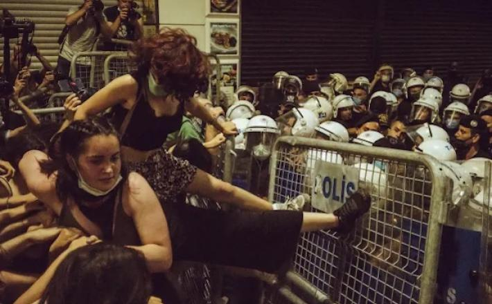
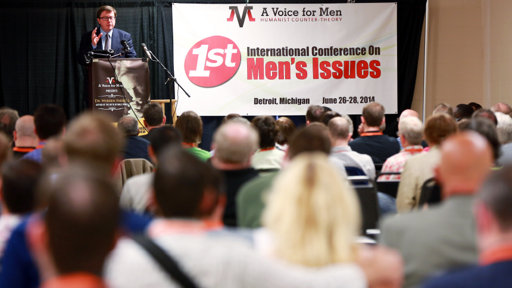
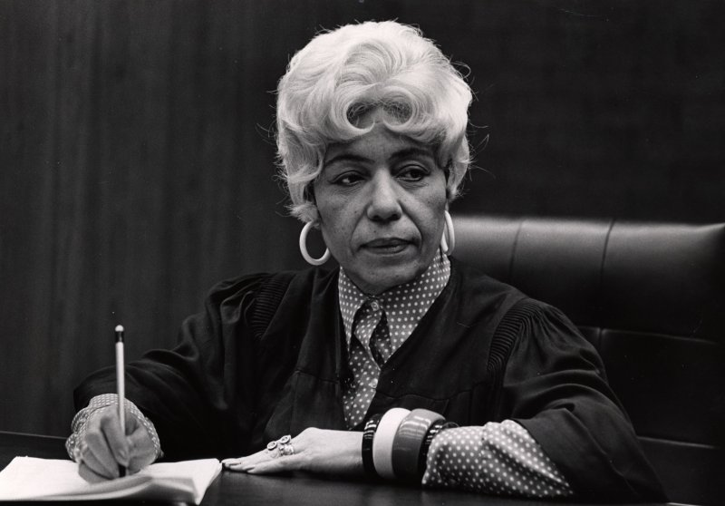
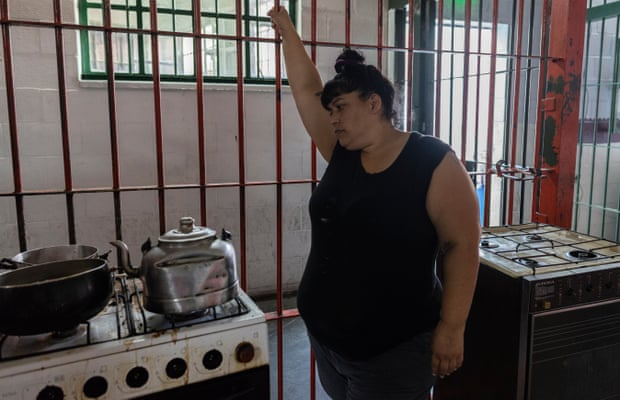
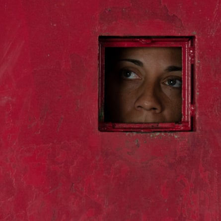
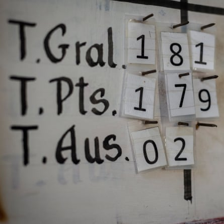
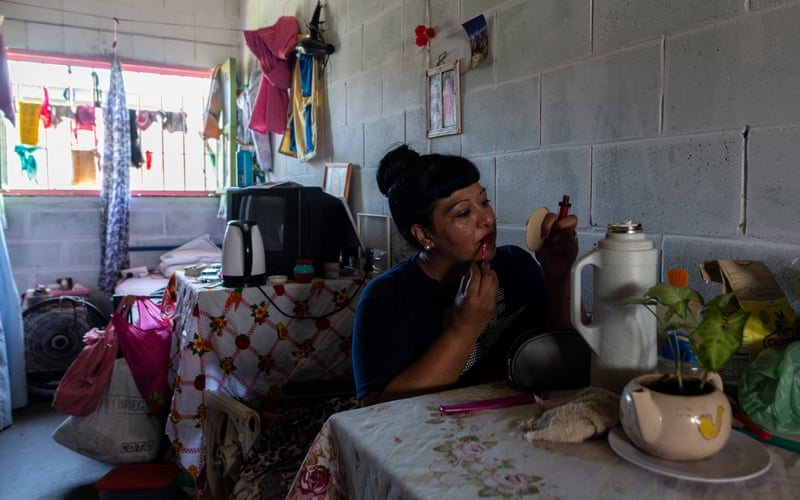
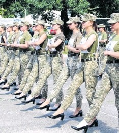

Politică
Sexism
Feminism
Identitate de gen
Contrafacerea
Schimbări climatice
Diverse
"Negocierea faustiană" a feminismului liberal
{Comentariu: "Când am predat cele 3 ramuri ale feminismului, am explicat prin istorie și exemple cum a văzut și tratat societatea femeile care luptau pentru egalitatea de gen. Cum a existat un efort organizat pentru a le obstrucționa
progresul, prezentându-le pe feministele radicale ca fiind urâte, neiubite, care urăsc bărbații, și că această atitudine față de feministele radicale există și astăzi. Au fost date exemple istorice și recente pentru a demonstra
acest lucru.
Articolul de mai jos evidențiază anul 2014 în cronologia "feminismului" modern, când feminismul liberal a luat amploare și și-a găsit împuternicirea prin intermediul industriilor modei și frumuseții, al celebrităților,
al influencerilor și al culturii pop. Apoi articulează consecințele care au venit acum, în 2022, din succesele aparente ale feminismului liberal până în anii 2010, pe care le descrie ca fiind un târg faustian. Un târg faustian
este un târg prin care îți schimbi avantajul moral pentru un anumit tip de recompensă - în acest caz, pentru a face feminismul "popular".
În catastroficul an electoral 2016, sondajele de la ieșirea de la urne ale Universității Tufts au constatat că doar 20 la sută dintre femeile milenare nu au fost de acord cu afirmația că feminismul "este despre alegerea
personală, nu despre politică". Diviziunea privind acțiunea personală versus acțiunea colectivă a fost "o deconectare centrală" între generația tânără de feministe și cele mai în vârstă dintre ele
Cu alte cuvinte - 80% dintre femeile milenare au respins noțiunea că "personalul este politic".
Ultimul articol împărtășit a demonstrat cum feminismul a redevenit rușinos - nepopular, demodat. A demonstrat că generațiile cele mai ostile egalității de gen sunt cele mai tinere, și nu cele mai în vârstă.
Acest articol prezintă câteva puncte legate între ele - Că femeile mai tinere sunt cele care se opun cu preponderență la ideea că "personalul este politic".
Linia noastră de reformă este o istorie a Succesului. Dar succesul pentru această Mișcare și pentru forțele care conduc America spre Legea duminicală, înseamnă, de asemenea, că este o istorie a Eșecului pentru forțele din
Statele Unite care se opun Legii duminicale. Este o istorie a Eșecului pentru cei care ar trebui să fie aboliționiști.
Este timpul să înțelegem de ce."}
------------------------
La aproape o lună de la ziua in care americanii au aflat de proiectul de opinie al judecătorului Samuel Alito de la Curtea Supremă, care ar eviscera dreptul constituțional al femeilor de a-și controla corpul și, prin urmare,
viața, milioane de oameni au stat lipiți de ecranele lor pentru a asista la verdictul în procesul de defăimare dintre Johnny Depp și Amber Heard, în care juriul i-a acordat peste 10 milioane de dolari domnului Depp. Într-o declarație
făcută după aceea, doamna Heard s-a declarat "dezamăgită de ceea ce înseamnă acest verdict pentru femei". "Dă timpul înapoi", a spus ea, "la o perioadă în care o femeie care vorbea și se exprima putea fi rușinată și umilită în
public".
Ruinarea lui Roe și umilirea doamnei Heard au fost prezentate ca o convergență cosmică, dovada unei retrageri forțate mai mari a progresului femeilor. "Victoria juridică a lui Johnny Depp și moartea lui Roe vs. Wade fac
parte din aceeași mișcare culturală toxică", a afirmat un articol Vox. "Aceste exemple pot părea disparate, dar există o linie de legătură importantă", a scris un jurnalist de la USA Today, citând academicieni care au făcut legătura
între proiectul de opinie al lui Alito, hărțuirea Depphead și, pentru o bună măsură, "consumul public" de decolteu la Met Gala (care a avut loc în aceeași seară în care s-a scurs proiectul Curții Supreme): "Aceasta este o reacție
negativă".
Poate că este o reacție negativă. Chiar și așa, punerea doamnei Heard în același coș de backlash-deplorables ca și moartea lui Roe este o greșeală. Pierdut în frenezia amalgamării se află o distincție crucială. Există
o linie de demarcație, bineînțeles. Ambele sunt verdicte asupra cursului recent și fragil al feminismului. Dar unul spune povestea despre cum am ajuns aici; celălalt unde ne îndreptăm. Cum a pierdut feminismul modern Roe vs. Wade?
Un răspuns se află în Depp v. Heard.
"Am devenit o figură publică care reprezintă abuzul domestic", a scris doamna Heard într-un eseu de opinie din Washington Post în 2018, care a declanșat furia defăimătoare a domnului Depp. De asemenea, ea a "reprezentat"
A.C.L.U. (căreia îi promisese jumătate din înțelegerea de divorț de 7 milioane de dolari) ca unul dintre "ambasadorii săi pentru drepturile femeilor". Acest angajament a plasat-o direct în tradiția lăudatei renașteri a celui de-al
patrulea val al feminismului de la începutul anilor 2010.
Acest val a exploatat social media pentru a atinge cote inimaginabile de divertisment și popularitate comercială. Celebritățile "reprezentau" feminismul, iar fanii lor feminiști dădeau "like" și distribuiau pe Twitter
declarațiile vedetelor lor, într-o solidaritate virală care, se spera, ar fi grăbit schimbarea.
Celebritățile din America au semnat. Miley Cyrus: "Simt că sunt una dintre cele mai mari feministe din lume pentru că le spun femeilor să nu se teamă de nimic." Katy Perry (renegând respingerea anterioară a "feminismului"):
"Înainte nu prea înțelegeam ce înseamnă acest cuvânt, iar acum că înțeleg, înseamnă doar că mă iubesc ca femeie și iubesc și bărbații."
Kendall Jenner și Cara Delevingne au condus modelele de pe podiumul Chanel care au afișat pancarte cu mesajul "Libertate liberă" la un "miting feminist" în timpul Săptămânii Modei de la Paris. Emma Watson și-a lansat inițiativa
HeForShe în calitate de ambasador al bunăvoinței U.N. Women, invitând băieții și bărbații "să fie văzuți vorbind" pentru egalitatea de gen - declanșând un cult al ambasadorilor globali pentru emanciparea femeilor. Și, bineînțeles,
Beyoncé a cântat în fața acelui ecran gigantic "Feminist" la MTV Video Music Awards.
America corporatistă s-a alăturat. "Până în 2015, nu puteai să balansezi un tampon fără să lovești pe cineva sau ceva care se lăuda cu importul său feminist, în locuri la care cu siguranță nu te-ai fi așteptat: lac de
unghii, lenjerie intimă, băuturi energizante, Swiffers", a notat Andi Zeisler, cofondator al Bitch Media, în cartea sa "We Were Feminists Once". Spanx a comercializat Power Panties sub sloganul "Femeile puternice poartă chiloți
puternici" - cu ajutorul Tinei Fey și al lui Adele, care au cântat laudele shapewear-ului. Dior a vândut cămăși de 700 de dolari care trâmbițau sloganul "Ar trebui să fim cu toții feministe" al lui Chimamanda Ngozi Adichie (și
a donat o parte din încasări organizației non-profit a Rihannei). Corporațiile au lipit bannere cu "Viitorul este feminin" pe site-urile și rapoartele lor anuale. Sheryl Sandberg (a cărei demisie din funcția de director general
al Meta a avut loc în aceeași zi cu verdictul privind cazul Depp-Heard) și-a început revoluția "Lean In" prin recrutarea unor actrițe de primă mână (și a unor feministe celebre) pentru a-și posta momentele "Lean In".
La momentul respectiv, s-a simțit ca o descoperire. "Steaua feminismului a urcat", a scris scriitoarea feministă Jessica Valenti în The Guardian în 2014. "Feminismul nu mai este "cuvântul cu F"; este domeniul copiilor
cool". Nu cumva opoziția înstrăinase femeile de feminism timp de zeci de ani, zugrăvindu-i pe susținătorii săi ca pe niște duri nepopulari? Acest mesaj a saturat media și cultura pop din anii 1980: "Îmbrățișează feminismul și vei
sfârși neiubită, necăsătorită, sterilă și nebună". Dacă feminismul era acum la modă, nu era acesta un pas înainte?
"2014 a transformat feminismul într-un brand - și asta nu este un lucru rău", a intitulat Quartz un articol publicat la sfârșitul acelui an de o tânără scriitoare feministă pe nume Jessica McCarthy, contemplând promisiunea
a ceea ce ea a numit "noul feminism milenar pe care generația mea îl introduce". Ea a înțeles preocupările "gardienilor feminismului din vechea gardă" - că un feminism mai comercial și mai preocupat de celebritate ar putea submina
"spiritul colectiv al mișcării". Dar a decis că nu avea de ce să se teamă. "Acest nou val care acceptă (în mod critic) noi mărci de feminism", a concluzionat ea, "nu va permite niciodată ca acesta să fie vândut."
O speranță rezonabilă. La urma urmei, cu un secol mai devreme, nu deschiseseră sufragistele magazine de sufragii care vindeau produse "Vot pentru femei", nu comandaseră filme și nu obținuseră susținerea vedetelor din filmul
mut Mary Pickford și Ethel Barrymore - și nu câștigaseră dreptul de vot până la sfârșitul deceniului?
Dar cultura pop de masă era la început în anii 1910, iar importanța impunătoare a celebrităților nu ajunsese încă să definească America. Până la jumătatea anilor 2010, ceea ce fusese cândva un adjunct popularizator al
feminismului amenința să devină fața publică a feminismului însuși - și un model pentru modul de a fi activist feminist.
Un referendum timpuriu asupra acestor tactici a avut loc la 8 noiembrie 2016, odată cu înfrângerea lui Hillary Clinton. În urma acestui eveniment, o gamă vastă de femei necunoscute s-au întors la vechile metode, alimentând
o trezire progresistă cumulativă. Nu doar prin Marșurile femeilor care au atras milioane de oameni pe străzile din întreaga țară, ci și prin sute de inițiative de organizare locală și regională. Organizații activiste de bază conduse
de femei, precum Sister District, Black Voters Matter, MomsRising și Flippable, au apărut la primării, au convocat mitinguri comunitare, au făcut petiții, au făcut campanii și au organizat campanii telefonice, într-o tradiție care
a amintit de lungul secol de luptă a femeilor americane pentru vot.
Această mobilizare a fost curând umbrită de #MeToo, care, în ciuda precursorului său prehashtag ca sistem de sprijin de baza pentru fetele de culoare victime ale violenței sexuale, a restabilit în mod ironic o preocupare
pentru celebritate, cu accentul intens pus pe femeile de renume care denunțau bărbații de renume.
#MeToo a atras atenția, atât de necesară, asupra flagelului prădătorilor sexuali la locul de muncă și a transmis un avertisment bărbaților aflați la putere. Poate că represaliile împotriva unor infractori sexuali demni
de tabloide au trimis un mesaj cu efect de scurgere către conducerea de mijloc și către uzină. Dar, în cele din urmă, realizările principale ale campaniei au fost rușinarea bărbaților V.I.P.-urilor. Arma de umilire publică a #MeToo
nu a fost deosebit de utilă împotriva unui prădător fără public - de exemplu, un supraveghetor de bancă sau un maistru de atelier.
Folosirea feminismului celebrităților și a hashtag-urilor este un mod periculos de a urmări promovarea femeilor, deoarece cade atât de ușor victimă propriilor instrumente și metode. În cazul doamnei Heard, fostul ei soț
a întors strategia #MeToo împotriva sa. Domnul Depp a pretins că a fost victimizat pentru că este o personalitate generatoare de bani - ar putea fi deconspirat pentru că este celebru. Iar mobilizarea masivă (și vicioasă) a fanilor
săi pe rețelele de socializare (aproape 20 de miliarde de vizualizări pentru #JusticeForJohnnyDepp pe TikTok până la 2 iunie) a fost copleșitoare, chiar și după standardele #MeToo. Prin contrast, #JusticeForAmberHeard a avut aproximativ
80 de milioane de vizualizări pe TikTok în aceeași perioadă.
Reprezentarea feminismului de către celebrități este o sabie cu două tăișuri. Dacă un individ întruchipează principiul, principiul poate fi infirmat prin detronarea individului. În acest fel, doamna Heard a devenit atât
avatar, cât și victimă a feminismului celebrităților. Când a luat atitudine, a adus în boxa acuzaților și întruchiparea modernă a mișcării feministe și i-a mobilizat pe cei care vor să o vadă doborâtă. Dacă un ambasador al drepturilor
femeilor nu era credibil, s-a grăbit să concluzioneze mulțimea de hateri ai doamnei Heard, atunci nici mișcarea nu mai era credibilă. Nu este nevoie să ne îngrijorăm de acele legiuni de femei necunoscute care s-ar putea gândi acum
de două ori înainte de a raporta violența domestică.
Cuplarea averilor feminismului cu celebritatea ar fi meritat dacă ar fi dus la victorii politice semnificative. Dar astfel de victorii sunt greu de obținut doar prin campanii de marketing, după cum înțelege aripa dreaptă.
A fost nevoie de zeci de ani de mobilizare curajoasă și lipsită de glorie a soldaților conservatori, începând de la nivelul consiliilor școlare și al comisiilor județene, pentru a domina Congresul și Curtea Supremă. În timp ce
feminismul pop se bucura de apogeul său la începutul anilor 2010, legislativele de stat au adoptat peste 200 de restricții privind accesul femeilor la avort. În timp ce campania doamnei Clinton de la mijlocul anilor 2010 a adunat
susținerile doamnei Perry, ale Lenei Dunham, ale lui Rosie Perez și ale altora, Donald Trump a făcut în liniște târgul cu dreapta religioasă anti-avort, care a contribuit la propulsarea sa la Casa Albă. În timp ce hashtag-urile
#MeToo dominau știrile la sfârșitul anilor 2010, administrația Trump a desființat Comisia pentru egalitatea de șanse în materie de angajare și a instalat zeci de judecători anti-avort în instanțe.
Călcâiul lui Ahile al feminismului pop este credința în puterea vedetei individuale de a transforma acțiunea comunitară, credința că un influencer placat cu aur plus o listă de abonamente plus niște conținut viral pot
fi alchimizate în activism de masă. Campania #MeToo, așa cum a evoluat, a fost determinată în mare măsură de această credință - la fel ca și "Lean In" a dnei Sandberg, o "mișcare" de aspiranți independenți la funcția de director,
fiecare dintre ei fiind instruit să își învingă "obstacolele interne" pentru a avansa ca individ, mai degrabă decât să se organizeze pentru a învinge forțele externe. Această etică a făcut-o atractivă pentru clasa profesională,
dar puțin utilă pentru marea masă a femeilor care lucrează.
Eforturile celebre, individualiste și comerciale au tendința de a-și trăda partenerii colectivi dubioși. Atunci când menajerele care se organizează la un hotel Hilton DoubleTree Suites din Boston au cerut să se întâlnească
într-un cerc "Lean In" cu doamna Sandberg în timp ce aceasta se afla în oraș pentru a ține un discurs de Ziua Clasei la Universitatea Harvard, care deține clădirea hotelului, biroul acesteia ar fi refuzat, invocând programul său
încărcat. Acele tricouri omniprezente "Așa arată o feministă" erau fabricate de femei care câștigau aproximativ 1 dolar pe oră într-o fabrică din Mauritius. Feminismul de marcă își permisese într-adevăr să fie vândut.
Nu este bine să ducem lupta cea bună pe toate fronturile? Sigur că da. Dar, fără o convingere fermă cu privire la ceea ce este cel mai important, a lupta într-o bătălie poate însemna renunțarea la alta. Ar trebui ca lucrurile
să fie atât de ori una ori alta? Dacă cultura pop poate face din a fi feministă o identitate personală "cool", nu se poate ca acest lucru să se traducă în a face feminism și astfel să avanseze organizarea de modă veche?
Poate. Dar noul stil individualist de feminism s-a prezentat atât de des ca o alternativă în loc să fie un ajutor pentru activismul comunitar de modă veche. În catastroficul an electoral 2016, sondajele de la ieșirea de
la urne ale Universității Tufts au constatat că doar 20 la sută dintre femeile milenare nu au fost de acord cu afirmația că feminismul "este despre alegerea personală, nu despre politică". Diviziunea privind acțiunea personală
versus acțiunea colectivă a fost "o deconectare centrală" între generația tânără de feministe și cele mai în vârstă, a concluzionat The Washington Post, pe baza propriului sondaj din 2016 realizat împreună cu Kaiser Family Foundation
și completat cu interviuri de monitorizare.
Există o problemă mai mare aici. Feminismul celebrităților se bazează pe ideea că o celebritate poate instiga la schimbare prin reprezentarea unei cauze. Ceea ce reduce atât de des cauza la o persoană: Ne gândim la minele
de pământ, ne gândim la Prințesa Di. Aceeași ecuație funcționează în sens invers. Poți să-ți stabilești o personalitate îmbrățișând o cauză. Virtutea devine o vanitate. Nu mai faci ceva, ci ești ceva. Iar în epoca noastră de social-media,
oricine are un canal YouTube sau un cont TikTok poate încerca acest lucru. Nu mai ai nevoie de o vedetă de cinema pentru a fi în fruntea mișcării tale. Celebritatea de sine va fi suficientă. O cultură corozivă este încurajată.
Chiar și să te concentrezi asupra procesului Depp-Heard - așa cum fac eu aici - înseamnă să riști să favorizezi o reacție mai pernicioasă, una care nu a cedat niciodată, una care ne-a adus calamitatea proiectului de opinie
Alito. Acea reacție, ascunsă sub ani de momente "Lean In" și de discuții pe rețelele de socializare pentru a stabili dacă Taylor Swift este sau nu este feministă, nu și-a pierdut niciodată forța sau concentrarea, iar pedeapsa sa
a fost și va fi întotdeauna aplicată asupra celor neconsacrați și neînsemnați.
Este greu să îmbraci în paiete problemele de buzunar, iar feminismul celebrităților a preferat să se concentreze pe problemele de sexualitate și identitate în locul celor economice de bază. Dar avortul este, în mod inevitabil,
o problemă de justiție economică. Dreptul la avort nu se referă doar la alegere, ci în mod fundamental la supraviețuirea femeilor care nu au de ales, care se confruntă cu o necesitate extremă. Adică, vastele pături de femei segregate
în ocupații cu guler roz prost plătite, femei incapabile să recupereze locurile de muncă pierdute în urma unei pandemii care le-a scos de pe piața forței de muncă de patru ori mai mult decât bărbații, femei care nu-și pot permite
o educație sau o locuință decentă sau îngrijirea copiilor și, în curând, se pare, incapabile să obțină un avort atunci când au nevoie sau doresc unul.
Confruntarea eficientă a amenințărilor la adresa bunăstării materiale a femeilor necesită o reglare de conturi în cadrul feminismului. Aceasta trebuie să meargă dincolo de acuzațiile generaționale. Ar fi greșit să le catalogăm
drept ingenue de pe Instagram pe numeroasele feministe milenare care luptă pe teren împotriva impedimentelor practice la egalitate, la fel cum este greșit ca radicalii parveniți să reformuleze cel de-al doilea val ca fiind o mișcare
burgheză uitată de rasă și clasă. Activismul colectiv al celui de-al doilea val a ajutat la asigurarea, printre alte realizări de referință, a dreptului la avort - un drept pe care, în vremurile noastre de celebritate și de egocentrism,
îl lăsăm să ne scape.
Pe măsură ce decizia viitoare a instanței ne readuce atenția la elementele de bază, există și alte modele la care ne putem raporta. Alianța Națională a Lucrătorilor Domestici, de exemplu, a cărei susținere și organizare
a lucrătorilor casnici cu venituri mici a dus la adoptarea legilor privind Carta Drepturilor Lucrătorilor Domestici în 10 state și două orașe. Sau Fair Fight Action, fondată de Stacey Abrams - o campanie de reformă a votului care
a ajutat la întoarcerea Georgiei la democrați pentru prima dată într-o generație și a ajutat la salvarea națiunii de la un alt mandat de Trumpism. Sau "marea verde", o mișcare de masă multiplă a feministelor din America Latină
care a pus accentul pe echitatea în materie de sănătate și pe probleme economice pentru a obține un spectru larg de sprijin public și a legaliza avortul în Argentina, Mexic și Columbia.
La sfârșitul secolului al XIX-lea, Alianța Femeilor din Illinois a reunit aproape toate organizațiile de femei din Chicago - inclusiv sufragiste, sindicaliști și socialiști - a forțat o investigație a Congresului privind
munca femeilor din fabricile clandestine și a impus adoptarea Legii pentru ateliere și fabrici, creând o zi de opt ore pentru femei și copii și interzicând munca în fabrici pentru copiii sub 14 ani. (Cartea recent reeditată în
1980 a feministei din al doilea val Meredith Tax, "The Rising of the Women" (Răsăritul femeilor), relatează alianța și modul în care legea a fost parțial anulată de o Curte Supremă de Stat ostilă).
Eforturile coaliției s-au reflectat la nivel național în activitatea unor grupuri diverse, de culoare și albe, inclusiv în mișcarea pentru casele de colonie, Liga Sindicatelor Femeilor și Uniunea Vecinilor din Atlanta.
Ultimul a fost organizat de reformatoarea socială Lugenia Burns Hope, care era căsătorită cu președintele Morehouse College și a mobilizat alte soții de profesori pentru a lupta pentru educație, creșe și locuințe pentru femeile
negre sărace.
Toate aceste grupuri au aderat la un principiu fundamental consacrat în declarația de misiune a Illinois Woman's Alliance: "Statutul real al celei mai sărace și mai nefericite femei din societate determină statutul posibil
al fiecărei femei." Așa cum Curtea Supremă ar putea să ne reamintească în curând, este un principiu pe care îl ignorăm pe riscul nostru.
 Sursa: https://www.nytimes.com/
Sursa: https://www.nytimes.com/

Etiopia - secole de imperialism religios renasc pe fondul unei catastrofe umanitare
{Comentariu: "În 2021, Etiopia avea mai multe persoane strămutate în interiorul țării decât orice altă țară din lume.
În Etiopia se construiește de ceva timp o criză umanitară de o amploare înfricoșătoare. Anul 2018 a fost un punct de cotitură, când guvernul autoritar aflat atunci la putere a fost dizolvat, iar la putere a venit prim-ministrul
Abiy Ahmed, care a folosit vasta istorie religioasă a Etiopiei în scopuri politice proprii, anunțându-se pe sine "al șaptelea rege al Etiopiei". Acest articol urmărește rădăcinile crizei până la cel puțin un mileniu de imperialism
patriarhal.
Problemele sunt complexe și nu sunt la nivel fundamental înrădăcinate în religie, ci, în schimb, religia a fost cooptată în ultimii patru ani pentru a se potrivi unei narațiuni culturale. V-aș încuraja să înțelegeți criza
de acolo, în contextul diverselor aspecte pe care le-am prezentat prin intermediul cursurilor noastre de vineri seara."}
---------------------------
Un vechi imperialism creștin reapare astăzi în Etiopia, sub conducerea prim-ministrului Abiy Ahmed. Această viziune arhaică promite să unifice Etiopia și să îi redea gloria divină. Dar se pare că sfărâmă Etiopia și alimentează
o suferință catastrofală.
Credința sa centrală este că Etiopia este o națiune creștină creată și destinată de Dumnezeu pentru măreție sub conducere creștină. În prezent, aceasta supraîncarcă dușmănia și reduce la tăcere vocile critice care cer
încetarea războiului, un dialog autentic și o Etiopie incluzivă în care oameni diferiți pot fi uniți.
Înțelegerea istoriei religioase a Etiopiei este crucială pentru a înțelege complexitatea conflictelor din Etiopia și perspectivele de pace din prezent. Analizele despre Etiopia marginalizează sau ignoră adesea religia,
dar se estimează că 98% dintre etiopieni spun că religia este "foarte importantă" pentru ei. Ultimul recensământ din Etiopia a estimat că 43,5 la sută dintre etiopieni se identifică drept creștini ortodocși, 33,9 la sută drept
musulmani și 18,6 la sută drept protestanți. Atunci când treci cu vederea religia în Etiopia, nu reușești să înțelegi una dintre cele mai puternice surse de motivare - și manipulare - în societatea etiopiană.
Împăratul Ezana, care a domnit între aproximativ 320 și 360 d.Hr., a convertit statul Axumite din Etiopia la creștinismul ortodox în jurul anului 330 d.Hr. Ezana se autointitulase anterior "fiul" zeului războiului Mahrem,
Acesta era un mod obișnuit de a pretinde un statut divin de neatins în imperiile antice, cunoscut sub numele de "regalitate sacrală". Ezana a pretins apoi că este "slujitorul lui Hristos" și a lucrat în "simfonie" cu primul Abune
sau Patriarh al Etiopiei, Frumentius, pentru a-și converti imperiul. Cucerirea și evanghelizarea au extins apoi imperiul spre sud timp de secole, în timp ce împărații ortodocși funcționau ca "regi-preoți" peste biserică și stat.
Lalibela și Gondar - cunoscute ca Ierusalimul și Camelotul Africii - sunt capitalele istorice ale acestei expansiuni imperiale ortodoxe.
Prin urmare, a fi ortodox a definit identitatea și apartenența în Etiopia imperială timp de peste 1.000 de ani. Această identitate a fost demonstrată prin botez, primirea unui nume ortodox și purtarea șnurului negru de
botez în jurul gâtului.
Bineînțeles, Etiopia a fost, de asemenea, casa Islamului, datând din vremea Profetului Mahomed (570-632). Această istorie de coexistență reciprocă între creștini și musulmani este bogată și ar trebui să fie valorificată.
Dar povestea nu este atât de simplă - după cum arată cronicile regale ale Etiopiei.
De exemplu, Victoriile glorioase ale lui Amda Seyon, rege al Etiopiei (1314-1344), cronica unui conducător fondator al dinastiei solomonice din Etiopia, relatează măcelărirea înfiorătoare a musulmanilor în numele Dumnezeului
ortodox. Ahmad ibn Ibrahim al-Ghazi (1506-1543) a declanșat mai târziu un jihad devastator în Etiopia, care a supraîncărcat conflictul religios. Sub această umbră, Cronica împăratului Yohannes I (1667-1682) afirmă: "[Musulmanii,
evreii și alte minorități] nu ar trebui să trăiască cu creștinii", chiar dacă periferiile imperiului continuau să dezvolte identități religioase și sociale foarte diferite de identitatea ortodoxă și uneori combatante cu aceasta.
A fi ortodox a definit identitatea și apartenența în Etiopia imperială timp de peste 1.000 de ani.
Conciliul de la Boru Meda din 1878 a fost o piatră de hotar modernă majoră. Împăratul Yohannes al IV-lea a decretat că musulmanii trebuie să se convertească la ortodoxie în termen de trei luni sau vor fi pedepsiți. Demnitatea
și securitatea în imperiul etiopian au rămas dependente de faptul de a fi ortodox și ascultător față de împărat. Împăratul Menelik al II-lea (care a domnit între 1889-1913) a numit Etiopia "o insulă creștină într-o mare de păgâni".
Politica religioasă a împăratului Haile Selassie a fost mai tolerantă, iar Constituția etiopiană din 1955 a recunoscut libertatea religioasă (articolul 40). El a permis misionarilor protestanți să facă prozelitism în periferiile
neortodoxe ale imperiului. Dar Etiopia a rămas în mod oficial un imperiu ortodox, împăratul s-a intitulat "Leul cuceritor al tribului lui Iuda, alesul lui Dumnezeu" și a revendicat în mod explicit aceeași regalitate sacrală pe
care a avut-o Ezana cu 1.600 de ani înainte: "Persoana împăratului este sacră, demnitatea sa este inviolabilă și puterile sale incontestabile... Numele împăratului va fi menționat în toate serviciile religioase". Protestantismul
și islamul au rămas, în cel mai bun caz, marginalizate.
O ruptură dramatică a avut loc în Imperiul Ortodox din Etiopia odată cu revoluția țării din 1974. Pentru următorii 17 ani, Etiopia a devenit un stat comunist susținut de sovietici, cunoscut sub numele de Derg.
Dergul a dat vina pe religie pentru "înapoierea" Etiopiei. Dar ateismul militant al Derg-ului în numele "Enat Hager" (Patria Mamă) reflecta imperialismul ortodox în numele "Kidist Hager" (Țara Sfântă). Marxismul a devenit
noua ortodoxie, iar comunitățile religioase au fost grav persecutate și liderii de rang înalt asasinați. O memorie colectivă traumatizată bântuie multe familii din această perioadă de violență extremă.
Cu toate acestea, poporul etiopian este profund religios, iar această secularizare zeloasă era destinată să eșueze de la primul glonț. Și așa a și fost.
În 1991, Derg a fost răsturnat de o altă revoluție condusă de Frontul de Eliberare a Poporului Tigray (TPLF). TPLF a format o coaliție de guvernare pentru a conduce Etiopia, cunoscută sub numele de Frontul Democratic Revoluționar
al Poporului Etiopian (EPRDF), iar libertatea religioasă a primit un nou statut legal sub EPRDF.
Articolul 11 din Constituția etiopiană din 1995 a reprezentat un progres revoluționar. Acesta a secularizat statul, iar Etiopia a devenit în mod oficial casa oamenilor de orice credință sau fără credință. Protestanții
și musulmanii s-au bucurat cu prudență, în timp ce mulți ortodocși s-au simțit dezmoșteniți. Acest secularism în stil francez rămâne problematic, deoarece marginalizează vocile religioase în viața publică etiopiană și descurajează
universitățile să înființeze departamente de studii religioase. Cu toate acestea, noua constituție a respins secularismul militant al Derg, iar religiile au fost libere de drept să se extindă.
Și au făcut-o. Mișcarea evanghelică a explodat de la o mică minoritate la aproximativ 20 de milioane de membri în prezent. Această mișcare a apărut în secolele al XIX-lea și al XX-lea cu misionari europeni și americani.
Dar, sub persecuția Derg-ului, mulți misionari au plecat, iar mișcarea a prosperat sub conducerea indigenilor. Islamul a căpătat, de asemenea, o nouă proeminență în viața publică etiopiană. Peisajul religios al Etiopiei a început
să se schimbe dramatic, iar acest lucru a provocat o nouă anxietate în cercurile ortodoxe, care simțeau că imperiul lor alunecă în trecut.
Bineînțeles, EPRDF era un regim brutal de autoritarism și intimida, aresta și ataca cu forța pe oricine îl critica. Astfel, creștinii cărora nu le plăcea EPRDF s-au redus în mare parte la tăcere și au fost de acord cu
status quo-ul, de teamă să nu fie pedepsiți. Din nefericire, acest quietism creștin a continuat chiar și în fața unor atrocități teribile în 2005 și din 2014 până în 2018, când protestele publice împotriva EPRDF au fost reprimate
cu violență.
Resentimentul fierbea, dar trauma Derg-ului era încă proaspătă.
Anul 2018 a reprezentat un punct de cotitură major în istoria religioasă și în viața publică a Etiopiei.
Resentimentele au explodat în timpul protestelor Oromo din 2014 până în 2018, iar Etiopia a devenit rapid neguvernabilă. În 2018, prim-ministrul etiopian de atunci, Hailemariam Desalegn - primul conducător protestant al
Etiopiei - a demisionat, iar Abiy Ahmed a fost numit în martie 2018. Abiy era un tânăr lider Oromo și fostul șef al supravegherii EPRDF.
Abiy a devenit primul prim-ministru evanghelic din Etiopia. Tatăl său era musulman, mama sa era ortodoxă, iar Abiy însuși s-a convertit la penticostalism la vârsta de 20 de ani (în Etiopia, protestantismul, evanghelismul
și penticostalismul sunt creștinisme care se suprapun). Abiy a fost aclamat în mod extatic de mulți etiopieni - în special de evanghelici - ca un mesia, ca un nou "Moise" sau "rege David" care va salva Etiopia de la dezintegrare.
Într-un discurs timpuriu, Abiy s-a anunțat ca fiind "al șaptelea rege al Etiopiei", o referire la profeția mamei sale ortodoxe despre el în copilărie. Această autoprezentare a evocat cu putere istoria străveche a imperialismului
creștin al Etiopiei și promisiunea de restaurare a măreției Etiopiei. (Șapte este numărul perfecțiunii în mare parte din numerologia creștină).
Iar în Etiopia lui Abiy, imperialismul creștin este în revenire.
Abiy a început să ridice în public voci extremiste din Biserica Ortodoxă, cum ar fi Daniel Kibret, un proeminent erudit ortodox din spatele Mahibere Kidusan sau "comuniunea sfinților". Acest grup puternic este o mișcare
de tineret ortodoxă de dreapta cu misiunea, în parte, de a restabili hegemonia istorică a Bisericii Ortodoxe. Deloc surprinzător, Daniel este, de asemenea, (in)faimos pentru intoleranța sa față de musulmani și protestanți - totuși,
mulți lideri protestanți, recunoscându-i puterea, par să-l îmbrățișeze, cu toate acestea. După ce Abiy l-a numit consilier personal, Daniel a ținut un discurs genocidar ca la carte, în care a cerut eradicarea dușmanilor săi din
Tigrayan ca fiind "buruieni" și "demoni". Daniel este acum membru al parlamentului.
Dezmoșteniții care tânjeau după o întoarcere la Etiopia glorioasă din trecutul imperial au văzut în aceasta o permisiune de a se reafirma pe ei înșiși și de a-și revendica identitatea etiopiană. Steagul roșu, galben și
verde fără stele al imperiului ortodox a fost resuscitat și a devenit un simbol militant al nostalgiei imperiale. Acest steag naționalist creștin este omniprezent în bisericile ortodoxe și reprezintă un motiv de dispută acerbă
în Etiopia de astăzi. Un activist etiopian proeminent a declarat pentru FP că mulți Oromos îl privesc așa cum americanii de culoare privesc astăzi steagul confederat în Statele Unite: ca pe un simbol al subjugării și al cuceririi.
Evanghelismul explodează în prezent în Etiopia. Această creștere rapidă este cea mai puternică în Oromia și în regiunile sudice ale Etiopiei, unde mulți s-au simțit oprimați și sărăciți de imperiul ortodox al Etiopiei.
Această mișcare a injectat "evanghelia prosperității" în cultura populară etiopiană. Doctrina sa proclamă că, dacă îți crezi neîndoielnic liderul spiritual și dovedești acest lucru dând bani, Dumnezeu te va face sănătos, bogat
și triumfător. Etiopia are acum o industrie profitabilă de profeți eleganți și vorbitori motivaționali care promit prosperitate. În multe feluri, Abiy însuși este un antreprenor al prosperității. El a mers atât de departe încât
a înlocuit vechiul EPRDF cu noul său "Partid al Prosperității", ale cărui nuanțe religioase nu ar trebui să fie ratate.
Abiy a înțeles că nu poate deveni al șaptelea rege al Etiopiei fără acordul purtătorilor de cuvânt evanghelici din Etiopia și a început rapid să îi cheme în cercul său de apropiați.
În 2019, Abiy și-a lansat Consiliul Evanghelic Etiopian. Această nouă organizație umbrelă a fost condusă de un grup de 15 persoane influente din domeniul creștin. Din grup fac parte celebrul psihiatru Mehret Debebe, bătrâni
evanghelici precum Negussie Bulcha și Betta Mengistu, precum și tânăra celebritate guvernamentală Yonas Zewde.
Atunci când Abiy și-a prezentat viziunea premeditată celor 400 de lideri creștini de la Palat, el a spus unei audiențe captive: "Constituția spune că biserica și statul ar trebui să fie separate, dar asta nu înseamnă că
nu ar trebui să lucreze împreună". (Aceasta face aluzie la puternica idee teologică a "simfoniei" dintre biserică și stat menționată mai sus cu împăratul Ezana). Documentul fondator al consiliului a dictat apoi, în primul său articol,
că liderii săi sunt direct răspunzători în fața lui Abiy însuși. Când a fost întrebat despre acest lucru, unul dintre arhitecții consiliului a spus: "Vom prescrie; oricine poate subscrie sau poate fi lăsat în urmă".
Prezentat ca o unificare a facțiunilor divizate, Consiliul Evanghelic Etiopian a însemnat, nu atât de subtil, că liderii bisericii evanghelice din Etiopia erau acum datori lui Abiy - sau neloiali și, prin urmare, trebuiau
să fie "lăsați în urmă". În spatele scenei, apartenența la acest grup a acumulat afaceri profitabile, concesiuni de terenuri și numiri la putere politică. Când Abiy a fost întrebat despre intențiile sale pentru consiliu, Abiy a
râs și a răspuns: "Este o întrebare la care este foarte greu de răspuns. Vă doriți o instituție puternică. Dar intenția mea este de a extinde Împărăția lui Dumnezeu".
Expansionismul creștin al lui Abiy a energizat teologia "dominionistă" și a celor "șapte munți" în Etiopia. Această teologie politică promovează ideea că, dacă creștinii pot controla sectoare-cheie precum politica, afacerile
și cultura, atunci societatea poate fi "capturată pentru Hristos". Aceasta este paralela penticostală cu imperialismul ortodox care se întinde până la Ezana. Evanghelicii au formulat apoi un document de strategie privată pentru
a pretinde influență în alegerile federale întârziate din 2021, iar unii evanghelici proeminenți au câștigat funcții publice. Paradigma dominionistă a luat avânt în cadrul Partidului Prosperității.
Până în prezent, eforturile lui Abiy au avut un succes sălbatic, dacă nu complet. Sentimentul de devotament față de el a fost palpabil și puternic. Iar istoria descrisă mai sus este crucială pentru a înțelege de ce. Ortodocșii
s-au simțit dezmoșteniți de dreptul lor istoric de a conduce Etiopia imperială din 1974. Evanghelicii au fost marginalizați timp de un secol și apoi au explodat, rămânând în același timp cetățeni de mâna a doua, ridiculizați ca
fiind "neetiopeni" de către lideri ortodocși puternici precum Daniel. Relația dintre ei rămâne intens tensionată, dar ambele părți par să vadă în Abiy al șaptelea rege - sau cel puțin un instrument util pentru ambițiile lor de
până acum.
Betta Mengistu, un părinte fondator al penticostalismului etiopian și un actor-cheie în Consiliul Evanghelic Etiopian al lui Abiy, a spus adesea: "Biserica nu este o democrație! Ceea ce știți nu contează în Etiopia. Pe
cine cunoști este cel mai important". Și acum acești prinți creștini îl cunosc pe Abiy, iar "prosperitatea" pare să curgă.
Etiopia de astăzi pare obsedant de asemănătoare cu un Zemene Mesafint redux - o "Epocă a Prinților" spirituală. Această frază celebră în istoriografia etiopiană trimite la epoca de tulburări violente dintre 1706 și 1855.
În această perioadă, prinții regionali au luptat unii împotriva altora pentru puterea imperială și au fracturat țara în acest proces.
Dovezile vorbesc dureros de la sine.
Un război civil devastator a făcut ravagii în nordul țării timp de 18 luni. Zeci de mii de oameni au fost uciși, aproape un milion de etiopieni se confruntă cu foametea, iar alte milioane de oameni sunt strămutați. Semințele
unor războaie viitoare au fost deja plantate.
Violențe asemănătoare războiului fac ravagii în diferite regiuni ale țării, inclusiv în Oromia, Benishangul-Gumuz și în alte părți. Masacrele, violurile în masă și alte atrocități devin titluri de primă pagină de o normalitate
sfâșietoare.
Recent, am văzut musulmani măcelăriți și moschei incendiate de către "extremiști creștini" în capitala istorică imperial-ortodoxă Gondar. Mass-media de stat a lansat recent un documentar islamofob care îi învinovățește
pe musulmani pentru violențele extremiste din Etiopia, în timp ce bisericile ard și în alte locuri. După cum a declarat un cercetător etiopian pentru FP: "Toată lumea este un autor undeva și o victimă în altă parte".
Cu noul lor acces la privilegii și putere, puțini lideri creștini au recunoscut public violențele teribile care fac ravagii în țară.
Cu noul lor acces la privilegii și putere la Palat, puțini lideri creștini au recunoscut public că aceste violențe teribile chiar se întâmplă. Unii au făcut din islam un țap ispășitor, au alimentat teorii ale conspirației
naționalist-creștine, au apărat războiul civil din nord - care, întâmplător, îi opune pe Tigrayenii majoritar ortodocși celor din Amhara majoritar ortodocși și altora - și au prezentat conflictul ca fiind voința lui Dumnezeu. Prieteni
teologi m-au numit "susținător al teroriștilor" pentru că am spus public ceea ce nu poate fi negat: Războiul civil generează sărăcie în masă și suferințe devastatoare pentru milioane de etiopieni obișnuiți.
În cele aproape două decenii în care am studiat și am lucrat în Etiopia, nu am văzut niciodată atâta ură acerbă și disperare brută. Mass-media este saturată de un limbaj polarizant al "inamicului", de demonizare și de
ură. Genocide Watch plasează Etiopia concomitent în etapele 5 "Organizare", 9 "Eliminare" și 10 "Negare" ale genocidului. EPRDF a fost brutal de totalitaristă, iar atrocitățile erau frecvente. Dar dușmănia radioactivă din Etiopia
de astăzi este de un nou ordin de mărime. Organizațiile societății civile africane avertizează că violențe de amploarea genocidului din Rwanda ar putea izbucni în continuare.
Acest lucru a fost alimentat în mare parte de discursurile dezumanizante ale lui Abiy împotriva "dușmanilor" săi din Tigrayan ca fiind un "cancer", o "hienă" și o "buruiană" care trebuie eradicate. Retorica dezumanizantă
dezlănțuie violența genocidară. Odată cu aceasta, asistăm la o confluență complexă de fundamentalism religios apocaliptic, mesianic și naționalism identitar supraîncărcat. Mai multe grupuri etnice pretind că împotriva lor se comite
un genocid. Cu toate acestea, lideri evanghelici proeminenți insistă asupra faptului că lumea asistă cu adevărat la o întoarcere la măreția divină a Etiopiei.
Lideri evanghelici proeminenți insistă asupra faptului că lumea asistă cu adevărat la o întoarcere la măreția divină a Etiopiei.
Prinții acestui imperialism creștin străvechi - dar încă înviat - din Etiopia fac astăzi un pariu periculos. Stau la masa publicului, zâmbesc în ședințe foto, iar unii dintre ei ocupă poziții de putere politică. Dar, în
timp ce fac acest lucru, țara este literalmente în flăcări. În 2021, Etiopia avea mai multe persoane strămutate în interiorul țării decât orice altă țară din lume.
Solomon Dersso, fostul președinte al Comisiei pentru drepturile omului și ale popoarelor din cadrul Uniunii Africane, a scris tranșant: "Etiopienii și observatorii politicii etiopiene pot fi cu ușurință de acord că cel
mai rău obicei prost al Etiopiei este, într-adevăr, violența de stat. ... [Toate guvernele etiopiene au folosit-o ca principal mijloc de menținere a puterii. Aceasta a devenit atât de bine integrată în mentalitatea și tradiția
instituțională a statului etiopian. Nicio schimbare de timp și de condiții nu a reușit să o schimbe."
Din păcate, acest "cel mai rău obicei rău" face ravagii în Etiopia de astăzi, teologia imperială este folosită pentru a o justifica, iar liderii creștini stau în primul rând - aplaudând cu voce tare sau păstrându-și tăcerea
privilegiată sau intimidată.
Dar istoria etiopiană are, de asemenea, un fir minoritar de protest profetic. De exemplu, în secolul al XV-lea, Abba Estifanos a murit în închisoare pentru că a criticat public violența despotică a împăratului Zera Yacob.
În secolul XX, Abune Petros (ortodox) și pastorul Gudina Tumsa (luteran) au fost asasinați pentru că au criticat violența Italiei coloniale și, respectiv, a Derg-ului. În secolul al XXI-lea, grupul musulman Dimtsachin Yisema -
"Să ne facem auzite vocile!" - a devenit probabil prima mișcare de protest religios non-violentă din Etiopia modernă împotriva amestecului guvernului în conducerea religioasă. Astăzi, Abune Mathias, șeful Bisericii Ortodoxe, a
strigat cu curaj împotriva violenței genocidare din Etiopia.
Această tradiție profetică poate fi continuată și consolidată astăzi pentru o Etiopie incluzivă și reconciliatoare. Desigur, este nevoie de un mare curaj moral. Aceasta necesită denunțarea tuturor formelor de dominație
religioasă, renunțarea la privilegiile și puterea celor din interior și renegarea loialității față de Abiy și față de alți conducători care își construiesc tronurile pe aroganța religioasă, pe diferențiere și pe violență. În esență,
este nevoie de o compasiune profundă pentru durerea tuturor celor care suferă. Diversele tradiții sacre ale Etiopiei pot fi de acord cu această viziune morală vindecătoare, iar aceasta ne poate arăta calea spre pace: Celălalt nu
este dușmanul nostru, ci vecinul nostru.
Nu este timp de pierdut.
Sursa: https://foreignpolicy.com/
Foreign Policy - Sinteza Africii - 22 iunie
22 IUNIE 2022, ORA 1:00 AM De Nosmot Gbadamosi, jurnalist multimedia și redactor al săptămânalului Sinteza Africii de la Foreign Policy.
Nici o țară pentru femei
Nigeria, cea mai mare democrație din Africa, organizează alegeri prezidențiale în luna februarie a anului viitor. În conformitate cu termenul limită din luna iunie, cele mai mari partide din țară și-au desemnat candidații
pentru a-i succeda președintelui nigerian demisionar Muhammadu Buhari, care și-a îndeplinit limita maximă a mandatului în funcție. Alegerea prezentată nigerienilor va fi - ca de obicei - dintre bărbații bătrâni și bogați.
Bola Ahmed Tinubu, un fost guvernator al statului Lagos, în vârstă de 70 de ani, va reprezenta Congresul All Progressives Congress (APC), aflat la putere. El se va confrunta cu fostul vicepreședinte Atiku Abubakar, în
vârstă de 75 de ani, din partea Partidului Democrat al Poporului (PDP), aflat în opoziție, și cu Peter Obi, în vârstă de 60 de ani, fost guvernator al statului Anambra, care candidează pentru Partidul Laburist.
Analiștii au criticat lipsa de reprezentare a tinerilor în cadrul politicii nigeriene, într-o țară în care vârsta medie este de 18 ani. Dar și mai rare la urnele de vot sunt numele unor candidați de sex feminin, în ciuda
faptului că acestea reprezintă 47% din alegătorii înregistrați la ultimele alegeri din țară. Numărul femeilor legislatori din țară a scăzut. Nigeria ocupă locul 184 din peste 190 de țări la nivel mondial în ceea ce privește reprezentarea
politică a femeilor, potrivit datelor Uniunii Interparlamentare.
Femeile ocupă doar 3,6 % din locurile din Parlamentul nigerian - unul dintre cele mai mici procente de pe continent. Constituția Nigeriei a fost redactată în octombrie 1975 prin numirea unui comitet format din 50 de membri,
toți bărbați. Același an a reprezentat, de asemenea, prima dată când femeilor din nordul Nigeriei li s-a permis să candideze și să voteze la alegerile din 1979, sub guvernul lui Olusegun Obasanjo; femeile din sud puteau vota încă
din anii 1950.
Pot câștiga femeile? Bărbații continuă să domine politica nigeriană la toate nivelurile. În timpul alegerilor primare ale partidelor, doar o singură femeie a ieșit candidată la postul de guvernator al Congresului All Progressives
în statul Adamawa. Acest lucru nu se datorează lipsei de interes. În perioada premergătoare alegerilor primare, șapte femei și-au manifestat interesul de a concura pentru funcția prezidențială.
Din 2007 până la ultimele alegeri din 2019, a existat o creștere constantă a numărului de femei care au candidat la alegeri, toate cu rezultate mediocre. Nigeria nu a ales niciodată o femeie președinte sau guvernator de
stat.
La alegerile din 2019, din cele 1 872 de candidate care au concurat pentru camerele de adunare ale statelor, au fost alese doar 44 de femei legislator. Există incidente în care femeile au câștigat alegerile primare, dar
un alt nume este apoi înlocuit la Comisia Electorală Națională Independentă, deoarece unele partide consideră că femeile nu pot câștiga alegerile generale.
"Foarte puține femei au fondurile necesare pentru a lupta prin tribunale. Litigiile electorale sunt costisitoare", a declarat pentru Foreign Policy Cynthia Mbamalu, director de programe la Yiaga Africa - un grup nonprofit
pro-democrație cu sediul în capitala Abuja.
Este un contrast destul de puternic față de Kenya, unde Raila Odinga, candidatul principal și fost prim-ministru, a ales-o pe Martha Karua, fost ministru al justiției și afacerilor constituționale, drept contracandidată
la viitoarele alegeri. Decizia lui Odinga face din Karua prima femeie din Kenya care candidează pe lista de candidați a unui partid politic important la alegerile prezidențiale. În discursul de acceptare a candidaturii, Karua a
declarat că alegerea sa a fost "un moment pentru femeile din Kenya" și o schimbare pentru care "generații de femei au luptat".
Prea săracă pentru a candida. Genul de bani pe care îl necesită politica din Nigeria poate fi o barieră pentru multe femei. Cumpărarea voturilor este o problemă. La alegerile pentru postul de guvernator din Ekiti, recent
încheiate, se pare că agenții partidului au oferit până la 10 000 de naira (aproximativ 24 de dolari) fiecăruia în schimbul voturilor.
Un formular de nominalizare APC costă 100 de milioane de naira (aproximativ 240.000 de dolari) pentru aspiranții la președinție. O nominalizare prezidențială a opoziției PDP este mai ieftină prin comparație - 40 de milioane
de naira. Femeile, pe de altă parte, nu plătesc niciun cost pentru formularele APC și PDP. Dar niciunul dintre cele două partide nu a nominalizat vreodată o femeie de la revenirea democrației în 1999.
"Biletele gratuite sunt ca un cadou al diavolului", a declarat Mbamalu. "Este doar unul dintre acele lucruri pe care partidele le folosesc pentru a părea prietenoase cu genul". Acest lucru se datorează faptului că membrii
nu respectă concurenții care nu au plătit integral taxele pentru formularele de nominalizare.
De asemenea, multe femei politician s-au confruntat cu hărțuiri sexuale care nu au fost făcute publice. "În calitate de politician, în momentul în care te duci și raportezi că am fost violată sau hărțuită sexual, din cauza
imaginii negative, devii stigmatizată și îți afectează ambiția politică", a explicat Mbamalu.
Schimbarea legislativă. Țările cu cel mai mare număr de femei în poziții ministeriale - cum ar fi Africa de Sud, Rwanda, Namibia și Mozambic - au o formă de cote în partidele politice care garantează reprezentarea femeilor.
Însă, în martie, Senatul nigerian a votat pentru respingerea modificărilor care vizează alocarea de locuri speciale pentru femei, în vederea creșterii reprezentării lor politice. În urma protestelor pe scară largă ale femeilor,
camera legislativă inferioară a Nigeriei a votat pentru un amendament care ar crea locuri suplimentare, și nu rezervate, pentru femei. Acesta ar trebui totuși să treacă de Senat.
Aceasta rămâne un punct de dispută pentru femeile politiciene. "Reprezentăm aproape 50% din populația cu drept de vot, constituim peste 70% din alegătorii care stau la coadă în ploaie, sub soare pentru a susține candidații.
Cu toate acestea, atunci când aceștia câștigă, suntem repede uitate. Destul este destul", a declarat ministrul nigerian al afacerilor pentru femei, Pauline Tallen, în cadrul unei conferințe de presă în luna mai.
Sursa: https://foreignpolicy.com/
6 ianuarie - Grupuri de miliție - Proud Boys
Săptămâna trecută am împărtășit un articol din noiembrie 2020 din Atlantic care a subliniat istoria, credințele și rețeaua 2020 a celor de la The Oath Keepers.
https://www.theatlantic.com/magazine/archive/2020/11/right-wing-militias-civil-war/616473/
Pe 18 iunie, The New York Times a publicat această prezentare de 17 minute subintitulată: "The New York Times: O investigație a Times, bazată pe documente judiciare, mesaje text și sute de videoclipuri, arată modul în care
Proud Boys (Băieții Mândri) s-au coordonat pentru a instiga la mai multe încălcări ale Capitoliului SUA pe 6 ianuarie.
În contextul articolului NYT împărtășit mai jos, referitor la misoginismul organizat în Statele Unite, ni s-a părut corect să îl juxtapunem cu această analiză a Proud Boys din 6 ianuarie.
Cu toate acestea, vă rugăm să vă amintiți că articolul din NYT a evidențiat opoziția față de feminism din partea stângii, a democraților - nu a dreptei, sau extremei drepte.
Vă rugăm să rețineți: Acest videoclip este grafic, este violent atât prin comportament, cât și prin limbaj. Este posibil ca vizionarea lui să fie supărătoare.
Puteți activa traducerea în limba română astfel: faceți click la Settings, apoi click la Subtitles/CC, apoi la English (auto-generated), după care din nou la Settings, din nou la Subtitles/CC, click la Auto-translate si alegeti
Romanian.
Egalitatea de gen - atacată și pierdută în război
{Comentariu: "În timp ce doar 4% dintre bărbații democrați de peste 50 de ani consideră că feminismul este dăunător, dintre bărbații democrați sub 50 de ani consideră acest lucru în proporție de 46%.
Aproape 25% dintre femeile democrate sub 50 de ani au fost de acord că este dăunător, comparativ cu doar 10% dintre cele de peste 50 de ani.
Aceste statistici reprezintă o lectură deprimantă, dar ele sunt un semn al vremurilor.
În legătură cu statisticile de mai sus, în cadrul studiilor de vineri seară s-au făcut două observații importante:
1. Reapariția tot mai mare a misoginiei în Statele Unite este condusă de generația tânără, nu de cea mai în vârstă.
2. Stânga, deși se presupune că stă pe platforma "egalității pentru toți", eșuează lamentabil în a înțelege și a se îngriji de egalitatea de gen în Statele Unite și, de asemenea, în întreaga lume, ca să nu mai vorbim de
a oferi soluții suficiente.
În timp ce continuăm să disecăm stânga și eșecul său de a aborda egalitatea de gen, trebuie să vedem statistica de 46% citată mai sus în contextul său mai larg. Este clar că tinerii adulți, în special, dar nu numai, bărbații
- atât democrați, cât și membri ai acestei mișcări - văd feminismul ca fiind periculos și chiar dăunător pentru societate.
Acest articol este o mică fereastră către orbirea, ignoranța și ostilitatea celor de stânga față de egalitatea de gen - nu doar din partea democraților, ci, în mod îngrijorător, din partea multor membri ai acestei mișcări.
Întrebați-vă: ar considera stânga - ați considera voi - lupta pentru egalitatea rasială dăunătoare sau periculoasă? Bineînțeles că nu, atunci de ce feminismul?
Vă rugăm să vă amintiți că acesta este un eșec și al mass-mediei - sursa de informații corecte. Lucru pe care vom continua să îl demonstrăm în studiile noastre."
----------------------
The Drift, o revistă literară zbuciumată fondată de Kiara Barrow și Rebecca Panovka, femei de stânga care se indreapta spre vârsta de 30 de ani, a publicat la începutul acestui an o serie de eseuri scurte sub rubrica "Ce
să facem cu feminismul". "De multă vreme, avem sentimentul că feminismul are probleme", au scris Barrow și Panovka în introducere. Ele au descris un sentiment ambiental că feminismul a fost secătuit de vitalitatea culturală, chiar
dacă o reacție anti-feministă ia amploare, și că tinerii în special se întorc împotriva mișcării.
Din cele opt eseuri pe care le-au trimis pentru a încerca să dea sens acestui moment de "profundă stare de rău" în feminism, patru au folosit cuvântul "cringe". Deși articolele au venit din unghiuri diferite, părea să
existe un acord general că feminismul de masă a devenit învechit și oarecum jenant, că nu reușește să vorbească despre realitățile din viața multor femei și că nu are o viziune a unei lumi mai bune.
"O mare parte din feminismul contemporan, ca și sinele meu adolescent, se bazează pe o poziție defensivă, energia sa fiind îndreptată spre negare. (Salvați Roe!)", a scris Elisa Gonzalez. Descriindu-și mama, asistentă
medicală la domiciliu și profesoară de educație specială, ea a continuat: "Viața mamei mele este grea, mult mai grea decât ar trebui să fie, iar când fac un bilanț al ofertelor actuale ale feminismului, văd puține lucruri care
ar putea să o ușureze." Scriitoarele nu resping feminismul în mod categoric. Pur și simplu nu prea au încredere în el, cel puțin așa cum există astăzi.
Barrow și Panovka se consideră amândouă feministe; niciuna dintre ele nu simte nicio plăcere în a diseca ceea ce consideră a fi stagnarea mișcării. "Suntem destul de alarmate să vedem că oamenii din jurul nostru, care
sunt de vârsta noastră, sunt în mare parte destul de dezamăgiți și poate că se considerau feministe acum cinci ani, dar acum nu mai vor", a spus Panovka.
Nu se pot extrapola prea multe despre tendințele mai largi din obiceiurile intelectualilor în devenire, deși aceștia pot fi un indicator important. (Cercurile literare din Brooklyn au cultivat un socialism milenar cu ani
înainte de campania prezidențială a lui Bernie Sanders). Totuși, câteva semne - dispersate și preliminare, dar îngrijorătoare - sugerează că oboseala față de feminism depășește mediul lor particular. Iar această oboseală face mai
dificilă lupta împotriva ostilității anti-feministe în creștere.
Recent, Southern Poverty Law Center și Tulchin Research au solicitat un sondaj de opinie în rândul a 1.500 de americani pentru a măsura credința în diverse sentimente reacționare, inclusiv teoria conspirației "marii înlocuiri"
și ideea că persoanele transsexuale reprezintă o amenințare pentru copii. Deoarece misoginismul este atât de omniprezent în spațiile de extremă dreapta, Cassie Miller, analist senior de cercetare la S.P.L.C., a decis să adauge
o întrebare despre feminism.
În mod previzibil, majoritatea tinerilor republicani sunt de acord cu afirmația: "Feminismul a făcut mai mult rău decât bine". Ceea ce a fost uimitor a fost cât de mulți tineri democrați au fost de acord și ei. În timp
ce doar 4 la sută dintre bărbații democrați de peste 50 de ani credeau că feminismul a fost dăunător, 46 la sută dintre bărbații democrați sub 50 de ani erau de aceeași părere. Aproape un sfert dintre femeile democrate sub 50 de
ani au fost de acord, comparativ cu doar 10 la sută dintre cele de 50 de ani și mai în vârstă.
"Într-un sondaj cu o mulțime de constatări cu adevărat șocante și dezamăgitoare, răspunsurile oamenilor la feminism și la rolurile de gen au fost cele mai șocante și descurajante", a declarat Miller. "Pur și simplu nu
mă așteptam să văd aceste cifre".
O manifestare a acestui anti-feminism relativ tânăr a fost frenezia urii față de actrița Amber Heard în timpul procesului de defăimare intentat cu succes împotriva ei de fostul ei soț, Johnny Depp. De ani de zile, auzim
despre caracterul doctrinar al tinerilor; acum, iată că nenumărați membri ai Generației Z reconstituiau în batjocură mărturii despre violența domestică pe TikTok.
Chiar dacă, la fel ca juriul, credeți că Heard a mințit - eu nu cred -, acest lucru nu explică de unul singur amploarea și intensitatea excoriației sale. Aceasta a depășit cu mult ura adunată împotriva violatorilor condamnați,
precum Harvey Weinstein. Modul în care a fost demonizată are o intensitate veselă, de vrăjitoare care arde vrăjitoarele, sugerând un curent subteran de sentimente care s-a dezlănțuit brusc. În timpul procesului, Heard a descris
faptul că a fost violată cu o sticlă de lichior. O companie de jucării sexuale a comercializat pentru scurt timp un dildo în formă de sticlă de lichior numit "Amber's Mark".
Pe măsură ce reacția de respingere capătă amploare, o mare parte a feminismului se simte enervată. A existat o speranță disperată, atât în rândul activiștilor pentru drepturile reproductive, cât și al strategilor democrați,
că sfârșitul procesului Roe vs. Wade va duce la o mobilizare feministă explozivă, că persoanele angajate pentru egalitatea femeilor vor ieși în stradă și se vor reangaja în politică. Dar, după scurgerea proiectului de decizie al
Curții Supreme în cazul Dobbs v. Jackson Women's Health Organization (Organizația Sănătății Femeilor), nu este deloc clar dacă se va materializa un val politic.
Cu siguranță, majoritatea americanilor cred că avortul ar trebui să fie legal, iar un sondaj Gallup recent a arătat că sentimentul pro-alegere se află aproape de un nivel record. S-ar putea totuși să apară un val de indignare
publică atunci când va fi pronunțată decizia efectivă Dobbs și dacă clinicile vor începe să se închidă în masă.
Până acum, însă, nu s-a întâmplat așa ceva. Sondajele de opinie continuă să arate o probabilă victorie a republicanilor în alegerile de la mijlocul mandatului. Cel mai anti-avort democrat din Cameră, Henry Cuellar din
Texas, pare să fi câștigat alegerile primare din luna mai împotriva unui adversar care a pus accentul pe dreptul la avort. Marșurile pro-avort coordonate din întreaga țară luna trecută au fost animate, dar nu au fost uriașe; The
New York Times a estimat că în Los Angeles au participat 5.000 de persoane, în comparație cu peste 100.000 la primul Marș al femeilor din oraș.
"Nu știu dacă am văzut un nou aflux de energie", a declarat Samhita Mukhopadhyay, coeditor al cărții "Nasty Women: Feminism, Resistance, and Revolution in Trump's America" (Femei obraznice: feminism, rezistență și revoluție
în America lui Trump) și fost editor executiv al Teen Vogue. "Este surprinzător. Au existat marșuri, dar nu a fost nivelul de activism pe care l-am văzut acum câțiva ani cu Black Lives Matter sau chiar cu Marșul Femeilor".
După patru ani de Donald Trump, mai mult de doi ani de pandemie și un atac nesfârșit al extremei drepte, mulți oameni cu simpatii feministe sunt amorțiți și epuizați. "Oamenii adânc implicați în luptele pentru justiție
reproductivă se simt epuizați și desconsiderați", a scris Arielle Angel, redactor-șef al revistei de stânga Jewish Currents. "Oamenii care au organizat de mult timp campanii de acțiune directă ca răspuns la orice altă urgență politică
nu mai au încredere în capacitatea de mișcare de masă cât timp stânga este atât de slabă."
Înainte de a lucra la Teen Vogue, Mukhopadhyay a fost editor executiv al blogului Feministing, care făcea parte cândva dintr-o scenă editorială feministă vitală. Acea scenă a dispărut în mare parte. Feministing s-a închis
în urmă cu câțiva ani, iar una dintre ultimele rămase, Bitch Magazine, o publicație dedicată criticii feministe a culturii pop, se închide luna aceasta. Publicațiile feministe independente, a declarat Mukhopadhyay, sunt greu de
susținut financiar, dar acesta nu este singurul motiv pentru care au dispărut atât de multe. "Acel tip de feminism sincer, axat pe identitate, a devenit, de asemenea, demodat", a spus ea.
Un tricou des întâlnit în cartierele burgheze în lunile de dinaintea alegerii lui Donald Trump proclama: "Viitorul este feminin". Era o expresie a unui moment de veselă complacere în politica americană. Barack Obama era
președinte de șapte ani și se aștepta ca Hillary Clinton să îi succeadă. Furia împotriva elitelor fierbea la foc mic, dar nu devenise încă trăsătura dominantă a vieții noastre naționale. Atâta timp cât ideea de meritocrație își
păstra legitimitatea, diversificarea acestei meritocrații părea un proiect liberal valabil.
"În lume sunt ceva mai multe femei decât bărbați - aproximativ 52% din populația lumii este de sex feminin -, dar majoritatea pozițiilor de putere și de prestigiu sunt ocupate de bărbați", a declarat romanciera Chimamanda
Ngozi Adichie în discursul său TED din 2012, "Ar trebui să fim cu toții feministe".
Beyoncé avea să preia acest discurs în cântecul său "Flawless", iar în 2014 a cântat la Video Music Awards în fața unui ecran uriaș pe care era inscripționat "Feminist". Un feminism care valoriza căutarea puterii și a
prestigiului a avut dintr-o dată valențe culturale. Taylor Swift, care se distanțase de feminism în 2012, l-a îmbrățișat în 2014, cu ajutorul it-girl-ului de atunci, Lena Dunham.
Transformarea Teen Vogue într-o publicație explicit feministă a fost un indiciu al farmecului mișcării. La fel a fost și faptul că America corporatistă a căutat să își însușească prestigiul: Cartea lui Sheryl Sandberg
"Lean In: Women, Work and the Will to Lead" a apărut în 2013, iar în anul următor, antreprenorul de modă Sophia Amoruso a publicat cartea de memorii "#Girlboss".
Este poate inevitabil ca o mișcare care a fost culmea modei în ultimul deceniu să înceapă să pară depășită în acest deceniu. Așa funcționează stilul; cei tineri și inovatori se disting prin ruperea de convențiile predecesorilor
lor. Feminismul este în mod special predispus la cicluri de matriarhat; ceea ce este eliberator pentru o generație este adesea îngrozitor pentru următoarea.
Într-adevăr, s-ar putea ca atunci când cultura mainstream transformă cererea urgentă de egalitate a femeilor într-o tendință ca oricare alta, să asigure în cele din urmă învechirea acestei tendințe. În cartea sa clasică
din 1991, "Backlash: The Undeclared War Against American Women" (Reacție: Războiul nedeclarat împotriva femeilor americane), Susan Faludi a descris modul în care, la mijlocul anilor 1970, mass-media și publicitatea au transformat
feminismul într-un stil de viață, o mișcare care a servit la "neutralizarea și comercializarea" acestuia. Hanes a angajat un fost ofițer al Organizației Naționale a Femeilor pentru a ajuta la vânzarea de ciorapi "eliberatori".
O reclamă la o bijuterie proclama: "Ea este liberă. Are o carieră. Este încrezătoare". Business Week a afirmat cu entuziasm, fără prea multe dovezi, că "mai multe femei decât oricând se află la distanță de vârf". Întorcându-mă
la cartea lui Faludi în această primăvară, am mâzgălit "Girlboss!" pe margini.
Când țara a basculat spre dreapta în anii 1980, scria Faludi, mass-media a desfigurat fetele de afiș pe care le crease. În mod uimitor, chiar și revista Ms. s-a îndepărtat de termenul "feministă". Faludi citează un articol
din Ms. de Shana Alexander: "În ceea ce privește mișcarea femeilor, mă gândesc adesea că am deschis cutia Pandorei. Am vrut să fim egale", dar am uitat "că suntem diferite de bărbați; suntem altele".
Recent, i-am trimis un e-mail lui Faludi pentru a o întreba cum se compară acest moment de reacții negative cu cel pe care l-a relatat în urmă cu mai bine de trei decenii. În parte, a răspuns ea, există mai multă misoginie
brută acum. O puteți vedea în numărul de persoane acuzate - și, în cazul candidatului la Senatul Georgiei Herschel Walker, recunoscut - de abuzuri domestice pe care republicanii le-au nominalizat, precum și în valul de noi interdicții
ale avortului care nu prevăd derogări pentru viol, incest și sănătatea femeii.
"Dreapta triumfătoare", a declarat Faludi, "și-a scos mănușile și duce o campanie de pământ pârjolit împotriva celor mai fundamentale drepturi ale femeilor. Gata cu falsele zbenguieli despre salvarea femeilor de la spitalizare
sau de "sindromul post-avort". Este vorba doar de "Închideți-o!"".
-------------------
În 1972, Karen Durbin, scriitoare la The Village Voice, a publicat un eseu despre abandonarea mișcării feministe radicale. "Acum un an sau cam așa ceva, atât de multe lucruri păreau posibile și, chiar dacă nu păreau posibile,
încercarea în sine merita să fie făcută", a scris ea. "Urmau să se făurească lumi noi. Bărbați noi, femei noi, liberi de rolurile sexuale și de competiție, liberi de toate pârghiile sexuale cu care ne manipulase o societate bolnavă,
agresivă și macho." Dar, chiar dacă o mulțime de progrese erau în față - Roe avea să fie decisă în anul următor - revoluția nu a sosit. Pentru Durbin, la acea vreme, politica, "directă sau turbat de radicală", ajunsese să pară
goală.
Am ajuns la un moment similar de disperare, la o cădere brutală după un sezon în care transformarea socială părea posibilă. Vorbind cu Barrow și Panovka, le-am spus că încerc să înțeleg cum a ajuns iconografia Marșului
Femeilor să pară, pentru unii dintre colaboratorii lor, profund patetică, chiar grotescă.
"În mare parte, se reduce la sentimentul că nu a făcut nimic", a spus Barrow despre Marșul Femeilor. "Este crunt să te fi străduit foarte mult pentru ceva care a cam eșuat".
Faludi consideră acest discurs frustrant. "Este ceva de râs în legătură cu faptul că feminismul chiar trebuie să fie la modă", a spus ea. "Aceste "feminisme" care reacționează unul împotriva celuilalt și împotriva feministelor
care au venit înainte, ignoră întrebarea centrală a feminismului, care este: Sunt femeile dezavantajate din punct de vedere material și politic și cum să corectăm acest lucru? Dacă această întrebare este judecată ca fiind lipsită
de spirit, avem probleme."
Este adevărat: Avem probleme. Un lucru pe care îl fac reacțiile de respingere este să transforme simțul comun și orizonturile de posibilități ale unei culturi. O reacție nu este doar o formațiune politică. Este, de asemenea,
o nouă structură de sentimente care face ca proiectele sociale utopice să pară ridicole. Stânga, inclusiv feminismul, are nevoie ca oamenii să fie optimiști și încrezători în schimbare. Trebuie să fie capabilă să zugrăvească o
imagine a unei lumi mai bune și să înroleze oamenii în aventura de a încerca să o creeze.
Dar acesta este un moment de teamă, fără speranță și chiar nihilist. Poate că este de așteptat să se ajungă la repliere. Dar asta nu o face mai ușor de suportat.
Sursa: https://www.nytimes.com/
Statele Unite ale Americii - Grupuri de miliție și 6 ianuarie
Articolul de mai jos din The Atlantic este din noiembrie 2020 - cu două luni înainte de insurecția din 6 ianuarie, dar a fost scris cu cel puțin o lună înainte de alegeri. Un reporter a urmărit evoluția lui Stewart Rhodes, liderul
grupului Oath Keepers, documentând istoria acestora în special în perioada premergătoare alegerilor din 2020.
Deși este vechi de 18 luni, articolul oferă o istorie critică și o perspectivă asupra temerilor și motivațiilor unei părți semnificative a publicului american și, având în vedere că ziua de 6 ianuarie și evenimentele din
jurul acesteia se află în centrul atenției publice, unele informații generale sunt mai mult decât utile.
Vă rugăm să luați în considerare următoarele:
1. Referirile la libertarianism și referirile frecvente la "libertate", ținând cont de contextul cursurilor Vespers, în care conflictul dintre libertate și egalitate a fost discutat pe larg.
2. Referința la asediul din 1993 de la Waco, Texas, despre care unii dintre voi își vor aminti că l-au auzit pe elder Jeff vorbind înainte de 2019. Ideea că în spatele acelui dezastru s-ar afla un "stat profund" și un
guvern autoritar este una dintre principalele teorii ale conspirației care au fost legate direct de Hillary Clinton. În trecut, această Mișcare a stat de partea greșită a teoriilor conspirației și, prin urmare, de partea greșită
a înțelegerii corecte a asediului de la Waco. Aceasta a contribuit la prejudecățile împotriva lui Clinton. Dar, în lumina Strigătului de la miezul nopții, este perspicace să vedem cum același asediu a afectat și a fost folosit
de extrema dreaptă.
---------------------
Nota redacției: După ce acest articol a fost trimis la presă pentru numărul din noiembrie al revistei The Atlantic, președintele Donald Trump a fost întrebat în cadrul dezbaterii din 29 septembrie dacă va "condamna supremația
albilor și grupurile de miliție și va spune că trebuie să se retragă". Președintele a răspuns "Sigur", iar apoi a spus că Proud Boys, un grup militant nativist, ar trebui "să se retragă și să stea deoparte", pe măsură ce se apropie
alegerile.
Stewart Rhodes trăia viziunea sa despre viitor. La televizor, orașele americane ardeau, în timp ce pe internet, zvonurile avertizau că grupurile antifa urmau să vină să terorizeze suburbiile. Rhodes se plimba cu mașina
prin sudul Texasului, pregătindu-se pentru ei. A răspuns la telefon. "Hai să nu ne batem joc", a spus el. "Am coborât în război civil".
Era o seară de vineri în iunie. Rhodes, în vârstă de 55 de ani, este un bărbat corpolent, cu o tunsoare gri, o garderobă de ținută tactică-casuală și un plasture negru pe ochi. Alături de el, în camioneta sa, se aflau
un pistol și o pălărie neagră prăfuită cu logo-ul auriu al Oath Keepers, un grup militant care a atras mii de persoane din comunitățile militare și de aplicare a legii.
Rhodes vorbea despre războiul civil încă de când a fondat Oath Keepers, în 2009. Dar acum mai mulți oameni îl ascultau. Și, în timp ce Rhodes se prezenta cândva ca un revoluționar în așteptare, acum își vedea rolul de
a-l apăra pe președinte. El a lansat un apel către adepții săi să protejeze țara împotriva a ceea ce el numea o "insurecție". Agitația, mi-a spus el, era cea mai recentă încercare de a-l submina pe Donald Trump.
De-a lungul verii, avertismentele lui Rhodes privind conflictul nu au făcut decât să se amplifice. În august, când un adolescent a fost acuzat că a împușcat și ucis două persoane la protestele împotriva brutalității poliției
din Kenosha, Wisconsin, Rhodes l-a numit pe Twitter "un erou, un patriot". Iar când un susținător al lui Trump a fost ucis mai târziu în acea săptămână în Portland, Oregon, Rhodes a declarat că nu mai există cale de întoarcere.
"Războiul civil este aici, chiar acum", a scris el, înainte de a fi interzis de pe platformă pentru incitare la violență.
Până atunci, am petrecut luni de zile intervievând actuali și foști Oath Keepers, încercând să determin dacă aceștia ar lua cu adevărat parte la violență. Multe dintre cele mai mari temeri ale lor se realizaseră într-o
succesiune rapidă: închideri guvernamentale, revolte, o mișcare de abolire a poliției și grupuri de stânga care se înarmează și pun stăpânire pe o parte a unui oraș. Ei au văzut toate acestea ca pe un precursor al alegerilor din
2020.
În timp ce Trump și-a petrecut anul avertizând cu privire la frauda electorală, Oath Keepers ascultau. Ce s-ar întâmpla, m-am întrebat, dacă Trump ar pierde, ar spune că alegerile au fost furate și ar refuza să se conformeze?
Sau reversul medaliei: Ce s-ar întâmpla dacă ar câștiga și adversarii săi ar ieși în stradă în semn de protest? SUA asistau deja la o creștere a violenței politice, iar în august, FBI a publicat un buletin care avertiza asupra
unei posibile escaladări înainte de alegeri. Cât de mult s-ar înrăutăți lucrurile dacă profesioniști instruiți ar lua armele?
Mi-am pus o versiune a acestor întrebări încă din 2017, când am întâlnit un cercetător de la Southern Poverty Law Center care mi-a vorbit despre Rhodes și Oath Keepers. Ea primise o bază de date cu scurgeri de informații
despre grup și a spus că aceasta ar putea conține unele răspunsuri.
Rhodes era un blogger libertarian puțin cunoscut când a lansat Oath Keepers la începutul anului 2009. A fost un moment de neliniște în dreapta americană: În timp ce Marea Recesiune făcea ravagii, protestatarii l-au întâmpinat
pe noul președinte cu acuzații de socialism și tiranie. "Cele mai mari amenințări la adresa libertății noastre nu vin din exterior", a scris Rhodes online, "ci din interior". Republicanii au petrecut opt ani acumulând putere într-o
ramură executivă ocupată acum de Barack Obama. Timpul pentru politică se încheia. "Presupușii noștri stăpâni de sclavi subestimează foarte mult hotărârea și capacitatea militară a poporului", a scris Rhodes.
Rhodes se înrolase în armată abia ieșit din liceu, sperând să devină Beretă Verde, dar cariera sa a fost întreruptă când și-a fracturat coloana vertebrală în timpul unui salt de antrenament cu parașuta. După ce a fost
lăsat la vatră, a lucrat ca instructor de arme de foc și a parcat mașini ca valet. În 1993, a scăpat un pistol încărcat și acesta l-a împușcat în față, orbindu-l la ochiul stâng. Această întâlnire cu moartea l-a inspirat, la 28
de ani, să se înscrie la un colegiu comunitar. A urmat cursurile Universității Nevada din Las Vegas, unde a absolvit summa cum laude, și apoi la Facultatea de Drept din Yale, unde a câștigat un premiu pentru o lucrare în care susținea
că doctrina inamicului-combatant a administrației Bush încalcă Constituția.
S-a căsătorit cu o colegă libertariană, și-a întemeiat o familie și și-a agățat o firmă de avocatură în Montana - "Calitate de Ivy League... fără cheltuieli de Ivy League", scria un anunț din 2008. În acel an, s-a oferit
voluntar pentru campania prezidențială a lui Ron Paul. Dar, după alegeri, s-a abătut de la politică spre ceva mai întunecat.
Postarea sa de pe blog a fost atât un manifest, cât și o campanie de recrutare. El s-a bazat pe jurământul pe care soldații îl depun atunci când se înrolează - minimalizând jurământul de a se supune președintelui și concentrându-se
pe cel care îl precede, de a "susține și apăra Constituția împotriva tuturor dușmanilor, străini și interni". Ofițerii de aplicare a legii depun un jurământ similar, iar Rhodes a scris că ambele grupuri ar putea refuza ordinele,
inclusiv cele legate de controlul armelor, care ar permite tirania. Și, dacă este necesar, ar putea lupta.
Răspunsurile au curs, iar Rhodes le-a publicat pe blogul său:
"Mesajul vostru se răspândește și mă voi asigura că va ajunge la mai mulți pușcași marini".
"Nu numai că voi refuza orice ordin ilegal care încalcă Constituția, dar mă voi lupta cu tiranii care dau ordinele. Fiți siguri că eu și frații mei din forțele de ordine discutăm în mod regulat despre acest subiect".
"Vă susțin pe deplin pe dumneavoastră și ceea ce susțineți și vorbesc despre aceste lucruri cu unii dintre subordonații mei", a scris un ofițer al Forțelor Aeriene. "Cei în care am încredere, adică".
Rhodes a păstrat ambiguitatea naturii Oath Keepers - grupul era oficial nepartizan și nu era, așa cum a spus o postare ulterioară pe blog, o miliție "per se". Chiar și așa, el a avertizat că membrii săi vor fi prezentați
ca extremiști și a spus că pot rămâne anonimi. "Nu cerem forțelor de ordine și militarilor în funcție să se înscrie pe niciun fel de listă de membri", a spus el într-un interviu radiofonic. "Credem că ar fi o prostie".
Dar, în cele din urmă, a creat o astfel de listă. Aceasta a colectat numele membrilor, adresele de domiciliu și de e-mail, numerele de telefon și istoricul serviciului, împreună cu răspunsurile la o întrebare despre cum
ar putea ajuta Oath Keepers. Anul trecut, Southern Poverty Law Center mi-a transmis înregistrările pentru aproape 25.000 de persoane.
La 19 aprilie 2009, Rhodes a călătorit la Lexington Green, în Massachusetts, cu ocazia aniversării primelor focuri de armă ale Revoluției Americane. Stând în fața unei mulțimi de noi membri, el a condus o reafirmare a
jurământului acestora. Alături de el se aflau doi eroi ai dreptei militante: Richard Mack, care a popularizat ideea că șerifii de comitat sunt cea mai înaltă lege din țară, și Mike Vanderboegh, fondatorul organizației Three Percenters,
o miliție umbrelă bazată pe mitul conform căruia a fost nevoie de doar 3% din populație pentru a lupta și a câștiga Războiul de Independență.
Cu o diplomă de drept din Ivy League, trecutul lui Rhodes era neobișnuit. Unul dintre primele cazuri de care s-a ocupat după absolvirea facultății de drept a fost acela de a ajuta la apărarea pro bono a unui lider de miliție
încarcerat pentru fabricarea de mitraliere. Primele sale scrieri pe blogul său și pe un forum web unde folosea pseudonimul Stewart the Yalie arată o fixație asupra creșterii sutelor de grupuri de miliție care, la începutul anilor
1990, s-au reunit în mod liber sub steagul mișcării Patriot.
Rhodes a fost profund afectat de asediul guvernamental din 1993 de lângă Waco, Texas, care s-a încheiat cu moartea a peste 70 de membri ai unei secte creștine înarmate, care pentru el a arătat pericolul puterii guvernamentale.
Dar mișcarea Patriot a devenit faimoasă pentru legăturile sale cu naționaliștii albi - și s-a destrămat după ce Timothy McVeigh, care participase la întâlnirile miliției, a bombardat o clădire federală din Oklahoma City în 1995.
Rhodes a vrut să evite repetarea greșelilor acestor grupuri anterioare și a dat dovadă de talent în a conferi ideilor marginale o atractivitate mai mare. Refuzul său de a numi Oath Keepers miliție a ajutat, la fel ca și
faptul că a pus pe blogul său o dezmințire a rasismului și a avertizat membrii să nu facă amenințări deschise de violență. El a insistat asupra faptului că Oath Keepers ar lupta doar în ultimă instanță.
Rhodes credea că grupurile de miliție din trecut au fost prea secretoase, ceea ce a făcut ca publicul să devină suspicios și a oferit autorităților mai multă libertate de acțiune pentru a lua măsuri represive. El a înființat
Oath Keepers ca organizație nonprofit înregistrată, cu un consiliu de administrație; membrii au făcut muncă de ajutorare după uragane și au luat cuvântul la evenimente republicane locale. Ei puteau intra în secțiile de poliție
sau să stea în fața bazelor militare cu pliante; se puteau întâlni cu șerifii și puteau adresa petiții legislatorilor.
Rhodes a scris un crez care enumeră 10 tipuri de ordine cărora membrii jură să le reziste. Legile de control al armelor de foc sunt primele dintre ele. Apoi vin preocupările libertariene, cum ar fi supunerea cetățenilor
americani la tribunale militare și percheziția și confiscarea fără mandat. După acestea vin temeri mai conspiraționiste - blocade ale orașelor, trupe străine pe teritoriul SUA, plasarea americanilor în lagăre de detenție. Aici
Rhodes se inspira din teoria "Noii Ordini Mondiale", o viziune asupra lumii care este esențială pentru mișcarea Patriot - și care poate fi urmărită până la ceea ce istoricul Richard Hofstadter, scriind în anii 1960, a numit stilul
paranoic în politica americană. Acesta lega temerile de globalism, o neîncredere profundă în elite și ideea că un guvern federal în creștere ar putea deveni tiranic.
Rhodes a apărut în emisiunile Hardball și The O'Reilly Factor, unde ideile sale au fost considerate periculoase; la posturile de radio conservatoare, unde au fost primite mai favorabil; și la The Alex Jones Show, unde
a fost prezentat atât de des încât el și Jones au devenit prieteni. El a menținut Oath Keepers în avangarda mișcării patriotice, care cunoștea o revenire, și și-a schimbat blogul cu un site care vindea veste antiglonț de marcă
și o pagină de Facebook care a ajuns la jumătate de milion de adepți înainte de a fi închisă în august.
În 2014, Rhodes și Oath Keepers s-au alăturat unei confruntări armate între grupuri patriotice și autoritățile federale din Nevada, în numele crescătorului de vite Cliven Bundy. În anul următor, ei au condus o altă confruntare,
la mina Sugar Pine din Josephine County, Oregon. De ambele ori, ceea ce a început ca o dispută pe probleme de utilizare a terenurilor a devenit un strigăt de mobilizare a dreptei militante. În ambele cazuri, autoritățile au dat
înapoi. În 2014, Rhodes a trimis echipe în Ferguson, Missouri, pentru a proteja afacerile în timpul tulburărilor cauzate de brutalitatea poliției după uciderea lui Michael Brown. Imaginile cu Oath Keepers stând de pază pe acoperișuri
cu puști semiautomate au devenit simboluri ale unei Americi care începea să se întoarcă împotriva ei însăși.
Mișcarea Patriot a crezut că are pentru prima dată un aliat la Casa Albă în Trump. În 2016, când Trump a avertizat asupra fraudei electorale, Rhodes a lansat un apel pentru ca membrii săi să monitorizeze în liniște secțiile
de votare. Când Trump a avertizat asupra unei invazii a imigranților fără acte, Rhodes a călătorit la granița de sud cu o patrulă a Oath Keepers. A trimis membri pentru a-i "proteja" pe susținătorii lui Trump de protestatarii de
la mitingurile sale și a apărut în secțiunea VIP la unul dintre acestea, stând în primul rând într-un tricou negru Oath Keepers. Când Trump a avertizat asupra potențialului război civil la începutul anchetei de destituire din toamna
anului trecut, Rhodes și-a exprimat acordul pe Twitter. "Acesta este adevărul", a scris el. "Acesta este locul în care ne aflăm".
Chiar dacă a curtat publicitatea, Rhodes a păstrat discreția în jurul rândurilor sale. Grupurile de monitorizare nu au putut spune cu certitudine câți membri avea Oath Keepers sau ce fel de oameni se alăturau.
Dar scurgerea de informații din baza de date a scos totul la iveală. Aceasta fusese compilată de adjuncții lui Rhodes pe măsură ce noi membri se înscriau la evenimente de recrutare sau pe site-ul web al Oath Keepers. Aceștia
proveneau din toate statele. Aproximativ două treimi aveau un trecut în armată sau în domeniul aplicării legii. Aproximativ 10 la sută dintre acești membri erau în serviciul activ. Era un șerif din Colorado, un membru al unei echipe
SWAT din Indiana, un polițist de patrulă din Miami, șeful unui mic departament de poliție din Illinois. Erau membri ai forțelor speciale, contractori militari privați, un sergent major de psihoterapie din armată, un instructor
de cercetași de cavalerie din Texas, un soldat în Afganistan. Au fost ofițeri de la Imigrări și Vamă, un agent special de 20 de ani în cadrul Serviciilor Secrete și două persoane care au spus că sunt de la FBI.
"Nu voi intra în liniște în această noapte întunecată cu care se confruntă iubita mea Americă", a scris un veteran al Marinei din Wisconsin; un ofițer din cadrul Departamentului de Poliție din Los Angeles a declarat că
își va înrola colegii "pentru a lupta împotriva tiraniei cu care se confruntă țara noastră". Promisiuni similare au venit din partea unui căpitan de poliție din Texas, a unui recrutor al armatei din Oregon și a unui agent al Poliției
de Frontieră din Arizona, printre mulți alții. "O poveste amuzantă", a scris un sergent de poliție dintr-o suburbie din St. Louis. "Am oprit un șofer de camion care conducea cu viteză excesivă, care avea autocolantul dvs. pe partea
laterală a camionului, l-am întrebat despre asta, el a continuat și am spus: "La naiba, sunt de acord cu asta". " El a enumerat abilitățile ca instructor de arme de foc și de tactică și a spus că va transmite cererea de aderare
colegilor săi ofițeri. Un agent special din cadrul biroului de informații al Departamentului de Poliție din New York și-a amintit că se îndrepta spre serviciu într-o zi când a văzut un autocolant de fereastră cu sigla Oath Keepers
și și-a notat numele pe mână. El a jurat să fie pregătit "dacă balonul va urca vreodată".
Multe dintre răspunsurile la întrebarea cum ar putea noii membri să îi ajute pe Oath Keepers au fost inofensive: "Fac videoclipuri!" și "Nu prea multe, în afară de gura mea mare!". Sunt prea bătrân pentru multe altele!"
Oamenii s-au oferit să apară la proteste, să împartă fluturași și să posteze pe Facebook. Alții au oferit CV-uri cu aptitudini potrivite pentru conflict. Un soldat cu o adresă de e-mail a armatei americane a detaliat un trecut
în domeniul informațiilor de pe câmpul de luptă, scriind: "Sunt dispus să folosesc orice abilități pe care le identificați ca fiind utile", iar un veteran al războiului din Irak a promis "orice talente disponibile pentru un fost
șef de echipă de infanterie". Alții au enumerat aptitudini în domeniul trasului cu arma, al tacticilor SWAT, al interogatoriilor. Un om de afaceri din Texas și-a oferit ferma "pentru antrenament sau în scopuri defensive", iar un
polițist din Michigan, pensionat din forțele speciale, s-a oferit ca "lider tactic/politic atunci când va fi cazul în viitorul apropiat".
Pe măsură ce am răsfoit aceste însemnări, am început să le văd ca pe o fereastră către ceva mult mai mare decât Oath Keepers. Calitatea de membru al grupului era adesea trecătoare - unii oameni se înscriseseră din impuls
și apoi uitaseră de el. Păstrătorii jurământului nu aveau 25.000 de soldați pregătiți. Dar dosarele au arătat că Rhodes a exploatat un curent profund de anxietate, unul care ar putea determina un contingent surprinzător de mare
de oameni cu experiență reală în poliție și armată să ia în considerare violența politică armată. El era ca un pescar care scufundă noaptea un far în mare, atrăgându-și captura spre lumină.
Însemnările datează din 2009 până în 2015, nu cu mult timp înainte de începerea campaniei prezidențiale a lui Trump. Le-am folosit ca punct de plecare pentru conversații cu zeci de actuali și foști membri. Atmosfera dominantă
era premonitorie. Am găsit oameni departe în deliberările privind perspectiva unui conflict civil, pregătindu-se pentru acesta și afectați de sentimentul că sunt împinși spre el de forțe aflate în afara controlului lor. Mulți au
spus că nu voiau să lupte, dar se temeau că nu vor avea de ales.
Prima persoană pe care am contactat-o, în ianuarie, a fost David Solomita, un veteran al Războiului din Irak din Florida, care a spus despre intrarea sa că un ofițer de poliție l-a recrutat pentru Oath Keepers în timp
ce se afla la cină cu soția sa. Nu am menționat războiul civil atunci când i-am trimis e-mailul, însă el mi-a răspuns: "Vreau să fie clar, sunt libertarian și am fost în Irak când a devenit un război civil, nu vreau să iau parte
la unul".
Mai târziu, Solomita a spus că a fost un Oath Keeper timp de un an înainte de a pleca pentru că Rhodes "a vrut să fie în centrul circului atunci când a început [războiul civil]". Dezintegrarea politică a Americii, a adăugat
el, îi amintea prea mult de ceea ce văzuse peste ocean.
De ziua lui Martin Luther King, am intrat în centrul orașului Richmond, Virginia, în spatele unui grup de bărbați albi în blugi cu puști pe umeri și pistoale la brâu. O mamă și-a tras copilul mic deoparte, șoptindu-i:
"Oamenii ăia au arme". Semiremorci au defilat pe stradă, arborând steaguri Trump. Au claxonat, iar bărbații au aplaudat. În curând am ajuns la Capitoliul statului, înconjurat de 22.000 de oameni, mulți dintre ei purtând AR-15 și
pancarte politice. Opuneți-vă tiraniei. Armele salvează vieți. Trump 2020.
În Virginia, sărbătoarea este prilejul unui eveniment anual numit Lobby Day, când cetățenii adresează petiții legislatorilor cu privire la orice problemă pe care o doresc. În acest an, atmosfera a fost încărcată. Legislativul
statului tocmai depusese jurământul în prima sa majoritate democrată din ultimele două decenii, iar legislatorii au avansat o serie de măsuri de control al armelor de foc. Comitatele rurale se declarau "sanctuare ale celui de-al
doilea amendament", în timp ce șerifii promiteau să nu aplice noile legi privind armele de foc. Virginia este un stat în care se poate purta permisul de port-armă, iar protestatari înarmați din întreaga țară au transformat ziua
într-un miting pentru drepturile la arme.
Rhodes a fost acolo, împreună cu alți Oath Keepers. Pe o pagină de Facebook numită "Milițiile mărșăluiesc pe Richmond", un organizator al evenimentului a declarat că a depus jurământul de a apăra Constituția împotriva
dușmanilor străini și interni atunci când s-a înrolat în armată și în poliție - și acum într-o miliție. El a numit Virginia scena "unei mari treziri".
Virginia a fost un microcosmos al temerilor extremei drepte pentru alegerile din 2020: o schimbare la stânga urmată de un impuls imediat pentru controlul armelor de foc care ar fi punctul de plecare pentru un asalt mai
amplu asupra libertăților americane. Mulți dintre actualii și foștii Oath Keepers mi-au spus că drepturile la arme de foc au fost ceea ce i-a inspirat să se alăture grupului; unii au respins părțile mai picante ale listei de 10
ordine de sfidat a lui Rhodes.
David Hines, un scriitor conservator, a numit armele de foc drept cea mai de succes platformă de organizare a dreptei. Problema necesită implicare locală, pentru a urmări îndeaproape nu doar legile și politicile federale,
ci și cele statale și municipale. Armele de foc sunt, de asemenea, sociale. Pentru a trage cu ele, veți merge probabil la un poligon de tragere, iar pentru a le cumpăra, veți vizita probabil un magazin sau o expoziție de arme unde
veți găsi oameni care vă împărtășesc mentalitatea. "Armele", scrie Hines, "sunt rampe de acces către activism".
Nu l-am putut găsi pe Rhodes sau pe alți Oath Keepers în timp ce mă strecuram prin mulțime. În schimb, am întâlnit protestatari precum Daniel McClure, un tânăr de 23 de ani care lucrează ca antreprenor pentru Tennessee
Valley Authority, care stătea cu tatăl său lângă peluza Capitoliului. Mi-a spus că era mulțumit de participare, dar și dispus să renunțe la protestul pașnic dacă democrația nu va mai funcționa. Ideea lui de cetățenie responsabilă
însemna să păstreze în rezervă perspectiva insurecției. A repetat o maximă pe care am auzit-o adesea: Drepturile la arme de foc sunt drepturile care le protejează pe toate celelalte. "Dacă nu va funcționa să vorbești încet", a
spus el, ridicând fundul puștii sale, "va veni bățul".
Înainte de miting, FBI-ul a arestat presupuși adepți ai supremației albilor care plănuiau să tragă asupra mulțimii pentru a incita la un conflict mai amplu, potrivit procurorilor, iar rețelele de socializare au fost pline
de amenințări nu atât de voalate la adresa legislatorilor democrați din Virginia. Am fost impresionat de cât de banale deveniseră discuțiile despre violență. Și liberalii o invocaseră. "Micul tău AR-15 nu va face nimic pentru a
te proteja de guvern - care are tancuri și arme nucleare. Aceasta este o fantezie patetică", scrisese într-un tweet viral, cu câteva luni înainte, consilierul principal al unui deputat din Virginia.
În mulțime, am observat bărbați care murmurau în walkie-talkie, cu ochii ascunși în spatele unor ochelari de soare. Pentru mine aveau aspectul unor copii care se jucau de-a războiul, doar că armele lor erau reale. S-a
auzit o bubuitură puternică, iar eu m-am învârtit în timp ce mâinile se îndreptau spre trăgaci. Dar cineva nu făcuse decât să trântească un semn metalic pe trotuar.
Mitingul s-a încheiat în mod pașnic. Protestatarii au adunat gunoaiele în timp ce bărbații cu walkie-talkie au dispărut în oraș.
"Este o tranziție frumoasă, ISIS pentru noi", a spus Rhodes când l-am sunat prima dată, în februarie, și i-am spus ce m-a condus la Oath Keepers. Nu a fost vorba doar de dosarele membrilor. În 2016, realizasem un reportaj
despre căderea Statului Islamic în Mosul, când am observat că americanii amenințau cu un conflict civil acasă și m-am întrebat dacă vreunul dintre ei vorbea cu adevărat serios.
I-am spus că nu există nimic mai rău decât un război civil. "Nu sunt de acord", mi-a răspuns el. A bifat dictatorii: Stalin, Hitler, Pol Pot, Mao. "Cred că ceea ce a fost făcut de ei a fost mult mai rău", a spus el. "Dacă
vei aluneca într-un astfel de coșmar, trebuie să lupți". El a făcut referire la un pasaj din Arhipelagul Gulag, al disidentului rus Aleksandr Soljenițîn:
Și cum ardeam mai târziu în lagăre, gândindu-ne: Cum ar fi fost lucrurile dacă fiecare agent al Securității, atunci când ieșea noaptea pentru a face o arestare, nu ar fi fost sigur dacă se va întoarce în viață și ar fi
trebuit să-și ia rămas bun de la familia sa?
Oamenii din dreapta militantă citează adesea aceste rânduri sau un pasaj similar dintr-o carte aclamată din 1955 despre coborârea Germaniei în nazism, They Thought They Were Free:
Fiecare act, fiecare ocazie, este mai rea decât precedenta, dar doar puțin mai rea. O aștepți pe următoarea și pe următoarea. Aștepți o mare ocazie șocantă, gândindu-te că alții, atunci când va veni un astfel de șoc, se
vor alătura ție pentru a rezista cumva... Dar acea mare ocazie șocantă, când zeci sau sute sau mii de oameni se vor alătura ție, nu vine niciodată.
Pentru oameni ca Rhodes, mesajul ambelor pasaje este același. Americanii se îndreaptă ca somnambulii spre un abis. Patrioții trebuie să se trezească și să reziste.
"Nu este vorba doar de arme", a spus Rhodes. Dar armele se aflau în centrul problemei. Trump alimenta ideea că conservatorii sunt o minoritate amenințată de un val demografic care va lăsa orașele liberale să dicteze condițiile
pentru restul țării. Când i-am cerut lui Rhodes și altor persoane din dreapta militantă să numească preocupări dincolo de drepturile asupra armelor de foc, au menționat modul în care se predă istoria în școli sau cum New Deal-ul
verde ar amenința utilizarea terenurilor, agricultura, casele unifamiliale. Ei au subliniat că America este o republică, nu o democrație. Liberalii, mi-a spus Rhodes, vor să vadă "o majoritate restrânsă care ne calcă în picioare
drepturile. Singura modalitate de a face asta este să ne dezarmeze mai întâi".
Rhodes s-a folosit de "toba de sentimente anti-poliție" a liberalilor în acțiunile sale de sensibilizare a poliției. "Asta le spunem noi: 'Haideți, băieți. Ei vă urăsc de moarte'".
Am întrebat dacă Oath Keepers erau naționaliști albi. Grupul a participat la evenimente cu Proud Boys, un grup de autointitulați "șovinii occidentali", și a asigurat securitatea la un așa-numit miting de liberă exprimare
condus de activistul de dreapta alternativă Kyle Chapman. "Noi nu suntem naționaliști albi", a declarat Rhodes, subliniind că Oath Keepers i-a renegat pe Proud Boys și că vicepreședintele lor este de culoare. "Aceasta este noua
defăimare. Toată lumea de dreapta este un naționalist alb. Și când ai această bătaie de tobe de demonizare, atunci ce ar trebui să credem?".
La fel ca Trump, Rhodes îi demonizează neîncetat pe activiștii Black Lives Matter ca fiind "marxiști" - un inamic străin. Și insistă asupra unor amenințări imaginare din partea imigranților fără acte și a musulmanilor
care se potrivesc cu ideile sale despre un impuls globalist de subminare a valorilor occidentale. Mama sa provine dintr-o familie de muncitori migranți mexicani; în copilărie, și-a petrecut verile culegând fructe și legume alături
de ei. Dar mi-a spus că rudele sale erau creștini conservatori și că ei - cuvântul cheie - "s-au asimilat".
Rhodes a spus că ar trebui să investighez grupurile militante de stânga, cum ar fi John Brown Gun Club, și părea obsedat de antifa, despre care spunea că Oath Keepers s-au confruntat în timp ce asigurau securitatea la
mitingurile de dreapta. "Dacă Trump câștigă, ghici cine va apărea", a spus el. "Stânga va fi pe străzi și se va revolta".
Cel mai faimos Oath Keeper după Rhodes este John Karriman, un pastor și fost instructor de poliție din Missouri care a participat la operațiunea Ferguson. Criticii au considerat că prezența Oath Keepers în Ferguson a fost
inflamatorie, o încercare de a intimida protestatarii. Dar pentru Karriman, operațiunea a fost un succes: Ei au ajutat la protejarea comunității, inclusiv a unei afaceri deținute de negri, și au plecat fără să ridice armele. A
fost un exemplu a ceea ce își dorea el să fie Oath Keepers - un grup care ar putea "să ne păstreze țara liberă și să ne țină tovarășii de drum cinstiți și să nu calce cu un picior peste linie", mi-a spus el. "Aveam mari speranțe
că Oath Keepers ar putea fi marca în jurul căreia alte grupuri să se ralieze."
Dar în spatele scenei, mi-au spus Karriman și alți apropiați ai lui Rhodes, Oath Keepers erau afectați de disfuncționalități. Rhodes dispărea pentru perioade lungi de timp și întârzia în privința unor inițiative - cum
ar fi un program național pentru a oferi instruire comunitară în domeniul siguranței armelor de foc, al primului ajutor și al ajutorului în caz de dezastre - care ar fi fost un avantaj pentru recrutare. Donatori bogați au oferit
bani, a spus Karriman, dar când au cerut să vadă registrele contabile ale grupului, Rhodes a refuzat. În 2017, un blogger a publicat acuzații de deturnare de fonduri de către administratorul IT al grupului și l-a acuzat pe Rhodes
de mușamalizare, citând documente și înregistrări. Karriman a cerut reforme, dar în cele din urmă a fost îndepărtat. Alți membri ai consiliului de administrație au demisionat, capitolele s-au dizolvat, iar dosarele membrilor au
fost divulgate către Southern Poverty Law Center. (Rhodes neagă aceste acuzații și le atribuie unei "tentative de lovitură de stat" din partea unor persoane cu care are diferențe ideologice).
Mai mulți foști adjuncți ai lui Rhodes mi-au spus că comportamentul său devenise imprevizibil. În timpul impasului de la ferma Bundy din 2014, el a pretins că deținea informații potrivit cărora administrația Obama plănuia
un atac cu drone asupra taberei Patriot. Oath Keepers s-au retras în timp ce milițienii din alte grupuri îi acuzau de dezertare. În anul următor, el a spus într-un discurs că John McCain ar trebui judecat și spânzurat pentru trădare,
deoarece a susținut detenția pe termen nelimitat a cetățenilor americani suspectați de terorism. După aceea, mi-a spus el, a început să se confrunte cu o supraveghere sporită în aeroporturi. În 2015, a fost exclus din barou. În
2018, soția sa a solicitat un ordin de protecție în timpul procedurii de divorț, susținând că Rhodes a apucat-o odată pe fiica lor de gât și că avea obiceiul, în timpul certurilor conjugale, de a flutura un pistol în aer înainte
de a-l îndrepta spre capul său. (Rhodes neagă aceste acuzații. Cererea nu a fost acceptată).
De asemenea, el îi împingea pe Oath Keepers într-o direcție care intra în conflict cu modul mai liniștit pe care unii dintre membrii săi îl preferau. În dosare, am găsit o notă anexată la înscrierea unui ofițer al Forțelor
Aeriene care cerea ca numele său să fie șters de pe liste. Ofițerul "va fi încă printre noi", scria în notă, dar dorea să-și protejeze cariera de 15 ani în armată. Biletul a fost trimis de Steve Homan, un veteran din Vietnam din
Nebraska și fost vicepreședinte al Oath Keepers. Când l-am sunat, el a povestit cum s-a concentrat pe recrutarea de persoane cu aptitudini militare, încercând în același timp să nu atragă prea multă atenție. A eliminat "wild hats"
("pălăriile sălbatice"). A vrut oameni care să fie dispuși și capabili să "riposteze" împotriva guvernului dacă este necesar, dar suficient de cumpătați pentru a nu începe lupta. S-a referit la ei ca la "patrioții tăcuți", versiunea
sa a figurii de stil "Omul gri" a dreptei militante, o majoritate tăcută care va veni de partea sa în caz de conflict.
Această descriere se potrivește cu un soldat de la Operațiuni Speciale pe care l-am găsit în dosare și care mi-a spus că nu a apărut niciodată la un eveniment, dar că era gata să intervină dacă era nevoie. El are un autocolant
Oath Keepers pe vehiculul său de la bază, astfel încât alți soldați îl vor întreba despre asta. Întrebarea despre violență, a spus el, "apare cu siguranță, iar răspunsul meu este că aceasta ar putea include în mod absolut un conflict
armat. Îmi place să folosesc Războiul Revoluționar ca exemplu. Milițiile erau acolo, bine înarmate și organizate, nu căutau să se lupte, dar erau gata atunci când se întâmpla".
Abordarea lui Homan a necesitat subtilitate, iar strângerea unei bande de oameni gri din umbră a fost dificilă în condițiile în care Oath Keepers purtau arme la știrile naționale. Anexate la mai multe însemnări, am găsit
scrisori de demisie în care oamenii se plângeau că grupul devenea prea asemănător cu cel militar. Dar am observat, de asemenea, și creșteri ale numărului de noi membri - fiecare plătind o taxă anuală de 50 de dolari - atunci când
Rhodes apărea pe prima pagină a ziarelor. "Publicitatea și banii îl alimentau", își amintește Homan. În cele din urmă a demisionat.
Un veteran al Marinei mi-a spus că, atunci când s-a înscris în 2013, se retrăsese de curând după șapte ani ca antreprenor militar, timp în care antrenase forțele indigene în Afganistan. Seniorii Oath Keepers l-au rugat
să le ofere membrilor o pregătire paramilitară. El l-a avertizat pe Rhodes că instruirea persoanelor nepotrivite ar putea duce la probleme; acestea s-ar putea chiar să se întoarcă împotriva lui. Dar a fost de acord după ce Rhodes
a spus că ar putea face el însuși verificarea.
El a fost atent la persoanele care prezentau semnale de alarmă, cum ar fi faptul că vorbeau despre fabricarea de explozibili sau de amortizoare de zgomot. "Erau tipi care voiau să devină o miliție în toată regula. Și erau
oameni ca mine care doreau doar să sprijine comunitatea în cazul în care ordinea ar fi fost stricată", a spus el. În cele din urmă, el a simțit că Rhodes a adoptat o "mentalitate ofensivă" - aproape împingând la luptă, mai ales
după impasul Bundy. A demisionat, a devenit ajutor de șerif, iar acum se pregătește pentru a deveni preot.
În aprilie, un grup numit Miliția Libertății din Michigan a apărut cu puști semiautomate la un miting în capitoliul statului, unde protestatarii cereau încetarea blocajelor din cauza Coronavirusului și îl numeau pe guvernator
nazist. Milițienii au privit de la un balcon de la etajul al doilea în timp ce legislatori purtând veste antiglonț împingeau mulțimea de jos. Imaginile cu scena au devenit virale. După aceea, l-am sunat pe unul dintre liderii miliției,
Phil Robinson, la locuința sa dintr-un orășel situat la vest de Lansing. "Nu am de gând să te mint, omule", mi-a spus el. "Mă simt ca un star de cinema".
Între timp, Rhodes se străduia să își găsească locul în mișcarea anti-lockdown. Inițial, el și-a exprimat îngrijorarea cu privire la pandemie și a scris o primă postare în care îndemna la măsuri de închidere, înainte de
a se confrunta cu o reacție negativă; un Oath Keeper proeminent l-a acuzat de "opoziție controlată" și a demisionat. Curând, Rhodes s-a aflat el însuși în mulțimea demascată, reluând afirmațiile lui Trump potrivit cărora isteria
legată de virus făcea parte dintr-un complot împotriva sa.
Dar ideile la a căror popularizare Rhodes contribuise se răspândeau. Robinson mi-a spus că nu fusese niciodată în poliție sau în armată - apoi a precizat că a se alătura grupului său însemna să depună un jurământ de a
proteja Constituția împotriva tuturor dușmanilor, străini și interni. Alte miliții au lipit pur și simplu cele 10 ordine ale lui Rhodes pe site-urile lor, fără a le atribui. Au circulat videoclipuri cu ofițeri de poliție în uniformă
care califică măsurile de izolare drept tiranice, subliniind jurământul lor și spunându-le colegilor lor să se trezească.
Apoi au izbucnit protestele Black Lives Matter. Oameni înarmați au ieșit la suprafață în mijlocul tulburărilor, desfășurând operațiuni în stilul Ferguson. Rhodes a încercat să organizeze propriile echipe de justițiari
pe site-ul de socializare Discord, dar a făcut puține progrese înainte ca forumul pe care l-a creat să fie închis și participanții să fie interziși.
Grupuri mai noi făceau apel în mod deschis la război civil, spunând că vor să treacă deja la treabă. Membrii așa-numitei mișcări boogaloo purtau cămăși aloha atunci când au apărut în mulțime cu arme semiautomate, sugerând
că ei vedeau izbucnirea violenței ca pe un fel de petrecere. Mulți din noua generație i-au respins pe liderii mai vechi, precum Rhodes, ca fiind prea blânzi. În ceea ce privește dreptul la arme de foc și alte probleme, ei au resentimente
față de înaintașii lor pentru că au renunțat deja la atât de multe.
Momentul nu a avut claritatea epocii în care Rhodes a câștigat proeminență, când grupurile patriotice s-au poziționat împotriva lui Obama și a guvernului federal. Unii "boog bois" erau adepți ai supremației albilor. Cu
toate acestea, când poliția a încercat să îi separe pe protestatari în tabere opuse, unii dintre tinerii în cămăși aloha au insistat să stea alături de Black Lives Matter. Au existat presupuse împușcături din partea unor adepți
ai supremației albilor, dar și din partea unor persoane care ieșiseră să protesteze împotriva brutalității poliției. Grupurile patriotice au devenit obsedate de o nouă miliție neagră numită Coaliția "Not Fucking Around"; cele două
tabere s-au confruntat la un marș în onoarea lui Breonna Taylor, iar poliția a trebuit să intervină. Vânzările de arme și muniție au crescut vertiginos.
Într-o după-amiază, am primit un e-mail de la un veteran al armatei și fost Oath Keeper pe nume Adam Boyle, care spunea că a protejat un centru comercial din Missouri împreună cu un fost operator special al pușcașilor
marini pe nume Nick. Povestea lui Boyle avea logica onirică a unui conflict neliniar. "Eu însumi și Nick am stabilit o poziție defensivă de securitate în fața restaurantului Pepperoni Bill's Pizza", a scris el, iar apoi au sosit
protestatarii. Cei doi s-au pregătit, detectând un agitator printre protestatari, care părea să aibă un cuțit, dar protestatarii l-au alungat. Boyle și prietenul său au început să vorbească cu protestatarii și și-au dat seama că
aveau ceva în comun.
Apoi a apărut un nou inamic: Doi bărbați albi au venit cu mașina, iar Nick a văzut că aveau un pistol în mașină. Când două femei de culoare au încercat să plece, bărbații din mașină au fugit după ele. "Nick a sărit în
camionul meu, s-a înarmat la mică distanță cu AR-15 și i-am urmărit agresiv pe bărbați", a scris Boyle. Bărbații s-au retras, iar justițiarii l-au îmbrățișat pe organizatorul mitingului. "Am depășit un decalaj politic și ne-am
unit pentru o cauză comună a păcii", a scris Boyle. Am remarcat încercarea aproape disperată de a restabili bunăvoința - și nenumăratele moduri în care noaptea s-ar fi putut transforma într-o catastrofă. În timp ce Rhodes invoca
gloria lui Lexington Green, o realitate sumbră ar fi putut să se desfășoare în confuzia de la Pepperoni Bill's.
Într-o seară din iulie, am intrat într-o sală VFW din afara orașului Nashville, am trecut pe lângă un bar aglomerat de clienți fără mască și am intrat într-o cameră fără ferestre cu ring de dans. Câteva zeci de persoane
stăteau la mesele de pe o parte. Lângă ușă era o foaie de înscriere care cerea aceleași informații care apăreau în dosarele care au făcut obiectul scurgerilor de informații: nume și date de contact, ce abilități puteau oferi oamenii.
Rhodes a convocat întâlnirea ca parte a unui nou efort de organizare. Se plimba cu mașina prin Sud - într-o zi participând la un miting al miliției în Virginia, în altă zi vizitând membri în Carolina de Nord - și a fost
de acord să mă lase să mă alătur lui în Tennessee. A întârziat. Câțiva membri din Trei procente stăteau într-un colț, părând nerăbdători. Eu stăteam cu o pereche de Oath Keepers în altul.
Unul dintre ei era un bărbat mai în vârstă cu o pălărie australiană. Celălalt era un veteran al războiului din Irak, care se alăturase recent celor de la Oath Keepers. A început să vorbească despre experiența sa de peste
mări și despre cum, în haosul războiului, soldații americani se confruntaseră cu perspectiva oribilă de a ucide copii, care puteau ataca spre ei legați cu dispozitive explozive improvizate. "Prefer asta decât alternativa", a spus
bărbatul cu pălărie, "de a fi împroșcat de perete".
În cele din urmă, Rhodes a intrat și și-a pus pălăria prăfuită de Oath Keepers pe o masă. "De ce stați toți atât de departe unul de altul?", a întrebat el. "Să-i adunăm pe toți laolaltă."
Rhodes vorbea ca un profesor rătăcitor, hotărât să explice o idee: că poporul însuși, și nu un grup anume, este adevărata miliție. Aceasta, a spus el, a fost ceea ce au avut în vedere Fondatorii. El a sugerat ca participanții
să se organizeze la nivel local. Oath Keepers ar acționa așa cum fac Forțele Speciale în străinătate, antrenând oamenii și servind ca multiplicator de forță. "Nu vă numiți Oath Keepers sau Three Percenters", a spus el. "Numiți-vă
miliția din Rutherford County".
În timp ce Rhodes le spunea oamenilor din mulțime să fie pregătiți de război, i-am evaluat. Unii păreau căliți, dar mulți alții nu. Un bărbat își odihnea o mână pe un baston. Când Rhodes i-a întrebat care erau preocupările
lor, mai mulți au spus că se temeau că vor apărea oameni revoltați în cartierele lor.
Comentariile sale au devenit mai incendiare când a început să avertizeze cu privire la antifa și la protestatari. "Ei sunt insurgenți, iar noi trebuie să suprimăm această insurecție", a spus el. "În cele din urmă vor folosi
dispozitive explozive improvizate".
"Noi, veteranii bătrâni și cei mai tineri, vom sfârși prin a fi nevoiți să-i ucidem pe acești tineri", a conchis el. "Și vor muri crezând că se luptă cu naziștii".
Ulterior, Rhodes a călătorit prin Kentucky, întâlnindu-se cu Oath Keepers la casele lor, unde conversațiile s-au întins ore în șir, învârtindu-se mereu în jurul aceleiași întrebări - ce s-ar întâmpla dacă... - și revenind
mereu la alegeri. Un bărbat pe nume James, un membru nou, mi-a spus că oamenii vor accepta rezultatul - "atâta timp cât credem că votul a fost corect. Iar dacă ambele părți nu pot ajunge la un acord, atunci vei avea un conflict".
Acesta ar putea începe cu un protest care a mers prost, a spus el, sau cu împușcături din partea unui provocator. Cineva a menționat o tânără mamă din Indiana care a fost împușcată și ucisă după ce ar fi strigat "Toate
viețile contează" în timpul unei discuții cu niște necunoscuți.
"Vorbim despre faptul că am fost atacați", a spus un alt bărbat. "Acum, am o întrebare. Ce se întâmplă dacă ești atacat în moduri subtile și consecvente de-a lungul unei perioade de timp?".
Am condus din Kentucky în munții din Carroll County, Virginia, și, pe un câmp de-a lungul unui drum sinuos, am parcat la capătul unui rând lung de camionete și SUV-uri. O sută de oameni, majoritatea înarmați, se uitau
la un bărbat care ținea un discurs din spatele unui camion cu platformă care era vopsit în camuflaj. Între mine și mulțime se aflau doi tineri cu puști semiautomate. M-au oprit într-o manieră - nici prietenoasă, nici neprietenoasă
- pe care o mai întâlnisem la punctele de control din alte părți ale lumii.
Așa-zisele adunări ale miliției, ca aceasta, avuseseră loc în liniște peste tot în stat. Legislativul continua să avanseze cu măsuri de control al armelor, iar oamenii se pregăteau pentru posibilitatea unor noi revolte
și pentru alegeri. Rhodes trebuia să țină un discurs, dar, ca de obicei, a întârziat.
Unul dintre tineri a spus ceva într-un walkie-talkie, iar un veteran musculos al Războiului din Irak, pe nume Will, mi s-a alăturat și mi-a explicat motivul gărzilor și al bărbaților postați în pădurea de pe partea cealaltă
a câmpului. Nu erau îngrijorați de forțele de ordine - un adjunct de la departamentul șerifului stătea nu departe de mine, sprijinit de mașina sa de patrulare. Erau stângiștii, antifa, care ar putea să-ți înregistreze numărul de
înmatriculare, să te doxeze, să apară la tine acasă.
Era un alt fel de public decât cel pe care Rhodes îl atrăsese în sala VFW. Mulți dintre ei aveau între 20 și 30 de ani și veniseră în uniforme - unii dintre cei de la Trei procente purtau tricouri negre și pantaloni de
camuflaj, iar membrii unui alt grup stăteau împreună, îmbrăcați în uniforme de pădure asortate. Din acesta din urmă, un bărbat s-a urcat pe platformă și s-a prezentat ca fiind Joe Klemm, liderul unei noi miliții numite Ridge Runners.
Era un fost pușcaș marin în vârstă de 29 de ani și a vorbit cu o forță care a atras atenția mulțimii. "Am prevăzut acest lucru încă de când eram în armată", a spus el. "Pentru mult prea mult timp, am dat câte un pic aici
și acolo în interesul păcii. Dar vă voi spune că pacea nu este atât de dulce. Viața nu este atât de dragă. Mai degrabă aș muri decât să nu trăiesc liber".
"Hoo-ah", au aclamat unii oameni.
"Totul se va schimba în noiembrie", a continuat Klemm. "Eu urmez Constituția. Cerem ca și voi ceilalți să faceți la fel. Cerem ca polițiștii noștri să facă același lucru. Îi vom face pe acești oameni să se teamă din nou
de noi. Ar fi trebuit să tragem cu mult timp în urmă, în loc să stăm deoparte."
"Sunteți dispuși să vă pierdeți viețile?", a întrebat el. "Sunteți dispuși să pierdeți viețile celor dragi vouă - poate să vedeți unul dintre cei dragi vouă sfâșiat chiar lângă voi?".
După ce a terminat, Rhodes s-a urcat în Dodge Ram-ul său închiriat și a parcat în iarbă lângă mine. S-a îndreptat spre platformă, dar nu s-a urcat pe ea. Apoi s-a întors cu fața la mulțime. Discursul său a luat-o razant
spre vremurile revoluționare, evocând tradițiile unei țări fondate în vărsare de sânge. I-a îndemnat să construiască o miliție pentru comunitatea lor.
Rhodes a rămas la adunare mult timp după ce majoritatea oamenilor plecaseră, întâlnindu-se cu fiecare persoană în parte, lecțiile sale de istorie întinzându-se la nesfârșit. În cele din urmă, conversația s-a îndreptat
spre problemele din zonă - supradozele de droguri și crizele de sănătate mintală și starea disperată a economiei locale. Oamenii de acolo păreau să creadă că ridicarea armelor ar împiedica cumva destrămarea țării, în loc să o grăbească.
Când protestele au izbucnit în Kenosha o lună mai târziu, mulți dintre demonstranți au adus arme, iar grupurile de justițiari s-au format rapid de cealaltă parte. Aceștia s-au autointitulat Garda Kenosha. A avut loc o
confruntare în apropierea unei benzinării ca cea de la Pepperoni Bill's, iar un adolescent ar fi deschis focul și a ucis două persoane. Un bărbat afiliat la antifa ar fi împușcat un susținător al lui Trump în Portland, mai târziu
în aceeași săptămână, iar Rhodes a declarat că "primul foc a fost tras".
Până atunci, unii scriitori populari din dreapta militantă avertizau că războaiele nu încep întotdeauna cu un eveniment clar și decisiv - un atac, o lovitură de stat, o invazie - și că s-ar putea să nu-ți dai seama că
te afli într-unul până când acesta nu este în desfășurare. Conflictul civil este gradual. Drumul spre el, gândeam eu, ar putea începe cu meditația asupra lui. Ar putea începe prin a-ți deschide mintea.
Sursa: https://www.theatlantic.com/
Israelul în vizor: o perspectivă de stânga
Stânga este acuzată frecvent că ar trebui să cenzureze Israelul. Dintre toate țările autoritare și opresive din lume, așa se spune, gânditorii și activiștii de stânga vizează în mod disproporționat singura democrație din Orientul
Mijlociu. Aceasta este adesea doar o stratagemă retorică, un dispozitiv de propagandă folosit pentru a sugera că criticii Israelului sunt părtinitori sau, mai rău, au prejudecăți. Cu toate acestea, se întâmplă, de asemenea, să
fie adevărat.
Statele de pretutindeni se comportă într-un mod comparabil cu Israelul. Ocupația, naționalismul etnic, excluderea, rasismul - acestea sunt probleme sistemice, produse ale sistemului modern de state-națiune în care trăim,
și nu caracteristici unice ale unei anumite țări sau ideologii naționaliste.
Cu toate acestea, Israelul și lupta palestinienilor pentru autodeterminare ocupă o poziție în imaginația politică a stângii care este incomensurabilă cu dimensiunea sau importanța sa relativă în lupta internațională pentru
dreptate. Crimele Israelului (și sunt crime) împotriva palestinienilor suscită o indignare morală pe care nu o suscită acte comparabile de brutalitate în alte țări (India în Kashmir, Rusia în Cecenia, pentru a numi doar câteva
exemple).
Acest lucru este deseori respins ca fiind o simplă "chibzuință" sau pur și simplu ca și cum ar fi un troc de propagandă favorit al Israelului. Dar întrebarea despre cum lupta pentru Palestina - o cauză indiscutabil justă
- a căpătat o asemenea importanță în rândul stângii este una care trebuie abordată cu seriozitate. Răspunsul poate, de asemenea, să ne spună ceva despre modelele mai largi de gândire în politica de stânga de astăzi.
Un nou antisemitism?
Pentru unii, motivul este evident: antisemitismul. În răspunsul său la campania de dezinvestire din campusurile americane împotriva Israelului, editorialistul Thomas Friedman de la The New York Times a scris: "a desemna Israelul
pentru oprobriu și sancțiune internațională - fără nicio proporție față de orice altă parte din Orientul Mijlociu - este antisemit, iar a nu spune acest lucru este necinstit".
Acest argument este deseori respins ca o pledoarie specială motivată ideologic. Și uneori este. Dar ar trebui să fim atenți la acest aspect. Stânga nu este imună la prejudecăți și, din punct de vedere istoric, antisemitismul
și-a găsit un loc la ambele capete ale spectrului politic.
Totuși, ca explicație pentru concentrarea disproporționată a stângii asupra Israelului și a palestinienilor, este neconvingătoare. Este adevărat, antisemitismul se strecoară uneori în discursul antisionist. Dar ideea că
stânga a devenit antisemită în masă este, sincer, absurdă. Dacă vă îndoiți de acest lucru, atunci întrebați-vă următoarele: având în vedere istoria Israelului/Palestinei (a se vedea mai jos), ar fi atitudinile stângii diferite
dacă Israelul ar fi o țară creștină de origine europeană? Bănuiesc că nu.
Către o explicație mai convingătoare
Două explicații care sunt date frecvent ca răspuns la acuzația de "singularizare" se referă la relația Israelului cu SUA. În primul rând, se argumentează că Israelul este unul dintre principalii aliați ai Americii în Orientul
Mijlociu și că primește un ajutor de aproximativ 3 miliarde de dolari pe an. În acest context, scoaterea lui în evidență are sens din punct de vedere strategic dintr-o perspectivă anti-imperialistă. Al doilea argument este un corolar
al primului. Având în vedere relația strânsă dintre Washington și Tel Aviv, presiunea exercitată de activiștii din prima capitală va fi resimțită puternic în cea de-a doua și, prin urmare, concentrarea resurselor acolo este o mișcare
logică.
Ambele argumente sunt adevărate până la un punct. Dar nu explică de ce alți aliați apropiați ai SUA - Turcia, Egipt, statele din Golf, India - toți implicați în imperialismul american și toți vinovați de comportament opresiv,
rareori stârnesc pasiuni comparabile în cercurile de stânga.
Un răspuns mai convingător și care ne apropie mai mult de răspunsul nostru este comparația cu Mișcarea Anti-Apartheid (AAM). AAM, care a oferit multă inspirație celor care se opun ocupației israeliene, a mobilizat societatea
civilă pentru a obține sprijin pentru cei care luptau împotriva regimului opresiv și rasist din Africa de Sud. Într-o lume care conținea multe state despotice, susținătorii de stânga ai AAM ar fi putut fi acuzați, în mod rezonabil,
că au ales Africa de Sud. Poate că unii au sugerat chiar că erau anti-albi. Astăzi, însă, nimeni nu ar mai susține că ceea ce au făcut a fost greșit.
Deși acest lucru nu răspunde la întrebarea noastră, ne îndreaptă în direcția corectă. Anumite conflicte din ultimii 50 de ani - Africa de Sud, Israel/Palestina, Algeria, Vietnam - au ieșit în evidență ca fiind excepționale
pentru mulți din Occident, în special pentru cei de stânga. Numitorii comuni, firele care leagă aceste conflicte între ele, sunt imperialismul occidental și/sau fenomenul conex de colonizare a albilor. Acești doi factori sunt cruciali
pentru a înțelege cum se face că conflictul Israel/Palestina a dobândit o poziție atât de proeminentă în imaginația politică a stângii moderne.
Sionismul și colonialismul coloniștilor albi
Pentru a înțelege locul pe care Israelul și palestinienii îl ocupă în conștiința stângii, trebuie mai întâi să plasăm sionismul în contextul său istoric adecvat. Acesta este, în esență, mișcarea de autodeterminare națională
pentru poporul evreu. Este, însă, de asemenea, o mișcare colonială care s-a realizat sub egida unei puteri imperiale europene.
Nu există nicio contradicție aici. Sionismul și-a început viața în Europa ca o ideologie de eliberare națională pentru o minoritate asuprită, dar, la contactul cu terenul din Orientul Mijlociu, a devenit, de asemenea,
în mod necesar, o mișcare colonială. Este, în formularea inventată de sociologii israelieni Gershon Shafir și Yoav Peled, o mișcare colonială națională.
Ideea de "întoarcere în Sion" este o parte importantă a iudaismului (și a creștinismului), dar abia în ultimul sfert al secolului al XIX-lea - o perioadă caracterizată de expansiunea europeană și de răspândirea naționalismului
- a fost transformată dintr-o noțiune teologică ezoterică într-un obiectiv politic concret. Pogromurile rusești și multe alte forme pernicioase de opresiune au făcut ca viața evreilor din Europa să fie intolerabilă. Mulți au emigrat
în America, dar o minoritate a început să formuleze ceea ce, din perspectiva lor, erau planuri pe termen mai lung.
Gânditorii sioniști, printre care se număra Theodor Herzl, au analizat starea Europei moderne și au ajuns la concluzia că existența ca minoritate în această țară însemna o nesiguranță perpetuă. De aici au dedus că singura
modalitate de a fi liberi și pe picior de egalitate cu opresorii lor europeni era crearea unui stat-națiune, un loc în care evreii să fie majoritari și să nu fie supuși nimănui.
Mai întâi, însă, trebuia "trezit" un sentiment de națiune evreiască. Tradițiile comunitare și religioase ale iudaismului - o sursă profundă și variată din care intelectualii moderni se puteau inspira - au oferit materiile
prime necesare din care se putea crea o identitate națională. Există unii susținători pro-palestinieni care simt un anumit fior în deconstruirea conștiinței naționale evreiești și respingerea acesteia ca fiind o construcție artificială,
în special atunci când este comparată cu naționalismul palestinian. Ca observație sociologică, acest lucru este corect. Toate identitățile naționale sunt produsul unei combinații de voință umană și contingență istorică.
Sionismul nu face cu siguranță excepție. Totuși, acești critici ar trebui să fie conștienți de faptul că doar adevărații ideologi naționaliști sunt cei care, lipsiți de simțul ironiei, așa cum sunt adesea, vorbesc despre
națiuni "autentice" și "neautentice".
Cu toate acestea, sionismul a fost excepțional într-un singur fel: a fost o mișcare națională a cărei populație nu a fost concentrată într-un singur spațiu. Evreii nu posedau în mod colectiv nicio patrie. Acest fapt a
necesitat așezarea în masă a evreilor într-o singură zonă sau, așa cum este cunoscută în lexiconul sionist, "Adunarea exilaților". După unele dezbateri în rândul conducerii sioniste, Palestina a fost desemnată drept "patrie" evreiască.
Așezarea evreilor în Palestina otomană (cunoscută și sub numele de Siria de Sud) a început în anii 1880. Însă noiembrie 1917 a fost luna noiembrie care a marcat punctul de cotitură crucial. Ministrul britanic de externe
de la acea vreme, Lordul Arthur James Balfour, a emis ceea ce a devenit cunoscut sub numele de Declarația Balfour, care prevedea că:
Guvernul Majestății Sale vede cu ochi buni stabilirea în Palestina a unui cămin național pentru poporul evreu și va face tot ce-i stă în putință pentru a facilita realizarea acestui obiectiv, fiind clar înțeles că nu se
va face nimic care să aducă prejudicii drepturilor civile și religioase ale comunităților neevreiești existente în Palestina.
Această promisiune istorică a însemnat efectiv că sionismul va fi susținut de puterea imperială britanică. Londra, urmărindu-și propriile planuri geostrategice de împărțire a Imperiului Otoman cu Parisul, a cucerit Ierusalimul
în decembrie anul următor. Trei ani mai târziu, Liga Națiunilor a înființat Palestina Mandatară, ceea ce a pus guvernul britanic în situația de a se ține de cuvânt față de conducerea sionistă. Din acest moment, imigrația evreiască
în Palestina și colonizarea acesteia au putut continua cu rapiditate sub egida guvernării britanice.
Evreii europeni nu au ales să se mute în Orientul Mijlociu în mod voluntar. Ei au fost împinși acolo de antisemitism. Acest lucru trebuie să fie luat în considerare în orice reflecție morală asupra legitimității sionismului
ca idee. Cu toate acestea, nu schimbă faptele de pe teren. Sionismul a devenit o mișcare colonială de colonizare a albilor, a cărei realizare a fost posibilă doar datorită pătrunderii europene în Orientul Mijlociu. În eseul său
"Settlers and their States." publicat în New Left Review (martie/aprilie 2010), Gabriel Piterberg rezumă succint situația:
Din momentul în care obiectivul sionismului a devenit reinstalarea evreilor europeni pe un teritoriu controlat de o putere europeană colonială, în vederea creării unei entități politice suverane, acesta nu a mai putut
fi înțeles ca fiind "doar" un naționalism central sau est-european; a fost, de asemenea, în mod inevitabil, un colonialism al coloniștilor albi.
Palestinienii autohtoni nu și-au făcut niciodată iluzii cu privire la acest fapt. Dar abia în ultima treime a secolului XX stânga occidentală a început să înțeleagă sionismul ca fiind un caz de colonialism european. Iar
acum, în majoritatea cercurilor de stânga, acesta este practic un truism. Totuși, înainte de a analiza modul în care s-a produs această schimbare și cum a dus la faptul că Israelul a fost scos în evidență pentru a fi criticat,
este important să luăm în considerare conflictul intercomunitar care a urmat colonizării evreiești în Palestina.
Două popoare, un singur pământ
Înainte de 1947, colonizarea evreiască a Palestinei s-a desfășurat în principal prin cumpărarea de terenuri. Acest lucru a însemnat, în cuvintele lui Gershon Shafir, "un proces mai puțin violent de acumulare teritorială primitivă
decât era tipic altor colonii". Chiar și așa, exista o contradicție fundamentală între obiectivele sionismului și drepturile populației indigene; o tensiune de care lordul Balfour, impregnat de învățăturile creștine mesianice,
așa cum era, nu s-a preocupat. Dorința de a crea un stat național majoritar evreiesc pe un teritoriu locuit de o populație majoritar neevreiască avea să ducă inevitabil la conflicte. Două popoare nu pot fi majoritare pe aceeași
bucată de pământ.
Desigur, conflictul a apărut. Deși au existat focare de violență intercomunitară în anii 1920, anii 1930 au fost cei în care s-a trecut de la atacuri sporadice la o revoltă în masă cu arabii. Revoltă arabă (1936-39). Ascensiunea
nazismului în Europa a fost un factor-cheie în acest caz. Între 1882 și 1931, 187.000 de imigranți evrei au sosit în Palestina. Dar între ascensiunea lui Hitler la putere în 1933 și declarația de independență israeliană din 1948,
acest număr a crescut la 313.000 (a se vedea Gilbert Achcar pentru cifre). Democrațiile liberale au introdus, de asemenea, restricții privind imigrația, lăsându-i pe refugiații evrei cu puține alternative decât să fugă în Orientul
Mijlociu.
Acesta a fost un aflux masiv de nou-veniți într-un interval de timp relativ scurt. Din perspectiva populației arabe autohtone - care devenea conștientă de sine ca fiind arabă palestiniană -, pământul lor dispărea de sub
picioarele lor, vândut de proprietari absenți și colonizat de europeni. În ceea ce îi privea, coloniștii nu erau simpli refugiați care fugeau de persecuții. Ei erau, de asemenea, o extensie a dominației coloniale britanice. În
mod inevitabil, ei s-au revoltat atât împotriva ocupanților, cât și a coloniștilor.
În anii 1940, violențele au ajuns la apogeu. La 29 noiembrie 1947, Organizația Națiunilor Unite (care era formată din doar 57 de țări la acea vreme) a adoptat o rezoluție de împărțire - acceptată cu reticență de coloniști
și respinsă, în mod normal, de localnici - care a împărțit teritoriul între evrei și arabi. Aceasta a produs lupte acerbe între cele două comunități, care s-au încheiat, după cum spune istoricul Avi Shlaim, "cu un triumf pentru
evrei și o tragedie pentru palestinieni". La 14 mai 1948 a expirat Mandatul britanic și a fost proclamat statul Israel. A doua zi, statele arabe din jur, care încercau să se legitimeze în ochii propriilor populații ajutându-i pe
palestinieni, au invadat Israelul.
Acesta a fost un război de independență pentru mica populație de refugiați evrei care fugeau de antisemitismul european și de camera de gazare. Și a fost o catastrofă pentru populația autohtonă, care a fost curățată etnic
de pe pământurile sale de către milițiile sioniste și trimisă în zona gri a refugiului permanent. Ambele relatări contradictorii sunt corecte. Dar, mai degrabă decât să riște să se împotmolească în considerații complexe din punct
de vedere moral cu privire la drepturile și nedreptățile originilor conflictului, fiecare parte și susținătorii lor respectivi - adesea cu un ochi pe politica momentului - preferă să se adăpostească în spatele zidurilor sigure
ale retoricii naționaliste și ale victimizării. Acest lucru a făcut ca discuția despre conflictul Israel/Palestina să fie polarizată în mod violent.
Isaac Deutscher a fost unul dintre istoricii care a respins cu totul paradigma naționalistă atunci când a observat evenimentele din estul Mediteranei. Interviul pe care acesta l-a acordat revistei New Left Review în urma
Războiului de Șase Zile merită citat pe larg pentru a ilustra cum arată un răspuns cu adevărat radical și universalist la rădăcinile conflictului Israel/Palestina:
Un bărbat a sărit odată de la ultimul etaj al unei case în flăcări în care mulți membri ai familiei sale pieriseră deja. El a reușit să-și salveze viața; dar în timp ce cădea a lovit o persoană care se afla jos și i-a
rupt picioarele și brațele. Omul care a sărit nu a avut de ales; totuși, pentru omul cu membrele rupte, el a fost cauza nenorocirii sale. Dacă amândoi s-ar fi comportat rațional, nu ar fi devenit dușmani. Omul care a scăpat din
casa în flăcări, după ce și-ar fi revenit, ar fi încercat să îl ajute și să îl consoleze pe celălalt suferind; iar acesta din urmă ar fi putut realiza că era victima unor circumstanțe asupra cărora niciunul dintre ei nu avea control.
Dar uite ce se întâmplă când acești oameni se comportă irațional. Omul rănit îl învinovățește pe celălalt pentru suferința sa și jură că îl va face să plătească pentru ea. Celălalt, temându-se de răzbunarea infirmului,
îl insultă, îl lovește și îl bate ori de câte ori se întâlnesc. Omul lovit jură din nou să se răzbune și este din nou lovit și pedepsit. Dușmănia amară, atât de fortuită la început, se întărește și ajunge să umbrească întreaga
existență a celor doi bărbați și să le otrăvească mințile.
În centrul acestei analogii se află o respingere fundamentală a narațiunilor naționaliste mioape și a politicilor identitare. Deutscher înțelege originile conflictului printr-o lentilă cosmopolită și materialistă, care
vede sionismul și naționalismul palestinian ca produse ale unor "circumstanțe asupra cărora niciunul dintre ei nu a avut control". În schimb, în stânga de astăzi, sionismul este văzut în general ca o forță neapărat malefică, un
rău aproape metafizic care a adus ruina în Orientul Mijlociu. Cum a avut loc o astfel de schimbare în gândirea de stânga? De ce Israelul este privit cu o ostilitate atât de disproporționată la stânga?
Stânga, Occidentul și anti-imperialismul unidimensional
După cum s-a menționat mai sus, răspunsul se află în imperialismul occidental și în colonialismul albilor. Dar rămâne o întrebare. De ce aceste fenomene conexe sunt atât de centrale în politica de stânga de astăzi? Ele sunt,
desigur, exemple de opresiune și, prin urmare, orice mișcare democratică demnă de acest nume ar trebui să le reziste. Dar de ce au deseori prioritate față de alte forme de subjugare, cum ar fi autoritarismul, teocrația sau patriarhatul,
pentru a numi doar câteva dintre acestea, care sunt frecvent trecute cu vederea sau minimalizate de stânga anti-imperialistă? Răspunsul se află în lumea a treia și în versiunile acesteia care au devenit proeminente în cercurile
progresiste.
Perioada postbelică a produs o transformare profundă în cadrul culturii intelectuale a stângii occidentale. Luptele anticoloniale din ceea ce a devenit cunoscut sub numele de Lumea a Treia au zguduit mulți progresiști
din SUA și Europa din mentalitatea lor parohială. O nouă politică a anti-imperialismului - forjată de conflictele din Suez, Vietnam și Algeria, printre altele - s-a îmbinat cu marxismul ortodox și a devenit un element de bază al
teoriei și practicii de stânga.
Gânditori și activiști precum Frantz Fanon, Amilcar Cabral și Che Guevara, ale căror idei au fost elaborate în focul luptelor anticoloniale acerbe, au devenit lecturi esențiale pentru membrii Noii Stângi și au contribuit
la modelarea gândirii progresiste despre relațiile dintre nord și sud, vest și est. Aceste influențe au dus la o mulțime de lucrări productive. Activiștii europeni și americani, de exemplu, au devenit din ce în ce mai conștienți
de problemele legate de imperiu, colonialism și rasă, subiecte pe care stânga occidentală le neglijase în mod istoric.
Cu toate acestea, pe cât de importante au fost aceste schimbări, o tendință contraproductivă a câștigat tracțiune; o tendință care poate fi caracterizată cel mai bine drept anti-imperialism unidimensional. Aceasta este
o perspectivă selectivă și profund esențialistă care - într-o curioasă inversiune a eurocentrismului - înțelege imperialismul ca fiind un fenomen exclusiv occidental care emană inexorabil din capitalele occidentale; mai mult, consideră
imperialismul ca fiind singura sursă a relelor lumii și retrogradează alte forme de opresiune pe o poziție secundară - sau le ignoră complet. Dimpotrivă, este un punct de vedere care tinde să acorde victimelor agresiunii occidentale
o poziție privilegiată în cadrul unei ierarhii nescrise a victimelor; o ierarhie care stabilește că unii oameni sunt mai demni de solidaritate decât alții.
Pe acest fundal trebuie înțeleasă susținerea exagerată a stângii față de Israel. După cum am văzut, statul evreu este produsul unui colonialism de colonizare a albilor care a prins rădăcini sub imperialismul vest-european.
Aceasta este, de fapt, o situație care a continuat prin ocuparea Cisiordaniei și strangularea Gazei, precum și prin crearea de colonii cu sprijinul SUA. Crearea Israelului a dus, de asemenea, la purificarea etnică a palestinienilor,
iar perioada de după '48 a fost martora unor încercări repetate ale guvernelor israeliene de politizare sau de distrugere completă a palestinienilor ca și comunitate politică. Acestea sunt realitățile de netăgăduit ale conflictului
unilateral dintre Israel și Palestina.
Dar acestea sunt și realități neexcepționale. Secolul al XX-lea a fost un secol brutal de genocid, epurare etnică, încercări violente de a crea state naționale din comunități diverse, industrializare rapidă și persecutarea
minorităților. Primele două decenii ale secolului XXI nu au fost cu mult mai bune. În acest context, conflictul Israel/Palestina a fost o chestiune relativ ușoară. Dar, atunci când este privit prin prisma deformantă a anti-imperialismului
unidimensional, acesta se transformă în ceva mai mult. Israelul devine reprezentantul imperialismului occidental - cel mai rău dintre toate relele - iar palestinienii dobândesc privilegiul discutabil de a deveni victimele cele
mai demne de sprijin (cu excepția cazului în care, desigur, sunt uciși de alți arabi. A se vedea Yarmouk).
Este atât de corect, cât și necesar să sprijinim lupta palestinienilor pentru independență. Dar ei nu sunt singurele victime demne de solidaritate. Iar Israelul cu siguranță nu este singurul - sau chiar cel mai rău - agresor
din lumea de astăzi. Un anti-imperialism mult mai nuanțat și o abordare mai materialistă și mai cosmopolită a conflictului dintre Israel și Palestina ar servi ambelor popoare cu mult mai bine decât narațiunile simpliste și selective
ale conflictului care predomină astăzi.
Sursa: https://www.opendemocracy.net/
Libertarianismul și criptomoneda
{Comentariu: ' În cadrul cursurilor Vespers am abordat libertarianismul - o ideologie bazată pe libertatea supremă, limitată doar de o definiție îngustă a noțiunii de "prejudiciu adus altora". Am analizat tabloul frumos pe care
această filozofie îl zugrăvește și am început să îl comparăm cu realitatea unei astfel de societăți.
Am vorbit despre Ron Paul - liderul istoric al filozofiei libertariene în Statele Unite - și despre fiul său, Rand Paul, care este senatorul libertarian-republican din Kentucky. În timp ce ei au fost personificarea ideologiei
libertariene, ei demonstrează, de asemenea, modul în care componente ale libertarianismului au găsit din ce în ce mai mult sprijin în cadrul Partidului Republican începând cu epoca Goldwater de la sfârșitul anilor 1950 și începutul
anilor 1960.
Articolul de mai jos abordează visul economic al libertarismului și modul în care, după prăbușirea financiară din 2008-2009, această ideologie și-a găsit un nou campion: criptomonedele. Descrisă în articolul de mai jos
ca fiind "libertarianismul cu un alt nume".
În zilele următoare, vom împărtăși mai multe articole care au legătură cu Criptomonedele și Web3. Scopul nostru în acest fel este de a vă expune toate aceste schimbări societale perturbatoare, în lumina mesajului profetic.
Acest articol nu se referă la impactul asupra egalității, la legătura cu extrema dreaptă sau la teoriile conspirației care se umflă în jurul criptomonedelor. Această muncă va fi făcută de articolele care vor urma. Articolul de
astăzi va demonstra doar legătura dintre criptomonede și ideologia libertariană.
La început, Bitcoin a fost puțin mai mult decât un proiect între pasionați, "un proiect științific libertarian"...'}
---------------------
"Revoluția Ron Paul", așa cum au numit-o adepții zeloși ai congresmanului texan, a adunat delegați și a supărat establishment-ul republican pe parcursul a două campanii primare prezidențiale perturbatoare și insurgente.
Cruciada sa, care i-a animat pe libertarieni cerând desființarea sistemului Rezervei Federale și revenirea la standardul aurului, s-a dovedit a fi un eșec.
Dar un grup de revoluționari ai săi nu s-a descurajat și a găsit în curând o altă modalitate de a perturba sistemul monetar global.
Ei au devenit evangheliștii unui nou tip de software pentru calculator care imita aurul iubit de Paul și era inspirat de aceleași teorii economice care i-au inspirat activismul. În ultimul deceniu, acoliții lui Paul -
inclusiv cofondatorul celei de-a doua criptomonede ca mărime din lume și un consilier al celui mai important susținător al Bitcoin din Senat - au obținut mult mai multe victorii cu ajutorul codului informatic decât au obținut vreodată
la urnele de vot.
Obiectivul lor este de a smulge controlul banilor de sub controlul statului, un obiectiv îndrăzneț care sfidează un secol de politică monetară americană.
Acum, odată cu generalizarea criptografiei și cu cifrele oficiale ale inflației care ating maximele ultimilor 40 de ani, ei spun că Washingtonul nu va avea altă opțiune decât să se confrunte cu o viziune economică care
părea odată destinată obscurității.
"Am crezut că mi-am irosit viața, urmărind Rezerva Federală. Oamenii credeau că sunt nebun", a declarat Nick Spanos, fost director de contact cu alegătorii pentru Paul, devenit agitator pro-Bitcoin. "Când mi-am dat seama
că Bitcoin nu poate fi distrus în ziua alegerilor, că aveam în sfârșit un instrument împotriva acestui lucru, o armă pentru lupta mea, atunci am investit tot ce aveam în Bitcoin."
Călătoria lui Spanos - și legăturile dintre mișcarea cripto și revoluția lui Paul - demonstrează măsura în care dezbaterea despre criptomonede este mai mult decât investiții. Pentru Spanos și pentru cei ca el, tehnologia
este un instrument de reducere a puterii guvernamentale, în special a guvernului federal american.
Spanos și-a găsit aliați în cele mai puțin probabile locuri. În timpul unei călătorii din 2017 la Caracas, a fost dus în secret într-un complex militar și a primit o audiență surpriză cu președintele țării, Nicolás Maduro.
Pentru Spanos și tovarășii săi de drum, acesta a fost doar încă un semn că lumea se apropie de opiniile lor heterodoxe.
Nu este de mirare că, la ani de zile după ce misiunea sa prezidențială quijotescă a devenit o glumă, sfântul lor protector este sigur că va râde la urmă.
"Sunt mai convins ca niciodată", a declarat un Paul de-a dreptul încântat pentru revista POLITICO, "iar numărul nostru este în creștere".
SINGUR
La început, a fost o revoluție de unul singur. Paul s-a născut în Pittsburgh în 1935 și a urmat cursurile Facultății de Medicină Duke. A servit ca chirurg de zbor în Forțele Aeriene în anii 1960 și s-a mutat în comitatul
Brazoria, în afara orașului Houston, pe malul Golfului Mexic, unde a lucrat ca obstetrician. A devenit cunoscut la nivel local pentru că a adus pe lume mulți dintre copiii din comitat. De asemenea, a devenit cunoscut ca un critic
acerb al politicii monetare americane.
Paul a fost un fan al lui Ludwig von Mises, un intelectual de origine ucraineană care a ocupat un loc important în cadrul Școlii austriece de economie, scoasă permanent din uz.
Această școală pune accentul pe rolul indivizilor și este suspicioasă față de puterea statului. Metodologia sa evită datele în favoarea experimentelor de gândire. De la nașterea sa, la sfârșitul secolului al XVIII-lea,
s-a situat cu mult în afara curentului principal al gândirii economice.
Chiar și numele său, "austriac", a conturat statutul său de zonă retrasă în lumea economiștilor de limbă germană - echivalentul unui grup de critici de artă din New York care numesc în derizoriu o anumită mișcare artistică
contemporană "Școala Topeka".
Dar austriecii aveau un mod de a atrage adepți fanatici. Paul a devenit unul dintre ei. A devenit îndrăgostit de standardul aurului și a dezvoltat o dușmănie profundă față de Rezerva Federală, întruchiparea puterii statului
asupra economiei.
Astfel, în 1971, când Richard Nixon a șocat lumea prin ruperea legăturii dintre dolar și aur, puțini americani au fost mai indignați decât Paul. Din acel moment, doctorul s-a trezit din ce în ce mai atras de politică.
În 1974, a candidat pentru Congres, dar a pierdut. Când titularul a eliberat locul, Paul a câștigat alegerile speciale pentru a servi cele nouă luni rămase din mandat. A ocupat un loc în comisia bancară, de unde a luat
o poziție solitară împotriva unui proiect de lege care ar fi permis Fondului Monetar Internațional să vândă o parte din aurul pe care îl deținea pentru a finanța ajutorul internațional. Paul a blocat proiectul de lege timp de aproximativ
o lună, dar acesta a devenit lege, o altă lovitură dată ordinii monetare susținute de aur pe care congresmanul texan o venerase.
Astfel a început o cruciadă de zeci de ani pentru a restabili standardul aurului și a convinge o națiune indiferentă să se revolte împotriva Rezervei Federale.
În timp ce căuta să fie reales pentru un mandat complet în toamna acelui an, Paul a luat această problemă cu el în campania electorală. Oprindu-se la Centrul de convalescență Woodlake, el a delectat persoanele în vârstă
cu opiniile sale despre diferența dintre banii "cinstiți", susținuți de aur, și "banii necinstiți", care erau "susținuți doar de politicieni".
În contextul în care națiunea încă se resimțea după Watergate, o politică monetară sănătoasă nu era o prioritate pentru majoritatea alegătorilor, iar Paul a pierdut la limită în fața contracandidatului său democrat. El
a recâștigat locul doi ani mai târziu și a servit trei mandate în Camera Reprezentanților înainte de a se retrage pentru a continua o candidatură eșuată la Senat.
În 1988, a candidat la președinție din partea Partidului Libertarian. Campania a atras un amestec distinct de susținători de extremă dreapta, libertarieni și pur și simplu de altă natură.
Printre aceștia s-a numărat și pionierul LSD Timothy Leary, care l-a primit pe Paul ca invitat special la un eveniment din Los Angeles intitulat "High-Tech Psychology: Demonstrații ale aparatelor de auto-schimbare".
"VIZUINA DE IEPURE" A LUI RON PAUL
Paul a revenit în Camera Deputaților în epoca Clinton, iar în martie 2007 a lansat o a doua candidatură la președinție, de data aceasta în cadrul alegerilor primare republicane.
În măsura în care alegătorii îl cunoșteau pe Paul, mulți îl asociau cu marginile lunatice. După cum s-a aflat, el publicase o serie de buletine de știri puțin observate, cu nume precum Ron Paul Political Report, în timpul
vieții sale publice. Buletinele erau pline de conținut rasist, homofob și conspiraționist. Acestea avertizau cu privire la un "Război rasial care se apropie" și la influența "lobby-ului homosexual", încurajând în același timp activitatea
miliției antiguvernamentale. Paul a renegat cele mai incendiare articole, care erau în mare parte nesemnate, și a negat că le-ar fi scris personal.
În ciuda acestor asocieri de extremă dreapta, campania sa a acumulat un cult în rândul tinerilor libertarieni, al liberalilor anti-război și al unui amalgam de alți inadaptați politici dornici de a intra în "gaura de iepure
a lui Ron Paul". Aderând la un record de consecvență ideologică de zeci de ani, Paul s-a opus războiului împotriva drogurilor, Patriot Act, invaziei din Irak și, bineînțeles, Rezervei Federale. Deși a venit cu o înclinație politică
diferită, a fost același tip de atracție care mai târziu a atras mulțimi de susținători în campania primară prezidențială a lui Bernie Sanders.
Un exemplu tipic al acestor adepți a fost Charles Hoskinson, un student republican anti-război, interesat de politica monetară. Hoskinson a organizat pentru campania lui Paul "bombe de bani" - bonanzii de o singură zi
de contribuții online de la donatori cu sume mici de bani - pentru campania lui Paul. Mai târziu, el s-a implicat într-o schemă care a permis susținătorilor lui Paul să "sponsorizeze" un dirijabil care a survolat anumite părți
ale coastei de est, promovând campania.
Nu toți susținătorii săi erau tineri. Spanos, voluntarul de campanie care avea să se întâlnească mai târziu cu Maduro, a nutrit o ranchiună împotriva sistemului monetar american timp de 20 de ani înainte de a găsi drumul
către mișcarea lui Paul.
Pentru el, problemele au început în 1987, când Spanos lucra în domeniul imobiliar în New York, iar bursa s-a prăbușit. În consecințele economice care au urmat, el și-a văzut perspectivele de afaceri prăbușindu-se. A fost
nevoit să se angajeze pe o navă de pescuit comercial.
În această perioadă, Spanos, care avea pe atunci 20 de ani, a început să acorde o atenție sporită reportajelor din ziare despre economie, în special despre Rezerva Federală. A fost șocat să afle despre influența imensă
exercitată de președintele acesteia, Alan Greenspan, și a ajuns să îl învinovățească pe Greenspan pentru situația sa dificilă.
"Cine naiba este tipul ăsta?" se întrebase Spanos, în timp ce se minuna de intensitatea cu care presa scruta fiecare mișcare a lui Greenspan. "Tipul ăsta m-a făcut pescar!"
Deși Spanos a ajuns să se simtă sigur că a localizat sursa nenorocirilor sale, aveau să treacă mulți ani până să găsească un lider al cărui dispreț pentru Fed să se potrivească cu al său.
Din fericire pentru Paul, campania sa pentru alegerile primare a coincis cu un alt episod de turbulențe pe piață - primele etape ale ultimei crize financiare globale - care a oferit un fundal puternic pentru mesajul său
despre un sistem monetar luat razna.
Unul dintre cei mai înfocați susținători ai lui Paul, Bernard von NotHaus, un activist anti-Federație din Missouri, a început să bată propriile monede "Liberty Dollar" din aur și argint cu chipul lui Paul. Proiectul s-a
dovedit a fi un atac mai direct asupra sistemului monetar american decât putea tolera Departamentul de Justiție. Biroul Federal de Investigații a efectuat un raid la sediul lui von NotHaus și a confiscat dolarii Ron Paul. Acesta
a fost trimis la o închisoare federală pentru emiterea unei monede rivale similare dolarului și conspirație împotriva Statelor Unite.
Ceea ce îi lipsea lui Pavel în ceea ce privește atracția de masă, el spera să compenseze prin canalizarea eforturilor unor adepți zeloși ca aceștia.
Strategia sa de campanie a fost de a se juca cu regulile complicate care guvernează procesul de nominalizare în fiecare stat, acumulând delegați la convenție fără a avea nevoie de un număr mare de alegători.
Un loc unde deficiențele acestei abordări au devenit evidente a fost în Louisiana, unde procesul primar a fost deosebit de bizantin. Echipa lui Paul a crezut că a obținut o pluralitate de delegați la adunarea electorală
din ianuarie, dar a fost împiedicată de complicații procedurale și de o prelungire de ultim moment a termenului limită, care a oferit altor candidați mai mult timp pentru a-și înregistra susținătorii. În luna următoare, partidul
de stat a organizat un scrutin primar neobligatoriu, care a fost câștigat de Mike Huckabee. Nici congresmanul texan, nici guvernatorul din Arkansas nu au avut prea multe de arătat pentru eforturile lor. În cele din urmă, oficialii
partidului de stat au asigurat delegații Louisianei pentru liderul național, John McCain.
Huckabee, la vremea respectivă, a numit procesul "prostie".
"A fost teatru", a fumegat David Johnston, care s-a oferit voluntar pentru Paul în acest stat, citând puterea conducerii partidului de stat de a gestiona rezultatul final al selecției delegaților.
Lipsit de alegători și incapabil să întoarcă procesul Partidului Republican împotriva establishment-ului, Paul s-a retras din cursă și și-a dus cruciada monetară în altă parte. În Congres, el a insistat în mod repetat
pentru o legislație care să auditeze Rezerva Federală, cu sprijinul uneori al lui Bernie Sanders. În 2009, a publicat o carte, "End the Fed", care a ajuns pe lista celor mai bine vândute cărți.
În toamna acelui an, promovarea cărții lui Paul l-a dus la o sesiune de autografe la un magazin Borders din districtul financiar al New York-ului. De acolo, congresmanul și-a condus fanii într-un marș improvizat spre Banca
Rezervei Federale din New York, aflată în apropiere, în timp ce aceștia scandau: "Puneți capăt Fed-ului! End the Fed!"
Marșând chiar în spatele lui Paul a fost Spanos, care a avertizat un agent de pază nedumerit în fața ușii de la intrare: "Caută-ți un nou loc de muncă, amice!".
În mod clar, Paul și-a păstrat sprijinul celor care îl susțin. Așa că, în 2011, a organizat o a doua candidatură pentru nominalizarea republicană.
De data aceasta, Paul a profitat de nemulțumirea populistă în creștere în rândul alegătorilor republicani. El a atras o nouă cohortă de susținători ai Tea Party cu mesajul său sumbru despre tirania Washingtonului, dublând
în același timp strategia sa centrată pe delegați.
Procesul alegerilor primare din Louisiana a oferit din nou o demonstrație a inutilității acestui plan. Susținătorii lui Paul au inundat convenția partidului de stat din Shreveport în iunie, hotărâți, după o nouă prezență
puternică în caucus, să obțină partea leului din delegații la convenția națională. Procesul alegerilor primare din Louisiana a oferit din nou o demonstrație a inutilității acestui plan. Susținătorii lui Paul au inundat convenția
partidului de stat din Shreveport în iunie, hotărâți, după o nouă prezență puternică în caucus, să obțină partea leului din delegații la convenția națională.
Acolo, ei au intrat în conflict cu comitetul executiv de stat al partidului pentru controlul procedurilor. Pe măsură ce întâlnirea a degenerat în acrimonie, ofițerii de poliție i-au scos pe delegații lui Paul din sala
de convenție la cererea liderilor de partid. Unul dintre susținători, Henry Herford, s-a opus eforturilor ofițerilor care nu erau în timpul serviciului de a-l îndepărta și a fost spitalizat ulterior, un oficial Paul afirmând că
și-a dislocat o proteză de șold.
Lovitura de stat a delegaților a fost un eșec. "În cele din urmă, motivul pentru care nu a funcționat a fost violența", și-a amintit Johnston, care a lucrat din nou pentru operațiunea lui Paul în Louisiana în 2012.
Agitația de la Shreveport și de la alte adunări la nivel de stat a pregătit terenul pentru Convenția Națională Republicană din 2012 de la Tampa, unde Paul spera să se folosească de delegații săi pentru a influența procedurile.
În schimb, liderii partidului i-au refuzat lui Paul un loc de discurs, au înlocuit o parte dintre delegații săi cu loiali lui Mitt Romney și au emis modificări ale regulilor care au îngrădit posibilitatea unor viitoare revolte
populare.
Indignați, mulți dintre susținătorii lui Paul au organizat un protest zgomotos din sala convenției.
Unul dintre delegații lui Paul care au făcut scandal a fost Tyler Lindholm, un tânăr activist din Wyoming. El a folosit călătoria la Tampa ca o ocazie de a se certa pe teme economice cu un alt delegat, reprezentanta Cynthia
Lummis, președinta campaniei lui Romney în Wyoming.
Lindholm a fost surprins să constate că Lummis, fost trezorier de stat, îi împărtășea multe dintre opiniile sale. După câteva zile de dueluri, Lummis i-a aruncat lui Lindholm credențialele sale, care îi permiteau accesul
în sala de ședințe a convenției. Lindholm a profitat de ocazie pentru a merge să facă scandal în numele lui Paul.
Johnston a fost și el în Tampa. După drama convenției din Louisiana, el a găsit deprimant RNC-ul atent coregrafiat. "Mi-am dat seama: "Uau, așa e să fii în interiorul unei reclame uriașe"", a spus el. Întreaga experiență
i-a lăsat pe el și pe compatrioții săi demoralizați.
Acolo, ei au intrat în conflict cu comitetul executiv de stat al partidului pentru controlul procedurilor. Pe măsură ce întâlnirea a degenerat în acrimonie, ofițerii de poliție i-au scos pe delegații lui Paul din sala
de convenție la cererea liderilor de partid. Unul dintre susținători, Henry Herford, s-a opus eforturilor ofițerilor care nu erau în timpul serviciului de a-l îndepărta și a fost spitalizat ulterior, un oficial Paul afirmând că
și-a dislocat o proteză de șold.
Lovitura de stat a delegaților a fost un eșec. "În cele din urmă, motivul pentru care nu a funcționat a fost violența", și-a amintit Johnston, care a lucrat din nou pentru operațiunea lui Paul în Louisiana în 2012.
Agitația de la Shreveport și de la alte adunări la nivel de stat a pregătit terenul pentru Convenția Națională Republicană din 2012 de la Tampa, unde Paul spera să se folosească de delegații săi pentru a influența procedurile.
În schimb, liderii partidului i-au refuzat lui Paul un loc de discurs, au înlocuit o parte dintre delegații săi cu loiali lui Mitt Romney și au emis modificări ale regulilor care au îngrădit posibilitatea unor viitoare revolte
populare.
Indignați, mulți dintre susținătorii lui Paul au organizat un protest zgomotos din sala convenției.
Unul dintre delegații lui Paul care au făcut scandal a fost Tyler Lindholm, un tânăr activist din Wyoming. El a folosit călătoria la Tampa ca o ocazie de a se certa pe teme economice cu un alt delegat, reprezentanta Cynthia
Lummis, președinta campaniei lui Romney în Wyoming.
Lindholm a fost surprins să constate că Lummis, fost trezorier de stat, îi împărtășea multe dintre opiniile sale. După câteva zile de dueluri, Lummis i-a aruncat lui Lindholm credențialele sale, care îi permiteau accesul
în sala de ședințe a convenției. Lindholm a profitat de ocazie pentru a merge să facă scandal în numele lui Paul.
Johnston a fost și el în Tampa. După drama convenției din Louisiana, el a găsit deprimant RNC-ul atent coregrafiat. "Mi-am dat seama: "Uau, așa e să fii în interiorul unei reclame uriașe"", a spus el. Întreaga experiență
i-a lăsat pe el și pe compatrioții săi demoralizați.
"Acesta este un fel de călătorie pe care mulți dintre noi am făcut-o", a spus el, "și ne-am dat seama că nu există o reformă a sistemului politic".
Studenți care își fac selfie-uri cu o statuie a lui Satoshi Nakamoto. Creatorii statuii, Reka Gergely și Tamas Gilly, au folosit trăsături faciale anonime, deoarece adevărata identitate a lui Nakamoto rămâne neconfirmată.
ALĂTURAȚI-VĂ 'CYPHERPUNKILOR'
Deși mulți dintre adepții lui Paul au renunțat la politică, aceștia nu au fost singurii radicali care au luptat pentru implementarea unei ordini monetare libertare. Încă de la începutul anilor 1990, un grup de programatori
de calculator, centrat în jurul nordului Californiei și care se autointitula "cypherpunks", discuta despre modalități de a da putere indivizilor asupra guvernelor în spațiul cibernetic.
La fel ca Paul, mulți dintre cypherpunks fuseseră influențați de Școala Austriacă, care punea accentul pe virtuțile unei monede garantate cu aur, liberă de controlul statului. (Deosebit de relevantă a fost "Denationalizarea
banilor", o carte din 1976 a laureatului Premiului Nobel Friedrich Hayek - rarul membru al școlii austriece care a fost aclamat de către publicul larg - în care acesta susținea că monedele private ar trebui să fie lăsate să concureze
liber unele cu altele).
Spre deosebire de Paul, cypherpunkii credeau că răspunsul era crearea unei noi forme de bani digitali folosind coduri de calculator.
Unul dintre ei, Nick Szabo, propusese la sfârșitul anilor '90 un sistem numit Bit Gold, o primă încercare de monedă digitală. Szabo a continuat să susțină candidatura lui Paul la alegerile prezidențiale din 2008.
La scurt timp după aceea, un programator cu pseudonimul Satoshi Nakamoto, cunoscut sub numele de război Satoshi Nakamoto, a lansat Bitcoin, prima criptomonedă de succes din lume. Deoarece sistemul era de tip peer-to-peer
și folosea criptografia în moduri inteligente, nicio entitate nu îl putea controla și era imposibil pentru orice guvern să îl închidă.
Sistemul s-a bazat pe Bit Gold și pe alte eforturi primitive de a crea numerar digital, și se speculează adesea că Szabo este Nakomoto, deși Szabo a negat în mod repetat acest lucru.
Oricine ar fi fost, inventatorul Bitcoin a fost strâns legat de cypherpunk și critic față de legăturile dintre guverne și sistemele bancare. În primul bloc de date privind tranzacțiile Bitcoin este inserat un titlu din
Times of London despre salvarea băncilor britanice.
La început, Bitcoin a fost puțin mai mult decât un proiect între pasionați, "un proiect științific libertin", după cum l-a numit Spanos. Dar până la a doua înfrângere a lui Paul în alegerile primare prezidențiale, câțiva
ani mai târziu, a generat sute de articole de presă și a ajuns la o capitalizare de piață de zeci de milioane de dolari.
În timp ce susținătorii lui Paul se gândeau la pierderea suferită, mulți dintre ei au găsit drumul spre Bitcoin și au ajuns să își pună speranțele rămase în noul și curiosul sistem software.
Pentru Johnston, momentul care i-a schimbat viața a venit la o reuniune a susținătorilor lui Paul din Louisiana, la scurt timp după campanie, când cineva s-a întors spre el și a remarcat că prețul Bitcoin a ajuns din nou
la 10 dolari. Johnston nu auzise niciodată de el, dar, pe măsură ce a auzit cum i s-a explicat conceptul, a devenit rapid convins de el.
Experiențele sale de vânătoare de delegați ai lui Paul în acest stat au fost ca cel mai rău coșmar al unui libertarian: zădărnicite mai întâi de o putere centrală care nu trebuie să dea socoteală și apoi de monopolul statului
asupra violenței, așa cum a considerat el eforturile poliției de a controla mulțimea.
Prin contrast, criptomoneda suna ca un vis libertarian, o metodă de subminare a puterii centrale care părea imună la represiunea guvernului. "Nu funcționează în politică pentru că, în cele din urmă, cineva este dispus
să îndrepte o armă și să oprească aceste mișcări", a spus el, "dar nu există niciun loc unde să îndrepte arma spre Bitcoin".
Johnston s-a hotărât să își convertească economiile de o viață în criptomonedă. La vremea respectivă, acest lucru presupunea să conducă până la Wal-Mart, zi de zi, pentru a transfera o limită zilnică de câteva mii de dolari
unui intermediar din Japonia, care apoi a cumpărat Bitcoin pe un prim schimb online.
Când Johnston i-a spus soției sale, Cayla, că a vărsat economiile lor de-o viață într-un experiment monetar libertarienilor volatili, ea a răspuns: "Ai uitat să ne convertești economiile pentru pensie". (Cayla Johnston
făcuse și ea campanie pentru Paul).
În câteva luni, Johnston lucra la cripto cu normă întreagă. El a cofondat o rețea de investitori pentru tehnologia blockchain și a fost coautor al unei lucrări influente privind aplicațiile descentralizate, sau Dapps,
programe care folosesc tehnologia de bază a Bitcoin pentru a îndeplini sarcini mai complexe.
'A FOST O FORMĂ DE ACTIVISM'
Lui Spanos i-a luat mai mult timp să vadă lumina. El a intrat pentru prima dată în contact cu criptomonedele în 2010, când a schimbat un nume de domeniu de internet Ron Paul, pentru care deținea drepturile, pe niște Bitcoin.
Spanos nu a avut o părere prea bună despre moneda digitală și a pierdut urma tezaurului său virtual pe un laptop vechi, aruncat la gunoi.
"Nu-l păzeam ca Smeagol", a explicat el, adică nu îl păzea obsesiv, o referire la personajul lui J.R.R. Tolkien care devine vrăjit de un inel magic de aur.
În timpul celei de-a doua campanii a lui Paul, Spanos a călătorit într-o duzină de state, punând la punct operațiuni de phone banking. Când s-a întors acasă la New York, devastat de o nouă înfrângere, a început să ia Bitcoin
mai în serios.
În serile de luni, Spanos se plimba prin Union Square Park pentru întâlniri săptămânale în care entuziaștii cumpărau și vindeau Bitcoins prin troc verbal, apoi își decontau tranzacțiile pe un laptop conectat la internet
prin intermediul telefonului mobil.
A fost un aranjament cu totul nepotrivit, iar totul părea vag ilicit. Participanții își trăgeau borurile pălăriilor pe față.
"Nu întrebam numele nimănui", își amintește Spanos. "Din punctul meu de vedere, era o formă de activism".
Întâlnirea regulată, care a ajuns să fie supranumită "Satoshi Square", a amintit de primele forme ale piețelor financiare, când comercianții se adunau informal în aer liber pentru a se târgui în legătură cu valorile mobiliare.
În New York, în secolul al XVIII-lea, se spune că astfel de întâlniri aveau loc adesea sub un copac Buttonwood de pe Wall Street, în cartierul care a devenit între timp inima sistemului financiar global.
Acesta este locul în care Spanos și-a dus activismul Bitcoin în continuare. Staționând pe trotuar lângă o statuie impunătoare din bronz a lui George Washington, Spanos și un grup de confederați propovăduiau evanghelia
Bitcoin brokerilor care ieșeau de la Bursa de Valori din New York, îndemnându-i să încerce cripto.
"Cine urmează? Cine urmează pentru Bitcoin?" Spanos striga, canalizându-și experiența din copilărie, când vindea fotografii turiștilor la Rockefeller Center. "Tu urmezi?"
Un bărbat corpolent cu cioc, Spanos tinde să poarte papioane și ochelari de vedere cu o nuanță ușoară, gălbuie. Vorbește cu accentul din Queens, orașul său natal. Prezentarea sa distinctivă, împreună cu activismul său
energic, l-au transformat într-o față vizibilă a Bitcoin în capitala mediatică și financiară a lumii.
La sfârșitul anului 2013, a înființat Bitcoin Center NYC, cu sediul în inima districtului financiar. La scurt timp după aceea, centrul l-a ajutat pe reprezentantul Steve Stockman, un republican Tea Party din Texas, să
elaboreze prima lege privind criptomonedele introdusă în Congres, care ar fi impus un moratoriu asupra reglementării dacă ar fi fost adoptată.
LIBERTARIANISMUL CU ALT NUME
Hoksinson, un programator de calculatoare, a adoptat o abordare mai directă pentru a promova criptomonedele. După ce bombele cu bani și dirijabilul Ron Paul nu au reușit să aducă o revoluție politică, Hoskinson a devenit
dezamăgit de mișcarea lui Paul și de perspectivele activismului antiguvernamental în general.
"Libertarianismul a avut întotdeauna un cec pe care nu-l poate încasa", a spus el, "Doar pentru că nu avem încredere în guvern nu înseamnă că nu avem nevoie de o structură de guvernare".
Când a dat peste Bitcoin, Hoskinson a văzut o soluție tehnologică la această dilemă ideologică.
Până în 2013, el se dedica cu normă întreagă criptomonedelor. În scurt timp, a cofondat Ethereum, în prezent a doua rețea de criptomonede din lume ca mărime, după Bitcoin.
În urma unor conflicte cu co-fondatorii săi, Hoskinson a părăsit Ethereum și a co-fondat Cardano, în prezent a opta rețea de criptomonede ca valoare, potrivit CoinMarketCap.com. În 2018, Forbes a estimat că acesta a acumulat
o avere criptografică în valoare de aproximativ o jumătate de miliard de dolari.
În condițiile în care perspectivele lor politice au rămas sumbre, susținătorii lui Paul au trebuit să se consoleze cu acumularea unor astfel de bogății.
După ce, cea de-a treia candidatură a lui Paul la președinție a eșuat, speranțele pentru o schimbare a curentului libertarian în politica americană au ajuns la fiul său, Rand, care a moștenit o mare parte din mișcarea
sa. Senatorul din Kentucky a oferit o tulpină mai răspândită de libertarianism, dar campania sa prezidențială din 2016, ca și alte zeci de campanii, a fost ștearsă de valul Trump.
Cu libertarienii în pustietatea politică a erei Trump, criptomonedele au început să ia avânt în întreaga lume. După cohorta inițială de criptomonede libertariene, tehnologia a ajuns să fie îmbrățișată de infractori, apoi
de investitorii nonconformiști și, în cele din urmă, de instituțiile financiare.
Spanos a avut ocazia să vadă de aproape sosirea tehnologiei pe scena mondială datorită unui ocol surpriză în timpul unei călătorii în decembrie 2017 la Caracas.
El fusese invitat în țară de un tânăr programator venezuelean, Gabriel Jiménez, care dorea să folosească criptomonedele pentru a rezolva problema hiperinflației în spirală din țară.
Călătoria a luat o întorsătură după cină, într-o seară, când duba care îl plimba pe Spanos prin capitală s-a oprit, iar alte mașini s-au oprit. Lui Spanos și lui Jimenez li s-a spus să urce. (Jimenez a fugit de atunci
din Venezuela după ce s-a certat cu Maduro în legătură cu inițiativa cripto).
În timpul vizitei sale, Spanos făcuse o prezentare despre criptomonede la banca centrală a țării. Acum, el a fost dus într-un complex militar din interiorul orașului. Scopul ocolului surpriză nu a devenit clar pentru Spanos
până când a fost condus într-o cameră în care l-a recunoscut pe președintele de stânga al țării, antiamerican, Maduro, care se tolănea pe o canapea.
Maduro l-a recunoscut și el pe Spanos. Președintele venezuelean îl văzuse pe Spanos într-un documentar de pe Netflix, "Banking on Bitcoin".
Maduro a lăudat activismul lui Spanos, i-a arătat Chevrolet Camaro de epocă și i-a antrenat pe mai mulți miniștri ai cabinetului său într-o conversație despre criptomonede.
Nu a fost genul de tratament cu care Spanos fusese obișnuit acasă, unde credincioșii în criptomonede erau sărbătoriți mai ales între ei.
OMUL DE STAT MAJOR AL CRIPTOGRAFIEI
În ciuda prestigiului tot mai mare al criptomonedelor în lumea reală, misterul persistent al identității lui Nakomoto a făcut din aceasta o mișcare fără fondator. Pentru ultimul său act în viața publică, Paul a fost recrutat
în rolul de om de stat major al criptografiei și a fost sărbătorit la conferințele mișcării.
Într-un episod memorabil, la începutul anului 2018, a vorbit la Satoshi Roundtable, o întâlnire privată a entuziaștilor Bitcoin lângă Cancun, Mexic, unde a fost asaltat de admiratori.
Fostul congresman fusese invitat de un adept de lungă durată, organizatorul evenimentului, Bruce Fenton.
Sprijinul lui Fenton pentru Paul îl atrăsese pe acesta în cadrul mai larg al "Mișcării pentru libertate", așa cum o numesc susținătorii. Prin intermediul acestei mișcări a auzit pentru prima dată de Bitcoin în vara anului
2012, la Festivalul Libertății Porcupine, răspunsul libertarian la Burning Man, în nordul New Hampshire.
La PorcFest, Fenton a aflat despre Bitcoin de la unul dintre evangheliștii inițiali ai acestuia, Erik Voorhees. Fenton s-a lansat în această mișcare, ajungând să fie director executiv al Fundației Bitcoin, organizație
non-profit, cel mai apropiat lucru de un organism de conducere al rețelei descentralizate.
Voorhees a fost, de asemenea, prezent pentru a aduce un omagiu în Mexic. El l-a întâlnit pentru prima dată pe Paul la o strângere de fonduri pentru campania din 2011, la o fermă din New Hampshire, unde Paul i-a semnat
un exemplar din cartea "Omul, economia și statul" a economistului din Școala Austriacă Murray Rothbard. La scurt timp după aceea, Voorhees s-a lansat într-o serie de întreprinderi Bitcoin, inclusiv în crearea lui Satoshi Dice,
un joc de noroc bazat pe Bitcoin care susține că a reprezentat majoritatea tranzacțiilor efectuate în primii ani de funcționare a rețelei.
La o adunare anterioară privind criptomonedele, Voorhees a încercat să-l ajute pe Paul să își configureze propria aplicație pentru portofelul Bitcoin, dar a aflat că fostul congresman își folosea iPhone-ul doar pentru
apeluri și nu folosise niciodată magazinul de aplicații al acestuia.
(Paul nu este imun la disconfortul generației sale față de noile tehnologii: Deși acoliții săi au petrecut ore întregi expunându-i virtuțile acesteia, bărbatul de 86 de ani rămâne mistificat de multe dintre particularitățile
criptografiei, cum ar fi procesul de "minerit" de noi Bitcoin printr-un joc de ghicit computațional - "Pentru mine sună ca și cum ai fi la o vânătoare de ouă de Paște" - și întreaga idee de a-ți stoca economiile în "ceva ce nici
măcar nu pot vedea").
La masa rotundă Satoshi din Mexic, Voorhees a fost impresionat de distracția din prima seară, Puddles Pity Party, un clovn slab și melancolic, al cărui număr a trecut rapid de la umor la tristețe.
În timp ce Voorhees îl privea pe bătrânul medic cum asista la acest spectacol ciudat, a reflectat asupra confluenței suprarealiste a forțelor care se ciocneau jos, în fundul vizuinii de iepure libertariene.
"Bitcoin, Ron Paul și un clovn plângăcios de doi metri înălțime", a meditat Voorhees, "toate la un loc".
CĂUTAREA PUTERII
Patru ani mai târziu, radicalii care se luptă pentru a smulge banii de sub controlul statului sunt gata să lase în urmă tărâmul spectacolelor secundare bizare și să intre în evenimentul principal. Washingtonul, cred ei,
va fi în sfârșit forțat să țină cont de ideile lor.
Într-adevăr, pe măsură ce valoarea totală a criptomonedelor a crescut până la aproape 2 trilioane de dolari, statele naționale au fost forțate să acorde o atenție serioasă acestei tehnologii.
Acest succes a inspirat, de asemenea, un interes reînnoit pentru economia Școlii Austriece în aceleași spații online în care criptomonedele prosperă, iar "fiat", banii susținuți de dictatul guvernamental, a devenit un
cuvânt murdar.
Reapariția este exemplificată de "The Bitcoin Standard", o carte din 2018 care pledează pentru o ordine monetară globală bazată pe Bitcoin și care a devenit foarte citită în rândul entuziaștilor blockchain. Autorul cărții
este Saifedean Ammous, un tânăr economist impetuos din Școala Austriacă, stabilit în Beirut. În ea, el se ia de John Maynard Keynes - părintele economiei keynesiene dominante, care favorizează intervenția guvernamentală pentru
a ameliora boom-urile și crizele economice - în termeni personali usturători.
Keynes a declarat în mod faimos: "Pe termen lung, suntem cu toții morți", pentru a argumenta în favoarea unor acțiuni care să abordeze dificultățile economice imediate. Cartea îl prezintă ca pe un pedofil al cărui stil
de viață libertin s-a reflectat în idei economice care nu iau în considerare consecințele pe termen lung.
Acesta este doar un element al criticii societale radicale a lui Ammous. El a acuzat economia keynesiană pentru destrămarea familiei, precum și pentru promovarea "cerealelor ieftine și a uleiurilor reziduale industriale"
în detrimentul grăsimilor animale în dietele occidentale și pentru finanțarea științei climatice "apocaliptice și isterice".
În ciuda opiniilor sale extreme, Ammous ajută economia Școlii Austriece să se impună în lumea reală și la Washington.
Se știe că Lummis poartă cu ea un exemplar din "The Bitcoin Standard" în jurul Capitoliului, un totem al rolului său nou descoperit de principal evanghelist cripto din Washington.
Nu la mult timp după ce s-a certat cu Lindholm în Tampa, fiica și ginerele ei au convins-o să cumpere primul ei Bitcoin, ceea ce a condus-o la lucrările lui Hayek și la un gust pentru Școala Austriacă. După ce a sărit
de la Camera Deputaților la Senat anul trecut, Lummis și-a făcut un nume ca fiind cea mai înfocată susținătoare a Bitcoin-ului din Cameră - cu un ajutor din partea lui Lindholm.
După ce a servit ca delegat Paul, Lindholm a fost aleasă în Camera Reprezentanților din Wyoming, ajungând în cele din urmă la poziția de lider al majorității. De pe această poziție, a supravegheat o mare parte din recenta
inițiativă legislativă care a făcut din Wyoming cea mai favorabilă jurisdicție cripto din țară. După ce a pierdut o provocare primară în 2020, a fost angajat de Lummis pentru a lucra pentru ea în Senat. Acolo, el ajută la ghidarea
politicii cripto în timp ce biroul șefei sale lucrează la o legislație menită să consacre locul criptomonedei în viața americană.
Între timp, o serie de candidați pro-crypto candidează pentru Congres în acest an, mulți dintre ei fiind influențați de Paul, de economia austriacă sau de ambele. În Arizona, Blake Masters, care a sprijinit candidatura
lui Paul la prezidențiale în 2008, candidează pentru Senat cu sprijinul miliardarului Peter Thiel, pasionat de Bitcoin, care a fost cel mai important finanțator al lui Paul.
Fenton, a cărui călătorie în gaura de iepure a lui Ron Paul l-a determinat să se mute în New Hampshire sub auspiciile proiectului libertarian Free State Project, a anunțat luna trecută că va candida la nominalizarea republicană
pentru Senat în acest stat.
Fenton vede în Bitcoin nu doar împlinirea revoluției lui Ron Paul, ci și a celei americane. "Este unul dintre cele mai disruptive lucruri din istorie", a spus el. "Este la fel de politic ca George Washington".
VICTORIE LA VEDERE
Într-adevăr, adepții lui Paul simt că se află în pragul unei oportunități unice în acest secol de a-și îndeplini viziunea monetară.
În acest an, inflația, o preocupare permanentă a Școlii Austriece, a atins niveluri care nu au mai fost văzute de la începutul anilor 1980, forțând Fed să renunțe la asigurările sale anterioare că fenomenul este "tranzitoriu".
În ultimele săptămâni, administrația Biden a emis un ordin executiv foarte așteptat, prin care instruiește agențiile federale să studieze criptomonedele. Senatoarea democrată Kirsten Gillibrand din New York a dezvăluit
că lucrează cu Lummis la un cadru bipartizan pentru reglementarea criptomonedelor. Iar invazia Rusiei în Ucraina, împreună cu răspunsul puternic sancționat al Occidentului, a adus în centrul atenției structura sistemului monetar
internațional, declanșând discuții în lumea financiară despre o realiniere.
Într-o notă foarte discutată, fostul oficial al Rezervei Federale, Zoltan Pozsar, în prezent la Credit Suisse, a scris că invazia a precipitat nașterea unei "noi ordini monetare mondiale". Nota prezice o slăbire a dolarului,
o renaștere a aurului și un rol probabil pentru Bitcoin.
Acest punct de vedere rămâne minoritar, iar visul de a lua puterea monetară de la guvern rămâne unul îndepărtat. Fed, la fel ca băncile centrale din întreaga lume, studiază modalități de a încorpora tehnologia blockchain
în propriile sisteme de bani fiduciari, ceea ce ridică perspectiva că, în cele din urmă, cripto nu va face decât să le dea mai multă putere nemulțumirilor lui Paul.
De fapt, Paul însuși nu este încă convins de această tehnologie. "Crypto devine mai plauzibilă din cauza a ceea ce a făcut guvernul nostru cu banii", a spus el, "dar nu cred că există un verdict final în privința criptomonedelor".
Pentru Paul, însă, faptul că acestea fac să devină ceva obișnuit să pună sub semnul întrebării sistemul dolarului și rolul Rezervei Federale echivalează cu o victorie de ultimă oră asupra puterilor centrale împotriva cărora
a militat mult timp.
El savurează această victorie, chiar dacă criptomonedele îi par încă la fel cum au părut mult timp unei mari părți a publicului - cam nebunești.
"Este ceva ce nici măcar nu pot vedea", a spus el. "Vreau să o țin în mână. Asta mă nedumerește."
Sursa: https://www.politico.com/
Conferința Anna Lindh din Suedia 2017
Articol pentru studiile din Australia
{"Articolul de mai jos a fost recomandat la finalul cursului din 3 iunie și va fi de ajutor la cursurile viitoare. Oricine le urmează este recomandat să le citească.
Câteva informații de fond:
În 2017, Conferința Anna Lindh din Suedia a fost ținută de Înaltul Comisar al ONU pentru Drepturile Omului, Zeid Ra'ad Al Hussein. El a ocupat această funcție la ONU din 2014 până în 2018, ținând această prelegere specială
în 2017.
La fel ca în articolul Vox, acest discurs prezintă câteva puncte pertinente și este posibil să revenim la el de mai multe ori. Ar trebui recitit pentru a nu rata punctele cheie - în special punctul indicat de titlul articolului.
Linkul poate fi deschis gratuit și este copiat mai jos. În cadrul articolului există un link către YouTube, unde puteți asculta discursul, dar vă rugăm să aveți în vedere să citiți mai degrabă decât să ascultați.
Dacă îl ascultați și pe acesta, atunci la final este inclusă și perioada de întrebări. În cea mai mare parte, acestea sunt nefolositoare, dar există o întrebare la care ați putea dori să auziți răspunsul dlui Zeid. Timpul
pentru această întrebare este - 1:02:40. Din nou, acest lucru nu este necesar și este preferabilă citirea."
☺️
Tess Lambert}
---------------------
"Să nu îndrăznești să-mi spui că drepturile omului nu sunt universale"
28 noiembrie 2017
Conferința Anna Lindh susținută de Înaltul Comisar al ONU pentru Drepturile Omului, dl Zeid Ra'ad Al Hussein
Domnul Zeid Ra'ad Al Hussein a susținut într-un discurs ținut luni seară în Suedia că cei care se îndoiesc de universalitatea drepturilor omului doresc să lase statele să scape de răspundere.
Sute de persoane s-au adunat luni la conferința anuală Anna Lindh de la Universitatea din Lund pentru a-l asculta pe Înaltul Comisar al ONU să susțină o apărare în profunzime a drepturilor omului, în cadrul căreia i-a
mustrat cu tărie pe criticii sistemului internațional al drepturilor omului.
"Drepturile omului se confruntă astăzi cu un test de rezistență", a spus el. "Iar presiunea este asupra noastră. Ne confruntăm cu o luptă fără menajamente, în mai multe direcții, cu privire la legitimitatea și necesitatea
drepturilor."
Urmăriți întreaga prelegere aici sau citiți transcrierea de mai jos.
............................................................................................................................
27 noiembrie 2017, clădirea principală a Universității, Universitatea din Lund
............................................................................................................................
Profesorul Sorensen
Director Kjaerum,
Colegi și prieteni
Sunt onorat să susțin prelegerea Anna Lindh, în semn de recunoaștere a vieții și lucrării extraordinar de talentatului ministru de externe al Suediei, și sunt foarte recunoscător Institutului Raoul Wallenberg, Asociației
pentru Afaceri Externe și Universității Lund pentru această invitație amabilă.
Când am sosit în Regatul Unit, în urmă cu 30 de ani, pentru a-mi continua studiile postuniversitare, noi - studenții străini - am fost obligați să ne înregistrăm mai întâi la secția de poliție locală. Asta însemna să stăm
la coadă sub un semn pe care scria: străini aici. Bine ați venit în Regatul Unit - străinilor (n.tr. cuvantul 'aliens' folosit aici inseamna de asemenea 'extratereștri').
Sunt aici pentru a vă spune următorul lucru: nu există străini. În ceea ce privește drepturile omului, singura calificare relevantă, singurul aspect care contează pentru lege, este acela de a fi om. Oricare ar fi celelalte
descrieri care luminează numeroasele identități pe care le deținem - fie că vorbim de gen, naționalitate, credință, etnie, orientare sexuală sau orice altă caracteristică, acestea nu ne pot descalifica din specia din care facem
parte cu toții - sau din drepturile pe care le deținem cu toții. Oricât de mult ar surprinde-o pe Aung San Suu Kyi, populația Rohingya are drepturi.
S-ar putea să vă gândiți: atât de evident este acest aspect, încât de ce să ne mai obosim să îl menționăm? Blestemul nostru de astăzi, tragedia momentului, este că sunt obligat să o fac. Pentru că universalitatea drepturilor
este contestată în mare parte a lumii. Ea este atacată pe scară largă de teroriști, lideri autoritarieni, populiști și de cei care pretind că susțin "valorile tradiționale". Toți par a fi foarte dispuși să sacrifice, în diferite
grade, drepturile altora, de dragul puterii. Influența lor combinată a crescut în detrimentul ordinii liberale.
Observatorii critici ne spun că, dacă acești actori reușesc, nu poate însemna decât că, comunitatea universală a drepturilor omului eșuează - că am eșuat de mult timp. Dacă Declarația Universală a Drepturilor Omului a
fost scrisă în urmă cu aproape 70 de ani pentru a îmbunătăți lumea; ei bine, spun criticii, fragilitatea globală actuală a agendei drepturilor omului spune povestea. În cele din urmă, continuă acuzația, Declarația a fost prea marginală
pentru a face o diferență. Fundamentele filozofice care o susțin, spun ei, nu sunt universale, ci occidentale și liberale; în timp ce noi, comunitatea drepturilor omului, suntem, de asemenea, considerați aroganți, deoarece facem
prea multe presupuneri cu privire la legitimitatea noastră. Îngeri autoproclamați, suntem numiți de unii.
Astfel, suntem văzuți ca fiind prea europeni, prea de stânga și de o naivitate de neiertat. Dacă respectarea de către state a legislației privind drepturile omului este slabă, acest lucru se datorează faptului că instrumentele
noastre juridice internaționale sunt atât de îndepărtate de realitate încât au devenit irelevante pentru aceste state.
Acești critici ne spun, de asemenea, că trebuie să începem să gândim diferit. Să acceptăm că nu putem cere ca fiecare țară să asigure libertatea homosexualilor, lesbienelor sau a persoanelor trans și să susținem drepturile
egale ale femeilor de a lua propriile decizii cu privire la viața lor. Că ar trebui să acceptăm caleidoscopul care este cultura globală, religiile sau sistemele de credință și să permitem autorităților locale să definească pentru
ele însele care este o agendă adecvată pentru drepturile omului. Prin încurajarea și sprijinirea activiștilor locali în urmărirea obiectivelor lor, hei gata, va apărea un rezultat mai pozitiv.
Nu vă va surprinde câtuși de puțin să aflați că eu consider această analiză problematică. Și voi dedica această Conferință Anna Lindh unei scurte deconstrucții a unora dintre principalele atacuri la adresa universalității,
înainte de a încheia cu câteva observații.
Încep prin a fi de acord cu propunerea generală potrivit căreia noi, în comunitatea drepturilor omului, avem nevoie de un ochi autocritic mai ascuțit. Și, de la bun început, există două întrebări care trebuie puse.
În cel de-al doilea proiect al Declarației Universale, pregătit de René Cassin, fraza de început a preambulului este formulată în termenii cei mai duri: "Că ignoranța și disprețul față de drepturile omului au fost printre
principalele cauze ale suferințelor omenirii".
La fel ca mulți din generația sa, Cassin - care a primit Premiul Nobel pentru Pace în 1968 pentru munca sa la elaborarea Declarației - a fost rănit în luptă în 1914 și a suferit răni pe tot parcursul vieții din această
cauză. El era departe de a fi un gânditor din turnul de fildeș, închis departe de lume. După traumele unui nou război și ale Holocaustului, când a scris cuvântul "suferințe" în preambul, pentru el aceste suferințe erau foarte reale.
Dacă ne gândim la situația de astăzi, nu ar fi corect să ne întrebăm dacă "ignoranța și disprețul față de drepturile omului" nu este, de asemenea, un portret exact al situației în care ne aflăm acum? Uitați-vă doar în
jur, de la Trump la Duterte, la Aung San Suu Kyi, Sisi, Orban, Erdogan și mulți alții. Și dacă acceptăm că acest lucru este adevărat, nu au dreptate criticii să afirme că am pierdut terenul, că Declarația Universală - concepută
pentru a ne proteja de abuzuri masive - se prăbușește într-adevăr?
Pentru început, ar trebui să recunoaștem că are loc o respingere de proporții înspăimântătoare, bazată pe ignoranță și pe dispreț față de drepturile omului. Și, în calitate de susținători ai drepturilor universale ale
omului, trebuie să ne acceptăm partea noastră de responsabilitate. Cum este posibil ca tortura să fie încă luată în considerare, ba chiar practicată în multe țări; ca milioane de oameni din întreaga lume să fie privați de dreptul
la o viață demnă, de accesul la educație și la sănătate, să fie hăituiți, amuțiți, reținuți fără un proces echitabil, iar un număr mare de oameni să dispară fără urmă? Nu neg că mulți dintre noi se simt vinovați de acest lucru.
Dacă ignoranța și disprețul față de drepturile omului sunt atât de răspândite, atunci să ne fie rușine. Ar fi trebuit să fim mai convingători, mai puternici în promovarea cauzei noastre - sau mai isteți în a ne păcăli adversarii:
și voi reveni asupra acestui aspect în scurt timp.
Cu toate acestea - și iertați-mă că voi părea defensiv - atunci când detractorii noștri cântăresc atât de mult asupra slăbiciunilor mișcării pentru drepturile omului, ei par să scuze statele înseși. Mai degrabă decât să
îi împroaște cu smoală și pene pe autorii reali ai acestor orori, pare mai atrăgător pentru critici să ne găsească vinovați pe noi, comunitatea pentru drepturile omului - ca și cum niciun alt actor internațional nu ar fi putut
preveni încălcările.
Acest lucru este frustrant, deoarece trece cu vederea unele fapte de bază.
Declarația Universală a Drepturilor Omului, cele două pacte internaționale și cele șapte tratate internaționale ulterioare privind drepturile omului - de la interzicerea torturii la drepturile persoanelor cu handicap -
au fost elaborate, convenite și semnate de guverne și ratificate prin acte ale parlamentului, înainte de a intra în vigoare ca lege obligatorie pentru statele care au aderat la ele. Toate țările sunt părți la cel puțin un tratat
privind drepturile omului. Iar tratatele stabilesc standardul internațional pentru toate statele.
Guvernele nu au fost constrânse de ONU sau de comunitatea pentru drepturile omului să creeze acest sistem. Acțiunile lor au fost voluntare, în măsura în care au fost determinate de decizii naționale. Argumentul invocat
de cei care se opun acum drepturilor universale - potrivit căruia SUA și partenerii săi europeni i-au forțat pe ceilalți să adere la diferitele tratate, de exemplu Convenția împotriva torturii - simplifică mult prea mult puterea
și influența Occidentului în acest sens; nu în ultimul rând, deoarece SUA însăși a evitat să ratifice multe dintre tratatele fundamentale privind drepturile omului.
Pentru statele care și-au acceptat obligațiile asumate prin tratate, aceste angajamente sunt, desigur, obligatorii pentru ele. Atunci când acestea încalcă ulterior aceste angajamente, nu sunt ele responsabile în primul
rând? Nu ar trebui ca alte state să ceară socoteală statului care nu respectă aceste obligații? De ce ar trebui ca responsabilitatea să revină exclusiv ONU?
Revenind la liniile separate de atac la adresa drepturilor universale, voi aborda mai întâi caracterizarea greșită actuală a drepturilor universale de către cei care au scos la iveală o generație anterioară de argumente
bazate pe relativismul cultural. Voi cerceta, de asemenea, sugestia că instituțiile pentru drepturile omului sunt ineficiente sau de o legitimitate îndoielnică, așa cum au sugerat recent Statele Unite. Voi examina acuzația potrivit
căreia apărarea europeană a agendei universale nu este sinceră, fiind determinată mai mult de dorința de a obține o influență strategică decât de susținerea ordinii liberale. Și, în final, voi examina ce altceva ar putea fi făcut
pentru a consolida sistemul universal al drepturilor omului.
Un argument pe care îl aud adesea de la reprezentanții africani și arabi - uneori chiar și de la colegi de rang înalt din cadrul ONU - se bazează din nou pe convingerea că nu există drepturi universale, ci doar cultură
și valori occidentale îmbrăcate într-un limbaj ornamental pe care toți ceilalți sunt obligați să le înghită. Așa cum am spus deja, cred că influența Occidentului asupra altor țări este exagerată. Cu toate acestea, ceea ce relevă
acest lucru este o anxietate cu privire la direcția de deplasare. Pentru că în spatele acestui atac se ascunde o neliniște adânc înrădăcinată în ceea ce privește promovarea drepturilor persoanelor LGBTI și a drepturilor sexuale
și reproductive ale femeilor și fetelor - două seturi de drepturi pe care eu și biroul meu le promovăm și le protejăm cu tărie.
Există două probleme în ceea ce privește atacul lor. În primul rând, un aspect evident, o contradicție flagrantă: dacă, de exemplu, sunteți discriminat în Europa pentru că proveniți din anumite părți ale Africii sau ale
lumii arabe, este greu să vă faceți auzită plângerea dacă voi înșivă îi discriminați pe alții pe baza genului sau a orientării sexuale. În al doilea rând, acest atac asupra drepturilor universale, descriindu-le pe toate ca fiind
idei occidentale, implică faptul că categoriile de drepturi individuale nu există cumva. Este ca și cum universul drepturilor omului ar fi definit de doar două aspecte - deși extrem de semnificative. Cum rămâne cu interzicerea
disparițiilor forțate, cu dreptul la hrană și cu eliminarea discriminării rasiale? Sunt și acestea valori exclusiv occidentale? Ar fi ceva specific occidental în a tânji după o persoană dragă care a dispărut, a fost torturată și
apoi ucisă de stat? Bineînțeles că nu!
Poate că atacul nu este bine fundamentat din punct de vedere logic, dar încă are priză la mulți conservatori. Religia și cultura exercită o influență puternică asupra multor societăți, iar acest lucru trebuie respectat
- un dialog serios trebuie să fie purtat. De asemenea, legătura istorică dintre Occident și mișcarea pentru drepturile omului este, desigur, foarte puternică. De exemplu, nu există prea multe argumente cu privire la măsura în care
tradițiile politice liberale din Occident au contribuit la mișcarea pentru drepturile omului.
Este la fel de adevărat că două războaie colosale, de o amploare și brutalitate fără precedent, inclusiv Holocaustul, au început în inima Europei. În total, au murit aproximativ o sută de milioane de oameni - dacă adăugăm
victimele epidemiei de gripă din 1918, pentru care Marele Război a purtat o mare responsabilitate. Fără această pierdere gigantică și fără experiențele celor care au supraviețuit, nu ar fi existat codificarea legislației privind
drepturile omului. Da, la nivelul statelor, este posibil ca drepturile omului să fi fost de inspirație europeană înainte de 1914 și să fi fost conduse de europeni în anii imediat următori anului 1945. Așa cum ar fi trebuit să fie:
Europa, dacă pot fi iertat să spun asta, o datora restului lumii.
Un alt refren pe care îl auzim deseori, dar de data aceasta venind din partea Statelor Unite și a țărilor europene, este acela că Consiliul ONU pentru Drepturile Omului, cu sediul la Geneva, cu o componență de 47 de state,
are un defect de concepție în componența sa - și, ca urmare, legitimitatea sa este pusă sub semnul întrebării. Statele Unite susțin că anumite țări care comit cele mai grave încălcări nu ar trebui să aibă un loc la masă. Dacă adăugăm
"și nu răspund la cooperarea cu biroul meu și cu alți experți ONU în domeniul drepturilor omului", sunt de acord. Cu toate acestea, Consiliul - care administrează evaluarea inter pares - este departe de a fi disfuncțional, deși
SUA încă amenință să se retragă din el. Nu se poate spune același lucru despre Consiliul de Securitate al ONU.
Am făcut parte din Consiliul de Securitate în poziția mea anterioară și am fost la un moment dat președintele acestuia. Cred că pot spune, fără teama de a fi contrazis, că, în ceea ce privește unele dintre cele mai presante
probleme, Consiliul de Securitate este în prezent mai puțin eficient decât Consiliul pentru Drepturile Omului - în ciuda performanțelor separate și excelente ale Suediei în cadrul Consiliului de Securitate. În martie, am solicitat
Consiliului pentru Drepturile Omului să lanseze o investigație internațională privind atacurile îngrozitoare ale armatei birmane asupra populației Rohingya la sfârșitul anului trecut. Investigația a fost aprobată. În schimb, Consiliul
de Securitate nu a reușit să strângă decât un consens suficient pentru a stabili un consilier al Secretarului General al ONU. Când am insistat pe lângă Consiliul pentru Drepturile Omului pentru o anchetă internațională privind
Yemenul, acesta a răspuns afirmativ, deși la trei ani după prima mea solicitare. Îmi este imposibil să-mi imaginez că Consiliul de Securitate va face vreodată același lucru. Biroul meu a elaborat recent un raport privind Crimeea
ocupată la cererea Consiliului pentru Drepturile Omului - nu a Consiliului de Securitate al ONU. Și așa mai departe și așa mai departe.
Dacă drepturile omului sunt pe un "drum spre nicăieri", ca să împrumutăm expresia unui critic, poate că ar trebui să desființăm și întreaga arhitectură de securitate? Am putea paria viitorul nostru pe politica de putere,
pe suveranitatea absolută și pe un hipernaționalism orientat spre interior. Ce perspectivă atrăgătoare este aceasta!
Există un al treilea argument pe care doresc să îl examinez și care se referă la Europa. Argumentul de bază este următorul: în timp ce agenda drepturilor omului poate proveni din gândirea occidentală, liberală, ea este
acum alimentată de alte considerente mai puțin nobile. Dacă a existat vreodată o dovadă în acest sens - spun criticii - aceasta constă în accentul pus de apărătorii occidentali ai drepturilor omului pe drepturile civile și politice,
în excluderea și în detrimentul drepturilor economice, sociale și culturale. Această agendă distorsionată, continuă ei, este impusă unor țări precum China și India, ale căror popoare, în special clasele profesionale în creștere
rapidă, se presupune că nu au niciun interes în urmărirea drepturilor civile și politice; ele nu doresc altceva decât să își păstreze veniturile recent asigurate. Pentru cei care nu au nimic, ni se spune, prioritatea este realizarea
drepturilor lor sociale și economice, nu dobândirea puterii politice. Prin urmare, tendința europeană de a impune drepturi civile și politice oamenilor de pe piețele emergente are mai puțin de-a face cu valorile universale decât
cu exercitarea unei pârghii pentru a promova interesele economice.
Ar fi o prostie din partea mea să minimalizez manipularea strategică a agendei drepturilor de către orice stat sau grup de state. Acestea fiind spuse și în timp ce toate drepturile sunt de aceeași importanță, are sens
din punct de vedere practic să punem accentul pe drepturile civile și politice. Pur și simplu, cum ar putea oamenii să își realizeze drepturile economice și sociale dacă orice exprimare publică a unor opinii critice le va aduce
o invitație rapidă la închisoare? Și unde s-a demonstrat vreodată că guvernele represive și autoritare au mai multe șanse - pe termen lung sau foarte lung - de a spori accesul oamenilor la o parte echitabilă a resurselor economice?
Și care este, mai exact, tradiția socială sau religioasă care promovează și apără opresiunea oamenilor de către guvernul lor?
Este evident pentru apărătorii drepturilor omului că nicio persoană sau comunitate nu poate pretinde că are dreptul de a avea acces la asistență medicală, educație, apă potabilă curată sau servicii sociale atunci când
îi este interzis să își exercite libertatea de exprimare. Mai ales atunci când corupția este atât de răspândită încât statul există doar cu numele - așa cum vedem în atât de multe părți ale lumii. La Centrul pentru Dezvoltare Internațională
de la Harvard, au aplicat termenul de "mimetism izomorfic" pentru a descrie nu un stat, ci ceea ce pare a fi un stat: o fațadă în spatele căreia se află... ei bine, nimic - cu excepția dominației politice a unui grup asupra multor
altora. Fără a recurge la cel mai elementar drept - libertatea de exprimare - oamenii nu au niciun mijloc pașnic de a contesta tirania care se infiltrează în structurile goale ale statului. Sau fac acest lucru cu un cost mare pentru
ei înșiși - și aceștia sunt cei mai curajoși oameni pe care îi cunosc.
Într-adevăr, drepturile omului sunt manipulate de state în slujba intereselor economice sau strategice. De asemenea, ipocrizia este adesea atât de evidentă, încât face cu ochiul. Vedem acest lucru la fiecare sesiune ordinară
a Consiliului ONU pentru Drepturile Omului - și sunt trei pe an. Țările care condamnă, pe bună dreptate, încălcările îngrozitoare ale drepturilor omului din Siria sunt aceleași care au rămas tăcute în legătură cu încălcările din
Yemen. Totuși, același lucru se poate spune despre majoritatea țărilor non-occidentale. Nu există un monopol occidental asupra duplicității sau exploatării.
În pofida cinismului nostru cu privire la comportamentul lor, faptul că țările se vor acuza reciproc de încălcări, aruncând cu noroi verbal una în cealaltă pe holul Consiliului pentru Drepturile Omului, este, de asemenea,
o recunoaștere - și acesta este un punct critic - că dreptul internațional al drepturilor omului se potrivește într-adevăr în acel spațiu dintre un stat și poporul său. Acesta exercită o presiune asupra comportamentului statului.
Ceea ce statele contestă este veridicitatea afirmațiilor conform cărora au loc încălcări specifice și modul în care fiecare stat se situează față de alți actori regionali, în special față de rivalii istorici.
În ceea ce privește întrebarea dacă drepturile sunt universale sau dacă Declarația Universală a Drepturilor Omului mai este relevantă? În opinia noastră, acestea sunt rezolvate prin implicarea din partea tuturor statelor
în instituțiile internaționale pentru drepturile omului, cu sediul la Geneva. Toate acestea sunt evaluate de colegi, toate depun rapoarte și aproape toate iau cuvântul pe o serie întreagă de subiecte legate de drepturile omului.
Chiar dacă Rusia, China și Egiptul pot fi extrem de critice, uneori chiar total disprețuitoare, în ceea ce privește drepturile omului, ele sunt totuși investite în sistem. Niciunul dintre cele 193 de state nu s-a retras.
Aceasta nu înseamnă că amenințările la adresa principiului universalității pot fi îndepărtate cu ușurință, deoarece sistemul internațional mai larg rămâne el însuși vulnerabil la aceleași presiuni centrifuge - extremismul
și naționalismele de tip "go it alone". Deci, ce putem face?
Pentru început, noi, cei din comunitatea drepturilor, trebuie să recunoaștem că am creat o problemă de percepție și să o corectăm. Este de netăgăduit faptul că în domeniul drepturilor femeilor, al drepturilor copilului
sau al drepturilor persoanelor cu dizabilități și al multor alte categorii de drepturi, inclusiv accesul la o varietate de drepturi economice și sociale, omenirea a obținut un succes considerabil din 1948 încoace. Cei mai mulți
oameni ar atribui acest lucru activismului societății civile din cadrul țărilor, care s-a mobilizat în legătură cu fiecare dintre aceste probleme și a fost susținut de lideri carismatici, reușind în cele din urmă să convingă elita
politică. Acest lucru este adevărat, dar nu reprezintă întreaga poveste. Fără un punct de referință universal - o destinație juridică sub forma unui tratat - călătoria societății civile, dar și a guvernelor înclinate spre aceasta,
ar fi fost fără finalitate. Acest punct crucial pur și simplu nu este suficient de apreciat în mentalitatea populară. Și aici ajungem la slăbiciunea cheie din inima sistemului internațional al drepturilor omului.
Ca în toate domeniile tehnice, jargonul nostru - proceduri speciale, măsuri de precauție, măsuri preventive naționale și altele asemenea, toate neinteligibile pentru o minte nejuridică - nu a fost niciodată oferit în termeni
mai ușor de înțeles pentru ceilalți. Ne place să vorbim în acronime. "În urma EPU, statul a ratificat OP-CAT, a înființat un MNP și a primit o vizită din partea SPT." Nu este greu de înțeles de ce majoritatea oamenilor din întreaga
lume habar nu au nici măcar că aceste tratate sau instituții privind drepturile omului există, cu atât mai puțin ce impact au.
În urmă cu două luni, am fost în Silicon Valley, pentru a discuta cu Facebook despre modul în care compania determină conținutul online, în special în ceea ce privește libertatea de exprimare și interzicerea incitării
la ură. În loc să folosească standardul internațional, Pactul internațional cu privire la drepturile civile și politice, care reglementează libertatea de exprimare, compania pare să folosească drept ghid Primul Amendament al Constituției
SUA. Dar nu este legea aplicabilă în majoritatea țărilor. Pur și simplu, Facebook nu știa ce țări sunt obligate din punct de vedere juridic de Pact; nu s-a gândit niciodată să întrebe.
Acest lucru trebuie să se schimbe. Dacă dorim să consolidăm perimetrul defensiv din jurul drepturilor universale, există un imperativ urgent de a transmite mai clar argumentele în favoarea drepturilor universale pe baza
a ceea ce vedem la capătul subțire al penei - adică acolo unde norma și realitatea se întâlnesc, sau ar trebui să se întâlnească.
După Silicon Valley, am călătorit în Libia. Uneori este dificil să privești astfel de extreme și să înțelegi în ce măsură ele aparțin aceleiași pânze a experienței umane. Într-un interval de opt zile, am trecut de la Tech
Central, unde - și mi se pare pur și simplu uluitor - inginerii digitali, folosind inteligența artificială, citesc mintea umană, la vizitarea Libiei, o țară atât de distrusă și periculoasă încât este practic singurul loc din lume
în care ONU nu poate menține o prezență permanentă. Altfel spus, a trebuit să fac tranziția mentală de la a mă plimba într-un festival de geniu la confruntarea cu un haos de grupuri armate care comit cele mai îngrozitoare încălcări
ale drepturilor omului; unde mii de oameni, în principal migranți, sunt supuși sclaviei, traficului și violenței sexuale, iar aproape oricine poate fi obiectul unor violențe arbitrare.
Privind în viitor, într-un minut, și apoi aterizând într-un trecut îndepărtat în următorul. "Minte spulberată!", cum ar spune fiul meu de 16 ani.
Și totuși, eu și biroul meu suntem foarte relevanți pentru ambele contexte. Legislația universală privind drepturile omului trebuie să fie aplicată în ambele situații. Ambele necesită forța de ancorare a principiilor,
pentru conștiință și îndrumare practică - o conștiință mai profundă a drepturilor.
Cu puțin peste o săptămână în urmă, m-am aflat în Guatemala și El Salvador. În Guatemala am fost uimit să aflu că 46,5% dintre copiii sub cinci ani sunt subnutriți cronic - într-o țară cu venituri medii inferioare, a cărei
economie este în creștere! Acest lucru pune sub semnul întrebării calitatea conducerii și prioritățile statului. Pur și simplu nu există nicio scuză pentru acest lucru. Dacă am renunța la drepturile universale ale omului și am
îmbrățișa suveranitatea absolută, după ce standarde i-am putea trage la răspundere?
De asemenea, poporul guatemalez era încă sub efectul unui eveniment tragic. Patruzeci și una de fete tinere au fost ucise în martie anul trecut, după ce un incendiu a mistuit un centru pentru copii administrat de stat.
Incendiul a avut loc noaptea, iar fetele fuseseră închise înăuntru. Am întâlnit-o pe mama uneia dintre victimele care a pierit în flăcări și mi-a spus că, în orele care au urmat incendiului, niciun lider politic nu a venit să o
consoleze, nu a primit niciun telefon și nici măcar o scrisoare la o dată ulterioară. Singurul lucru pe care l-a primit de la stat a fost un sicriu în care să-și îngroape fiica. Indiferența a fost nesimțită, deși în aceste zile
nu este extraordinară.
În El Salvador, am avut parte de un exemplu profund șocant de cruzime umană. Într-un centru de detenție din afara capitalei, am întâlnit patru tinere femei, fiecare condamnată la 30 de ani de închisoare pentru crimă în
formă agravată - pentru că, se pretindea, își întrerupseseră intenționat sarcina. Toate au spus că suferiseră avorturi spontane sau alte urgențe obstetricale; dar au fost arestate și încătușate, unele în timp ce se aflau în asistență
medicală de urgență, și trimise la închisoare. Țara are o interdicție absolută a avorturilor, fără excepții. Iar societatea pare să susțină acest lucru și să fie inflexibilă. În suferința lor, aceste fete au avut o purtare nobilă.
Nu mă deranjează să vă spun, am cedat cu toții, asistenții mei, interpreții - toți, plângeam. Nicio fată din cele aproximativ 85 de cazuri similare din țară, nu provine dintr-un mediu privilegiat. Toate fetele condamnate sunt sărace.
Așa cum mi-a spus mai târziu un ambasador, în Salvador este o crimă să fii sărac.
Dacă a existat vreodată o justificare a drepturilor universale, dacă a existat vreodată o demonstrație a ignoranței și a disprețului lui Cassin față de drepturile omului, iată-l, în acea închisoare din Ilopango, El Salvador.
Atunci când întreaga greutate a unei țări, sălbatică și amenințătoare, cade ca un topor asupra unei tinere analfabete de condiție modestă, fără mijloacele necesare pentru a se apăra cum se cuvine, îmi aduce în minte, și cu o forță
teribilă, nevoia incontestabilă de drepturi universale. Să nu îndrăzniți să-mi spuneți că drepturile omului nu sunt universale. Nu îndrăzniți! Ar putea cineva să se uite în ochii acelor femei și să spună că nu merită drepturi egale,
universale.
Este ușor să critici drepturile universale de la distanță, dar nu și atunci când te confrunți cu victimele unei nedreptăți profunde - victime ale privațiunilor, discriminării și violenței. Rohingya, oamenii din Siria,
Yemen, Sudanul de Sud, Republica Centrafricană. În mod tragic, lista este foarte lungă - pentru mine pledoaria este făcută.
Drepturile omului se confruntă astăzi cu un test de rezistență. Iar presiunea este asupra noastră. Ne confruntăm cu o luptă fără menajamente, multidirecțională, cu privire la legitimitatea și necesitatea drepturilor. Odată
cu plecarea generației celui de-al Doilea Război Mondial și cu atenuarea memoriei, necunoașterea din ce în ce mai mare a motivelor pentru care această arhitectură a drepturilor a ajuns să existe, înseamnă că în curând se va ajunge
la un moment decisiv.
Va trebui să mobilizăm o comunitate mult mai mare pentru a ne apăra drepturile colective. Și trebuie să facem acest lucru rapid dacă vrem să păstrăm Declarația Universală. O Declarație concepută și redactată de oameni
ca Cassin, un occidental, este adevărat, dar - și aici este o altă zvâcnire semnificativă, o Declarație și un set de legi care nu ar fi apărut dacă nu ar fi existat insistența unor țări precum Costa Rica, Jamaica, Ghana și Filipine.
Fără ele, nu ar fi existat o agendă a drepturilor universale, un aspect neglijat în mare parte din istoriografia occidentală pe această temă. Iar acest lucru mă aduce la ultimul meu punct crucial, rezumând principalele
noastre neajunsuri ca mișcare. Incapacitatea noastră din ultimele decenii de a comunica unui public mai larg, în mod comprehensibil, simplu, umil, importanța supremă a drepturilor universale ale omului, a lăsat ușa deschisă dușmanilor
drepturilor. Afirmația acestora, conform căreia drepturile omului sunt pur și simplu un vehicul pentru valorile și interesele occidentale, a înăbușit progresul și a împiedicat formarea unei baze populare mai largi pentru drepturi
la nivel mondial.
Suntem hotărâți să schimbăm acest lucru acum.
La 10 decembrie, vom da startul la Paris unei campanii de celebrare a Declarației Universale, care va dura un an, până la cea de-a 70-a aniversare a acesteia în 2018. Va fi o campanie de sfidare. Vrem să fie și campania
dumneavoastră.
O ultimă anecdotă. Până de curând, am avut un coleg care lucra cu noi la Geneva, împrumutat de la Stanford. Era atât inginer chimist, cât și specialist în IT; un absolvent de studii postuniversitare; un polimat - și cel
mai important pentru mine, și bănuiesc că și pentru el, era faptul că era un apărător al drepturilor omului. Un apărător care lupta pentru drepturile semenilor săi, bărbați și femei, într-o țară care reprimă în profunzime capacitatea
de acțiune și de exprimare a populației.
Sunteți cu toții talentați, ar trebui să știu - am două rude aici, Martina și Oscar; toți sunteți foarte norocoși să fiți aici, la Lund. În perioada care va urma, sper că vă veți pune semnătura cu fermitate pe domeniul sau
profesia pe care v-ați ales-o. Fac apel la voi acum ca, în timp ce faceți acest lucru, să nu pierdeți niciodată din vedere ceea ce vi se cuvine conform legii și necesitatea de a le apăra dacă circumstanțele o cer. Gândiți-vă și
la drepturile celorlalți. Cu toate succesele de care sper că vă veți bucura, atât pe plan personal, cât și profesional - și oricum doriți să le definiți cu precizie -, protecția drepturilor celorlalți ar putea deveni cea mai semnificativă
parte a vieții dumneavoastră. Suntem egali, cu toții, în drepturile și demnitatea noastră. Tăntălăul care într-o zi a devenit Înalt Comisar; polimatul genial; și tânăra de 19 ani care a suferit un avort spontan și riscă 30 de ani
de închisoare. Aceleași drepturi ni se aplică tuturor. Și aceasta este o luptă care merită să fie dusă.
Vă mulțumim
Sursa: https://rwi.lu.se/
Cultură - Gen și un punct de cotitură
{Comentariu: "Juriul, format din 5 bărbați și 2 femei, i-a dat dreptate în primul rând lui Johnny Depp în procesele intentate împotriva fostei sale soții, Amber Heard. Acest caz ilustrează perfect ceea ce am discutat la cursurile
noastre recente.
Ellen White are dreptate să ne îndrepte către ramurile legislativă și judiciară ale Statelor Unite, pe măsură ce războiul cultural privind egalitatea de gen progresează. Desigur, în contextul Legii duminicale, nu ne putem
aștepta ca justiția sau dreptul să prevaleze. Totuși, cea mai mare preocupare a noastră nu ar trebui să fie judecătorii, ci jurații. Nu ar trebui să fie "elita", ci societatea însăși, din care facem parte. Aici are loc cea mai
mare parte a misoginiei. Știm la ce să ne așteptăm în istoria LD din partea Curții Supreme. Știm la ce să ne așteptăm din partea Partidului Republican. Dar un juriu reflectă nu doar puterea judecătorească, ci și cultura și societatea
însăși.
Vă rugăm să observați în mod special în articolul de mai jos utilizarea DARVO - tactica de a transforma abuzatorul în victimă - și succesul pe care această tactică îl are cu jurații... dar nu și cu judecătorii."
-------------------------
Rezultatul procesului de defăimare a lui Johnny Depp a dat peste cap o parte din jurisprudența celebrităților - înțelepciunea convențională de lungă durată conform căreia este mai ușor pentru un VIP să se impună cu o plângere
pentru calomnie în Regatul Unit decât în Statele Unite.
Motivul, potrivit experților în drept, s-ar putea reduce pur și simplu la faptul că acțiunea lui Depp în Marea Britanie - pe care a pierdut-o - a fost decisă de un judecător, în timp ce cazul său din Statele Unite a fost
decis de un juriu.
"Răspunsul este simplu", a declarat George Freeman, director executiv al Media Law Resource Center. "A fost la latitudinea juriului".
Depp a avut câștig de cauză în cele trei capete de acuzare pentru defăimare împotriva fostei sale soții Amber Heard și a primit 15 milioane de dolari, a anunțat miercuri juriul format din șapte persoane. Juriul a decis,
de asemenea, că Depp, prin intermediul avocatului său Adam Waldman, a defăimat-o pe Heard într-unul dintre cele trei capete de acuzare din contraprocesul acesteia. Ea a primit 2 milioane de dolari.
Depp a dat-o în judecată pe Heard în Fairfax County, Virginia, în 2019, pentru defăimare din cauza unui articol de opinie publicat cu câteva luni înainte în The Washington Post. Heard nu l-a numit pe Depp în articol, dar
a scris că era "o figură publică care reprezintă abuzul domestic".
În 2020, Depp a pierdut un caz similar în Marea Britanie, în care a dat în judecată tabloidul Sun pentru că l-a numit "bătăuș de soții". Legislația privind defăimarea a fost în mod tradițional mai favorabilă reclamanților
acolo, ducând chiar la "turismul de defăimare", în care reclamanții dau în judecată în instanțele britanice pentru a-și avantaja cauza.
Prin urmare, unii au fost surprinși de faptul că Depp a avut câștig de cauză în cazul din SUA, având în vedere că reclamanții de aici se confruntă cu o limită mult mai ridicată pentru a dovedi calomnia unei persoane publice.
Conform legislației americane, un reclamant într-un proces de calomnie trebuie să dovedească faptul că a fost prejudiciat de o entitate care a acționat cu rea intenție, ceea ce înseamnă că aceasta știa că o declarație calomnioasă
era falsă atunci când a făcut-o.
Mark Stephens, un avocat internațional specializat în mass-media, familiarizat cu ambele cazuri, a declarat că echipa juridică a lui Depp din Statele Unite a aplicat o strategie cunoscută sub numele de DARVO - acronim
pentru a nega, ataca și inversa victima și agresorul - în care Depp a devenit victima, iar Heard agresorul.
"Am constatat că DARVO funcționează foarte bine cu jurații, dar aproape niciodată nu funcționează cu judecătorii, care sunt instruiți să se uite la dovezi", a spus Stephens.
Deși Heard nu a fost citată în cazul britanic, ea a depus mărturie timp de mai multe zile ca martor chemat de The Sun. Judecătorul britanic a decis în cele din urmă că acuzațiile împotriva lui Depp erau "în mare parte
adevărate", scriind într-o hotărâre din 2020 că "marea majoritate a presupuselor agresiuni ... au fost dovedite conform standardului civil".
Chiar dacă cazul din Virginia a avut un standard mult mai ridicat de depășit pentru echipa lui Depp, "acest lucru nu a avut impact asupra rezultatului, pentru că, în esență, ceea ce aveți este un juriu care crede în dovezile
pe care un judecător britanic nu le-a acceptat, așa că aici se află diferența. În mod neobișnuit, nu în cadrele juridice diferite."
Acest lucru ar putea explica de ce Depp a pierdut în Marea Britanie, chiar dacă nu i s-a cerut să dovedească faptul că eticheta de "bătăuș de soții" era falsă. Mai degrabă, conform legislației britanice, publicația a trebuit
să dovedească faptul că Depp era, de fapt, un bătăuș de soții.
"Dacă Depp ar fi intentat același caz aici, în SUA, ar fi avut sarcina de a convinge juriul că acuzația a fost falsă", a declarat Lee Berlik, un avocat din Virginia, specializat în dreptul defăimării și în litigii de afaceri.
Distincția este semnificativă deoarece, în cazurile în care există dovezi de ambele părți și juriul nu poate determina care dintre părți spune adevărul, partea care are sarcina probei pierde. "Este remarcabil faptul că
un judecător din Marea Britanie a considerat că The Sun a dovedit 12 acte separate de "bătaie asupra soției" din partea lui Depp, dar în Virginia un juriu a constatat, în esență, zero acte de abuz domestic și că afirmațiile doamnei
Heard care susțineau contrariul erau practic o "farsă"", a adăugat Berlik.
Depp a cerut ca acest caz să fie judecat în Virginia, care are o lege anti-SLAPP relativ slabă, și nu în California, unde el și Heard locuiesc amândoi. Astfel de statute - acronimul este prescurtarea pentru procese strategice
împotriva participării publice - oferă inculpaților o modalitate rapidă de a obține respingerea proceselor fără fond. Heard a încercat să obțină respingerea procesului lui Depp, dar nu a avut succes.
Cealaltă diferență între cele două cazuri este haosul care a avut loc online în afara sălii de judecată. În timp ce cazul din Marea Britanie a provocat o acoperire mediatică de proporții, procesul din Virginia a dus totul
la un alt nivel. Procesul a fost transmis în direct, iar milioane de oameni au urmărit și au disecat mărturiile pe rețelele de socializare. "Saturday Night Live" a făcut chiar și o glumă.
Deși juraților li s-a ordonat să nu citească despre caz, nu au fost izolați.
Sursa: https://www.washingtonpost.com/
2001 și 2021 - Afganistan și Al Qaeda
{Comentariu: "Articolul de mai jos din Foreign Policy discută un raport recent al Consiliului de Securitate al ONU, privind rețelele teroriste după încheierea războiului din Afganistan în august 2021. Ei se concentrează pe Al
Qaeda, și pe Afganistan ca un refugiu sigur pentru ca această rețea specială să crească și să se dezvolte, așa cum a fost în anii de dinaintea lui 11 septembrie 2001."
--------------------
31 MAI 2022, ORA 17:23
Consiliul de Securitate al Națiunilor Unite a confirmat reapariția Al-Qaida, gruparea teroristă care a comis atentatele de la 11 septembrie 2001, care este strâns legată de talibani și care se folosește de revenirea acestora
la putere în Afganistan pentru a găsi un refugiu sigur, pentru a atrage recruți și pentru a stimula strângerea de fonduri pentru jihadul lor nesfârșit.
Liderul Al Qaida, egipteanul Ayman al-Zawahiri, care i-a succedat lui Osama bin Laden în 2011, și alți membri de bază ai conducerii grupării trăiesc în estul Afganistanului ca oaspeți ai talibanilor, se arată într-un raport
al Consiliului de Securitate al ONU. Raportul ONU spune că Zawahiri produce videoclipuri de propagandă, aparent confortabil că poate "conduce mai eficient" decât era posibil înainte de victoria talibanilor de anul trecut asupra
Statelor Unite.
Cel mai mare perdant al revenirii talibanilor, în afară de poporul afgan, este probabil Pakistanul. Raportul ONU aruncă un reflector dur asupra dilemei Pakistanului, care se luptă cu o insurgență pe propriul teritoriu,
după ce timp de 20 de ani a sprijinit războiul talibanilor de peste graniță, în Afganistan. Amenințarea militantă în creștere din Pakistan provine acum în mare parte din Afganistan, unde talibanii adăpostesc o filială a Al Qaeda
care urmărește să dărâme guvernul de la Islamabad.
Raportul afirmă că Tehrik-i-Taliban Pakistan (TTP) are până la 4.000 de luptători înarmați cu baza în regiunea de frontieră dintre Afganistan și Pakistan și că, în ultimii doi ani, a reabsorbit 17 foști afiliați. "Grupul
se concentrează pe o campanie pe termen lung împotriva statului pakistanez, ceea ce sugerează că acordurile de încetare a focului au șanse limitate de reușită", se arată în raport, referindu-se la încercările aparente de mediere
ale lui Sirajuddin Haqqani, un ministru taliban din cabinet, terorist sancționat și intermediar notoriu al violențelor dintre cele două țări.
TTP, ramura pakistaneză a talibanilor, a atacat în mod repetat Pakistanul din noile sale refugii sigure din estul Afganistanului începând din august 2021, atrăgând lovituri aeriene din partea armatei pakistaneze și determinându-l
pe Haqqani să își reia rolul de moderator în discuțiile de pace dintre cele două părți.
După moartea lui bin Laden în 2011 și uciderea ulterioară a liderilor al-Qaida în regiunile de frontieră dintre Afganistan și Pakistan, al-Qaida a devenit din ce în ce mai indirectă în atacurile sale. Forța sa constă în
influența sa. O înregistrare de dată necunoscută publicată în noiembrie 2021 îl arată pe Zawahiri catalogând Organizația Națiunilor Unite și membrii permanenți ai Consiliului de Securitate drept "cei mai mari criminali de pe fața
pământului".
Potrivit lui Ali Mohammad Ali, un cercetător și expert în securitate cu sediul la New York, care a lucrat anterior cu guvernul afgan, al-Qaida și-a schimbat strategia, trecând de la "confruntarea directă cu inamicii săi
percepuți la una de a permite reprezentanților, precum talibanii afgani, talibanii pakistanezi, grupurile jihadiste din Kashmir împotriva Indiei, Ansarullah din Tadjikistan și Mișcarea Islamică din Uzbekistan, să recruteze și să
facă jihad împotriva statelor din regiune".
Avertismentele privind conivența talibanilor cu principalele grupuri jihadiste au fost lansate și în urma unei reuniuni de săptămâna trecută a oficialilor din domeniul securității din Asia Centrală și de Sud în capitala
Tadjikistanului, Dușanbe. Participanții - India, China, Rusia, Pakistan, Iran, Uzbekistan, Kârgâzstan, Turkmenistan și Tadjikistan, țara gazdă - și-au exprimat îngrijorarea cu privire la faptul că talibanii permit terorismul în
curtea lor și au cerut ca aceștia să includă femei și să reprezinte diversitatea etnică și religioasă într-un guvern "incluziv".
Chiar și Iranul este alarmat. Secretarul Consiliului Suprem de Securitate Națională al Iranului, Ali Shamkhani, a cerut o concentrare regională comună împotriva terorismului după ce a remarcat "dovezile alarmante ale prezenței
și implicării unor țări regionale și extraregionale în transferul de teroriști în Afganistan".
Ministrul de externe al Qatarului - un vechi prieten al talibanilor care permite grupului să aibă un birou politic în capitala sa, Doha, și a găzduit negocierile de pace eșuate înainte de prăbușirea republicii - a tras
un semnal de alarmă cu privire la înclinația islamiștilor spre extremism și jihad, precum și a cerut un angajament urgent pentru a minimiza această amenințare.
De la preluarea puterii în vara anului trecut, talibanii nu au reușit să instaleze o administrație funcțională. Din cauza sancțiunilor internaționale și a oprobriului universal, economia este în cădere liberă, exacerbând
o criză umanitară care a aruncat mai mult de jumătate din populație în sărăcie și foamete. Femeile au fost forțate să nu mai muncească și să se retragă în casele lor, ca un ecou al ultimei perioade la putere a talibanilor, care
a luat naștere în urma unui război civil și a dus la o încercare eșuată de autarhie.
Cel de-al 13-lea raport al Consiliului de Securitate al Echipei de Sprijin Analitic și Monitorizare a Sancțiunilor oferă o actualizare cuprinzătoare a situației din Afganistan de când republica s-a prăbușit în fața unui
atac militar necruțător. Fostul președinte afgan, Ashraf Ghani, și cercul său apropiat au fugit, lăsând țara în mâinile unei cohorte de traficanți de droguri, răpitori și ucigași care, de atunci, au invitat teroriști din întreaga
lume să se bucure de ospitalitatea lor ca mulțumire pentru sprijinul acordat pe câmpul de luptă.
În raport se spune că "Al-Qaida pare liberă să își urmărească obiectivele", atâta timp cât nu "îi stânjenește pe talibani sau nu lezează interesele acestora". Aceste obiective, se spune în raport, "probabil că includ recrutarea,
instruirea, strângerea de fonduri și comunicațiile video ale lui al-Zawahiri. Se apreciază că Al-Qaida se concentrează pe reorganizarea sa pe termen scurt sau mediu, cu obiectivul final de a-și continua ideea de jihad global".
Constatările sale susțin în mare măsură avertismentele recente ale experților în securitate din Asia de Sud, potrivit cărora talibanii au transformat din nou Afganistanul într-o gaură neagră în care grupurile jihadiste
globale pot să se adăpostească și să prospere. Raportul enumeră grupurile teroriste străine care au fost prezente de mult timp în Afganistan, confirmând că talibanii nu țin cont de angajamentele pe care le-au luat în drumul spre
victorie.
Acum, că s-au întors, aceste grupuri au rămas și așteaptă ca talibanii să fie recunoscuți de comunitatea internațională ca guvern legitim, pentru a putea continua să lupte în propriile războaie cu impunitate - și cu sprijinul
ideologic și operațional al Al-Qaida.
"Al-Qaida s-a folosit de preluarea puterii de către talibani pentru a atrage noi recruți și fonduri și pentru a inspira filialele Al-Qaida la nivel global", se arată în raport.
"Deși se pare că Al-Qaida este conștientă de necesitatea de a evita punerea în dificultate a talibanilor, este demn de remarcat faptul că, atunci când autoritățile talibane au făcut presiuni pentru a primi sprijin umanitar
din partea Națiunilor Unite, Al-Qaida nu și-a îndulcit tonul în ceea ce privește ONU sau intențiile sale viitoare de a organiza atacuri împotriva țintelor occidentale."
Sursa: https://foreignpolicy.com/
Cultură - Internetul, violența armată și misoginismul
{Comentariu: "După cum au identificat mai mulți jurnaliști, acești bărbați înarmați nu sunt "lupi singuratici", iar faptul că sunt numiți astfel ignoră comunitatea largă care împărtășește cel puțin o parte din ideologia lor îngrozitoare,
chiar dacă nu toți ar repeta actele lor oribile.
... limbajul "lupului singuratic" ne dezamăgește într-o epocă în care ura și radicalizarea servesc acum drept proxy pentru turma colaboratoare, pentru co-conspiratori și complici.
Pur și simplu, implică faptul că acești oameni sunt o excepție de la regulă. Că oamenii "normali" consideră că actele lor sunt prea îngrozitoare pentru a exista vreo explicație pentru ele. Dar există explicații. Ei sunt
tot mai multe focare - dovezi ale unui putregai societal și cultural profund, cu rădăcini în misoginism.
Acești ucigași sunt strâns legați de o cultură vastă - chiar formele de cultură pe care le-am discutat în cadrul orelor noastre. Această cultură își împarte istoria cu incidentul Gamergate și cu mediul misogin care a înflorit
și a crescut online din 1989. Acesta a devenit din ce în ce mai violent, deoarece bărbații - adesea simpli adolescenți - au fost radicalizați de mesajele misogine tot mai deschise și de stereotipurile de gen din societate. Acești
bărbați și băieți se hrănesc unii cu alții pe forumuri care au normalizat limbajul și comportamentul oribil. Această cultură încearcă chiar să legitimeze un comportament îngrozitor, prezentându-se ca o reacție împotriva pașilor
mici ai progresului social - prezentându-se pe ei înșiși ca fiind noua minoritate, adevăratele victime ale societății. Există contraste, dar și comparații evidente cu subiectul rasei în istoria Millerită. Pentru că s-a făcut atât
de puțin pentru a se opune unui astfel de comportament și datorită reacției dezinvolte a mass-media, cum ar fi în cazul Gamergate, acesta a devenit acum normalizat, chiar scuzat.
Cercetătorii au documentat faptul că un istoric de violență sau amenințări la adresa femeilor este o trăsătură comună în rândul autorilor de împușcături în masă
...amenințările... sunt o reflectare a unei atitudini culturale mai largi de tipul "băieții vor fi băieți", care normalizează comportamentul rău al bărbaților online și offline."
----------------------
Putea fi criptic, umilitor și înfricoșător, trimițând mesaje furioase și fotografii cu arme. Dacă nu răspundeau așa cum voia el, uneori le amenința că le violează sau le răpește - apoi râdea ca de o glumă.
Dar fetele și tinerele care au vorbit online cu Salvador Ramos în lunile dinainte ca acesta să fi ucis 19 copii într-o școală primară din Uvalde, Texas, l-au denunțat rareori. Amenințările sale păreau prea vagi, au declarat
mai multe dintre ele în interviurile acordate ziarului The Washington Post. O adolescentă care l-a raportat pe Ramos pe aplicația de socializare Yubo a spus că nu s-a întâmplat nimic ca urmare.
Unii au suspectat, de asemenea, că acesta era doar modul în care adolescenții vorbesc pe internet în aceste zile - un amestec de furie și misoginism atât de previzibil încât abia dacă puteau face diferența între ele. O
fată, discutând despre momentele în care el a fost înfiorător și amenințător, a spus că așa era "cum este online".
În urma celei mai mortale împușcături în școală din ultimul deceniu, mulți s-au întrebat ce ar fi putut fi făcut mai mult - cum a putut un tânăr de 18 ani care a scuipat atâta ură către atât de mulți pe web să facă acest
lucru fără să provoace pedepse sau să dea alarma.
Dar aceste amenințări nu fuseseră descoperite de părinți, prieteni sau profesori. Ele au fost văzute de străini, mulți dintre ei nu îl cunoscuseră niciodată și îl găsiseră doar prin intermediul aplicațiilor de mesagerie
socială și video, care constituie fundamentul vieții moderne a adolescenților.
Washington Post a analizat videoclipuri, postări și mesaje text trimise de Ramos și a vorbit cu patru tineri care au discutat cu el online, care au vorbit sub protecția anonimatului de teama de a nu fi hărțuiți în continuare.
Fetele care au vorbit cu The Post locuiau în întreaga lume, dar l-au cunoscut pe Ramos pe Yubo, o aplicație care îmbină transmisiunile în direct și rețelele de socializare și care a devenit cunoscută ca un "Tinder pentru
adolescenți". Aplicația Yubo a fost descărcată de peste 18 milioane de ori în Statele Unite, inclusiv de peste 200.000 de ori luna trecută, potrivit estimărilor firmei de analiză Sensor Tower.
Pe Yubo, oamenii se pot aduna în camere mari de chat în timp real, cunoscute sub numele de paneluri, pentru a vorbi, a tasta mesaje și a partaja videoclipuri - echivalentul digital al unei întâlniri în lumea reală. Ramos,
au spus ei, a inițiat conversații secundare cu ei și i-a urmărit pe alte platforme, inclusiv pe Instagram, unde putea trimite mesaje directe oricând dorea.
Dar, în timp, au văzut o latură mai întunecată, deoarece a postat imagini cu pisici moarte, le-a trimis mesaje ciudate și a glumit despre agresiuni sexuale, au spus ei. Într-o înregistrare video de pe o cameră de chat
live de pe Yubo, pe care ascultătorii au înregistrat-o și care a fost analizată de The Post, Ramos poate fi auzit spunând: "Toată lumea din această lume merită să fie violată".
Un băiat în vârstă de 16 ani din Austin, care a spus că l-a văzut frecvent pe Ramos în panourile Yubo, a declarat pentru The Post că Ramos a făcut frecvent comentarii agresive și sexuale la adresa tinerelor pe aplicație
și i-a trimis o amenințare cu moartea în timpul unui panou din ianuarie.
"Am fost martor la faptul că a hărțuit fete și le-a amenințat cu agresiuni sexuale, cum ar fi violul și răpirea", a spus adolescentul. "Nu a fost ca o singură întâmplare. Era ceva frecvent".
El și prietenii săi au raportat contul lui Ramos la Yubo pentru hărțuire și alte infracțiuni de zeci de ori. Nu a primit niciodată răspuns, a spus el, iar contul a rămas activ.
Purtătoarea de cuvânt a Yubo, Amy Williams, nu a vrut să spună dacă compania a primit rapoarte de abuz legate de contul lui Ramos. "Deoarece există o investigație activă și în curs de desfășurare și pentru că aceste informații
se referă la datele unei anumite persoane, nu suntem în măsură din punct de vedere legal să împărtășim aceste detalii în mod public în acest moment", a spus ea într-un e-mail. Williams nu a vrut să spună ce lege împiedică compania
să comenteze.
Guvernatorul Texasului, Greg Abbott (republican), a declarat miercuri că Ramos a mai scris, cu puțin timp înainte de atac, în mesaje pe Facebook, "O să-mi împușc bunica" și "O să împușc o școală primară". Iar oficialii
Departamentului de Siguranță Publică din Texas au declarat vineri că Ramos a discutat de mai multe ori despre cumpărarea unei arme în discuții private pe Instagram.
Cu zece zile înainte de împușcături, el a scris într-unul dintre mesaje: "Încă 10 zile", potrivit oficialului. O altă persoană i-a scris: "Ai de gând să tragi într-o școală sau ceva de genul ăsta?", la care Ramos a răspuns:
"Nu, nu mai pune întrebări stupide. Vei vedea", a spus oficialul.
Andy Stone, un purtător de cuvânt al Meta, care deține Facebook, Instagram și serviciul de chat WhatsApp, a trimis The Post la o declarație anterioară a companiei care a spus că mesajele au fost trimise în privat.
Ascensiunea serviciilor care conectează străinii prin intermediul mesageriei private a pus la încercare mantra convențională "vezi ceva, spui ceva", repetată în deceniile care au urmat masacrului de la liceul Columbine
și altor atacuri, potrivit cercetătorilor din domeniul social media. Iar atunci când străinii suspectează că ceva nu este în regulă, ei pot simți că au modalități limitate de a reacționa, dincolo de depunerea unui raport de utilizator
într-un abis corporatist.
Multe dintre amenințările lui Ramos de a agresa femei, au adăugat tinerele, abia se detașează de curentul subteran de sexism care domină internetul - un lucru împotriva căruia au spus că au luptat, dar au și ajuns să accepte.
Un studiu realizat în 2021 de Pew Research Center a constatat că aceste experiențe sunt frecvente în rândul tinerilor, aproximativ două treimi dintre adulții sub 30 de ani declarând că au fost hărțuiți online. Treizeci
și trei la sută dintre femeile sub 35 de ani spun că au fost hărțuite sexual online.
Danielle K. Citron, profesor de drept la Universitatea din Virginia, a declarat că femeile și fetele deseori nu raportează amenințările de viol la forțele de ordine sau la adulții de încredere, deoarece au fost socializate
să creadă că nu merită siguranță și intimitate online. Uneori, ele cred că nimeni nu le-ar ajuta.
Femeile și fetele au "internalizat opinia: "La ce altceva să ne așteptăm?""", a declarat Citron, autoarea cărții "The Fight for Privacy" (Lupta pentru intimitate), care urmează să apară: Protejarea demnității, a identității
și a dragostei în era digitală". "Siguranța noastră și intimitatea privată este ceva ce societatea nu prețuiește".
Ura lui Ramos față de femei și obsesia pentru violență au fost clare în mesajele vizualizate și în interviurile realizate de The Post, dar identitatea sa a fost în mare parte ascunsă. Adolescenții care au vorbit cu The
Post au spus că l-au văzut în videoclipurile live pe care le-a făcut pe Yubo, apoi au făcut schimb de nume de utilizator Instagram pentru a trimite mesaje cu el.
Iar el și-a limitat comentariile la serviciile de mesagerie privată precum Yubo și Instagram, lăsând doar destinatarilor sarcina de a reacționa.
La fel ca multe dintre persoanele cu care a vorbit, Ramos împărtășise puține lucruri despre el online. El folosea nume de ecran precum "salv8dor_" și "TheBiggestOpp" - și își împărtășea doar prenumele și vârsta. Fotografiile
sale de profil erau selfie-uri, el ținându-și cămașa în sus sau arătând posomorât în fața unei oglinzi sparte.
El a împărtășit videoclipuri cu animale, a inițiat conversații cochete și a împărtășit lucruri intime despre trecutul său care i-au lăsat pe unii să se simtă ca niște prieteni îndepărtați. Dar, în ultimele luni, a început
să posteze și imagini mai întunecate - fotografii melancolice alb-negru și fotografii cu puști pe patul său.
Amenințările sale erau adesea neclare sau nespecifice și, prin urmare, ușor de respins ca fiind doar un trol sau o glumă proastă. O fată a declarat pentru The Post că l-a văzut prima dată pe Ramos într-un panou Yubo spunându-i
cuiva: "Taci din gură până nu te împușc", dar s-a gândit că este inofensiv pentru că "copiii glumesc așa".
În săptămâna dinaintea împușcăturilor, Ramos a început să sugereze că marți se va întâmpla ceva cu cel puțin trei fete, a spus ea. "Îți voi spune înainte de ora 11. Este micul nostru secret", a spus ea că le-a spus de
mai multe ori. În dimineața împușcăturilor, el i-a trimis prin mesaj o fotografie cu două puști. Ea i-a răspuns pentru a-l întreba de ce le-a trimis, dar el nu i-a răspuns niciodată, potrivit unei capturi de ecran vizualizate de
The Post.
"Îi amenința pe toți", a spus ea. "Vorbea despre împușcarea școlilor, dar nimeni nu-l credea, nimeni nu se gândea că ar fi făcut-o".
O altă adolescentă de 16 ani a spus că l-a întâlnit pe Ramos pe Yubo în februarie și că acesta i-a trimis un mesaj în care îi cerea contul ei de Instagram. La începutul acestei luni, el a reacționat la un meme postat de
ea care făcea referire la o armă cu un emoji de râs și a spus: "personal, nu aș folosi un AK-47″, ci "o armă mai bună": o pușcă de tip AR-15, precum cea despre care poliția a spus că a folosit-o în timpul împușcăturilor, potrivit
unei capturi de ecran vizualizate de The Post.
Împușcăturile din Uvalde au loc la mai puțin de două săptămâni după ce un alt atacator a ucis 10 persoane de culoare într-o băcănie din Buffalo. El a transmis în direct atacul prin intermediul serviciului video Twitch,
care a eliminat transmisia în câteva minute; copii ale acesteia au rămas online.
Presupusul autor al atacului armat, Payton Gendron, a folosit, de asemenea, platforma de chat Discord ca loc de salvare a scrierilor sale online și a listelor de sarcini dinaintea atacului. În ziua atacului, acesta a invitat
oameni în camera sa privată, iar cei 15 care au acceptat au putut apoi să revină în urmă cu luni de zile la textele sale rasiste și să vadă o altă perspectivă a transmisiunii în direct a atacului. Discord a declarat că mesajele
au fost vizibile doar pentru suspect până când acesta le-a partajat în ziua atacului.
Dezvăluirile despre activitatea pe rețelele de socializare a trăgătorului din Uvalde vin după ani de plângeri din partea activiștilor și a unor personalități de profil cu privire la capacitatea Instagram de a combate utilizatorii
săi cei mai problematici. Instagram a declarat că abordarea mesajelor abuzive este mai dificilă decât în comentariile de pe paginile publice și că nu își folosește tehnologia de inteligență artificială pentru a detecta în mod proactiv
conținuturi precum discursul instigator la ură sau intimidarea în același mod.
Utilizatorii Instagram pot raporta mesajele directe care încalcă regulile companiei împotriva discursului instigator la ură, a hărțuirii și a apelurilor la incitare la violență și pot bloca utilizatorii ofensatori. Dar
multe mesaje abuzive încă scapă printre degete. Center for Countering Digital Hate, un grup de susținere, a declarat luna trecută că a analizat peste 8 000 de mesaje directe trimise către cinci femei de profil și a constatat că
Instagram nu a luat măsuri în cazul a 90 % dintre mesajele abuzive, în ciuda faptului că postările au fost raportate.
Unele femei au împărtășit mesajele pe care le primesc pe Instagram. Nu este deloc plăcut.
Criticii Facebook au susținut că abilitatea de a aborda postările periculoase ar putea deveni mai dificilă odată ce compania își va urma planul de a extinde criptarea end-to-end, care bruiază conținutul unui mesaj astfel
încât doar expeditorul și destinatarul să îl poată vedea, ca o setare implicită în toate serviciile sale de mesagerie. În prezent, criptarea este setarea implicită pe WhatsApp, dar utilizatorii au opțiunea de a-și cripta mesajele
doar pe Instagram și Facebook. Însă compania a susținut că, pe măsură ce tot mai mulți oameni se îndreaptă către mesageria privată, vrea să se asigure că rețelele de socializare sunt "axate pe confidențialitate".
În ultimii ani, Instagram a lansat noi instrumente pentru a-i proteja pe adolescenți de utilizatorii prădători, în special de adulții care încearcă să îi ademenească. Anul trecut, compania a început să facă conturile tinerilor
adolescenți private în mod implicit, odată ce aceștia se înscriu pe Instagram, și a împiedicat adulții să poată trimite mesaje directe adolescenților care nu îi urmăresc. De asemenea, compania a anunțat recent o funcție de "cuvinte
ascunse", care le permite utilizatorilor să filtreze cuvintele, frazele și emoji-urile ofensatoare din mesajele de solicitare într-o căsuță de primire separată.
Yubo a declarat că interzice mesajele care amenință, intimidează sau terorizează alte persoane și folosește un amestec de software și moderatori umani pentru a limita conținutul inadecvat. Oamenii pot să blocheze conturile
altora sau să raporteze problemele unei echipe de "specialiști în siguranță", care, potrivit companiei, răspund la rapoartele fiecărei persoane.
Cercetătorii au documentat faptul că un istoric de violență sau de amenințări la adresa femeilor este o trăsătură comună în rândul autorilor de împușcături în masă, așa cum a fost evident în cazul împușcăturilor din 2016
din clubul de noapte Orlando și în cazul împușcăturilor din 2019 din Dayton, Ohio.
Whitney Phillips, un cercetător care se va alătura în această toamnă facultății Universității din Oregon, a declarat că rețelele sociale ar putea face mai mult pentru a respinge hărțuirea violentă față de femei, dar că
amenințările de pe site-ul lor reflectă o atitudine culturală mai amplă de tipul "băieții vor fi băieți", care normalizează comportamentul rău al bărbaților online și offline.
"Atunci când cineva îți spune ceva violent sau te amenință cu moartea, pentru multe femei acest lucru se întâmplă atât de des încât nici măcar nu ar fi înregistrat de ele", a spus Phillips.
Sursa: https://www.washingtonpost.com/
#MeToo - Cultură și misoginie
{Comentariu: "Articolul de mai jos, publicat de Vox, este una dintre cele mai clare și cuprinzătoare relatări despre cazul Depp/Heard, precum și despre implicațiile și consecințele culturale. Vă rugăm să citiți cu atenție, ținând
cont de referințele la cultură și la Gamergate.
Nu mai există cale de întoarcere din asta..."
-------------------
Cam a treia sau a patra oară când am intrat pe Twitter pentru a găsi "#AmberHeardIsAPsychopath" în fruntea listei de tendințe, mi-am dat seama că nu mai era posibil să pretind că procesul de defăimare dintre Depp și Hearts
nu era o reflectare teribilă și premonitorie a celor mai rele impulsuri ale culturii noastre.
Mass-media a acoperit măsura în care acest proces a servit drept referendum asupra mișcării "Me Too" și un apel de sirenă pentru agresorii casnici.
Narațiunea procesului a fost modelată în parte de ceea ce pare a fi, potrivit mai multor cercetători, o armată de roboți care răspândesc o retorică favorabilă lui Depp. Un cercetător a găsit mai mulți roboți favorabili
lui Heard, dar a spus că majoritatea acestor roboți proveneau de la aplicații terțe care încercau să profite de proces; între timp, a constatat că cea mai mare postare a unui robot pro-Depp a fost partajată de aproape 20.000 de
ori. Activitatea acestor bots a fost amplificată și mai mult de "activiștii pentru drepturile bărbaților" - partea din "manosfera" extremistă de extremă dreaptă care pare să fi decis că discreditarea lui Amber Heard este cheia
pentru a distruge fiecare femeie care acuză bărbații de abuz sau violență domestică.
Mass-media conservatoare au promovat, de asemenea, o narațiune unilaterală a cazului; Vice a relatat recent că populara platformă de știri conservatoare Daily Wire a lui Ben Shapiro a cheltuit aproape 50.000 de dolari
pentru a promova reclame despre proces pe Instagram și Facebook - majoritatea dintre ele distrugând-o pe Amber Heard. Prezența acestor actori răi nu a făcut decât să exacerbeze vitriolul pe care l-a primit Heard în cadrul curentului
principal.
Meme-urile despre proces - aproape universal ponderate împotriva lui Heard - au acaparat fiecare colț al internetului, de la TikTok la Twitch și Etsy. Chiar și Saturday Night Live a ironizat ceea ce a fost descris ca fiind
numeroasele excese și absurdități ale mărturiei din timpul procesului, iar utilizatorii de social media au considerat, în mod similar, procesul ca fiind copt pentru parodie. Pe TikTok, de exemplu, conturi fără nicio legătură între
ele par să se fi dedat în totalitate la simulări ale procesului Depp-Heard, până în punctul în care substanța reală a mărturiei pare complet irelevantă, pe lângă nevoia de a exploata procedurile pentru divertisment. Sigur, Amber
Heard a plâns în timp ce se afla în boxa martorilor, dar ați văzut cât de ridicolă arăta în timp ce o făcea?
Ca să spunem lucrurilor pe nume, această explozie suprarealistă de denigrare a lui Heard de către cultura internetului pare descurajantă și îngrijorătoare. Ce a făcut ca atâtea milioane de oameni să se simtă atât de îndreptățiți
să trateze o relație atât de personală și toxică ca pe un aliment pentru popcorn? În ce moment, înainte ca armatele de bot și activiștii pentru drepturile bărbaților să otrăvească fântâna discursului din jurul acestui proces, ar
fi putut fi făcută o evaluare rezonabilă a probelor și a faptelor? A existat vreodată acel moment?
Majoritatea rapoartelor despre aceste meme-uri au dat vina pe tonul lor senzaționalist pe seama evoluției creării de conținut fandom. Dar amintiți-vă că mișcarea alternativă de dreapta suprematistă albă are o lungă istorie
de memeificare a tot ceea ce dorește să normalizeze și să legitimeze și păstrați în prim-plan faptul că mișcarea alternativă de dreapta s-a agățat de acest caz ca de un bastion al său cu mult înainte ca fandomul și internetul în
general să o facă. Până acum, după ani de campanii de dezinformare politică, suntem obișnuiți cu capacitatea naturală a social media de a deforma realitatea. Rareori, însă, s-a deformat atât de mult, atât de rapid, pentru atât
de mulți oameni, în slujba a ceva atât de josnic.
În mod repetat, pe parcursul acestui proces, empatia umană de bază pare să fi zburat complet pe fereastră. Mai mult decât atât, nuanțele par imposibile și nu pare să existe loc nici măcar pentru realitatea situației. Contururile
abuzului au fost bine stabilite înainte de a fi publicat editorialul de opinie din 2018 pentru care Depp îl dă în judecată. Faptele de bază ale cazului au avut deja o dată ocazia de a fi judecate în instanță, fiind audiate într-un
tribunal britanic în 2020, judecătorul pronunțându-se în favoarea lui Heard. Dar faptele de bază, bine stabilite, nu par să conteze.
Ele nu par să conteze pentru oamenii cărora în mod normal le-ar păsa de fapte, adevăr și nuanțe. Ele nu par să conteze pentru presa tabloidă care relatează cu bucurie fiecare aspect al acestui caz. Ele nu par să conteze
pentru creatorii TikTok care profită de fiecare ocazie pentru a o parodia pe Heard plângând, transformând mărturia ei în mod obiectiv chinuitoare de la proces într-o farsă de plâns fals exagerat.
Faptele nu par să conteze pentru niciunul dintre cei care s-au agățat cu bucurie de imaginea lui Heard ca fiind o ticăloasă manipulatoare, ca și cum ea însăși și-a despicat buza, și-a dat pumni în față și și-a smuls smocuri
din propriul păr.
Asistăm aici la efectele dramatice ale teoriei cercetătorului în domeniul internetului Alice Marwick privind hărțuirea în rețea motivată moral, care susține că un grup de utilizatori ai rețelelor sociale poate justifica
orice cantitate de abuzuri îndreptate împotriva unei ținte, dacă consideră că, cauza lor este corectă din punct de vedere moral. La scară largă, acest lucru seamănă, și de fapt este, cu milioane de oameni din întreaga lume care
se aliniază pentru a supune cu nerăbdare o femeie la o cantitate incalculabilă de abuzuri, umilire publică și retorică violentă. (De altfel, exact asta a vrut Depp să i se întâmple - așa că, chiar dacă pierde cazul, tot câștigă).
Ca să fie clar, aceasta nu este o poveste ușoară despre bine și rău. Este imposibil să o absolvim complet pe Amber Heard, care are propriul ei presupus istoric de violență, sau să îl catalogăm pe Depp drept un monstru
incapabil de bunătate, caritate și energia pozitivă care i-a adunat milioane de fani la început. Cu toate acestea, nu este nevoie să faci niciunul dintre aceste lucruri pentru a recunoaște că acesta este un caz despre subiectul
profund lipsit de haz al abuzului partenerului intim și că punctele majore ale acestui proces au fost deja decise într-o instanță de judecată. Judecătorul de la primul proces din 2020 a considerat că Heard a dovedit 12 din cele
14 acuzații de abuz. Până în prezent, niciuna dintre mărturiile de la proces nu a contrazis în mod substanțial nimic din afirmația inițială a lui Heard de a fi o supraviețuitoare a violenței domestice.
Criticul de cultură Ella Dawson are un fir de parcurs pe Twitter care compilează rapoarte despre nenumăratele moduri în care acest proces nu numai că distruge ani de progres făcut împotriva abuzului domestic în SUA, dar
și pune bazele unei culturi în care roboții și actorii răi hărțuiesc, defăimează și eviscerează toate celelalte femei proeminente care își numesc public abuzatorii - ca Gamergate, dar cu zeci de milioane de participanți și aprobat
cu bucurie de oameni din întreaga cultură americană.
Acest lucru, mai presus de toate - mai presus de memerele cu pisici de pe TikTok care își bat joc de Heard și de Saturday Night Live care respinge întregul proces ca fiind "pentru distracție" - este ceea ce este absolut
uluitor aici. Acest proces, care se rezumă la o simplă întrebare da/nu despre dacă Heard avea dreptul să se numească victimă a abuzului domestic într-o singură frază din acel articol de opinie din 2018, a unit cumva misoginii de
extremă dreapta cu liberalii de mijloc și cu acoliții fandomului progresist ciudat al lui Depp.
Oameni care și-au petrecut ultimul deceniu hashtagging #believewomen, luptând împotriva campaniilor de hărțuire online și, mai ales, rezistând supremației masculine albe, s-au târât în pat, pe parcursul acestui proces,
cu cele mai josnice tipuri de refuzuri de pe internet - dintre care cel puțin 11 la sută nu există de fapt, potrivit unui cercetător de boturi -, posibil totul pentru că le place foarte mult Căpitanul Jack Sparrow.
Volumul pur și simplu al acestei preluări culturale de către acoliții lui Depp a creat o schimbare seismică de valoare la un grad care ar putea fi de nealterat. Cei care urmăresc procesul par să primească cu bucurie dezinformarea
despre proces, făcând în același timp tot ce pot pentru a respinge sau submina faptele reale documentate ale cazului.
Unele dintre argumentele aduse împotriva lui Amber Heard sună ca niște vizuini de iepure conspiraționiste de nivel QAnon. (Costumele de proces ale lui Amber Heard, de exemplu, au devenit cumva parte a unei narațiuni sinistre
în care Heard este un abuzator manipulator care încearcă să îl zdruncine și să îl intimideze pe Depp imitând propriile sale costume de proces) Acest proces a realizat ceea ce marginile noastre ideologice furioase și paranoice nu
au putut realiza: o dezmembrare completă a rupturii ideologice care ne-a divizat din punct de vedere politic și acceptarea de către publicul larg a unei narațiuni create și controlate de actori răi și de extremiști de extremă dreapta.
Procesul Depp-Heard a rafinat cartea de joc Gamergate într-un mod care ne va bântui pentru anii care vor urma. Le-a dovedit extremiștilor că, dacă te aduni în jurul figurii publice sau instituției iubite potrivite, dacă
le acoperi cu o sferă protectoare de indignare și dezinformare și dacă folosești ca armă cultura fandom - deja atât de predispusă la radicalizare ideologică și gândire de grup irațională - poți împinge cu succes orice narațiune
mediatică pe care o dorești în mainstream.
Nu mai există cale de întoarcere. Verdictul propriu-zis al procesului este aproape irelevant acum. Nu este vorba doar de faptul că Amber Heard va fi pentru totdeauna un acuzator imperfect a cărui istorie volatilă a fost
folosită pentru a ajuta la distrugerea unei mișcări revelatoare în Me Too. Ci faptul că vor mai exista și alte Amber Heard, iar multe dintre ele vor fi marginalizate, cu mult mai puține resurse pentru a rezista acestui atac de
ură.
Nu este o coincidență faptul că acest spectacol se desfășoară pe fundalul unei violențe rasiste în continuă escaladare și al erodării rapide a zeci de ani de drepturi ale omului pentru femei, homosexuali și persoane trans.
Procesul Depp-Heard tocmai a antrenat milioane de oameni să renunțe la propria empatie, la propria judecată rațională, în schimbul batjocurii, respingerii și deprecierii unei femei care se face vulnerabilă în public. Dacă nu credeți
că acest antrenament va fi folosit ca armă împotriva țintelor vulnerabile, înseamnă că nu ați fost atenți.
Sursa: https://www.vox.com/
Dezinformare, misoginie și societate - Heard v. Depp - Partea 1/3
{Comentariu: "Peste tot în lume, faptele personalizate sunt la modă.
Adevărul a părăsit clădirea."}
--------------------
WASHINGTON - Săptămâna trecută am avut parte de o privire rară asupra sufletului torturat al lui George W. Bush.
În timpul unui discurs ținut la biblioteca sa prezidențială din Dallas, Bush a făcut mama tuturor scăpărilor freudiene. El a denunțat "decizia unui singur om de a lansa o invazie total nejustificată și brutală a Irakului".
El s-a corectat rapid și a precizat că se referea la Vladimir Putin, spunând: "Adică a Ucrainei". Dar apoi a adăugat, clătinând din cap, "și la Irak".
Soții Bush mi-au spus întotdeauna că nu le plăcea să fie "puși pe canapea". Dar de data aceasta, W. s-a pus singur pe canapea. Pentru fostul președinte, în vârstă de 75 de ani, a fost un moment de autoincriminare demn
de Dostoievski - o demonstrație de conștiință și o deviere spre adevăr într-o vreme în care adevărul pare să se piardă în ceață.
Oriunde ne uităm, suntem inundați de înșelăciune și de Mari Minciuni.
Putin a pus un văl peste ochii unei națiuni, înșelându-i pe ruși în legătură cu războiul din Ucraina în același mod în care s-a înșelat pe sine însuși. Când un colonel în retragere a spus adevărul luni la televiziunea
de stat rusă, afirmând că "situația pentru noi se va înrăutăți în mod clar", a fost un alt moment de confesiune neobișnuit. Prezentatorii care îl însoțeau păreau inconfortabil în timp ce el a vărsat ceaiul și i-a avertizat pe ruși
să nu ia "sedative informaționale".
"Ne aflăm într-o izolare geopolitică totală și întreaga lume este împotriva noastră, chiar dacă nu vrem să recunoaștem acest lucru", a declarat colonelul, Mihail Khodaryonok, care este acum un editorialist conservator
și analist TV pe probleme militare.
Câteva zile mai târziu, el a revenit la televizor pentru a-și schimba tonul și a denunța armele de fabricație occidentală, chiar dacă spectacolul patetic al armelor rusești învechite și ineficiente din Ucraina le-a oferit
oficialilor militari americani un nou argument de vânzare elegant pentru a vinde sistemele noastre de armament.
În alegerile primare G.O.P. de marți, minciunile au fost răsplătite. După cum a scris Reid Epstein în The Times, alegătorii republicani din Pennsylvania l-au uns pe candidatul de dreapta la postul de guvernator Doug Mastriano,
"care a ajutat la conducerea efortului obraznic de a anula alegerile din 2020 din acest stat și a închiriat autobuze pentru mitingul de dinaintea revoltei de la Capitoliu și care, de atunci, a promovat un efort imposibil din punct
de vedere constituțional de a decertifica victoria președintelui Biden în statul său".
Mastriano a răspândit conspirații despre buletinele de vot fantomă din 2020, mașini piratate și alegători morți. El s-a lăudat că ar fi fericit să jefuiască alegerile din 2024, menționând: "Nu, nu, nu: "Am ocazia să numesc
secretarul de stat care are delegată de la mine puterea de a face corecțiile la alegeri, la jurnalele de vot și la tot ce este necesar. Aș putea să decertific fiecare mașină din stat cu o singură lovitură de pix prin intermediul
secretarului de stat".
De asemenea, el a apărut la o conferință creștină de extremă dreapta organizată de profeții QAnon, care a început cu un videoclip despre "sacrificii rituale de copii" și un "cult global de sânge satanic".
Într-un alt spectacol rușinos, adevărul este o chestiune lipsită de importanță pentru fanii turbați ai lui Johnny Depp. Fanii lui Depp se aseamănă cu fanii lui Trump prin loialitatea lor oarbă și dorința de a lăsa deoparte
faptele urâte despre eroul lor. Depp este prins într-o confruntare crâncenă cu fosta soție, Amber Heard, într-o sală de judecată dintr-o suburbie a Washingtonului, un proces pe care o persoană din interior mi l-a descris ca fiind
"O.J. pe cocaină".
La fel ca fanii lui Trump, fanii lui Depp se comportă ca și cum ar fi într-o sectă. Aceștia numesc afirmațiile lui Heard privind violența domestică o farsă și o aclamă pe avocata lui Depp, Camille Vasquez, într-un fel
de colosseum roman online, ori de câte ori aceasta îi pune o întrebare dificilă lui Heard.
Heard a adăugat la atmosfera de circ atunci când și-a concediat firma de P.R. respectată și a angajat un guru P.R. care a fost acuzat el însuși de comportament sexual nepotrivit.
Heard și Depp au împărtășit cele mai degradante și bolnăvicioase povești dintr-o relație în care, în mod clar, au scos la iveală ce e mai rău unul din celălalt. Indiferent ce va decide juriul, un bărbat care a fost cândva
Regele Cool-ului pare acum o coajă spălăcită și abrazivă a ceea ce a fost.
El a dat vina pe articolul de opinie al lui Heard din The Washington Post, în care aceasta a spus că a fost victima unui abuz domestic, fără a-l numi pe Depp, pentru că i-a afectat cariera de pirat. Dar cei de la Disney
mi-au spus că the Mouse House (Casa Șoarecilor) a fost deja descurajată de un incident din 2015, când Heard a falsificat documente pentru a-și introduce ilegal terierii Yorkshire în Australia, unde se filma a cincea parte a francizei
"Pirații din Caraibe", iar apoi, când a fost prinsă, a trimis cățeii înapoi în California cu un avion privat. Disney a fost, de asemenea, supărat de incidentul în care o parte din degetul lui Depp a fost tăiat în timpul unei certuri
conjugale și a întârziat filmările.
Înconjurat de lingușitori, Depp s-a amăgit singur că consumul de alcool și droguri nu-i distrugeau cariera, relațiile și viața. Contrar imaginii sale dezinvolte, era furios și gelos, au mărturisit cei care l-au cunoscut.
Fostul său manager de afaceri a mărturisit că starul arunca banii, cheltuind 300.000 de dolari pe lună pe personal și mii de dolari pe lună pe medicamente prescrise.
Bruce Witkin, un fost prieten al lui Depp, a descris vălul de prefăcătorie din jurul lui. "Oamenii de pe statul de plată nu vor spune prea multe", a spus el. "Vor încerca, dar nu vor să își piardă locul de muncă". El a
adăugat: "Este un lucru ciudat în jurul unor oameni ca el. Toată lumea vrea ceva".
Iar fanii lui Depp de la tribunal nu vor auzi nimic rău despre căpitanul Jack Sparrow.
Peste tot în lume, faptele personalizate fac furori. Adevărul a părăsit clădirea.
Sursa: https://www.nytimes.com/
Dezinformare, misoginie și societate - Heard v. Depp - Partea 2/3
{Comentariu: "Articolul de mai jos plasează acest caz în perspectiva corectă.
Donald Trump a alimentat ideea că grupul său demografic - tradiționaliștii de dreapta, puternic albi - sunt cei mai defavorizați din societate. Că ei sunt adevărata minoritate amenințată, în fața unor voci puternice care
doresc să îi anuleze și să îi reducă la tăcere. Că el este campionul lor, care va lupta pentru ei.
De obicei, există puțin adevăr într-o mulțime de erori. Cât de des sunt comunitățile minoritare, bărbații afro-americani precum George Floyd, imigranții, musulmanii, "victimele perfecte"? În cazul acestor probleme, oamenii
din Mișcare par să vadă prin așa-numita "complexitate". Dar noi nu suntem testați pe tema rasei. Suntem testați pe baza celei mai vechi și mai adânc înrădăcinate prejudecăți culturale dintre toate - genul.
În jurul Mișcării #MeToo a existat o concepție eronată similară, conform căreia bărbații și cei care simpatizează cu ei sunt outsiderii, prost reprezentați, prost distribuiți și "anulați" de societate. Că durerea și nevoile
lor nu sunt auzite. Caz după caz demonstrează că aceasta este o minciună cel puțin la fel de extinsă ca cea de mai sus. La urma urmei, nici măcar nu l-au putut trage la răspundere pe Bill Cosby pentru crimele sale.
Atâta timp cât egalitatea de gen rămâne o teorie abstractă, oamenii nu au nicio problemă în a fi de acord cu ea. Dar dacă o aducem în lumea reală, misoginismul cultural adânc înrădăcinat în societate iese la suprafață.
Fie că este vorba de prejudecăți deschise sau de o ignoranță larg răspândită cu privire la modul în care funcționează sexismul și puterea, oamenii nu eșuează la un test abstract - ei eșuează la cel real cu care sunt forțați să
se confrunte față în față, care vizează atât cele mai profunde emoții, cât și cele mai urâte prejudecăți.
"Se va lovi puternic de perete!!!" a scris Depp în e-mailul trimis lui Carino. Se pare că își cunoștea publicul." }
---------------------------
Există ambiguități în conflictul sordid dintre actorii divorțați Johnny Depp și Amber Heard, dar unele lucruri sunt clare.
Depp i-a trimis un mesaj unui prieten în care îi spunea că vrea să o ucidă pe Heard și apoi să facă sex cu "cadavrul ei ars după aceea pentru a se asigura că este moartă". Există o înregistrare video în care Depp sparge
dulapuri de bucătărie în timp ce Heard încearcă să-l calmeze, spunând, la un moment dat: "Tot ce am făcut a fost să spun "îmi pare rău"!". Într-o înregistrare audio, ea îi spune să se ducă să își stingă "țigările pe altcineva",
iar el a răspuns: "Taci din gură, cur gras".
El a recunoscut că a lovit-o cu capul, deși a spus că a fost un accident. Când Heard a mers la tribunal pentru a obține un ordin de restricție pentru violență domestică împotriva lui Depp, ea avea o vânătaie pe pomete
de unde a spus că el a aruncat cu un telefon în ea.
În 2018, The Sun, un ziar britanic, l-a numit pe Depp un "bătăuș de soții", iar acesta l-a dat în judecată pentru calomnie. Dovada calomniei este mult mai ușoară în Marea Britanie decât în Statele Unite, deoarece acolo
sarcina probei revine pârâtului. Depp a pierdut procesul. Un judecător, evaluând 14 incidente ale presupuselor abuzuri ale lui Depp asupra lui Heard, a constatat că 12 dintre ele au avut loc și a concluzionat că cele spuse de The
Sun erau "substanțial adevărate".
Acum, Depp o dă în judecată pe Heard în Virginia pentru 50 de milioane de dolari, spunând că aceasta l-a defăimat atunci când s-a descris, într-un eseu de opinie din Washington Post care nu l-a menționat pe Depp, ca fiind
"o figură publică care reprezintă abuzul domestic". Cazul său pare absurd, deoarece, chiar dacă ar fi complet nevinovat, verdictul britanic era bine cunoscut, iar Heard se referea la ceea ce simboliza, nu la ceea ce ar fi îndurat.
(Ea a intentat un proces reconvențional pentru 100 de milioane de dolari).
Dacă Depp va avea cumva câștig de cauză, ne putem aștepta la procese similare împotriva altor femei care spun că au supraviețuit unui abuz. Deja, cântărețul Marilyn Manson a intentat un proces de defăimare împotriva fostei
sale logodnice Evan Rachel Wood, una dintre cele câteva femei care l-au acuzat de violență sexuală.
Dar Depp nu trebuie să aibă succes în instanță pentru a-și atinge scopurile. Într-un e-mail din 2016 către fostul său agent, Christian Carino, Depp a scris că Heard "implora o umilire totală la nivel mondial". Acum, acest
proces televizat a dus la o explozie de ură și batjocură îndreptată împotriva ei. Voluptoasa actriță - care uneori a fost violentă față de Depp și care nu și-a respectat niciodată promisiunea de a dona întreaga sumă de divorț în
scopuri caritabile - este foarte departe de a fi o victimă perfectă. Acest lucru a făcut-o obiectul perfect al unei reacții negative #MeToo.
În mediul online, există un nivel de hărțuire la scară industrială îndreptată împotriva lui Heard care face de rușine toate hărțuirile anterioare din social media. Nenumărate videoclipuri o înjură pe Heard pe TikTok; Lance
Bass, membru al trupei 'NSync, s-a alăturat tendinței de a reconstitui în mod batjocoritor mărturia ei. Un brand (o marcă) de machiaj a luat chiar parte la lupta anti-Heard, postând un videoclip TikTok menit să contrazică descrierea
avocatului ei despre cum și-a acoperit vânătăile. Între timp, toate platformele par să fie pline de meme-uri adoratoare pro-Depp. "De ce se pare că întregul internet este echipa Johnny Depp?", spunea un titlu din Vice.
Dar nu este vorba doar de internet. "Credeți toate femeile, cu excepția lui Amber Heard", a glumit recent Chris Rock. O schiță din "Saturday Night Live" de la sfârșitul săptămânii trecute a transformat una dintre cele
mai nebunești acuzații ale lui Depp împotriva lui Heard într-o scenetă, tratând-o pe aceasta ca pe o figură ridicolă, iar pe el ca pe un ticălos fermecător.
Acest lucru nu înseamnă că acest caz este în întregime simplu. Heard a recunoscut că l-a lovit pe Depp și a fost înregistrată în timp ce îl insulta și îl denigra. Consilierul marital al cuplului a mărturisit că aceștia
s-au angajat în "abuzuri reciproce", spunând despre Heard: "Era un motiv de mândrie pentru ea, dacă se simțea nerespectată, să inițieze o bătaie".
Unii experți în violență domestică consideră că abuzul reciproc este un mit, susținând că, deși ambii parteneri dintr-o relație toxică se pot comporta îngrozitor, unul dintre ei exercită de obicei puterea asupra celuilalt.
Dar chiar dacă credeți că Heard a acționat impardonabil, ideea că ea a fost principalul agresor - împotriva unui bărbat mai mare, cu mult mai multe resurse, care a fost înregistrat înjurând-o pentru că a îndrăznit să vorbească
într-un mod "autoritar" - sfidează logica.
Într-adevăr, unul dintre cele mai senzaționale detalii din proces - cel care a fost folosit pentru a o ironiza pe Heard în toate mediile de informare - ar putea la fel de bine să se încadreze într-o poveste despre victimizarea
ei. Depp, probabil că știți până acum, a acuzat-o pe Heard sau pe unul dintre prietenii ei că a defecat în patul ei ca un act de răzbunare, iar garda lui de corp a spus că ea a mărturisit că a făcut o farsă care a mers prost. Heard
a declarat că unul dintre câinii lor, incontinent de când mânca iarba lui Depp când era cățeluș, a defecat patul. "Nu a fost chiar un moment jovial și nu cred că este amuzant, punct", a spus ea. "Este dezgustător".
Dacă ea spune adevărul, trebuie să ne minunăm de cât de mult i-au mânjit Depp și echipa lui numele. Când Depp a depus mărturie, hashtag-urile #AmberTurd și #MePoo au curs pe internet. Imaginea lui Heard, o femeie a cărei
marcă este glamourul blond bombshell, este acum legată, poate permanent, de excremente. Dacă nu este o psihopată, ea este victima unei lovituri de reputație cu adevărat sadice.
Este demn de remarcat faptul că, în 2020, Bot Sentinel, un grup care urmărește dezinformarea și hărțuirea online, a fost angajat de avocații lui Heard pentru a analiza campania din social media împotriva ei. "Toată lumea
crede că orice activitate împotriva lor este reprezentată de roboți sau orice altceva", mi-a spus fondatorul grupului, Chris Bouzy. Dar, în acest caz, o parte din ea a fost - Bouzy a estimat că au existat 340 de conturi "neautentice"
pe Twitter dedicate defăimării lui Heard și amplificării petițiilor care cereau ca aceasta să fie concediată din activitatea de actriță și modeling. "Un număr mic de conturi poate conduce conversațiile pe Twitter", a spus el.
Cu toate acestea, chiar dacă trolii și roboții au ajutat la alimentarea maniei anti-Heard, există în mod evident o mulțime de persoane reale care participă la aceasta. Unii dintre ei sunt fani obsesivi ai lui Depp; după
cum a scris Kaitlyn Tiffany în The Atlantic, există o istorie a comunităților online care se concentrează "pe teoriile conform cărora bărbații care au fost obiectul fanteziei lor au fost manipulați și torturați de partenerele lor
romantice mai puțin celebre".
Cu toate acestea, pare să existe o frenezie misogină mai largă la lucru, una caracteristică momentului profund reacționar pe care îl trăim. "Se va lovi puternic de zid!!!" a scris Depp în e-mailul către Carino. Se pare
că își cunoștea publicul. https://www.nytimes.com/2022/05/18/opinion/amber-heard-metoo.html
Sursa: https://www.nytimes.com/
Dezinformare, misoginie și societate - Heard v. Depp - Partea 3/3
{Comentariu: "Acest articol oferă o perspectivă, dincolo de Amber Heard, asupra teoriilor conspirației și a urii de gen care le urmărește pe iubitele și soțiile bărbaților populari.
Acesta arată cât de repede se dezvoltă teoriile conspirației și în ce măsură aceste femei sunt supuse unor mituri de gen vechi de milenii, care le prezintă ca fiind vrăjitoare manipulatoare și seducătoare. De asemenea,
demonstrează măsura în care femeile iau parte la acest abuz sexist, despre care există numeroase dovezi atât pe plan extern, cât și intern.
Cei care nu reușesc să treacă acest test de turnesol, dintre care mulți sunt tineri, iar unii sunt femei, se pot considera ferm de stânga și progresiști. Dar, dat fiind un simplu test de turnesol, aceștia își arată incapacitatea
de a deosebi realitatea de ficțiune (Strigătul de la miezul nopții) și lipsa lor de înțelegere a modului în care stigmatizarea și abuzul de gen operează în societate (2019 și 2021 - înțelegerea Legii duminicale.) Apartenențele
politice declarate ajung să nu însemne nimic.
Pentru cei care și-au făcut timp să se informeze cu privire la sexismul din societate, articolul oferă un exemplu tulburător despre cât de omniprezent și îngrozitor este cu adevărat.
țintele anti-fandomului lor sunt manipulatoare și ambițioase, de regulă, dar și proaste. Sunt pline de farmec și seducătoare, dar și dezgustătoare în secret..."
----------------------------
O casetă decorativă deasupra mesei din sufrageria Rebeccăi, atârnată acolo din 2006, prezintă o copie cu autograf a scenariului filmului Pirații din Caraibe, semnată de Keira Knightley, Orlando Bloom și Johnny Depp. Deși
Rebecca, în vârstă de 36 de ani, nu mai este în mod categoric un fan al lui Depp, ea spune că păstrează scenariul pe perete ca un subiect de conversație. Dacă cineva o întreabă despre el, poate că va intra în povestea completă,
în loc să pretindă că nu i-a plăcut niciodată Depp. "De asemenea, nu e ca și cum ar fi fața lui îngâmfată", mi-a spus ea.
Acea față este peste tot în acest moment, din cauza procesului în curs și foarte public al lui Depp împotriva fostei sale soții Amber Heard. Cazul este complicat, iar mărturiile sunt pline de detalii sordide și tulburătoare.
Pe scurt, Depp a dat-o în judecată pe Heard pentru defăimare din cauza unui eseu publicat în 2018 în The Washington Post, în care era identificată ca fiind o victimă a abuzului domestic și a violenței sexuale. Heard a făcut acuzații
de abuz și atunci când a cerut divorțul de Depp la începutul anului 2016 și a primit un ordin de restricție împotriva acestuia.
Rebecca s-a simțit trădată de Depp atunci când Heard și-a dezvăluit povestea și, de atunci, a renunțat la fandoseala ei. Dar ea a fost pozitiv îngrozită de comportamentul celorlalți fani ai lui Depp, care și-au petrecut
ultimii ani încercând să o discrediteze pe Heard ca fiind o "căutătoare de aur" și un "monstru". (Am fost de acord să o identific pe Rebecca doar cu prenumele ei, deoarece era îngrijorată de hărțuirea din partea acestei comunități).
În aprilie, când eforturile fanilor au luat amploare, Rebecca a deschis un cont de Twitter numit @LeaveHeardAlone, cu un plan de a documenta și de a contracara afirmațiile ridicole pe care #DeppfordWives, așa cum le numește ea
și alții, le-au făcut despre Heard. De exemplu, atunci când aceste susținătoare au distribuit imagini cu Heard căreia i s-a aplicat un machiaj macabru pe față, au susținut că imaginile arată un complot pentru a i se întinde o capcană
lui Depp. Rebecca a dezmințit acest lucru. Ea a scris, de asemenea, site-ului de verificare a faptelor Snopes, cerându-i să abordeze teoria grotescă a conspirației conform căreia Heard și-a ucis propria mamă în 2020 pentru a o
împiedica să depună mărturie în sprijinul lui Depp în procesul din Marea Britanie. (Snopes a abordat alte câteva zvonuri referitoare la proces, dar nu și pe acela).
Noul cont de Twitter al Rebeccăi nu are cu mult mai mult de 500 de urmăritori, ceea ce înseamnă că este mult, mult depășită numeric de către cealaltă parte. Poziția pro-Depp, anti-Heard este acum o tendință dominantă pe
rețelele de socializare. De-a lungul și de-a latul internetului, presupusele minciuni ale lui Heard au fost transformate în tot felul de meme-uri și chiar, de către o companie de cosmetice, într-un material de marketing. Pe TikTok,
cuplurile au jucat momente violente descrise în mărturia lui Heard, pentru a evidenția presupusa lor absurditate. Pe Tumblr, susținătorii lui Depp continuă să pună în circulație afirmația dezmințită potrivit căreia Heard a plagiat
o parte din declarația sa de deschidere din filmul "The Talented Mr. Ripley" al Patriciei Highsmith. Pe Twitter, am fost personal surprins să văd că până și mulți dintre fanii lui Harry Styles pe care îi urmăresc sunt, din nu știu
ce motiv, categoric anti-Heard. "Îmi face greață să o ascult pe Amber Heard", a scris unul dintre ei. "Literalmente, Amber heard este ciuma", a scris altul.
Rebecca vede o logică întortocheată în această ură. Pentru mileniali în special, mi-a spus ea, sentimentul fanilor despre propria moralitate este profund împletit cu fandomul.
"Atârnăm atât de mult din propria noastră identitate de aceste lucruri pe care le iubim", a spus ea. "Așa că, dacă aceste lucruri sunt amenințate, fie trebuie să recunoști că ești un fel de persoană rea pentru că îți plac acele
lucruri, fie trebuie să te convingi că toți ceilalți greșesc."
S-ar putea da vina pe "Nevestele Deppford" pentru toate aceste defăimări online, dar nu este tocmai corect. Unii dintre cei mai activi comentatori nu sunt atât de mult fani hotărâți ai lui Johnny Depp, cât anti-fani ai
lui Amber Heard.
Hilde Van den Bulck, profesor de comunicare la Universitatea Drexel, a studiat versiunea fandomului care inversează practicile sale și creează o comunitate de denigrare. În timp ce fandomul tinde să derive dintr-o emoție
pozitivă (iubesc acest actor; iubesc acel personaj), anti-fandomul pornește exact de la opusul și nutrește sentimente negative față de o persoană sau un personaj celebru. Atât fanii, cât și anti-fanii se exprimă prin intermediul
detectivismului online: se agață de fiecare cuvânt al obiectului fascinației lor și analizează fiecare detaliu al garderobei, coafurii și prezentării de sine a acelei persoane. "Anti-fanii știu la fel de multe despre obiectul lor
de anti-fandom ca și fanii despre obiectul lor de fandom", a spus Van den Bulck. Relația lor cu celebritatea pe care o disprețuiesc este "adesea foarte profundă, foarte emoțională".
Unii anti-fani sunt foști fani dezamăgiți (înainte îmi plăcea celebritatea X, dar acum... ). Ura altora poate fi neprovocată (Pur și simplu nu suport celebritatea X și nu-mi place locul pe care îl ocupă în viața publică).
În multe situații, după cum explică Van den Bulck, anti-fanii și fanii sunt grupuri care se suprapun: Anti-fanii celebrității X urăsc celebritatea X pentru că celebritatea X i-a făcut rău celebrității Y, de care anti-fanii sunt
fani.
M-am mai întâlnit cu acest ultim grup. În 2020, am relatat despre comunitățile de fandom care erau fixate pe teoriile conform cărora obiectele masculine ale fandomului lor erau manipulate și torturate de partenerele romantice
feminine mai puțin celebre. O facțiune de fani ai lui Benedict Cumberbatch credea că soția sa, Sophie Hunter, făcea parte dintr-o rețea internațională de crimă și că și-a înscenat toate sarcinile. (Acest lucru nu este adevărat.)
O facțiune a fanilor One Direction credea că membrul trupei Louis Tomlinson era homosexual și că a fost închis cu forța de industria de divertisment, iar fosta sa iubită și mama copilului său, Briana Jungwirth, era în centrul conspirației.
(Acest lucru nu este adevărat.) Antifanii despre care am scris au încercat să își dovedească afirmațiile examinând sute de fotografii și clipuri video - la fel cum fac acum fanii lui Depp și anti-fanii lui Heard. De asemenea, au
vânat dovezi că celebritățile lor iubite le făceau cu ochiul, oferind mici recompense secrete pentru a vedea adevărul. Fanii One Direction au susținut că Tomlinson posta lucruri la anumite date sau la anumite ore, astfel încât
cifrele să facă un mesaj codificat, doar pentru ei. În mod similar, fanii lui Depp caută semne că acesta este recunoscător pentru sprijinul lor și că încearcă să îi distreze din interiorul sălii de judecată.
Acești fani, care sunt, de asemenea, anti-fani, supun femeile pe care le urăsc la body-shaming și la acuzații criminale nebunești, și le înțeapă folosind tropi sexiști. Țintele anti-fandomului lor sunt manipulatoare și
ambițioase, de regulă, dar și stupide. Ele sunt pline de farmec și seducătoare, dar și dezgustătoare în secret. Când am intervievat o fană a lui Cumberbatch care credea cu tărie în teoriile conspirației despre soția sa, aceasta
s-a identificat ca fiind feministă. Hunter, spunea ea, era cel care "dădea înapoi drepturile femeilor [și] îi făcea pe toți să arate rău". Mulți susținători ai lui Depp aduc acum același argument. Ei insistă că nu sunt o mișcare
reacționară care încearcă să anuleze munca mișcării #MeToo și că punerea la îndoială a afirmațiilor lui Heard nu îi face misogini. În orice caz, ea este cea care face o glumă din #MeToo și face lucrurile mai dificile pentru victimele
"reale" ale abuzurilor. Lady Victoria Hervey, un model britanic de mică anvergură și socialite cu aproximativ 300.000 de urmăritori pe Instagram, a scris că Heard "sună de parcă ar fi mai mult acasă într-o secție de psihiatrie"
și s-a referit într-o poveste recentă de pe Instagram la "fete ca acestea care inventează constant lucruri". "Atât de mulți s-au săturat de aceste false victime ale mișcării "me too movement" care strică totul pentru adevăratele
victime ale abuzului domestic", mi-a scris ea într-un e-mail, refuzând să vorbească mai departe. (Hervey a îmbrățișat, de asemenea, teorii ale conspirației "Noii Ordini Mondiale" și a descris pandemia ca fiind un "program de eugenie").
Evenimentele online atât de vaste și bizare ca acesta pot fi greu de înțeles în timp ce încă se desfășoară. Dar istoria internetului social oferă precedente. Mary, o utilizatoare de Tumblr în vârstă de 34 de ani, implicată
în fandom încă de la sfârșitul anilor '90 și care a cerut să rămână anonimă din cauza îngrijorării legate de hărțuire, a publicat recent o lungă postare despre experiențele sale cu misoginismul în fandom. Ea a descris o prăbușire
sexistă în rândul fanilor serialului TV Loki de la Marvel, când mulți au devenit indignați că un personaj interpretat de Sophia Di Martino a devenit interesul amoros al lui Loki. Fanii au acuzat-o în mod neconvingător pe Di Martino
de transfobie, "pentru a justifica abuzurile și hărțuirea online", a scris Mary; ea a comparat acest lucru cu modul în care fanii se întorceau împotriva lui Heard și foloseau ca armă tot ceea ce puteau găsi sau inventa despre ea.
"Este cam mereu exact la fel și totuși are atât de multe detalii specifice și enervante", mi-a spus ea: Limbajul justiției sociale este deseori contorsionat pentru a susține pe oricine a ales să susțină fandomul. În cazul lui Loki,
obiecția față de prezența continuă a lui Di Martino în serial a fost prezentată ca o alipire la persoanele trans. Acum, sprijinul pentru Depp este considerat un semn de alipire la victimele masculine ale abuzurilor.
"Ideea este că #MeToo a apărut și apoi Amber Heard a văzut și a fost oportunistă în această privință, ceea ce este o narațiune care se destramă complet când îți amintești că a divorțat înainte ca #MeToo să apară", a spus
Mary. Dar fandomul modern al celebrităților încurajează fanii să caute narațiunea pe care vor să o vadă. Micile indicii sunt peste tot, iar materialul sursă nou este nesfârșit. Dacă fandomul a devenit mai conspiraționist - și cred
că așa este - acest lucru trebuie să se datoreze, în parte, modului în care social media a creat stimulente imediate pentru detectivii amatori. De asemenea, reflectă o pierdere a încrederii, în rândul unor fani, în practicile și
motivele mass-mediei principale. Poate că, se crede, jurnaliștii obișnuiți pur și simplu nu caută suficient de mult aceste povești extrem de convingătoare.
Pe Instagram, de exemplu, fanii pro-Depp și anti-Heard, inclusiv Hervey, s-au adunat în jurul Jessicăi Reed Kraus - un influencer de lifestyle care și-a construit o audiență uriașă oferind narațiuni despre cultura pop
și povești de crime adevărate care sunt mai interesante decât cele oferite de mass-media tradiționale. Ea a descris procesul actual ca fiind "un film în sine" și "marea tragedie shakespeariană a epocii noastre". Făcând live-blogging
pe Instagram Stories, ea își intercalează opiniile despre informațiile disponibile public cu aluzii la detalii din interior, care îi parvin prin intermediul unor "surse" misterioase. "Lucrez non-stop", a postat ea recent. "Ceea
ce înseamnă fără somn, hidratare slabă, săpături non-stop și puțin vin. Este consumator și epuizant, dar CONTEAZĂ".
Acestea sunt elemente ale unui nou stil paranoic în rândul comunităților de fani care are deja multe semne distinctive observabile. Recent, Kraus și-a bătut joc de Heard pentru că părea să facă o pauză în timp ce își ștergea
fața cu un șervețel, se presupune că pentru ca fotografii să aibă timp suficient pentru a obține un instantaneu lacrimogen. Această teorie - aceea că șervețelul lui Heard a fost un steag fals - este remarcabil de asemănătoare cu
una care circulă de ani de zile printre fanii One Direction, potrivit căreia fosta iubită a lui Louis Tomlinson ar fi pus în scenă evenimente pentru paparazzi ca modalitate de a fabrica dovezi în favoarea minciunilor sale. Susținătorii
lui Depp au sugerat, de asemenea, că fiica lui Heard, Oonagh, care s-a născut prin intermediul unei mame surogat anul trecut, este în secret copilul lui Elon Musk și că Musk are un rol mai mare de jucat într-o conspirație imensă.
Multe teorii ale fanilor încorporează o persoană superputernică pe orbita vedetei, precum și minciuni cu privire la paternitate.
Persoanele care se implică în acest tip de speculații tind, de asemenea, să invoce domenii de expertiză neașteptate: machiajul cu efecte speciale, de exemplu, care ar putea fi folosit pentru a crea o umflătură falsă sub
ochiul cuiva. Fanii lui Cumberbatch au apelat la cunoștințe din interior privind depozitarea documentelor guvernamentale, cum ar fi certificatele de naștere. Când am vorbit, Mary a remarcat o altă asemănare între criticii lui Sophie
Hunter și cei ai lui Heard: Prima a fost acuzată că a fost fotografiată cu cocaină pe haine (nu era așa), iar cea de-a doua a fost acuzată că a luat pe furiș o doză de cocaină în timp ce depunea mărturie în instanță (ea... nu a
făcut-o).
Acestea sunt de obicei teorii complicate, cu atât mai bine pentru a fi discutate luni sau ani la rând, dar sunt legate între ele de ceva simplu: furia față de o femeie aflată în atenția publicului. Rebecca mi-a spus că
fanii lui Depp păreau să-și fi pierdut interesul, la un moment dat, în a-l apăra pe Johnny Depp. Ei "îl foloseau doar ca platformă", a spus ea. Acum au devenit obsedați de altcineva și nu sunt pe cale să o lase să plece.
Sursa: https://www.theatlantic.com/
Temă pentru acasă - Articol pentru viitoarea oră de studiu Vespers
{Comentariu: "La finalul ultimei ore de studii Vespers din 6 mai (încărcată pe 8 mai), elevii au fost rugați să citească un articol din Scientific American intitulat Darwin a fost sexist, la fel ca mulți oameni de știință moderni.
Pentru a vă ajuta, articolul este împărtășit mai jos.
Pentru cei care au citit cartea The Gendered Brain (Creierul de gen) de Gina Rippon, sau cel puțin recenzii ale cărții sale, această dispută cu privire la diferențele biologice dintre bărbați și femei nu este nouă."}
-----------------------
Darwin a fost sexist, la fel și mulți oameni de știință moderni Pentru mult prea mult timp, teoria darwinistă a justificat atitudini și comportamente sexiste
Este momentul, crede o parte din mine, ca bărbații să asculte femeile, mai degrabă decât să pontifice despre sexism. Dar tocmai am vorbit despre sexismul în știință cu prietenul meu Robert Wright la Meaningoflife.tv. Și
mă simt obligat să spun ceva despre această problemă pentru că predau la o școală de inginerie unde femeile reprezintă mai puțin de 30% din profesori și studenți. Mai jos sunt punctele pe care le-am expus sau pe care am vrut să
le expun în timpul conversației cu Wright. [A se vedea, de asemenea, postarea mea ulterioară, "Vor femeile să fie oprimate?"]
Este știința sexistă? Bineînțeles că este, în două moduri. În primul rând, femeile din domeniul științei (inclusiv inginerie, matematică, medicină) se confruntă cu discriminarea, hărțuirea și alte forme de maltratare din
partea bărbaților. În al doilea rând, oamenii de știință de sex masculin portretizează femeile ca fiind inferioare intelectual bărbaților. Aceste două forme de sexism se consolidează reciproc. Altfel spus, oamenii de știință bărbați
folosesc știința pentru a-și justifica atitudinile sexiste față de femei și maltratarea acestora. Apoi, când femeile nu reușesc să se dezvolte, bărbații spun: Vedeți? Femeile pur și simplu nu sunt egale cu noi.
În noua sa carte importantă și oportună, Inferior: How Science Got Women Wrong and the New Research That's Rewriting the Story, jurnalista științifică britanică Angela Saini documentează modul în care știința a denigrat
mult timp femeile. În cartea sa din 1871, "Descendența omului", Charles Darwin scria: "Principala distincție în ceea ce privește puterile intelectuale ale celor două sexe este [demonstrată] prin faptul că bărbatul ajunge la o eminență
mai mare, în tot ceea ce face, decât poate atinge femeia - fie că este nevoie de gândire profundă, rațiune sau imaginație, fie că este vorba doar de folosirea simțurilor și a mâinilor." El a adăugat: "Astfel, bărbatul a devenit
în cele din urmă superior femeii".
Francis Galton, vărul lui Darwin și părintele eugeniei, era și el sexist. Galton, notează Saini, a realizat "hărți ale frumuseții" care clasificau femeile din Marea Britanie "de la cele mai urâte la cele mai atrăgătoare".
Într-o perioadă în care femeile căutau să obțină dreptul de vot, scrie Saini, Galton, Darwin și alți oameni de știință "au întărit sexismul în ceva ce nici măcar nu putea fi contestat".
Saini remarcă faptul că psihologia evoluționistă, o instanțiere modernă a teoriei darwiniste, oferă încă o justificare pentru inegalitatea femeilor. În cartea sa din 2000, The Mating Mind: How Sexual Choice Shaped the
Evolution of Human Nature (Mintea reproductivă: Cum a modelat alegerea sexuală evoluția naturii umane), psihologul evoluționist Geoffrey Miller scrie: "Bărbații scriu mai multe cărți. Bărbații țin mai multe prelegeri. Bărbații
pun mai multe întrebări după prelegeri. Bărbații domină discuțiile din comitetele mixte de sex masculin".
Aceste diferențe comportamentale reflectă diferențe biologice, susține Miller. Selecția naturală a făcut ca bărbații să fie mai agresivi în căutarea statutului decât femeile. De fapt, subliniază Saini, cercetările antropologice
au dezvăluit că societățile de vânători-culegători erau remarcabil de egalitare. Prin urmare, este mai probabil ca diferențele de gen moderne să provină din discriminare și alți factori culturali decât din presupusa inferioritate
biologică a femeilor.
Vara trecută, James Damore, inginer la Google, a afirmat totuși, într-o notă care a circulat pe scară largă, că femeile sunt subreprezentate la Google și la alte firme de tehnologie deoarece sunt în medie mai puțin ambițioase
și mai predispuse la "nevrotism" decât bărbații și "au un interes mai mare pentru oameni decât pentru lucruri". Damore a declarat că aceste presupuse diferențe între bărbați și femei sunt "exact ceea ce am putea prezice dintr-o
perspectivă de psihologie evoluționistă".
Google l-a concediat pe Damore, dar opiniile sale sunt larg împărtășite. Unii dintre studenții mei de sex masculin și-au exprimat simpatia față de Damore și față de afirmațiile sale despre diferențele înnăscute între bărbați
și femei. La fel a făcut și David Brooks de la The New York Times, un susținător al psihologiei evoluționiste. Concedierea lui Damore, potrivit lui Brooks, a fost un exemplu de "ideologie care șterge rațiunea". (Vezi articolul
meu "Inginerul Google concediat pentru o notă sexistă nu este un erou").
Saini notează în The Guardian că Damore și alții își susțin opiniile privind diferențele dintre bărbați și femei prin selectarea unor studii care se presupune că dovedesc superioritatea intelectuală a bărbaților. O analiză
amplă a literaturii de specialitate dezvăluie "doar cele mai mici diferențe, dacă există, între sexe, inclusiv în domenii precum abilitățile matematice și fluența verbală", scrie Saini. Ea notează că, așa cum știința a justificat
rasismul prin prezentarea anumitor rase ca fiind inferioare, tot așa a justificat și sexismul.
Iată un alt mod în care am crezut întotdeauna că psihologia evoluționistă denigrează în mod subtil capacitatea de raționament a femeilor. Darwiniștii, precum David Buss, subliniază faptul că femeile pot avea doar un copil
la fiecare nouă luni, în timp ce bărbații pot, în principiu, să fecundeze un număr practic infinit de femei. Prin urmare, femeile, pentru că investesc mai mult în fiecare copil, sunt mai puțin promiscue decât bărbații și mai preocupate
de "resursele" partenerilor decât de aspectul fizic. Se presupune că alegerea sexuală a femelelor este instinctivă.
Dar fetele învață de la o vârstă fragedă că au mult mai mult de pierdut din întâlnirile sexuale decât băieții, atât în ceea ce privește sarcina, cât și dezaprobarea socială. De asemenea, într-o lume în care perspectivele
lor economice sunt mai mici decât cele ale bărbaților, este destul de rațional ca femeile să fie mai preocupate de securitatea materială. Deci, de ce să presupunem că alegerea feminină este înnăscută?
Convingerile sexiste, susținute de o știință de proastă calitate, duc la un comportament sexist. Saini citează un studiu din 2012, în care cercetătorii de la Yale au cerut la 127 de oameni de știință să evalueze cereri
de angajare identice. Jumătate dintre numele de pe cereri erau de sex masculin, iar jumătate de sex feminin. Atât oamenii de știință de sex masculin, cât și cei de sex feminin au acordat o notă mai mare CV-urilor "masculine". Unele
femei, în mod tragic, au internalizat atitudinile sexiste ale culturii lor.
Dar nu toate. În 1881, își amintește Saini, activista pentru drepturile femeilor Caroline Kennard i-a scris lui Darwin pentru a cere clarificări cu privire la opiniile sale despre femei. Darwin i-a răspuns că "mi se pare
că există o mare dificultate din cauza legilor moștenirii, (dacă înțeleg bine aceste legi) ca [femeile] să devină egalele intelectuale ale bărbatului". Kennard i-a răspuns: "Să lăsăm ca "mediul" femeii să fie similar cu cel al
bărbatului și cu oportunitățile lui, înainte de a fi judecată în mod corect, intelectual, inferioară lui, vă rog." Ale cui opinii sunt mai înțelepte în acest schimb de replici?
Aproape 140 de ani mai târziu, mediile pentru femei și bărbați rămân inegale. O postare recentă în Scientific American, "Confruntarea hărțuirii sexuale în știință", afirmă că între 40 și 70 la sută dintre femeile din domeniul
științei, ingineriei și medicinei au fost supuse hărțuirii sexuale din partea bărbaților. În articol se afirmă:
La fel ca în aproape orice domeniu al activității umane în care bărbații dețin cea mai mare parte a puterii, lumea științei și tehnologiei este afectată de hărțuirea sexuală... [F]enomenul profesorilor și cercetătorilor
care se dau la studenți, absolvenți, postdoctoranzi și colegi a fost în cea mai mare parte mușamalizat - nu numai de victimele care se tem de represalii, ci și de instituțiile hotărâte să își păstreze numele nepătat și vedetele
lor fericite.
O altă postare recentă din Scientific American, "It's Time for Science and Academia to Address Sexual Misconduct" (Este timpul ca știința și mediul academic să abordeze problema comportamentului sexual nepotrivit), îndeamnă
la diverse acțiuni pentru a proteja femeile, în special femeile de culoare. Printre acestea se numără susținerea unei propuneri de "Proiect de lege pentru a opri abuzul sexual galopant, hărțuirea în cercetarea STEM".
Vă rugăm să consultați cartea lui Saini, Inferior. Și apoi veniți să o auziți susținând o conferință la școala mea, Stevens Institute of Technology, pe 4 aprilie 2018. Toți, în special bărbații care știu pur și simplu
că femeile sunt inferioare, trebuie să îi ascultați mesajul.
Sursa: https://blogs.scientificamerican.com/
Suedia face pasul spre NATO
Foreign Policy (Politica externă)
Sinteza dimineții - 16/05/22
--------------------
Suedia urmează pașii Finlandei spre NATO
MAI 16, 2022, 6:24 AM
Bine ați venit la "Sinteza dimineții" de astăzi, care analizează pașii Suediei către NATO, prim-ministrul britanic Boris Johnson la Belfast și lumea în această săptămână.
Suedia face pasul către NATO
Social-democrații suedezi, aflați la guvernare, au susținut duminică seara aderarea la alianța NATO, o răsturnare de situație dramatică pentru un partid atașat de poziția de nealiniere a țării de până acum.
Aprobând această decizie, partidul și-a exprimat "rezervele unilaterale față de desfășurarea de arme nucleare și baze permanente pe teritoriul suedez". Se așteaptă ca parlamentul larg să mai dezbată astăzi această problemă,
dar decizia de duminică înseamnă că cel mai mare obstacol în calea aderării a fost depășit.
Decizia înseamnă că Suedia se va alătura Finlandei în încercarea de a adera la alianță. Finlandezii sunt cu un pas înainte, parlamentul de la Helsinki urmând să aprobe astăzi o decizie de a solicita aderarea.
Anunțul oficial al Suediei este perfect sincronizat cu vizita președintelui finlandez Saul Niinisto la Stockholm, care va avea loc marți.
Rusia a promis deja un răspuns "tehnico-militar", ale cărui contururi nu au fost încă definite.
Vorbind pentru Foreign Policy la începutul acestei luni, ministrul finlandez de externe Pekka Haavisto a declarat că mișcările vor include probabil schimbări în "peisajul politico-militar" din zona Mării Baltice, cea mai
dramatică fiind probabila desfășurare de arme nucleare în exclava rusă Kaliningrad (lucru pe care ministrul lituanian al apărării crede că s-a întâmplat deja).
Dar Rusia nu este singura putere regională care și-a exprimat rezervele față de mișcările națiunilor nordice.
Vineri, președintele turc Recep Tayyip Erdogan, probabil cu un ochi pentru a construi o pârghie turcă - având în vedere aprobarea unanimă pe care noii membri trebuie să o primească din partea actualilor membri NATO - a
declarat că nu are "gânduri favorabile" față de cele două țări, adăugând că acestea "găzduiesc multe organizații teroriste", o referire aparentă la Partidul Muncitorilor din Kurdistan, sau PKK, precum și la kurzii care au primit
azil politic în țările scandinave.
Secretarul de stat american Antony Blinken a vorbit cu omologul său turc Mevlut Cavusoglu la summitul miniștrilor NATO de duminică, dar nu a divulgat detaliile conversației sale. Cei doi bărbați sunt așteptați să vorbească
din nou miercuri la Washington.
Nici adăugarea celor două țări și a armatelor lor considerabile nu este un panaceu pentru problemele de securitate ale NATO în Marea Baltică. După cum a scris Edward Lucas pentru FP în februarie, NATO trebuie mai întâi
să își îndrepte structura complicată de comandă din Marea Baltică, pe care a comparat-o cu un "bol de spaghete".
Vorbind pentru Foreign Policy duminică, Lucas a declarat că adăugarea Suediei și Finlandei "sortează incoerența strategică a regiunii și creează condițiile în care putem rezolva problemele. Nu rezolvă în sine problemele".
Rămân o mulțime de obstacole politice, de la a decide unde să plaseze un nou sediu NATO până la a calma temerile națiunilor baltice mai mici că Statele Unite ar putea da înapoi acum că sunt implicate țări mai mari și mai
bogate. "Există o mulțime de întrebări cu adevărat dificile, care pot fi rezolvate în totalitate. Dar aceasta nu este absolut deloc ultima piesă din puzzle", a declarat Lucas.
Renunțarea la neutralitate pentru cele două țări nordice lasă doar patru membri ai UE - Austria, Cipru, Irlanda și Malta - cu o aliniere militară aparent neutră.
Lumea în această săptămână
Luni, 16 mai: Parlamentul finlandez votează dacă va adera la NATO.
Exercițiile militare NATO "DEFENDER-Europa 22" și "Swift Response" au loc în Polonia și în alte opt țări până la 27 mai.
Marți, 17 mai: Secretarul Trezoreriei, Janet Yellen, se întâlnește la Bruxelles cu președintele Comisiei Europene, Ursula von der Leyen.
Președintele Sauli Niinisto se deplasează în Suedia pentru o vizită de două zile.
Miercuri, 18 mai: Secretarul de stat al SUA, Antony Blinken, îl primește la Washington pe omologul său turc, Mevlut Cavusoglu.
Vineri, 20 mai: Președintele SUA, Joe Biden, călătorește în Asia. El începe cu o vizită de două zile în Coreea de Sud, înainte de a se îndrepta spre Japonia pentru un summit al liderilor Quad și o întâlnire bilaterală
cu prim-ministrul japonez Fumio Kishida.
Cancelarul german Olaf Scholz îl primește pe emirul Qatarului, Tamim bin Hamad al Thani.
Sâmbătă, 21 mai: În Australia au loc alegeri parlamentare, iar Partidul Laburist, aflat în opoziție, este favorit, conform sondajelor actuale, să câștige cele mai multe locuri.
Ce urmărim astăzi
Protocolul din Irlanda de Nord. O delegație a Congresului american condusă de reprezentantul Richie Neal, președintele Comisiei pentru căi și mijloace din Camera Reprezentanților, se îndreaptă astăzi spre Londra pentru
o călătorie de o săptămână în Regatul Unit pentru discuții privind protocolul privind Irlanda de Nord din cadrul acordului UE-Regatul Unit privind Brexit.
Călătoria are loc în timp ce premierul britanic Boris Johnson poartă discuții de urgență la Belfast cu liderii politici locali, în timp ce guvernul său pare să renunțe la a mai face modificări unilaterale ale protocolului.
Johnson a menționat dorința sa de a avea un "punct de aterizare sensibil", în timp ce ministrul irlandez de externe a avertizat că demersurile unilaterale ale guvernului britanic ar putea duce la un război comercial cu UE sau la
suspendarea acordului comercial post-Brexit.
Biden se întâlnește cu Mitsotakis. Președintele SUA, Joe Biden, îl primește astăzi la Casa Albă pe premierul Greciei, Kyriakos Mitsotakis. Se așteaptă ca Ucraina să fie în fruntea agendei, care va include, de asemenea,
discuții despre schimbările climatice și securitatea energetică.
Fiți cu ochii pe
Alegerile din Liban. Numărarea voturilor continuă în urma alegerilor parlamentare din Liban de duminică, iar rezultatele preliminare anunță deja răsturnări de situație pentru unii politicieni consacrați. Se pare că Forțele
Libaneze anti-Hezbollah (FL) sunt pe cale să depășească Mișcarea Patriotică Liberă (FPM), aliată cu Hezbollah, ca fiind cel mai mare partid creștin din parlament, deși rezultatele generale nu vor fi cunoscute decât mai târziu.
Sturgeon traversează balta. Primul ministru scoțian Nicola Sturgeon se află astăzi la Washington pentru o vizită de două zile, considerată de critici ca fiind o îmbunătățire a acreditării sale diplomatice înaintea unui
posibil al doilea vot pentru independență. Sturgeon va ține astăzi un discurs la Brookings Institution și se va întâlni cu liderii Congresului în ziua următoare.
Sursa: https://foreignpolicy.com/
Vespers - Mișcarea pentru drepturile bărbaților
Roy Den Hollander și umorul mediatic
{Comentariu: "La acest articol s-a făcut referire în cursul de vinerea trecută cu elder Tess.
Roy Van Hollander, un activist proeminent și extremist al drepturilor bărbaților, (MRA), este adesea citat în cercetările privind astfel de grupuri. După ce a atacat casa unei avocate, împușcându-i fiul și soțul, The Atlantic
a publicat articolul de mai jos, analizând modul în care mass-media a reacționat la activismul său de-a lungul anilor.
În timp ce mass-media de stânga și comedianții proeminenți care discută subiecte de actualitate răspund deseori la problemele de dreapta cu umor și sarcasm, problemele de gen au fost, timp de mulți ani, luate în derâdere
într-un mod deosebit de ușor și de nepăsător. Acest lucru a împiedicat capacitatea publicului de a vedea gravitatea inegalității de gen și pericolul pe care îl reprezintă grupurile și indivizii MRA și "trinitatea" de dreapta pe
care am discutat-o în ultimele cursuri. Aceasta a servit la a minimaliza și a lua cu ușurință pericolele și obstacolele cu care se confruntă femeile în societate.
Acest lucru este vizibil în special atunci când materialul care este tratat este realizat de comedianți, care, spre deosebire de jurnaliștii autentici, nu sunt ținuți de niciun cod etic special - cu excepția propriului
lor cod, ceea ce duce la infiltrarea sexismului lor personal în comedia lor - Trevor Noah, ca un exemplu.
Pentru mulți..., impulsul de a trata misoginismul ca pe un amuzament rămâne."}
-----------------------
Înainte ca mass-media să-l trateze ca pe o amenințare, l-au tratat ca pe o glumă Roy Den Hollander, acum suspectat de crimă, a fost cândva o mini-celebritate - o figură a cărei misoginie era respinsă ca divertisment.
În martie 2011, Colbert Report a difuzat un episod din "Difference Makers", segmentul în care Stephen Colbert, prin intermediul personajului pe care îl juca în emisiune, satiriza "eroii" americani sub pretextul de a-i
celebra. Subiectul său a fost de această dată un avocat care a ținut prima pagină a ziarelor pentru eforturile sale de a contesta constituționalitatea "serilor pentru femei" din baruri. "Ultimul gigant al drepturilor civile", a
spus Colbert, a eșuat: Argumentele sale au fost respinse de fiecare judecător la care le-a adus, inclusiv de cei care au făcut parte din Curtea Supremă. Dar el nu se va lăsa descurajat. "Mă voi lupta cu feministele", i-a spus avocatul
lui Colbert, "până la ultimul meu dolar, până la ultima mea suflare. Și dacă există ceva după moarte, mă voi lupta cu ele pentru eternitate". Un "Difference Maker", a remarcat Colbert în fața publicului, nu dă niciodată înapoi.
"Chiar și singur", a spus el, "Roy Den Hollander va continua să lupte lupta cea bună".
Segmentul a fost un exemplu clasic de comedie șireată marca The Colbert Report. Acum, însă, are o nouă greutate. Săptămâna aceasta, Den Hollander a fost numit principalul suspect în cazul uciderii lui Daniel Anderl și
al rănirii tatălui său, Mark, în casa lor din New Jersey. Bărbații erau fiul și, respectiv, soția judecătoarei districtuale Esther Salas; anchetatorii speculează că ea ar fi fost adevărata țintă a persoanei care a intrat în casa
lor duminică, îmbrăcată, se pare, ca un curier FedEx. (Luni, Den Hollander a fost găsit mort în urma unei răni de glonț aparent autoprovocate; lângă cadavrul său se afla o cutie adresată lui Salas). Judecătoarea Salas audiase unul
dintre ultimele cazuri ale lui Den Hollander; în scris, acesta a acuzat-o că a întârziat cazul. Și, după cum a subliniat ieri Joshua Benton în The Atlantic, Den Hollander pare să fi lăsat o lungă dâră de scrieri rasiste și sexiste
- unele dintre ele, recent, îndreptate împotriva judecătoarei Salas.
Den Hollander a lăsat însă și un alt tip de urmă. În anii de dinainte, termeni precum "incel" și masculinitate toxică au ajuns în conștiința generală, mass-media americană i-au acordat acestuia propriul lor tip de audieri.
A fost o prezență obișnuită în ziare și reviste și în emisiuni radio și TV - atât la New York, unde seria sa de procese de deranjament sexist l-a transformat într-o anti-celebritate locală, cât și la nivel național. A apărut atât
la Fox News, cât și la MSNBC, ținând discursuri despre dominația "feminazistelor". A fost prezentat publicului, în ziare importante, ca un "vultur juridic" și un "avocat cruciat" și un "avocat al drepturilor civile" - și ca o sursă
sigură de spectacol. The New Yorker l-a comparat cu "o combinație între Leon Phelps, Che Guevara și Travis Bickle". IndieWire l-a numit odată "burlacul anului". Timp de ani de zile, mass-media a metabolizat misoginismul său ca
pe un amuzament. Poveștile despre el sunt împrăștiate pe internet, amintindu-ne cât de reticenți au fost mulți să vadă ura sa ca pe o amenințare. A tratat sexismul ca pe un spectacol sportiv. Iar mass-media, pentru o lungă perioadă
de timp, i-a oferit arena sa.
"M-am săturat să mi se încalce drepturile și să fiu tratat ca un cetățean de mâna a doua".
Acesta era Den Hollander în iulie 2007, făcând o scurtă apariție pe site-ul revistei Time. Publicația îl selectase pentru rubrica "Citatele zilei"; l-a identificat, prin intermediul punctelor care urmau citatului său,
ca fiind "un avocat din New York, care se numără printre cele două duzini de bărbați care dau în judecată barurile care găzduiesc "Seri ale doamnelor"".
Declarația laconică de nemulțumire a lui Den Hollander, care a preluat limbajul drepturilor civile pentru a vorbi despre taxele de intrare în cluburi, va da tonul pentru forma sa inversată de celebritate. De asemenea,
a stabilit tonul pe care mass-media îl va folosi adesea în discuțiile despre el: un ton de detașare amuzată. În 2008, Neil Cavuto, prezentatorul de la Fox News, l-a primit pe Den Hollander pentru un interviu individual, pentru
a discuta despre cel mai recent proces de contravenție intentat de avocat (de data aceasta împotriva Universității Columbia și a programului său de studii pentru femei). "Dacă un tip urmează un curs de studii pentru femei, ce se
va întâmpla cu el?". a spus Den Hollander la un moment dat. "Practic, fetele de la curs îl vor călca în picioare cu tocurile lor stiletto". El a susținut, extrem de incorect, că "fetele controlează aproape 60% din bogăția din această
țară". El a insistat că acele "fete" sunt "adevărații opresori". Cavuto - chipul său situat chiar deasupra unui chyron pe care scria "Developing: Cursurile de studii pentru femei predau intoleranța față de bărbați?" - a oferit
provocări superficiale invitatului său. ("Aveți probleme, nu-i așa?", a spus el la un moment dat. "Roy, ești furios. Ești foarte furios", a spus el la un alt moment dat). Dar Den Hollander venise cu punctele sale de discuție și
a vorbit. Cavuto, după ce a difuzat publicului său gândurile lui Den Hollander, a încheiat interviul astfel: "În regulă, Roy, mulțumesc. Vreau să țin evidența acestui lucru, prietene. Vă mulțumesc foarte mult".
Știrile prin cablu prosperă pe baza conflictului; Den Hollander le-a oferit asta. În 2010, la MSNBC, Savannah Guthrie l-a intervievat în legătură cu cazul "serii doamnelor". Segmentul a început cu un clip din filmul Cocktail.
"Ahh, scena din bar", a spus Guthrie, zâmbind. "Ce lipsește din această imagine? Un proces colectiv, evident". Ea a făcut o pauză. "Glumim - dar, știți, de ce este în regulă ca barurile să ceară bărbaților mai mult decât femeilor
pentru băuturi și intrare în seara doamnelor? Ei bine, un bărbat din New York susține că este mai mult decât nedrept: este neconstituțional." Interviul se desfășoară în același mod în care a decurs interviul lui Cavuto; Guthrie
păstrează, pe tot parcursul acestuia, un ton glumeț. Den Hollander își împărtășește doar o opinie. Ea doar pune întrebări.
Den Hollander a fost un citat scandalos de încredere. El a comparat cu plăcere "opresiunea" bărbaților cu nedreptățile din sudul Jim Crow. ("Să trebuiască să cumpere o sticlă de vodcă diluată cu apă de 350 de dolari -
asta e "a sta în spatele autobuzului" pentru noi!"). În 2010, când avea 60 de ani, a informat The Village Voice despre tipul de femei de care era atras - cele de 20 de ani - printr-o replică divagantă despre "Mama Natură" și "pernele"
lui Marilyn Monroe. Rugat de New York Daily News să estimeze șansele ca Curtea Supremă să accepte să audieze un caz de "seară a doamnelor", el a răspuns: "cam aceleași ca și cum o tânără drăguță mi-ar plăti o întâlnire".
În acest comentariu și în multe altele, el s-a făcut de râs; mass-media, în consecință, a luat-o în derâdere. Dar chiar și batjocura se poate amplifica. IndieWire poate că l-a numit în mod semi-sarcastic pe Den Hollander
"burlacul anului", dar în același timp și-a îndrumat cititorii către site-ul său - o cloacă de sexism care este izbitoare chiar și pentru standardele scăzute ale internetului. ("Informațiile sale de contact pot fi găsite pe site",
a adăugat vesel IndieWire, "pentru toate femeile singure care sunt în căutare de romantism"). Când popularul blog juridic Above the Law a scris despre Den Hollander în 2013, după ce acesta a pierdut un alt proces, și-a încheiat
articolul cu o notă către Den Hollander: "Interzicerea băuturilor gratuite pentru doamne? Susținând taxe de acoperire pentru toți? Nu vei mai face niciodată sex în acest oraș". Pentru a transmite atitudinea sa ușoară față de subiectul
său, blogul a dat postării următoarele etichete: Băutură, Sex, Bătrâni, Petreceri, Ridicolism.
O astfel de acoperire a scos în evidență un adevăr: argumentele lui Den Hollander erau absurde. Iar acoperirea batjocoritoare a acestuia a fost, efectiv, un argument de tip Overtonian.
Aici erau limitele discursului acceptabil. Și iată-l pe Roy Den Hollander, atât de departe de fereastră încât era în curte. Dar, chiar dacă mass-media s-a distanțat de el, l-a acoperit - și l-a minimalizat ca agent al pericolului.
Și au făcut acest lucru chiar și în timp ce Den Hollander le spunea despre intenția sa de a-și intensifica ura în violență. Într-un interviu acordat în 2013 cotidianului Daily News, Den Hollander a declarat: "Încep să cred că este
timpul pentru justiția justițiară - nesupunere civilă". El a adăugat că "s-ar putea să facă ca Carrie Nation în cluburile Ladies' Nights". Carrie Nation, (a precizat Daily News, a fost un membru radical al mișcării de temperanță
care a vandalizat baruri cu o secure). În cadrul segmentului său "Difference Maker" cu Colbert, Den Hollander a spus: "Să aducem 100.000 de oameni înarmați în D.C. Sunt dispus să mă duc la fund cu voi - să mergem." Un articol din
2008 despre Den Hollander din Los Angeles Times îl citează pe acesta spunând: "Dacă feminismul este declarat religie, asta va fi un cuțit în inima întunericului din el. Și în timp ce zâmbesc și îmi pun brațele în jurul feministelor,
acesta este pumnalul ascuns în mâna mea dreaptă."
Următoarea replică a rubricii? "Da, dar tot nu este o băutură la jumătate de preț."
În 2015, un articol din Mic a enumerat "7 sfaturi privind relațiile de gen, conform activiștilor pentru drepturile bărbaților și "Manosphere"". Încadrată ca o explicație a zonelor de internet care sunt, notează Mic, "responsabile
în mod colectiv pentru unele dintre cele mai grave trollinguri misogine din lume", articolul continuă să împărtășească, în detaliu, unele dintre "sfaturile ciudate pe care le-ai putea culege în timp ce navighezi prin Manosphere".
Îl citează pe Den Hollander. El vine imediat după o imagine a unei femei cu un ochi învinețit, a cărei legendă sună astfel: "Poate că a meritat-o". Citatul său sună astfel: "Există o singură sursă de putere rămasă în care bărbații
încă mai au aproape un monopol - armele de foc. La un moment dat, bărbații din această țară vor lua la propriu Declarația de Independență".
Este izbitoare, acum, ușurința cu care atât de multe agenții de presă au amplificat vocea unui bărbat care a scris, pe site-ul său bine mediatizat, că "femeile nu sunt aici pentru a liniști "bestia sălbatică"; "bestia
sălbatică" este aici pentru a le limita capacitatea infinită de a face rău". Și este notabil faptul că unul dintre colțurile mass-media care nu l-a tratat pe Den Hollander cu o detașare atât de ușoară a fost blogosfera feministă.
Jurnalistele feministe, mult mai clar decât omologii lor din mainstream, au înțeles că nemulțumirile de gen se pot transforma adesea în violență de gen. Și ele și-au bătut joc de el (Jezebel l-a comparat cu o infecție recurentă
cu drojdie), dar batjocura lor a avut o margine distinctă. A avertizat. S-a concentrat pe "ura lui Den Hollander față de femei". După cum a scris ieri Amanda Marcotte de la Salon, într-un articol intitulat, în parte, "Feministele
ne-au avertizat": "Den Hollander a fost doar cel mai recent dintr-o lungă serie de bărbați care preferă să dea vina pe feminism decât pe ei înșiși pentru eșecurile lor personale și care se manifestă violent împotriva lumii prin
acte de crimă sau terorism."
Multe instituții media, acum, au ținut cont de avertismente. Mulți apreciază acum cât de ușor poate deveni misoginismul o urgență. Dar în timp ce tratamentele vechi de ani de zile ale lui Den Hollander par acum depășite,
nu par suficient de depășite. Pentru mulți americani, impulsul de a trata misoginismul ca pe un amuzament rămâne. Era acolo când Jeffrey Epstein a glumit despre molestarea fetelor minore. A fost acolo când, potrivit unui proces
depus luni, angajații de sex masculin de la Fox News au privit hărțuirea sexuală a colegelor lor ca fiind puțin mai mult decât niște farse. Este acolo în președinția unui bărbat care s-a lăudat cu agresiuni sexuale și care a fost
oricum ridicat în funcție.
Den Hollander era aparent mândru de aparițiile sale în mass-media. Le-a enumerat, organizate ordonat pe ani, în secțiunea "CV" a site-ului său personal. La rubrica "2011", cuibărită între articolele despre el din The Times
of London și The New York Times, se află apariția sa în The Colbert Report - segmentul în care Den Hollander și misoginismul său au fost atât de bine ironizați. Alături de link, Den Hollander a inclus o notă. "Dacă reușești să-i
faci să râdă de tine", spune acesta, "nu se vor aștepta la ceva serios".
Sursa: https://www.theatlantic.com/
De ce știința generează o cultură a sexismului
{Comentariu: "Următorul articol nu se axează pe evoluție, ateism și nici pe mișcarea neoateistă numită Noul Ateism, ci pe domeniul general al științei, așa cum o vedem practicată astăzi.
Articolul a discutat despre sexism în contextul din cadrul științelor. Astfel, el face câteva observații importante cu privire la discuția noastră. Oferă o explicație cu privire la motivul pentru care Mișcarea #metoo a
avut dificultăți în abordarea sexismului și a abuzurilor sexuale în cadrul comunității științifice și leagă acest fapt de motivul pentru care prea multe femei nu progresează în cariera lor.
Notă:
Articolul a fost publicat în 2018; majoritatea articolelor care abordează sexismul în cadrul științelor sunt din acel an. Motivul este că, în 2018, a ieșit la iveală faptul că mai mulți dintre cei mai respectați lideri de
sex masculin au avut un istoric de abuzuri sexuale asupra femeilor. Lawrence Krauss este doar un exemplu; numele său a fost deja adus în discuție la cursurile noastre."
------------------------
Lois, o cercetătoare medicală, a îndurat mai mult de cinci ani de hărțuire sexuală în timpul studiilor postuniversitare la o importantă universitate din Marea Britanie. Totul a început atunci când a lucrat la un proiect
între masterat și doctorat. Profesorul care supraveghea cercetarea a bombardat-o pe ea și pe celelalte femei din grupul de cercetători debutanți cu comentarii sexuale grosolane și umilitoare.
"Mi-a spus că arăt atât de sexy în salopetă încât a trebuit să reziste impulsului de a mi-o smulge. Într-o zi ploua și el a venit ud și a anunțat că, fiind șeful nostru, ar trebui să ne pună să-l uscăm cu corpurile noastre
goale", își amintește ea. Uneori țipa pentru a bloca comentariile obscene; în alte ocazii, ea și colegele ei "ieșeau din cameră și se închideau într-o baie înainte de a se întoarce la muncă". Ea adaugă: "Uneori făcea un comentariu
despre fundul cuiva, iar tu îi răspundeai fără să-i dai atenție; dar uneori, când era deosebit de rău, trebuia să pleci".
Hărțuirea s-a intensificat atunci când și-a început doctoratul, chiar dacă nu mai lucra în laboratorul lui. Acum că o vedea doar de două ori pe săptămână, și nu în fiecare zi, el își făcea un scop din a o atinge de fiecare
dată când o vedea și îi comenta aspectul.
"Odată, vorbeam cu doi postdoctoranzi pe coridor, iar el s-a oprit și mi-a spus 'Întoarce-te', iar eu am făcut-o. M-a privit de sus în jos și a spus 'Mmm...', privindu-mă pervers. Și toată lumea din grupul lui - postdoctoranzi,
masteranzi, doctoranzi - a râs."
În încercarea de a-l trage la răspundere pe hărțuitorul ei, Lois a scris rectorului universității și directorului institutului ei și s-a întâlnit cu cei de la resurse umane și cu responsabilul pentru femei. Care a fost
rezultatul? "Prorectorul nu a răspuns niciodată. Vechiul director i-a transmis-o noului director. Noul director a spus, în esență, că aceasta este cultura de aici și că este dificil de schimbat, iar apoi m-a întrebat când îmi terminam
[doctoratul]. Cei de la Resurse Umane mi-au dat două pagini cu politica universității privind hărțuirea și unde să obțin consiliere. A trecut o lună până ofițerul de femei a răspuns și a spus că, deși institutele semnează pentru
toleranță zero față de hărțuirea sexuală, este dificil pentru ele să o pună în aplicare."
Lois a decis să nu depună o plângere formală de hărțuire sexuală, în parte pentru că a descoperit că fusese depusă una anterior împotriva aceluiași profesor. Ea spune: "Știam că nu ar merita și că, cel mai probabil, nu
s-ar fi întâmplat nimic. Foarte puțini oameni m-ar susține".
Dar principalul motiv pentru care a ezitat să depună o plângere oficială a fost faptul că era o femeie tânără într-un domeniu mic, dominat de bărbați. "Candidez pentru locuri de muncă și sper din tot sufletul ca ei să
nu știe ce s-a întâmplat la instituția mea. Dacă sunt cunoscută ca fiind o 'scandalagioaică', nu mă vor dori. Într-un grup de laborator există un sistem foarte ierarhic și te pot împiedica să îți faci propria muncă. Pot fi foarte
amicali - nu este ca într-un birou mare, unde un manager poate avea o poziție mai imparțială."
Experiențele lui Lois sunt tipice pentru mai mult de 30 de victime din Marea Britanie și din SUA care au povestit pentru Observer cum ierarhia, mediul de lucru și cultura dominată de bărbați din domeniul științei, nu numai
în universitatea lor, ci și în specialitatea/disciplina lor, face ca abordarea comportamentului sexual neadecvat să fie mai complexă și mai dificilă decât în alte domenii academice și industrii. Nu numai că hărțuirea poate avea
un impact devastator asupra carierei și sănătății mintale a victimei, dar deseori are ca rezultat părăsirea completă a științei, lipsind societatea de contribuția lor la rezolvarea unor probleme importante, de la sănătate la mediu
și inginerie.
Gradul de hărțuire sexuală în departamentele de știință din universitățile britanice este dificil de evaluat. În 2014, Uniunea Națională a Studenților a constatat că mai mult de patru din 10 studenți (la toate disciplinele)
au raportat că au suferit avansuri și agresiuni nedorite, inclusiv comentarii cu tentă sexuală, atingeri nepotrivite și violuri. Deși nu au existat cercetări specifice privind incidența comportamentului sexual nepotrivit în departamentele
de științe, multe dintre cele peste 200 de victime care au răspuns la apelurile recente ale Guardian privind hărțuirea sexuală din partea personalului universitar erau studenți în domeniul științelor sau cadre didactice universitare
debutante, aproape toate fiind femei. Am auzit multiple relatări detaliate despre campanii de hărțuire sexuală din partea a numeroși profesori de la diverse instituții - și despre proceduri disciplinare fără putere de convingere,
neglijente și adesea inexistente.
În SUA, un raport publicat luna trecută de Academiile Naționale de Științe, Inginerie și Medicină (academia națională științifică colectivă a SUA) a inclus un sondaj realizat de sistemul Universității din Texas, care a
constatat că aproximativ 20% dintre femeile de la nivel universitar sau postuniversitar din domeniul științelor, 27% din domeniul ingineriei și 47% din domeniul medicinei spun că au fost hărțuite sexual de către membri ai personalului
sau ai facultății.
Profesoara Carole Mundell, șefa catedrei de astrofizică de la Universitatea din Bath, este unul dintre oamenii de știință de rang înalt din Marea Britanie care militează pentru ca universitățile să își îmbunătățească modul
în care tratează cazurile de comportament sexual neadecvat. Ea spune că tinerele universitare și studentele sunt deosebit de vulnerabile din cauza structurii și ierarhiei muncii în laborator. "Este posibil să [aveți] acces privilegiat
la instalații sau echipamente, sau la un anumit set de date, iar acest acces vine prin intermediul acelui supraveghetor [care vă hărțuiește]. Am auzit de cazuri în care studenții au depus plângeri și apoi li s-a spus că trebuie
să schimbe proiectele. Studentul este cel care primește o lovitură pentru că a vorbit.
"Victimele sunt adesea cele mai puțin puternice persoane", spune Mundell, "și sunt adesea cele care poartă cea mai grea sarcină de a face raportări, de a contesta comportamentul, de a-i educa pe toți cei din jurul lor."
La fel ca în multe domenii științifice, femeile din astrofizică se confruntă cu o provocare, deoarece sunt relativ puține: un sondaj realizat de Uniunea Astronomică Internațională în 2016 a constatat că doar 17 % dintre
membrii săi erau femei. "Revine cu adevărat persoanelor cu funcții de conducere să vorbească", spune Mundell. "Mediul academic este despre crearea de rețele. Studenții se bazează pe supervizorii lor pentru scrisori de recomandare,
dar și pe rețele pentru colaborare și avansare în carieră. Așadar, dacă există o cultură a comportamentului necorespunzător, acest lucru pune în pericol și utilizarea corectă a acestor rețele. Victimele sunt cele care trebuie să
se adapteze, nu autorii."
Dr. Kate Clancy, de la departamentul de antropologie al Universității din Illinois, a efectuat cercetări cu privire la hărțuirea sexuală în cadrul excursiilor științifice pe teren. "Există un sabotaj real al muncii oamenilor,
există înstrăinare și excludere", relatează ea. "Am auzit de la o serie de femei cărora li s-a refuzat accesul la fosile sau la alte tipuri de materiale de care aveau nevoie pentru a-și desfășura activitatea, iar altora care, dacă
nu făceau sex cu directorul șantierului, nu li se permitea să se întoarcă pe șantier." În alte cazuri, spune ea, femeilor li s-a permis doar să curețe descoperirile arheologice, mai degrabă decât să lucreze la săpături.
"De multe ori, oamenii sunt speriați atunci când subliniezi că, de fapt, structura cercetării în mediul universitar este cea care o face atât de problematică", spune Dr. Karen Kelsky, un coach academic, fost profesor și
autor al cărții The Professor Is In (Profesorul este implicat), subliniind orele lungi, izolarea și cercetările până târziu în noapte pe care mulți oameni de știință trebuie să le întreprindă. O altă problemă este ierarhia strictă
a științei - ordinea ierarhică este inextricabilă, cu cercetătorul principal, de obicei un profesor, în vârf. Iar puterea pe care o dețin este imensă. "Există o dependență totală, așa cum nu există în lumea corporatistă, față de
cei care sunt deasupra ta", spune ea. "[Academicienii și comisiile] trebuie să vă treacă examenele comprehensive; trebuie să vă treacă propunerea de disertație; trebuie să vă treacă susținerea disertației; trebuie să vă scrie scrisori
pentru primul loc de muncă, trebuie să vă scrie scrisori pentru finanțare - în toate aceste etape sunteți vulnerabil. Dacă ei spun nu, nu ai niciun recurs; nu există nimeni altcineva pe care să îl poți înlocui pentru a scrie acea
scrisoare în locul tău."
Kelsky a spus că o altă problemă este "mitocănia" din jurul muncii intelectuale. "Mediul academic are o credință absolută în propriul său excepționalism. Academicienii cred că sunt într-un fel imuni la rigorile lumii normale
a afacerilor", a spus ea. "Este analog cu artistul torturat, unde trebuie să ți se dea frâu liber să fii cât de scandalos vrei pentru a avea libertatea de a face marea ta operă".
În SUA, mai mulți oameni de știință de profil înalt din instituții prestigioase au fost anchetați în urma unor acuzații de comportament sexual neadecvat în ultimii ani - unii numesc acest moment "momentul Weinstein" al
științei. În 2015, profesorul Geoffrey Marcy de la Universitatea din California, Berkeley, a fost forțat să demisioneze în urma unei anchete privind hărțuirea sexuală. Acuzațiile au inclus sărutări și pipăieli. La sfârșitul anului
2016, paleoantropologul Brian Richmond a demisionat de la Muzeul American de Istorie Naturală, după ce s-a confruntat cu acuzații care includeau agresiuni sexuale. Iar anul trecut, geologul David Marchant a fost demis de Universitatea
din Boston după ce s-a ajuns la concluzia că a hărțuit sexual o studentă în timpul unei excursii în Antarctica, în urmă cu două decenii. Chiar luna trecută, celebrul biolog evoluționist Francisco J Ayala a demisionat de la Universitatea
din California după o anchetă de o lună privind acuzațiile de hărțuire sexuală.
În ultimii doi ani, departamentul de științe cognitive și ale creierului de la Universitatea din Rochester, în statul New York, a fost implicat într-o bătălie legată de comportamentul profesorului Florian Jaeger, acuzat
că a hărțuit sexual studenți și că a intrat în relații sexuale nepotrivite cu aceștia. Acuzațiile au dus la depunerea unei plângeri de discriminare la Comisia pentru egalitatea de șanse la angajare și la un proces federal, care
este în curs de desfășurare, la demisia președintelui universității și a unuia dintre membrii fondatori ai departamentului, precum și la plecarea altor șase membri ai facultății.
În 2016, o anchetă internă l-a absolvit pe Jaeger de încălcarea politicii universității privind discriminarea și hărțuirea. Însă, în ianuarie 2018, o anchetă ulterioară, comandată de universitate cu privire la acuzații
și la propria sa gestionare a acestora, a concluzionat că Jaeger a avut mai multe relații sexuale cu studente și a avut un comportament "nepotrivit, neprofesional și ofensator" cu colegii și studenții absolvenți între 2007 și 2013.
Cu toate acestea, nu a constatat că acesta a încălcat politicile universității privind relațiile dintre personal și studenți, o politică pe care au revizuit-o și înăsprit-o în 2014. Jaeger și-a cerut scuze dacă "comportamentul
său anterior i-a făcut pe unii studenți să se simtă inconfortabil și este posibil să-i fi descurajat să lucreze cu mine".
Cei nouă reclamanți (cu care nu s-a vorbit pentru anchetă) au descris concluziile acesteia ca fiind "ridicole". Plângerile împotriva lui Jaeger au variat de la faptul că acesta aborda studente pentru sex în baruri și până
la faptul că îi făcea pe alții să se simtă atât de inconfortabil încât au abandonat cercetările pentru a evita contactul cu el. Una dintre reclamante, profesoara Celeste Kidd, spune: "A fost un baraj zilnic de comentarii nedorite
despre dorințele sale sexuale pentru alte persoane, inclusiv studente. Scopul clar a ceea ce mi-a făcut mie și altora a fost să ne copleșească cu critici constante care erau menite să ne umilească și să ne intimideze. Comentariile
nu erau subtile. De exemplu, s-a plâns de gustul vaginului colegei mele de clasă."
Kidd a căutat să se protejeze lucrând în camere închise și schimbând obiectul cercetărilor sale. Ea spune: "Știința prezintă provocări unice în ceea ce privește asigurarea protecției victimelor, deoarece trebuie să meargă
dincolo de departamentul în care acestea se află. În timp ce Jaeger își va relua activitatea didactică în toamnă, majoritatea reclamanților au părăsit acum departamentul, invocând ca motive pentru plecarea lor răspunsul universității
la acuzațiile lor și diviziunile amare din cadrul facultății. Printre cei care au plecat se numără și directorul departamentului, profesorul Richard Aslin, care a ajutat la conducerea departamentului pentru a deveni al patrulea
în domeniul său din SUA. Acesta spune că este încă șocat de atitudinea unor foști colegi care îl învinovățesc pe el și pe colegii săi denunțători, mai degrabă decât pe Jaeger sau pe administrația universității, pentru criza din
departament. "Sunt membri ai facultății pe care îi cunosc de 20 de ani și care nu au mai vorbit cu mine de nouă luni", spune el.
"Chiar și atunci când [victimele] vorbesc", spune Kelskey, "colegii celor puternici se unesc pentru a-i proteja pe cei puternici. Și asta include femeile, din păcate. [Academicienii] nu sunt respectați de societate în
ansamblu, mai ales în SUA, și nu sunt plătiți prea bine, având în vedere nivelul lor de educație - așa că prestigiul este tot ceea ce au, precum și puterea pe care o au asupra subalternilor lor. Așa că vor apăra asta până la ultima
suflare."
Unele instituții științifice importante din Marea Britanie au introdus reforme în încercarea de a îmbunătăți gestionarea cazurilor de comportament sexual neadecvat. În 2015, Imperial College London a comandat o revizuire
a culturii sale instituționale și a egalității de gen, în urma unei anchete privind tratamentul sexist aplicat echipei feminine de rugby a colegiului. Această analiză, realizată de Dr. Alison Phipps de la Centrul pentru studii
de gen de la Universitatea din Sussex, publicată în decembrie 2016, a constatat numeroase exemple de hărțuire și discriminare față de personal și studenți, femeile, în special, raportând că au fost reduse la tăcere în diverse moduri.
Relațiile dintre investigatorii principali, care erau de obicei bărbați, și cercetătorii debutanți, care erau mai des femei, au fost raportate ca fiind deosebit de dificile.
Profesorul Stephen Curry, prodecan adjunct pentru egalitate, diversitate și incluziune la Imperial, a declarat că un refugiu pentru femei a efectuat o evaluare a tuturor politicilor și procedurilor privind hărțuirea sexuală,
care se așteaptă să fie prezentată universității în câteva săptămâni. În acest moment, spune el, "oamenii nu știu la cine să se adreseze". Trebuie să semnalizăm mai clar ce sprijin este disponibil și să construim credibilitate,
astfel încât oamenii să aibă încredere în a se prezenta. Una dintre probleme este că nu avem cu adevărat o idee despre amploarea situației, dar nu există nicio îndoială că este mai gravă decât bănuim", spune el.
În încercarea de a rezolva această problemă, el spune că Imperial va adopta probabil sistemul de raportare anonimă inițiat de Universitatea Cambridge, care a dus la o creștere a numărului de incidente înregistrate de la
câteva la peste 150 într-un singur an. Alte departamente științifice ale unor universități de top sunt acuzate că nu reușesc să abordeze problema. Anul trecut, University College London a înființat un grup strategic de prevenire
a comportamentului sexual inadecvat pentru a-și revizui politicile și procedurile privind modul în care tratează plângerile. Cu toate acestea, victimele și alți membri ai universității spun că reformele nu au avut încă un impact.
La sfârșitul lunii iunie, o scrisoare semnată de 465 de cadre universitare britanice și internaționale a fost transmisă rectorului și președintelui UCL, Michael Arthur, în care se cerea conducerii să își reformeze procedurile de
abordare a comportamentului sexual neadecvat, astfel încât "supraviețuitoarele să fie protejate și hărțuitorii să fie sancționați în cea mai mare măsură posibilă". În scrisoare se menționează: "Îi susținem pe deplin pe toți cei
care se prezintă și, în special, pe cei care au raportat la UCL. Recunoaștem costul personal și profesional profund al hărțuirii și povara acută care este impusă supraviețuitorilor de actualele proceduri de raportare și disciplinare.
Este nevoie urgentă de o reformă a instituțiilor și a comunității."
Profesorul Arthur spune că acum supervizează personal noua strategie de abordare a hărțuirii sexuale la UCL. Aceasta va include o campanie de combatere a intimidării, hărțuirii și a comportamentului sexual neadecvat în
toamnă și un sistem de raportare anonimă a comportamentului sexual neadecvat. "Avem o problemă semnificativă pe care trebuie să o abordăm", spune el. "Părerea mea este că vom găsi probabil unele puncte fierbinți [din cauza raportărilor
anonime] și dacă vom găsi, vom aborda problema direct... prin intermediul șefului de departament și vom investiga în mod corespunzător."
Arthur se așteaptă să fie introdus un nou proces de tratare a plângerilor de comportament sexual neadecvat, deoarece statutele și procedurile actuale nu sunt potrivite pentru a aborda această problemă și pot oferi mai
mult sprijin acuzatului decât acuzatorului. "Vom ridica mâinile pentru a spune că am avut unele cazuri dificile și că a trebuit să învățăm din aceste cazuri ce trebuie să facem diferit", adaugă el. "[Procesul] trebuie să fie mai
rapid, să sprijine mai mult reclamanții, [și] să fie mai puțin contradictoriu, astfel încât aceștia să poată depune mărturie într-un mod care să nu fie amenințător."
Exodul femeilor din domeniul științei pe măsură ce urcă treptele academice este bine cunoscut - și este supranumit "conducta cu scurgeri". Dar, deși această tendință a provocat multe proteste și chiar cercetări, experiențele
de conduită sexuală nepotrivită sunt rareori menționate ca fiind un factor care contribuie la această situație.
Un raport din 2008 al Societății Regale de Chimie privind experiențele femeilor în cadrul studiilor universitare a arătat că, deși femeile au avut experiențe mai rele decât bărbații în cadrul studiilor de doctorat - inclusiv
probleme semnificative legate de supraveghere, izolare și excludere în cadrul grupului de cercetare, probleme cu o cultură macho și faptul că au fost avertizate că se vor confrunta cu provocări semnificative în începerea unei cariere
academice din cauza sexului lor - nu a fost menționat niciun caz de comportament sexual neadecvat.
Dr. Sean McWhinnie este un consultant independent care a coordonat cercetarea și este, de asemenea, implicat în Carta Athena SWAN pentru femeile din mediul academic. El spune că absența oricărei mențiuni privind comportamentul
sexual neadecvat în raport, care a implicat interviuri telefonice și grupuri de discuții, s-ar putea datora faptului că participanții nu erau pregătiți să ridice probleme legate de hărțuirea sexuală într-un mediu de grup. "Nu am
de gând să neg că se întâmplă, dar mă tem, ca să fiu sincer, că nu cred că am căutat neapărat acest lucru și cu siguranță nu mi s-a raportat că a fost ridicată ca o problemă." Dar, adaugă el, "nimeni nu a venit vreodată la mine
în munca pe care am făcut-o de-a lungul anilor pentru a vorbi despre hărțuire sexuală."
Când am întrebat-o pe Chris McEntee, director executiv al Uniunii Geofizice Americane, dacă AGU crede că comportamentul sexual neadecvat a contribuit la alimentarea conductei cu scurgeri, a fost fără echivoc. "Da, credem",
a spus ea. Deși nu este singurul factor, ea a spus că pierderea femeilor din domeniul științei este o problemă uriașă, în special având în vedere nevoia de cercetare pentru a aborda problemele cu care se confruntă planeta. "O minte
este un lucru teribil de irosit", a spus ea.
Raportul Academiilor Naționale de Științe, Inginerie și Medicină din SUA a recunoscut, de asemenea, această legătură: "Ceea ce este deosebit de descurajant în această situație este faptul că, în același timp în care se
investește atât de multă energie și bani în eforturile de a atrage și de a păstra femeile în domeniile științei, ingineriei și medicinei, se pare că femeile sunt adesea intimidate sau hărțuite pentru a renunța la cariera în aceste
domenii", scriu autorii raportului.
Dacă procedurile universitare sunt lente și neconvingătoare, poate că răspunsul constă în a le lovi acolo unde le doare: în buzunarele lor.
Clancy se numără printre cei care fac presiuni pentru sancțiuni mai puternice. În 2016, ea a făcut echipă cu reprezentanta democrată Jackie Speier din San Francisco pentru a adopta un proiect de lege care ar permite organismelor
de finanțare să ia în considerare dacă solicitanții au un cazier de comportament sexual nepotrivit.
"Proiectul de lege nu a ajuns nicăieri. Dar apoi, foarte recent, Fundația Națională pentru Știință, una dintre agențiile noastre federale de finanțare, a decis să facă acest lucru pe cont propriu", a declarat Clancy. Rezultatul,
spune ea, este că NSF cere acum instituțiilor să raporteze constatările privind hărțuirea sexuală.
La sfârșitul anului 2017, Uniunea Geofizică Americană a anunțat că, printre schimbările sale de politică, hărțuirea sexuală va fi considerată de acum înainte o formă de conduită științifică necorespunzătoare. McEntee a
spus că decizia a venit în urma unei întâlniri cu membrii după un val de cazuri de hărțuire sexuală de profil înalt în domeniul științelor în 2015. "Cercetările ne-au arătat că există un efect distructiv profund pe care hărțuirea,
discriminarea și intimidarea îl pot avea, nu numai asupra persoanelor direct implicate, ci și asupra capacității lor de a face cercetare, asupra instituțiilor lor, asupra studenților și a cadrelor didactice și colegilor care se
află în preajma acelei conduite necorespunzătoare", a declarat McEntee, menționând că, așa cum falsificarea datelor dăunează cercetării de înaltă calitate, la fel și un astfel de comportament. "De aceea, punctul nostru de vedere
este că ne aflăm pe un teren solid pentru a numi acest lucru abatere științifică", a spus ea.
Instituțiile din Marea Britanie încep să urmeze acest exemplu. Printre acestea, în luna mai, Wellcome Trust a anunțat că universitățile trebuie să raporteze de acum înainte rezultatele investigațiilor privind conduita
necorespunzătoare și că trustul va lua în considerare reținerea finanțării de la academicienii care au fost găsiți vinovați de intimidare sau hărțuire.
În urma scandalului Harvey Weinstein, Dr. Karen Kelsky a decis că este timpul să evalueze amploarea problemei în mediul academic. Ea a creat un registru de calcul, permițând persoanelor să își împărtășească experiențele.
Rezultatele sunt uluitoare: peste 2.400 de intrări, și numărătoarea continuă, de mărturii detaliate - unele relatând violențe, altele comportamente manipulatoare. Acuzațiile se referă la universități și la toate domeniile
de cercetare, inclusiv la știință, și includ hărțuirea sexuală din partea membrilor facultății.
"Conferință - un IP [investigator principal] de sex masculin și-a băgat mâna în pantalonii mei", scrie un cercetător în domeniul științei plantelor. Un biolog își amintește că a fost nevoit să-i facă un masaj unui profesor
în fața altora, în timp ce o studentă la antropologie relatează că profesorul ei i-a trimis e-mailuri în care îi cerea să facă acte sexuale. Un arheolog povestește cum un director de teren și-a presat corpul de al ei la un eveniment
social și i-a gravat numele pe un artefact antic. Și lista continuă. Și așa mai departe.
Nu este vorba doar despre impactul imediat, subliniază Kelsky, arătând spre o secțiune a foii de calcul care analizează repercusiunile pentru victime. "Uitați-vă la foaia mea de calcul, uitați-vă la acea coloană", spune
ea. "Femeie după femeie spune 'Mi-e frică să fiu singură într-o cameră cu un bărbat'... Cum vei avea o carieră întreagă și productivă când ești îngrozită de fiecare dată când ajungi singură într-o cameră cu un bărbat? Ești atât
de debilitată".
Ramificațiile - mentale, fizice și profesionale - sunt izbitoare, variind de la anxietate, depresie și stres post-traumatic, până la indivizi care își abandonează cariera de vis și chiar apelează la băutură și droguri.
"Cea mai mare surpriză, cea mai mare revelație pe care am dobândit-o făcând această foaie de calcul este că într-adevăr este o falsă dihotomie să susții că există incidente grave și incidente mai puțin grave, și că poți
spune "Ei bine, urmărirea și violul, acestea sunt rele, dar comentariile zilnice continue despre mărimea sânilor consilierei tale, acestea nu sunt rele"", spune Kelsky.
Ceea ce arată foaia de calcul, spune ea, este că societatea are de suferit atunci când femeile nu sunt libere să își facă cea mai bună treabă. "Să nu fetișizăm "bietul om", "marele om" a cărui muncă ar putea fi restrânsă.
Haideți să nu ne concentrăm pe el, nu mă interesează - el a fost în centrul atenției timp de 2.000 de ani", a spus ea. "Ceea ce mă interesează pe mine sunt cele 40 de femei sau cele 100 de femei sau cele 1.000 de femei - și nu
știm câte sunt - pe care acel bărbat poate că le-a victimizat și ce nu au făcut din cauza lui."
Sursa: https://www.theguardian.com/
Papua Noua Guinee - violența culturală bazată pe gen
{Comentariu: "În Papua Noua Guinee, apărarea femeilor acuzate de vrăjitorie a devenit o ocupație care le pune viața în pericol.
Violența legată de vrăjitorie
1. Consultarea organizată în parteneriat cu Spotlight Initiative și Comisia pentru Constituție și Reforma Legislativă a fost prima din cele patru care au avut loc în luna martie în întreaga Papua Noua Guinee, pentru a
progresa în ceea ce privește legislația care îi protejează mai bine pe apărătorii drepturilor omului de represalii sau intimidări în cursul activității lor.
2. Apărătorii drepturilor omului sunt adesea vizați atunci când ajută un supraviețuitor al violenței legate de acuzațiile de vrăjitorie, deoarece sunt considerați ca intervenind într-o practică populară, sau atunci când
ajută supraviețuitorii violenței bazate pe gen să se mute în alte provincii, deoarece se consideră că se amestecă într-o problemă de familie.
3. Potrivit rapoartelor din mass-media, în medie, în fiecare an sunt raportate 388 de cazuri de violență legată de acuzații de vrăjitorie în patru provincii din Highlands, însă teama de represalii înseamnă că numărul real
de victime este probabil mult mai mare."}
---------------------------
În Papua Noua Guinee, apărarea femeilor acuzate de vrăjitorie a devenit o ocupație care le pune viața în pericol. Inițiativa Spotlight, condusă de ONU și Uniunea Europeană, promovează o legislație care va proteja apărătorii
drepturilor omului amenințați din această țară, care riscă violența, tortura și moartea.
"Atunci când încercăm să îi ajutăm pe alții sau când mergem la tribunal pentru a prelua cazul cuiva, ne confruntăm cu amenințări și intimidări", spune Mary Kini, de la Highlands Human Rights Defenders Networks (Rețelele
apărătorilor drepturilor omului din Highlands).
Costuri personale
De mai bine de 14 ani, ea lucrează pentru a ajuta victimele violenței legate de vrăjitorie și ale violenței bazate pe gen în Papua Noua Guinee (PNG), în ciuda costului personal ridicat care vine adesea odată cu aceasta.
Recent, dna Kini s-a alăturat colegelor sale apărătoare ale drepturilor omului, Eriko Fuferefa, de la Asociația femeilor din așezările urbane Kafe, și Angela Apa, de la Kup Women for Peace din Mount Hagen, pentru o consultare
de trei zile privind elaborarea unui proiect de lege privind protecția apărătorilor drepturilor omului.
"Timp de atâția ani nu am fost protejați, iar unii apărători ai drepturilor omului au fost uciși pe parcurs", a declarat doamna Fuferefa. "Unii dintre ei sunt abuzați sau torturați. Avem atât de multe vânătăi".
Ca urmare a acțiunilor de sensibilizare din partea Inițiativei Spotlight, există acum o mai mare asumare politică a problemelor legate de violența împotriva femeilor și copiilor, demonstrată de prima anchetă parlamentară
specială a țării privind violența de gen, care a transmis recomandări parlamentului și a făcut progrese legislative notabile în domeniul violenței legate de acuzațiile de vrăjitorie.
"Au vrut doar să mă omoare"
Practicile de identificare a celor acuzați de vrăjitorie variază de la un district la altul, dar, în general, atunci când cineva a murit în mod neașteptat, familia persoanei decedate va consulta un Glasman (bărbat) sau
Glasmeri (femeie) pentru a identifica cine este responsabil în comunitate.
Acuzațiile de vrăjitorie formulate de un glasman sau de un glasmeri au dus la torturarea și uciderea a zeci de femei din PNG. Deși acuzațiile pot fi aduse atât bărbaților, cât și femeilor, cele mai multe dintre victimele
violenței sunt femei.
"Când soțul meu a murit, l-am dus în satul lui și acolo, familia lui a început să suspecteze că eu l-am ucis, așa că au plănuit să-mi taie capul și să mă îngroape împreună cu defunctul meu soț", explică o supraviețuitoare.
"Nu era adevărat, voiau doar să mă omoare".
"Oamenii au aceste norme, aceste credințe", a spus doamna Kini. "Când un Glasman sau un Glasmeri vine și spune ceva, oamenii reacționează automat la ceea ce spun".
O schimbare așteptată cu mult timp în urmă
Modificările aduse Codului penal fac ilegală utilizarea, încercarea de a utiliza sau amenințarea cu utilizarea serviciilor lor. Pedepsele includ până la 10 ani de închisoare și amenzi de până la 10.000 PGK.
În observațiile prezentate în cadrul anchetei parlamentare speciale din 2021, Grupul de referință al societății civile Spotlight (al cărui copreședinte este dna Kini) a recomandat ca guvernul să revizuiască politicile
și legile care abordează normele sociale care permit violența legată de vrăjitorie, inclusiv utilizarea glasmanilor și glasmerilor.
"Acest lucru este foarte important și sunt foarte mulțumită că a fost aprobat, deoarece este un lucru pe care îl cerem, de foarte, foarte mult timp", a conchis dna Kini.
Sursa: https://news.un.org/
Roe v. Wade - egalitatea de gen si Ramura Judiciară
{Comentariu: "Articolul de mai jos discută despre Legea privind avortul din statul Mississippi, care se află în prezent în fața Curții Supreme și care contestă Roe v. Wade, hotărârea constituțională din 1973 a SCOTUS care a protejat
dreptul unei femei însărcinate de a alege să facă avort fără intervenția guvernului.
Articolul face o prezentare a următoarelor puncte importante:
*Ce conține legea privind avortul
*Un istoric al evoluției acesteia până în prezent
*De ce este atât de importantă această lege
*O comparație cu legea avortului din Texas
*O explicație a posibilelor ramificații ale unei hotărâri în favoarea acesteia"}
-------------------------
Ce trebuie să știm despre legea avortului din Mississippi care contestă Roe v. Wade
Un caz aflat în fața Curții Supreme este considerat ca fiind potențial esențial pentru a stabili cât de agresiv ar putea acționa
judecătorii pentru a impune noi constrângeri asupra dreptului la avort.
În decembrie, Curtea Supremă a ascultat argumentele privind o lege din Mississippi care reprezintă o provocare directă la Roe vs. Wade, pregătind terenul pentru ceea ce ar putea fi cea mai importantă decizie din ultimele
decenii în ceea ce privește dreptul la avort.
Deși instanța nu a ajuns încă la o decizie finală, un raport publicat luni de Politico a declarat că, în februarie, majoritatea judecătorilor au votat în particular pentru a anula cazul istoric. Raportul a citat un proiect
de opinie care a fost dezvăluit, scris de judecătorul Samuel A. Alito Jr. (Proiectele de opinie se schimbă adesea până la momentul în care este anunțată decizia instanței).
Adăugarea judecătoarei Amy Coney Barrett la tribunal în 2020 a consolidat majoritatea conservatoare a instanței și a energizat mișcarea anti-avort, care a căutat mult timp să anuleze Roe, decizia din 1973 care a stabilit
un drept constituțional la avort și a împiedicat statele să interzică procedura înainte de viabilitatea fetală.
Iată un ghid pentru a înțelege ce prevede legea și care este miza acestui caz:
Ce conține legea privind avortul din Mississippi?
Legea din Mississippi face ca majoritatea avorturilor să fie ilegale după 15 săptămâni de sarcină, cu aproximativ două luni mai devreme decât permite Roe și deciziile ulterioare. Majoritatea experților estimează că viabilitatea
fetală este de aproximativ 24 de săptămâni.
Legea a fost promulgată în 2018 de legislativul din Mississippi, dominat de republicani, dar nu a intrat niciodată în vigoare din cauza unei contestații juridice imediate care a dus la blocarea aplicării sale de către
o curte de apel federală.
Legea interzice avorturile dacă se stabilește că "vârsta gestațională probabilă a ființei umane nenăscute" este mai mare de 15 săptămâni, cu excepții restrânse pentru urgențe medicale sau "o anomalie fetală severă".
Statul spune că fătul a făcut dezvoltări fiziologice importante până la 15 săptămâni și că avorturile sunt mai riscante pentru mamă în acest stadiu al sarcinii. Organizația Jackson Women's Health Organization, care, în
calitate de unică clinică de avorturi din Mississippi, se află în centrul cazului, a prezentat dovezi unei curți federale de apel care arată că viabilitatea fetală este imposibilă la 15 săptămâni.
O curte de apel federală a declarat că statul nu a prezentat nicio dovadă medicală care să demonstreze contrariul, confirmând o hotărâre a unei instanțe inferioare care blochează legea și spunând, în esență, că avortul
este un drept până când un făt este considerat viabil. Dacă legea adoptată în 2018 ar fi fost pusă în practică, furnizorilor de avorturi care ar fi încălcat-o li s-ar fi putut suspenda sau revoca licența medicală.
Mai mult de 93% dintre avorturile din Mississippi în 2018 au fost efectuate înainte de 14 săptămâni de gestație, iar 75% au fost efectuate înainte de 10 săptămâni, potrivit celor mai recente date ale Centrelor pentru controlul
și prevenirea bolilor.
De ce este considerat acest caz atât de important?
În ultimii ani, state controlate de republicani au adoptat legi similare, doar pentru ca acestea să fie anulate în curțile de apel, deoarece intrau în conflict cu precedentul creat de Curtea Supremă. Aceste state, de fapt,
se luptau pentru șansa de a fi audiate de Curte, mai ales după retragerea, în 2018, a judecătorului Anthony M. Kennedy, un susținător prudent al dreptului la avort.
Apelul Mississippi la decizia instanței inferioare a stat pe rolul Curții Supreme din toamna anului 2020, cu aproximativ o lună înainte ca judecătoarea Barrett să fie confirmată pentru a o înlocui pe judecătoarea Ruth
Bader Ginsburg, care a murit.
În mai 2021, instanța, cu noua sa majoritate conservatoare de 6 la 3, a acceptat să audieze cazul din Mississippi, cunoscut sub numele de Dobbs v. Jackson Women's Health Organization. (Ofițerul de sănătate al statului,
Thomas E. Dobbs, este numele petiționarului în acest caz).
În memoriul său către Curtea Supremă, Mississippi a cerut judecătorilor să anuleze Roe și decizia Curții din 1992 în cauza Planned Parenthood v. Casey, care a declarat că statele nu pot impune o "povară excesivă" asupra
dreptului la avort înainte de viabilitatea fătului.
Probabil că instanța nu se va pronunța asupra cazului Mississippi până în iunie. Dacă judecătorii ar aproba legea, standardul de viabilitate al lui Roe nu ar mai fi legea țării. Curtea Supremă și-a inversat propriile poziții
cu privire la diverse probleme juridice de zeci de ori, inclusiv de mai multe ori în cei 16 ani de la numirea președintelui Curții Supreme, John G. Roberts Jr. în 2005.
Cum se compară această lege cu legea privind avortul din Texas?
O lege recentă din Texas interzice avorturile în momentul în care activitatea cardiacă poate fi detectată la nivelul embrionului. În acest stadiu de dezvoltare nu există o inimă, ci doar activitate electrică în celulele
în curs de dezvoltare, care începe la aproximativ șase săptămâni, înainte ca multe femei să știe că sunt însărcinate.
De asemenea, legea texană interzice statului să o pună în aplicare, ceea ce este esențial. În schimb, cetățenii sunt stimulați să dea în judecată pe oricine efectuează avorturi sau "ajută și instigă" la acestea.
Această formulare unică face ca legea să fie foarte greu de contestat în instanță, deoarece nu există o singură entitate responsabilă cu aplicarea ei. În mod efectiv, aproape toate avorturile din stat au fost interzise
de la intrarea în vigoare a legii.
Curtea Supremă a refuzat să blocheze imediat legea, dar, într-o mișcare neobișnuită, judecătorii au fost de acord să urgenteze examinarea apelurilor formulate de Departamentul de Justiție și de furnizorii de avorturi din
Texas. Când Curtea a ascultat argumentele la 1 noiembrie, majoritatea judecătorilor păreau înclinați să permită furnizorilor de avorturi - dar poate nu și administrației Biden - să continue o contestație în instanța federală. Nu
a fost clar când se va pronunța instanța.
În aprilie, legislativul din Oklahoma a aprobat un proiect de lege care are ca model legislația din Texas. Proiectul de lege ar intra în vigoare imediat dacă va fi semnat de guvernatorul statului.
Legea din Mississippi nu folosește abordarea de aplicare a legii de către cetățeni și ar fi aplicată de către stat.
Ce s-a întâmplat în timpul pledoariilor orale în acest caz?
După pledoariile din decembrie, Curtea Supremă părea pregătită să susțină legea din Mississippi, pe baza unor interpelări uneori tensionate și aprinse.
O astfel de hotărâre ar fi în totală contradicție cu ceea ce instanța a declarat că a fost punctul central al hotărârii Roe.
Dar majoritatea conservatoare de șase membri ai curții părea divizată dacă să se oprească la 15 săptămâni, cel puțin deocamdată, sau dacă să anuleze complet Roe, permițând statelor să interzică avorturile în orice moment
sau în întregime.
Președintele Curții Supreme de Justiție Roberts a fost vocea principală din partea dreptei pentru o decizie restrânsă. "Lucrul care este în discuție astăzi în fața noastră este 15 săptămâni", a spus el.
Alți judecători conservatori au indicat că nu sunt interesați de abordarea intermediară a președintelui Curții Supreme. Judecătorul Alito a declarat că "singurele opțiuni reale pe care le avem" sunt reafirmarea sau anularea
hotărârii Roe.
Ce s-ar putea întâmpla după această hotărâre?
În cazul în care instanța decide să anuleze Roe, aproximativ o duzină de state controlate de republicani au deja așa-numitele legi de declanșare care ar face avortul ilegal aproape imediat. Și altele ar putea urma rapid.
În Texas, de exemplu, guvernatorul republican Greg Abbott a semnat în iunie o lege care prevede că aproape toate avorturile vor deveni ilegale în acest stat după 30 de zile, în cazul în care Roe va fi anulată. Medicii
care ar efectua atunci un avort în acest stat ar putea fi condamnați la închisoare pe viață.
În schimb, 15 state și Districtul Columbia au legi care protejează dreptul la avort fără Roe. Politicile lor interzic de obicei guvernului să intervină în dreptul de a obține un avort înainte de viabilitate sau pentru
a proteja sănătatea femeii însărcinate.
Ce spun susținătorii și oponenții legii?
Procurorul general Lynn Fitch din Mississippi, care este prima femeie procuror general al statului și prima republicană care ocupă această funcție de la Reconstrucție încoace, a recunoscut că încearcă să răstoarne precedentul
Curții Supreme. Doamna Fitch susține că, deși judecătorii au permis oficialilor de stat să protejeze sănătatea femeilor și să apere vieți, ei continuă să îi împiedice să adopte legi privind avortul.
"În acești ultimi 50 de ani, femeile și-au croit propriul drum pentru a obține un echilibru mai bun pentru a avea succes în viața profesională și personală", a declarat doamna Fitch într-un comunicat. "Prin returnarea
chestiunii politicii privind avortul la legislativele de stat, permitem ca o dezbatere stingherită privind modul în care sprijinim femeile să înflorească. Este timpul ca instanța să renunțe la controlul pe care îl are asupra acestei
dezbateri importante."
Centrul pentru drepturile reproductive, care reprezintă clinica Jackson, a declarat că o anulare a hotărârii Roe ar lăsa mari părți din sud și din centru-vest fără acces la avorturi legale.
Femeile însărcinate care nu-și pot permite să treacă granițele statului pentru a obține un avort legal ar încerca să-și întrerupă singure sarcinile, a spus centrul, și le-ar pune pe ele și pe oricine le-ar ajuta subiectul
urmăririi penale.
"Pentru multe dintre ele, barierele vor fi pur și simplu prea mari, iar ele vor fi forțate să suporte riscurile substanțiale ale continuării sarcinii și ale nașterii", a afirmat centrul într-o declarație de anul trecut.
Sursa: https://www.nytimes.com/
Răzbunarea patriarhilor
De ce se tem autocrații de femei
{Comentariu: 'Acest articol din Foreign Affairs analizează egalitatea de gen la nivel mondial în legătură cu ascensiunea autoritarismului.
Dintr-o perspectivă profetică a Legii duminicale, perspectiva pe care o oferă acest articol este crucială pentru a fi înțeleasă.
Citez: Nu este surprinzător faptul că, în prezent, emanciparea politică și economică a femeilor stagnează sau este în declin în întreaga lume.
Vă rugăm să observați în mod special folosirea ca armă a "feminismului cultural" de către guvernele autoritariste, pentru a submina și ataca eforturile pentru o egalitate de gen adevărată și Radicală.
În timp ce autorii articolului, lucru de înțeles, încearcă să încheie cu câteva cuvinte de speranță, noi știm că singura speranță este ca noi să alegem guvernul lui Dumnezeu, ceea ce facem alegând politicile guvernării
lui Dumnezeu - în principal, Feminismul Radical.
Din 1989 - Timpul Sfârșitului - "partidul politic" al lui Lucifer s-a întărit pentru ultima mare criză, motiv pentru care liderii autoritariști au lansat un asalt simultan asupra drepturilor femeilor și a democrației.
Evenimentul atât de mult timp pus la îndoială este în fața noastră. Trebuie să ne punem viețile în acord cu ultimele mesaje de avertizare și cu lucrarea care ne-a fost încredințată. Pentru propria noastră mântuire, precum și pentru
cei pe care avem ocazia să-i salvăm, prioritățile noastre trebuie să coincidă cu gravitatea timpului.'}
----------------------

Panteonul liderilor autocrați include un număr mare de sexiști, de la Napoléon Bonaparte, care a dezincriminat uciderea soțiilor infidele, la Benito Mussolini, care a afirmat că femeile "nu au creat niciodată nimic". Și
în timp ce secolul XX a fost marcat de îmbunătățiri în ceea ce privește egalitatea femeilor în majoritatea părților lumii, secolul XXI demonstrează că misoginismul și autoritarismul nu sunt doar comorbidități comune, ci și maladii
care se consolidează reciproc. De-a lungul secolului trecut, mișcările feministe au obținut dreptul de vot pentru femei; au extins accesul femeilor la asistență medicală reproductivă, la educație și la oportunități economice; și
au început să consacre egalitatea de gen în legea domestică și internațională - victorii care au corespuns unor valuri de democratizare fără precedent în perioada postbelică. Cu toate acestea, în ultimii ani, liderii autoritariști
au lansat un asalt simultan asupra drepturilor femeilor și a democrației, care amenință să anuleze decenii de progres pe ambele fronturi.
Reacția patriarhală a avut loc în toată gama de regimuri autoritare, de la dictaturi totalitare la autocrații conduse de partide și democrații nonliberale conduse de bărbați puternici aspiranți. În China, Xi Jinping a
zdrobit mișcările feministe, a redus la tăcere femeile care au acuzat bărbați puternici de agresiune sexuală și a exclus femeile din puternicul Comitet Permanent al Biroului Politic (Politburo). În Rusia, Vladimir Putin retrocedează
drepturile reproductive și promovează rolurile tradiționale de gen care limitează participarea femeilor la viața publică. În Coreea de Nord, Kim Jong Un a stimulat femeile să caute refugiu în străinătate într-un ritm de aproximativ
trei ori mai mare decât bărbații, iar în Egipt, președintele Abdel Fatah el-Sisi a introdus recent un proiect de lege care reafirmă drepturile de paternitate ale bărbaților, dreptul lor de a practica poligamia și dreptul lor de
a influența cu cine se căsătoresc rudele lor de sex feminin. În Arabia Saudită, femeile încă nu se pot căsători sau obține asistență medicală fără aprobarea unui bărbat. Iar în Afganistan, victoria talibanilor a șters 20 de ani
de progrese în ceea ce privește accesul femeilor la educație și reprezentarea în funcții publice și pe piața muncii.
Valul de autoritarism patriarhal împinge, de asemenea, unele democrații consacrate într-o direcție nonliberală. Țările cu lideri cu înclinații autoritare, cum ar fi Brazilia, Ungaria și Polonia, au remarcat ascensiunea
mișcărilor de extremă dreapta care promovează rolurile tradiționale de gen ca fiind patriotice, în timp ce se revoltă împotriva "ideologiei de gen" - un termen bau-bau pe care Human Rights Watch îl descrie ca însemnând "nimic și
totul". Chiar și Statele Unite au înregistrat o încetinire a progreselor în ceea ce privește echitatea de gen și o regresie a drepturilor reproductive, care se îmbunătățiseră începând cu anii 1970. În timpul președinției sale,
Donald Trump a colaborat cu adepți antifeminiști, inclusiv Bahrain și Arabia Saudită, pentru a opri extinderea drepturilor femeilor în întreaga lume. Și, în ciuda angajamentului administrației Biden față de echitatea de gen la
nivel național, statele controlate de republicani încearcă să anuleze dreptul constituțional la avort, care este acum mai vulnerabil decât a fost în ultimele decenii.
Nu este surprinzător faptul că, în prezent, emanciparea politică și economică a femeilor stagnează sau este în declin în întreaga lume. Conform "Women, Peace, and Security Index" al Universității Georgetown, punerea în
aplicare a legilor privind egalitatea de gen a încetinit în ultimii ani, la fel ca și progresele înregistrate în ceea ce privește nivelul educațional al femeilor și reprezentarea acestora în parlamentele naționale. În același timp,
violența între parteneri intimi a crescut, iar în Honduras, Mexic și Turcia s-au înregistrat creșteri semnificative în ceea ce privește femicidul. Pandemia COVID-19 a exacerbat aceste tendințe la nivel mondial, forțând milioane
de femei să părăsească forța de muncă și să își asume o îngrijire suplimentară neplătită, restricționând accesul acestora la asistență medicală și educație și limitându-le opțiunile de a scăpa de abuzuri.
Atacul asupra drepturilor femeilor a coincis cu un atac mai larg asupra democrației. Potrivit Freedom House și Proiectului "Varieties of Democracy" de la Universitatea din Göteborg, în ultimii 15 ani s-a înregistrat o
revenire autoritară susținută. Democrații relativ noi, precum Brazilia, Ungaria, India, Polonia și Turcia, au alunecat înapoi în autocrație sau tind în această direcție. Țări care erau considerate parțial autoritare în urmă cu
un deceniu, cum ar fi Rusia, au devenit autocrații cu drepturi depline. Iar în unele dintre cele mai vechi democrații din lume - Franța, Elveția, Regatul Unit și Statele Unite - sentimentul antidemocratic este în creștere în partidele
politice consacrate.
Nu este o coincidență faptul că egalitatea femeilor este redusă în același timp în care autoritarismul este în creștere. Politologii au observat de mult timp că drepturile civile ale femeilor și democrația merg mână în
mână, dar au fost mai lenți în a recunoaște că prima este o condiție prealabilă pentru cea de-a doua. Autocrații aspiranți și autoritariștii patriarhali au motive întemeiate să se teamă de participarea politică a femeilor: atunci
când femeile participă la mișcări de masă, aceste mișcări au atât mai multe șanse de reușită, cât și mai multe șanse de a conduce la o democrație mai egalitară. Cu alte cuvinte, femeile pe deplin libere și active din punct de vedere
politic reprezintă o amenințare pentru liderii autoritariști și cei cu înclinații autoritariste - și, prin urmare, acești lideri au un motiv strategic pentru a fi sexiști.
Înțelegerea relației dintre sexism și regresul democratic este vitală pentru cei care doresc să lupte împotriva ambelor. Autocrații consacrați și liderii naționaliști de dreapta din democrațiile contestate sunt uniți în
utilizarea relațiilor ierarhice de gen pentru a consolida guvernarea naționalistă, de sus în jos, dominată de bărbați. După ce au luptat mult timp împotriva ierarhiilor sociale care consolidează puterea în mâinile câtorva persoane,
mișcările feministe sunt o armă puternică împotriva autoritarismului. Cei care doresc să inverseze declinul democratic global nu își pot permite să le ignore.
FEMEI ÎN PRIMA LINIE
Cercetătorii democrației au încadrat adesea emanciparea femeilor ca fiind un rezultat al democratizării sau chiar o funcție a modernizării și a dezvoltării economice. Cu toate acestea, femeile au cerut incluziune și au
luptat pentru propria reprezentare și interese prin mișcări de vot și campanii pentru drepturi controversate care, în cele din urmă, au consolidat democrația în general. Proiectul feminist rămâne neterminat, iar extinderea drepturilor
femeilor care a avut loc în ultima sută și ceva de ani nu a fost împărțită în mod egal între femei. Așa cum feministele intersecționale și anticoloniale au susținut de mult timp, cele mai mari câștiguri feministe au revenit femeilor
de elită, adesea albe și occidentale. Cu toate acestea, activismul politic al femeilor a extins și a fortificat în mod clar democrația - un fapt pe care autocrații și democrații nonliberali îl înțeleg intuitiv și care explică teama
lor față de emanciparea femeilor.
În ultimele șapte decenii, cererile femeilor pentru incluziune politică și economică au contribuit la catalizarea tranzițiilor democratice, în special atunci când aceste femei s-au aflat în prima linie a mișcărilor de
masă. Tranzițiile democratice din Europa de Est, America Latină și Asia de Sud-Est din anii 1980 și 1990 au fost determinate în parte de mișcări populare de masă în care femeile au jucat roluri-cheie. Cercetările noastre arată
că toate mișcările majore de rezistență din perioada postbelică - cele care au încercat să răstoarne guvernele naționale sau să obțină independența națională - au avut femei în roluri de sprijin, cum ar fi furnizarea de hrană,
adăpost, informații, fonduri sau alte bunuri. Dar aceste mișcări au fost diferite în ceea ce privește gradul în care au avut femei ca participante în prima linie - cele care au luat parte direct la demonstrații, confruntări cu
autoritățile, greve, boicoturi și alte forme de necooperare. Unele, cum ar fi mișcarea pro-democrație din Brazilia de la mijlocul anilor 1980, au avut o participare extinsă a femeilor: cel puțin jumătate dintre participanții din
prima linie au fost femei. Altele, cum ar fi revolta din 2006 împotriva monarhiei nepaleze, au avut o participare mai modestă a femeilor în prima linie. Doar o singură campanie non-violentă din această perioadă pare să fi exclus
complet femeile: revolta civilă care l-a înlăturat pe Mahendra Chaudhry de la putere în Fiji în 2000.
În prima jumătate a secolului al XX-lea, femeile au jucat un rol activ în luptele de eliberare anticolonială din Africa și în revoluțiile de stânga din Europa și America Latină. Mai târziu, în mișcările pro-democratice
din Myanmar și Filipine, călugărițele și-au poziționat corpul între membrii forțelor de securitate și activiștii civili. În timpul primei Intifade, femeile palestiniene au jucat un rol-cheie în rezistența nonviolentă împotriva
ocupației israeliene din Cisiordania și Gaza, organizând greve, proteste și dialoguri alături de femeile israeliene. În Statele Unite, femeile de culoare au lansat și continuă să conducă mișcarea Black Lives Matter, care este acum
un fenomen global. Organizarea lor este un ecou al activismului unor înaintașe precum Ella Baker, Rosa Parks, Fannie Lou Hamer și alte femei de culoare americane care au planificat, mobilizat și coordonat aspecte-cheie ale mișcării
pentru drepturile civile din SUA. Două femei revoluționare, Wided Bouchamaoui și Tawakkol Karman, au ajutat la conducerea revoltelor Primăverii arabe din Tunisia și, respectiv, Yemen, câștigând ulterior Premiul Nobel pentru Pace
pentru eforturile lor de a aduce tranziții democratice pașnice prin rezistență non-violentă, crearea de coaliții și negocieri. Milioane de oameni ca ele au lucrat pentru a susține mișcările împotriva unora dintre cele mai represive
dictaturi din lume, de la vânzătorii de ceai și cântăreții din Sudan la bunicile din Algeria și până la surorile și soțiile din Chile care au cerut întoarcerea celor dragi dispăruți în fața palatului prezidențial al lui Augusto
Pinochet.
Se pare că participarea în prima linie a femeilor reprezintă un avantaj semnificativ, atât în ceea ce privește succesul imediat al unei mișcări, cât și în ceea ce privește asigurarea unei schimbări democratice pe termen
lung. Mișcările de masă în care femeile au participat pe scară largă în prima linie au avut mult mai multe șanse de reușită decât campaniile care au marginalizat sau exclus femeile. Femeile au avut mult mai multe șanse de a participa
la mișcări de masă nonviolente decât la cele violente și au participat în număr mult mai mare la campaniile nonviolente decât la cele violente. Prin urmare, pentru a explica de ce participarea femeilor în prima linie crește șansele
ca o mișcare să aibă succes, trebuie mai întâi să înțelegem ce face ca mișcările nonviolente să eșueze sau să aibă succes.
În general, mișcările care încearcă să răstoarne regimuri autocratice sau să câștige independența națională au mai multe șanse de a învinge atunci când mobilizează un număr mare de oameni; schimbă loialitatea cel puțin
a unora dintre pilonii de susținere ai regimului; folosesc tactici creative, cum ar fi grevele de rotație, pe lângă protestele de stradă; și mențin disciplina și rezistența în fața represiunii statului și a contramobilizării din
partea susținătorilor regimului. Participarea pe scară largă a femeilor ajută mișcările să realizeze toate aceste lucruri.
În ceea ce privește primul punct, puterea în număr, avantajul participării femeilor este evident. Mișcările care exclud sau marginalizează femeile își reduc potențialul de participanți cu cel puțin jumătate. Mișcările
de rezistență trebuie să obțină un sprijin larg pentru a fi percepute ca fiind legitime. Și cu cât mobilizarea este mai mare, cu atât este mai probabil ca mișcarea să perturbe status quo-ul. Grevele generale și alte acțiuni de
masă pot paraliza un oraș, un stat sau o țară, impunând costuri economice și politice imediate unui regim. Mobilizarea în masă poate genera, de asemenea, un sentiment de inevitabilitate care îi convinge pe cei care se abțin și
pe cei care stau pe margine să se alăture rezistenței. Oamenii doresc să se alăture echipei câștigătoare, iar atunci când există un număr mare de participanți diverși, acest lucru poate contribui la încurajarea sprijinului tacit
sau deschis din partea elitelor politice și de afaceri și a membrilor forțelor de securitate.
În al doilea rând, mișcările populare își sporesc șansele de succes atunci când își conving sau își constrâng adversarii să dezerteze. În cadrul cercetărilor privind atitudinea publicului față de grupurile armate, cercetătorii
au constatat că femeile luptătoare sporesc legitimitatea mișcărilor lor în ochii observatorilor. Același lucru este probabil valabil și pentru revoltele de masă non-violente. Participarea semnificativă a femeilor și a altor actori
diverși crește, de asemenea, capitalul social, moral și financiar pe care o mișcare îl poate folosi pentru a eroda sistemul de sprijin al adversarului său. Atunci când forțele de securitate, elitele din mediul de afaceri, funcționarii
publici, mass-media de stat, sindicatele organizate, donatorii străini sau alți susținători sau facilitatori ai unui regim încep să pună la îndoială status quo-ul, aceștia semnalează celorlalți că ar putea fi posibil să sfideze
acel regim. De exemplu, în timpul Revoluției "Puterea Poporului" din Filipine din 1986, președintele Ferdinand Marcos a ordonat forțelor de securitate să atace mulțimile mari de demonstranți care cereau înlăturarea sa. Dar călugărițele
care participau la proteste s-au pus între tancuri și alți demonstranți. Forțele de securitate nu s-au putut hotărî să continue atacul, evitând un masacru care ar fi putut schimba cursul revoluției. Au urmat dezertări la nivel
înalt, iar Marcos a fugit în cele din urmă din țară, ceea ce a dus la o tranziție democratică.
Un al treilea mod în care participarea femeilor face ca mișcările de masă să fie mai eficiente este prin extinderea gamei de tactici și moduri de protest disponibile pentru acestea. Oriunde a fost studiată, s-a constatat
că diversitatea îmbunătățește munca în echipă, inovarea și performanța, iar mișcările de masă nu fac excepție. În special, diversitatea sporește creativitatea și colaborarea, ambele ajutând mișcările să acceseze rețele de informații
mai largi și să își mențină impulsul în fața represiunilor statului. De asemenea, participarea femeilor face posibile tactici care țin de genul cultural, cum ar fi marșul în ținuta completă de regină a frumuseții, așa cum au făcut
femeile în cadrul protestelor pro-democrație din Myanmar în 2021; gătitul mâncării în prima linie a demonstrațiilor, așa cum au făcut femeile în timpul unei revolte a fermierilor în 2020 și 2021 în India; sau protestul în pielea
goală, așa cum au făcut femeile din Kenya, Nigeria și multe alte țări pentru a-și stigmatiza sau dezarma adversarii. Unele mișcări de protest s-au bazat pe rușinea socială. De exemplu, în timpul protestelor antiguvernamentale din
Algeria din 2019, bunicile le-au spus polițiștilor revoltați să se ducă acasă, amenințând că vor raporta mamei lor comportamentul nepotrivit al ofițerilor. În Sudan, în același an, un grup de femei de pe Facebook a numit și făcut
de rușine polițiști în civil: membrii săi și-au dat în vileag proprii frați, veri și fii ca fiind membri ai milițiilor obscure care încercau să terorizeze opoziția pentru a o supune.
De asemenea, femeile au dezvoltat și alte forme de necooperare de gen care pot aduce beneficii mișcărilor de masă. Luați în considerare originile termenului "boicot". La sfârșitul secolului al XIX-lea, femeile bucătărese,
menajere și spălătorese din County Mayo, Irlanda, au refuzat să ofere servicii și muncă unui proprietar britanic absent, pe nume căpitanul Charles Boycott. Acestea au încurajat și alte persoane să li se alăture, făcând imposibilă
rămânerea lui Boycott în Irlanda și inspirând un nou nume pentru tactica lor. Femeile au fost pioniere și în alte forme de necooperare socială. Deși greva sexuală anti-război din Lysistrata era fictivă, este probabil ca Aristofan
să fi avut în minte un precedent istoric atunci când a scris piesa comică. Femeile activiste au organizat greve sexuale de-a lungul mileniilor: femeile irocheze au folosit această metodă, printre altele, pentru a obține dreptul
de veto asupra deciziilor de război în secolul al XVII-lea; femeile din Liberia au folosit-o pentru a cere încetarea războiului civil în primii ani ai acestui secol; femeile din Columbia au folosit-o pentru a cere încetarea violenței
între bande; și așa mai departe.
Puterea numerelor, persuasiunea adversarilor și inovația tactică contribuie la facilitarea unui al patrulea factor cheie în succesul mișcărilor non-violente de putere populară: disciplina. Atunci când mișcările mențin
rezistența nonviolentă în fața violenței sau a altor provocări din partea forțelor de securitate, acestea au mai multe șanse de a mobiliza sprijin suplimentar și, în cele din urmă, de a reuși. Și se pare că este mai puțin probabil
ca mișcările în care femeile se află în prima linie să îmbrățișeze pe deplin violența sau să dezvolte flancuri violente ca răspuns la represiunile regimului. Cel puțin în parte, acest lucru se datorează probabil faptului că prezența
unui număr mare de femei în prima linie moderează comportamentul celorlalți protestatari, precum și al poliției. Tabuurile de gen împotriva violenței publice împotriva femeilor și împotriva confruntărilor violente în prezența femeilor
și fetelor pot explica parțial acest fenomen. La fel ar putea fi și costurile politice mai mari ale reprimării violente a femeilor care participă la demonstrații/ proteste și greve.
Cu toate acestea, femeile din medii diferite se confruntă cu riscuri diferite de represiune violentă. Femeile care se află în prima linie a mișcărilor care cer și extind democrația provin adesea din caste, clase și grupuri
minoritare oprimate. Ele sunt studente și tinere, văduve și bunici. Femeile din medii marginalizate au fost adesea ignorate sau supuse la o violență mai mare în timpul mobilizărilor de masă decât femeile bogate sau privilegiate
în alt mod care beneficiază de autoritarismul patriarhal. Acesta este motivul pentru care, de exemplu, femeile germane "ariene" au reușit să obțină eliberarea soților lor evrei în timpul protestului de pe Rosenstrasse din Berlin
în 1943, în timp ce femeile evreice ar fi fost arestate sau executate pentru un astfel de protest. Americanii de culoare care au alimentat mișcarea pentru drepturile civile din SUA s-au confruntat, în mod similar, cu riscuri mult
mai mari decât albii care au participat ca aliați. Numai coalițiile susținute între clase, multirasiale sau multietnice pot depăși aceste dinamici ale privilegiilor și puterii, motiv pentru care astfel de coaliții sunt esențiale
pentru a înfrunta represiunea autoritară violentă și pentru a împinge societățile spre egalitarism și democrație pentru toți.
UN VAL ÎN CREȘTERE
Femeile care participă în prima linie a mișcărilor de masă nu fac doar ca aceste mișcări să aibă mai multe șanse de a-și atinge obiectivele pe termen scurt - de exemplu, înlăturarea unui dictator opresiv. De asemenea,
ele fac ca aceste mișcări să aibă mai multe șanse de a asigura o schimbare democratică de durată. Controlând o serie de alți factori care ar putea face mai probabilă o tranziție democratică - cum ar fi experiența anterioară a unei
țări în materie de democrație - analiza noastră arată că participarea extinsă a femeilor în prima linie este asociată pozitiv cu creșterea democrației egalitare, așa cum este definită de Varieties of Democracy Project.
Cu alte cuvinte, participarea femeilor la mișcările de masă este ca o maree crescătoare, care ridică toate bărcile. Cercetătorii au constatat că procesele de tranziție incluzive duc la înțelegeri negociate mai durabile
și la o democrație mai durabilă după războaiele civile. Deși există puține cercetări cu privire la soluționările care decurg din mobilizări nonviolente, prezența femeilor se traduce probabil prin cereri sporite de participare electorală,
oportunități economice și acces la educație și asistență medicală - toate acestea făcând ca tranzițiile democratice să aibă mai multe șanse să dureze.
Ce se întâmplă atunci când mobilizările populare incluzive sunt înfrânte și nu au loc tranziții? Regimurile în funcție care înăbușă mișcările de masă incluzive tind să se complacă într-o reacție patriarhală sponsorizată
de stat. Cu cât este mai mare proporția de femei în mișcarea învinsă, cu atât mai mare este gradul de reacție patriarhală - o dinamică care are implicații amenințătoare pentru Afganistan, Belarus, Columbia, Hong Kong, Liban, Myanmar,
Rusia, Sudan și Venezuela, toate acestea având în prezent mișcări populare incluzive ale căror rezultate sunt incerte. Cercetările noastre arată că țările în care mișcările populare au eșuat tind să înregistreze regrese majore
atât în ceea ce privește democrația egalitară, cât și egalitatea de gen, ceea ce le face să se afle într-o situație mai rea decât înainte de începerea mișcărilor. Cu alte cuvinte, impactul impresionant al participării femeilor
din prima linie asupra probabilității de democratizare este condiționat de victoria mișcării; participarea femeilor duce la schimbări democratice și la emanciparea femeilor doar atunci când mișcarea mai largă reușește.
MANUALUL DE JOC AL AUTOCRATULUI
Liderii autoritari și democrații nonliberali au răspuns la amenințarea mobilizării politice a femeilor prin inversarea progreselor în ceea ce privește egalitatea de gen și drepturile femeilor. Motivația lor nu este în
totalitate strategică - mulți cred probabil în idei sexiste - dar viziunea lor asupra lumii este în interes propriu.
În statele pe deplin autoritare, mecanismele de represiune sexistă pot fi intransigente și brutale. Adesea, acestea iau forma unor politici care exercită controlul direct al statului asupra reproducerii femeilor, inclusiv
prin sarcini sau avorturi forțate, a unei retorici misogine care normalizează sau chiar încurajează violența împotriva femeilor, precum și a unor legi și practici care reduc sau elimină reprezentarea femeilor în guvern și descurajează
femeile să intre sau să avanseze pe piața forței de muncă.
În China, de exemplu, Xi a lansat o campanie de suprimare a populației împotriva uigurilor și a altor minorități etnice și rurale, forțând controlul natalității, avorturile și chiar sterilizarea multor femei. Femeile din
minoritățile etnice se confruntă acum cu amenințarea cu amenzi sau închisoare pentru că au ceea ce Beijingul consideră că sunt prea mulți copii. În Egipt, controlul de stat asupra reproducerii femeilor este exploatat cu efect opus:
avortul este ilegal în orice circumstanțe, iar femeile trebuie să ceară permisiunea unui judecător pentru a divorța, în timp ce bărbații nu au o astfel de cerință. În Rusia, unde avortul este legal în orice circumstanță din 1920,
guvernul lui Putin a încercat să inverseze declinul demografic al țării prin descurajarea avorturilor și consolidarea valorilor "tradiționale". În toate cele trei țări, în ciuda angajamentelor constituționale nominale de a proteja
femeile împotriva discriminării de gen, femeile sunt în mod dezastruos subreprezentate în forța de muncă și în roluri oficiale puternice.
În mediile mai puțin autocratice, unde politicile vădit sexiste nu pot fi pur și simplu decretate, liderii autoritari și partidele politice ale acestora folosesc retorica sexistă pentru a atrage sprijinul popular pentru
agendele lor regresive, adesea îmbrăcate în haina populismului. În acest fel, ei promovează narațiuni misogine de "feminitate patriotică" tradiționalistă. Cercetătoarea Nitasha Kaul i-a descris pe acești lideri ca promovând "naționalisme
anxioase și nesigure" care pedepsesc și dezumanizează feministele. Acolo unde pot, ei urmăresc politici care afirmă un control mai mare al statului asupra corpului femeilor, reducând în același timp sprijinul pentru egalitatea
de gen politică și economică. Ei încurajează - și adesea legiferează - subjugarea femeilor, cerând ca bărbații și femeile să se conformeze rolurilor tradiționale de gen din datorie patriotică. De asemenea, ei cooptează și denaturează
concepte precum echitatea și emanciparea în scopuri proprii. Deși astfel de eforturi de reafirmare a unei ierarhii de gen arată diferit în diferite medii și culturi de dreapta, ele au o tactică comună: să facă ca subjugarea femeilor
să pară dezirabilă, chiar aspirațională, nu doar pentru bărbați, ci și pentru femeile conservatoare.
O modalitate prin care liderii autocrați și nonliberali fac ca ierarhia de gen să fie acceptabilă pentru femei este politizarea "familiei tradiționale", care devine un eufemism pentru a lega valoarea femeii de creșterea
și îngrijirea copiilor și de îngrijirea gospodăriei într-o familie nucleară - și pentru a le anula pretențiile la puterea publică. Corpurile feminine devin ținte ale controlului social pentru legislatorii bărbați, care invocă idealul
purității feminine și fac apel la mame, fiice și soții să reproducă o versiune idealizată a națiunii. Președintele turc Recep Tayyip Erdogan a susținut că femeile nu sunt egale cu bărbații și că rolul lor prescris în societate
este acela de mamă și de menajeră. El le-a numit "jumătăți de persoană" pe femeile care urmăresc o carieră în detrimentul maternității. Guvernul premierului ungar Viktor Orban a încurajat în mod similar femeile să nu mai încerce
să reducă diferența de salarizare și să se concentreze în schimb pe producerea de copii maghiari.
În întreaga gamă de regimuri autoritare și semiautoritare, minoritățile sexuale și de gen sunt, de asemenea, adesea ținta abuzurilor. Lesbienele, homosexualii, bisexualii, transsexualii și homosexualii sunt considerați
ca subminând ierarhia binară de gen celebrată de mulți autoritariști. Ca urmare, aceștia sunt frecvent marginalizați și stigmatizați prin politici homofobe: De exemplu, "zonele fără LGBT" din Polonia sau interdicțiile impuse de
Rusia privind "propaganda LGBTQ" și căsătoriile între persoane de același sex. Recent, Beijingul a mers atât de departe încât a interzis bărbaților să apară "prea efeminați" la televizor și în mediile sociale, în cadrul unei campanii
menite să impună "cultura revoluționară" a Chinei.
În ciuda misoginiei lor flagrante - și, în unele cazuri, din cauza ei - unii autoritariști și potențiali autoritariști reușesc să înroleze femei ca actori-cheie în mișcările lor politice. Aceștia își afișează soțiile și
fiicele în mod proeminent în sfera domestică și, uneori, în poziții oficiale pentru a ascunde politicile inegale de gen. Valorificând maternitatea tradițională, femeile conservatoare joacă adesea roluri secundare pentru vedetele
masculine ale spectacolului. Poate că nu există o ilustrare mai bună a acestei dinamici decât duelul dintre mișcările de femei care au susținut și s-au opus campaniei prezidențiale din 2018 a lui Jair Bolsonaro în Brazilia. Opozanții
lui Bolsonaro au organizat unul dintre cele mai mari proteste conduse de femei din istoria țării sub sloganul Ele Não, sau "Nu el". Susținătoarele sale s-au înfășurat în steagul brazilian și au ironizat feminismul ca fiind "sexist".
În viziunea autoritarismului patriarhal, bărbații nu sunt bărbați adevărați decât dacă au control asupra femeilor din viața lor. Autoritatea masculină a lui Trump a fost, prin urmare, accentuată atunci când soția sa, Melania
Trump, a mers în spatele lui în Air Force One și a fost contestată atunci când aceasta a refuzat să apară cu el în public. Sara Duterte-Carpio, primarul orașului Davao, în Filipine, și fiica președintelui Rodrigo Duterte, era una
dintre favoritele pentru a-i succeda tatălui său până când acesta a anunțat că femeile "nu sunt potrivite" pentru a fi președinte. În ciuda istoriei țării cu femei șefi de stat și a faptului că Duterte-Carpio era în fruntea sondajelor
de opinie, ea și-a depus cu conștiinciozitate candidatura pentru funcția de vicepreședinte.
În timp ce femeile sunt încadrate în roluri tradițional feminizate, liderii autoritariști patriarhali își trâmbițează puterea prin demonstrații gratuite de masculinitate. Putin care pozează topless este versiunea virală
a acestui peacocking public, dar misoginismul ocazional, ședințele foto atent puse în scenă și retorica lăudăroasă și hipermasculină se potrivesc, de asemenea, cu acest tip de manifestare. Gândiți-vă la cravata roșie supradimensionată
a lui Trump, la strângerea de mână agresivă și la afirmațiile că butonul său nuclear era mai mare decât cel al lui Kim — sau la apelul lui Bolsonaro ca brazilienii să înfrunte COVID-19 "ca un bărbat". Acest tip de discurs poate
părea ridicol, dar face parte dintr-un repertoriu retoric mai insidios care feminizează adversarii, apoi proiectează hipermasculinitatea prin criticarea aspectului femeilor, glumind despre viol, amenințând cu violența sexuală și
căutând să controleze corpurile femeilor, toate acestea pentru a reduce la tăcere criticii autoritarismului patriarhal.
Contrapartea acestei retorici violente este misoginismul paternalist. După cum scrie Kaul, "În timp ce Trump, Bolsonaro și Duterte au sexualizat și obiectivat cel mai explicit femeile, proiectându-se ca fiind prolific
de virili și prădători, [premierul indian Narendra] Modi și Erdogan s-au promovat ca figuri paterne protectoare și, ocazional, chiar renunțatoare . . pentru a ține femeile și minoritățile la locul lor. . . . [Ei] sunt uneori profund
și deschis misogini, dar alteori folosesc un discurs progresist despre gen pentru a promova agende de gen regresive."
Pe măsură ce crește toleranța față de misoginism în general, au loc și alte schimbări în peisajul politic și juridic: protecția supraviețuitoarelor violului și violenței domestice este redusă, sentințele pentru astfel
de infracțiuni sunt relaxate, cerințele privind dovezile pentru inculparea autorilor sunt mai stricte, iar femeile rămân cu mai puține instrumente cu care să își apere autonomia corporală și politică. De exemplu, în 2017, Putin
a semnat o lege care a dezincriminat unele forme de abuz domestic, în ciuda preocupărilor legate de faptul că Rusia se confruntă de mult timp cu o epidemie de violență domestică. În campania electorală din 2016, Trump a minimalizat
în mod faimos o înregistrare video care a apărut, în care se lăuda cu agresiuni sexuale, respingând-o drept "discuții de vestiar", în ciuda faptului că numeroase femei l-au acuzat de agresiuni sexuale și comportament necorespunzător.
Odată ce Trump a devenit președinte, administrația sa a ordonat Departamentului Educației să reformeze reglementările Titlului IX pentru a le oferi mai multe drepturi celor acuzați de agresiune sexuală în campusurile universitare.
În cele din urmă, mulți autocrați și autocrați în devenire promovează o narațiune a victimizării masculine, menită să stârnească îngrijorarea populară cu privire la modul în care se descurcă bărbații și băieții. Invariabil,
bărbații sunt portretizați ca fiind "perdanți" în fața femeilor și a altor grupuri susținute de progresiști, în ciuda avantajelor pe care le au în continuare într-o ierarhie de gen dominată de bărbați. În 2019, de exemplu, Ministerul
Justiției din Rusia a susținut că rapoartele privind violența domestică au fost supraevaluate în țară și că bărbații ruși se confruntă cu o "discriminare" mai mare decât femeile în cazul cererilor de despăgubire pentru abuzuri.
În mod similar, autocrații aspiranți susțin adesea că masculinitatea este amenințată. În rândul susținătorilor lui Trump din Statele Unite, astfel de afirmații au devenit un loc comun. De exemplu, senatorul Josh Hawley, un republican
din Missouri, a acuzat recent mișcările de stânga că au redefinit masculinitatea tradițională ca fiind toxică și a făcut apel la revigorarea "unei masculinități puternice și sănătoase în America". Reprezentantul Madison Cawthorn,
un republican din Carolina de Nord, a reluat sentimentele lui Hawley într-un discurs viral în care s-a plâns că societatea americană urmărește să "de-masculeze" bărbații și încurajează părinții să crească "monștri".
LUPTA CONTINUĂ
Ca motor al unui progres democratic autentic, activismul femeilor și al minorităților de gen amenință liderii autoritari. Deși mulți autocrați și aspiranți la autocrație cred, fără îndoială, în lucrurile sexiste și misogine
pe care le spun, campaniile lor de limitare a emancipării femeilor și a drepturilor omului urmăresc, de asemenea, să submineze eventualele mișcări democratice populare care i-ar putea înlătura.
Cei care doresc să combată valul crescând de autoritarism vor trebui să pună în centrul activității lor promovarea participării politice a femeilor. Pe plan intern, guvernele democratice și susținătorii acestora ar trebui
să modeleze și să protejeze includerea egală a femeilor, în special din medii diverse, în toate locurile în care se iau decizii - de la grupurile comunitare la consiliile de administrație ale companiilor și până la guvernele locale,
de stat și naționale. De asemenea, guvernele democratice ar trebui să acorde prioritate problemelor care afectează în mod direct capacitatea femeilor de a juca un rol egal în viața publică, cum ar fi autonomia reproductivă, violența
domestică, oportunitățile economice și accesul la asistență medicală și la îngrijirea copiilor. Toate aceste probleme sunt esențiale în bătălia mai largă privind viitorul democrației în Statele Unite și în întreaga lume și ar trebui
tratate ca atare.
Guvernele democratice și instituțiile internaționale trebuie, de asemenea, să plaseze apărarea emancipării femeilor și a drepturilor omului în centrul luptei lor împotriva autoritarismului din întreaga lume. Amenințările
și atacurile violente și misogine împotriva femeilor - fie în casă sau în public - ar trebui denunțate ca fiind atacuri atât împotriva femeilor, cât și a democrației, iar autorii acestor atacuri ar trebui să fie trași la răspundere.
"Anul de acțiune" promovat de administrația Biden pentru a reînnoi și a susține democrația ar trebui să includă un angajament fără compromisuri de a apăra egalitatea de gen acasă și în străinătate. Eforturile Agenției SUA pentru
Dezvoltare Internațională de a sprijini activiștii pentru drepturile omului și grupurile societății civile ar putea, de asemenea, să expliciteze faptul că împuternicirea și participarea politică a femeilor trebuie să fie integrate
în toate eforturile de reînnoire a democrației.
La nivel internațional, este nevoie de o coaliție multinațională care să respingă în mod explicit autoritarismul patriarhal și să facă schimb de cunoștințe și de competențe tehnice în lupta împotriva acestuia. Cei care
sunt cel mai bine pregătiți pentru a construi și a susține o astfel de coaliție sunt liderii feminiști de la bază și din societatea civilă, deoarece aceștia sunt adesea cei mai conștienți de nevoile acute din comunitățile lor.
Un summit sau o conferință ambițioasă, convocată de un grup multilateral de țări sau de o organizație regională sau globală, ar putea contribui la demararea unui astfel de efort, punând în contact femeile și campionii lor din întreaga
lume pentru a-și împărtăși experiențele și strategiile. Un pas în direcția cea bună ar fi creșterea dramatică a sprijinului și a vizibilității acordate reuniunii anuale a Comisiei ONU privind statutul femeii.
În cele din urmă, organizatorii și susținătorii mișcărilor de masă pentru schimbare democratică au nevoie de o agendă care să includă egalitatea de gen pentru a atrage femeile în prima linie și în rolurile de conducere.
Susținătorii democrației în țară și în străinătate ar trebui să se concentreze pe asistarea, amplificarea și protejarea grupurilor și mișcărilor societății civile care militează pentru echitate de gen și să depună eforturi pentru
a se asigura că acestea sunt incluse în orice negocieri sau tranziții care urmează revoltelor în masă sau mișcărilor democratice. Grupurile și organizațiile pro-democratice trebuie să înțeleagă că mișcările cu adevărat incluzive
- cele care transcend clasa, rasa, genul și identitatea sexuală - sunt cele mai susceptibile de a obține schimbări durabile.
Dacă istoria este un ghid, strategiile autoritare vor eșua pe termen lung. Feministele au găsit întotdeauna modalități de a cere și de a extinde drepturile și libertățile femeilor, alimentând avansarea democratică în acest
proces. Dar autoritariștii patriarhali necontrolați pot face mari pagube pe termen scurt, ștergând câștigurile obținute cu greu și care au necesitat generații pentru a fi obținute.
Sursa: https://www.foreignaffairs.com/
Platformele tehnologice - Libertate (de exprimare) vs. Egalitate
{Comentariu: 'Situația descrisă în acest articol este un exemplu interesant și clar de situație în care libertatea și egalitatea se ciocnesc, precum și de lupta pentru care principiu ar trebui să aibă prioritate.
De asemenea, articolul prezintă un istoric al unor platforme precum Twitter, unde, la începuturile lor, creatorii vedeau în libertatea de exprimare un antidot la problemele globale și considerau platformele lor drept campioni
ai libertății de exprimare. Abia când au început să vadă prejudiciile pentru care poartă o anumită responsabilitate, au început să-și schimbe mentalitatea. Ultima parte a articolului prezintă succint acest aspect.
Vă rugăm să citiți având în vedere contextul studiilor din Australia: '}
----------------------
Viziunea lui Elon Musk pentru Twitter este aceea a unei piețe publice în care există puține restricții cu privire la ceea ce oamenii pot sau nu pot spune pe internet.
Dar idealul utopic imaginat de directorul general al Tesla a încetat să mai existe de mult timp și nu ține cont de ceea ce se întâmplă în lumea reală, spun directorii din domeniul tehnologiei, angajații Twitter și cunoscătorii
din Silicon Valley. În timp ce Musk încearcă să lanseze o ofertă de preluare ostilă de 43 de miliarde de dolari pentru Twitter, criticii spun că ambiția sa pentru ceea ce ar trebui să fie platforma - un spațiu în mare parte nepoluat
și lipsit de cenzură - este naivă, ar afecta perspectivele de creștere ale companiei și ar face platforma nesigură.
Twitter, Facebook și alte rețele de socializare au cheltuit miliarde de dolari și au angajat armate de oameni pentru a crea și a aplica politici de reducere a discursului instigator la ură, a dezinformării și a altor comunicări
toxice care degradează discursul public. Procedând astfel, au provocat furia nu numai a politicienilor de dreapta, care susțin că aceste acțiuni echivalează cu cenzura, ci și a oamenilor de stânga, care spun că aplicarea legii
de către companiile de tehnologie este atât prea limitată, cât și părtinitoare.
"Ceea ce Musk nu pare să recunoască este că, pentru a avea cu adevărat libertate de exprimare în ziua de azi, ai nevoie de moderație", a declarat Katie Harbath, fost director de politici publice la Facebook și director
executiv al companiei de consultanță Anchor Change. "Altfel, vor rămâne doar cei care intimidează și hărțuiesc, deoarece îi vor îndepărta pe ceilalți".
Ea a adăugat că moderarea conținutului și proiectarea responsabilă a platformei, făcute corect, pot permite de fapt mai multe discursuri.
Jack Dorsey, fostul director executiv al Twitter, care a cofondat compania de social media în urmă cu 16 ani, a declarat într-un tweet despre posibila ofertă de preluare a lui Musk: "Cred că nicio persoană sau instituție
nu ar trebui să dețină social media sau, mai general, companii media. Ar trebui să fie un protocol deschis și verificabil. Totul merge în direcția asta".
Twitter a refuzat să comenteze. Musk nu a răspuns imediat la o solicitare de comentarii.
Musk, el însuși un utilizator prolific al Twitter, cu peste 80 de milioane de urmăritori, a lăudat beneficiile libertății de exprimare în perioada premergătoare ofertei sale ostile de preluare, dezvăluită săptămâna trecută
într-un dosar al Securities and Exchange. În urma dezvăluirii, el a realizat un sondaj în care a întrebat pe Twitter dacă privatizarea companiei la 54,20 dolari pe acțiune ar trebui să fie la latitudinea acționarilor și nu a consiliului
de administrație. În timpul unei conferințe TED de joi, la Vancouver, el a lăudat meritele libertății de exprimare pe internet.
"Cred că este foarte important să existe o arenă incluzivă pentru libertatea de exprimare", a declarat Musk în timpul interviului TED. "Twitter a devenit un fel de piață a orașului de facto, așa că este foarte important
ca oamenii să aibă, atât realitatea, cât și percepția că pot vorbi liber în limitele legii."
Musk, care s-a referit anterior la el însuși ca fiind un maximist al libertății de exprimare, a mai spus că speră să pună la dispoziția publicului algoritmul companiei, ajutând oamenii să înțeleagă cum apare conținutul
pe platformă. De asemenea, el a spus că platformele ar trebui să supravegheze discursul în conformitate cu legile din SUA, un comentariu care a fost interpretat pe scară largă în sensul că el pledează pentru o moderare limitată
a conținutului, deoarece în Statele Unite discursul care nu include apeluri directe la violență este în mare măsură protejat de Primul Amendament.
El a mai spus că oferta sa nu a fost pentru a face bani.
"Sentimentul meu intuitiv puternic este că a avea o platformă publică care să fie de maximă încredere și în linii mari incluzivă este extrem de important pentru viitorul civilizației", a spus el.
Cercetătorii au descoperit că unele rețele pro-libertate de exprimare sunt paradisuri pentru adepții supremației albilor și pentru cei care doresc să facă rău societății.
Executivii din domeniul tehnologiei susțin că idealurile lui Musk au apărut într-o perioadă în care internetul avea un scop diferit - când preocupările legate de represiunea guvernamentală și de organizațiile de știri
ca gardieni ai discursului i-au determinat pe primii pionieri ai rețelelor sociale, inclusiv pe fondatorii Twitter, să creadă că libertatea de exprimare era primordială mai presus de orice alt ideal.
Pionierii timpurii ai internetului din generația lui Musk, printre care se numără și Dorsey, au aderat de mult timp la idealul conform căruia mai multă vorbire este cel mai bun antidot împotriva vorbelor dăunătoare sau
rele. Directorii executivi au fost modelați de experiențe precum Primăvara Arabă, unde activiștii de zi cu zi au folosit serviciile de social media pentru a-și împărtăși experiențele chiar și atunci când guvernele încercau să le
reprime.
Ei au ajuns la maturitate într-o perioadă în care guvernele puteau vorbi prin intermediul lor cu un megafon care putea acoperi mult mai ușor publicul decât o poate face astăzi. Credința a fost atât de puternică încât un
fost director atât de la Google cât și de la Twitter obișnuia să se refere la Twitter ca fiind "aripa de exprimare liberă a partidului libertății de exprimare".
În același timp, oamenii care au construit internetul - apărând într-o perioadă pe care mulți din Silicon Valley o numesc Web 1.0 - au adoptat poziții de exprimare dură pentru a lupta, de asemenea, împotriva conservatorilor
religioși și a oponenților internetului în sine, unii dintre ei susținând că internetul ar trebui restricționat pentru că ar deveni un paradis pentru "pornografie și, uneori, trasul cu arma, la persoana întâi", a scris pe Twitter
Yishan Wong, un fost director executiv al platformei de internet Reddit.
"Pentru [mulți dintre vechii lideri tehnologici], internetul reprezenta libertatea, o nouă frontieră, o înflorire a spiritului uman și un mare optimism că tehnologia ar putea da naștere unei noi epoci de aur a omenirii",
a declarat Wong, un pionier din Silicon Valley, într-un discurs foarte vizionat. "Nu este vorba că principiul nu mai este valabil (este), ci că problemele practice legate de susținerea acestui principiu sunt diferite, deoarece
lumea s-a schimbat. "
Wong a adăugat că ideea că mai multă libertate de exprimare este cea mai bună soluție pentru a contracara discursul negativ este "naivă" în lumea de astăzi.
Derulând repede înainte, internetul este într-adevăr un loc diferit. Trolii ruși au semănat dezinformare pe platformele sociale în alegerile din 2016 din SUA, iar președintele Donald Trump a folosit o rețea de urmăritori
(followers) ca megafon de dezinformare în perioada premergătoare ultimelor alegeri. Activiștii antivaccin au folosit rețelele de socializare pentru a răspândi conspirații legate de sănătate la milioane de oameni. Chiar și acum,
pe fondul conflictului din Ucraina, cercetătorii și Facebook au identificat rețele de dezinformare care încearcă să încline opinia publică spre Rusia.
"Internetul nu este o frontieră unde oamenii se pot duce pentru a fi liberi, ci este locul unde se află acum întreaga lume, iar fiecare război cultural se duce pe el", a scris Wong pe Twitter.
Într-un interviu, Wong a declarat că primii pionieri ai internetului din epoca lui Musk au avut "experiența vie a faptului că libertatea de exprimare funcționează destul de bine, iar dușmanii libertății de exprimare sunt
în totalitate răi", iar acest lucru le-a influențat viziunea asupra lumii.
Trecerea Twitter de la o platformă în mare parte nemoderată la una cu o moderare mai robustă a conținutului a avut loc la un an după alegerile prezidențiale din 2016, când s-a dezvăluit că agenții ruși au răspândit dezinformări
pe rețelele sociale pentru a încerca să încline rezultatul alegerilor în favoarea lui Trump. Rivalii mai mari, Facebook și YouTube, de asemenea, și-au asumat inițiative similare ca răspuns la alegerile din 2016.
La sfârșitul anului 2017, Twitter a început să creeze instrumente și să angajeze moderatori de conținut pentru a elimina dezinformarea, conturile false, spamul și alte forme a ceea ce compania a numit "comportament neautentic".
Acest efort a luat amploare și mai mare în 2018, când compania a lansat o inițiativă orientată spre "Conversații sănătoase" și a solicitat opinii de la peste 200 de experți externi cu privire la modul în care să mențină serviciul
departe de hărțuire și intimidare. (Înainte de acest lucru, plângerile utilizatorilor cu privire la hărțuire și intimidare au fost ignorate în mare măsură de companie, conform numeroaselor rapoarte de la acea vreme).
În 2019, Twitter a dezvoltat, de asemenea, etichete care să acopere tweet-urile unor persoane puternice și politicieni care au încălcat regulile serviciului, dar ale căror tweet-uri au fost considerate demne de a fi publicate.
Iar în 2020, a dezvoltat noi politici pentru a aborda dezinformarea în timpul alegerilor prezidențiale și a pandemiei.
Toate aceste noi măsuri au schimbat dramatic modul în care a fost supravegheat discursul pe platformă și au dus la eliminarea postărilor și a conturilor a mult mai multor persoane.
În prezent, echipele care lucrează la conversații sănătoase la Twitter cuprind zeci de persoane, dintre care unele au fost printre cele mai îngrijorate de potențiala preluare a lui Musk, potrivit unor documente interne
obținute de The Washington Post și de persoane familiare cu discuțiile, care au vorbit sub protecția anonimatului pentru a-și proteja locurile de muncă.
Cercetătorii care studiază social media spun că Twitter s-a îmbunătățit foarte mult în unele domenii, chiar dacă unele încălcări ale regulilor sunt încă ușor de identificat pe acest serviciu. De exemplu, compania a devenit
mult mai bună la detectarea conturilor false și a dezinformării și, de asemenea, a fost prima rețea socială care l-a penalizat pe Trump pentru încălcarea politicilor sale. (Trump este acum interzis pe Twitter).
Susținătorii responsabilității în domeniul tehnologiei spun că ar fi foarte riscant ca Twitter sau alte rețele sociale să elimine unele dintre măsurile pe care le-au luat în ultimii ani.
"O platformă care permite oamenilor să trimită abuzuri misogine și rasiste prin spam este nesigură pentru aproape oricine altcineva și ar pierde rapid agenții de publicitate, partenerii corporativi și sponsorii, lăsând-o
în câteva luni o coajă neviabilă din punct de vedere comercial", a declarat Imran Ahmed, directorul general fondator al grupului non-profit Center for Countering Digital Hate (Centrul de combatere a urii digitale) care cercetează
și promovează responsabilitatea pentru companiile de tehnologie.
Wong, alături de alții, a subliniat că, dacă Musk ar prelua controlul asupra Twitter, ar avea parte de o "lume de suferință" din cauza provocărilor legate de moderare.
"Având în vedere neînțelegerile care există în jurul libertății de exprimare pe platforme, uneori cred că este greu de înțeles până când nu ești în prima linie, fiind nevoit să iei aceste decizii, pentru a înțelege gravitatea
și dificultatea muncii", a scris pe Twitter Esther Crawford, un director executiv al Twitter, a cărei rețea socială proprie, Squad, a fost achiziționată de Twitter. "Sunt foarte pro libertatea de exprimare, dar trebuie să existe
limite pentru sănătatea unei platforme și pentru a asigura siguranța oamenilor."
Sursa: https://www.washingtonpost.com/
Misoginie 1/2 - Islanda
{Comentariu: "Islanda este adesea considerată "cel mai bun loc din lume pentru a fi femeie". Pentru multe femei de acolo, "cel mai bun" înseamnă încă abuz, neîncredere, reducere la tăcere și stigmatizare.
Ar trebui să fim conștienți de Jimmy Saville și de cei peste 50 de ani în care a putut să abuzeze de femei extrem de vulnerabile și adesea de tinere minore, practic în public. Putea să vorbească despre cât de rău a fost
și totuși societatea încă îi credea cuvântul, în detrimentul mărturiilor de abuz dovedite. Societatea nu s-a schimbat atât de drastic. Tăcerea și scuza abuzurilor continuă, chiar și într-o țară care se mândrește cu mirajul egalității
de gen."}
------------------------
Islanda este adesea etichetată drept cel mai bun loc din lume pentru a fi femeie, precum și cea mai sigură țară de pe Pământ. Însă multe femei islandeze își dau ochii peste cap, frustrate de astfel de afirmații.
"Astea sunt prostii", spune Hulda Hrund Guðrúnar Sigmundsdóttir, în vârstă de 35 de ani. "Acest lucru ne-a fost băgat pe gât încă de când eram mici. Ni se spune că suntem atât de sigure, în timp ce, în același timp, mamele
noastre ne avertizează să nu vorbim cu bărbații."
Sigmundsdóttir este membră a Öfgar, un nou grup feminist format din nouă femei islandeze care au adunat și împărtășit povești anonime de violență sexuală comise de bărbați puternici. Acțiunile lor recente au luat cu asalt
mica țară și au declanșat o resurgență a mișcării #MeToo.
În ultimul an, mai mulți bărbați islandezi aflați în poziții de putere au demisionat sau au fost concediați în urma unor acuzații de hărțuire, comportament necorespunzător sau infracțiuni sexuale. Lista include bărbați
care au lucrat în mass-media, politică, afaceri și fotbal, precum și alte persoane aflate în poziții de putere. Unii și-au cerut scuze, dar majoritatea au negat acuzațiile care li se aduc.
Sigmundsdóttir spune că reputația de lungă durată a Islandei de paradis feminist a împiedicat femei ca ea să vorbească despre abuzuri. "Este o tactică de reducere la tăcere", spune ea. "Ni se spune că ar trebui să fim
recunoscători pentru că alte țări o duc mai rău decât noi".
Una din patru femei din această țară a fost violată sau agresată sexual, potrivit unui studiu realizat de Universitatea din Islanda, care a avut peste 20.000 de participante. Această cifră este mai mare decât estimările
pentru UE și Regatul Unit.
În plus, multe femei consideră că sistemul judiciar lucrează împotriva lor atunci când vine vorba de acuzații de violență de gen, marea majoritate a cazurilor raportate la poliție nefiind judecate și puține dintre ele
ducând la o condamnare. O serie de femei au mers chiar până la a da în judecată Islanda la Curtea pentru Drepturile Omului, acuzând-o că nu le protejează împotriva violenței de gen.
Acesta este motivul pentru care Öfgar - care înseamnă "radical" sau "extrem" în limba engleză - a decis să ia problema în propriile mâini atunci când s-a format vara trecută.
Öfgar a început atunci când femeile, care sunt toate supraviețuitoare ale agresiunilor sexuale, au început să discute pe un grup feminist de pe Facebook și au decis să deschidă împreună un cont TikTok. La început, au postat
videoclipuri educative despre consimțământ și educație sexuală. Dar când spun că au primit 32 de acuzații de agresiune împotriva aceluiași muzician islandez, au decis să posteze poveștile femeilor. Acesta a negat acuzațiile.
"Peste noapte, mingea a început să se rostogolească foarte repede", spune Helga Ben, în vârstă de 28 de ani, una dintre membrele grupului. De atunci, sute de supraviețuitoare și-au împărtășit poveștile.
De asemenea, ele au atacat fotbalul islandez, promovând o acuzație de abuz sexual împotriva unui atacant al echipei naționale masculine. În urma campaniei lor, întregul consiliu de administrație al Asociației de Fotbal
din Islanda a demisionat din cauza presupusei mușamalizări.
Öfgar spune că verifică dacă femeile care îi scriu sunt reale, căutând numele lor în "Cartea islandezilor", o bază de date care conține informații genealogice pentru majoritatea populației islandeze. De asemenea, spune
că verifică faptele prin căutarea în postările vechi din rețelele de socializare.
În plus față de acuzațiile sale, Öfgar a avut întâlniri cu membri ai mass-media din Islanda și a încercat să îi convingă să schimbe modul în care scriu despre supraviețuitoarele violenței sexuale. "Am avut o întâlnire
cu una dintre cele mai mari mass-media din Islanda [DV] și am organizat un masterclass", spune Sigmundsdóttir. "Au promis că vor face mai bine - și au făcut-o."
În Islanda, femeile care vorbesc împotriva abuzurilor sunt adesea "rușinate că ar fi femei ușuratice", spune Ólöf Tara Harðardóttir. Așa că oamenilor le este mai ușor să vorbească anonim, cu Öfgar ca tampon. "Supraviețuitoarele
simt că pot avea încredere în noi", spune Ben.
Într-o țară mică, unde toată lumea se cunoaște cu toată lumea, femeile au întâmpinat o reacție negativă. "Mass-media ne-a descris ca fiind femei furioase și ca niște târfe căutătoare de atenție avide de bani", spune Harðardóttir.
"Folosesc cele mai urâte fotografii pe care le pot obține cu noi".
Femeile din Öfgar spun, de asemenea, că au primit amenințări cu moartea, alături de apeluri în care le implorau să se oprească. "Am primit apeluri telefonice, spunând că știu unde locuiesc", spune Harðardóttir. "Am primit,
de asemenea, mesaje pe Instagram în care mi se spunea că ar trebui să mă sinucid. Am primit un e-mail care spunea că cineva va sfârși prin a muri dacă nu vă opriți."
Þórhildur Gyða Arnarsdóttir, în vârstă de 26 de ani, spune că și ea a fost subiectul unor abuzuri. "Când faci un pas înainte cu numele tău, primești aceste atacuri vicioase. Secțiunile de comentarii sunt oribile. Ești
făcută de rușine", spune ea.
Pe forumurile publice, oamenii au scris că ar trebui să fie împușcată, violată sau trimisă în Afganistan. Ben spune că unele postări sugerează, de asemenea, că oamenii le urmăresc și le fac fotografii.
Sigmundsdóttir spune că unele dintre aceste abuzuri o sperie. "Mi-a plăcut când Covid [regulile] ne-a obligat să purtăm măști", spune ea. "Pentru că eram ascunși".
Cu toate acestea, grupul insistă că nu îi va opri. "Pentru mine, nu este o alegere", spune Tanja M Ísfjörð, 27 de ani, o altă membră. "Trebuie să facem asta". "Ne-am săturat", spune Harðardóttir. "Trebuie să ne ridicăm
în picioare și să spunem: "asta se va opri aici, nu ne va fi frică de voi"."
Sursa: https://www.theguardian.com/
Misoginie 2/2 - Noua Zeelandă
{Comentariu: "Astăzi vom publica două articole despre două țări care se presupune că sunt unele dintre cele mai progresiste din lume - Islanda și Noua Zeelandă.
Articolul de mai jos se adresează Noii Zeelande și vorbește mai ales despre hărțuirea și sexismul cu care se confruntă femeile aflate în funcții de conducere.
Notă: Vă rugăm să luați în considerare în mod special aspectul că această misoginie nu este în declin. Dimpotrivă, se agravează rapid ca răspuns ostil la orice victorii pe care feminismul le-a obținut deja. Acesta este
un punct profetic important de văzut și de internalizat."}
------------------------
În frunte cu Jacinda Ardern, femeile din Noua Zeelandă intră pe un teritoriu necunoscut în politică - și se confruntă cu niveluri tot mai ridicate de abuzuri
În ianuarie 2020, un bărbat din Noua Zeelandă i-a trimis două e-mailuri prim-ministrului Jacinda Ardern: unul în care o amenința că "o va șterge personal de pe această nenorocită de planetă" și altul în care spunea că
îi va zbura capul. Acesta a fost punctul culminant violent al celor 88 de e-mailuri lungi trimise pe o perioadă de patru luni unor oficiali guvernamentali, în care îi numea criminali și teroriști.
Săptămâna trecută, bărbatul, Michael Cruickshank, în vârstă de 56 de ani, nu și-a cerut scuze în momentul în care a fost condamnat la un an de închisoare pentru că a amenințat-o cu moartea pe prim-ministru.
Judecătorul Gibson a respins cererea apărării de arest la domiciliu, pe motiv că funcționarii publici erau foarte expuși riscului de amenințare la adresa vieții lor și că instanța trebuie să acționeze în consecință. Infracțiunea
"lovește în rădăcinile democrației noastre", a declarat el.
Funcționarii publici care sunt vizați mai mult decât majoritatea, și în moduri din ce în ce mai violente și mai alarmante, sunt femeile din politică.
Actualul parlament este cel mai divers din istoria Noii Zeelande, cu cea mai mare reprezentare a femeilor. În prezent, există 58 de femei deputate, reprezentând 48% dintre membrii aleși - cu 12 mai multe decât în 2017,
când Ardern a preluat pentru prima dată mandatul. Trei din cele cinci partide votate sunt conduse sau coadministrate de femei.
Ardern a bifat câteva premiere pentru femeile din politică - este primul prim-ministru neozeelandez care a născut în timpul mandatului și al doilea din lume, iar sub conducerea sa, Nanaia Mahuta a devenit prima femeie
ministru de externe al țării.
Dar, pe măsură ce femeile își croiesc drum pe un teritoriu neexplorat în politică și devin mai vizibile, apare un avertisment vechi cu o întorsătură modernă: aici sunt trolii.
Abuzurile sunt în creștere "aproape zi de zi"
Femeile deputate se luptă cu un val de abuz misogin în continuă creștere - de la amenințări cu violul și cu moartea, la comentarii depreciative despre înfățișare și la punerea sub semnul întrebării a calificărilor lor
- mare parte dintre acestea fiind lansate online de persoane care se ascund în spatele unor conturi anonime pe rețelele de socializare.
A existat o creștere exponențială a acestui tip de abuz, spune Kate Hannah, șefă de proiect în cadrul The Disinformation Project, care cartografiază informații false online, dezinformarea și răspândirea de comentarii periculoase
și pline de ură. "Putem spune cu certitudine (...) că între perioada, să zicem, august și noiembrie anul trecut, nivelul atacurilor misogine la adresa femeilor aflate în atenția publicului, inclusiv a parlamentarilor, a crescut
aproape zi de zi".
Conținutul abuzurilor își are rădăcinile în viziunile tradiționale și conservatoare asupra rolului femeii în societate și în misoginismul clasic, cu referiri frecvente la maternitate, vrăjitorie și comportament sexual.
Tonul devine "din ce în ce mai vulgar și mai accentuat", spune Hannah.
Misoginismul nu înseamnă doar ură față de femei, ci și controlul și pedepsirea femeilor care sfidează dominația masculină, spune Hannah. Când ai un guvern, cu femei foarte vizibile și puternice, cei care se simt provocați
încep să se supere. "Există o mulțime de lucruri despre obiectivarea, controlul și menținerea femeilor "la locul lor"", spune ea.
Abuzurile se extind și la funcționarii publici relativ puțin vizibili, spune Hannah, care s-ar putea să nu aibă același nivel de securitate.
"Mă tem, personal și profesional, că vom avea propriul nostru moment Jo Cox", spune ea, referindu-se la parlamentarul britanic care a fost împușcat și înjunghiat mortal de un terorist de extremă dreapta în 2016.
Poliția spune că ia în serios amenințările cu abuzuri și că va investiga chestiunile acolo unde este cazul.
Dar Hannah spune că, cadrul de reglementare pentru protejarea oamenilor împotriva amenințărilor online este atât neclar, cât și deficitar, adăugând că este nevoie de un "ghișeu unic" în care cineva poate raporta un abuz
și se iau măsuri fie cu platforma de socializare, fie prin intermediul poliției.
"Există un adevărat sentiment de ură adânc înrădăcinat", spune Debbie Ngarewa-Packer, co-lider al Te Pati Māori (partidul Māori).
De când Ngarewa-Packer a intrat în parlament, în 2020, amenințările la adresa ei s-au intensificat și sunt, de asemenea, urâte în specificul lor anti-Māori, cerându-i să experimenteze ororile - inclusiv violul și crima
- prin care au trecut strămoșii ei în mâinile colonizatorilor.
"Poate fi într-adevăr destul de distrugător pentru suflet, pentru că lucrurile de care am fost crescută să fiu mândră sunt cele care îi fac pe atacatori să se simtă cel mai inconfortabil".
Recent, soțul lui Ngarewa-Packer a fost atacat și cineva a escaladat clădirea în care locuiește, în timp ce amenințările vin atât de la persoane anonime, cât și de la persoane identificabile, prin mesaje vocale, e-mailuri
și comentarii pe rețelele de socializare.
Amenințările devin mai pronunțate ori de câte ori apare ceva care are legătură cu politica Māori, indiferent dacă este o politică susținută de partidul ei, spune ea.
"Nu aș fi surprinsă dacă tinerele femei Māori care sunt foarte mândre de identitatea lor nu fac un pas în față, deoarece această [ură] este atât de adânc înrădăcinată."
Înflăcărată din interior
O deputată din partea partidului de dreapta ACT, Karen Chhour, care este, de asemenea, Māori, spune că hărțuirea îndreptată împotriva ei este mai mult personală decât politică în comparație cu colegii ei bărbați. Ea acceptă
că o parte a faptului de a avea un rol public înseamnă să se confrunte cu critici, dar abuzul amenință accesibilitatea pe care o au neozeelandezii față de politicieni.
"Asta este ceea ce face țara noastră atât de specială - politicienii sunt accesibili - și nu mi-ar plăcea să văd că acest lucru se schimbă."
În timp ce abuzul vine adesea din partea publicului, flăcările pot fi alimentate în interiorul sălii parlamentului și de către cei asociați cu partidele politice.
Săptămâna trecută, site-ul de știri Stuff a relatat despre o campanie de hărțuire misogină online împotriva femeilor politiciene de stânga Megan Woods, ministrul locuințelor, a deputatei laburiste Sarah Pallett și a consilierului
municipal din Christchurch Sara Templeton. Abuzurile au fost comise de pe un cont fals de socializare și au fost în cele din urmă legate de un membru al aripii de tineret a Partidului Național - Young Nats - care între timp a părăsit
grupul.
Parlamentarul de centru-dreapta al Partidului Național, Nicola Willis, a condamnat acest comportament și a recunoscut că Templeton a anunțat poliția.
"Ceea ce a făcut a reamintit multor oameni - războinici ai tastaturii, oameni anonimi - că, de fapt, ei nu sunt anonimi. Când hărțuiesc oamenii, pot fi descoperiți".
Willis a spus că nu a avut parte de același nivel de abuz ca alte femei, dar că se confruntă în mod regulat cu comentarii misogine și cu persoane care "caută să o reducă la tăcere".
"Consider că acest lucru este condamnabil, deoarece mesajul pe care îl transmite este: dacă ești femeie în politică, nu fi prea energică, nu fi prea zgomotoasă... pentru că atunci cineva te-ar putea ataca pentru asta."
Deputatul de stânga al Partidului Verzilor, Golriz Ghahraman, primul parlamentar refugiat din țară, a suferit o avalanșă de abuzuri din momentul în care a intrat în politică. "A devenit foarte violent, foarte repede".
În discursul său inaugural din 2017 în parlament - cu 18 luni înainte de atacurile de la moscheea din Christchurch - ea a subliniat prevalența rasismului în Noua Zeelandă și a făcut referire la comentariile de pe rețelele
sale de socializare care spuneau că este "timpul să ne încărcăm puștile".
În 2019, i s-a desemnat o escortă de securitate în urma unei serii de amenințări cu moartea - abuzuri care, în opinia ei, au escaladat după comentarii din partea altor politicieni.
"Când ne jucăm de-a comunitățile, mai degrabă decât de-a problemele, când dezbatem imigrația într-un mod xenofob ... există comunități acolo pe care le faceți nesigure", a spus ea despre politicienii care se bazează pe
aceste tactici.
Persoanele care suportă cele mai multe abuzuri în parlament - femeile, Māori și persoanele de culoare - sunt aceleași grupuri care sunt abuzate în cadrul comunității sau care privesc cum abuzurile față de politicieni se
desfășoară online, spune Ghahraman.
"Există această amenințare de a face politica mai puțin accesibilă și mai puțin diversă dacă ne comportăm ca și cum ar fi un lucru firesc ca femeile care se fac vizibile să primească acest tip de amenințare."
Sursa: https://www.theguardian.com/
Barack Obama - interviu cu The Atlantic
"Am subestimat amenințarea dezinformării"
{Comentariu: "Barack Obama a fost intervievat recent de redactorul-șef al publicației The Atlantic, Jeffrey Goldberg, interviu pe care aceștia l-au publicat pe 8 aprilie.
Am creat un PDF cu interviul, care va fi atașat mai jos. Prefața articolului oferă o explicație a acestui interviu, așa că vă rugăm să consultați începutul documentului pentru informații suplimentare.
Există câteva gânduri deosebit de emoționante. Obama vorbește despre partea finală a președinției sale, pe care am putea să o legăm în mod profetic de 2014-2016, și despre cât de periculoasă devenise dezinformarea. De
asemenea, el face comentarii cu privire la pericolul dezinformării în SUA și la modul în care schimbarea mediului de știri, cu închiderea surselor locale, a avut un impact asupra modului în care informațiile se difuzează în comunitățile
locale."
Obama - Am subestimat amenintarea dezinformarii.pdf
Sursa: https://www.theatlantic.com/
Ketanji Brown Jackson - Puterea unei opinii separate
{Comentariu: 'Curtea Supremă este mai diversă decât a fost vreodată și mai ostilă egalității politice decât orice altă Curte din anii 1950 încoace.
Joi, 7 aprilie, Ketanji Brown Jackson a fost confirmată la Curtea Supremă. Deși confirmarea ei la Curte nu va avea niciun efect asupra majorității de dreapta de 6-3 de la Curtea Supremă și asupra erodării egalității pe
care aceasta o provoacă, nominalizarea ei este totuși istorică și semnificativă.
Articolul de mai jos subliniază faptul că prezența ei la Curte este importantă, în special datorită opiniilor separate pe care le va scrie atunci când se va opune deciziilor luate de majoritatea de dreapta. Este posibil
ca aceste opinii separate să nu schimbe rezultatul cazurilor, dar prin ele, ea are puterea de a influența și de a educa publicul.
La fel ca și în cazul Kamalei Harris, prezența ei contează datorită victoriilor feministe și ale drepturilor civile care au făcut-o posibilă. Dar va continua să conteze și pentru că opiniile separate pe care le va scrie
vor servi drept un instrument educațional puternic, chiar și atunci când vedem cum puterea judiciară a Statelor Unite erodează în mod constant ceea ce a dat glorie țării glorioase.'}
---------------------------
Ei bine, este oficial. Senatul a confirmat-o joi pe judecătoarea Ketanji Brown Jackson la Curtea Supremă cu un vot de 53-47.
Când viitoarea judecătoare Jackson își va ocupa locul în această vară (judecătorul Stephen Breyer, care se retrage, intenționează să rămână până când "Curtea se va ridica pentru vacanța de vară din acest an"), Curtea Supremă
va fi mai diversă decât a fost vreodată. Nu numai că o femeie de culoare va ocupa funcția de judecător pentru prima dată în istoria Americii, dar Curtea va avea, pentru prima dată, patru femei. De asemenea, va avea trei persoane
de culoare pentru prima dată în istoria sa.
Este un moment istoric. După cum a spus senatorul Cory Booker (D-NJ) la începutul audierii de confirmare a lui Jackson, confirmarea ei sparge un plafon de sticlă: "Este un semn că noi, ca țară, continuăm să ne ridicăm
la cele mai înalte idealuri colective, prețuite [și] cele mai înalte".
Dar Jackson se va alătura unei Curți care are, în cel mai bun caz, o relație slabă cu aceste idealuri.
Actuala Curte, cu supermajoritatea sa republicană, este mai ostilă față de drepturile de vot - și în special față de propunerea conform căreia statele nu pot scrie legi electorale care să discrimineze pe bază de rasă -
decât orice altă Curte de când Voting Rights Act a devenit lege în 1965. Într-adevăr, actuala Curte poate fi mai ostilă față de eforturile de obținere a egalității rasiale decât orice altă Curte de la Brown vs. Board of Education
(1954).
Confirmarea lui Jackson înseamnă că ea va avea un loc la masa literală unde judecătorii se întâlnesc pentru a-și exprima votul inițial în cazurile argumentate. Dar vocea ei probabil că nu îi va influența prea mult pe cei
șase colegi republicani în cele mai urmărite și mai importante cazuri.
După cum a scris Irin Carmon în săptămâna audierii de confirmare a lui Jackson, urâtă, brutală și mult prea lungă, "dacă există vreo problemă în ceea ce privește probabila confirmare a lui Jackson la Curte, aceasta este
că ea ar putea oferi alegătorilor mai multă încredere într-o instituție care, în prezent, nu o merită."
Simpla prezență a lui Jackson la Curte este un tribut adus celor peste 400 de ani de luptă pentru a se asigura că toți americanii se vor bucura de binecuvântările egalității politice, indiferent de rasă sau sex. Dar ea
se alătură acesteia chiar în momentul în care Curtea se situează de partea greșită în această luptă.
Piatra de temelie a egalității politice în Statele Unite este Voting Rights Act, care asigură că nimănui nu i se refuză dreptul de vot din cauza rasei sale. Timp de aproape 350 de ani, de când primii africani înrobiți
au ajuns pe țărmurile americane și până când președintele Lyndon Johnson a promulgat Legea privind dreptul la vot, o mare parte din ceea ce este acum Statele Unite a fost un stat de apartheid sau chiar mai rău - negând egalitatea
politică a populației de culoare chiar și după ce lanțurile sclaviei au fost rupte.
Voting Rights Act poate fi cea mai rapidă și eficientă lege privind drepturile civile din istoria Americii. La doar doi ani după ce a devenit lege, numărul de alegători de culoare din fortăreața Jim Crow din Mississippi
a crescut de la 6,7 la sută la aproape 60 la sută.
Dar majoritatea republicană a Curții, în cuvintele judecătoarei Elena Kagan, "nu a tratat nicio lege mai rău" decât Voting Rights Act. Printre altele, Curtea a desființat, în cazul Shelby County v. Holder (2013), regimul
de "preacceptare" al legii, care impunea oficialilor federali să verifice noile legi electorale în statele cu un istoric de practici electorale rasiste. Și a făcut aproape imposibil ca reclamanții care pretind că au fost discriminați
intenționat de către legislatorii statului să aibă câștig de cauză în instanță.
Nici nu este probabil ca Curtea să își limiteze atacul asupra dreptului de vot la Legea privind drepturile de vot. Cel puțin patru membri republicani ai Curții susțin o teorie juridică, cunoscută sub numele de "doctrina
legiuitorului de stat independent", pe care Curtea Supremă a respins-o în mod repetat de-a lungul a mai bine de un secol. În forma sa cea mai puternică, această doctrină ar permite legiuitorilor de stat să ignore dreptul de veto
al guvernatorului, constituția și instanțele de judecată ale statului lor atunci când scriu legi care reglementează alegerile federale - permițând, eventual, ca legislaturile cu gerrymande din state precum Wisconsin să scrie legi
care ar împiedica democrații să concureze în alegerile prezidențiale.
Numeroși republicani, atât de pe băncile federale, cât și din afara acestora, susțin că astfel de schimbări juridice avulsive sunt impuse de "originalism" sau "textualism", credința că legile ar trebui interpretate exclusiv
pe baza modului în care au fost înțelese inițial când au fost adoptate. Într-adevăr, unii senatori republicani susțin că se vor opune lui Jackson pentru că aceasta nu a susținut în mod explicit originalismul în timpul audierii
sale de confirmare.
Dar majoritatea republicană a Curții ignoră în mod obișnuit textul legilor federale și al Constituției, în special în cazurile privind dreptul la vot. Decizia din Shelby County, de exemplu, a fost înrădăcinată în ceea
ce judecătorul-șef John Roberts a numit "'principiul fundamental al suveranității egale' între state". Dar acest principiu nu este menționat nicăieri în Constituție.
În mod similar, în cazul Brnovich v. DNC (2021), majoritatea republicană a Curții a inventat o serie de noi limite la Legea privind drepturile de vot, cum ar fi o prezumție că restricțiile de vot care erau obișnuite în
1982 sunt valabile, în ciuda faptului că aceste limite nu sunt menționate nicăieri în textul legii.
Într-adevăr, mulți dintre judecători nu par dispuși să respecte aceleași reguli pe care ei înșiși au cerut Curții să le respecte. La începutul lunii februarie, de exemplu, Curtea Supremă a restabilit hărțile Congresului
din Alabama în cauza Merrill v. Milligan, în ciuda faptului că o instanță inferioară a stabilit că aceste hărți reprezentau un aranjament rasial nepermis.
Deși Curtea în plen nu și-a explicat decizia în cazul Merrill, judecătorul Brett Kavanaugh a scris o scurtă opinie, la care s-a alăturat judecătorul Samuel Alito, care a sugerat că instanța inferioară a greșit deoarece
"instanțele federale nu ar trebui, în mod normal, să interzică legile electorale ale unui stat în perioada apropiată de alegeri". Kavanaugh a scris această opinie cu aproape nouă luni înainte de următoarele alegeri generale și
cu trei luni înainte de următoarele alegeri primare din Alabama.
Cu toate acestea, aproape două luni mai târziu, Curtea a respins hărțile legislative din Wisconsin pentru alegerile de stat, dar nici Alito, nici Kavanaugh nu au oferit vreo explicație de ce a fost brusc acceptabil să
se interzică o lege electorală de stat "în perioada apropiată de alegeri".
Deoarece Curtea nu a oferit o explicație completă a acțiunilor sale, este greu de știut de ce Curtea a decis să ajungă la rezultate atât de inconsecvente. Dar un fir unificator care leagă deciziile Curții Supreme în ambele
cazuri este faptul că ambele avantajează alegătorii albi în detrimentul alegătorilor de culoare. Un alt aspect este că ambele decizii i-au avantajat pe republicani în detrimentul democraților.
Așadar, jurisprudența Curții în materie de drept de vot, ca să o citez din nou pe Kagan, "locuiește în mare parte într-o zonă fără lege". Curtea ignoră în mod obișnuit textul Constituției și al legilor federale. Se grăbește
să ia decizii pe care abia dacă le explică - dacă le explică în vreun fel. Și își aplică propriile reguli în mod selectiv, în moduri care par a fi concepute pentru a avantaja partidul politic care controlează Curtea.
Acesta nu este un grup de judecători cărora să le pese foarte mult de ceea ce are de spus cel mai nou coleg al lor cu privire la aplicarea corectă a legii.
Deci, ce poate face Jackson în legătură cu acest dezastru? Cu excepția unor evenimente extraordinare, Jackson își va petrece probabil primii ani la Curtea Supremă - și poate o mare parte din cariera sa de judecător - scriind
opinii separate (disidente). Este puțin probabil ca membrii republicani ai Curții să renunțe la ideologia lor doar pentru că în sala de conferințe a judecătorilor există o nouă voce care le explică de ce greșesc.
Dar, presupunând că Statele Unite continuă să organizeze alegeri competitive în care oricare dintre cele două partide majore ar putea prevala, opiniile contrare pot fi în continuare un instrument foarte puternic - nu pentru
că îi conving pe actualii judecători, ci pentru că îi conving pe viitorii judecători.
"Am renunțat la actuala generație", a declarat odată regretatul judecător Antonin Scalia într-o sală de studenți la drept despre motivul pentru care a scris atât de multe opinii disidente marcate de spirit caustic și umor
insultător de înaltă ținută. "Dar în ceea ce privește copiii de la facultatea de drept, cred că încă mai există o șansă", a adăugat el. "Pentru ei îmi scriu opiniile disidente." Scalia credea că, prin scrierea unor disidențe de
neuitat, care vor deveni lectură obligatorie la cursurile facultăților de drept, ar putea converti următoarea generație de avocați și judecători în originaliști conservatori.
În mod similar, judecătorul Clarence Thomas, care a petrecut multe decenii scriind opinii separate de extremă dreapta la care nu s-a alăturat niciun alt judecător, a inspirat o mare cohortă de membri ai Societății Federaliste,
dintre care mulți sunt acum judecători federali. Viziunea autoritară a lui Thomas - una ostilă drepturilor de vot, libertății presei și, în general, legislației de stânga - a câștigat puțini convertiți printre judecătorii alături
de care Thomas a lucrat. Dar viziunea lui Thomas este din ce în ce mai dominantă și ar putea fi chiar abordarea dominantă în rândul elitelor juridice conservatoare cu vârsta sub 50 de ani.
Când judecătoarea Jackson va deveni judecătoarea Jackson de la Curtea Supremă ea se va alătura altor doi colegi liberali care au abordări diferite unul față de celălalt în propriile disidențe.
Judecătoarea Sonia Sotomayor este, în multe privințe, imaginea în oglindă a lui Thomas - folosindu-și adesea disidențele pentru a articula o viziune liberală îndrăzneață care nu are nicio șansă să prevaleze la această
Curte Supremă. Disensiunea ei în cauza Utah v. Strieff (2016), de exemplu, i-a citat pe W. E. B. Du Bois, James Baldwin și Ta-Nehisi Coates pentru a argumenta împotriva unui regim juridic în care "persoanele de culoare sunt victime
disproporționate" ale opririi fără suspiciune de către poliție.
Judecătoarea Kagan, în schimb, tinde să se concentreze mai atent asupra luptei specifice din fața ei. Atunci când președintele Curții Supreme, Roberts - un conservator care este ceva mai moderat decât ceilalți colegi republicani
ai săi - era încă votul median la Curtea Supremă, Kagan a vorbit deschis despre speranțele sale de a-l convinge pe Roberts să decidă cazurile importante în mod cât mai restrâns posibil.
Acum, când ceilalți cinci republicani nu mai au nevoie de votul lui Roberts pentru a se impune, Kagan încearcă adesea să facă de rușine majoritatea, subliniind că deciziile lor nu sunt în concordanță cu propriile lor valori
declarate. De aici și opinia separată a lui Kagan în cazul Brnovich, care a explicat de ce abordarea majorității este o abominație împotriva textualismului.
Rămâne de văzut cum va aborda Jackson opiniile sale separate, dar opiniile sale ca judecător la o instanță inferioară sugerează o abordare pe care ar putea să o adopte. Jackson are reputația de a scrie opinii foarte lungi,
uneori mai mult de 100 de pagini, cel puțin în cele mai controversate cazuri pe care le-a auzit ca judecător la instanțele inferioare.
În calitate de judecător liberal care spera să nu fie revocat de o Curte Supremă conservatoare, această abordare avea sens. Încercând să anticipeze orice argument care ar putea fi invocat împotriva deciziilor sale și expunându-și
în mod cuprinzător pledoaria împotriva acelui argument, Jackson a făcut tot ce a putut pentru a-și proteja deciziile de revocare. Ea nu a putut să își împiedice colegii de rang superior să se comporte ca niște ideologi, dar a putut
să explice clar de ce o astfel de abordare nu este conformă cu legea.
Jackson ar putea adopta o abordare similară în calitate de judecător, scriind opinii separate lungi și cuprinzătoare care să demonteze cu minuțiozitate argumentele majorității. Dacă poate redacta rapid aceste opinii, aceasta
ar putea fi o abordare deosebit de puternică în cazurile din dosarul paralel al Curții, unde o opinie separată lungă ar putea face de rușine o majoritate care abia își face timp să își explice deciziile.
În mod realist, Jackson - și oricine susține societatea incluzivă pe care o simbolizează confirmarea ei - are în față un drum foarte dificil. În cel mai rău caz, Curtea ar putea să se blocheze în guvernarea republicană
pentru viitorul apropiat. Chiar și într-un scenariu mai optimist, candidații naționali de stânga se vor confrunta cu obstacole judiciare la fiecare alegere și se vor strădui să pună în aplicare politici pe care majoritatea Curții
le va accepta.
Dar, deși Jackson nu poate repara actuala Curte Supremă, ea poate fi capabilă să învețe generațiile mai tinere de ce nu trebuie să i se permită niciodată unei majorități similare să obțină din nou controlul Curții.
Sursa: https://www.vox.com/
Abuzul de gen pe rețelele de socializare
{Comentariu: 'Articolul de mai jos ar trebui citit ținând cont de Gamergate și de articolul Vox împărtășit recent ca temă pentru cursurile Vesper pe care elder Tess le susține despre egalitate și libertate.
Articolul Vox a fost centrat pe mai multe interviuri cu activiști pentru drepturile bărbaților. Unii dintre acești bărbați susțin că, în general, se abțin să abuzeze de femei online, așa cum fac alții, și că acest lucru
este rar și că este făcut doar de câțiva bărbați marginali. Acești activiști continuă apoi să justifice faptul că acești câțiva bărbați marginali sunt împinși să fie abuzivi de modul agresiv în care feministele luptă pentru egalitatea
femeilor. Demonstrând astfel de partea cui se află.
"Un număr mare de bărbați, online și offline, înțeleg feminismul ca fiind agresiune", a spus el, "Ei simt ca și cum percepția acțiunilor lor ca fiind amenințări este ea însăși o amenințare." Cu alte cuvinte, și ei cred
că atenția publică nesolicitată este în mod inerent agresivă, dar numai atunci când această atenție ia forma unei critici și numai atunci când provine de la femei.
Acești bărbați, deși nu condamnă abuzul femeilor pe rețelele de socializare, îi văd pe bărbați ca fiind victime, nu pe femei. Ei nu acceptă sau nu recunosc amploarea problemei; rădăcinile profunde și subiacente ale misoginiei
pe care chiar și ei le au. În schimb, ei consideră că acești bărbați marginali au fost "împinși" spre acel comportament de către feminism și aripa de stânga.
Este o parte mai mare a societății decât sunt mulți dispuși să recunoască, care le spune femeilor: "uite ce i-ați făcut pe bărbați să facă".
Notă: Dacă sunteți confuzi în această problemă, dacă simțiți vreun sentiment de simpatie față de acești bărbați activiști, atunci vă rugăm să vă amintiți că metoda pe care Dumnezeu a conceput-o pentru a aduce claritate
în privința păcatului sexismului este de a-l compara cu păcatul rasismului.
Dacă sunteți confuzi cu privire la modul în care să priviți cele două grupuri - susținătorii drepturilor bărbaților și feministele - atunci pur și simplu readuceți-o la subiectul rasei, în contextul rasial al secolului
al XIX-lea, nu astăzi. Urmăriți parabola...'}
-------------------
Femeile de pe Instagram sunt expuse la o "epidemie de abuz misogin", potrivit unui nou raport.
Center for Countering Digital Hate (CCDH) (Centrul de combatere a urii digitale) o organizație nonprofit concentrată asupra urii și dezinformării online, a lucrat cu cinci femei de renume, inclusiv cu actrița Amber Heard,
pentru a analiza peste 8.717 mesaje directe pe care femeile le-au primit.
Raportul acuză Instagram că nu a abordat rapoartele de abuz și dificultățile fundamentale cu care se confruntă femeile de profil înalt de pe platformă atunci când vine vorba de utilizarea instrumentelor de siguranță ale
Instagram.
Într-o statistică șocantă, CCDH a constatat că Instagram nu a acționat în cazul a 90 la sută dintre abuzurile trimise prin mesaj direct femeilor din acest studiu, în ciuda faptului că mesajele au fost raportate moderatorilor.
Funcția de mesaj direct, sau DM, de pe Instagram este privată și funcționează ca o căsuță de e-mail. De asemenea, a fost mult timp un focar de ură mai puțin vizibil, în parte din cauza naturii sale private. În timp ce
violența publică bazată pe gen pe platformele digitale este frecventă, mesajele directe sunt monitorizate mai puțin, astfel încât hărțuitorii pot acționa în secret.
"Hărțuirea, amenințările violente, abuzul sexual bazat pe imagini pot fi trimise de străini, în orice moment și în volume mari, direct în DM-urile dvs. fără consimțământ, iar platformele nu fac nimic pentru a le opri",
avertizează raportul.
Instagram a respins ferm raportul.
"Deși nu suntem de acord cu multe dintre concluziile CCDH, suntem de acord că hărțuirea femeilor este inacceptabilă. De aceea, nu permitem ura bazată pe gen sau orice amenințare de violență sexuală, iar anul trecut am
anunțat protecții mai puternice pentru figurile publice feminine", a declarat într-un comunicat Cindy Southworth, șefa departamentului pentru siguranța femeilor din cadrul Facebook.
În aprilie anul trecut, Instagram, deținută de Facebook, a lansat noi instrumente pentru a proteja utilizatorii de abuzuri, inclusiv sancțiuni mai stricte pentru persoanele care trimit mesaje abuzive, noi capacități de
blocare a conturilor nedorite și filtre care, atunci când sunt activate, ar trebui să filtreze automat cererile DM care conțin cuvinte, fraze și emoji ofensatoare. De asemenea, utilizatorii își pot crea propriile liste personalizate
de termeni ofensatori care pot fi blocați automat.
Compania spune că raportul concluzionează în mod greșit că nu penalizează utilizatorii deoarece nu le dezactivează întotdeauna conturile. Dar Instagram spune că îi penalizează pe utilizatori în etape: O singură încălcare
duce la o sancțiune, un avertisment și blocarea capacității unei persoane de a trimite mesaje directe pentru o perioadă de timp.
Hărțuirea împotriva femeilor este de mult timp o problemă pe Instagram. Anul trecut, 16% dintre femeile jurnaliste au raportat incidente de violență online către Instagram, potrivit unui raport al UNESCO și al Centrului
Internațional pentru Jurnaliști (ICFJ) privind atacurile online. Femeile tinere au raportat că au fost hărțuite de "pagini de ură" pe aplicație, create special pentru a le hărțui. În 2020, un sondaj realizat de grupul pentru drepturile
femeilor Plan International a constatat că abuzul online le determină pe fete să renunțe la platformele de socializare, inclusiv Facebook, Instagram și Twitter, aproape 60 la sută dintre ele fiind hărțuite.
De ani de zile, femeile au cerut insistent Instagram să ia măsuri împotriva hărțuirii care are loc în special prin intermediul DM-urilor. În 2020, scriitoarea Nicola Thorp a scris că, atunci când a primit amenințări de
viol prin intermediul Instagram DM, compania nu i-a oferit "niciun fel de ajutor". În timp ce Instagram spune că a luat măsuri pentru a combate atacurile online împotriva femeilor, raportul CCDH a găsit lacune notabile în sistem.
De exemplu, notează raportul, pentru aceste utilizatoare de renume, asigurarea siguranței presupune să se deconecteze de la funcțiile esențiale ale platformei. Utilizatorii trebuie să decidă dacă să permită toate cererile
de DM de la persoane pe care nu le cunosc sau să renunțe în totalitate. În cazul în care aleg să păstreze mesageria, există o căsuță specială de "cereri" pentru mesajele de la persoane cu care utilizatorul nu este conectat, pe
care femeile au spus că este esențial să o verifice pentru a prinde mesajele de la prieteni, pentru a nu pierde oportunități de afaceri și pentru a răspunde partenerilor corporativi. Oprirea completă a solicitării de mesaje ar
însemna eliminarea unui canal valoros pentru femei, care le permite să primească oferte de afaceri și să găsească oportunități de relaționare și media.
"Primesc cereri din partea presei pentru a vorbi despre activismul meu", a declarat în raport Jamie Klingler, scriitoare și activistă cu sediul în Marea Britanie. Ea a spus că simte că nu o poate opri.
Cercetările CCDH arată că 1 din 15 DM-uri Instagram trimise de necunoscuți unor femei de renume au conținut care încalcă propriile orientări ale comunității Instagram.
"Instagram nu are în vedere femeile în această privință, nu are în vedere siguranța în legătură cu nimic", a spus Klingler.
Potrivit raportului, DM-urile de pe Instagram sunt folosite în mod regulat pentru a trimite conținut sexual abuziv și pornografic bazat pe imagini. Utilizatorii aleg să trimită aceste fotografii ilicite și mesaje abuzive
femeilor prin intermediul mesageriei private pentru a scăpa de controlul care vine cu o postare publică.
"Pe Instagram, oricine îți poate trimite în privat ceva care ar trebui să fie ilegal", a declarat în raport Rachel Riley, o prezentatoare de televiziune cu sediul în Marea Britanie. "Dacă ar fi făcut-o pe stradă, ar fi
fost arestați".
Mulți utilizatori trimit mesaje abuzive sau amenințătoare folosind note vocale. Cercetarea CCDH a arătat că 1 din 7 note vocale din datele participanților lor erau abuzive. O notă vocală i-a fost trimisă lui Heard, în
care se spunea: "Voi, nu-mi placeți, sunteți oameni răi. Muriți! Muriți! Muriți! Muriți! MURIȚI!" Singura măsură pe care a putut să o ia a fost să reacționeze cu un emoji.
Cercetătorii CCDH au raportat contul la Instagram, dar acesta a rămas activ încă de luna trecută. Instagram spune că utilizatorii pot raporta întregul istoric al chat-ului prin raportarea contului pentru intimidare și
hărțuire, iar atunci când chat-ul este raportat, va asculta mesajele. Cu toate acestea, multe femei ascultă adesea mesajele înainte de a-și da seama că sunt de hărțuire.
De asemenea, Instagram spune că sistemul său permite oamenilor să primească apeluri vocale doar de la conturile ale căror cereri DM au fost acceptate deja, ceea ce ar trebui să ofere protecție împotriva apelurilor nedorite.
Cu toate acestea, sistemul poate fi ușor de exploatat, deoarece, de multe ori, cei care intenționează să urmărească sau să hărțuiască o femeie online vor începe prin a trimite mesaje inofensive de susținere sau vor pretinde
că oferă o oportunitate de afaceri, tipul de mesaje pe care femeile sunt susceptibile să le accepte. Odată ce hărțuitorul a obținut acces, acesta începe atacul.
O altă problemă apare în "modul de dispariție". Mesajele trimise în modul "vanish" dispar după ce destinatarul le-a vizualizat. Pentru a raporta mesajele dăunătoare sau conținutul trimis în modul "dispariție", femeile
trebuie mai întâi să vizualizeze conținutul.
Instagram spune că, deoarece numai persoanele care se urmăresc reciproc pot folosi modul "vanish", oamenii nu pot primi, din punct de vedere tehnic, un mesaj în modul "vanish" de la un străin.
Raportul a constatat, de asemenea, că funcția "cuvinte ascunse" a lui Instagram, care ar trebui să ascundă anumite cuvinte pe care utilizatorii nu doresc să le vadă, a fost în mare măsură ineficientă în filtrarea abuzurilor
pentru persoanele intervievate, inclusiv a limbajului sau a frazelor dăunătoare. De asemenea, cuvintele ascunse pot fi trimise în continuare, cu condiția să fie scrise pe o imagine.
Instagram spune că nu filtrează mesajele directe în același mod ca și conținutul public, deoarece consideră că acest tip de conținut este privat.
De asemenea, a fost dificil pentru aceste femei să își descarce datele sau dovezile mesajelor abuzive, potrivit raportului. Niciuna dintre participantele la studiul CCDH nu a primit o evidență a mesajelor care le-au fost
trimise anterior de către conturile blocate, în ciuda faptului că au solicitat istoricul complet al mesajelor de la Instagram. A avea o urmă pe hârtie a abuzurilor este crucială atunci când se contactează autoritățile sau se cataloghează
abuzatorii pe toate platformele.
Instagram spune că, atunci când blochează pe cineva, va bloca preventiv și orice cont nou pe care persoana respectivă l-ar putea crea. Cu toate acestea, această caracteristică nu funcționează adesea, iar mulți hărțuitori
se vor conecta pur și simplu de pe un nou dispozitiv și vor începe același comportament.
Potrivit raportului, atunci când femeile se confruntă cu un baraj neîncetat de ură online în spații intime, cum ar fi DM, acest lucru are ca rezultat un efect de răcire a libertății de exprimare. Femeile din raport au
descris faptul că se temeau pentru siguranța lor atunci când vorbeau, precum și cât de temătoare și izolate s-au simțit din cauza violenței online.
"Social media este un mod foarte important prin care ne stabilim brandul, menținem relații și efectuăm tranzacții comerciale", a declarat Imran Ahmed, directorul executiv al CCDH, pentru The Washington Post. "Spunem acum
că prețul pentru femeile care fac acest lucru este acest nivel de abuz?".
Femeile de culoare, persoanele LGBTQ și alte grupuri marginalizate în mod sistematic sunt deosebit de susceptibile de a suferi atacuri online. Unul din 4 americani de culoare s-a confruntat cu hărțuirea online din cauza
rasei sau etniei lor, a constatat un studiu al Pew Research Center în 2017. Mesajele pe care le primesc femeile de culoare amestecă adesea rasismul cu misoginismul.
În ciuda instrumentelor pe care Instagram le oferă utilizatorilor, principala problemă, a spus Ahmed, este faptul că Instagram nu acționează în cazul conținutului care este raportat.
Instagram a contribuit la crearea "unei culturi în care abuzatorii nu se așteaptă la consecințe - negând femeilor demnitatea și capacitatea lor de a utiliza spațiile digitale fără hărțuire", a spus el.
Sursa: https://www.washingtonpost.com
SUA - Polarizarea Agresivă a Statelor
{Comentariu: 'Acest articol din The New York Times abordează mai multe politici, restricții și legi pe care le-am abordat în trecut.
Cu toate acestea, contextul mai larg este modul în care statele conduse de democrați și cele conduse de republicani devin din ce în ce mai polarizate. Propria istorie a Statelor Unite ar trebui să servească drept avertisment
pentru populația sa de astăzi cu privire la cât de periculoasă este o astfel de polarizare.
"Ne polarizăm și ne fragmentăm din ce în ce mai mult, astfel încât statele albastre și cele roșii devin nu doar puțin diferite, ci radical diferite,"'}
-------------------------
SACRAMENTO - După ce guvernatorul Texasului a ordonat agențiilor de stat să investigheze părinții pentru abuz asupra copiilor dacă aceștia oferă anumite tratamente medicale copiilor lor transsexuali, parlamentarii californieni
au propus o lege prin care statul să devină un refugiu pentru tinerii transsexuali și familiile lor.
Când Idaho a propus o interdicție privind avorturile care împuternicește rudele să dea în judecată pe oricine ajută la întreruperea sarcinii după șase săptămâni, statul vecin Oregon a aprobat 15 milioane de dolari pentru
a ajuta la acoperirea cheltuielilor de avort ale pacientelor din afara statului.
În timp ce activiștii republicani urmăresc în mod agresiv politici sociale conservatoare în legislativele statelor din întreaga țară, statele liberale iau măsuri defensive. Impulsionați de o Curte Supremă a Statelor Unite
care se așteaptă ca, în curând, să anuleze o serie de drepturi de lungă durată, inclusiv dreptul constituțional la avort, legislatorii de stânga din Washington până în Vermont au început să extindă accesul la avort, să consolideze
dreptul la vot și să denunțe legile din statele conservatoare care vizează minorii L.G.B.T.Q.
Această avalanșă de acțiuni, în special în Occident, intensifică diferențele deja marcate între viața din părțile țării conduse de liberali și conservatori. Și este un semn al consecințelor atunci când guvernele statelor
sunt controlate din ce în ce mai mult de partide unice. Controlul camerelor legislative este împărțit între partide acum în două state - Minnesota și Virginia - comparativ cu 15 state în urmă cu 30 de ani.
"Ne polarizăm și ne fragmentăm din ce în ce mai mult, astfel încât statele albastre și cele roșii devin nu doar puțin diferite, ci radical diferite", a declarat Jon Michaels, un profesor de drept care studiază guvernul
la Universitatea din California, Los Angeles.
Americanii se sortează în tabere partizane opuse de cel puțin o generație, alegând din ce în ce mai mult să trăiască între vecini care gândesc la fel, în timp ce legiuitorii, prin gerrymandering (manipulare electorală),
întăresc identitatea politică a statelor lor prin solidificarea dominației unui singur partid.
"Pe măsură ce statele devin mai roșii sau mai albastre, le este mai ușor din punct de vedere politic să adopte legi", a declarat Ryan D. Enos, un politolog de la Harvard care studiază segregarea partizană. "Creează asta
o buclă de feedback în care se întâmplă mai multă triere? Aceasta este partea pe care nu o știm încă".
Cu aproximativ 30 de legislaturi în mâinile republicanilor, legislatorii conservatori, lucrând în multe cazuri cu un limbaj legislativ comun, au început să promulge un tsunami de restricții care ani de zile au fost blocate
de democrați și republicani moderați la nivel federal. Un val recent de proiecte de lege anti-avort, de exemplu, a fost cel mai mare de la decizia istorică din 1973 în cazul Roe vs. Wade.
Mișcări similare au vizat recent protecțiile L.G.B.T.Q. și drepturile de vot. În Florida și Texas, au fost create echipe de "poliție electorală" pentru a reprima infracțiunea rară de fraudă electorală, o consecință a pretențiilor
speculative ale fostului președinte Donald J. Trump după ce a pierdut alegerile prezidențiale din 2020.
Portul de arme ascunse fără permis este acum legal în aproape jumătate din țară. Legile de "recompensă" - aplicate nu de guverne, care pot fi date în judecată în instanța federală, ci prin recompense acordate cetățenilor
privați pentru intentarea de procese în justiție - au proliferat în probleme de la discursul în clasă la vaccinare, de când Curtea Supremă a SUA a refuzat să anuleze tactica legală din Texas.
Demersurile, într-un an electoral, au ridicat întrebări cu privire la măsura în care acestea sunt performative, spre deosebire de cele substanțiale. Unele proiecte de lege republicane sunt îndrăznețe la prima vedere, dar
formulate vag. Unele par concepute în mare parte pentru a energiza alegătorii de bază.
Cu toate acestea, multe dintre ele trimit un mesaj cultural puternic. Iar diviziunile se vor lărgi și mai mult, a declarat Peverill Squire, expert în legislaturile statelor de la Universitatea din Missouri, dacă Curtea
Supremă va ceda mai multă putere statelor în probleme precum avortul și votul, așa cum a făcut-o când a declarat în 2019 că gerrymanderingul (manipularea politică a limitelor circumscripţiilor electorale) partizan nu este de competența
federală.
Unii analiști juridici spun, de asemenea, că retrocedarea anticipată a dreptului la avort ar putea arunca în derută o serie de alte drepturi la intimitate la nivel de stat, de la contracepție la asistență medicală. Între
timp, partizanatul înrădăcinat, care a îngreunat deja procesul decizional federal, ar putea bloca încercările de a impune standarde naționale puternice în Congres.
"Am putea intra într-o nouă eră a politicilor centrate pe stat", a declarat Karthick Ramakrishnan, profesor de politici publice și științe politice la Universitatea din California, Riverside. "S-ar putea să ne îndreptăm
spre un viitor în care am putea avea state conservatoare și state progresiste care decid că este mai bine să își impună propriile viziuni despre ceea ce ar trebui să fie guvernul."
În ultimele săptămâni, mai multe state, inclusiv Colorado și Vermont, au trecut la codificarea dreptului la avort. Alte state - Maryland și Washington, de exemplu - au extins accesul sau protecția juridică în anticiparea
pacienților din afara statului.
Dar niciun stat nu a fost la fel de agresiv ca și California în consolidarea alternativelor la legislația republicană.
Un pachet de proiecte de lege în curs de adoptare în California ar extinde accesul la avorturile din California și ar proteja furnizorii de avorturi de acțiuni legale din afara statului. O altă propunere ar zădărnici aplicarea
hotărârilor judecătorești din afara statului care înlătură copiii din custodia părinților care le oferă servicii medicale de afirmare a sexului.
O altă propunere ar pune în aplicare o interdicție privind armele fantomă și armele de asalt printr-o versiune californiană a recentei interdicții de șase săptămâni a Texasului privind avortul, cu recompense de 10.000
de dolari pentru a încuraja procesele intentate de cetățeni privați împotriva oricărei persoane care vinde, distribuie sau produce aceste tipuri de arme de foc.
Într-un discurs despre "Starea statului" de luna trecută, guvernatorul Gavin Newsom a aruncat mai mult de o jumătate de duzină de lovituri la adresa Floridei și a Texasului, comparând concediul medical extins, concediul
pentru familie și acoperirea Medicaid din California în timpul pandemiei cu ratele mai mari de deces Covid-19 din cele două state conduse de republicani și făcând aluzie la statele "unde se interzic cărțile" și "unde îți poți da
în judecată profesorul de istorie pentru că predă istoria".
După ce angajații Disney World au protestat față de reticența inițială a corporației de a condamna proiectul de lege din Florida, pe care opozanții îl numesc "Don't Say Gay", dl Newsom a sugerat Disney să anuleze relocarea
a aproximativ 2.000 de posturi de pe Coasta de Vest într-un nou campus din Florida, afirmând pe Twitter că "ușa este deschisă pentru a aduce aceste locuri de muncă înapoi în California - statul care reprezintă de fapt valorile
lucrătorilor dumneavoastră".
Dan Schnur, un fost strateg republican care predă acum științe politice la University of Southern California și la University of California, Berkeley, a declarat că, în lipsa unei opoziții republicane puternice, dl Newsom
i-a folosit pe guvernatorii din Texas și Florida ca oameni de paie.
"Este o modalitate eficientă de a se întări acasă și de a-și înălța numele în conversațiile prezidențiale democrate", a spus dl Schnur.
Conservatorii din interiorul și din afara Californiei l-au criticat pe guvernator pentru că alimentează diviziunea.
O purtătoare de cuvânt a guvernatorului Ron DeSantis din Florida, care este un candidat republican la președinție, a remarcat într-un e-mail că Disneyland a fost închis de trei ori mai mult timp decât Disney World în timpul
pandemiei și că sute de mii de americani s-au mutat în Florida între aprilie 2020 și iulie 2021, în timp ce sute de mii au părăsit California. Domnul Newsom, a scris ea, "face o treabă mai bună ca vânzător de U-Haul".
"Politicienii din California nu au drept de veto asupra legislației adoptate în Florida", a adăugat purtătoarea de cuvânt, Christina Pushaw. "Guvernatorul Newsom ar trebui să se concentreze pe rezolvarea problemelor din
propriul stat".
Biroul guvernatorului Greg Abbott din Texas - care, în 2018, a candidat cu sloganul "Don't California My Texas" - nu a răspuns la e-mailurile și apelurile telefonice care solicitaseră comentarii.
Într-un interviu, dl Newsom a remarcat că California se luptă de zeci de ani cu schimbările culturale și demografice care abia acum lovesc alte părți ale țării, inclusiv cu luptele timpurii pe teme precum drepturile homosexualilor
și imigrația. "Sunt foarte preocupat în general de ceea ce se întâmplă și dacă este sau nu pe deplin înțeles de către majoritatea, nu doar de poporul american, ci și de oamenii din propriul meu partid", a spus el.
"Nu vom sta deoparte și nu vom asista neutru la ștergerea progresului secolului XX", a adăugat el, deplângând "pofta de demonizare" și o înclinație "antidemocratică" în politicile recente de restricționare a votului și
a protecției L.G.B.T.Q..
"Dacă nu spui nimic, ești complice", a spus dl Newsom. "Trebuie să îi înfrunți pe acești tipi și să ripostezi".
Poziția Californiei are implicații largi. Deși cifrele recensământului american au arătat o creștere stagnantă în stat în 2020, populația sa de aproape 40 de milioane de locuitori este cea mai mare din țară, cuprinzând
unul din nouă rezidenți americani.
"Într-o lume în care guvernul federal a abdicat de la unele dintre responsabilitățile sale de bază, state precum California trebuie să își dea seama care sunt responsabilitățile lor", a declarat dl Michaels, profesorul
de la U.C.L.A. "Întrebarea dificilă este: unde se termină?"
De exemplu, a remarcat el, consecințele ar putea însemna că drepturile federale pe care generații întregi le-au considerat de la sine înțelese ar putea deveni disponibile doar pentru cei care își permit să își dezrădăcineze
viața și să se mute în statele care le garantează.
"Este ușor pentru guvernatorul Newsom să le spună celor din Alabama care se chinuie să se descurce: "Vă înțeleg durerea", dar apoi ce?" "Veniți să închiriați o garsonieră în San Francisco pentru 4.000 de dolari pe lună?"."
Planul lui Violet Augustine de a se muta din Texas în California împreună cu fiica sa transsexuală s-a consolidat atunci când guvernatorul texan Greg Abbott și procurorul general al Texasului au îndrumat statul să investigheze
părinții cu copii transsexuali pentru posibile abuzuri asupra copiilor.
Violet Augustine, în vârstă de 37 de ani, artistă, profesoară de artă și părinte singur în Dallas, își face griji cu privire la limitele refugiului interstatal. Timp de luni de zile, a spus ea, s-a gândit să se mute din
Texas împreună cu fiica ei transsexuală, o fetiță de grădiniță, într-un stat în care să nu se teamă în mod constant pentru siguranța lor. Când dl Abbott și procurorul general al Texasului au dat instrucțiuni statului să investigheze
părinții cu copii transsexuali pentru posibile abuzuri asupra copiilor, planul ei s-a consolidat.
Un apel pe GoFundMe a adunat aproximativ 23.000 de dolari, iar ea a făcut recent o vizită în Los Angeles, cazându-se la un hotel în inima cartierului Koreatown din oraș și întâlnindu-se cu liderii unui grup comunitar care
se descrie ca fiind "radical incluziv" pentru familiile L.G.B.T.Q..
"Orașul în sine s-a simțit ca un refugiu sigur", a declarat doamna Augustine. Dar, a adăugat ea, salariul său de 60.000 de dolari, care îi permite să închirieze o casă în Texas, abia dacă ar acoperi un apartament în California:
"Va trebui să ne reducem dimensiunile".
Sursa: https://www.nytimes.com/
Pregătirea temelor pentru studiul din 1 aprilie (Vespers - 18/03/22)
Acest articol oferă perspective importante pe care le vom discuta în următoarea clasă de vineri seara. Sunteți încurajat să îl citiți în avans.
Notă: Vă rugăm să rețineți că a fost scris în august 2015, iar contextul este Gamergate, despre care articolele și prezentările anterioare au discutat și explicat.
------------------------

Unii oameni au fost întotdeauna nenorociți. A fost nevoie doar de internet pentru ca acest lucru să devină evident.
Femeile - unele femei, cel puțin - au știut dintotdeauna. Cu toată senzația că ne aflăm într-o generație care își găsește o nouă voce, poate că ar fi mai corect să spunem că ne aflăm într-o generație în care o voce veche
și-a găsit în sfârșit volumul. Dar volumul a adus consecințe. Intimidarea organizată este acum un joc cinstit pentru oricine poate fi auzit de mulțime, iar toată lumea este audibilă online.
Cele mai publice victime ale furiei Gamergate de anul trecut - femei precum Anita Sarkeesian, Zoe Quinn și Brianna Wu - nu erau radicale. Foarte puține dintre femeile care s-au trezit amenințate violent pe internet sunt.
A viziona videoclipurile Feminist Frequency ale lui Sarkeesian după ce ai citit relatările despre hărțuirea ei înseamnă să fii surprins în principal de cât de necontroversată pare analiza ei. Ea subliniază faptul că industria jocurilor
video se adresează bărbaților; femeile, atunci când sunt incluse, sunt de obicei puse în ipostaze, ca victime ale violenței sau ale recompenselor sexuale. Este ceva de acest gen cu adevărat îndoielnic? Este ceva mai radical decât
o voce nouă care recită o liturghie veche?
Cu toate acestea, a fost hărțuită ca și cum ar fi propus o insurecție revoluționară, astfel că, în ultima săptămână din august, Sarkeesian, o femeie obișnuită cu un mesaj atât de inofensiv încât o lume sănătoasă la cap
ar putea considera că este evident, a fost nevoită să fugă din casa ei.
"CUM AR FI, DACĂ SUNT "PRIVILEGIATĂ", SUNT PRIVILEGIATĂ CĂ AM AVUT PĂRINȚI CARE M-AU ÎNCURAJAT SĂ GÂNDESC CU CAPUL MEU"
Întâmplarea face că am petrecut câteva nopți în august cu unul dintre antagoniștii ei. El susține
că nu este genul care să trimită amenințări explicite și că nu a fost implicat în Gamergate. Este doar un om care are o părere proastă despre Sarkeesian, spune el, și nu i-a fost teamă să îi scrie pe Twitter despre asta. Nu are
o părere prea bună despre feminism în general sau, cel puțin, despre ceea ce spune el că a devenit feminismul odată ce votul, locurile de muncă și dreptul la avort au fost rezolvate, iar cuvântul a devenit un fluier de câine pentru
"autocompătimire și sexism față de bărbați". Numele lui este Max - deși nu este, desigur - și este un activist pentru drepturile bărbaților. L-am găsit pentru că am vrut să aflu cum sunt acești bărbați, nu pe Reddit sau pe Twitter
sau pe orice alt forum unde sunt implicați activ în cauza lor, ci în viața obișnuită - relaxați, după ce au băut câteva și fără o tastatură pe care să se descarce.
"Fac un pariu, o sută de dolari", îmi spune Max în prima seară în care ieșim împreună. "Dacă amândoi ne-am ridica pe masa asta chiar acum și am începe să strigăm ce credem despre feminism, cineva ar putea să-ți spună să
taci naibii din gură. Dar pe mine m-ar linșa."
Activismul pentru drepturile bărbaților se află în curentul subteran al culturii americane cel puțin din anii 1970 și a fost în mare parte explicit în rolul său de reacție împotriva feminismului. Mișcarea nu are nici o
platformă centrală, nici lideri aclimatizați, dar temele centrale sunt consecvente: Bărbații, nu femeile, sunt cei oprimați. Bărbații sunt obligați să intre în serviciul selectiv; femeile sunt imune. Bărbații își pierd de obicei
copiii în disputele pentru custodie, altfel egale. Bărbaților li se cere să muncească în locuri de muncă periculoase și dificile în construcții și agricultură. Dincolo de aceste dezavantaje evidente, ei reclamă o lipsă de respect
sistemic mai subtilă din partea unei culturi tot mai concentrate pe ceea ce ei consideră a fi valori feminine, de la expresivitatea emoțională la eliberarea sexuală și reproductivă totală. Atunci când acestea variază, este vorba
de extremă, unele dintre ele doar denunțând atitudinea "anti-bărbați" a feminismului, iar altele căutând, de exemplu, să anuleze incriminarea violului conjugal.
Când l-am întâlnit, Max locuia în cartierul River North din Chicago. River North este - cu un procent de 70 la sută de albi într-un oraș în care populația albă este de 32 la sută și în scădere - unul dintre puținele locuri
în care se poate locui în Chicago unde încă este posibil să nu ai nici măcar o vagă conștientizare a dinamicii rasiale și culturale a orașului. L-am găsit pe Max pe Reddit, pe un forum dedicat în mare parte să facă mișto de adolescenții
de stânga de pe Tumblr. A fost doar un noroc că locuia în orașul meu și că era dispus să vorbească.
AM VRUT SĂ ȘTIU CUM ERAU ACEȘTI OAMENI, NU PE REDDIT SAU PE TWITTER, CI ÎN VIAȚA OBIȘNUITĂ
În imaginația populară, activiștii pentru drepturile bărbaților sunt "bărboși de gât": locuitori de subsol morbid de obezi
cu o afecțiune suspectă pentru Micul Meu Ponei. Dar Max este remarcabil de modest în aparență, destul de chipeș și în mod normal înalt; la fel de imaginabil în pantaloni scurți de placă și un snapback ca și în genul de costum de
absolvire pe care îl poartă cineva la un prim interviu post-universitar în centrul orașului. A fost crescut în St. Louis, unul dintre cei doi copii. (Are un frate, mai mic: "Merge la școală în Seattle. Un fel de hippie"). Părinții
lui sunt în viață și sunt căsătoriți. Înainte ca Max să se nască, tatăl său a fost tâmplar sindicalizat în Newark, New Jersey, parte a unui lung șir de același lucru până când au venit anii 1980 și Max Sr. a urmat zorii consultanței
în management într-o slujbă de gulere albe și în suburbiile din Midwest. Când Max a venit la Chicago în 2006, a fost pentru facultate ("nu primul din familia mea care a mers la facultate, dar primul care a mers la momentul normal"
- adică la vârsta de 18 ani). La patru ani după absolvire, are un loc de muncă solid la nivel de începător la o instituție financiară din zonă. "O mulțime de femei lucrează acolo", oferă el în mijlocul unei recapitulări biografice
preliminare. "Sunt plătite la fel ca mine". Nu începusem încă să discutăm despre politică.
Max se potrivește cu mulțimea din barul faux-mexican unde ne petrecem câteva nopți în august. Shot-uri de tequila de opt dolari; cămăși polo băgate înăuntru sau cămăși de rochie băgate în blugi pre-dezbrăcați; grupuri
de invitați care emit un țipăt oscilant din fiecare cabină. "Ăsta e, parcă, localul meu de cartier", îmi spune el prima dată când intrăm pe ușă. Nu este genul de loc pe care l-ar "lovi" într-o zi de vineri, sau unde ar căuta ceea
ce el insistă să numească "acțiune".
"Fetele astea de aici sunt un pic... eh", spune el. "Ar putea fi amuzante. Cu siguranță enervante." (Pentru a le deosebi de femeile la fel de bine evidențiate, cu spatele gol, pe care mi le arată pe Facebook ca exemple
de ceea ce îi "place", este nevoie de o anumită capacitate de discernământ pe care eu nu o am).
Are un polo de altă culoare în toate cele trei seri în care îl văd.
Max nu a fost membru al Gamergate propriu-zis. Acest lucru nu este teribil de neobișnuit: există activiști pentru drepturile bărbaților care disprețuiesc acel episod anume, dacă nu pentru virulența sa, atunci pentru celebrarea
bărbaților care preferă Dungeons and Dragons în locul Monday Night Football. În mod similar, există activiști Gamergate care rămân încăpățânați în ideea că sunt eticieni ai jurnalismului de jocuri video, complet detașați de "bărbați"
ca clasă politică generalizată. Dar aceste capricii - nemulțumirile specifice ale Gamergate, tipul de persoană care se autoaplică "MRA" față de cel care preferă un alt acronim - sunt doar simptome ale unui sentiment mai larg de
victimizare masculină. Despre acest complex de victimă intenționez să vă vorbesc, nu despre schismele particulare dintre reacționari. Mă interesează stilul de bărbat care face ca toate aceste facțiuni să fie explicabile. Genul
care, în aceste ultime decenii, a simțit că fundația teoretică a supremației sale moștenite începe să se destrame și a intrat în defensivă, atacând fiecare grăunte de nisip care se mișcă sub picioarele sale.
O anumită parte a oamenilor și-au păzit întotdeauna cu gelozie privilegiile, dar vedem pentru prima dată ce se întâmplă atunci când aceeași parte începe să piardă asumarea dreptului său divin. Nu e vorba că sunt monștri.
Max este acest tip de om și nu este un izvor de răutate. El este cel mai blând tip. Mi-am petrecut luna august cu un om echilibrat, în tricou polo, care nu s-ar gândi niciodată să rănească pe cineva decât în legitimă apărare, dar
el vine dintr-o oală în care fierbe o nouă furie. Și cel puțin una dintre bubele de până acum se numește Elliott Oliver Rodger, bărbatul de 22 de ani care a început să tragă anul trecut în apropierea Universității California Santa
Barbara - un act despre care a spus că a fost rezultatul faptului că a fost respins de femei.
"Nu sunt unul dintre acei tipi care sunt obsedați", îmi spune Max în prima noastră seară împreună. "Adică, da, comentez articolele. Sunt pe Reddit - care, apropo... nu este, cum ar fi, un hub pentru MRA sau ceva de genul
ăsta. Sunt o mulțime de feministe acolo - dar fac asta și scriu pe Twitter și alte chestii. Dar doar câteva ore pe săptămână maxim, iar cea mai mare parte din ele este doar citirea știrilor."
El spune acest lucru, cred, pentru a face o distincție între el și concepția comună, care nu este în totalitate inexactă, despre activiștii pentru drepturile bărbaților ca fiind niște singuratici frustrați sexual cu prea
mult timp liber. Dar avertismentul vine însoțit de un oarecare regret, ca și cum Max și-ar fi dorit să se fi implicat mai mult în lupta cea bună. "De exemplu, nu m-am dus la acea mare conferință pentru drepturile bărbaților de
la începutul verii, dar..." Gândul este întrerupt de sosirea enchiladas sale, de o discuție ulterioară despre ținuta chelneriței noastre și de câteva gânduri despre "forțele pieței" și "realitățile sociale de bază" din spatele
acesteia, pe care el crede că m-ar putea interesa.
(Ea poartă ceea ce nu pot descrie decât ca fiind o ținută perfect obișnuită pentru o chelneriță: bluză albă, sacou negru, pantaloni negri. Max are o părere mai elaborată: "Este ca și cum ar fi la jumătatea drumului dintre
modest și revelator. Ajustați în funcție de morala socială și este, cum ar fi, victoriană. Ea vrea demnitate. Vrea să fie urmărită. În același timp. Și bine, așa a fost întotdeauna, dar pun pariu că ar spune: "Nu am purtat asta
pentru tine!". Adică: da, ai făcut-o. Nu pentru că vrea să se culce cu mine. Ci pentru a primi bacșișuri. Dar când ieși în oraș mai târziu, e pentru a atrage un tip. Și nu e nimic rău în asta, știi?").
Discuția nu este teribil de diferită sau mai puțin agreabilă decât una între doi bărbați oarecare din orice bar ca acesta, cu excepția faptului că Max este un nou tip de reacționar (și știu asta), iar eu sunt o scriitoare
feministă de stânga care are o părere proastă despre politica lui (și Max știe și el asta). Nu sunt surprinsă să aflu că aceste politici au prins contur în liceu.
"Când aveam vreo 10 ani sau ceva de genul ăsta, sunt sigur că aș fi spus că sunt feminist dacă aș fi cunoscut cuvântul", spune Max. "Mama mea spune că este feministă. Și cred că, în sensul în care mama vrea să spună, încă
sunt. Dar ea nu știe cum este acum. Pentru ea, feminismul înseamnă "toată lumea este egală", dar dacă ai spune asta acum, acești războinici ai justiției sociale de pe Tumblr te-ar numi sexist și gunoi și ți-ar spune să mori. Dar
eu nu mi-am dat seama de asta la început. Credeam că feminist înseamnă 'femeile ar trebui să poată vota și să aibă locuri de muncă', ceea ce, evident, nu mă deranjează."
Max spune că nu a fost teribil de nepopular în liceu, dar a citit mai mult decât era viabil din punct de vedere social - majoritatea pe calculator. ("Fără iubită", spune el. "Ce altceva ai de gând să faci când ai 15 ani?")
Mediile sociale contemporane nu existau în anul 2002, așa că Max își petrecea timpul pe forumuri dedicate unui singur subiect sau încărcând paginile de start complete ale revistelor în loc de linkuri directe către povești. "Oamenii
de vârsta noastră sunt norocoși că avem asta", spune el. "Cred că ne-a ajutat să învățăm să căutăm informații pe cont propriu și nu doar să dăm "like" la ceea ce este popular." (Max are 28 de ani.)
Max a devenit interesat de drogurile obișnuite ale problemelor bărbaților: drepturile de paternitate, serviciul selectiv, cerințele ca mamele să dea în judecată pentru pensia alimentară înainte de a cere ajutor de stat.
Termenul de "activist pentru drepturile bărbaților" nu era unul pe care să-l întâlnească în acele zile; el încă mai spune că preferă să se gândească la el însuși ca la un "umanist".
"Faptul că am pus "bărbați" chiar în denumire este un răspuns deliberat la feminism, cred eu. Pentru că feministele pretind că se ocupă de toată lumea, dar de fapt se ocupă în primul rând de femei. Așa că [numele MRA]
este un fel de trolling pentru ele, cred."
Îl întreb dacă este un lucru atât de rău ca feminismul să fie preocupat în primul rând de interesele femeilor. "Poate acum o sută de ani", spune el, "dar, în 2014? Femeile au tot felul de avantaje pe care bărbații nu le
au."
Cum ar fi?
"Pur și simplu nu-mi place acest "noi împotriva lor"."
Acesta, spune Max, este motivul pentru care a fost un MRA cu majuscule cel puțin din 2010. Dar el este conștient de peria largă pe care se autoaplică și sunt câteva lucruri despre care se grăbește să spună că nu este.
El nu este un Pick-Up Artist, spune el. El nu este un Red Piller. Nu este un "om care își urmează propriul drum". Aceste distincții sunt importante în cadrul rețelei labirintice a mișcărilor reacționare de masculinitate, iar confundarea
uneia cu alta este la fel de ușoară și potențial perfidă ca și confuziile similare între facțiuni de stânga. Nu-mi imaginez că tribalismul acordă prea multă atenție politicii. Doar că, atunci când Max își închide laptopul, reintră
în lume moștenitor al tuturor privilegiilor pe care și le poate permite națiunea. Activiștii pentru justiție socială, divers calomniați de care face mișto pe /r/TumblrInAction, nu au un astfel de refugiu.
Mai sunt și alte lucruri de care Max este mândru să fie. Este un ateu declarat și un libertarian activ. Contururile sunt aceleași: un anticlericalism proactiv și un dezgust față de aparatul de reglementare exprimat într-un
sentiment vag că acest dezgust constituie o poziție morală.
Această trinitate nu este neobișnuită. Un sondaj realizat anul trecut pe subredditul Men's Rights a constatat că 94% dintre membrii acestuia s-au identificat ca fiind "atei" sau "indiferenți din punct de vedere religios".
Un alt studiu, mai amplu, al mișcării pentru drepturile bărbaților de pe Reddit a constatat că 84 la sută dintre aceștia se identifică ca fiind "puternic conservatori", cu preferințe politice particulare înclinate spre libertarianism,
nu spre tradiționalism. Pentru noi, cei care provenim din stânga nominală, aceste asocieri au părut uneori nefirești: oameni de dreapta care folosesc retorica justiției sociale pentru a argumenta în favoarea statutului tradițional
al bărbaților, evitând în același timp, într-un mod mai tipic stângii, instituțiile religioase patriarhale care au susținut în mod clasic aceste valori. Atunci când Max vorbește despre o ideologie, cu greu se poate abține să nu
le aducă în discuție pe celelalte; pentru el, toate sunt înrudite, expresii distincte ale aceleiași viziuni asupra lumii.
În prima noastră seară, îl întreb dacă a existat vreodată un Dumnezeu în viața lui. Ne-am aventurat, în sfârșit, într-o conversație politică deliberată. "Acesta este Dumnezeu aici", spune el după ce a dat pe gât un shot
de Fireball.
Este surprins că vreau să discut despre religie și politică, dar nu este dezamăgit. Pare dornic să abordeze aceste subiecte.
"Cred că religia este probabil una dintre cele mai mari amenințări la adresa societății", spune Max. "Cred că feminismul și etatismul și toate astea - nu se referă în mod explicit la Dumnezeu, dar este cu siguranță același
impuls religios, știi?"
Pentru Max, religia este un fel de pachet de pornire pentru o îndoctrinare pe viață în Marile Minciuni. "Știu că nu este realist sau ceva de genul ăsta, dar cred că dacă am scăpa de religie, tot acel mod de a gândi despre
lucruri, în care doar subscrii la ceea ce ți se spune, în care crezi în aceste statistici ridicole despre femei sau în chestii precum diferența de salariu." (Max are o explicație foarte lungă a "mitului diferenței de salarizare",
o explicație care pare a fi fost pusă cap la cap din lecturi multiple ale câtorva postări diferite de pe blog).
"Cred doar că [dorința de a crede orice] începe când ești copil cu Iisus și te pregătește să fii așa toată viața ta în legătură cu orice. Când eram copil aș fi numit-o "conformistă", dar asta sună cam jalnic, nu-i așa?
Dar această idee."
Ne mai comandă un rând și continuă cu ceea ce a devenit o replică familiară din partea activiștilor pentru drepturile bărbaților (sau a "noilor atei" sau a libertarienilor): afirmația explicită că ei sunt ultimii furnizori
de rațiune care au mai rămas. "Pur și simplu nu vor să folosească logica"; "Eu doar argumentez logic"; "Sunt interesat doar de dovezi": Nu poți să derulezi o secțiune de comentarii fără să treci pe lângă câteva dintre acestea,
iar acestea sunt repere tribale, nu afirmații reale. "Adică, este ridicol că acești oameni continuă să spună că am atâta putere pentru că sunt un tip alb", continuă Max. "Ca și cum americanii ar prefera să aleagă un președinte
homosexual musulman afemeiat decât un ateu. Libertarienii sunt tratați ca o glumă. Dacă credeți că oamenii sunt răi cu feministele pe Twitter, ar trebui să vedeți ce lucruri spun oamenii despre MRA. Sau pur și simplu, cum ar fi,
știi tu, "Mori, alb-cis-scum, mori"."
TOATE ACESTEA GENEREAZĂ O ANUMITĂ PARANOIA, UNA PE CARE AM ÎNTÂLNIT-O LA TOȚI BĂRBAȚII CU CARE AM VORBIT
Râde, dar pare deliberat. Altfel, ar putea părea că se agită.
După o pauză: "De exemplu, dacă sunt "privilegiat", sunt privilegiat că am avut părinți care m-au încurajat să gândesc cu capul meu." Max spune asta pe un ton mai serios decât afectul său obișnuit de ședință de taur în
camera de cămin. Dar zâmbetul îi revine repede: "Atunci cred că sunt atât de oprimat, nu?".
Cu toată ironia sa față de "victimizarea profesională" a feministelor, există ceva mai puțin sarcastic în propriul sentiment de opresiune al lui Max. Oricât de greu de presat ar fi stânga justițiară socială să admită vreun
avantaj, Occidentul a văzut în ultimele decenii valoarea retorică a poziției de victimă. Clujul irezistibil al lui "Sunt asuprit și aceasta este experiența mea și nu poți vorbi despre ea pentru că nu știi" este destul de valabil,
desigur, mai ales în acele cazuri în care înculturarea obișnuită nu oferă o empatie naturală față de o anumită clasă suspectă. Dar este și o bâtă seducătoare, mai ales atunci când poate fi revendicată fără a avea parte de experiența
trăită care face ca marginalizarea să fie un fel de suferință care provoacă singurătate. Creștinii americani sunt "persecutați" acum; bărbații sunt cei care sunt "înăbușiți" de feminism; americanii albi sunt victimele "rasismului
invers". "Cartea victimei" este un copil al anilor '70, iar la 40 de ani distanță, cine nu ar folosi-o, indiferent cât de deconectată de realitate ar fi? De obicei, suntem îngroziți când reacționarii îi acuză pe cei calomniați
că folosesc cu perversitate această imunitate retorică, dar nu greșesc când văd cum ar putea fi exploatat acest truc. Ironia constă doar în faptul că ei cunosc această posibilitate în virtutea propriei lor proiecții.
Cu toate discuțiile lui Max despre egalitatea de șanse ("Nu este același lucru cu egalitatea de rezultate!", citează el), cu toată respingerea celor care dau vina pe inhibitorii instituționali ai fericirii ("Opresiunea
structurală ar putea la fel de bine să fie Iisus. El este acolo! Doar că nu o poți vedea! Dar aveți încredere în mine! Eu sunt preot al Tumblr și o putem vedea, păgâni proști!"), pentru toată deruta sa dezinvoltă față de însăși
noțiunea de grupuri care ar putea fi îndreptățite să simtă că lumea nu a fost făcută pentru ei, el este în întregime posedat de ideea că bărbații ca el sunt cei care poartă adevărata povară a urii societății și că ei, nu feministele
sau stataliștii sau credincioșii, sunt cei care văd adevărata dimensiune a acestei nedreptăți structurale.
Pentru Max, totul este o cruciadă. Lupta împotriva bisericii, a statului, a femeilor. Este o bătălie despre probleme autentice: probleme denigrate de o majoritate prea ușor de supus consensului de gust dominant. Miza este
mare și imediată, persuasiunea prin secțiunea de comentarii este posibilă și, în plus, importantă pentru că problema cu majoritatea oamenilor este că "nu s-au gândit cu adevărat la asta timp de două secunde". Întreaga trinitate
decurge din acest sentiment de deplasare. Libertarismul decurge din recunoașterea unui sistem de partide coluzionat în cadrul unui stat avid de putere, prea rapid pentru a închide marile întrebări. Activismul pentru drepturile
bărbaților decurge din bizara neînțelegere (alimentată de o deconectare între opiniile intelectualilor vizibili și populația medie) că feminismul a atins cote sufocante de putere. El este un rebel cu o cauză în trei corpuri, iar
împotrivirea - din partea prietenilor, a mea, a aparatului de opinie al națiunii însăși - nu face decât să-i alimenteze, prin urmare, indignarea față de o societate prea dispusă să neglijeze adevărurile incomode despre lume.
În cercurile de activiști de orice fel, este obișnuit să auzi că nedreptatea este un fel de priveliște care nu poate fi nevăzută. Toate acestea păreau atât de hiperbolice până când am început să le observ. Acum o observ
în orice. "Ea" este, de obicei, un fel de prejudecată instituțională: modul în care femeile sunt încurajate în mod obișnuit să se supună judecății bărbaților; modul în care rasa, fără răutate evidentă, pătrunde chiar și în interacțiunile
americane simple. Înainte, eram post-gender și post-rasi, fără a avea nevoie de un Amendament pentru drepturi egale, pe drumul spre egalitatea totală în materie de căsătorie. Apoi auziți ceva, sau trăiți, sau citiți, sau vedeți.
Lumea de astăzi seamănă acum mai mult cu istoria, iar motivele oamenilor din ea sunt mai suspecte decât înainte.
Trecând în revistă notițele mele din prima mea seară de discuție cu Max, devin mai încrezător că viața lui este o inversare ciudată a aceleiași epifanii. Într-o zi, se simte confortabil ca bărbat și confortabil cu ceea
ce înseamnă masculinitatea în lume. A doua zi, el poate vedea în spatele vălului și toate acestea dispar. Justiția socială printr-o oglindă, în întuneric: Bărbații sunt cei supuși unei opresiuni autentice, cei ale căror probleme
sunt considerate neinteresante și neimportante. Ei sunt cei care își iau slujbe groaznice și sunt înrolați; care se sinucid în proporții incredibile; care își pierd copiii, soțiile și casele în timp ce nimănui altcuiva nu pare
să-i pese; care strigă în pustiu în timp ce o majoritate feministă le înăbușă disidența.
Nu sunt primul care observă acest lucru. Anul trecut, John Herrman a observat aceeași inversiune în Awl. "Un număr mare de bărbați, online și offline, înțeleg feminismul ca pe o agresiune", spunea el, "Ei simt ca și cum
percepția acțiunilor lor ca fiind amenințări este ea însăși o amenințare. Cu alte cuvinte, și ei cred că atenția publică nesolicitată este în mod inerent agresivă, dar numai atunci când această atenție ia forma unei critici și
numai atunci când provine de la femei. Ei trăiesc această convingere pe străzi, unde sunt aproape lipsiți de răspundere, și o susțin online, unde sunt total răspunzători."
Privind în caietul meu, o observație, subliniată la vremea respectivă, iese în evidență: "Max spune că are nevoie de comunitățile MRA online, pentru că pe internetul normal, i se strigă și i se vorbește peste." Un alt
tip de activist ar putea numi asta un spațiu sigur.
Dacă activismul pentru drepturile bărbaților are o Gloria Steinem, un fel de figură centrală a activiștilor, aceasta este Paul Elam, fondatorul și editorul revistei A Voice for Men. Site-ul este unul dintre cele mai vechi
și, dacă există așa ceva, unul dintre cele mai respectate centre de activitate MRA. Elam și personalul său se angajează, cel puțin, în activități de advocacy veritabile în numele bărbaților. Mai mult, nu se îndepărtează de obicei
de grosolănie și nu intră direct în campanii de hărțuire, deși nu pot să nu mă simt miop în a cita acest fapt ca fiind un fel de punct culminant în rândul MRA. Îi trimit un e-mail, iar el îmi răspunde rapid. Am stabilit o convorbire
telefonică.
La fel ca Max, Elam vede problemele sale ca pe o cruciadă, ateismul său ca fiind important, politica sa ca fiind morală în antisocialismul său. A fost consilier pentru abuzul de substanțe de meserie. În acest context,
a început să vadă. Își amintește prima dată, lucrând pentru un centru de tratament pentru bărbați din Houston, așteptând pe hol cu un vorbitor invitat, o femeie care urma să intre și să se adreseze clientelei.
"Stăteam în fața sălii de grup și o așteptam să intre, discutând un moment despre munca noastră", spune el, "Și chiar înainte de a intra în grup, pentru care era plătită destul de bine, ea spune: "Unul dintre lucrurile
mele preferate din lume este să iau rahaturile macho ale bărbaților și să le bag pe gât". Am văzut multe din aceste lucruri în domeniul tratamentului", spune Elam, "doar că ea le-a spus într-un mod deosebit de crud și direct. În
acel moment m-am gândit: "Trebuie făcut ceva în legătură cu asta"."
SUNT UN BĂRBAT ALB HETEROSEXUAL. PENTRU MRAS SUNT UN ERETIC, DAR NU SUNT UN NECREDINCIOS. ÎNCĂ POT FI SALVAT. Problemele au continuat. "M-am dus la administrație în legătură cu acel incident anume", explică Elam. "Și toți
cei care lucrau în acea unitate s-au uitat la mine ca și cum aș fi fost nebun și au spus: "Care este problema?" Iată cât de răspândită este această problemă".
Elam a putut vedea adevărul. Nimeni altcineva nu putea vedea. În timp ce problemele legate de drepturile de paternitate și de distrugerea familiei aveau să vină mai târziu, tranziția lui Elam de la consilier la pseudo-erou
al drepturilor civile s-a născut în mod natural din viața sa anterioară.
El recită o litanie de acuzații la adresa psihoterapiei moderne, a accentului său anti-masculin pe sentimente articulate efusiv. Dacă renunțăm pentru o clipă la irealitatea bizară a bărbaților supuși unei brutale discriminări
de gen, nu sună teribil de diferit, ca sens sau ca amploare a conspirației, de plângerile academicienilor feminiști atât de des ironizate de bărbați de genul lui Elam.
"Dacă vreți să pariați că această femeie s-a identificat ca fiind feministă, pot să vă spun cu certitudine că da, și nu era singura care vorbea așa în acel domeniu.
"Chiar cred că este abuziv", îmi spune el, "atunci când le transmiți clienților tăi mesajul că fie eșuează, fie reușesc pe baza așteptărilor tale legate de un stereotip." Printr-o oglindă întunecată: Elam spune că grupul
său, și nu feminismul organizat, este cel care este angajat cu seriozitate în distrugerea rolurilor tradiționale de gen. Îmi amintește de un aforism al lui Pascal din Pensées: "Cum se face că un om șchiop nu ne enervează, în timp
ce o minte șchioapă o face? Pentru că un om șchiop recunoaște că mergem drept, în timp ce o minte șchioapă spune că noi suntem cei care șchiopătăm".
Elam nu este lipsit de obiectivitate. Spre deosebire de Max, el știe, de exemplu, că poziția sa este una rară. Elam nu este convins că majoritatea oamenilor (oamenii normali; femeile din biroul lui, dacă ar exista femei
în biroul lui) iau cruciadele lui ca pe niște lucruri de bun simț și doar nu o spun de frică. Felul său de a fi dă naștere la suspiciunea că este singur de multă vreme, nu la propriu, ci blocat în mod conștient de sine într-o secțiune
tot mai mică a lumii. Se dedică în parte muncii sale pentru că, dacă se pierde mai mult teren, va fi și mai singur. Dacă se pierde mai mult teren, s-ar putea să nu mai fie loc deloc. Oamenii suferă, spune el. El suferă, dar nu
spune asta în mod direct.
Toate acestea generează o anumită paranoia, una pe care am întâlnit-o la toți bărbații cu care am vorbit. Un sentiment probabil justificat de reacția obișnuită la activismul pentru drepturile bărbaților, că cei din afară,
mai ales cei care scriu pentru publicații mainstream, nu sunt de încredere. Faptul că au fost de acord să vorbească cu mine rămâne surprinzător, mai ales în cazul lui Max: Este prietenos, dispus să stea de vorbă, dar insistă ca
identitatea sa să fie protejată. El pare, ca mulți fanatici, să creadă în același timp că este drept și vital și, de asemenea, că a vorbi sub propriul nume va aduce consecințe neplăcute dincolo de dorința sa de a suferi.
La un moment dat, în timpul conversației noastre, Elam spune: "Voi fi sincer cu dumneavoastră, am trecut prin nenumărate interviuri cu presa". Drept urmare, spune el, înțelege de ce trebuie să-i pun întrebări dintr-o sensibilitate
"mainstream" (a se citi: feministă), dar "într-o societate în care, chiar și atunci când încercăm să vorbim despre aceste probleme, oamenii țipă ca dracu', încearcă să ne închidă, ne numesc haterniști și orice altceva, încercând
să ne reducă la tăcere - mi se pare un punct de vedere foarte distorsionat din care să fii interogat". În ciuda acestui fapt, el nu este decât politicos. Într-adevăr, niciunul dintre bărbații cu care am vorbit despre aceste probleme
nu este altceva decât prietenos, aproape dornic să convingă. Bănuiesc că acest lucru se datorează faptului că sunt, în ciuda tuturor lucrurilor, un bărbat alb heterosexual. Pentru Elam, și pentru Max, sunt un eretic, dar nu sunt
un necredincios. Încă pot fi salvat.
Îl revăd pe Max la câteva nopți după prima noastră întâlnire. Îi povestesc o parte din conversația mea cu Elam, iar Max se grăbește să se facă ecoul nedumeririlor sale. "Adică, oamenii tot spun că suntem plini de ură.
Suntem niște tipi furioși și plini de ură, știi? Cum ar fi că nu ne putem face sex, că urâm femeile, toate astea. Iar noi venim înapoi cu statistici, ca un argument rațional, ca o dezbatere reală și sunt de genul: "Nu, ascultă,
aici este asta și asta și asta cu bărbații" și aici este, cum ar fi, falacia logică în argumentul tău, iar ei pur și simplu te numesc, cum ar fi, un căcat cis-het și trec mai departe."
Există o tentație, provocată de claustrofobia unei conversații prelungite, un pic de empatie și un pic de băutură, de a te lăsa cuprins de spiritul argumentului. Bărbații se confruntă cu anumite dificultăți sociale idiosincratice
pentru sexul nostru și, deși nu sunt sistemice în felul în care sunt problemele femeilor și nici pe jumătate atât de grave, mi-e ușor să simpatizez cu frustrarea lui Max. În bar, izolați cum suntem, atunci când începe să vorbească
despre "a dori doar drepturile omului", nu pot decât să-i văd chipul, să-i aud exasperarea din voce, să mă conectez, instinctiv, la acel chip și la acea voce în parte pentru că sunt bine crescute și în parte pentru că sunt ca ale
mele. În acel moment pot, dacă vreau, să uit că aceste probleme, destul de legitime la prima vedere, sunt purtate dintr-un loc de confruntare, că expresiile lor, cu excepția unor cazuri rare, sunt doar ca puncte de dezbatere, aruncate
între invective și hărțuiri și cele mai vechi trocuri hacker despre corpurile și alegerile femeilor. Pot să uit aceste lucruri, dacă vreau. Sunt doar un eretic.
"Știu că este un fel de a spune asta aproape ca un clișeu Fox News, dar feminismul și multe dintre aceste lucruri au fost, de fapt, o transformare fundamentală a societății americane. Nici măcar nu putem vedea cât de departe
a ajuns încă", spune el. "Cred doar că este important să fim atenți la asta și să semnalăm când credem că lucrurile se îndepărtează prea mult de adevăr."
Are aproape ochii înstelați în timp ce o spune, vocea lui este mai liniștită, ușor mai înaltă. Sinceritate nu e chiar cuvântul, cât mai degrabă performanță. Max știe cum să tatoneze profunzimea romantică. Poate că nu o
face în mod conștient, dar tot fură din filme. În același timp ideologic, energic până la farmecul de outsider nervos, și eminamente rezonabil, cerând doar un consens asupra a ceea ce orice prost poate vedea. Nu este surprinzător
că acest lucru seduce atât de mulți tineri.
Totul este teribil de rezonabil, până când nu mai este. Această seară corespunde cu un episod deosebit de grav de comportament neadecvat al poliției din Ferguson și, la un moment dat, încetăm să mai vorbim despre situația
dificilă a bărbaților pentru a urmări o știre în direct pe telefonul meu. Reacția lui Max este imediată: "Este o nebunie", spune de câteva ori. "Este vorba de brutalitatea poliției. Știu oameni care spun că nu este vorba despre
rasă, dar eu nu înțeleg. Adică, este un rasism evident". Un semn promițător, dar apoi, după un minut: "Omule, feministele și-ar dori ca polițiștii să le trateze așa. Atunci chiar ar fi oprimate". Întotdeauna există un alt pantof
cu Max.
"Bine", spun la jumătatea celei de-a doua nopți. "Hai să ne prefacem pentru un minut că iau în serios toate problemele tale". ("Cât de bun actor ești?", mă întrerupe el, râzând.) "Să spunem că eu cred că bărbații sunt
defăimați, că femeile profită de ei și profită de pe urma lor. Și eu cred toate acestea și vin la tine, un activist pentru drepturile bărbaților, și spun că vreau să mă implic și să ajut. Nu ar trebui să fiu îngrijorat de faptul
că o mulțime de oameni din partea ta nu par să facă muncă juridică sau politică, ci mai degrabă să trimită amenințări cu moartea?".
Nu, spune Max. Comportamentul extrem este curent în feminismul din zilele noastre, nu în mișcarea pentru drepturile bărbaților. Elam susține cam același lucru. Vorbind despre conferința pentru drepturile bărbaților pe
care a organizat-o vara trecută, el explică: "Activistele feministe au ieșit și au tras alarmele de incendiu, au hărțuit participanții, au întrerupt și au protestat. Când am organizat o conferință pe teme legate de bărbați în Detroit,
a avut loc o demonstrație, s-au făcut presiuni asupra hotelului pentru a ne închide. În cele din urmă a trebuit să schimbăm locul de desfășurare. La cât de mult din ceea ce se întâmplă cu adevărat sunteți atent, domnule?"
Max nu-mi pune niciodată această întrebare în mod direct, dar o pot auzi, mai puțin "domnule", sub multe din ceea ce spune. Îl întreb despre hărțuirea feministelor - a femeilor în general, pe stradă, în casele lor, de
către colegii de clasă și străini. La cât de mult este el atent, de altfel? El ridică din umeri. "Nu prea văd nimic din toate astea", spune el. "Adică, sunt sigur că se întâmplă? Dar oricum nu este, cum ar fi, organizat. Băieții
care fac catcalling nu au întâlniri pentru a le planifica."
(Cu ani în urmă, stăteam pe peronul metroului cu o femeie pe care o cunoșteam. Era în jur de ora 3 dimineața; mersesem pe jos un kilometru până la trenul nostru. Ea spune că e prima dată când a parcurs acea porțiune de
drum fără să fie batjocorită. Am întrebat-o de ce. Răspunsul este evident. Ea spune că majoritatea bărbaților nu o vor face dacă femeia arată ca și cum ar fi cu stăpânul ei).
"VEZI FEMEI CARE SUNT DEPENDENTE DE TELEFOANELE LOR. ... SE SIMT ELE FERICITE? PAR FERICITE?" Alte titluri coincid cu timpul petrecut împreună. James Foley este decapitat de ISIS; încetarea focului între Israel și Hamas
se rupe. Max le pune pe amândouă pe seama extremismului religios și spune că nu poate înțelege de ce "musulmanii buni" nu denunță terorismul.
Comportamentul extrem este un punct sensibil pentru orice mișcare, și nimeni nu este mai ușor de iertat decât propria persoană. Max recunoaște că unii MRA și activiști asociați merg prea departe. "Unii oameni doxxează
feministele și le sună acasă", îmi spune el. "Asta nu este în regulă. Poți să îi critici pe acești oameni, poți încerca să îi dezbați, dar amenințările sunt mult prea departe."
Așadar, denunță elementele violente de pe vreunul dintre forumurile sale? El a scris pe Twitter lucruri neplăcute la adresa feministelor. Le încurajează asta pe cele care depășesc limita?
"Care este scopul?" întreabă Max. "Adică, sunt doar câțiva tipi, serios. Este super marginal. Nu se vor opri doar pentru că așa spun eu". Se joacă cu hamburgerul său. "Trebuie doar să-ți dezvolți o piele groasă și să încerci
să îi ignori. Feministele. Pe mine. Pe noi toate. Știți cum e? Doar să ignori rahatul ăsta nebunesc."
Aproape de finalul convorbirii noastre, Elam a avut următoarele de spus: "Bineînțeles că există furie acolo. Nu am văzut niciodată o mișcare socială, inclusiv eliberarea femeilor, mișcarea pentru drepturile civile ale
negrilor, drepturile homosexualilor, care să nu implice o anumită furie. Așa că toată această idee că, oh, Doamne, sunt furioase, își are rădăcinile chiar în misandria și intoleranța pe care încercăm să le abordăm".
Poate că Elam este pur și simplu mai conștient de sine decât Max, dar este dificil să îi auzi vorbind astfel și să îți păstrezi credulitatea. Totul sună un pic ca și cum aș fi calomniat, aș fi oprimat și societatea este
prea înapoiată pentru revoluția pe care o aduc, dar nu spun asta.
Îl întreb pe Max dacă are o prietenă. Da, spune el, că se văd de câteva luni.
Trec câteva săptămâni. Planuri vagi îl ținuseră pe Max ocupat în weekenduri; eu am călătorit în afara orașului pentru a relata o altă poveste. Acum este septembrie și stăm în apartamentul lui Max.
Faptul că el are o prietenă este curios. Mai devreme, în cursul serii, Max îmi spusese (sau mai degrabă parafrazase, poate inconștient, dintr-o duzină de articole și ședințe de taur în fraternități) că tragedia de bază
a feminismului era transformarea femeilor americane. Dreptul lor. Afecțiunea lor schizofrenică față de dominația bărbaților. Chiar și cele care nu sunt feministe au fost răsfățate de cultură. Ca și "aliații masculini" în ochii
feministelor de pe internet, femeile aparent necorupte sunt valoroase, dar adesea suspecte.
În orice caz, îi place această fată. Ar putea fi "material de căsătorie", spune el.
"Ești surprins?", întreabă el.
"De ce?"
"De faptul că am o prietenă".
"Nu." Mă uit pe fereastră și mă gândesc că numai priveliștea orizontului ar putea merita o noapte în pat cu o cutie de vopsea proverbială.
"Ba da, ești. Haideți. Doar nu crezi că femeile ar putea să se respecte pe ele însele și să vrea să fie cu un porc rău și sexist ca mine."
Mă tachinează. Jovialitatea este una dintre tacticile de difuzare preferate ale lui Max. Adoptarea unei voci umflate în mod deliberat atunci când abordează direct diferențele noastre este menită să producă un efect prin
care am putea să ne facem cu ochiul unul altuia: Amândoi suntem metacognitivi, amândoi cunoaștem clișeele despre cealaltă parte. Nu este în întregime ineficientă. Max este în mod natural carismatic și nu mă surprinde că are o prietenă,
ci doar că își dorește una. Se uită în jos la telefon și zâmbește. Ceva pe Twitter. Tastează. Mă întreb ce fel de carismă folosește acolo.
"Credeam că femeile americane sunt toate ruinate", spun.
"Nu toate. Știi la ce mă refer. Doar că multe. Și nu se poate ști niciodată. Așa că e greu să ai încredere sau să investești în cineva suficient de mult timp pentru a afla."
"Fata asta nu este o feministă, totuși, presupun?"
"Nu. Asta se vede de la un kilometru distanță."
"Deci e mai tradițională?"
"Nu. Nu caut o casnică."
Faptul că Max nu caută o fantezie din anii '50 este important pentru el. Îmi cere să spun asta în mod explicit.
"Este pur și simplu cool", îmi spune el. "Nu are timp pentru chestiile astea de războinic al justiției sociale. E la facultatea de drept".
Îmi arată o fotografie. Nu prea sunt adeptul intuirii unor personalități întregi din fotografii, dar sunt de acord că are o privire, o aparență irepresibilă de sinceritate fără inexperiența obișnuită care o însoțește.
Este capabilă. Se citește cumva în linia sprâncenelor ei.
Înainte de a mă întâlni cu Max pentru a treia oară, am mai dat un telefon către o față mai publică a emancipării bărbaților. De data aceasta a fost la Daryush Valizadeh, un scriitor cunoscut sub numele popular de "Roosh
V." Și-a făcut un nume ca artist de agățat, unul dintre profesioniști, un vânzător ambulant al celor mai bune "trucuri ciudate" pentru seducerea oricărei femei. Este autorul a mai mult de o duzină de cărți publicate de el însuși,
fiecare dintre ele oferind sfaturi pentru agățarea femeilor dintr-o țară pe care a vizitat-o (cel mai bun mod de a exploata nesiguranța polonezelor diferă, în mod evident, la o lungime de carte de manipularea ideală a norvegiencelor).
Roosh este proprietarul și al unui site web: Return of Kings, cu sloganul "Pentru bărbați masculini". Ceea ce a reținut demnitarul Elam, A Voice for Men, nu-i interesează pe Kings; acesta este un site care se bucură de
agresivitatea sa. Căutând la sfârșitul anului trecut, fără să mă aventurez dincolo de prima pagină, am găsit următoarele titluri: "Hărțuirea stradală este un mit inventat de femeile albe cu retard social"; "Twitter se asociază
cu SJW-urile pentru a împiedica femeile să suporte consecințele"; "5 linii pe care potențiale soții nu le pot depăși". (Sunt bântuită în special de numărul cinci: Ai părăsit vechea ta familie și te-ai alăturat familiei mele). Aceasta
nu este o revistă pentru drepturile bărbaților, ci ceva mai pur: o expresie a furiei, recunosc cu mândrie, împotriva valului dominant al feminismului.
"Cred că există două probleme care se întâmplă în acest moment", mi-a spus Roosh. "Prima: dacă ești bărbat, societatea nu are niciun rol pentru tine în afară de "ascultă ce vor femeile". A doua, legată de aceasta, este
că cultura le spune bărbaților să se urască pe ei înșiși."
Dintre cei trei bărbați cu care am vorbit, Roosh este de departe cel mai fermecător. Nu are nici oboseala de vârstă mijlocie a lui Elam, nici intensitatea neregulată a cadenței care te face să te gândești la profeții de
pe panouri sandwich. Ceea ce Max posedă în materie de carismă naturală, Roosh a dat o sofisticare exersată. Este amuzant și foarte conștient de faptul că acest lucru duce mult mai departe în construirea unei relații cu un jurnalist
potențial ostil decât ar putea-o face vreodată plânsul amar al lui Elam despre "nenumăratele interviuri" care au mers prost.
Povestea lui Roosh este tipică pentru această mișcare. El vede o cultură distrusă de valorile contemporane, de feminism și de stânga. Declinul este existențial, răpind nu numai bărbaților, ci și femeilor, scopul și, prin
urmare, fericirea.
"A existat un studiu. Acesta spunea că femeile sunt mai puțin fericite acum decât în orice altă perioadă", spune el. (Se referă la "The Paradox of Declining Female Happiness", un articol influent din 2009 publicat în American
Economic Journal).
"Aceasta s-a bazat pe sondaje; nu știu cât de exactă este. Dar vedeți femei care sunt dependente de telefoanele lor. Ele sunt nevoite să lucreze într-o slujbă care, să fim sinceri, este un mod glorificat de a împinge hârtii.
Se simt ele fericite? Par fericite?".
Eu sugerez că fericirea este fungibilă și că împingerea hârtiei poate fi o suferință fără gen.
"Vreți să-mi spuneți că o femeie este acum de fapt mai fericită lucrând pentru un șef într-un birou corporatist care o poate concedia doar pentru că raportul trimestrial a fost prost, mai mult decât slujindu-și soțul într-o
casă confortabilă?", spune el. "Eu nu cred asta. Pur și simplu nu cred că femeile sau oricine altcineva este uimitor de fericit pentru că își poate cumpăra un iPhone nou în fiecare an. Dacă definim fericirea prin faptul că suntem
un zombie consumator, atunci da, poate că așa este. Dar oricine a urmărit asta știe că nu există aur la capătul acelui curcubeu."
"TOTUL ESTE ATÂT DE RAPID. VEZI CEVA ȘI TE DERANJEAZĂ ȘI TE LOVEȘTI PUȚIN." Nu e un marxist rău din anul doi, Roosh.
Îi repet acest sentiment lui Max în apartamentul lui. Spune că sună puțin "de stânga", dar înțelege ce vreau să spun. "Da, sigur", îmi spune el, "dar, cum ar fi, oamenii sunt adulți. Ei pot face propriile alegeri cu privire
la ce să cumpere." (Max și cu mine purtăm această conversație în timp ce ne jucăm noul său Xbox. El subliniază, după aproximativ o oră, că a scos doar jocuri criticate în mod special de Anita Sarkeesian).
"Credeam că Roosh V. este mai degrabă un tip care se ocupă cu agățatul, care dă-o-n bară cu familia, care se culcă cu cineva", spune Max.
La fel ca și mine.
Cu toate scrierile sale despre cum să te culci cu mai multe femei, Roosh spune că ar fi mai bine în felul vechi. Cea în care bărbații aveau un singur partener, iar femeile aveau un singur partener. Dar, adaugă el, "Este
ușor să ne uităm în trecut și să extragem cele mai bune lucruri pe care le-au făcut ei, să sperăm și să ne dorim să avem și noi așa ceva. Desigur, pe măsură ce omenirea avansează, nu putem niciodată să alegem. Așa că mă gândesc,
care este cea mai bună afacere pe care o poate face un om în care să nu fie tras pe sfoară, în care să nu i se ruineze viața, în care să nu fie încarcerat pentru ceva precum o acuzație falsă de viol?".
În lumea ideală a lui Roosh V., nu ar mai fi nevoie de bărbați ca Roosh. El susține că nu există un imperativ biologic profund sub tacticile sale de seducție. Doar o cultură care se destramă în Occident, căsătoriile murind
pe măsură ce femeile nu mai sunt îndatorate pilonilor stabilității sale. Să se cupleze, să iasă în oraș, să facă sex: Acestea sunt doar distrageri, poate cele mai bune distrageri încă disponibile, iar Roosh se crede pragmatic.
Închid telefonul gândindu-mă că totul este un pic mai fatalist decât am crezut.
Raportând toate acestea la Max în apartamentul său, mă întreb ce părere are prietena lui despre toate acestea.
"Vorbești cu ea despre opiniile tale?". Întreb.
"Uh. Nu ca atare", spune el. Aceasta este o construcție ciudată pentru oricine, mai ales pentru cineva cu instinctul lui Max de a-i pune pe ceilalți în largul lor.
"Ți-e teamă să o faci?"
"Nu", spune e
l, "Nu, bineînțeles că nu". În lift, o clipă mai târziu: "Adică, nu mă înțelegeți greșit, ea știe care e poziția mea."
În luna iunie a anului trecut, Jessica Roy, de la Time, a participat la prima conferință anuală pentru drepturile bărbaților din afara Detroitului, conferință în a cărei organizare Elam a avut un rol central. Printre litania
de observații previzibile - politica distructivă, ostilitatea și furia, autocompătimirea de neînțeles - Roy a raportat că a întâlnit un sentiment pe care nu l-a anticipat.
"Ceea ce nu mă așteptam", scrie ea, "era cum mă va face să mă simt: tristă și furioasă și neajutorată și hotărâtă, toate în același timp. Mai mult, nu mă așteptam să vorbesc cu atât de mulți bărbați care au nevoie cu adevărat
de o mișcare care să îi sprijine, o mișcare care arată complet diferit de cea care a fost fomată online și care a fost alimentată de mulți dintre cei care au vorbit la această conferință de trei zile."
Când Max și cu mine eram copii, am fi arătat la fel. Din clasa de mijloc, semi-suburbani, precoce, cu familii stabile și acces la educație pregătitoare pentru facultate. Poate că am fi avut și noi opinii similare. Max
provine dintr-o familie de democrați nominali; el însuși a fost unul, în măsura în care un copil poate fi, și încă mai este în măsura în care a votat pentru președintele Obama în 2008 înainte de a trece la Gary Johnson în 2012.
Nu suntem atât de diferiți acum, de fapt - cu excepția muncii noastre, a politicii noastre, a culturii noastre și a viziunii noastre fundamentale. Acest lucru mi se întâmplă în prima noastră seară împreună. Când a început divergența?
Este o întrebare pe care am mai pus-o înainte, colegilor de liceu care acum sunt căsătoriți, vechilor prieteni, unui traficant de droguri adolescent pe care l-am cunoscut și care, la 19 ani, fusese declarat mort din punct de vedere
tehnic în trei ocazii diferite.
CE FEL DE MIȘCARE VA SUSȚINE REGII REDUȘI BRUSC LA SĂRĂCIE? Deci, ce s-a întâmplat? A venit, probabil, social media. Max vede cohorta noastră de vârstă ca fiind ultima fără toate informațiile sale curatoriate de Facebook
sau Twitter. Acest lucru este adevărat, dar din această cauză am fost și ultimii izolați, fără un efort conștient, de expunerea inevitabilă la vocile marginalizate aduse de social media. Vorbiți acum cu elevii de liceu: au auzit
teorii critice despre gen și societate și rasă pe care mulți dintre noi, chiar și puțin mai în vârstă, nu le-au auzit până când lumea nu ne-a făcut. Ei o acceptă ca fiind evidentă, nu revoluționară. Diferența dintre Max și mine
este dacă luăm acest lucru ca pe un lucru rău. Am fost diferiți: Max și cu mine eram amândoi adulți sau aproape adulți înainte de a deveni clar că trăim într-o perioadă în care, indiferent ce părere aveam despre asta, fundația
teoretică a privilegiilor noastre era, dacă nu aproape prăbușită, cel puțin suspectă chiar și pentru curentul principal.
Dominația masculină normativă este o moștenire de care este mai bine să ne debarasăm, dar asta nu înseamnă că nu este norma sau că pierderea ei, în special pentru cei crescuți să se aștepte la confortul ei constant, nu
este o posibilitate prețioasă și înfricoșătoare. Pentru unii, chiar și micile tremurături sunt suficiente pentru a te pune pe un teren nesigur. Unii oameni poticniți se enervează, chiar și atunci când au o iubită, o slujbă în finanțe
și o priveliște de un milion de dolari din River North. Ei se întorc la cruciadă. Se aruncă în rolul de victime. Acest lucru nu ar trebui să ne surprindă. Unii bărbați, un număr mic, dar zgomotos și periculos, vor deveni violenți
din instinct, amenințați de orice foșnet în copaci.
Afară cu răul, dar Roy pune degetul pe absență: Ce bine va veni după ea? Ce fel de mișcare va susține regii reduși brusc la sărăcie? Aceasta nu este prima noastră preocupare, desigur. Nu este ceva ce se pretează la simpatie
sau milă, dar ar trebui să provoace o oarecare empatie.
La un moment dat, în conversația noastră, Roosh face o pauză de un minut, apoi spune următoarele: "Când îi înveți pe bărbați să se urască pe ei înșiși, fără să le oferi un model de urmat, fără să le dai o idee masculină
despre cine să fie... cum putem fi surprinși că bărbații sunt pur și simplu pierduți? Sunt complet pierduți în acest moment și nimeni nu face nimic pentru a rezolva această problemă".
La câteva luni după ultima mea întâlnire cu Max, mă aflam într-un bar din Chicago explicându-i această poveste unui prieten. Gamergate luase amploare. Sarkeesian tocmai apăruse la Colbert Report. "Deci tipul ăsta, Max,
este unul dintre oamenii ăștia care fac amenințări cu bombă?", mă întreabă prietenul meu. Nu cred, spun eu, dar nu știu. A fost drăguț cu mine, dar...
M-am hotărât să sun. Ies afară și dau de el; după sunetul de pe cealaltă linie, și el este undeva la un bar. Îmi spune să mă țin de cineva de lângă el și, o clipă mai târziu, este și el afară, pe o altă stradă, într-o
parte asemănătoare a orașului.
Spune că nu, că a terminat-o cu tweet-ul furios la adresa feministelor. A mers prea departe, spune el. Îi plac dezbaterile și poate că atunci când lucrurile se vor calma se va apuca din nou de ele. Vă este teamă de felul
în care toate acestea vă fac mișcarea să arate? Întreb. El spune că nu: tipii ăștia sunt oricum niște tocilari ciudați de jocuri video, sunt doar supărați, nu luptă pentru o cauză reală dincolo de propriile sentimente rănite.
Îl întreb dacă se simte prost că a acționat în trecut. Dacă regretă ceva ce a spus cuiva online, dacă crede că face parte din motivul pentru care femeile obișnuite au fugit din casele lor.
"Nu știu", îmi spune el. "Nu mă simt grozav în legătură cu asta. Serios, amice, mă gândeam când eram împreună și nu cred că este cea mai bună cale de a convinge oamenii, pe rețelele de socializare și alte chestii, știi?".
Sigur. Atunci de ce a făcut-o?
"Nu știu, omule. Nu știu. Totul este atât de rapid. Vezi ceva și te deranjează și te simți deranjat și, fără să te gândești, te răzbuni puțin. Un comentariu de rahat pe Facebook sau un tweet sau orice altceva. Cu toții
am trecut prin asta. Ești, în acel moment, supărat sau orice altceva. E doar o chestie de moment. Te simți prost în ziua următoare."
"Chiar așa?"
"Sigur."
"Îți ceri scuze?"
"Pentru că am fost critic? Nu, vreau să spun că tot au greșit."
Emmett Rensin este redactor-șef adjunct al Vox First Person.
Sursa: https://www.vox.com/
Libertarianismul și drepturile civile (Vespers - 18/03/22)
{Comentariu: 'Acest articol din The Huffington Post explică o parte din opoziția pe care libertarianismul o are față de Civil Rights Act. Articolul este din 2010, dar conflictul nu a făcut decât să se adâncească de atunci, mai
ales în ceea ce privește drepturile civile ale persoanelor de gen și LGBT.
Porțiuni din articol au fost citate de elder Tess în studiul de vinerea trecută.'}
------------------------
De ce se înșeală libertarienii (și Rand Paul) cu privire la Legea Drepturilor
Civile
Discriminarea nu ține de eficiența economică; este vorba despre moralitate, corectitudine și o concepție de bază a egalității; este vorba despre justiție.
În urma victoriei sale în alegerile primare pentru Senat obținute de insurgentul Tea Party împotriva candidatului republican din Kentucky, Rand Paul a creat valuri atunci când Rachel Maddow l-a forțat, inconfortabil, să
recunoască opoziția sa față de anumite părți ale Legii drepturilor civile. Pentru mulți din comunitatea pentru drepturile civile și pentru centrul politic, acest lucru a fost un șoc.
Nu ar trebui să fie.
Timp de ani de zile, libertarienii s-au opus interferenței guvernului în afacerile private, fie că asta înseamnă opoziția față de reglementările de mediu, legile muncii sau legile antidiscriminare. Fiu al candidatului
prezidențial libertarian Ron Paul, nu este surprinzător că și Rand Paul crede în aceste lucruri. Rand Paul a spus clar că nu este în favoarea abrogării Legii drepturilor civile din 1964 și că susține marea majoritate a acesteia.
Care este problema atunci? El se opune în mod special dispozițiilor care interzic discriminarea în ceea ce se numește "locuințe publice", care sunt de fapt întreprinderi private, cum ar fi hoteluri, cinematografe sau ghișee.
Părerea sa este că, deși discriminarea rasială privată este anatema și josnică, nu este ceva ce ar trebui reglementat de guvern. Argumentul său, un argument libertarian, este că reglementarea discriminării private depășește
sfera de autoritate a guvernului. În plus, susține el, discriminarea privată este mai bine reglementată de forțele pieței. În opinia sa și a multor libertarieni, piața privată ar reglementa și ar elimina întreprinderile care discriminează,
deoarece întreprinderile care au ceea ce economiștii numesc "gustul pentru discriminare" ar pierde clienți.
Aceștia se înșeală.
Greșesc, în primul rând, pentru că nu înțeleg esențialul. Discriminarea nu are legătură cu eficiența economică, ci cu moralitatea, corectitudinea și o concepție de bază a egalității; este vorba de justiție.
Există o vastă literatură în economie despre eficiența sclaviei și dacă, în timp, instituția sclaviei s-ar fi ofilit și ar fi murit, așa cum a făcut-o în multe state din nord. Această literatură, deși este fascinantă,
nu are legătură cu subiectul. Abolirea sclaviei a fost un imperativ moral, nu unul economic. Mișcarea aboliționistă a subliniat contradicția dintre valorile tinerei națiuni și instituția sclaviei, o contradicție cu care părinții
fondatori s-au luptat.
În mod similar, interzicerea discriminării private în "spațiile publice" este o chestiune morală, la fel ca o serie de reglementări pe care le impunem întreprinderilor. De exemplu, interzicem întreprinderilor să exploateze
munca copiilor pe baza unei judecăți morale care spune că acest lucru este greșit. La începutul secolului XX, opoziția tot mai mare față de munca copiilor în Nord a determinat multe fabrici să se mute în Sud, până când au fost
adoptate legi naționale privind munca copiilor.
Punctul de vedere al lui Rand Paul, potrivit căruia discriminarea privată pe bază de rasă nu ar trebui să fie ilegală, ar părea să sugereze că el se opune în totalitate Legii drepturilor civile din 1968 (cunoscută și ca
Legea privind locuințele echitabile), deoarece, spre deosebire de Legea privind drepturile electorale, Legea privind locuințele echitabile viza persoanele private, nu statele. De asemenea, poziția sa pare să permită discriminarea
nu doar pe bază de rasă, ci și pe bază de sex, religie, statut familial și handicap. Cineva ar trebui să-l întrebe dacă ar abroga Legea privind locuințele echitabile, deoarece aceasta este consecința logică a poziției sale. Astfel,
nu s-ar mai putea ascunde în spatele unor prevederi care vizează statul.
Dar există și alte motive care îl fac să fie greșit. Rand Paul susține că "intenția legislației... a fost de a pune capăt discriminării în sfera publică și de a stopa practica aberantă a segregării și a legilor Jim Crow".
El se înșeală. Legea Drepturilor Civile nu viza pur și simplu comportamentul sponsorizat de stat. La urma urmei, legile Jim Crow, precum și segregarea și discriminarea publică întruchipate de acestea erau o manifestare a valorilor
societății și ale indivizilor din cadrul acesteia.
În Sud, segregarea și Jim Crow au fost o expresie a valorilor societății, a normelor și moravurilor sociale existente. Aceste valori erau prezente și în nord, cu excepția faptului că segregarea era mai mult o chestiune
de practică și obiceiuri decât de legislație. Legea drepturilor civile a vizat acele legi, fără îndoială, dar a vizat și practicile, valorile, normele și prejudecățile din care aceste forme instituționale de discriminare erau o
expresie. A vizat Nordul, nu doar Sudul. Rand Paul și alți libertarieni încearcă să rescrie istoria, sugerând că Legea drepturilor civile viza doar expresia instituționalizată a acestor valori. Legea privind locuințele echitabile
(cunoscută și ca titlul VIII din Legea drepturilor civile), care viza discriminarea în domeniul locuințelor private, contrazice acest lucru.
Dar chiar mai profund, distincția privat/public din centrul argumentului libertarian este eronată. După cum a spus judecătorul Kennedy în cazul Parents Involved: "Distincția dintre acțiunea guvernamentală și cea privată,
în plus, poate fi amorfă atât ca o chestiune istorică, cât și ca o chestiune de constatare a faptelor din prezent. Legile se nasc dintr-o cultură și viceversa. Niciuna dintre ele nu poate atribui celeilalte întreaga responsabilitate
pentru nedreptățile persistente" (subliniere adăugată).
El are perfectă dreptate.
De fapt, relația dintre atitudinile rasiste individuale și lege se află în centrul opiniei infamante a președintelui Curții Supreme Taney în cazul Dred Scot. Judecătorul-șef Taney a susținut că persoanele de origine africană
nu erau - și nu puteau fi niciodată - cetățeni ai Statelor Unite, deoarece albii, nu doar guvernele albe, îi considerau inferiori. Decisiv a fost modul în care oamenii albi, în activitățile lor private, îi priveau pe negri, nu
doar modul în care statele și guvernele albe îi priveau:
"[Persoanele de origine africană] fuseseră privite cu mai mult de un secol înainte ca ființe
de
ordin inferior și total nepotrivite pentru a se asocia cu rasa albă, fie în relații sociale,
fie
în relații politice; și atât de inferioare, încât nu aveau drepturi pe care omul alb era
obligat
să le respecte; și că negrul putea fi redus la sclavie pe bună dreptate și în mod legal în
beneficiul său. El era cumpărat și vândut și tratat ca un obiect obișnuit de marfă și de
trafic,
ori de câte ori se putea obține un profit din aceasta. Această opinie era la acea vreme fixă
și
universală în rândul părții civilizate a rasei albe. Era considerată o axiomă atât în
morală,
cât și în politică, pe care nimeni nu se gândea să o conteste sau nu presupunea că ar putea
fi
contestată; iar oamenii de orice rang și poziție în societate acționau zilnic și în mod
obișnuit
pe baza ei în activitățile lor private, precum și în chestiuni de interes public, fără să se
îndoiască nici o clipă de corectitudinea acestei opinii."
Pentru că negrii erau considerați inferiori, atât în "morală, cât și în politică", președintele Taney a motivat că aceștia nu puteau face parte din comunitatea politică care a format națiunea și, prin urmare, nu puteau
fi cetățeni cu drepturi depline și egale ai acestei națiuni. Prejudecățile albilor, nu discriminarea și prejudecățile statelor, au fost cele care l-au determinat în cele din urmă pe președintele Curții Supreme de Justiție să înscrie
o linie rasială în inima cetățeniei americane. Al paisprezecelea amendament, amendamentul de reconstrucție care stă la baza legilor privind drepturile civile, a fost adoptat în mod special cu scopul de a răsturna punctul de vedere
juridic al președintelui Taney. A făcut exact acest lucru, în primul rând prin extinderea statutului de cetățenie națională la toate persoanele născute sau naturalizate aici, nu doar la persoanele albe. Și a fost adoptată în ciuda
obiecției președintelui Johnson, care a respins prin veto Legea drepturilor civile din 1866, precursoare a acesteia, tocmai pentru că a considerat că a mers prea departe, depășind acțiunea statului și ajungând la comportamentul
privat și, prin urmare, era neconstituțională. De fapt, cel de-al paisprezecelea amendament a fost adoptat pentru a trece peste astfel de obiecții și pentru a le pune capăt pentru totdeauna.
Distincția pe care o face Rand Paul între discriminarea privată și cea publică, între segregarea sponsorizată de stat și Jim Crow și discriminarea privată, este una falsă. Nu numai că legile sunt un produs al valorilor
private, dar și legile determină și influențează atitudinile private. O istorie a rasei în America de Nord arată clar că atitudinile rasiale și prejudecățile rasiale au fost, în mare măsură, un produs al legilor coloniale, cum
ar fi statutele coloniale împotriva metisajului, care au accelerat înțelegerea diferențelor rasiale. De fapt, elitele coloniale (coloniile nu erau democrații) au adoptat prima lege împotriva metisajului în 1662, și au făcut acest
lucru în mod special pentru a ține rasele separate ca o modalitate de a codifica prin culoare munca, un proces instrumental pentru dezvoltarea și promovarea prejudecăților rasiale care va însoți și va ajunge să justifice sclavia
rasială în toată regula. După cum subliniază Steve Martinot, dacă ar fi existat o antipatie generală față de căsătoriile mixte, apariția acestora ar fi fost minimă sau nu ar fi fost nevoie de nicio lege pentru a le preveni. Prin
urmare, aceste statute coloniale și altele cu scopuri similare au fost o condiție prealabilă pentru dezvoltarea completă a unei viziuni rasiale asupra lumii și a prejudecăților rasiale pe care aceasta le-a generat.
Atitudinile private și deciziile de piață private sunt adesea un produs sau sunt influențate de acțiunea statului, iar acțiunea statului este adesea un produs al atitudinilor private și al conduitei private sau este influențată
de acestea. Libertarienii eludează (ignoră) această realitate. Cu toate acestea, nimeni nu poate nega faptul că cererea de automobile pe piață este precondiționată de rețeaua de autostrăzi și drumuri creată de stat care face ca
deplasarea cu automobilul să fie atât convenabilă, cât și posibilă. Piața privată și acțiunea statului nu sunt atât de clar divizibile pe cât afirmă libertarienii, iar acest lucru nu este mai puțin adevărat în contextul curselor,
unde acțiunea statului și atitudinile private și comportamentul pe piață sunt profund întrepătrunse.
Legile privind drepturile civile și amendamentele de reconstrucție ale căror valori le poartă au vizat discriminarea rasială în ansamblul ei, atât expresia ei în lege, cât și normele sociale și obiceiurile private pe care
aceste legi le întruchipează. Republicanii radicali - nu Rand Paul și colegii săi de la Tea Partiers - ci republicanii din epoca Reconstrucției, au căutat nu doar să elibereze sclavii și să facă din ei cetățeni, ci și să refacă
societatea și să curețe națiunea noastră de prejudecățile rasiale care au fost folosite pentru a justifica sclavia rasială și care au supraviețuit consecințelor acesteia. La urma urmei, dacă președintele Taney a refuzat cetățenia
negrilor din cauza relațiilor sociale și a atitudinilor private, atunci inversarea acestei decizii și acordarea cetățeniei depline negrilor, nu doar ca o chestiune tehnică juridică, ci ca o chestiune de realitate socială, a necesitat
ca aceste amendamente să ajungă în sfera comportamentului privat. Legile privind drepturile civile din anii 1960 au fost o încercare de a vedea această promisiune îndeplinită.
Legile privind drepturile civile au vizat discriminarea rasială în sens larg, atât atitudinile rasiste și comportamentul privat care continuă să afecteze atât de multe persoane din societatea noastră, cât și legislația
care a întruchipat aceste atitudini rasiste. Ceea ce Rand Paul vede ca fiind o depășire a atribuțiilor guvernamentale și o interferență în piețele private nu este nimic mai puțin decât un imperativ moral de a asigura o societate
echitabilă și corectă, de a garanta că nimănui nu i se refuză un loc de muncă, o promovare sau alte oportunități de a reuși în viață din cauza rasei, sexului, religiei, statutului familial sau handicapului. Ascunzându-se în spatele
afirmației că scopul Legii Drepturilor Civile a fost doar o încercare de a corecta discriminarea instituționalizată, nu doar că pierde din vedere esențialul dar este și complet greșit. Dacă cineva îl întreabă pe Rand Paul în mod
special despre Fair Housing Act, care vizează discriminarea în domeniul locuințelor private, nu se va putea ascunde prea mult timp.
Sursa: https://www.huffpost.com/
Rusia - Diviziuni interne și proteste
{Comentariu: 'Articolul de mai jos tratează situația din Rusia, unde aproximativ 15.000 de protestatari anti-război au fost deja reținuți'}.
-----------------------
Aproape de finalul anunțului din 24 februarie privind o "operațiune militară specială" în Ucraina, președintele Rusiei, Vladimir Putin, a făcut apel la public să "adopte o poziție consolidată, patriotică". În schimb, mulți
ruși și-au exprimat scepticismul și opoziția față de un război pe care nu l-au dorit și în privința căruia nici nu au fost consultați. Atunci când editorul de televiziune Marina Ovsyannikova a desfășurat o pancartă care declara
"Nu războiului" în timpul unei emisiuni de știri de stat în direct, sentimentul era deja larg răspândit.
O mare parte din populația Rusiei este pasivă, deocamdată, realizând că există riscuri dacă se exprimă. Dar un număr surprinzător de persoane o fac. Până în prezent, 14.980 de persoane au fost reținute pentru că au manifestat
împotriva războiului, potrivit OVD-Info, o organizație neguvernamentală care urmărește protestele și arestările. La Moscova, o femeie care se afla în fața catedralei maiestuoase a orașului și care ținea o pancartă pe care scria
"A șasea poruncă, să nu ucizi" ar fi fost bruscată de poliție. Protestele au izbucnit în peste 100 de orașe.
Mii de oameni de știință, jurnaliști și cercetători ruși au semnat, de asemenea, scrisori de protest. O scrisoare deschisă a oamenilor de știință și jurnaliștilor științifici are aproape 8.000 de semnături. "Războiul cu
Ucraina este un pas spre nicăieri", au declarat aceștia. Rusia "s-a condamnat singură la izolare internațională. S-a transformat într-o țară paria", au adăugat ei, ceea ce înseamnă că oamenii de știință nu vor mai putea coopera
cu colegii din străinătate. La Universitatea din Sankt Petersburg, 2.657 de studenți și membri ai personalului au semnat o scrisoare deschisă împotriva războiului. O "'operațiune militară specială' este un război", au spus ei.
"Efectuarea unei "operațiuni militare speciale" este un act de agresiune. Războiul este un rău absolut".
În același timp, zeci de mii de profesioniști ruși - specialiști în tehnologie, jurnaliști, cercetători și alții - au părăsit țara în ultimele săptămâni, un exod de creiere debilitant.
Serviciile de securitate ale domnului Putin fac ore suplimentare pentru a reprima protestele. Mulți dintre cei arestați au raportat bătăi și tratamente dure în închisoare. Guvernul a cenzurat presa și a închis rețelele
de socializare. Nu este clar dacă opoziția publică față de război îl va influența pe dl Putin, dar într-un discurs amar de miercuri, el a promis că "autopurificarea societății" va scăpa Rusia de "trădători". Dar rușii nu acceptă
docil războiul său și nici nu se lasă reduși la tăcere. Ei s-au înghesuit să apeleze la rețelele private virtuale pentru a ocoli cenzura internetului.
Liderul opoziției Alexei Navalny, încarcerat pe nedrept anul trecut, a fost judecat din nou marți la Colonia corecțională nr. 2 din orașul Pokrov din regiunea rusă Vladimir. În pledoariile orale și în pledoariile finale,
el a făcut declarații sfidătoare. Rezultatul războiului, a spus el, "va fi un colaps, prăbușirea țării noastre". El a spus că domnul Putin și acoliții săi sunt "doar un grup de bătrâni bolnavi și nebuni. Ei nu au simpatie pentru
nimeni și nimic. Iar țara noastră este ultimul lucru de care le pasă. Singura lor patrie este reprezentată de conturile lor bancare din Elveția. Și orice spun ei despre patriotism este un mit - precum și o amenințare enormă pentru
noi toți. De fapt, este foarte clar ce trebuie să facem. Este de datoria fiecărui om să se opună acum războiului."
Sursa: https://www.washingtonpost.com
Foreign Policy – Morning Brief (Politica externă - Sinteza dimineții) 17 MARTIE 2022, 7:16 AM
Bine ați venit la "Sinteza dimineții" de astăzi, unde analizăm perspectivele de pace în Ucraina, prizonierii britanici eliberați în Iran, călătoria secretarului american al apărării, Lloyd Austin, în Slovacia și alte știri care
merită urmărite în întreaga lume.
Discuțiile de pace continuă în mijlocul războiului din Ucraina
În timp ce războiul Rusiei în Ucraina intră în cea de-a patra săptămână, încep să se contureze contururile unui acord de pace. După cum relatează Financial Times, printre subiectele aflate în prezent în discuție se numără
neutralitatea ucraineană, promisiunea de a nu adera niciodată la NATO și angajamentul de a nu găzdui nicio bază militară străină.
Unele dintre aceste măsuri sunt similare cererilor rusești formulate în cadrul discuțiilor cu Statele Unite în decembrie.
Negociatorul principal al Ucrainei, Mikhailo Podolyak, a respins o sugestie rusă de neutralitate bazată pe modelele Suediei sau Austriei, spunând că modelul ar putea fi doar "ucrainean și doar pe garanții de securitate
verificate din punct de vedere juridic". Faptul că ideea nu a fost pur și simplu respinsă arată cât de serios ia în considerare guvernul ucrainean această opțiune. (Adoptarea modelului Finlandei, o opțiune recomandată de Henry
Kissinger și alții, pare să fi fost lăsată nespusă).
Cu toate acestea, posibilitatea ca Ucraina să-și schimbe poziția a fost semnalată de președintele Volodymyr Zelensky, care a sugerat marți că ar lua în considerare renunțarea la încercarea țării de a adera la NATO, un
proces care ar implica modificarea constituției țării.
De asemenea, Zelensky a declarat că discuțiile, care ar putea urma astăzi în cea de-a patra zi consecutivă, devin "mai realiste", în timp ce ministrul rus de externe Serghei Lavrov a declarat că există acum "o oarecare
speranță pentru un compromis".
Statele Unite sunt mai puțin optimiste în ceea ce privește pacea, purtătorul de cuvânt al Departamentului de Stat, Ned Price, declarând marți că administrația Biden "nu a găsit încă un interlocutor rus care să fie capabil
sau dispus să negocieze cu bună credință și, cu siguranță, nu în contextul unei dezescaladări". (Faptul că consilierul american pentru securitate națională Jake Sullivan a vorbit chiar a doua zi cu omologul său rus Nikolai Patrușev
sugerează că terenul ar putea fi în schimbare).
În ciuda insistenței Rusiei că va continua războiul până când "obiectivele" sale vor fi îndeplinite, căutarea unui acord cât mai curând posibil are sens. Sancțiunile vor avea nevoie de timp pentru a lovi pe deplin, dar
când o vor face, Kremlinul va trebui să se confrunte cu o populație și mai neliniștită. Semințele neliniștii - exemplificate prin închideri forțate de fabrici, precum și prin scăderea rublei - sunt deja înrădăcinate.
De asemenea, are sens și faptul că abilitatea Ucrainei de a purta un război se consolidează, cu un ajutor militar suplimentar de 800 de milioane de dolari din partea SUA anunțat miercuri - parte a unui pachet de ajutor
mai larg de 14 miliarde de dolari. Componenta militară include 100 de drone miniaturale Switchblade, concepute să zboare în stil kamikaze pentru a penetra vehiculele blindate.
În cele din urmă, decizia de a continua negocierile - și de a face sau nu un compromis - aparține în cele din urmă președintelui rus Vladimir Putin, iar retorica anti-occidentală emanată de la Kremlin în ultimele zile
nu s-a schimbat prea mult.
Ce urmărim astăzi
Iranul eliberează prizonieri britanici. Doi cetățeni britanici, Nazanin Zaghari-Ratcliffe și Anoosheh Ashoori, care au fost deținuți în Iran timp de mai mulți ani, s-au întors ieri în Marea Britanie via Oman. Zaghari-Ratcliffe,
al cărei caz a fost urmărit îndeaproape de presa britanică datorită protestelor foarte publice și grevelor foamei ale soțului său, Richard, și ale fiicei sale, Gabriella, în fața sediului Downing Street nr. 10 și a Ministerului
Afacerilor Externe în timpul celor șase ani de detenție.
Un al treilea cetățean britanic deținut în Iran, Morad Tahbaz, a fost eliberat din închisoare în arest la domiciliu, dar nu i s-a permis să se întoarcă; acesta s-a născut la Londra, dar deține și cetățenia americană, iar
Iranul îl tratează ca pe un american. Ministrul britanic de externe Liz Truss a declarat joi că guvernul va "continua să lucreze intensiv'' la cazul său.
Guvernul britanic ar fi fost de acord să plătească 393,8 milioane de lire sterline (519 milioane de dolari) pe care le datora Iranului după anularea unei comenzi de tancuri în urma răsturnării șahului Iranului în revoluția
islamică din 1979. Discuțiile secrete din Oman, care au avut loc în februarie, se pare că au dus la încheierea acordului.
Austin în Slovacia. Secretarul american al apărării, Lloyd Austin, vizitează astăzi Slovacia în semn de susținere pentru o națiune aflată în flancul estic al NATO și la granița cu Ucraina. Este pentru prima dată
când un șef al Pentagonului vizitează această țară de când aceasta a aderat la alianța de apărare în 2004. Se așteaptă ca Austin să discute despre posibilul transfer al sistemului de apărare antiaeriană S-300 din epoca sovietică
al Slovaciei către Ucraina, o mișcare la care Slovacia este deschisă, cu condiția să primească echipamente de înlocuire.
Ziua Sfântului Patrick la Casa Albă. Președintele SUA, Joe Biden, îl primește astăzi pe premierul irlandez Micheal Martin la Casa Albă pentru tradiționalele festivități de Ziua Sfântului Patrick de la Washington,
prima în persoană din 2019. Martin își va începe ziua cu un mic dejun cu vicepreședintele Kamala Harris, înainte de un prânz bipartizan la Capitol Hill, găzduit de președintele Camerei Reprezentanților, Nancy Pelosi, înainte de
a se îndrepta spre Casa Albă mai târziu în cursul zilei.
Fți cu ochii pe
Francezii discută despre autonomia Corsicii. Guvernul francez a declarat că este pregătit să discute despre "autonomia" insulei mediteraneene Corsica, în urma revoltelor pro-independență declanșate
de atacul din închisoare asupra lui Yvan Colonna, considerat un erou al mișcării pentru independența Corsicii pentru rolul său în asasinarea reprezentantului Parisului pe insulă în 1998. "Suntem pregătiți să mergem până la autonomie.
Poftim, cuvântul a fost spus", a declarat miercuri ministrul de interne Gerald Darmanin pentru un ziar local, adăugând totodată că discuțiile vor începe doar după ce violențele vor înceta.
Discuții de pace în Yemen. Houthis din Yemen au declarat că ar fi de acord cu discuțiile de pace cu coaliția condusă de Arabia Saudită care se opune, cu condiția ca acestea să aibă loc într-o țară neutră, nu la
Riad, așa cum a propus Consiliul de Cooperare din Golf. "Nu este nici logic, nici corect ca gazda discuțiilor să fie, de asemenea, sponsorul războiului și al blocadei", au afirmat houthis într-o declarație. Grupul a declarat că
prioritatea sa este ridicarea restricțiilor "arbitrare" asupra porturilor și aeroporturilor yemenite.
Relațiile SUA-Israel. Un nou sondaj publicat de Gallup oferă cea mai recentă imagine a atitudinii americanilor față de Israel și palestinieni. În general, 55 la sută dintre adulții americani intervievați au declarat
că simpatizează cu israelienii, în timp ce 26 la sută au declarat că simpatizează mai mult cu palestinienii - un maxim al ultimilor 20 de ani pentru cauza palestiniană. În funcție de partizanat, diferența a fost mai pronunțată,
republicanii au declarat că simpatizează mai mult cu israelienii decât cu palestinienii, într-o proporție de 77:13, în timp ce democrații au ținut ambele tabere aproape la egalitate, 40 la sută fiind de partea israelienilor și
38 la sută de partea palestinienilor.
FP recomandă
Orașul ucrainean Mariupol suferă de săptămâni întregi sub un bombardament intens al Rusiei și, având în vedere că puțini civili au putut să plece și chiar mai puțini reporteri internaționali au fost lăsați să intre, situația
dificilă a orașului a fost privită în mare parte de la distanță. Cea mai recentă transmisie a reporterilor Associated Press Mstylav Chernov, Evgeniy Maloletka și Lori Hinnant nu este pentru cei slabi de inimă, dar oferă o descriere
vie a vieții din oraș.
Sursa: https://foreignpolicy.com
Fatima - Contrafacerea și Împăratul Sudului
{Comentariu: 'Subiectul Contrafacerii a fost introdus în 2018 în cadrul Strigătului de la Miezul Nopții. În centrul acestei înțelegeri a fost istoria Primului și celui de-al Doilea Război Mondial și a Fatimei, care au avut loc
în contextul Revoluției Ruse. Cele ce urmează trebuie citite având în vedere înțelegerea noastră profetică:
Papa Francisc a făcut legătura cu profeția de la Fatima în mod explicit, oficiali de rang înalt de la Vatican declarând că o binecuvântare identică va fi dată din celebrul oraș portughez în același timp cu consacrarea
papei.'}
----------------------
ORAȘUL VATICAN - Papa Francisc va consacra Rusia și Ucraina Inimii Imaculate a Mariei în timpul unui serviciu de rugăciune penitențială în Bazilica Sfântul Petru pe 25 martie, a declarat Vaticanul.
În aceeași zi, a precizat Vaticanul, cardinalul Konrad Krajewski, almonarul papal, va efectua o consacrare similară la Sanctuarul Maicii Domnului de la Fatima din Portugalia.
Potrivit traducerii Vaticanului a mesajelor de la Fatima, atunci când Maria le-a apărut celor trei copii păstori la Fatima în 1917, ea le-a spus: "Dumnezeu dorește să stabilească în lume devoțiunea față de Inima mea Imaculată.
Dacă se va face ceea ce vă spun, multe suflete vor fi salvate și va fi pace".
Avertizând cu privire la "război, foamete și persecuții ale Bisericii și ale Sfântului Părinte", Maria le-a spus copiilor: "Pentru a preveni acest lucru, voi veni să cer consacrarea Rusiei Inimii mele Imaculate".
Unele grupuri au continuat să susțină că dorința Mariei nu a fost niciodată îndeplinită sau că nu a fost făcută cum trebuie, deoarece papa a consacrat lumea și nu "Rusia". Vaticanul, însă, a insistat că Sfântul Ioan Paul
al II-lea a făcut acest lucru în 1984, când a condus episcopii din întreaga lume în consacrarea Rusiei și a lumii. Defuncta soră Lucia dos Santos, ultima vizionară supraviețuitoare și cea care a primit instrucțiunile pentru consacrare,
afirmase că aceasta a fost realizată în mod corespunzător.
La recitările duminicale ale lui Angelus, de când Rusia a invadat Ucraina la 24 februarie, oamenii au apărut în Piața Sfântul Petru cu pancarte prin care îi cereau papei consacrarea Rusiei sau a Rusiei și Ucrainei pentru
Maria.
Mesajul de la Fatima a promis: "Dacă cererile mele vor fi ascultate, Rusia se va converti și va fi pace; dacă nu, ea își va răspândi erorile în întreaga lume, provocând războaie și persecuții ale Bisericii. Cei buni vor
fi martirizați; Sfântul Părinte va avea mult de suferit; diverse națiuni vor fi anihilate".
Dar, mesajul a continuat: "În cele din urmă, Inima mea Imaculată va triumfa. Sfântul Părinte îmi va consacra Rusia, iar ea se va converti și o perioadă de pace va fi acordată lumii".
Sursa: https://www.ncronline.org/
"The Gendered Brain" - intelectul, încrederea și prejudecățile explicite și implicite
{Comentariu: 'A fost nevoie de acest moment în istoria lumii pentru a recunoaște în mod forțat și explicit că nu există un "sex mai inteligent". Cu toate acestea, articolul de mai jos demonstrează diferența dintre prejudecata
explicită și cea implicită. Mii de ani de prejudecăți dintre cele mai originale și mai adânc înrădăcinate, nu se desfac fără durere și luptă.
Poate cel mai devastator dintre toate cele pe care le-au arătat aceste studii, sunt constatările care demonstrează cum părinții își favorizează fiii și îi apreciază ca fiind mai inteligenți decât fiicele lor:
Într-un studiu clasic de psihologie socială, cercetătorii au cerut părinților să estimeze inteligența copiilor lor. Fiii au fost evaluați semnificativ mai inteligenți decât fiicele. Această constatare a fost reprodusă
în întreaga lume.'}
-----------------------
Atunci când sunt rugați să își estimeze propria inteligență, majoritatea oamenilor vor spune că sunt peste medie, chiar dacă acest lucru este o improbabilitate statistică. Aceasta este o prejudecată cognitivă normală și
sănătoasă și se extinde la orice trăsătură dezirabilă din punct de vedere social, cum ar fi onestitatea, capacitatea de a conduce vehicule și așa mai departe. Acest tipar este atât de comun încât este cunoscut sub numele de "efectul
peste medie".
Într-un studiu recent, colegii mei și cu mine am explorat cât de consecvent își estimează bărbații și femeile propria inteligență sau IQ (coeficientul de inteligență). Am evaluat, de asemenea, măsurile de stimă de sine
generală și trăsăturile de personalitate masculine și feminine.
Am constatat că cei mai puternici predictori ai supraestimării IQ-ului au fost sexul biologic și apoi sexul psihologic. Faptul de a se fi născut de sex masculin și de a avea trăsături masculine puternice (atât bărbații,
cât și femeile) au fost asociate cu o imagine de sine intelectuală crescută.
Orgoliul masculin, umilința feminină
În ciuda tendinței generale a oamenilor de a-și supraestima propria inteligență, indivizii variază. Unii se îndoiesc de capacitatea lor intelectuală, în timp ce alții își supraestimează foarte mult talentele. În general,
însă, atunci când li se cere să-și estimeze IQ-ul, bărbații cred că sunt semnificativ mai inteligenți decât sunt, în timp ce estimările femeilor sunt mult mai modeste.
Constatările noastre sunt în concordanță cu cele ale altor studii. Psihologul Adrian Furnham a numit acest efect problema orgoliului masculin, a umilinței feminine. Este valabil în multe culturi.
De ce se consideră bărbații mult mai inteligenți, în timp ce femeile își subestimează în mod constant inteligența?
Nu există diferențe de gen în ceea ce privește IQ-ul real
Cercetătorii din domeniul psihologiei și al inteligenței sunt fără echivoc: bărbații și femeile nu diferă în ceea ce privește IQ-ul real. Nu există un "sex mai deștept". Cu toate acestea, abia odată cu dezvoltarea unor
măsuri obiective de evaluare a inteligenței, această noțiune a fost invalidată.
Din punct de vedere istoric, se credea că femeile sunt inferioare din punct de vedere intelectual, deoarece aveau craniul puțin mai mic. După aceeași logică, inteligența unui elefant este mai mică decât a noastră! Mai
mare nu înseamnă neapărat mai bine atunci când vine vorba de mărimea creierului.
În ultimul secol, stereotipurile de gen s-au schimbat foarte mult. Astăzi, atunci când sunt întrebați în mod explicit, majoritatea oamenilor vor fi de acord că bărbații și femeile sunt la fel de inteligenți. Susținerile
deschise ale stereotipurilor de gen privind inteligența sunt rare în majoritatea țărilor.
Dar există o diferență destul de mare în ceea ce privește convingerile implicite despre gen și intelect. Aprobarea ascunsă și indirectă poate fi în continuare observată pe scară largă.
Într-un studiu clasic de psihologie socială, cercetătorii au cerut părinților să estimeze inteligența copiilor lor. Fiii au fost evaluați semnificativ mai inteligenți decât fiicele. Această constatare a fost reprodusă
în întreaga lume.
Așteptările părinților pot fi deosebit de importante în influențarea imaginii de sine intelectuale a copiilor lor și sunt, de asemenea, predictive pentru rezultatele academice ulterioare.
Diferențele de gen în ceea ce privește stima de sine ar putea fi, de asemenea, un factor important, deoarece persoanele cu o stimă de sine mai mare tind să vadă toate aspectele vieții lor (inclusiv abilitățile intelectuale)
într-un mod mai pozitiv. Fetele și femeile își evaluează stima de sine generală semnificativ mai puțin decât băieții și bărbații. Această diferență apare la începutul adolescenței.
Ce a constatat studiul nostru?
În studiul nostru, le-am cerut participanților să își estimeze IQ-ul după ce i-am informat despre modul în care se notează inteligența. Scorul mediu este de 100 de puncte. Le-am arătat participanților că două treimi -
66% - dintre oameni obțin un scor cuprins între 85 și 115 puncte, pentru a le oferi un cadru de referință pentru estimări.
Studiul nostru diferă prin faptul că le-am spus participanților că vor completa un test IQ după ce își vor estima propriul IQ. Acest lucru ar fi ajutat la contracararea falsei lăudăroșenii și a estimărilor umflate și ne-ar
fi permis să testăm acuratețea autoestimărilor masculine și feminine.
Participanții au completat, de asemenea, o măsură a stimei de sine generale și Inventarul Bem Sex-Role Inventory, care măsoară trăsăturile de personalitate masculine și feminine. Am avut o ipoteză conform căreia genul
psihologic (în special masculinitatea) ar fi un predictor mai bun al autoestimărilor decât sexul biologic (bărbat sau femeie la naștere).
Eșantionul nostru a raportat un scor IQ mediu de 107,55 puncte. Acesta a fost ușor peste medie, așa cum era de așteptat.
În primul rând, am examinat acuratețea aprecierilor lor, deoarece o posibilitate ar putea fi pur și simplu faptul că un gen (bărbați sau femei) avea estimări complet nerealiste ale abilităților. Dacă ne uităm la liniile
care trasează IQ-ul autoestimat față de IQ-ul real, putem observa că bărbații și femeile din eșantionul nostru au fost destul de consecvenți în ceea ce privește acuratețea lor. Diferența constă în faptul că scorurile bărbaților
(în albastru) au fost mai des supraevaluate (deasupra liniei), iar scorurile femeilor (în verde) au fost mai des subevaluate (sub linie).
După ce am controlat statistic efectele IQ-ului măsurat efectiv, am examinat în continuare cei mai puternici predictori ai inteligenței autoevaluate. Rezultatele au arătat că sexul biologic a rămas cel mai puternic factor:
bărbații și-au evaluat inteligența ca fiind mai mare decât femeile. Cu toate acestea, sexul psihologic a fost, de asemenea, un predictor foarte puternic, subiecții foarte masculini evaluându-și inteligența mai mare (important,
nu a existat nicio asociere cu feminitatea).
A existat, de asemenea, o contribuție puternică a stimei de sine generale la imaginea de sine intelectuală a participanților. După cum s-a menționat mai sus, bărbații raportează o stimă de sine mai mare decât femeile.
De ce contează toate acestea?
Psihologii educaționali acordă atenție imaginii de sine intelectuale pentru că este adesea o profeție care se autoîmplinește: dacă crezi că nu poți, nu vei reuși.
Atunci când fetele își subestimează inteligența la școală, ele tind să aleagă un conținut de curs mai puțin provocator - în special în domeniul științelor, tehnologiei, ingineriei și matematicii (disciplinele STEM). Aceste
decizii le limitează opțiunile educaționale și profesionale după școală.
Aceste diferențe de gen pot explica, în parte, diferențele dintre femei și bărbați în ceea ce privește salariile și puterea de negociere cu angajatorii.
Trebuie să ridicăm aspirațiile fetelor dacă dorim ca acestea să ajungă să rezolve problemele complexe cu care se confruntă societatea noastră, obținând în același timp salarii egale. Acest lucru începe de timpuriu cu așteptările
părinților în ceea ce privește inteligența și cu diferențele de stimă de sine între băieți și fete.
Nu ar fi frumos dacă, în calitate de părinți, de educatori și de societate, am putea consolida încrederea fetelor și a tinerelor femei până la un nivel la care acestea să creadă în ele însele și să nu mai aibă îndoieli?
Sursa: https://www.abc.net.au/
Rusia și o lume în schimbare
{Comentariu: 'Acest articol scris de Fareed Zakaria pentru The Washington Post discută despre războiul din Ucraina, numindu-l "un eveniment seismic, poate cel mai semnificativ din viața internațională de la căderea Zidului Berlinului".
Găsim aceste evenimente actuale înglobate în perioada descrisă de Daniel 11:40-45, iar comentariile de mai jos, în această lumină, sunt emoționante.'}
----------------------
Invazia Rusiei în Ucraina este un eveniment seismic, poate cel mai important din viața internațională de la căderea Zidului Berlinului încoace. Acest război marchează sfârșitul unei epoci. Dar ce putem spune despre cea
nouă în care intrăm?
Cel mai important este că aceasta este marcată de triumful politicii asupra economiei. În ultimele trei decenii, cele mai multe țări au acționat cu o singură țintă: creșterea economică. Acestea au adoptat comerțul, tehnologia
și reformele interne, toate pentru a produce mai multă creștere. Aceste tipuri de alegeri sunt posibile într-o atmosferă în care nu trebuie să ne îngrijorăm atât de mult de problema centrală a securității naționale. Dar astăzi,
țări din întreaga lume care luau securitatea drept un lucru de la sine înțeles - de la Canada la Germania și Japonia - se gândesc din nou la pozițiile și forțele lor de apărare.
Securitatea militară este doar o parte a modului în care politica prevalează asupra economiei. Țările caută o mai mare securitate națională în lanțurile lor de aprovizionare și în economiile lor în sens mai larg, o tendință
care a început cu câțiva ani în urmă. De la Brexit la "Buy American", politicile adoptate de multe dintre cele mai fervente țări cu piață liberă sunt animate mai mult de naționalismul populist decât de economia de piață. La începutul
acestei săptămâni, Xi Jinping din China a îndemnat factorii de decizie politică să nu se mai bazeze pe piețele internaționale pentru alimente... "Bolurile chinezești" ar trebui să fie "umplute în principal cu alimente chinezești",
a spus el.
S-ar putea să asistăm la inversarea a 30 de ani de globalizare. De exemplu, în aceste trei decenii, McDonald's a construit o afacere mare în Rusia, cultivând o rețea de fermieri și furnizori, deschizând aproximativ 850
de restaurante și creând o bază de clienți considerabilă. Toate acestea au fost puse în așteptare și ar putea fi închise definitiv. Aeroflot, compania aeriană rusă, s-a reconstruit după destrămarea post-sovietică. Acum, în condițiile
în care Boeing și Airbus refuză să îi vândă piese de schimb sau să efectueze lucrări de întreținere la avioanele sale, compania ar putea fi nevoită să înceteze să mai zboare cu totul.
Acest tip de măsuri, care pun securitatea și autosuficiența mai presus de eficiență, vor avea cu siguranță ca efect creșterea prețurilor peste tot. Pe măsură ce țările își caută rezistența și se îndepărtează de dependența
excesivă de țările străine, inflația ar putea deveni o caracteristică mai permanentă a noii lumi, chiar dacă șocurile de aprovizionare cauzate de război sunt temporare.
De asemenea, ne vom confrunta probabil cu o nouă lume a energiei - una în care prețurile petrolului și ale gazelor naturale rămân ridicate. Aceasta înseamnă că țările care produc hidrocarburi vor avea o mulțime de bani
- trilioane de dolari - în următorul deceniu. (De asemenea, acest lucru evidențiază de ce este crucial să se taie principala sursă de venit a lui Vladimir Putin: industria sa de petrol și gaze naturale). Țări precum Arabia Saudită,
Emiratele Arabe Unite și Qatar vor fi surse masive de surplus de capital în lume.
Una dintre trăsăturile definitorii ale noii ere este că este post-americană. Prin aceasta vreau să spun că Pax Americana din ultimele trei decenii s-a încheiat. Puteți vedea semnele acestui lucru peste tot. Luați în considerare
faptul că liderii Emiratelor Arabe Unite și ai Arabiei Saudite - două țări care au depins de Washington pentru securitatea lor timp de decenii - au refuzat chiar să răspundă la apelurile telefonice ale președintelui american, potrivit
Wall Street Journal. Luați în considerare, de asemenea, faptul că Israelul (inițial) și India au refuzat să descrie acțiunile lui Putin ca fiind o invazie și că toate cele patru țări au precizat că vor continua să facă afaceri
cu Rusia.
La prima vedere, s-ar putea părea că aceasta este o nouă ordine globală care este îndreptată împotriva Americii. Dar nu este neapărat așa. Statele Unite rămân principala putere mondială, fiind în continuare de departe
mai puternice decât toate celelalte. De asemenea, beneficiază de unele dintre caracteristicile acestei noi ere. Statele Unite sunt principalul producător mondial de hidrocarburi. Prețurile ridicate ale energiei, deși sunt teribile
pentru țări precum China și Germania, stimulează de fapt creșterea în mari părți ale Statelor Unite. Din punct de vedere geopolitic, invazia rusă din Ucraina a pus principalul concurent al Washingtonului, China, într-o poziție
ciudată, forțând Beijingul să apere acțiunile Rusiei și punând-o în contradicție cu Uniunea Europeană, cu care a încercat din greu să aibă legături strânse.
Cea mai mare oportunitate strategică se află în Europa, care ar putea folosi această provocare pentru a nu mai fi actorul internațional pasiv care a fost timp de decenii. Vedem acum semne că europenii sunt pregătiți să
pună capăt erei de securitate gratuită prin creșterea cheltuielilor pentru apărare și securizarea frontierei estice a NATO. Schimbarea remarcabilă a Germaniei este un început. Dacă Europa va deveni un actor strategic pe scena mondială,
aceasta ar putea fi cea mai mare schimbare geopolitică care va ieși din acest război. Statele Unite alăturate de o Europă concentrată și unificată ar fi o super-alianță în sprijinul valorilor liberale.
Dar pentru ca Occidentul să devină din nou unit și puternic, există o condiție esențială: Trebuie să reușească în Ucraina. De aceea, necesitatea urgentă a momentului este de a face tot ceea ce este necesar - suportând
costuri și riscuri - pentru a ne asigura că Putin nu învinge.
Sursa: https://www.washingtonpost.com/
Rusia - "URSS 2.0" - și activitatea TV Rain
{Comentariu: 'Am mai postat de două ori despre închiderea canalului TV Rain.
Canalul de știri The Guardian de pe YouTube are un scurt clip cu ultima emisiune a TV Rain, în care personalul se adună și demisionează în direct, în timp ce spune "Nu războiului". Mulți au fugit acum, deoarece nu mai
sunt în siguranță în Rusia. Este o vizionare esențială... Istoria este în curs de realizare sub ochii noștri. În cuvintele profetului "treziți-vă, treziți-vă".
Autorul următorului articol din The Guardian este Denis Kataev, care a fost prezentator de știri pentru acest post:
Cortina de fier se întoarce, amintindu-ne de vremurile sovietice atât de dragi inimii lui Putin - dar ceva îmi spune că URSS 2.0 va fi un loc și mai sinistru decât predecesorul său nefast. Asemenea unei creații întunecate
și absurde a fraților Coen, aceasta nu va fi o țară pentru jurnaliștii tineri sau bătrâni. Rusia modernă, așa cum o cunoaștem, se apropie de sfârșit...'}
-----------------
În calitate de prezentator de știri rus, am fost acolo când presa liberă a luat sfârșit în țara mea
La 3 martie, ultimul canal de televiziune independent rămas în Rusia, Dozhd - sau TV Rain în engleză - și-a încetat emisia. În ultimul an, puținele libertăți rămase jurnaliștilor din Rusia s-au evaporat, cenzura și-a întărit
strânsoarea de fier, iar săptămâna trecută și-au atins în sfârșit scopul final. Sună dramatic, dar cred că era presei independente din Rusia s-a încheiat. Presa liberă a luat sfârșit în mod oficial și legal pentru moment.
Am găzduit o emisiune de știri pe Dozhd numită Here and Now. Emitem din 2010 și am mai trecut prin vremuri grele. În timpul otrăvirii și ulterior arestării lui Alexei Navalny - și a protestelor ulterioare - în 2020 și
2021, am totalizat 1,1 miliarde de vizualizări prin canalele noastre de streaming și YouTube. În ciuda faptului că am fost dați afară din piscina jurnaliștilor de la Kremlin și am fost catalogați drept "agent străin" de către Ministerul
Justiției, am fost mândri să rămânem în emisie și să ajungem la milioane de oameni în acele vremuri istorice.
Cu toate acestea, războiul din Ucraina a fost un șoc pentru noi toți. A fost anunțat de Vladimir Putin la televiziunea de stat la ora 5 dimineața. La fel ca la începutul marelui război patriotic după ce naziștii au bombardat
Kievul, nu a existat nicio declarație oficială: a fost numită doar "operațiune militară specială". După șocul inițial, am transmis în direct 24/7; mulți dintre noi au dormit în birou. Suntem o echipă mică, dar cu toții am simțit
importanța istorică a demersului - nevoia și cererea de informații obiective și independente pentru public.
Am spus adevărul de la început: am numit-o război (această terminologie a fost interzisă ulterior de cenzură). Am difuzat secvențe care spuneau ce se întâmpla cu adevărat în Ucraina. Am intervievat oficiali și jurnaliști
ucraineni, precum și oameni obișnuiți din Kiev, Mariupol, Lviv și alte orașe, în timp ce acestea erau bombardate de armata rusă. Acest gen de lucruri nu ar fi apărut niciodată la televiziunea de stat.
Am avut impresia că suntem cu adevărat presa liberă și puternică a Rusiei. Pe YouTube aveam 10-25 de milioane de vizualizări pe zi. Într-un fel, nu m-am simțit niciodată mai revigorat decât în acea primă săptămână chinuitoare.
Dar a devenit rapid prea periculos pentru a continua. O lege care introducea o pedeapsă maximă de 15 ani de închisoare pentru răspândirea de "știri false" despre acțiunile soldaților ruși a intrat în vigoare la 4 martie. Acest
lucru ne-a lăsat, de fapt, cu Ministerul rus al Apărării ca singura sursă legală de informații despre război, care continua să nege orice victime civile - și raporta foarte puține pierderi militare.
În același timp, biroul procurorului general a început să califice orice ajutor financiar sau strategic acordat rezidenților ucraineni drept trădare, pedepsită cu 20 de ani de închisoare - în mod absurd, chiar și un interviu
cu un jurnalist ucrainean ar putea fi considerat, teoretic, trădare acum.
Acest lucru a ridicat mizele prea sus; a făcut ca jurnalismul adevărat să devină efectiv prea riscant pentru a fi practicat în Rusia. Joia trecută am fost nevoiți să ne închidem, cu câteva ore înainte ca legea să intre
în vigoare, pentru a ne proteja echipa de persecuția inevitabilă. Este ceva temporar, sperăm, deoarece toți suntem dispuși să găsim modalități de a continua să lucrăm într-o formă sau alta. "Nu este sfârșitul spectacolului, ci
doar al unui sezon - care va fi continuat", au fost cuvintele de despărțire ale Nataliei Sindeyeva, co-fondatoarea și CEO-ul nostru. Sindeyeva și Tikhon Dzyadko, redactorul nostru șef, au dat dovadă de o etică eroică a muncii și
de o conducere inspirată în ultimele săptămâni ale Dozhd.
De atunci, situația presei s-a deteriorat și mai mult. Facebook și Twitter au fost deja blocate și este doar o chestiune de zile până când va urma YouTube. Marele firewall rusesc se construiește, cărămidă cu cărămidă în
fața ochilor noștri, ducând la o izolare completă de lumea exterioară. Cortina de fier se întoarce, amintindu-ne de vremurile sovietice atât de dragi lui Putin - dar ceva îmi spune că URSS 2.0 va fi un loc și mai sinistru decât
predecesorul său nefast. Asemenea unei creații întunecate și absurde a fraților Coen, aceasta nu va fi o țară pentru jurnaliștii tineri sau bătrâni. Rusia modernă, așa cum o cunoaștem, se apropie de sfârșit. Nu doar Ucraina este
cea pe care Putin o bombardează în acest moment, ci și Rusia - cultura, moștenirea și civilizația sa.
Așteptându-mă la ce e mai rău, duminică am luat cea mai dificilă decizie din viața mea și m-am urcat la bordul ultimului zbor Aeroflot autorizat să aterizeze în UE. La fel ca în 1922, când intelectualii au fugit de noua
înființată Uniune Sovietică la bordul "corăbiilor filosofilor", sute de jurnaliști, politicieni, artiști și intelectuali publici independenți ruși s-au mutat acum în Europa, zborurile aterizând, printre altele, în Georgia, Letonia
și Armenia. Îmi voi continua activitatea jurnalistică în Franța, o țară pe care o admir de mult timp pentru valorile și principiile sale. Îi scriu o scrisoare direct lui Emmanuel Macron, care a dat dovadă de curaj și perseverență
în încercarea de a contracara agresiunea Rusiei, pentru a solicita permisiunea de a lucra.
Trăind toate acestea, teoria pe care o susțin este că nu Rusia luptă împotriva Ucrainei, ci mai degrabă Putin însuși. Este răzbunarea sa pentru tranziția democratică în care s-a angajat și pentru întoarcerea sa spre Europa.
Putin urăște acest lucru și, prin urmare, încearcă să șteargă și semnele europenizării rusești. Dezbaterea politică, presa liberă: toate acestea fac parte din câmpul de luptă. Dar eu sunt în continuare convins că Rusia este Europa,
chiar dacă se abate temporar de la calea sa în cel mai criminal mod posibil. Vom sfârși prin a ne întoarce pe traiectorie, și nici măcar Putin cu bombele sale nu poate împiedica acest lucru să se întâmple.
Vom continua spiritul presei libere întruchipat de Dozhd, cu acest nume sau altul, din străinătate, dacă va fi nevoie. Și într-o zi, atât Rusia, cât și Ucraina, una alături de cealaltă, dar independent, vor deveni membri
pașnici pe deplin integrați în Europa și vor fi văzute ca atare. Lucrăm în direcția aceasta.
Sursa: https://www.theguardian.com/
Operațiunea InfeKtion - Tactica de dezinformare a ÎS
Acest videoclip realizat de New York Times este vechi de patru ani, dar este chiar mai relevant astăzi decât a fost la prima publicare.
Vă recomandăm să îl vizionați din nou, pentru a vă reaminti cum funcționează această formă de manipulare a informațiilor (război).
În timp ce astăzi o vedem crescând ca o infecție în cadrul Statelor Unite, aceasta nu a fost o tactică pe care SUA obișnuia să o folosească. Totuși, ceea ce am observat în perioada premergătoare războiului din Ucraina
este un răspuns diferit de cel pe care Statele Unite l-au folosit în trecut. Ajutate de rețelele de socializare, guvernele lumii luptă acum împotriva mașinăriei de dezinformare a Împăratului Sudului în mod inteligent și agresiv.
Războiul informațional a ajuns cu adevărat la maturitate. Impactul acestui lucru, Vladimir Putin încă nu și-a dat seama - este începutul sfârșitului.
"Operațiunea InfeKtion" dezvăluie modul în care una dintre tacticile centrale ale
sovieticilor -
promulgarea de minciuni despre America - continuă și astăzi, de la Pizzagate la
conspirațiile
despre George Soros. Faceți cunoștință cu spionii KGB care au conceput acest virus și cu
echipele americane ale adevărului care au încercat - și încă mai încearcă - să îl combată.
Țări
din Pakistan până în Brazilia dezbat acum realitatea, iar în cel mai mare triumf al lui
Vladimir
Putin, americanii folosesc manualul de joc al Rusiei unii împotriva celorlalți fără să aibă
nici
cea mai mică idee.
Operațiunea InfeKtion: Cum a perfecționat Rusia arta războiului | NYT
Opinion
Covid-19 – Dezinformare și verificarea faptelor
Notă: RMIT este un acronim pentru Royal Melbourne Institute of Technology.
În fiecare săptămână, universitatea publică un buletin informativ în care verifică faptele și abordează cele mai recente dezinformări și conspirații despre Covid. Deși se referă în principal la Covid, uneori abordează
și alte teorii ale conspirației care apar.
Acest link enumeră toate buletinele de știri anterioare, dar vă puteți înscrie pe lista de e-mail pentru a primi direct buletinul de știri, în fiecare vineri. Acesta poate fi o resursă utilă, deoarece apar mereu noi probleme
și cazuri de dezinformare.
https://us3.campaign-archive.com/home/?u=88247005ecfbacf91efa65685&id=4d2a0c1303
SUA - Roe vs. Wade - o desființare în State
{Comentariu: 'S-a spus în ultimele săptămâni că mersul constant al istoriei s-a transformat într-un sprint.
Este important să luăm în calcul schimbările esențiale, care au fost urmărite prin reperele noastre, dar în același timp nu trebuie să ne pierdem vizibilitatea profetică pierzându-ne în zgomot.
Acest articol din The 19th explică care sunt statele care încearcă să submineze și să desființeze Roe vs. Wade, precum și strategiile pe care le folosesc.'}
-----------------------
Legiuitorii anti-avort încearcă o varietate de abordări pentru a limita accesul la
procedură - astfel încât să fie pregătiți să restricționeze accesul, indiferent de cum
se va
pronunța Curtea Supremă.
Legislativul din Florida a adoptat un proiect de lege care ar interzice avortul după 15 săptămâni de sarcină. Senatul din Idaho a aprobat un proiect de lege pentru a bloca procedura după șase săptămâni, după modelul legii
din Texas. Senatul Georgiei a avansat o legislație care interzice utilizarea telemedicinei pentru medicamente pentru avort. Iar în Kentucky, Camera de Stat a votat pentru a adopta noi restricții privind furnizorii de servicii de
avort care, dacă vor fi adoptate, ar putea închide efectiv clinicile din acest stat.
Legislativele din întreaga țară votează o varietate de restricții privind avortul, multe dintre ele nefiind în concordanță cu protecțiile care au existat de când s-a decis în cazul Roe vs. Wade, în urmă cu 49 de ani. Ele
fac acest lucru cu ochii pe Curtea Supremă, care urmează să se pronunțe într-un caz care se așteaptă în general să acorde mai multă putere statelor de a adăuga limite la disponibilitatea avortului. Proiectele de lege variază, cu
diferențe în ceea ce privește termenele și măsurile pe care le abordează. Acestea fac parte dintr-un efort de a se asigura că statele au legi în vigoare care restricționează avortul în cât mai multe moduri posibile - astfel încât
să fie pregătite indiferent de hotărârea care va fi pronunțată, probabil în această vară.
"Statele se gândesc cu serios la "Ce vrem să avem în vigoare în această vară?" și "De ce avem cu adevărat nevoie?"", a declarat Katie Glenn, consilier pentru afaceri guvernamentale la Americans United for Life, o organizație
de lobby care se opune avortului. "Vedeți mai multe proiecte de lege divergente". Această divergență reflectă în parte diferențele dintre state în ceea ce privește restricțiile care sunt fezabile din punct de vedere politic. Dar
este, de asemenea, un produs al incertitudinii legate de modul în care instanța se va pronunța în cazul Dobbs v. Jackson Women's Health, un caz care examinează dacă Mississippi poate interzice avorturile după 15 săptămâni. Unii
observatori juridici și legislatori de stat se așteaptă ca instanța să permită interzicerea avorturilor la 15 săptămâni, dar nu și interdicțiile totale. Alții se așteaptă ca interdicțiile totale să fie permise și se pregătesc în
consecință. Legiuitorii fac presiuni și asupra altor tipuri de restricții - de exemplu, cu privire la locul și modul în care sunt efectuate avorturile - pregătind terenul pentru a restrânge accesul, indiferent de ceea ce va spune
Curtea Supremă.
"Vedeți state care își anunță intenția de a adopta legi restrictive și poate de a merge mai departe în interzicerea avortului", a declarat Rachel Rebouche, decan interimar al Școlii de Drept Beasley de la Temple University
și expert în legislația privind sănătatea reproducerii. "Statele încearcă cu adevărat - din motive politice și, probabil, și din motive întemeiate pe convingeri sincere - să își revendice un drept."
Mulți legislatori republicani de stat lucrează cu gândul la alegerile intermediare din noiembrie sau chiar la viitoarele alegeri primare ale partidului. Ei doresc să adopte aceste legi acum, astfel încât să își poată petrece
toamna în campania pentru realegere, mai degrabă decât în legislativ. Glenn de la Americans United for Life a mai spus că restricțiile le oferă legislatorilor conservatori ceva pe baza căruia să candideze în timp ce încearcă să
apeleze la o bază care se opune cu tărie avortului.
"Ei se gândesc mereu la adoptarea unei politici bune și sunt cu ochii pe faptul că știu că vor candida. Vedem lucruri diferite în anii electorali și în anii neelectorali", a spus Glenn.
De asemenea, mulți nu vor să aștepte ca Curtea Supremă să acționeze, a declarat Melissa Murray, profesor de drept la Universitatea din New York, care se concentrează pe politica de sănătate reproductivă.
"Sunt sigură că este pentru a clarifica bazei unde se află apetitul. Dar are și un efect practic. S-ar putea ca în martie să blocați avortul", a spus Murray. "Dacă ești un credincios adevărat, acesta ar fi un lucru evident
de făcut".
Adesea, noile restricții sunt rapid contestate de furnizori și blocate de instanțe. În multe state, nu este clar ce efect imediat au legile și ce s-ar întâmpla cu ele dacă Roe va fi anulat sau slăbit. Procurorii generali
ai statelor ar putea fi nevoiți să se întoarcă în instanțe și să ceară ca legile neaplicate să fie activate. Iar diferențele dintre legile și constituțiile statelor ar putea limita cât de departe pot merge unele legislaturi individuale.
Dar incertitudinea nu a împiedicat proiectele de lege să treacă.
În afară de Florida, al cărei proiect de lege ar intra în vigoare la 1 iulie, Virginia de Vest și Arizona fac demersuri pentru interzicerea avorturilor la 15 săptămâni în legislativul lor. Ambele proiecte de lege au fost
audiate până acum de o singură cameră legislativă și par să fie pe cale să treacă și apoi să intre în vigoare în această vară, deși ar putea fi blocate rapid.
Unele dintre statele care adoptă noi legi au, de asemenea, limite mai stricte privind avortul, care au fost blocate anterior de instanțe. În prezent, 16 state fie au în vigoare interdicții privind avortul care sunt anterioare
la Roe v. Wade, fie au adoptat o legislație care ar putea interzice procedura dacă Roe v. Wade este anulată - așa-numita "lege de declanșare". Cinci dintre acestea, inclusiv Virginia de Vest, și-au modificat constituțiile pentru
a clarifica faptul că nu protejează în mod specific dreptul la avort. Alegătorii din Kentucky vor lua în considerare un astfel de amendament în luna noiembrie, iar locuitorii din Kansan vor vota în august.
Unele state se pregătesc să adopte interdicții de declanșare înainte ca Curtea Supremă să se pronunțe. Camera Reprezentanților din Wyoming a adoptat miercuri propriul proiect de lege privind declanșatorul. Organizatorii
pentru dreptul la avort din Ohio se așteaptă ca legislativul să acționeze asupra unei legislații similare în această sesiune.
Iar unii vizează avortul medicamentos, un regim cu două pilule care poate fi folosit pentru a întrerupe o sarcină în primul trimestru și care este acum cea mai frecventă metodă folosită în Statele Unite. O parte din popularitatea
sa în creștere se datorează unei măsuri din primăvara anului 2020 a Administrației Federale pentru Alimente și Medicamente, care a permis ca acesta să fie administrat prin telemedicină. Persoana însărcinată se consultă cu un furnizor
de servicii medicale prin telefon sau internet, iar pastilele îi sunt trimise prin poștă. În cazul în care clinicile se închid, mai multe persoane ar putea recurge la avortul medicamentos, mai ales dacă nu trebuie să se deplaseze
la o unitate de asistență medicală.
La începutul acestui an, 19 state aveau deja legi care interziceau asistența virtuală pentru avortul medicamentos. Legislativul din Dakota de Sud tocmai a adoptat un proiect de lege care ar face același lucru - codificând
un ordin executiv introdus anterior de guvernatoarea Kristi Noem - dar proiectul de lege nu va intra în vigoare până când o instanță federală nu va anula o decizie care blochează ordinul anterior al lui Noem. Senatul din Georgia
a aprobat un proiect de lege similar pentru a interzice telemedicina pentru avortul medicamentos, care nu a fost încă votat de Camera de Comerț a statului.
"Toate chestiunile legate de telemedicină și avortul medicamentos sunt practic pentru a ieși în fața lui Dobbs, în cazul în care instanța lasă vreo rază de lumină pentru perspectiva avortului", a declarat Murray. "Telemedicina
ar fi locul evident în care cererea ar fi direcționată în cazul în care clinicile se închid. Cred că acesta este motivul pentru care vedeți o mulțime de interes în limitarea avortului medicamentos."
Noul proiect de lege din Kentucky ar impune, de asemenea, noi limite privind avortul medicamentos. Însă partea cu cel mai mare impact potențial ar impune clinicilor de avort să elimine țesutul fetal într-un mod care, potrivit
furnizorilor, ar fi prea costisitor pentru ei și i-ar forța să se închidă. Deoarece accesul este deja precar - doar două clinici oferă avorturi în tot statul - acest lucru ar putea pune capăt efectiv accesului la avort în stat
chiar înainte de hotărârea Dobbs.
Deoarece Curtea Supremă din Kentucky a interpretat anterior constituția sa ca garantând dreptul la avort, o contestație legală ar putea avea succes dacă noul proiect de lege privind avortul, House Bill 3, va fi adoptat,
a declarat Tamarra Wieder, directorul pentru statul Kentucky al Planned Parenthood Advocates of Indiana and Kentucky. Dar, între iminenta hotărâre Dobbs și amendamentul constituțional propus de stat, nu este clar ce protecții vor
rămâne. Iar odată ce clinicile sunt forțate să se închidă, este adesea dificil să se redeschidă.
În timp ce multe state au introdus la începutul anului interdicții privind avortul inspirate de Texas, puține s-au mișcat. Texasul își aplică interdicțiile prin intermediul proceselor civile, dând posibilitatea cetățenilor
privați să dea în judecată pe oricine a contribuit la "ajutorarea sau complicitatea" la efectuarea unui avort după șase săptămâni. Legiuitorii din Oklahoma și Idaho sunt până acum singurii care au dat măcar o audiență, ca să nu
mai vorbim de un vot, pentru interdicțiile lor în stil texan. Florida a fost printre primele state în care un astfel de proiect de lege a fost aprobat, înainte ca liderii săi legislativi să opteze în schimb pentru o interdicție
de 15 săptămâni.
Pentru unii legislatori, aceasta este o sursă de tensiune: să aștepte înalta Curte sau să acționeze acum și să adopte restricții care ar putea sau nu să reziste examinării.
"Cred că ar trebui să așteptăm și să vedem care este hotărârea. Cred că este un pic prea rapid", a declarat Jim Patrick, un senator republican din statul Idaho, în timpul dezbaterii în cameră a restricției lor privind
avortul, care a fost adoptată joi.
Sondajele de opinie sugerează că majorități din toate partidele politice dezaprobă faptul că legea texană se bazează pe procese civile pentru a aplica interdicția avortului. Iar în multe state, legiuitorii contează pe
o hotărâre care nu trebuie să se bazeze pe procese private, un mecanism de aplicare a legii care a fost conceput pentru a evita să fie oprit de instanțe.
"Chiar și în Texas, aceasta nu este o soluție pentru totdeauna", a spus Glenn. "Cred că este văzută ca un fel de instrument temporar. Sunt alte state care sunt de genul: 'Să așteptăm să vedem ce se întâmplă'. Poate că
vom avea o lege mai bună [deja] în vigoare'".
Americans United for Life lucrează în prezent pentru a identifica legile care au fost adoptate anterior și apoi blocate de instanțe, dar care ar putea fi aplicate din nou după decizia instanței, care este așteptată să
fie pronunțată în această vară. Acestea ar putea include interdicții aproape totale sau totale, sau limitări care îngreunează activitatea clinicilor de a furniza avorturi. Organizația se consultă, de asemenea, cu procurorii generali
republicani din întreaga țară cu privire la modul în care vor răspunde dacă Roe va fi anulată sau slăbită.
"Acesta este unul dintre lucrurile pe care le analizăm îndeaproape. Nu este nevoie să adopți legi noi dacă ai legi vechi care nu sunt aplicate", a spus Glenn. "S-ar putea să aibă nevoie de actualizări, dar acesta este
un bun punct de plecare".
În funcție de modul în care se pronunță instanța, orice deschidere pentru dreptul la avort ar putea avea ca rezultat ani de litigii, în timp ce furnizorii încearcă să își dea seama ce servicii rămân protejate. "Diavolul
este în detalii", a spus Murray.
În prezent, și clinicile de avort se consultă cu avocații pentru a vedea dacă și cum ar putea contesta orice noi restricții privind avortul care intră în vigoare în această vară sau mai târziu. Dar incertitudinea care
domnește cu privire la modul în care se va pronunța instanța înseamnă că nu este clar ce pretenții vor avea clinicile pentru a intenta un proces.
"Am discutat cu avocații noștri despre ce strategii diferite ar putea fi în funcție de decizie", a declarat Jen Moore Conrow, care conduce Preterm, o clinică de avort cu sediul în Ohio. "Putem planifica scenarii cât vrem
și nu vom ști până la decizie".
Sursa: https://19thnews.org/
Rusia - Războiul lui Putin împotriva "Fake News" și femeia care, timp de 12 ani, a combătut dezinformarea cu adevărul
{Comentariu: 'Ieri am postat un articol în care se vorbea despre închiderea postului _TV Rain, după ce întreaga echipă a demisionat în direct, înainte de a difuza baletul Lacul Lebedelor.
Articolul de mai jos oferă mai mult context cu privire la ceea ce a reprezentat acest post și la "spiritul irepresibil" al femeii care și-a riscat viața pentru a crea și a opera postul - Natalya Sindeyeva.'}
------------------
În urmă cu două duminici am scris în Observer despre ultimul post de televiziune independent din Rusia, Dozhd ("TV Rain"), și despre spiritul irepresibil al Nataliei Sindeyeva, femeia care a inițiat și a condus acest post.
Menținerea în viață a postului a costat-o pe Sindeyeva casa, căsnicia, sănătatea și securitatea. În urmă cu o duzină de ani, când a lansat Dozhd, ea era o celebritate rusă vie, o "regină dansatoare" a circuitului de petreceri de
elită din Moscova, acum poza ei este afișată la colț de stradă ca "agent străin". Luptele sfidătoare ale Dozhd de a rămâne în emisie și de a continua să relateze adevărul în Rusia, în ciuda anilor de intimidare și sancțiune din
partea Kremlinului, au fost subiectul unui documentar inspirat, "F@ck This Job (Tango with Putin)", realizat de Vera Krichevskaya, stabilită la Londra, care a fost lansat în Marea Britanie săptămâna trecută și difuzat de BBC.
La câteva zile după ce a apărut "F@ck this Job", vineri, sfidarea de un deceniu a lui Dozhd a fost redusă la tăcere, cel puțin pentru o vreme, de o nouă lege brutală, adoptată în unanimitate în parlamentul rus, care interzice
organizațiilor de știri să relateze orice altceva în afară de comunicatele de presă aprobate de stat (acum este ilegal pentru orice radiodifuzor să numească evenimentele din Ucraina, de exemplu, "un război"). Noua legislație, care
a determinat atât BBC, cât și majoritatea celorlalte organizații de știri, să își suspende activitatea de transmisie în Rusia, prevede ca jurnaliștii și proprietarii de media care o încalcă să fie închiși până la 15 ani. Directorul
general al BBC, Tim Davie, a declarat că legea "pare să incrimineze procesul de jurnalism independent". Efectele sale cele mai înfricoșătoare au fost resimțite în rândul puținelor instituții media rusești liberale care au supraviețuit,
precum Dozhd și Novaya Gazeta, al căror editor, Dmitri Muratov, laureat al Premiului Nobel pentru Pace de anul trecut, a anunțat că site-ul ziarului a fost forțat să elimine toate materialele sale despre invazia Rusiei în Ucraina,
spunând că "nu există nicio îndoială că amenințarea [cu urmărirea penală] se va concretiza".
Vineri după-amiază am vorbit prin Zoom cu Natalya Sindeyeva și cu redactorul șef adjunct de știri al Dozhd, Dmitri Elovsky, și cu documentarista Vera Krichevskaya. Ei au apărut cu fața pământie pe ecran, cu toții luptându-se
încă să proceseze exact ceea ce s-a întâmplat. Legea împotriva a ceea ce Kremlinul a descris în mod inevitabil ca fiind "știri false", au spus ei, "a schimbat totul peste noapte" în Rusia. Cum au definit autoritățile "știrile false"?
Am întrebat. "Tot ceea ce este adevărat", a spus Sindeyeva.
La sfârșitul săptămânii trecute, Sindeyeva fusese la Londra pentru a participa la primele proiecții sold-out ale filmului "F@ck this Job". Luni, după ce au fost anunțate sancțiunile împotriva Rusiei, ea s-a întors în grabă
la Moscova, pentru a fi alături de copiii ei atunci când a părut pentru prima dată probabilă închiderea frontierelor. În avionul de întoarcere acasă, a sugerat ea, încă mai credea că Dozhd ar putea continua să emită pentru milioanele
sale de telespectatori ruși - cel puțin pe canalul YouTube care a fost mult timp restricționat.
Până miercuri, acest lucru nu mai părea posibil. Redactorul-șef al Dozhd, Tikhon Dzaydko, și soția sa au primit amenințări cu moartea vicioase toată săptămâna, după ce datele lor de contact au fost distribuite online.
Ei au decis că nu au altă soluție decât să părăsească țara. Sindeyeva auzea o serie de rapoarte conform cărora "forțe speciale ale poliției se îndreptau spre redacția noastră împreună cu mafioți pro-Kremlin". Cu o zi înainte, Krichevsakya
trecuse granița din Finlanda cu mașina pentru a participa la o premieră planificată a filmului "F@ck this Job" la cel mai mare cinematograf din Moscova. Cu doar câteva ore înainte de începerea evenimentului, ea a primit un telefon
prin care era anunțată că premiera - și proiecția filmului în întreaga țară - a fost anulată din cauza unor amenințări cu bombă. Când am vorbit, regizorul reușise să fugă din Rusia și să ia un zbor spre Istanbul și apoi un altul
spre Tel Aviv. Sindeyeva și Elovsky nu au dezvăluit locațiile lor.
Când Sindeyeva a lansat Dozhd ca un "canal optimist" în urmă cu o duzină de ani, în timpul scurtei ferestre de deschidere care a însoțit președinția lui Dmitri Medvedev, ea a încercat să creeze un spațiu viu în care să
existe o viziune a unei Rusii progresiste. Canalul urma să celebreze tinerețea și toleranța. A rămas un campion al drepturilor homosexualilor atunci când au fost introduse noi legi care incriminau "promovarea" relațiilor între
persoane de același sex. A realizat cu curaj reportaje din Cecenia și Ucraina și a oferit o platformă liderilor opoziției Boris Nemțov (înainte de asasinarea sa în 2015) și Alexei Navalny. Sentimentul inepuizabil al lui Sindeyeva
de a avea un viitor mai bun a făcut ca publicația să continue. În urmă cu două săptămâni, ea mi-a spus: "Am fost întotdeauna optimistă și sunt încă optimistă. Pentru mine, asta înseamnă că băieții buni vor prelua în cele din urmă
conducerea. Dar, de asemenea, mai este un lucru important de spus despre asta. Optimismul nu înseamnă să visezi, ci spune, de asemenea, "Ridică-ți fundul de pe scaun și încearcă să faci lucrurile să se întâmple"."
După două săptămâni, o mare parte din acel spirit se scursese din ea, cel puțin temporar. "Acum", mi-a spus ea vineri, "pentru prima dată în viața mea, nu mai am nicio speranță. Am plâns toată dimineața de miercuri, înainte
de a merge la birou pentru ședința în care am decis să încetăm emisia." Lacrimile ei au făcut loc unei solidarități caracteristice cu personalul postului ei, care nu mai pierduse niciodată un buletin de știri, în ciuda faptului
că, de-a lungul anilor, a fost dat afară din rețele și alungat din birouri. Pentru o vreme, chiar au amenajat un studio de știri complet în apartamentul din Moscova al lui Sindeyeva. Sindeyeva a spus că închiderea s-a simțit "ca
o decizie pe care trebuie să o ia o mamă în timpul unui război, de a-și ascunde copiii în subsol".
Pentru ultima lor emisiune, Sindeyeva s-a alăturat întregii echipe de știri în fața camerei pentru a-și lua rămas bun de la telespectatori. "Nu războiului", a spus ea, în semn de adio, cu un zâmbet sumbru. Postul a trecut
apoi la niște imagini vechi din baletul Lacul lebedelor, un gest ironic față de filmele pe care televiziunea de stat sovietică le difuza odinioară în mod curent atunci când știrile erau cenzurate.
Până miercuri seara, Sindeyeva și Elovsky urmăreau cum se stingeau luminile pe canalele și site-urile de informare din Moscova, unul câte unul, mai întâi fluxurile YouTube, apoi Facebook. "A fost atât de trist", a spus
Krichevskaia, "să mă trezesc joi dimineața fără niciuna dintre notificările mele obișnuite de la Dozhd". Peste noapte, singura sursă de știri independentă din Rusia devenise postările de pe Telegram, unde prietenii și colegii își
împărtășeau temerile că granițele vor fi în curând închise. Un avion cu care mama lui Krichevskaia călătorea de la Sankt Petersburg a fost deviat și blocat la sol timp de 13 ore, în timp ce detaliile pasagerilor au fost verificate.
Toate discuțiile dintre jurnaliști, a spus Elovsky, se refereau la modul de a șterge în mod eficient istoricul media de pe telefoane și computere, având în vedere noua lege. "Se simte ca și cum o cortină de fier se întoarce", a
spus el.
Sindeyeva, cu o notă de sfidare obosită, a insistat că a văzut închiderea Dozhd ca pe o pauză mai degrabă decât ceva permanent. Ea a văzut apelul liderului opoziției încarcerat Alexei Navalny, care a cerut cetățenilor
ruși să iasă în stradă pentru a protesta împotriva războiului lui Putin, dar se îndoia că acesta a fost auzit pe scară largă. "Oamenii intră în panică, nu știu ce se va întâmpla în continuare", a spus ea, "iar acum nu au cum să
audă știri care le-ar putea spune".
Sursa: https://www.theguardian.com/
Coreea de Sud - LD și reacția defavorabilă anti-feministă
{Comentariu: 'Acest articol conține câteva puncte cheie pe care am dori să le luați în considerare, deoarece sunt și vor fi relevante pentru studiile Vesper ale lui elder Tess:
1. Punctul referitor la "discriminarea inversă", deoarece bărbații (și unele femei simpatizante) îi consideră pe bărbați drept victime datorită micilor victorii ale feminismului.
2. În special bărbații tineri sunt cei care se simt victimizați și furioși. Adesea, bărbații mai în vârstă sau cei mai în vârstă sunt văzuți ca rezistând la progresul "inevitabil" al societății, dar acest punct referitor
la vârstă, autocompătimire și reacția anti-feministă, va fi relevant în următoarele studii Vespers și în modul în care privim evenimentele din timpul sfârșitului în general.
Conexiunile făcute între standardele de frumusețe, și batjocorirea femeilor care nu se conformează, ar trebui, de asemenea, să fie remarcate. Deși acest articol nu intră în detaliile pe care le-au oferit articolele anterioare,
standardele de frumusețe sunt o parte centrală a acestui război cultural din Coreea de Sud.
"Suntem tratate ca și cum nu am avea nici măcar drept de vot",...'}
--------------------
Pe măsură ce campania electorală intră în ultimele etape, cei doi candidați
principali
au fost
acuzați că se complac în sexism pentru a câștiga voturile tinerilor bărbați
nemulțumiți
Identitatea viitorului lider al Coreei de Sud va fi determinată în această săptămână de către economie, prețurile locuințelor și venituri, dar drumul spre Casa Albastră prezidențială va fi, de asemenea, presărat cu epavele
politicii de gen otrăvitoare a țării.
Succesorul lui Moon Jae-in, care este limitat prin lege la un singur mandat de cinci ani, nu va putea ignora consecințele unei campanii definite de războiul cultural purtat în cea de-a zecea cea mai mare economie a lumii.
Pe de o parte, o mișcare feministă care a condus mișcarea Me Too în Asia; pe de altă parte, bărbați tineri a căror rezistență față de câștigurile modeste realizate de femeile sud-coreene a fost exploatată de cei doi candidați
principali.
În 2018, femeile au ieșit în stradă în număr record pentru a cere guvernului să ia măsuri împotriva unei epidemii de molka - utilizarea camerelor de spionaj pentru a filma în secret femei, adesea în toalete publice - și
au contribuit la doborârea mai multor personalități publice, inclusiv a unui candidat la președinție, pentru comportament sexual neadecvat.
Un an mai târziu, ele au ajutat la răsturnarea unei interdicții vechi de zeci de ani privind avortul și au făcut lumină în cele mai întunecate colțuri ale unei culturi înrădăcinate a șovinismului masculin, a salariilor
inegale și a așteptării ca ale lor cariere să se încheie atunci când au copii.
În ciuda succesului mondial al muzicii sale pop și al serialelor de televiziune, Coreea de Sud continuă să aibă rezultate slabe în comparațiile internaționale privind drepturile femeilor.
Raportul global privind diferențele de gen din 2021 al Forumului Economic Mondial o plasează pe locul 102 din 156 de țări într-un indice care examinează locurile de muncă, educația, sănătatea și reprezentarea politică.
Coreea de Sud are de departe cea mai mare diferență de remunerare între femei și bărbați dintre țările OCDE, de aproximativ 32%, în timp ce femeile reprezintă puțin peste 19% din deputații din adunarea națională. Doar
5,2% dintre membrii consiliilor de administrație ale conglomeratelor coreene sunt femei, iar experții spun că rata record a natalității din această țară dovedește cât de dificil este pentru femeile din această țară să îmbine cariera
cu viața de familie.
Femeile au reacționat prin contestarea normelor sociale, de la refuzul de a purta sutiene și distrugerea publică a colecțiilor de machiaj până la jurământul de a nu se căsători sau de a avea copii sau, în unele cazuri,
de a face sex cu bărbați.
La cinci ani după ce prima sa femeie președinte, Park Geun-hye, a fost judecată pentru acuzații de corupție, campania electorală din Coreea de Sud a pus în evidență reacția anti-feministă.
Grupurile online pentru "drepturile bărbaților" au condamnat cotele de angajare, în timp ce apelurile de abolire a ministerului pentru egalitate de gen și familie - creat în 2001 - au fost preluate de candidatul de pe
primul loc.
Lista de nemulțumiri a mișcării anti-feministe include subiectul important al scutirilor de la serviciul militar, dar își găsește adesea expresia în atacuri personale vicioase la adresa femeilor proeminente. Printre acestea
se numără An San, tripla medaliată olimpică cu aur la tir cu arcul, care a fost abuzată în timpul Jocurilor de la Tokyo 2020 din vara anului trecut doar pentru că avea părul scurt.
Anul trecut, cel mai mare magazin de proximitate din Coreea de Sud a retras reclamele la cârnați după ce un așa-numit grup pentru drepturile bărbaților s-a plâns că o imagine promoțională - un gest al mâinii folosit în
mod obișnuit pentru a indica ceva mic - a fost folosită cândva de un grup feminist pentru a exploata anxietatea bărbaților cu privire la dimensiunea penisului.
Contagiul misoginiei s-a răspândit în politica țării la sfârșitul anului trecut, când Cho Dong-young, o specialistă militară, a fost forțată să demisioneze la doar trei zile după ce fusese numită copreședinte al comitetului
electoral al partidului democrat de guvernământ.
Cho, absolventă a Universității Harvard, cu o carieră militară și academică de succes în spate, a demisionat după ce un canal YouTube și un post de televiziune au pus sub semnul întrebării capacitatea sa de a ocupa această
funcție. Crima ei: a avut un copil în afara căsătoriei în timpul primei sale căsătorii.
Pe măsură ce campania intră în ultimele etape, candidatul conservator al Partidului Popular, Yoon Suk-yeol, și rivalul său din Partidul Democrat, Lee Jae-myung, au fost acuzați că au apelat la sexism pentru a câștiga voturile
tinerilor care consideră că avansarea femeilor reprezintă o amenințare la adresa securității lor financiare, pe fondul unei piețe a locurilor de muncă precare și al creșterii costurilor de trai.
Mulți dintre ei sunt resemnați de faptul că trebuie să facă 18 luni de serviciu militar, o cerință pentru toți bărbații coreeni apți de muncă cu vârsta cuprinsă între 18 și 28 de ani, în timp ce femeile sunt scutite. Hong
Eun-pyo, care conduce un canal de YouTube antifeminist, a încercat să justifice diferența de remunerare între femei și bărbați, insistând asupra faptului că bărbații lucrează mai multe ore și fac munci mai dificile. "Dacă [femeile]
vor să ajungă la fel de sus ca și colegii lor de sex masculin și să fie plătite cu același salariu, ar trebui să continue să muncească și să nu rămână însărcinate", a spus el.
Yoon, fost procuror general, a acuzat ministerul pentru egalitate de gen că îi tratează pe bărbați ca pe niște "potențiali infractori sexuali" și a promis că va introduce sancțiuni mai dure pentru declarațiile false de
agresiune sexuală - o măsură despre care militanții spun că va descuraja și mai multe femei să denunțe.
În plus, desființarea ministerului pentru egalitate de gen ar putea slăbi drepturile femeilor și "ar afecta democrația", a declarat Chung Hyun-back, un academician care a fost ministru pentru egalitate de gen în timpul
lui Moon.
Se spune că Yoon, în vârstă de 61 de ani, ar fi puternic influențat de președintele partidului său, Lee Jun-seok, un absolvent de Harvard în vârstă de 36 de ani și susținător al "drepturilor bărbaților", care a criticat
obiectivele de angajare a femeilor și alte politici favorabile femeilor ca fiind "discriminare inversă" și a descris politicile feministe ca fiind "otravă pentru peștișori".
Chiar și Lee, potențialul succesor liberal al autoproclamatei feministe Moon, a declarat că se opune "discriminării" împotriva bărbaților și a anulat un interviu cu un organ de presă din cauza presupuselor sale înclinații
feministe. Deși se opune planurilor lui Yoon de a desființa ministerul pentru egalitatea de gen, el dorește să elimine cuvântul "femei" din titulatura oficială a acestuia în limba coreeană.
Până la sfârșitul săptămânii, Yoon a stabilit un mic avans față de Lee, după ce Ahn Cheol-soo, un candidat al unui partid minor, s-a retras din cursă și și-a aruncat sprijinul în spatele candidatului de la Puterea Poporului.
Potrivit unui sondaj Realmeter publicat miercuri, 46,3% dintre respondenți au declarat că vor vota pentru Yoon, în timp ce 43,1% îl susțin pe Lee.
În timp ce cei doi favoriți fac tot posibilul pentru a evita să jignească alegătorii tineri de sex masculin, femeile spun că alegerile au aruncat Coreea de Sud înapoi în epoca întunecată. "Suntem tratate ca și cum nici
măcar nu am avea drept de vot", a declarat Hong Hee-jin, o funcționară de 27 de ani din Seul.
"Politicienii aleg calea cea mai ușoară. În loc să vină cu politici reale pentru a rezolva problemele cu care se confruntă tinerii, ei alimentează conflictele de gen, spunându-le bărbaților de 20 de ani că dificultățile
lor se datorează în totalitate faptului că femeile primesc prea multe beneficii."
Sursa: https://www.theguardian.com/
Rusia - tulburări interne
{Comentariu: 'Acest articol discută despre persecuția și închiderea principalelor mijloace de informare în masă independente rămase în Rusia, abordând în același timp și protestele împotriva războiului și arestările.
Poliția a acționat rapid pentru a dispersa protestele anti-război, reținând peste 8.000 de participanți de la începutul invaziei.'}
--------------------
Personalul unui important post de televiziune independent din Rusia a demisionat înainte de a difuza Lacul lebedelor de Ceaikovski, într-un semnal din epoca sovietică al tulburărilor politice din țară.
Puncte cheie:
1. Dozhd (TV Rain) și-a suspendat activitatea după ce a primit o amenințare de închidere din partea autorităților
2. Postul de radio Ekho Moskvy (Ecoul Moscovei) a fost, de asemenea, scos din emisie
3. Oficialii ruși s-au năpustit asupra presei care a descris atacul Rusiei asupra Ucrainei drept o "invazie" sau un "război"
4. Oficialii ruși au cerut ca mass-media să acopere invazia Ucrainei în strictă conformitate cu linia oficială.
Aceștia s-au năpustit rapid asupra instituțiilor de presă care au descris atacul Rusiei ca fiind o "invazie" sau un "război", sau au transmis declarații ale părții ucrainene.
Dozhd (TV Rain), un post de televiziune independent din Rusia, a anunțat joi că își suspendă activitatea după ce a primit o amenințare de închidere din partea autorităților.
Întregul personal al postului a demisionat în direct, încheind cu declarația finală "nu războiului", înainte ca pe ecran să se deruleze renumitul balet rusesc, așa cum s-a întâmplat în august 1991, în timpul unei tentative
de lovitură de stat care a marcat începutul sfârșitului URSS.
Leonid Petrov, cercetător invitat la Școala de Cultură, Istorie și Limbă a Universității Naționale Australiene, a declarat că Lacul Lebedelor a fost folosit istoric și în emisiunile radio și televiziune din epoca sovietică
din anii 1980 pentru a semnifica evenimente precum moartea unor lideri, înainte de a exista vreo știre oficială.
"S-a transformat într-un proverbial "anunț Ceaikovski"", a spus Dr. Petrov.
În vremurile anterioare, baletul, alături de alte lucrări, era difuzat în reluare timp de mai multe zile.
"Era un semn de potențială instabilitate, de potențială schimbare a conducerii".
Trei decenii mai târziu, Dansul Ciorilor în alb și negru a fost folosit de Dozhd pentru a semnifica faptul că Rusia se afla din nou în agitație.
"Lacul Lebedelor s-a transformat într-un simbol al doliului pentru visele frânte, al tristeții pentru oportunitățile pierdute, al regretelor, pentru planurile neîmplinite", a declarat Dr. Petrov.
"Cred că a fost o decizie foarte sensibilă și potrivită din partea ..... postului de televiziune Rain TV".
Dr. Petrov a declarat că nu mai este sigur pentru postul de televiziune să opereze în Rusia, personalul primind amenințări cu moartea.
"Au avut o alegere foarte grea: fie să spună minciunile pe care Putin vrea să le spună... fie să moară", a spus el.
"Cu TV Rain a fost o decizie voluntară de a suspenda temporar operațiunile și emisiunile și au vrut să o facă cât mai simbolic și să atragă cât mai multă atenție".
Un respectat post de radio a fost închis
Postul de radio Ekho Moskvy (Ecoul Moscovei), unul dintre cele mai influente și respectate instituții media din Rusia, a încetat, de asemenea, să mai emită în această săptămână.
În condițiile în care multe alte posturi de știri independente au fost închise pe fondul unei represiuni guvernamentale necruțătoare împotriva activiștilor opoziției și a presei independente în ultimii ani, postul de radio
era cel mai vizibil post de presă critic încă în picioare în Rusia.
Acesta a fost scos din emisie miercuri.
Dr. Petrov a declarat că postul de radio independent a jucat un rol esențial în informarea publicului în momentul tentativei de lovitură de stat din 1991, când pe toate celelalte posturi se auzeau balade.
"Ekho Moskvy a reușit să acopere știrile și evenimentele dramatice ale loviturii de stat din 1991 din Uniunea Sovietică", a declarat Dr. Petrov.
"Îmi amintesc, eram la Moscova în acea zi și când am realizat că erau tancuri pe străzi m-am întors la Sankt Petersburg.
"Oamenii ascultau Ecoul Moscovei în acele zile dramatice, mai degrabă decât să asculte Lacul Lebedelor".
Joi, consiliul de administrație al postului - care este controlat de proprietarul său majoritar, o ramură media a gigantului rus Gazprom, controlat de stat, din domeniul gazelor naturale - a declarat Ekho Moskvy închis.
Jurnaliștii săi au declarat că vor continua să lucreze pe rețelele de socializare și pe YouTube.
Acțiunea dură împotriva puținelor instituții media independente care au mai rămas în Rusia vine pe fondul unui sentiment antirăzboi în creștere în țară, în ciuda unei reprimări feroce a protestelor.
Protestele împotriva invaziei Ucrainei au apărut de câteva zile în întreaga Rusie, în timp ce peste 1,1 milioane de persoane au semnat o petiție online prin care se cere încetarea războiului.
Poliția a acționat rapid pentru a dispersa protestele împotriva războiului, reținând peste 8.000 de participanți de la începutul invaziei, potrivit OVD-Info, un grup de drepturi care urmărește arestările politice.
În efortul de a înăbuși vocile critice, autoritățile ruse au restricționat, de asemenea, accesul la Facebook și Twitter, care au jucat un rol important în amplificarea disidenței.
Dr. Petrov a declarat că există loc pentru a interpreta mesajele de speranță din difuzarea Lacului lebedelor.
"La finalul baletului, forțele întunecate sunt înfrânte... deci mai există încă speranță și există încă o rază de lumină care iese din norul întunecat", a spus el.
Sursa: https://www.abc.net.au/
Misoginismul și Societatea Mainstream
{'Notă:
Acest articol poate fi un factor declanșator pentru cei care au experimentat sexismul. Nu îl împărtășim din cauza ororii abuzului de gen descris, ci pentru a evidenția atât răspunsul avocatului din oficiu, cât și tăcerea
sursei, pentru a ilustra modul în care societatea banalizează misoginismul.
Există o lejeritate - un spirit dezinvolt - de care continuă să dea dovadă această Mișcare pe această temă, ceea ce determină conducerea să răspundă atât la nivel organizațional, cât și în prezentări, așa cum ar fi de
așteptat din partea feminiștilor radicali. Această problemă este cel mai greu test pe care Dumnezeu l-a pus vreodată în fața umanității. Dacă nu ar fi fost așa, nu ar fi fost răul inițial făcut în Eden și nu ar fi fost nevoie ca
Dumnezeu să aștepte până la sfârșitul istoriei pământului să aducă un popor în punctul în care acestă problemă să poată fi confruntată în mod deschis.
După ce ați citit articolul, vă rugăm să reveniți la citatele specifice de mai jos pentru a înțelege ideea pe care încercăm să o demonstrăm.
Scott Coffee, apărătorul din oficiu al lui Toseland, a declarat într-un interviu pentru The Post că va solicita o evaluare a sănătății mintale pentru clientul său și că este "prea devreme în acest caz pentru a ști ce s-a
întâmplat". De asemenea, el a acuzat forțele de ordine că au fost prea rapide în stabilirea faptelor din acest caz și a spus că nu a analizat încă probele împotriva lui Toseland.
"Antecedentele sale penale sunt minime", a adăugat Coffee.
Întrebare... Ce este considerat "minim"?
Toseland a fost arestat în 2018 și acuzat de două capete de acuzare pentru agresiune domestică, arată înregistrările instanței. El a pledat că nu contestă în anul următor. Coffee a declarat că "violența domestică nu este
o acuzație neobișnuită" și că "dacă ceea ce susține statul este adevărat, cu siguranță nu se încadrează în caracterul [lui Toseland]".
2 puncte de luat în considerare:
1.
Chiar și într-o sursă de stânga, cum ar fi Washington Post, apărarea violenței domestice este citată ca fiind 1. minimă și 2. comună. Aceasta este o publicație care nu condamnă cuvintele sau poziția avocatului din oficiu.
Acesta este doar un alt exemplu al toleranței pe care societatea mainstream o are față de abuzul de gen.
Luați-vă un moment pentru a transfera această situație la una care ar fi fost motivată de rasă, mai degrabă decât de gen, și gândiți-vă dacă acest avocat din oficiu și-ar mai fi păstrat locul de muncă. Și dacă ar fi făcut-o,
cum ar fi reacționat societatea.
Apărătorul de aici nu folosește cuvântul "obișnuit" pentru a ilustra normalitatea oribilă a abuzului de gen, ci pentru a sugera că nu este o acuzație gravă.
2.
Apărarea dată, a fost că, chiar dacă acuzațiile sunt corecte, a fost "ieșit din comun", adică trebuie să fi existat o influență sau o agravare care l-a făcut pe acest om să facă ceea ce a făcut. Acesta este un transfer al
responsabilității pentru infracțiune (chiar dacă acuzatul este vinovat) către a treia parte - adică înapoi la femeie. Se aude mult prea des: "ce ai făcut ca să-l faci să te rănească". Dar, în timp ce acum este inacceptabil în unele
țări și situații să spui aceste cuvinte în mod explicit, în schimb se folosește un limbaj codificat, așa cum a fost în acest caz, pentru a transfera responsabilitatea pentru infracțiune de la autorul faptei la victimă. Din nou,
vă rugăm să vă imaginați că aceasta este o crimă bazată pe rasă, așa cum ați fost învățați să faceți în 2019, și să vedeți cum o priviți atunci.
Apărarea făcută de avocatul din oficiu și eșecul oricărei publicații de a-l condamna sunt motivul pentru care acest articol a fost împărtășit. El ilustrează atitudinea unor largi pături ale societății, dar și a unor porțiuni
din această Mișcare. Din 2019, această Mișcare a continuat să se lupte cu această problemă și o va face până când ultima persoană fie va permite mesajului să transforme inima și mintea, fie va părăsi Mișcarea alegând calea largă
și ușoară a societății și culturii.
În timp ce milioane, poate miliarde, condamnă pe bună dreptate violențele nejustificate din Ucraina, în medie, o femeie sau o fată este ucisă de un bărbat din propria familie la fiecare 11 minute - 27.000 numai în 2020.
Acestea sunt statisticile crimelor; nu miliardelor de femei care trăiesc cu răul prejudecăților de zi cu zi.
---------------------
Marți dimineață, când o mamă din Las Vegas și-a trimis fiica la școala primară, i-a dat fetei un teanc de bilețele autocolante pe care să i le dea învățătoarei sale. Mesajele, potrivit poliției, erau un strigăt de ajutor.
Mama a scris că prietenul ei o reținea împotriva voinței ei și că se temea că fiul ei de 4 ani, pe care nu-l mai văzuse de luni de zile, era mort, potrivit avocatului ei.
După ce școala a raportat scrisoarea către forțele de ordine, ofițerii Departamentului de Poliție Metropolitană din Las Vegas au sosit la domiciliu și l-au arestat pe iubit, Brandon Toseland, în vârstă de 35 de ani. Acesta
a fost acuzat de două capete de acuzare pentru răpire.
A doua zi, în timp ce detectivii au percheziționat casa, au găsit un congelator în garaj. Înăuntru, potrivit autorităților, se aflau rămășițele unui copil. Membrii familiei l-au identificat ulterior ca fiind băiatul de
4 ani, a declarat avocatul mamei, Stephen Stubbs, pentru Washington Post.
Toseland se confruntă acum și cu o acuzație de crimă, a declarat poliția.
Scott Coffee, apărătorul din oficiu al lui Toseland, a declarat într-un interviu pentru The Post că va solicita o evaluare a sănătății mintale pentru clientul său și că este "prea devreme în acest caz pentru a ști ce s-a
întâmplat". De asemenea, el a acuzat forțele de ordine că au fost prea rapide în stabilirea faptelor din acest caz și a spus că nu a analizat încă probele împotriva lui Toseland.
"Antecedentele sale penale sunt minime", a adăugat Coffee.
Toseland a fost arestat în 2018 și acuzat de două capete de acuzare pentru agresiune domestică, arată înregistrările judiciare. El a pledat că nu contestă în anul următor. Coffee a declarat că "violența domestică nu este
o acuzație neobișnuită" și că "dacă ceea ce susține statul este adevărat, cu siguranță nu se încadrează în caracterul [lui Toseland]".
În timpul interogatoriilor cu detectivii, mama a declarat că Toseland a abuzat-o și că "nu i s-a permis să iasă singură din casă sau să intre în garaj", potrivit unui comunicat de presă de miercuri al poliției din Las
Vegas.
Mama și-a văzut ultima dată fiul în vârstă de 4 ani în luna decembrie, le-a spus ea detectivilor. Ea se temea că este mort și nu a putut obține un răspuns clar de la Toseland, a declarat Stubbs.
După ce cadavrul copilului a fost găsit în congelator săptămâna aceasta, detectivii au descoperit o gaură mare în curtea din spate, a confirmat departamentul de poliție pentru The Post. Locotenentul Ray Spencer a declarat
pentru Las Vegas Review-Journal că echipa sa crede că Toseland plănuia să folosească groapa adâncă de doi metri și jumătate pentru a-l îngropa pe băiat. Spencer a mai spus ziarului că poliția a găsit pământ într-un U-Haul parcat
pe alee.
Toseland și mama s-au cunoscut prin intermediul răposatului ei soț, care a murit în ianuarie 2021 din cauza unei boli respiratorii nespecificate, a declarat Stubbs. După deces, Toseland ar fi consolat-o, iar cei doi s-au
apropiat. Au început să se întâlnească în martie 2021, potrivit lui Stubbs.
În aceeași lună, mama și cei doi copii ai ei s-au mutat cu Toseland și "încetul cu încetul, [el] a început să exercite din ce în ce mai mult control", a declarat Stubbs.
Mama i-a spus lui Stubbs că Toseland a abuzat-o sexual, fizic și emoțional timp de luni de zile. Stubbs a spus că Toseland a înstrăinat-o de familia ei, i-a confiscat telefonul și cheile de la mașină, i-a controlat rețelele
de socializare și și-a dat demisia în numele ei. De asemenea, Toseland ar fi instalat lacăte, supraveghere video și senzori de mișcare pe care îi putea monitoriza de pe telefonul său, potrivit lui Stubbs.
"Totul s-a înrăutățit până în punctul în care, în cele din urmă, în decembrie, a fost o zi în care ea a încercat să iasă dintr-o cameră și aceasta era încuiată", a spus Stubbs. "Și de atunci încolo, a fost ținută captivă".
Toseland ar fi ținut-o pe mamă imobilizată și a amenințat-o că îi va ucide copiii dacă va încerca să plece.
"Din momentul în care a fost ținută captivă în decembrie și până când a fost salvată, nu a existat niciun moment în care ar fi putut să fugă din casă cu fiica ei", a spus Stubbs. "El s-a asigurat de asta".
Coffee, avocatul lui Toseland, a declarat că nu a putut comenta acuzațiile de abuz deoarece nu a primit încă documentele din cadrul anchetei.
"Cu siguranță înțeleg de ce ar vrea să se pună în fața anchetei", a spus Coffee, referindu-se la mamă. "Până când vom avea ocazia să analizăm lucrurile, totul este o posibilitate".
Mama a început să își plănuiască evadarea în urmă cu câteva săptămâni, când, în timpul călătoriilor din timpul săptămânii cu Toseland pentru a-și lăsa fiica de 7 ani la școală, a găsit un bloc de notițe lipite și un pix
în mașina lui Toseland, potrivit lui Stubbs. În timpul minutelor de care avea nevoie Toseland pentru a o conduce pe fetiță până la paznicul de la trecerea de pietoni, mama, în timp ce se presupune că era încătușată în mașină, își
nota rapid notițele.
Luni seară a fost prima șansă a mamei de a acționa conform planului ei, potrivit lui Stubbs.
"Dintr-un motiv oarecare, fiicei i s-a permis să doarmă în același pat cu mama [ei]", a spus Stubbs. "Apoi, mama și-a instruit fiica despre ce să facă. Iar în ziua în care au fost salvate, mama a reușit să ascundă notițele
asupra fiicei sale."
Când fetița de 7 ani a ajuns la școală, i-a înmânat profesorului ei biletele, a declarat poliția.
Mama și fiica, deși se confruntă cu trauma experienței lor, sunt "recunoscătoare oficialilor școlii și forțelor de ordine care le-au salvat", a adăugat Stubbs.
Reprezentanții forțelor de ordine nu au identificat încă cauza morții băiatului. O autopsie este în curs de desfășurare de către biroul legistului din comitatul Clark, a precizat poliția.
Toseland, care este reținut în închisoarea districtuală, potrivit avocatului său, trebuie să se întoarcă în instanță luni.'}
Sursa: https://www.washingtonpost.com/
Rusia - Războiul informațional și social media
{Comentariu: 'Acest link conține o scurtă parte a unui interviu cu secretarul de stat al SUA, Antony Blinken, în care se remarcă impactul social media. Clipul durează 1:34 minute.
"Una este să porți un război cu o armată puternică folosind mijloace din secolul XX. Altceva este să iei în considerare secolul 21 și social media"
Războiul informațional a fost scena centrală a conflictului dintre Împăratul Nordului și Împăratul Sudului, din 2003, până în 2016 și, cu siguranță, până în lunile târzii ale anului 2021 (Panium). Ei se luptă pentru inimile
și mințile oamenilor, ca bază pentru putere și influență.'}
Puteți activa traducerea în limba română astfel: faceți click la Settings, apoi click la Subtitles/CC, apoi la English (auto-generated), după care din nou la Settings, din nou la Subtitles/CC, click la Auto-translate si alegeti Romanian.
Statele Unite ale Americii - "Egalitate în fața legii"
{Comentariu: 'În 1967, Thurgood Marshall a devenit primul judecător de culoare de la Curtea Supremă de Justiție. În 1981, Sandra Day O'Connor a devenit prima femeie judecător la Curtea Supremă. Acum, Ketanji Brown Jackson este
pe cale să devină prima femeie de culoare care să facă parte din cea mai înaltă instanță din țară.
Acest articol al revistei Time Magazine discută despre nominalizarea de către Joe Biden a lui Ketanji Brown Jackson la Curtea Supremă a SUA. Acesta face un istoric, nu doar al lui Jackson, ci și al unora dintre multele
femei de culoare curajoase care au luptat pentru egalitate în fața legii, prin propriile lor demersuri de pionierat, în ultimii 150 de ani.
Una dintre aceste femei a fost Lutie Lytle: "Ancora rasei mele este întemeiată pe Constituție", a declarat Lytle într-un interviu din 1897. "Este certificatul libertății noastre și al egalității noastre în fața legii."'}
-----------------------
La 25 februarie, Casa Albă a confirmat că președintele Joe Biden o nominalizează pe Ketanji Brown Jackson la Curtea Supremă de Justiție a SUA.
Jackson, care în prezent este judecător la Curtea de Apel a Statelor Unite pentru Circuitul Districtului Columbia și pe care Casa Albă a descris-o
într-o declarație ca fiind o candidată "excepțional de calificată", este pe cale să devină prima femeie de culoare care va face parte din cea mai înaltă instanță a națiunii.
Deși femeile de culoare sunt subreprezentate în calitate de judecători în sistemul judiciar al națiunii, nominalizarea lui Jackson marchează cea mai recentă piatră de hotar într-o istorie a femeilor de culoare avocate
care datează de 150 de ani. Pentru multe dintre ele, drepturile civile au fost o motivație majoră pentru a practica avocatura. Ținând cont de acest lucru, TIME i-a întrebat pe istorici ce femei au deschis calea pentru acest moment.
Istoria, spun ei, începe cu Charlotte Ray, prima femeie de culoare cunoscută ca avocat, în 1872, atât în ceea ce privește obținerea unei diplome, cât și obținerea licenței de practică; Ray a obținut o diplomă în drept
la Universitatea Howard și a trecut examenul de avocat din Districtul Columbia. "În curând și-a deschis propriul cabinet de avocatură, dar din cauza segregării și a prejudecăților de gen omniprezente nu a putut atrage suficienți
clienți pentru a-și menține cabinetul", potrivit cărții Life Upon These Shores de Henry Louis Gates: Looking at African American History, 1513-2008. Ray a ajuns să se mute la New York și să se implice în mișcarea pentru votul femeilor
și în Asociația Națională a Femeilor de Culoare.
Lutie Lytle s-a confruntat cu aceleași obstacole. Prima profesoară de drept de culoare a predat timp de un an la Central Tennessee University din Nashville, între 1898 și 1899, dar mai târziu s-a mutat și ea la New York
pentru a lucra pentru activistele pentru sufragiu, deoarece nu a putut găsi clienți ca avocat în sud, potrivit cărții lui Omar H. Ali, In the Lion's Mouth: Black Populism in the New South, 1886-1900. "Ancora rasei mele este întemeiată
pe Constituție", a declarat Lytle într-un interviu din 1897. "Este certificatul libertății noastre și al egalității noastre în fața legii."
Mai târziu, în secolul al XX-lea, când bărbații au plecat să lupte în cel de-al Doilea Război Mondial, s-au deschis uși pentru femeile de culoare care erau avocate. "S-au deschis spații la școlile de drept din cauza celui
de-al Doilea Război Mondial", spune Virginia L. Summey, istoric și autoare a cărții The Life of Elreta Melton Alexander: Activism în cadrul instanțelor de judecată.
 Judecătoarea Elreta Alexander Papers, MSS 0223, Martha Blakeney Hodges Special Collections and University Archives, University
Libraries, The University of North Carolina at Greensboro.
Unul dintre acești beneficiari a fost Elreta Melton Alexander, prima femeie de culoare care a absolvit Facultatea de Drept din Columbia în 1945. Ea a practicat în orașul său natal, Greensboro, Carolina de Nord, iar cel
mai cunoscut caz al său a fost în 1964, când a apărat patru bărbați de culoare acuzați de violarea unei femei albe. Chiar dacă a pierdut cazul, ea a încercat să folosească procesul pentru a atrage atenția asupra procedurilor de
selecție a juraților bazate pe rasă, care persistă și astăzi în SUA. În cele din urmă, în 1968, a devenit prima femeie de culoare din țară care a fost aleasă judecător la un tribunal districtual. (În 1974, Alexander a candidat
pentru funcția de președinte al Curții Supreme de Justiție din Carolina de Nord, dar a pierdut în fața unui vânzător de extinctoare fără experiență juridică - ca răspuns, statul și-a modificat Constituția pentru a spune că candidații
trebuie să aibă o diplomă în drept).
Un alt predecesor demn de remarcat al candidatului de astăzi la Curtea Supremă este Jane Bolin, care a fost prima femeie de culoare care a devenit judecător în 1939, prezidând până în 1978 la Tribunalul pentru relații
interne din New York City - redenumit Tribunalul pentru familie în 1962.
"Bolin a administrat adesea un tip de justiție care recunoștea rasismul și inegalitățile structurale cu care se confruntau tinerii de culoare
și s-a alăturat unei mâini de reformatori de culoare care au cerut ca albii să îi trateze mai corect", așa cum a descris istoricul Carl Suddler mandatul ei în cartea Presumed Criminal: Black Youth and the Justice System in Postwar
New York (Tinerii de culoare și sistemul de justiție în New York-ul postbelic).
"Femeile de culoare avocate erau atât de neobișnuite și atât de stereotipate încât [trebuiau] să emane competență", a declarat Kenneth Mack, autorul cărții Representing the Race: The Creation of the Civil Rights Lawyer
(Reprezentarea rasei: crearea avocatului pentru drepturile civile). "Unele dintre stereotipuri implicau sexualizarea, precum și percepția că nu erau suficient de inteligente. Așadar, aș spune că se țineau la standarde mai înalte
decât ceilalți avocați cu care interacționau."
Iar figuri precum Bolin au servit drept sursă de inspirație pentru următoarea generație de femei avocat.
Constance Baker Motley a fost una dintre aceste femei. Motley a lucrat la cazuri de desegregare școlară la mijlocul secolului al XX-lea, inclusiv în cazul Brown vs. Board of Education (1954), alături de viitorul judecător
al Curții Supreme a SUA, Thurgood Marshall, fiind singura femeie din echipa de apărare juridică a NAACP (Asociația Națională pentru Apărarea Drepturilor Civile). De asemenea, ea l-a apărat pe James Meredith în procesul său de succes
pentru a fi admis la Universitatea din Mississippi (1962), în calitate de prim student de culoare. Prima femeie de culoare cunoscută care a susținut o pledoarie la Curtea Supremă a SUA, Motley a susținut 10 cazuri - și a câștigat
nouă dintre ele. În 1966, ea a devenit prima femeie de culoare judecător federal, fiind membră a Curții Districtuale a Statelor Unite pentru Districtul de Sud din New York pentru următorii 39 de ani, până la moartea sa, în 2005.
Printre cazurile pe care le-a prezidat se numără Blank v. Sullivan and Cromwell, care a deschis mai multe locuri în firmele de avocatură pentru femei. Vicepreședintele Kamala Harris, fost procuror general al Californiei,
a declarat în 2018 că Motley, "m-a inspirat de la o vârstă fragedă să lupt pentru cei fără voce și pentru dreptate".
Una dintre predecesoarele lui Harris, Pauli Murray, a fost prima femeie de culoare procuror general al Californiei.
Murray este cunoscută mai ales pentru articolul său din 1965 "Jane Crow and the Law", despre legile care restricționau ceea ce puteau face
femeile și despre modul în care restricțiile erau diferite în funcție de rasă. Ea a fost, de asemenea, co-fondatoare a Organizației Naționale pentru Femei în 1966. Răposata judecătoare a Curții Supreme a Statelor Unite, Ruth Bader
Ginsburg, avea să-i dea deseori credit lui Murray pentru că i-a modelat activitatea privind discriminarea sexuală în anii 1970.
"Toate aceste femei, de la Jane Bolin la Pauli Murray și Constance Baker Motley, au experimentat ele însele discriminarea și excluderea", spune Tomiko Brown-Nagin, autoarea cărții Civil Rights Queen: Constance Baker Motley
and the Struggle for Equality (Regina Drepturilor Civile: Constance Baker Motley și lupta pentru egalitate), "și tocmai din această cauză și din cauza contextului mai larg în care NAACP a început să deschidă litigii în care ataca
discriminarea în educație, aceste femei s-au îndreptat ele însele către lege și au dezvoltat o pasiune pentru protecția egală în fața legii". Chiar dacă ele continuă să fie victime ale discriminării, au luptat pentru alții, pentru
egalitate."
În ceea ce privește semnificația unei femei de culoare la Curtea Supremă de Justiție în 2022, Mack spune că aceasta face o declarație despre valorile SUA. După cum spune el: "Într-un moment în care ceea ce ar trebui să
fie americanii este foarte mult sub asalt și este pus la îndoială. Există o diviziune rasială. Opiniile rasiale extremiste sunt în creștere. O femeie de culoare la Curtea Supremă ar fi un simbol a ceea ce este America și a ceea
ce ar trebui să fie America".
Sursa: https://time.com/
Rusia - schimbarea de comportament a Germaniei
{Comentariu: 'Politica externă se referă la schimbarea dramatică a politicii externe a Germaniei, în special față de Rusia.
Săptămâna trecută am postat un articol în care am discutat despre importanța gazoductului Nord Steam II, dar oprirea certificării acestui proiect a fost doar o parte din transformarea rapidă a Germaniei. Răspunsul la agresiunea
lui Vladimir Putin este mondial, în timp ce milioane de oameni privesc cu groază cel mai vizibil război din istorie. Mii de protestatari curajoși din Rusia sunt bătuți și încarcerați, sute de mii de oameni din întreaga lume, care
cer socoteală guvernelor, echipelor sportive, întreprinderilor etc. pentru răspunsul lor față de Putin într-o lume globalizată. În tot acest zgomot, ar trebui să ne amintim în special importanța petrolului și a gazelor pentru economia
rusă, Germania ca principal beneficiar european al acestui export și schimbarea radicală de comportament a Germaniei.'}
----------------------
Politica germană este în mod normal caracterizată de o continuitate prudentă, fin echilibrată și lentă în adaptarea la circumstanțe în schimbare. Dar rămâne capabilă să surprindă. În ultima săptămână, cancelarul Olaf Scholz
și guvernul său au realizat o revoluție în politica externă a Germaniei, renunțând în câteva zile la ipotezele învechite ale viselor Berlinului de după Războiul Rece și stabilind un curs de confruntare cu Rusia care va aduce resurse
dramatic de mari și va moderniza forțele armate ale țării.
Fiecare zi a adus noi rupturi cu tradiția germană. Pe 27 februarie, într-o sesiune extraordinară a parlamentului german (prima ședință de duminică din istorie), Scholz a descris atacul rusesc asupra Ucrainei ca fiind un
"punct de cotitură" care a necesitat un efort național german pentru a păstra ordinea politică și de securitate în Europa. Scholz a anunțat crearea în acest an a unui fond unic de 100 de miliarde de euro (113 miliarde de dolari)
pentru armata germană și s-a angajat ca Germania să cheltuiască de acum înainte 2% din PIB pentru apărare. El a subliniat contribuțiile Germaniei la NATO și angajamentele extinse, inclusiv prezența sa de disuasiune în Lituania
și punerea la dispoziția statelor membre din Europa de Est a sistemelor germane de apărare aeriană. El a subliniat rolul nuclear al Germaniei în cadrul NATO și a indicat că guvernul va achiziționa probabil avioane F-35 în locul
achiziției de F/A-18 Super Hornet planificate anterior. Cancelarul a subliniat responsabilitățile Berlinului în cadrul NATO, dar, într-o abatere de la stilul politicii de apărare germane, a definit, de asemenea, aceste măsuri ca
fiind asigurarea securității naționale a Germaniei. Decenii de tabuuri și sensibilități germane s-au dizolvat în aplauzele partidelor principale și în scandările pro-ucrainene ale celor peste o jumătate de milion de demonstranți
din centrul Berlinului.
Și asta a fost doar duminică. Cu o zi înainte, guvernul a renunțat la poziția sa ca unul dintre ultimii rezistenți transatlantici împotriva excluderii băncilor rusești din sistemul de mesagerie financiară SWIFT, iar Ministerul
Apărării a anunțat că va furniza Ucrainei 1.000 de sisteme antitanc și 500 de arme antiaeriene Stinger, inversând politica de lungă durată a Germaniei împotriva furnizării de arme în zonele de criză. (Berlinul a ridicat, de asemenea,
principalele restricții impuse țărilor terțe care furnizau Ucrainei echipamente de origine germană). Aceste mișcări istorice s-au adăugat sancțiunilor economice dure impuse de Uniunea Europeană Moscovei în termen de 24 de ore de
la începutul invaziei rusești - măsuri care vor afecta și Germania, deoarece Rusia este unul dintre primii cinci parteneri de export și import din afara UE. Cu doar cinci zile în urmă, pe 22 februarie, Scholz a decis să oprească
procesul de certificare pentru gazoductul Nord Stream 2.
În șapte zile, Germania a eliminat cel mai mare proiect energetic rusesc, a impus sancțiuni care vor provoca dureri semnificative acasă și a instituit un curs care va face din Germania cel mai mare cheltuitor european
în domeniul apărării, cu cele mai avansate avioane și cu o prezență înaintată în creștere în Europa Centrală și de Est. Ne putem întreba dacă detractorii dedicați ai Germaniei de la Washington vor observa. Cum de s-a întâmplat
atât de repede, când oficialii germani și-au apărat cu atâta tenacitate politicile de status quo pentru atât de mult timp?
Brutalitatea nerușinată a războiului președintelui rus Vladimir Putin împotriva Ucrainei este cel mai important motiv. Scholz și guvernul său au făcut toate eforturile diplomatice pentru a evita războiul, inclusiv vizita
lui Scholz la Moscova din 15 februarie, în care a încercat să salveze procesul de la Minsk. Putin a avansat nemulțumirile sale percepute și a distorsionat istoria - pe care Scholz a caracterizat-o ulterior ca fiind "ridicolă" -
și, prin recunoașterea regiunilor separatiste din Donețk și Luhansk, a ucis efectiv acordurile de la Minsk. Scholz și ministrul german de externe Annalena Baerbock știau din experiența personală că Rusia a închis căile diplomației.
Noile alinieri politice ale Germaniei au deschis calea pentru această revoluție. Partidul Social-Democrat (SPD) al lui Scholz guvernează împreună cu Partidul Greens, axat pe valori, și cu liberalii Liber-Democrați, care
susțin o linie mai dură față de Moscova. Ambițiile de transformare energetică ale guvernului, care a stabilit un obiectiv de neutralitate a emisiilor de dioxid de carbon pentru 2045, au dobândit acum o dimensiune de securitate
națională. Acest lucru poate complica certitudinea pe termen scurt a unei aprovizionări adecvate cu gaze naturale, dar ministrul german al economiei și climei, Robert Habeck, din partea Partidului Greens (Verzilor), a profitat
de criza din Rusia ca o justificare suplimentară pentru a accelera tranziția către energiile regenerabile și construirea rețelei energetice. Scholz a formulat obiectivul ca Germania să construiască două terminale de gaz natural
lichefiat "cât mai curând posibil", ca parte a unui efort național de depășire a dependenței sale de furnizori individuali.
În cadrul propriului partid, pragmaticul Scholz a susținut o reevaluare a abordării învechite a SPD față de Rusia, bazată pe dependența economică reciprocă și pe moștenirea controlului armelor. Invazia lui Putin i-a oferit
lui Scholz oportunitatea de a face tabula rasa, iar acesta nu a pierdut timpul. Confruntată cu acțiuni rusești de neiertat, aripa "dialogului" a SPD și-a văzut argumentele prăbușindu-se. Cel mai vizibil susținător al pozițiilor
pro-ruse, fostul cancelar Gerhard Schröder din SPD, a fost criticat de întreaga conducere a partidului pentru pozițiile sale în consiliile de administrație ale unor corporații energetice rusești precum Nord Stream AG, Rosneft și,
mai nou, Gazprom (deși acest lucru este încă în curs de desfășurare). Schröder a trecut, în câteva săptămâni, de la a fi unul dintre cele mai valoroase atuuri ale Rusiei în Germania, la un factor de risc politic.
În cele din urmă, o parte din merite revin administrației Biden. În pofida presiunilor din partea Congresului SUA și a comunității de politică externă, președintele american Joe Biden a construit cu grijă un parteneriat
în ceea ce privește politica față de Rusia - mai întâi cu cancelarul Angela Merkel prin declarația comună din iulie 2021 privind securitatea energetică și, ulterior, prin apărarea abordării Germaniei, inclusiv în timpul vizitei
lui Scholz la Washington din 7 februarie. Biden s-a confruntat cu reacții negative din partea republicanilor și a unor democrați, dar și-a dat seama că o schimbare în politica germană privind Rusia va trebui să vină de la Berlin,
nu să fie impusă de Washington. Dacă Biden ar fi cedat solicitărilor de sancțiuni unilaterale ale SUA privind Nord Stream 2, ar fi generat un răspuns defensiv din partea guvernului german care ar fi făcut de neconceput schimbarea
cuprinzătoare a lui Scholz în privința Rusiei.
Sursa: https://foreignpolicy.com/
Covid-19 - Studii privind originea pandemiei
{Comentariu: 'Acest articol discută despre studiile privind originea SARS-CoV-2 care au fost publicate ieri. Dacă reușiți să deschideți link-ul de mai jos, fotografiile și ilustrațiile ajută la explicarea unora dintre date, arătând
tiparele de răspândire locală imediată a Covid-ului.
Vă împărtășim un articol din The New York Times, dar există un articol din The Guardian despre aceleași studii care le discută mai puțin detaliat, dar care ilustrează diviziunea politică care s-a format în urma dezbaterii
privind originea Covid.
Articolul din Guardian
Coronavirusul provine de pe piața din Wuhan și nu din laboratorul chinez, spun
studiile
gemene
Rezumatul făcut într-o singură frază al unuia dintre studii spunea: "Gruparea geografică a primelor cazuri cunoscute de Covid-19 și proximitatea probelor de mediu pozitive față de vânzătorii de animale vii sugerează că
piața angro de fructe de mare Huanan din Wuhan a fost locul de origine al pandemiei Covid-19."
Cu toate acestea, problema vinovăției sau nu a Chinei a devenit atât sensibilă din punct de vedere diplomatic, cât și foarte politizată, în special în SUA.
În mod deosebit de vizibil, Dr. Anthony Fauci, consilierul medical principal al lui Joe Biden, s-a confruntat în mod repetat cu senatorii republicani, printre care se numără în mod proeminent Rand Paul din Kentucky, un
campion al teoriei originii din laborator.
Studiile publicate sâmbătă au fost realizate în colaborare cu oameni de știință din SUA, Coreea de Sud, Singapore, Malaezia, Australia, Marea Britanie (Oxford, Edinburgh și Glasgow), Canada, Olanda și Belgia.'}
------------------------
Oamenii de știință au publicat sâmbătă o pereche de studii ample care indică o piață din Wuhan, China, ca fiind la originea pandemiei de coronavirus. Analizând date dintr-o varietate de surse, aceștia au concluzionat că
este foarte probabil ca, coronavirusul să fi fost prezent în mamiferele vii vândute în piața cu ridicata de fructe de mare Huanan la sfârșitul anului 2019 și au sugerat că virusul s-a răspândit de două ori asupra persoanelor care
lucrează sau fac cumpărături acolo. Ei au spus că nu au găsit niciun sprijin pentru o teorie alternativă conform căreia coronavirusul a scăpat dintr-un laborator din Wuhan.
"Când analizați toate dovezile împreună, este o imagine extraordinar de clară că pandemia a început la piața Huanan", a declarat Michael Worobey, biolog evoluționist la Universitatea din Arizona și coautor al ambelor studii.
Cele două rapoarte nu au fost încă publicate într-o revistă științifică care ar necesita să fie supusă unei evaluări colegiale.
Împreună, ele reprezintă o salvă semnificativă în dezbaterea privind începuturile unei pandemii care a ucis aproape 6 milioane de persoane la nivel global și a îmbolnăvit peste 400 de milioane. Întrebarea dacă epidemia
de coronavirus a început cu o răspândire de la animale sălbatice vândute la piață, o scurgere dintr-un laborator de virusologie din Wuhan sau în alt mod a dat naștere la lupte geopolitice aprinse și dezbateri privind modul cel
mai bun de a opri următoarea pandemie.
Dar unii oameni de știință din exterior care au ezitat să susțină ipoteza originii de pe piață au declarat că au rămas neconvinși. Jesse Bloom, virusolog la Fred Hutchinson Cancer Research Center, a declarat într-un interviu
că a rămas o absență evidentă de dovezi directe că animalele din piață au fost ele însele infectate cu coronavirusul.
"Cred că ceea ce susțin ei ar putea fi adevărat", a spus Dr. Bloom despre noile studii. "Dar nu cred că, calitatea datelor este suficientă pentru a spune cu încredere că oricare dintre aceste scenarii este adevărat".
În noul lor studiu, Dr. Worobey și colegii săi prezintă dovezi că mamiferele sălbatice care ar fi putut găzdui coronavirusul au fost vândute în decembrie 2019. Dar niciun animal sălbatic nu a mai fost lăsat în piață în
momentul în care cercetătorii chinezi au sosit la începutul anului 2020 pentru a colecta probe genetice.
Printre autorii noului studiu se numără cercetători care au publicat anterior rapoarte mai mici care au indicat o concluzie similară, dar care se bazau pe mult mai puține detalii. Analiza lor anterioară a sugerat că primul
caz cunoscut de coronavirus a fost un vânzător de la piața Huanan.
Într-o linie de cercetare separată, oamenii de știință de la Centrul chinez pentru controlul și prevenirea bolilor au efectuat o nouă analiză a urmelor genetice ale coronavirusurilor colectate în piață în ianuarie 2020.
Studiile anterioare au arătat că virusurile prelevate din primele cazuri de Covid aparțin la două ramuri evolutive principale. Mostrele din piața Huanan au inclus ambele ramificații, au raportat oamenii de știință într-un studiu
pe care l-au postat online vineri.
Dr. Worobey, care a declarat că nu a fost la curent cu studiul până când acesta a fost făcut public, a spus că descoperirile lor sunt în concordanță cu scenariul pe care el și colegii săi l-au prezentat pentru două origini
la piață.
"Frumusețea este cât de simplu se leagă totul acum", a declarat Jeremy Kamil, un virusolog de la Louisiana State University Health Sciences, care nu a fost implicat în noul studiu.
Piața cu ridicata de fructe de mare Huanan a fost un prim obiect de suspiciune atunci când Covid a cuprins pentru prima dată Wuhan. Spre sfârșitul lunii decembrie 2019, câteva persoane care lucrau la piață au dezvoltat
o formă misterioasă de pneumonie. La 30 decembrie, oficialii din domeniul sănătății publice au spus spitalelor să raporteze orice nou caz de pneumonie legat de piață.
De asemenea, la sfârșitul lunii decembrie a devenit clar că un nou coronavirus era de vină pentru pneumonia misterioasă. Coronavirusurile au un istoric îngrijorător în China: În 2002, un alt coronavirus a declanșat epidemia
SARS, care a ucis 774 de persoane. Oamenii de știință au ajuns ulterior la concluzia că virusul își are originea în lilieci, s-a răspândit la mamiferele sălbatice și apoi a sărit la oameni în piețele unde mamiferele erau vândute.
Temându-se de o repetare a SARS, oficialii chinezi au ordonat închiderea pieței Huanan. Poliția din Wuhan a închis-o la 1 ianuarie 2020. Muncitori îmbrăcați în costume de protecție au spălat și dezinfectat tarabele.
Oamenii de știință chinezi au declarat că au găsit virusul în zeci de mostre prelevate de pe suprafețe și din canalizările din piață, dar nu și în tampoane prelevate de la animalele din piață.
Legătura cu piața părea să slăbească pe măsură ce coronavirusul se răspândea. Între timp, au apărut întrebări cu privire la cercetările efectuate într-un laborator din oraș, Institutul de Virologie Wuhan, unde oamenii
de știință au studiat coronavirusurile.
Pentru noile studii, Dr. Worobey și colegii săi au estimat latitudinea și longitudinea a 156 de cazuri de Covid în Wuhan în decembrie 2019. Cea mai mare densitate de cazuri s-a centrat în jurul pieței.
Cercetătorii au cartografiat apoi cazurile din ianuarie și februarie. Ei au folosit datele colectate de cercetătorii chinezi de pe Weibo, o aplicație de socializare care a creat un canal pentru ca persoanele cu Covid să
caute ajutor. Cele 737 de cazuri extrase din Weibo au fost concentrate departe de piață, în alte părți din centrul orașului Wuhan, cu o populație mare de rezidenți în vârstă.
Modelele au indicat piața ca fiind originea focarului, au constatat studiile, iar coronavirusul s-a răspândit apoi în cartierele din jur înainte de a se răspândi mai departe în oraș. Cercetătorii au efectuat teste care
au arătat că este extrem de puțin probabil ca un astfel de model să fie produs doar din întâmplare.
"Este o dovadă statistică foarte puternică că nu este vorba de o coincidență", a declarat Dr. Worobey.
Cercetătorii au prezentat, de asemenea, dovezi că, la sfârșitul anului 2019, vânzătorii din piață vindeau câini raton și alte mamifere cunoscute ca fiind gazde potențiale ale coronavirusurilor. Probele genetice colectate
de pe podele, pereți și alte suprafețe de la piața Huanan în ianuarie 2020 dezvăluie urme de SARS-CoV-2 în colțul de sud-vest al pieței, unde erau grupați vânzătorii.
Mai multe indicii au apărut atunci când cercetătorii au creat un arbore genealogic evolutiv al coronavirusurilor eșantionate în primele săptămâni ale pandemiei. Arborele este împărțit în două ramuri majore, cunoscute sub
numele de A și B. Examinând mutațiile din fiecare ramură, cercetătorii au concluzionat că acestea trebuie să fi provenit separat de la animale, fiecare adaptându-se la oameni pe cont propriu.
Linia B a sărit probabil la oameni la sfârșitul lunii noiembrie sau la începutul lunii decembrie 2019, estimează cercetătorii, în timp ce linia A a sărit la câteva săptămâni după aceea.
Studiile anterioare identificaseră linia B doar la piața Huanan. Dar Dr. Worobey și colegii săi au descoperit că cele mai timpurii două cazuri din linia A au fost găsite la persoane care locuiau în apropierea pieței.
Studiul chinezesc C.D.C. publicat vineri a dezvăluit un coronavirus de linia A pe o mănușă colectată în momentul închiderii pieței. Această descoperire susține ipoteza că ambele coronavirusuri au făcut saltul de la animalele
din piață.
Dr. Bloom, însă, a pus la îndoială ideea că au existat două răspândiri separate. El a remarcat că eșantionul de linia A din piață a fost colectat la ceva timp după ce virusul a început să se răspândească la oameni, ceea
ce ridică posibilitatea ca acesta să fi fost adus în piață.
El a spus că cele două linii genealogice diferă, de asemenea, prin doar două mutații și că una ar fi putut evolua din cealaltă pe măsură ce virusul a fost transmis de la o persoană la alta.
"Sunt deosebit de neconvins de concluzia că trebuie să fi existat neapărat două răspândiri diferite în piața de fructe de mare Huanan", a declarat Dr. Bloom.
Noile studii nu precizează exact ce animale au răspândit coronavirusul în piața Huanan. Dar Dr. Worobey și colegii săi au spus că ar putea fi posibil să se investigheze misterul în continuare prin analizarea datelor genetice
colectate de cercetătorii chinezi. Pe lângă genele virale, acestea ar putea include și genele mamiferelor care le-au purtat.
Sursa: https://www.nytimes.com/
Discriminare de gen și LGBTQ
Dorim să împărtășim patru articole care ilustrează conflictul actual din Statele Unite atât în ceea ce privește drepturile femeilor, cât și ale comunității LGBT.
1. Curtea Supremă Curtea Supremă audiază un caz din Colorado, în care argumentele pentru libertatea religioasă și egalitatea LGBT sunt din nou în tensiune. Această tensiune nu a fost rezolvată în mod oficial în cazurile
anterioare care au fost aduse în fața Curții Supreme.
2. Mississippi Mississippi propune o legislație care va ajuta femeile care doresc să divorțeze, în cazurile în care partenerul lor refuză să permită acest lucru.
3. Texas Drepturile și bunăstarea tinerilor trans sunt din nou amenințate în Texas.
4. Florida Florida promovează o legislație care atacă discutarea problemelor LGBT în sălile de clasă.
Discriminarea de gen și LGBT, Partea 1/4 Colorado - Drepturile pentru servicii
Titlul II din Legea drepturilor civile din 1964 prevede: Aveți dreptul de a vă bucura pe deplin și în mod egal de bunurile, serviciile, facilitățile, privilegiile, avantajele și facilitățile oricărui loc de acces public. Nu puteți
fi tratat diferit de către o instituiție publică din cauza rasei, culorii, religiei sau originii naționale.
-----------------------
Curtea Supremă a declarat marți că va decide dacă un designer din Colorado poate spune cuplurilor de același sex că nu va crea un site web pentru nunțile lor, readucând în discuție problema unde se trasează linia de demarcație
între convingerile religioase ale cuiva și protecția împotriva discriminării pentru persoanele LGBTQ.
În discuție este aceeași lege antidiscriminare din Colorado care a ajuns în fața instanței în 2018, când judecătorii au dat dreptate brutarului Jack Phillips, care a refuzat să creeze un tort de nuntă pentru un cuplu gay.
Judecătorii au decis că Comisia pentru drepturile civile din Colorado a dat dovadă de părtinire față de opiniile religioase în decizia împotriva lui Phillips. Dar nu au rezolvat chestiunea mai amplă a momentului în care întreprinderile
pot invoca obiecții religioase pentru a refuza servicii.
Instanța a limitat noul caz la întrebarea dacă aplicarea legii din Colorado "pentru a obliga un artist să vorbească sau să tacă încalcă clauza privind libertatea de exprimare a Primului Amendament".
Curtea va audia cazul, 303 Creative LLC v. Elenis, în termenul care începe în octombrie.
Potrivit documentelor depuse la Curtea Supremă, Lorie Smith este o artistă și designer de site-uri web care intenționează să se lanseze în afaceri cu site-uri de nunți. Ea dorește să creeze doar site-uri web "care promovează
înțelegerea ei despre căsătorie ca fiind între un bărbat și o femeie și ar dori să posteze o declarație online prin care să explice că poate transmite doar mesaje care sunt în concordanță cu convingerile sale religioase".
Dar Legea antidiscriminare din Colorado (CADA) nu permite întreprinderilor să refuze serviciile clienților LGBTQ. Acesta și alte 20 de state interzic în mod specific discriminarea bazată pe orientarea sexuală.
"Colorado și-a înarmat legea pentru a reduce la tăcere discursul cu care nu este de acord, pentru a obliga la exprimarea discursului pe care îl aprobă și pentru a pedepsi pe oricine îndrăznește să disimuleze", a declarat
Kristen Waggoner, consilier general al Alliance Defending Freedom, care a reprezentat-o și pe Phillips. "Legea din Colorado - și altele asemănătoare - reprezintă un pericol clar și prezent pentru libertățile protejate de Constituție
ale fiecărui american și pentru însăși existența unei națiuni diverse și libere."
Curtea Supremă se pronunță în cazul brutarului care a refuzat să facă tort de nuntă pentru un cuplu de același sex.
O instanță inferioară a dat dreptate statului, iar un grup de judecători de la Curtea de Apel a Statelor Unite pentru Circuitul 10 a fost de acord cu acest lucru într-un vot de 2 la 1. Comisia a fost de acord că Colorado
a restricționat discursul lui Smith, dar a spus că acest lucru ar putea fi justificat.
"Colorado are un interes imperios în protejarea atât a intereselor de demnitate ale membrilor grupurilor marginalizate, cât și a intereselor materiale ale acestora de a avea acces la piața comercială", a scris judecătoarea
Mary Beck Briscoe.
Judecătorul disident Timothy Tymkovich l-a citat pe George Orwell și a spus că decizia impune indivizilor mesaje aprobate de guvern, subminând "înțelegerea noastră centrală a Primului Amendament".
Colorado ceruse Curții Supreme să nu se ocupe de acest caz. Aceasta a spus că Smith căuta o luptă, deoarece nu și-a oferit niciodată serviciile și nici nu a fost abordată de un cuplu de același sex și nici nu există dovezi
că Colorado caută să o pedepsească pentru opiniile sale.
"Interzicerea companiilor de a afișa ceea ce ar echivala cu mesaje de tipul "Doar cupluri heterosexuale" este permisă, deoarece restricționează discursul care propune o activitate ilegală și, prin urmare, nu este protejat
de Primul Amendament", a declarat procurorul general al statului Colorado, Phillip J. Weiser (D), într-un dosar depus la Curtea Supremă.
În plus, a mai spus statul, nimeni care privește un site web creat de ea pentru un cuplu gay logodit nu ar crede că acesta reflectă opiniile ei cu privire la căsătoria între persoane de același sex.
"Spre deosebire de un buletin informativ, o paradă sau o pagină editorială care comunică propria exprimare a scriitorilor sau organizatorilor, serviciile companiei ajută un cuplu să anunțe nunta cuplului și să spună povestea
cuplului pentru a încuraja prietenii și familia să se alăture sărbătorii cuplului", a spus statul. "Nimeni care ar vizualiza unul dintre site-urile de nuntă propuse de companie nu ar putea confunda "povestea de dragoste unică"
a cuplului cu cea a companiei."
După ce decizia instanței în cazul Masterpiece Cakeshop v. Colorado Civil Rights Commission nu a reușit să rezolve problema, în întreaga țară au fost intentate procese din partea furnizorilor de nunți, cum ar fi caligrafii,
creatorii de videoclipuri și florarii. Aceștia susțin că expresiile lor creative sunt protejate de reglementările guvernamentale.
Vara trecută, Curtea Supremă a refuzat să se implice într-un caz de lungă durată din statul Washington, în care o florăreasă creștină a declarat că ale ei convingeri religioase nu îi permit să ofere flori pentru nunta
unui prieten homosexual, care era un client fidel.
Sursa: https://www.washingtonpost.com/
Discriminarea de gen și LGBT, Partea 2/4 Mississippi - Dreptul la divorț
{Comentariu: 'Acest articol discută despre ceea ce sperăm că ar fi o evoluție pozitivă în Mississippi, unde, fără un acord între ambii parteneri într-o căsătorie, divorțul poate fi dificil.
Având în vedere controlul pe care se bazează căsniciile patriarhale și amintindu-ne că cel mai periculos moment pentru femei este atunci când partenerul lor începe să piardă controlul asupra lor, a permite femeilor să
divorțeze fără consimțământul partenerului lor este o schimbare mult așteptată în lege.
Această situație este unul dintre multele exemple care arată cum "valorile familiei" conservatoare mențin femeile în situații opresive și adesea periculoase.
Necesitatea unui acord între ambele părți, a spus el, "poate forța un soț care se află deja sub controlul financiar și emoțional al celuilalt soț - și, uneori, o victimă a abuzului domestic - să rămână într-o situație
periculoasă și nesustenabilă."'}
-------------------------
Un nou proiect de lege din Mississippi ar adăuga o nouă cale pentru persoanele care doresc să divorțeze, despre care experții spun că ar putea contribui la schimbarea unui sistem care dăunează în mod disproporționat femeilor.
Deși toate cele 50 de state au adoptat legi privind divorțul fără vină, Mississippi este unul dintre cele două state - Dakota de Sud este celălalt - care nu are un divorț unilateral fără vină, ceea ce înseamnă că părțile
trebuie să fie de acord împreună cu condițiile de separare. În cazul în care un cuplu nu poate ajunge la un acord, soțul care dorește divorțul trebuie să depună o cerere de divorț pe motiv de culpă, dovedindu-și "nevinovăția" și
"vinovăția" partenerului său.
Mississippi are 12 motive de divorț, inclusiv adulterul, o condamnare la închisoare, incestul și o "boală mentală incurabilă".
Legiuitorii statului încearcă să adauge o nouă opțiune, una care ar face lucrurile mai ușoare pentru cineva care încearcă să pună capăt unei căsnicii împotriva dorinței partenerului său. Un proiect de lege care a fost
adoptat săptămâna trecută de Senatul din Mississippi ar adăuga "destrămarea iremediabilă a căsătoriei" ca un alt motiv de divorț. Legislația propusă ar autoriza instanța să acorde un divorț atunci când oricare dintre părți dovedește
că "încercările ulterioare de reconciliere sunt nepractice sau inutile".
Autorul proiectului de lege, senatorul Brice Wiggins, nu a răspuns la solicitările de comentarii înainte de publicare. Legislația așteaptă acum un vot în Cameră.
Încercările de a actualiza legile de divorț din Mississippi - în mare parte neschimbate de mai bine de un secol - au fost zadarnice în trecut. Parlamentarii conservatori și grupurile de interese religioase au blocat în
mod repetat proiecte de lege similare de reformă a divorțului, invocând eforturile de a consolida familia americană și de a susține caracterul sacru al căsătoriei.
Susținătorii noului proiect de lege privind divorțul susțin că actualul sistem poate duce la proceduri costisitoare și de durată, care ar putea menține victimele abuzurilor domestice în situații periculoase. Oponenții
susțin că divorțul dăunează copiilor implicați și că reducerea barierelor ar crește rata generală a divorțurilor.
Wiggins, un republican, a introdus proiectul de lege pe baza recomandărilor unui grup de lucru din 2021 - compus din judecători, avocați, avocați ai copiilor și profesori de drept - care a studiat legile privind relațiile
domestice din Mississippi. Troy Odom, un judecător de cancelarie care a prezidat grupul de lucru, a transmis recomandările grupului de a adăuga motive suplimentare de divorț.
"Nu vrem să păstrăm căsătoriile moarte", a declarat Odom în fața unei comisii a Senatului de stat când a prezentat raportul luna trecută. "Nu vrem ca mariajele să aibă loc doar cu numele, pentru că ceea ce vedeți este
o separare de durată a două persoane care sunt încă căsătorite, dar complet incompatibile."
Vivian Hamilton, profesor de drept la College of William and Mary, a susținut că măsura stabilității căsătoriei este dictată mai puțin de legile de divorț ale unui stat și mai mult de caracteristicile cuplurilor căsătorite.
Cuplurile care sunt mai în vârstă, mai educate și au venituri mai mari atunci când se căsătoresc au mult mai multe șanse să rămână împreună, a spus ea.
"O barieră sporită în calea divorțului nu contribuie prea mult la asigurarea sănătății și sfințeniei unei căsnicii", a spus Hamilton. "În schimb, pune bariere pentru persoanele care sunt mai vulnerabile și care au mai
puține resurse la dispoziție pentru a găsi alternative".
În 1969, Ronald Reagan, pe atunci guvernator al Californiei, a semnat primul proiect de lege privind divorțul fără vină din țară. Alte state au urmat în curând. Rata divorțurilor s-a dublat între 1965 și 1975 și a continuat
să crească până la începutul anilor '80 - o perioadă pe care unii cercetători o numesc "Revoluția divorțurilor".
New York a devenit ultimul stat care a adoptat o lege a divorțului fără vină în 2010. La fel ca în majoritatea celorlalte state, o căsătorie de acolo poate fi acum ruptă dacă doar una dintre părți solicită divorțul pe
aceste motive.
Rămâne de văzut dacă și Mississippi va permite în curând acest lucru.
Unele cercetări arată că legile care facilitează divorțul pot avea un impact pozitiv profund asupra femeilor și copiilor. Atunci când divorțul este mai ușor de obținut, se știe că numărul căsătoriilor crește, sinuciderile
și rapoartele privind violența domestică scad, iar femeile câștigă putere economică prin intermediul veniturilor. În plus, înmulțirea pensiei alimentare și a pensiei de întreținere pentru mamele divorțate este adesea destinată
educației copiilor.
David Spratt, profesor la Washington College of Law de la American University, a declarat că legea actuală din Mississippi dezavantajează aproape întotdeauna soțul cu venituri mai mici, care este de obicei o femeie.
Necesitatea unui acord între cele două părți, a spus el, "poate forța un soț care se află deja sub controlul financiar și emoțional al celuilalt soț - și, uneori, o victimă a abuzului domestic - să rămână într-o situație
periculoasă și nesustenabilă".
Galena Rhoades, profesoară de psihologie la Universitatea din Denver, a declarat că susține noul proiect de lege, dar a susținut că mai sunt încă multe de făcut pentru a proteja victimele abuzurilor.
"Este vorba mai puțin despre legea statului și mai mult despre cultura dintr-o instanță individuală", a spus Rhoades. "Ceea ce vreau să spun este că instanțele și judecătorii variază în funcție de județe și atât de multe
lucruri sunt lăsate la latitudinea judecătorilor individuali, în special când vine vorba de adjudecarea responsabilităților parentale... Nu există într-adevăr suficiente protecții legale disponibile pentru a proteja femeile, în
special în cazurile de violență domestică."
Sursa: https://19thnews.org/
Discriminarea de gen și LGBT, Partea 3/4 Texas - Îngrijirea tinerilor transsexuali
{Comentariu: 'Guvernatorul Texasului și procurorul general al Texasului au abordat recent subiectul legat de serviciile de sănătate pentru tinerii trans minori. Aceste servicii medicale sunt catalogate de către aceștia drept "abuz
asupra copiilor" și solicită raportarea, investigarea și urmărirea penală a celor care sunt văzuți ca sprijinind acești tineri.
Cetățenii sunt, de asemenea, chemați să raporteze cazurile cunoscute; o acțiune care reflectă legea din 2021 care le cere cetățenilor să raporteze pe cei care caută sau asistă la procedurile de avort.
Directiva guvernatorului reflectă dezinformarea larg răspândită cu privire la sistemul de îngrijire pentru afirmarea sexului.
În ultimul an, {2021} aproape două duzini de state au luat în considerare legislația care ar interzice accesul la unele sau la toate serviciile medicale de afirmare a genului pentru minorii transsexuali.'}
----------------------
Guvernatorul Texasului, Greg Abbott, face apel la "profesioniștii autorizați" și la "membrii publicului larg" să raporteze autorităților statului părinții minorilor transsexuali dacă se pare că aceștia primesc îngrijiri
medicale de afirmare a sexului.
Directiva a făcut parte dintr-o scrisoare pe care Abbott, republican, a trimis-o marți Departamentului pentru familie și servicii de protecție, cerându-i să "efectueze o investigație promptă și amănunțită" a oricăror cazuri
raportate de minori care urmează să fie supuși unor "proceduri elective pentru tranziția de gen".
Scrisoarea lui Abbott urmează unui aviz publicat luni de procurorul general al Texasului, Ken Paxton, care a declarat că permiterea ca minorii să primească îngrijiri de tranziție, cum ar fi blocantele pentru pubertate,
terapia hormonală și intervențiile chirurgicale, reprezintă abuz asupra copiilor în conformitate cu legea statului.
Paxton a emis această opinie după ce Legislativul nu a reușit anul trecut să adopte un proiect de lege care ar fi considerat infracțiune alături de abuzul fizic și sexual furnizarea de astfel de îngrijiri minorilor. Un
aviz este o interpretare a legii existente; acesta nu modifică legea în sine, dar poate afecta modul în care aceasta este aplicată.
În scrisoarea de marți, Abbott a însărcinat profesioniștii licențiați care lucrează cu copiii - inclusiv profesori, asistente medicale și medici - și "membrii publicului larg" să raporteze astfel de afirmații. El a adăugat
că legea statului "prevede sancțiuni penale pentru eșecul de a raporta astfel de abuzuri asupra copiilor".
Avocații susțin că atât opinia lui Paxton, cât și scrisoarea lui Abbott sunt motivate politic, menționând că au fost publicate chiar înainte de alegerile primare republicane din 1 martie și că ambii bărbați se confruntă
cu un câmp aglomerat de concurenți în candidaturile lor pentru realegere.
Adri Pèrez, strateg de politici publice și activism pentru egalitatea LGBTQ la American Civil Liberties Union of Texas, a declarat că Paxton încearcă să distragă atenția de la problemele care îi afectează campania. El
așteaptă procesul pentru o acuzație din 2015 de fraudă cu valori mobiliare și este anchetat de FBI pentru acuzații de luare de mită și abuz de funcție. Biroul lui Paxton nu a răspuns la o solicitare de comentarii.
"Nu există nicio instanță din Texas sau din întreaga țară care să fi constatat vreodată că serviciile de îngrijire pentru afirmarea sexului pot constitui un abuz asupra copilului", a declarat Pèrez.
Brian Klosterboer, un avocat din cadrul ACLU din Texas, a declarat într-o declarație că nici opinia și nici scrisoarea nu au un efect juridic și "nu pot schimba legea texană și nici nu pot uzurpa drepturile constituționale
ale familiilor din Texas".
"Dar ele răspândesc frica și dezinformarea și ar putea stimula raportarea falsă a abuzurilor asupra copiilor într-un moment în care DFPS se confruntă deja cu o criză în sistemul de plasament al statului nostru", a declarat
Klosterboer. "Legea este clară că părinții, tutorii și medicii pot oferi tinerilor transsexuali un tratament în conformitate cu standardele de îngrijire predominante. Orice părinte sau tutore care își iubește și își susține copilul
și îl duce la un furnizor de servicii medicale autorizat nu se implică în abuzul asupra copilului."
Nu este clar dacă Abbott și Paxton pot forța Departamentul pentru familie și servicii de protecție și alte agenții de stat să investigheze plângerile de abuz asupra copiilor împotriva părinților copiilor transsexuali fără
a adopta o legislație care să schimbe legea.
Cel puțin un oficial la nivel de comitat a declarat că nu va aplica directiva lui Abbott. Christian Menefee, avocatul ales care reprezintă Departamentul pentru Familie și Servicii de Protecție în cazurile civile de abuz
asupra copiilor din comitatul Harris, unde se află Houston, a declarat într-o declarație că Paxton și Abbott "ignoră profesioniștii din domeniul medical și denaturează în mod intenționat legea în detrimentul copiilor transsexuali
și al familiilor lor".
"Biroul meu nu va participa la aceste jocuri politice de rea-credință", a spus el. "În calitate de avocați care se ocupă de aceste cazuri, avem o datorie de sinceritate față de instanțe cu privire la ceea ce spune cu adevărat
legea. Vom continua să respectăm legile din cărți - nu "opinia" motivată politic și incorectă din punct de vedere juridic a generalului Paxton."
În ultimul an, aproape două duzini de state au luat în considerare legislația care ar interzice accesul la unele sau la toate îngrijirile medicale de confirmare a sexului pentru minorii transsexuali. Unele state, inclusiv
Texas, au luat în considerare proiecte de lege care ar fi acuzat părinții sau medicii care oferă îngrijire de tranziție de infracțiune. Doar două state - Arkansas și Tennessee - au adoptat restricții privind astfel de îngrijiri
pentru minori, iar un judecător federal a blocat în iulie intrarea în vigoare a legii din Arkansas.
Casa Albă, care și-a intensificat recent răspunsul la măsurile anti-LGBTQ ale statelor, s-a pronunțat miercuri împotriva directivei lui Abbott într-o declarație pentru Dallas Morning News.
"Oficialii conservatori din Texas și din alte state din țară ar trebui să înceteze să se mai implice în deciziile privind îngrijirea sănătății care creează tensiuni inutile între pediatri și pacienții lor", a declarat
pentru ziar Karine Jean-Pierre, secretarul principal adjunct de presă al Casei Albe. "Niciun părinte nu ar trebui să se confrunte cu agonia unui politician care să stea în calea accesului la îngrijiri vitale pentru copilul lor".
Rachel Levine, secretarul adjunct pentru sănătate și primul oficial federal confirmat de Senat care a declarat în mod deschis că este transsexual, a adăugat că Departamentul de Sănătate și Servicii Umane "este alături
de tinerii transsexuali și de furnizorii lor de servicii medicale".
"Cei mai importanți pediatri ai națiunii noastre susțin îngrijirea bazată pe dovezi, care afirmă genul pentru tinerii transsexuali", a spus ea.
Susținătorii restricțiilor asupra serviciilor de îngrijire pentru afirmarea genului susțin că minorii nu pot consimți la îngrijiri care includ modificări permanente ale corpului lor. Susținătorii notează că toate organizațiile
medicale majore relevante - inclusiv Asociația Medicală Americană, Academia Americană de Pediatrie și Asociația Americană de Psihologie - spun că serviciile de îngrijire pentru afirmarea genului sunt necesare din punct de vedere
medical pentru tinerii transsexuali și sunt susținute de zeci de ani de cercetare.
Societatea Endocrinologică, o organizație medicală internațională pentru domeniul endocrinologiei, care include studiul hormonilor, a declarat miercuri, într-o declarație, că directiva lui Abbott "respinge îngrijirea medicală
a transsexualilor bazată pe dovezi".
"Dovezile medicale, nu politica, ar trebui să informeze deciziile de tratament", a declarat grupul într-o declarație. "Directiva guvernatorului reflectă o dezinformare larg răspândită despre îngrijirea pentru afirmarea
genului. Atunci când copiii mici experimentează sentimente că identitatea lor de gen nu se potrivește cu sexul înregistrat la naștere, primul curs de acțiune este de a sprijini copilul în explorarea identității lor de gen și de
a oferi sprijin pentru sănătate mintală, după cum este necesar."
Societatea Endocrinologică a adăugat că ghidul său de practică clinică recomandă doar tratamente reversibile pentru adolescenți, cum ar fi blocantele pubertății, după ce aceștia au intrat în pubertate. Adolescenții mai
mari "care demonstrează capacitatea de a oferi consimțământul informat pentru un tratament parțial ireversibil și care prezintă o incongruență de gen persistentă" pot începe terapia hormonală. Ghidul recomandă, de asemenea, amânarea
intervenției chirurgicale până la vârsta majoratului legal, care este de 18 ani în majoritatea statelor.
Sursa: https://www.nbcnews.com/
Discriminarea de gen și LGBT, Partea 4/4 Texas - Interzicerea discuțiilor despre LGBT în clasele primare
{Comentariu: 'În fine, un proiect de lege care "se deplasează rapid în legislativul din Florida", care ar interzice școlilor publice să "încurajeze discuțiile în clasă despre orientarea sexuală sau identitatea de gen".'}
-----------------------
Marți seară, președintele Joe Biden a postat pe Twitter pentru a condamna un proiect de lege controversat care se deplasează cu repeziciune prin legislativul din Florida.
Legea propusă, denumită adesea de critici drept legislația "Don't Say Gay" ("Nu spuneți gay"), interzice districtelor școlare publice să "încurajeze" discuții la clasă despre orientarea sexuală sau identitatea de gen.
Reprezentantul de stat Joe Harding, un republican care a introdus proiectul de lege în Camera de Stat, a declarat pentru TIME că intenția proiectului de lege este de a ține părinții "la curent și implicați în ceea ce se întâmplă"
cu educația copiilor lor. Dar criticii spun că proiectul de lege este o încercare periculoasă și discriminatorie a legislatorilor republicani de a stârni sprijin politic, într-un climat mai larg de politizare tot mai mare a drepturilor
LGBTQ și de control sporit asupra subiectelor pe care copiii le învață în școli - și pe care nu le învață. Potrivit acestora, adoptarea sa ar putea avea un impact devastator asupra sănătății mentale a elevilor LGBTQ din stat.
"Vreau ca fiecare membru al comunității LGBTQI+ - în special copiii care vor fi afectați de acest proiect de lege plin de ură - să știe că sunteți iubiți și acceptați așa cum sunteți", a scris Biden pe Twitter marți seara.
Într-un interviu pentru TIME, Harding spune că el crede că, criticii proiectului de lege sunt "absolut dezinformați cu privire la ce anume face proiectul de lege". El susține că acesta urmărește să țină părinții la curent
cu cazurile în care orientarea sexuală și orientarea de gen sunt discutate cu copiii lor. (El nu a abordat discrepanța dintre "informarea" părinților și o interdicție totală a instruirii LGBTQ).
Luni, guvernatorul Floridei, Ron DeSantis, a adus un argument similar, declarând reporterilor că este "complet nepotrivit" ca profesorii să poarte conversații cu elevii despre identitatea de gen. "Problema cea mai mare
în toate acestea este că părinții trebuie să aibă un loc la masă atunci când vine vorba de ceea ce se întâmplă în școlile lor", a spus el.
Grupul de susținere Equality Florida a condamnat aparenta susținere a proiectului de lege de către DeSantis, susținând că acesta "folosește legislația anti-LGBTQ ca o trambulină pentru a servi [ambițiilor sale] politice
naționale".
"Agenda sa politică nu este condusă de nevoile reale apăsătoare ale statului nostru", a scris grupul pe Twitter. "El este dispus să le facă rău celor mai vulnerabili din FL (Florida) pentru a-și consolida baza extremistă".
Comisia pentru educație a Senatului din Florida a adoptat marți proiectul de lege; acesta va fi examinat de alte două comisii ale Senatului înainte ca întreaga cameră controlată de republicani să îl voteze. În ianuarie,
proiectul de lege a trecut, de asemenea, de o comisie din Camera Reprezentanților a statului, pe care o controlează tot republicanii.
Dacă va fi adoptată, legea va intra în vigoare la 1 iulie, iar toate planurile districtelor școlare vor trebui să fie actualizate până în iunie 2023.
Ce este proiectul de lege din Florida "Don't Say Gay"?
Proiectul de lege 1834 al Senatului Floridei și proiectul de lege 1557 al Camerei, ambele intitulate "Drepturile părinților în educație", interzic districtelor școlare publice să încurajeze discuțiile în clasă despre orientarea
sexuală sau identitatea de gen în "clasele primare sau într-un mod care nu este adecvat vârstei sau dezvoltării elevilor".
Proiectul de lege nu definește "nivelurile primare de clasă", iar Florida nu are o definiție legală pentru acest termen în acest moment, astfel încât criticii susțin că nu este clar exact la ce interval de vârstă s-ar
aplica interdicția. (Într-un interviu cu TIME, Harding s-a referit la "nivel de clasă primară" și de grădiniță până la clasa a treia).
O astfel de lege ar avea un impact direct asupra modului în care profesorii ar putea oferi instruire. În cadrul unei audieri din Senat de marți, senatorul republican Travis Hutson a dat exemplul unei probleme de matematică
care include detaliile că "Sally are două mame sau Johnny are doi tați". Senatorul republican Dennis Baxley, care sponsorizează proiectul de lege în Senat, spune că acesta este "exact" ceea ce proiectul de lege urmărește să prevină.
Kara Gross, director legislativ și consilier politic principal al Uniunii Americane pentru Libertăți Civile din Florida, oferă un alt exemplu: Elevii din școlile primare sunt desemnați să deseneze imagini ale familiilor
lor și să le prezinte clasei. În cazul în care un copil crescut de un cuplu de același sex desenează un desen cu cei doi tați, spune Gross, profesorul ar putea fi nevoit să decidă între a permite copilului să participe - și să
se expună pe sine și școala la procese - sau să-l excludă din exercițiu.
"Întotdeauna este adecvat ca copiii să vorbească despre ei înșiși, despre experiențele lor și despre familiile lor", adaugă Gross. "Acestea nu sunt subiecte tabu, dar interzicerea lor le face să devină astfel."
În plus, proiectul de lege creează o nouă cauză de acțiune pentru procese. Dacă va fi pusă în aplicare în lege, orice părinte ar putea da în judecată un district școlar dacă consideră că acesta a "încurajat" discuții nepotrivite
în clasă despre orientarea sexuală sau identitatea de gen, indiferent de nivelul de clasă în care a avut loc discuția.
"Iar întrebarea este... cine stabilește ce este adecvat vârstei?" argumentează Gross. "Este părintele? Este profesorul? Este un judecător după ce se intentează un proces? Acest lucru va deschide ușa unor procese frivole
împotriva districtelor școlare".
Ce impact ar putea avea?
Criticii susțin că proiectul de lege i-ar reduce efectiv la tăcere pe elevi să discute despre membrii familiei, prietenii sau vecinii LGBTQ - și i-ar împiedica pe elevii LGBTQ să vorbească despre însăși existența lor.
În special, ei semnalează prevederea care permite unui părinte să dea în judecată școala dacă consideră că a avut loc o discuție nepotrivită despre orientarea sexuală sau identitatea de gen în orice clasă. O astfel de regulă îi
reduce efectiv la tăcere pe elevi, spun avocații.
(Harding, sponsorul proiectului de lege, susține că nu ar face acest lucru. Mai degrabă, spune el, le-ar interzice profesorilor să încurajeze discuțiile pe astfel de subiecte și admite că ar putea fi loc de îmbunătățiri
în ceea ce privește definiția a ceea ce înseamnă exact "a încuraja").
Dacă va fi pusă în aplicare, avocații LGBTQ susțin că legea ar face din sălile de clasă spații nesigure și discriminatorii pentru copiii LGBTQ, care se confruntă deja adesea cu rate crescute de stigmatizare și izolare.
"Acest proiect de lege nu face nimic pentru a-i ajuta și sprijini pe tinerii noștri", susține Gross. "Este menit să stigmatizeze tinerii LGBTQ și membrii familiilor acestora și să îi facă pe profesori să se teamă să asigure
o sală de clasă primitoare și incluzivă."
Gross adaugă că proiectul de lege ar frâna libertatea de exprimare a profesorilor și drepturile profesorilor la Primul Amendament. Când a fost întrebat dacă ACLU din Florida anticipează vreo contestație legală în viitor,
Gross spune că obiectivul lor este "să se asigure că nu va fi promulgată în lege". Dar, dacă ar fi adoptată, adaugă ea, organizația ar "evalua toate opțiunile de mai departe".
Proiectul de lege este cel mai recent din ceea ce avocații susțin că este o tendință periculoasă. Studenții LGBTQ, în special, s-au trezit supuși unei atenții din ce în ce mai mari din partea legislatorilor conservatori,
iar grupul de susținere a campaniei LGBTQ Human Rights calculează că anul trecut au fost introduse în legislativele statelor un număr record de 280 de proiecte de lege anti-LGBTQ. Douăzeci și cinci au fost promulgate, inclusiv
13 legi care au avut un impact specific asupra persoanelor trans din opt state.
Este, de asemenea, cea mai recentă legislație dintr-un șir de legi care vizează ceea ce se poate spune și ceea ce nu se poate spune în clasele din școlile publice. Anul trecut, politicieni conservatori din cel puțin 28
de state au introdus proiecte de lege care ar limita discuțiile despre rasă în sălile de clasă, dintre care zece au fost promulgate. Trei state în special - Arkansas, Montana și Tennessee - au adoptat proiecte de lege care permit
părinților să le permită copiilor lor să nu participe la lecții în care se menționează orientarea sexuală sau identitatea de gen, potrivit GLSEN, o organizație nonprofit axată pe sprijinirea elevilor LGBTQ.
Sursa: https://time.com/
Împăratul Sudului - Ucraina, război informațional și influență
{Comentariu: 'Invazia lui Putin în Ucraina, justificată de luni de dezinformare țintită și precedată de un atac cibernetic masiv asupra infrastructurii ucrainene, a început.'}
---------------------
Forțele rusești au declanșat un atac asupra Ucrainei la ordinul lui Vladimir Putin, care a anunțat în zori o "operațiune militară specială", pe fondul avertismentelor liderilor mondiali că aceasta ar putea declanșa cel
mai mare război din Europa din 1945 încoace.
La câteva minute de la scurtul discurs televizat al lui Putin, în jurul orei 5 dimineața, ora Ucrainei, s-au auzit explozii în apropierea marilor orașe ucrainene, inclusiv în capitala Kiev.
Amploarea atacului rusesc pare să fie masivă. Ministerul ucrainean de Interne a raportat că țara a fost atacată de rachete de croazieră și balistice, Rusia părând să vizeze infrastructura din apropierea unor orașe importante
precum Kiev, Harkov, Mariupol și Dnipro.
Exploziile rachetelor de artilerie au luminat cerul nopții când au început bombardamentele în apropiere de Mariupol, se arată într-o înregistrare video. Un consilier de rang înalt al Ministerului de Interne al Ucrainei
a declarat că se pare că trupele rusești ar putea avansa în curând spre Harkov, care se află la aproximativ 30 de kilometri de graniță, și spre portul Odesa de la Marea Neagră, printr-o debarcare amfibie. Localnicii din Kiev au
căutat refugiu în adăposturi antiaeriene, în timp ce în afara orașului se auzeau explozii.
"Putin tocmai a lansat o invazie la scară largă a Ucrainei", a declarat ministrul ucrainean de externe Dmytro Kuleba. "Orașe ucrainene pașnice sunt sub lovituri. Acesta este un război de agresiune. Ucraina se va apăra
și va învinge. Lumea poate și trebuie să-l oprească pe Putin. Timpul de a acționa este acum".
În încercarea de a justifica atacul, Putin a afirmat: "Pe pământurile noastre istorice se creează o anti-Rusia ostilă".
"Am luat decizia de a desfășura o operațiune militară specială", a spus el, în ceea ce a echivalat cu o declarație de război. El a susținut că aceasta a fost pentru "demilitarizarea și denazificarea" Ucrainei, reluând
o temă a propagandei Kremlinului, afirmația falsă că guvernul de la Kiev este controlat de extrema dreaptă.
"Nu intenționăm să ocupăm Ucraina", a spus el, și a oferit un avertisment înfricoșător pentru alte națiuni.
"Pentru oricine ar lua în considerare posibilitatea de a interveni din exterior: dacă o veți face, vă veți confrunta cu consecințe mai mari decât oricare altele cu care v-ați confruntat în istorie. Toate hotărârile relevante
au fost luate. Sper să mă ascultați", a spus el.
În timp ce Putin vorbea și erau raportate primele detonări, Consiliul de Securitate al ONU ținea o sesiune de urgență, prezidată chiar de Rusia, care deține președinția rotativă. Aceasta a fost începută de secretarul general
al ONU, António Guterres, care a făcut un apel direct: "Domnule președinte Putin - opriți trupele dvs. să atace Ucraina. Dați o șansă păcii. Au murit deja prea mulți oameni".
Joe Biden a emis o declarație scrisă în care a spus "Rugăciunile întregii lumi sunt alături de poporul ucrainean în această seară, în timp ce suferă un atac neprovocat și nejustificat din partea forțelor militare ruse.
"Președintele Putin a ales un război premeditat care va aduce pierderi catastrofale de vieți omenești și suferință umană", a declarat Biden. "Rusia este singura responsabilă pentru moartea și distrugerea pe care le va
aduce acest atac, iar Statele Unite și aliații și partenerii săi vor răspunde într-un mod unit și decisiv. Lumea va trage Rusia la răspundere".
Scena ofensivei a fost pregătită joi seară, după ce liderii celor două teritorii controlate de Rusia în estul Ucrainei au trimis o cerere oficială către Moscova pentru ajutor militar pentru "a ajuta la respingerea agresiunii
forțelor armate ucrainene pentru a evita victimele civile și o catastrofă umanitară în Donbas".
Ca răspuns, președintele Ucrainei, Volodymyr Zelenskiy, s-a adresat video pentru a face apel la ajutorul publicului rus, după ce o încercare de a vorbi cu Putin a eșuat. "Oare "rușii vor războaie? Aș dori foarte mult să
răspund la această întrebare. Dar răspunsul depinde de voi", a spus el.
El a promis, de asemenea, că va apăra țara, spunând: "Dacă cineva va încerca să ne ia pământul, libertatea, viețile noastre, viețile copiilor noștri, ne vom apăra. Atacând, ne veți vedea fețele, nu spatele, ci fețele noastre".
Analiștii militari au declarat că se așteaptă ca Putin să își trimită forțele pentru a captura sau înconjura capitala Kiev. Joi seară, în presa de stat rusă au apărut informații potrivit cărora trupele aeropurtate au capturat
aeroportul din Boryspil, în apropiere de Kiev.
Rusia părea să vizeze infrastructura militară în loviturile sale timpurii de joi dimineață. Au fost raportate explozii la aerodromuri, la cartierele generale militare și la depozite militare.
"Forțele aeriene ale #Rusiei încearcă să preia controlul asupra aeroportului din #Kiev pentru a... transporta forțe în vederea ocupării" orașului, a scris senatorul american Marco Rubio, membru al comitetului select al
Senatului pentru informații. "Un asalt amfibiu asupra orașului portuar cheie #Mariupol este în curs de desfășurare, Forțe terestre care se deplasează acum din Belarus, Crimeea și din #Rusia." Această escaladare dramatică marchează
a doua oară când Moscova a lansat o incursiune militară semnificativă în Ucraina de când țara a obținut independența față de Uniunea Sovietică în 1991. În 2014, Putin a ordonat soldaților ruși sub acoperire să captureze peninsula
Crimeea, pe care Moscova a anexat-o apoi.
Atacul de joi a fost precedat de un atac cibernetic masiv și continuu care a vizat ministerele și băncile din Ucraina, o formă de război hibrid pentru a semăna confuzie.
În săptămânile precedente, Putin a strâns aproximativ 190.000 de soldați în apropierea granițelor Ucrainei, în timp ce liderii europeni făceau naveta între Kiev și Moscova, căutând o soluție diplomatică.
În timpul acumulării, Boris Johnson a avertizat asupra unui "conflict sângeros și prelungit", care își are rădăcinile în anxietatea lui Putin cu privire la invazia NATO de la sfârșitul Războiului Rece, pe măsură ce vechea
Uniune Sovietică s-a disipat. "Cred că oamenii trebuie să înțeleagă costul imens în vieți omenești pe care l-ar putea implica acest lucru - nu doar pentru ucraineni, ci și pentru ruși și pentru tinerii ruși", a declarat premierul
la 20 februarie.
Conducerea ucraineană, inițial sceptică față de alarma trasă de liderii occidentali, a declarat săptămâna aceasta starea de urgență, a mobilizat 36.000 de rezerviști și a adoptat o nouă lege care le permite ucrainenilor
să poarte arme de foc personale.
Starea de urgență, începând de joi, permite autorităților să impună interdicții și restricții de circulație, să blocheze mitingurile și să interzică partidele și organizațiile politice "în interesul securității naționale
și al ordinii publice".
De asemenea, Ucraina le-a spus celor aproape 3 milioane de cetățeni ai săi să părăsească Rusia. Ucrainenii reprezintă cea mai mare comunitate din diaspora din Rusia, unde mulți dintre ei au membri de familie și călătoresc
pentru a munci.
Evenimentele s-au desfășurat în timp ce țările UE au aprobat noi sancțiuni dure împotriva oficialilor și "propagandiștilor" ruși, impunând înghețarea activelor și interdicții de călătorie ministrului rus al apărării, Serghei
Șoigu, purtătorului de cuvânt al Ministerului de Externe, Maria Zakharova, și celor 351 de deputați din Duma care au votat pentru recunoașterea teritoriilor controlate de Rusia în estul Ucrainei.
La Washington, Biden a declarat că permite ca sancțiunile să avanseze împotriva companiei care a construit gazoductul Nord Stream 2 dintre Rusia și Germania, la o zi după ce Germania a suspendat pe termen nelimitat proiectul.
Chiar miercuri, Putin a susținut că este "deschis pentru un dialog direct și onest, pentru căutarea de soluții diplomatice la cele mai complexe probleme". În discursul video rostit cu ocazia Zilei Apărătorului Patriei,
el a lăudat, de asemenea, pregătirea de luptă a armatei, adăugând: "Interesele Rusiei, securitatea cetățenilor noștri, nu sunt negociabile pentru noi".
Dar intențiile sale au fost prefigurate în timpul unei reuniuni cu consiliul său de securitate, la 21 februarie, la Moscova, în care a recunoscut așa-numitele republici separatiste Donețk și Luhansk ca fiind independente.
Într-un discurs lung și amenințător, el a afirmat, de asemenea, că Ucraina nu este un stat, ci o greșeală istorică făcută de Lenin.
De asemenea, Putin s-a plâns în repetate rânduri de ceea ce el consideră a fi o invadare militară occidentală în Ucraina. Anul trecut, el a publicat un eseu în care susținea că Ucraina și Rusia sunt "un singur popor",
divizat în mod artificial de istorie.
În 2014, armata ucraineană s-a prăbușit sub puterea de foc superioară a Rusiei, suferind pierderi serioase într-o bătălie pentru orașul strategic Debaltseve din regiunea Donețk. Cu toate acestea, comandanții ucraineni
au declarat că soldații lor sunt mai bine echipați și mai profesioniști decât în urmă cu opt ani și foarte motivați. Ei au prezis un război de gherilă acerb și sângeros.
Sursa: https://www.theguardian.com/
Roe v. Wade – Florida, West Virginia și Arizona
{Comentariu: 'Acest articol din The 19th discută despre Roe vs. Wade și despre modificarea amendamentului în diferite state americane. Nu toate atacurile asupra dreptului la avort au mers atât de departe ca cele din Texas și Mississippi,
dar există totuși o amplă răspândire și o avansare a acestor incursiuni.'}
-----------------------
Trei state sunt pe cale să adopte legi care să interzică avorturile după 15 săptămâni de sarcină - o limită care nu este permisă în prezent în conformitate cu Roe vs. Wade, dar care ar putea deveni în curând legală dacă
acest caz istoric al Curții Supreme va fi slăbit sau anulat, ceea ce se va întâmpla probabil în această vară.
În Florida, Virginia de Vest și Arizona, cel puțin o cameră legislativă a adoptat un proiect de lege care instituie o interdicție la 15 săptămâni de sarcină. Toate cele trei state au majorități republicane mari în legislativele
lor, precum și guvernatori republicani care au indicat că susțin restricțiile privind avortul. Acest lucru înseamnă că cel puțin una dintre cele trei interdicții ar putea fi promulgată încă de săptămâna aceasta.
Niciuna nu ar avea un impact imediat, în parte din cauza modului de funcționare a fiecărei legislaturi de stat și în parte din cauza probabilității ca susținătorii dreptului la avort să depună contestații legale, invocând
încălcarea de către proiectele de lege a protecțiilor din Roe vs. Wade. Dar proiectele de lege indică o cale pentru ca statele să limiteze accesul la avort, fără a-l opri în totalitate. Unii oameni cred că este mai probabil ca,
Curtea Supremă să permită o interdicție a avortului la 15 săptămâni de sarcină decât o interdicție la șase săptămâni sau o interzicere totală a procedurii.
"Din punctul în care ne aflăm astăzi, unde avortul este legal până la viabilitate, 15 săptămâni este evident dramatic în ceea ce privește scurtarea perioadei de timp", a declarat Laurie Sobel, director asociat al politicii
de sănătate a femeilor la Fundația nepartizană Kaiser Family Foundation. "Dar, din cauza dialogului din jurul Texasului, pare dintr-o dată, printre oamenii care nu urmăresc îndeaproape, ca și cum, "oh, bine, 15 săptămâni, pare
un compromis bun"."
Vor intra în vigoare aceste legi? Ce impact ar avea ele? Ce spun ele despre viitorul accesului la avort? The 19th explorează implicațiile acestor interdicții la 15 săptămâni.
În prezent, interdicțiile la 15 săptămâni sunt considerate neconstituționale din cauza garanției dreptului la avort stabilite în cauza Roe vs. Wade. Conform hotărârii din 1973, care a fost reafirmată în 1993, Curtea Supremă
a susținut că, Constituția păstrează dreptul la avort până când un făt poate trăi independent în afara uterului, de obicei în jurul a 23-25 de săptămâni.
Dar Curtea Supremă revizuiește în prezent această decizie într-un caz susținut în decembrie anul trecut. Cazul, Dobbs v. Jackson Women's Health Organization, se referă la o lege din Mississippi care ar interzice avorturile
după 15 săptămâni, cu mult înainte de pragul stabilit de Roe v. Wade.
Legea din Mississippi nu a intrat în vigoare. Dar, în argumentele sale în fața instanței, procurorul general din Mississippi a susținut nu numai că interdicția de 15 săptămâni ar trebui să rămână în vigoare, ci și că judecătorii
ar trebui să folosească această ocazie pentru a anula Roe vs. Wade. Acest lucru ar permite statelor să interzică avortul în întregime.
La pledoariile orale din decembrie, majoritatea judecătorilor curții și-au arătat deschiderea față de slăbirea sau eliminarea protecției oferite de Roe. Observatorii juridici se așteaptă ca instanța fie să anuleze efectiv
Roe vs. Wade în întregime, fie să permită statelor să interzică avortul de la 15 săptămâni încolo.
Niciun legislator sau expert nu a prezentat un raționament medical pentru a explica pragul de 15 săptămâni.
O decizie în acest caz este așteptată în iunie sau iulie.
Când vor intra în vigoare aceste noi interdicții la 15 săptămâni?
În Virginia de Vest, legile intră de obicei în vigoare la 90 de zile după ce au fost semnate - ceea ce pune proiectul de lege din acest stat pe cale de a intra în vigoare la sfârșitul lunii mai sau la începutul lunii iunie,
în funcție de momentul exact în care este adoptat și semnat. Proiectul de lege din Florida spune că legea sa va intra în vigoare la 1 iulie. Iar în Arizona, legile noi intră în vigoare în general la 90 de zile de la încheierea
ședinței legislativului, ceea ce înseamnă că data de intrare în vigoare ar fi probabil în jurul lunii august.
Dar toate acestea depind de momentul și modul în care Curtea Supremă s-a pronunțat în cazul Dobbs. Dacă instanța nu a deschis încă ușa interdicțiilor de 15 săptămâni, aceste noi legi de stat ar putea fi temporar blocate
sau amânate.
Atât Virginia de Vest, cât și Arizona au, de asemenea, interdicții totale ale avortului, adoptate înainte de 1973, ar putea intra în vigoare dacă Roe este complet răsturnată. (Cea din Virginia de Vest datează din 1848.)
Dacă aceste legi intră de fapt în vigoare, ele ar putea înlocui aceste noi interdicții de 15 săptămâni.
Ce fel de impact ar avea aceste interdicții la 15 săptămâni?
Susținătorii republicani au încercat să prezinte interdicția de 15 săptămâni ca pe un compromis moderat în comparație cu interdicțiile totale ale avortului sau cu legi precum cea din Texas, care interzice procedura după
șase săptămâni de sarcină și împuternicește cetățenii privați să o aplice prin procese civile. La nivel național, aproape 93% dintre avorturi au loc înainte de 13 săptămâni de sarcină, conform datelor federale colectate în 2019.
Dar avorturile efectuate mai târziu de 15 săptămâni implică, de obicei, circumstanțe atenuante: probleme grave de sănătate care s-au dezvoltat mai târziu în timpul sarcinii sau cazuri în care o pacientă nu a fost capabilă
să strângă banii și alte forme de sprijin - timp liber de la locul de muncă sau îngrijirea copiilor, de exemplu - pentru a veni mai devreme. Minorele care nu sunt în măsură să le spună părinților lor sau care au rămas însărcinate
în urma unui viol sau a unui incest sunt, de asemenea, mai susceptibile de a se confrunta cu întârzieri care le-ar putea face să treacă de termenul de 15 săptămâni.
"Dacă nu ți-a mai venit niciodată ciclul înainte, sau nu ești familiarizată cu ciclul sau nu înțelegi consecințele sau ce se poate întâmpla cu corpul tău în urma unui viol, a unui act sexual sau nu înțelegi ce sunt aceste
lucruri - ai putea fi însărcinată cu mult după 15 săptămâni înainte de a fi conștientă de asta", a declarat Audrey Gavin, vicepreședintele de apărare a drepturilor și operațiuni pentru A Woman's Choice, o rețea de clinici de avort
care funcționează în Jacksonville, Florida. Clinica oferă avorturi puțin peste 20 de săptămâni.
Există excepții de la aceste interdicții?
Niciuna dintre interdicțiile în discuție nu prevede excepții pentru persoanele care au rămas însărcinate în urma unui viol sau a unui incest.
Proiectul de lege din Florida spune că ar permite avorturile după 15 săptămâni doar dacă doi medici diferiți ar putea detecta o "anomalie fatală a fătului". Cea din Arizona ar permite o excepție doar dacă medicii consideră
că nașterea ar pune persoana însărcinată în "risc serios de afectare substanțială și ireversibilă a unei funcții corporale majore". Virginia de Vest spune că interdicția sa nu se aplică dacă există o "urgență medicală sau în cazul
unei anomalii fetale grave".
În practică, însă, nu este clar dacă aceste excepții ar avea un impact semnificativ, a spus Sobel. Pacienții trebuie să știe că aceste excepții există, iar medicii riscă să fie sancționați penal dacă cineva pune la îndoială
definiția lor de urgență.
"Dacă te confrunți cu un an de închisoare și cu pierderea licenței medicale pe baza furnizării unui avort după 15 săptămâni din cauza unei urgențe medicale?" a spus Sobel. "Efectul de intimidare asupra furnizorilor ar
putea fi real, mai ales dacă încep să pună în aplicare acest lucru și veți vedea medici care se vor confrunta cu acuzații penale."
Florida, care permite în prezent avortul până la 24 de săptămâni, a fost considerată de mult timp un potențial refugiu în cazul în care Roe va fi răsturnată: Statele din apropiere, cum ar fi Mississippi, Alabama, Georgia
și Louisiana, au toate legi în vigoare care ar interzice majoritatea sau toate avorturile dacă Roe este anulată, deși niciuna nu este aplicată în prezent.
"Vedem deja brevete din Georgia și din diferite părți ale țării care vin din locuri unde avortul este deja restricționat", a declarat Gavin în Jacksonville. "Oamenii din zona de sud-est vor trebui să călătorească în Carolina
de Nord".
Legea din Virginia de Vest are un potențial similar de impact regional, a declarat Katie Quinonez, director executiv al Women's Health Center of West Virginia, singura clinică de avorturi din acest stat, care în prezent
oferă avorturi până la 17 săptămâni și 6 zile. Ea este îngrijorată de pierderea chiar și a celor trei săptămâni în care oamenii pot face avorturi.
În 2019, aproximativ 14 la sută dintre avorturile efectuate în Virginia de Vest au fost pentru persoane care au călătorit din afara statului, potrivit datelor colectate de Centrele pentru controlul și prevenirea bolilor.
Multe dintre aceste paciente provin din Ohio și Kentucky, a spus Quinonez - state în care legislatorii cântăresc acum propriile lor noi restricții privind avortul, inclusiv o interdicție de șase săptămâni în Ohio, după modelul
celei active în prezent în Texas.
Acest lucru ar putea crea un efect în cascadă, îngreunând accesul la îngrijiri pentru persoanele din întreaga regiune, a spus Sobel.
"Va fi foarte dificil pentru mulți oameni", a spus ea. "Nu vreau să spun că este un picnic în acest moment. Nu este ca și cum oamenii au putut avea acces liber la avort în aceste state chiar acum. Dar va deveni și mai
problematic".
Sursa: https://19thnews.org/
Rusia - Nord Stream 2 și pârghia geopolitică
{Comentariu: 'În sine, acest articol nu explică semnificația industriilor de petrol și gaze naturale în criza actuală, sau a Nord Stream 2 și a deciziei de ieri a Germaniei de a opri certificarea acestuia.
La începutul anilor 2000, pe măsură ce Putin și-a consolidat puterea în Rusia, unul dintre cei mai importanți pași pe care i-a făcut a fost acela de a prelua controlul direct și personal asupra oligarhilor. Astfel, a preluat
controlul total al pieței de petrol și gaze din Rusia, distrugând orice companie sau șef de companie care nu se alinia. Prin intermediul acestei piețe, el a reușit să își exercite influența geopolitică în ultimii 20 de ani în țări
care, altfel, ar fi fost mult peste posibilitățile de manipulare ale Rusiei.
Cartea Blowout de Rachel Maddow este o lectură importantă. Aceasta nu numai că explică puterea piețelor de petrol și gaze, dar arată și cum prin intermediul acestora se construiește în mare parte influența geopolitică
a lui Putin. Ea descrie piața ca fiind "cea mai bogată, mai puternică și mai distructivă industrie de pe glob". Vă recomand să citiți cel puțin câteva recenzii ale cărții ei pentru a înțelege mai bine semnificația Nord Stream 2.
Există mai multe conducte de gaze naturale pe care Rusia le folosește pentru a-și deservi clienții europeni. Majoritatea trec prin Ucraina, o mare parte prin Belarus și Nord Stream 1, iar o parte prin Turcia. Rusia plătește
taxe de tranzit acestor țări, care reprezintă o parte importantă din PIB-ul lor (Produs Intern Brut). Atunci când ar fi intrat în funcțiune, conducta Nord Stream 2 ar fi dublat capacitatea rutei din Marea Baltică, permițându-i
lui Putin să ocolească Ucraina și Belarus în voie. Acest lucru i-ar fi oferit o influență economică asupra acestor țări transportoare, ceea ce ar fi dus, desigur, la interferențe politice.
Înainte de articol, vom împărtăși câteva informații din pagina Wikipedia despre Nord Stream 2 pentru context:
Wikipedia - Nord Stream 2 - câteva informații de context Prima linie a Nord Stream 1 a fost instalată până în mai 2011 și a fost inaugurată la 8 noiembrie 2011. A doua linie a Nord Stream 1 a fost instalată în 2011-2012
și a fost inaugurată la 8 octombrie 2012. Cu o lungime de 1 222 km (759 mile), Nord Stream 1 este cea mai lungă conductă submarină din lume, depășind conducta Langeled.
Instalarea Nord Stream 2 a fost realizată în perioada 2018-2021. Prima linie a Nord Stream 2 a fost finalizată în iunie 2021, iar cea de-a doua linie a fost finalizată în septembrie 2021.
Proiectele Nord Stream au întâmpinat o opoziție vehementă din partea Statelor Unite și a Ucrainei, precum și a altor țări din Europa Centrală și de Est, din cauza temerilor că gazoductele ar spori influența Rusiei în Europa.'}
---------------------
Cancelarul Olaf Scholz a declarat marți că Germania va opri certificarea gazoductului Nord Stream 2, care ar lega țara sa de Rusia, una dintre cele mai puternice măsuri luate până acum de Occident pentru a pedepsi Kremlinul
pentru recunoașterea a două regiuni separatiste din Ucraina.
Anunțul liderului german a fost făcut la câteva ore după ce președintele rus Vladimir V. Putin a ordonat forțelor armate să se deplaseze în regiunile separatiste, așa-numitele Republici Populare Donețk și Luhansk.
Aliații Germaniei din Europa și din Statele Unite l-au presat pe dl Scholz timp de câteva săptămâni să declare public că gazoductul de 11 miliarde de dolari, care a fost finalizat la sfârșitul anului trecut și care merge
de pe coasta Rusiei până în nordul Germaniei, pe sub Marea Baltică, ar risca să fie blocat în cazul unei acțiuni rusești împotriva Ucrainei.
"Situația de astăzi este fundamental diferită", a declarat dl Scholz reporterilor la Berlin. "De aceea, trebuie să reevaluăm această situație, având în vedere ultimele evoluții. Apropo, asta include Nord Stream 2".
Guvernul Ucrainei a salutat decizia Germaniei. Ministrul de externe Dmytro Kuleba a numit-o "un pas corect din punct de vedere moral, politic și practic în circumstanțele actuale".
Purtătorul de cuvânt al Kremlinului, Dmitri S. Peskov, a declarat că Rusia a regretat decizia "deoarece am reiterat că acest proiect nu are nimic de-a face cu politica. Și nici nu ar fi trebuit să aibă. Este un proiect
pur economic, comercial, care, pe lângă beneficiile reciproce, este menit să fie un factor de stabilizare a pieței europene a gazelor".
Începând din noiembrie, cantitatea de gaze naturale care ajunge în Germania din Rusia a scăzut vertiginos, ducând prețurile la cer și epuizând rezervele, lăsând întreaga Europă într-o criză de energie. Conducta, care este
deținută de o filială a Gazprom, gigantul energetic rus controlat de stat, a fost umplută cu gaze naturale, dar nu fusese pusă în funcțiune, în așteptarea aprobării din partea unui organism de reglementare german.
Gazoductul fusese certificat de guvernul cancelarului Angela Merkel înainte ca aceasta să părăsească mandatul, ultimul pas înainte ca proiectul să fie transmis autorității de reglementare, care declarase că proiectul ar
putea fi aprobat încă de la jumătatea anului.
Însă anunțul de marți anulează aprobarea guvernului anterior, iar proiectul va fi reexaminat în cadrul ministerului economiei condus de dl Scholz, care este condus de un membru al partidului ecologist Verde. De la preluarea
mandatului, atât dl Scholz, cât și ministerul său au subliniat importanța diversificării surselor de energie ale Germaniei, care să nu mai depindă în mare măsură de gazele naturale rusești.
Anul trecut, gazul rusesc a reprezentat aproape 27% din energia consumată în Germania, potrivit cifrelor guvernamentale, o creștere care era de așteptat să continue după ce țara își va închide ultimele trei centrale nucleare,
programată în decembrie, și va lucra pentru a elimina treptat centralele electrice pe cărbune până în 2030.
Două treimi din gazul pe care Germania l-a consumat anul trecut a provenit din Rusia.
Sursa: https://www.nytimes.com/
Putin - O schimbare de comportament - Partea a doua
{Comentariu: 'Acest articol a fost condensat doar la punctele cheie.
"Putin, în ultimul an, a întrecut multe limite. Oamenii care cred că ceva atât de dramatic este puțin probabil sau improbabil s-ar putea să nu fi observat această schimbare calitativă în ultimii doi ani."
Doar pentru a reaminti - ultimii doi ani în acest context vorbesc despre comportamentul schimbat al lui Putin pe parcursul pandemiei Covid-19. O pandemie care a început în primele săptămâni ale lunii noiembrie 2019. Și
cum articolul discută despre modul în care Putin folosește frica ca pârghie, ar trebui să ne amintim, de asemenea, că războiul informațional este o formă de război psihologic.'}
-----------------------
Analiștii care se întreabă care sunt intențiile liderului rus spun că acumularea de trupe în jurul Ucrainei ar putea fi o cacealma convingătoare, dar susțin, de asemenea, că acesta s-ar fi putut schimba în mod fundamental
în timpul pandemiei.
MOSCOVA - În acest moment de crescendo pentru criza ucraineană, totul se reduce la ce fel de lider este președintele Vladimir V. Putin.
La Moscova, mulți analiști rămân convinși că președintele rus este în esență rațional și că riscurile unei invazii a Ucrainei ar fi atât de mari încât uriașa sa acumulare de trupe are sens doar ca o cacealma foarte convingătoare.
Dar unii lasă, de asemenea, ușa deschisă la ideea că el s-a schimbat în mod fundamental pe fondul pandemiei, o schimbare care l-ar fi putut lăsa mai paranoic, mai agresiv și mai nesăbuit.
Masa de 6 metri lungime pe care domnul Putin a folosit-o pentru a se distanța social luna aceasta de liderii europeni care au zburat pentru discuții de criză simbolizează, pentru unii observatori de lungă durată, detașarea
sa de restul lumii. Timp de aproape doi ani, domnul Putin s-a instalat într-un cocon fără virusuri, diferit de cel al oricărui lider occidental, televiziunea de stat arătându-l cum ține majoritatea întâlnirilor cheie prin teleconferință,
singur într-o cameră, și cum își ține la distanță chiar și proprii miniștri, în rarele ocazii în care îi convoacă în persoană.
Speculațiile cu privire la starea mentală a unui lider sunt întotdeauna încurcate, dar pe măsură ce se apropie decizia capitală a dlui Putin, comentatorii de la Moscova care se întreabă ce ar putea face în continuare în
Ucraina găsesc un anumit grad de psihologie de fotoliu greu de evitat.
"Există această impresie de iritare, de lipsă de interes, de lipsă de dorință de a aprofunda ceva nou", a declarat Ekaterina Schulmann, un politolog și fost membru al consiliului pentru drepturile omului al dlui Putin,
despre recentele apariții publice ale președintelui. "Publicului i se arată că el se află practic în izolare, cu pauze din ce în ce mai puține, din primăvara anului 2020."
O invazie pe scară largă a Ucrainei, subliniază mulți analiști, ar fi o escaladare enormă în comparație cu oricare dintre acțiunile pe care dl Putin le-a întreprins anterior. În 2014, subterfugiile Kremlinului au permis
forțelor rusești dezbrăcate de însemnele de identificare să captureze Crimeea fără să tragă un singur foc de armă. Războiul prin procură pe care dl Putin l-a fomentat în estul Ucrainei i-a permis să nege că este parte la conflict.
"Declanșarea unui război la scară largă nu este în totalitate în interesul lui Putin", a declarat Anastasia Likhacheva, decan de economie mondială și afaceri internaționale la Școala Superioară de Economie din Moscova.
"Este foarte greu pentru mine să găsesc o explicație rațională pentru dorința de a desfășura o astfel de campanie".
Chiar dacă domnul Putin ar reuși să preia controlul Ucrainei, a remarcat ea, un astfel de război ar realiza opusul a ceea ce președintele spune că dorește: reducerea prezenței NATO în Europa de Est. În cazul unui război,
aliații NATO ar fi "mai uniți ca niciodată", a spus doamna Likhacheva, și ar fi probabil să desfășoare un nou armament puternic de-a lungul frontierelor vestice ale Rusiei.
Fiodor Lukyanov, un proeminent analist de politică externă de la Moscova care consiliază Kremlinul, a declarat că obiectivul domnului Putin este acum "să forțeze revizuirea parțială a rezultatului Războiului Rece". Dar
el încă mai crede că domnul Putin se va opri în fața unei invazii la scară largă, folosind în schimb "mijloace speciale, asimetrice sau hibride" - inclusiv făcând Occidentul să creadă că este cu adevărat pregătit să atace.
"O cacealma trebuie să fie foarte convingătoare", a spus dl Lukyanov. Iar Statele Unite, a continuat el, cu portretizările sale robuste despre o Rusie agresivă pregătită pentru invazie, "joacă la 200%".
Prin această linie de gândire, spun analiștii ruși, oficialii americani se lasă păcăliți de o imagine exagerată a domnului Putin ca fiind un geniu al răului. Din moment ce încercările anterioare ale domnului Putin de a
negocia cu Occidentul cu privire la controlul armelor și extinderea NATO au eșuat, spun ei, Kremlinul a ales să ridice miza până la un punct în care interesele sale au devenit imposibil de ignorat.
"Are mult succes în a folosi imaginea negativă care a fost creată despre el ca un demon", a declarat Dmitri Trenin, șeful grupului de reflecție Carnegie Moscow Center, descriindu-l pe dl Putin ca valorificând temerile
că ar fi pregătit să declanșeze un război oribil. "Planul a fost de a crea o amenințare, de a crea sentimentul că s-ar putea un război".
Dar experții s-au mai înșelat și înainte. În 2014, dl Putin a cucerit Crimeea, chiar dacă puțini analiști de la Moscova preziceau o intervenție militară. Iar scepticii opiniei conform căreia dl Putin blufează subliniază
că, în timpul pandemiei, acesta a întreprins deja acțiuni care anterior păreau improbabile. Represiunea sa dură împotriva rețelei lui Aleksei A. Navalny, de exemplu, a contrazis ceea ce fusese o opinie larg răspândită, potrivit
căreia dl Putin era fericit să permită o anumită disidență internă ca o supapă de scăpare pentru a gestiona nemulțumirea.
"Putin, în ultimul an, a întrecut multe limite", a declarat săptămâna trecută Michael Kofman, directorul studiilor despre Rusia la CNA, un institut de cercetare cu sediul în Arlington, Virginia. "Oamenii care cred că ceva
atât de dramatic este puțin probabil sau improbabil s-ar putea să nu fi observat această schimbare calitativă în ultimii doi ani."
Sursa: https://www.nytimes.com/
Putin - O schimbare de comportament
{Comentariu: 'Timp de mulți ani, Putin a fost respectat ca un politician strălucit chiar și de cei care se opun autoritarismului și brutalității sale. Există părți ale acestui articol care nu sunt deosebit de utile, iar redactarea
nu este în întregime profesională. Cu toate acestea, am dori să sugerăm că analiza comportamentului recent al lui Putin este corectă.
Mussolini a început, de asemenea, ca un strateg strălucit. Mulți dictatori au ajuns la putere și și-au extins puterea prin abilitatea lor de a-și manipula cu atenție publicul intern și internațional. Dar mulți, precum
Mussolini, ajung la un punct în care încep să creadă în propria dezinformare și în propriul cult al personalității.
indiferent de motiv, se pare că a ajuns în faza din cariera unui tiran în care contactul uman devine terifiant.'}
--------------------
În timp ce Rusia se află în pragul unei greșeli foarte periculoase, întrebarea se repetă: Este Vladimir Putin un lider măreț și îndrăzneț sau a scăpat de sub control?
Imaginile recente de la Moscova nu sunt deloc liniștitoare. Putin arată - cum să spunem mai frumos? - complet nebun, sau ceea ce britanicii numesc "starkers", prescurtare de la stark raving mad (nebun de legat). Poate
că este vorba de pandemie. Sau poate că Putin este îngrijorat de faptul că nu este singurul otrăvitor din Rusia. Dar, oricare ar fi motivul, se pare că a ajuns la faza din cariera unui tiran în care contactul uman devine terifiant.
Putin se parchează la un capăt al unei mese de conferință ridicol de lungi pentru a discuta cu un demnitar în vizită care se află abia la distanță de strigare. Zilele trecute, el a convocat un consiliu al consilierilor
săi în vasta sală de ședințe de la Kremlin, Camera Civică. El a stat într-o parte a încăperii, în timp ce echipa sa vocifera din cealaltă parte.
Banii plus monomania pot înnebuni un om. Industrialistul din secolul al XX-lea Howard Hughes a devenit atât de înnebunit după Cocoa Puffs încât a cumpărat un hotel, s-a închis în penthouse și a folosit cutii de șervețele
pe post de papuci pentru a-și proteja picioarele de germeni. Dar cel puțin nu a invadat niciodată Ucraina. Putin suferă de aceeași combinație de bogăție și grandomanie, după ce și-a jefuit țara în timp ce promitea să refacă imperiul
pierdut al Rusiei. Notă pentru consilierul pe probleme de securitate națională Jake Sullivan: Adăugați șervețele de baie pe lista de sancțiuni - asta l-ar putea lovi pe micul dictator acolo unde îl doare.
Singurul lucru mai periculos decât un nebun cu bombe nucleare este un nebun cu bombe nucleare care îl idolatrizează pe Iosif Stalin. Acesta, din păcate, este Putin. Scufundarea Europei în război nu a fost singurul lucru
la care s-a gândit în ultima vreme. A fost, de asemenea, ocupat cu curățarea Rusiei de istorici cinstiți. În decembrie, o instanță marionetă din nordul Rusiei a prelungit sentința de închisoare a lui Iuri Dmitriev la 15 ani lungi
de închisoare pentru acuzații inventate. Adevăratul său delict? Documentarea câtorva dintre nenumăratele crime ale lui Stalin împotriva umanității. Apoi, guvernul lui Putin a scos în afara legii mișcarea academică numită Memorial,
care a susținut activitatea lui Dmitriev și a altor cercetători.
Cele două obsesii ale lui Putin - absorbirea Ucrainei și reabilitarea lui Stalin - au o istorie încâlcită. Situată strategic la Marea Neagră, la răscrucea dintre Est și Vest, Ucraina a fost furată, anexată, ocupată și
războită timp de secole. Uneori, interiorul vestic și Peninsula Crimeea s-au aflat sub aceeași stăpânire. Alteori, acestea se aflau în mâini opuse.
Planurile lui Stalin pentru această regiune au fost de o brutalitate caracteristică. A ucis milioane de oameni în vest printr-o foamete provocată de om și a curățat Crimeea de tătari din punct de vedere etnic, înlocuindu-i
cu ruși. Responsabilitatea pentru punerea în aplicare a politicilor lui Stalin în Ucraina i-a revenit în mare parte lui Nikita Hrușciov, șeful partidului comunist pentru regiune.
Când Hrușciov a ajuns la putere după moartea lui Stalin, a consolidat rezultatele foametei, crimelor și epurărilor prin unirea oficială a Ucrainei și a Crimeei într-o singură Republică Socialistă Sovietică. Aparent, ideea
era că ucrainenii supraviețuitori vor primi Crimeea ca pe un cadou - în timp ce, în același timp, teritoriul puternic rusesc va înclina în cele din urmă demografia Ucrainei spre Rusia.
Bineînțeles, nu s-a întâmplat așa. Nici o cantitate de propagandă de la Moscova nu i-a putut convinge pe ucraineni că sunt de fapt ruși. Atunci când Uniunea Sovietică s-a prăbușit, aceștia au pierdut puțin timp înainte
de a tăia legăturile cu torționarii lor și de a se stabili ca națiune independentă. Însă, neavând nicio experiență în materie de independență, ucrainenii au descoperit că acest drum este unul anevoios.
Un maestru strateg cu o privire lucidă ar privi această poveste și ar vedea că brutalitatea lui Stalin în Ucraina (ca și în alte părți) nu și-a atins obiectivul. Milioane de morți și relocări forțate nu au rezolvat problema
identității ucrainene în modul în care Stalin avea în minte. În schimb, dacă a făcut ceva, a adâncit dorința ucrainenilor de a fi liberi.
Putin pare hotărât să încerce același lucru pe care l-a încercat Stalin - mai întâi prin preluarea Crimeei, ceea ce a făcut în 2014, apoi prin combinarea acesteia cu Ucraina sub dominație rusă. Dar el pare să se aștepte
la un rezultat diferit, ceea ce reprezintă o definiție a nebuniei.
Cei care spun că Statele Unite și aliații lor au provocat cumva această criză sunt greșit îndrumați. Geografia este destinul, iar locația Ucrainei înseamnă că va fi disputată dacă nu va fi protejată de un angajament robust
pentru pace. Putin nu are un astfel de angajament.
În răspunsul său, Occidentul trebuie să păstreze controlul asupra realității. Modul în care se poate face față unui Stalin aspirant este același în care lumea a făcut față originalului: Înconjurați, stăpâniți și mențineți
această linie cu o răbdare de oțel. Este o nebunie să te gândești că Războiul Rece se reia - dar se pare că exact asta se întâmplă. Aceeași alianță care a învins prima dată va învinge din nou, dacă Occidentul își va putea păstra
mintea limpede.
Sursa: https://www.washingtonpost.com
Era informațională și conflictul modern
{Comentariu: 'Acest articol este al aceluiași autor care a scris un articol pe care l-am citat pe larg în 2020, despre teologia celor 7 munți și dominionism.
Aici, el discută despre modul în care conflictul din Ucraina este diferit de oricare altul din istoria anterioară, datorită ascensiunii social media și a smartphone-urilor în această epocă bogată în informații.
Dacă alegeți să deschideți direct link-ul, există grafice și fotografii corespunzătoare. Textul este împărtășit mai jos:
"În general, vălul secretului de la nivel înalt a dispărut probabil pentru totdeauna..." Totul a devenit posibil în doar ultimii opt ani.'}
----------------------
Ceața războiului este istorie.
În trecut, știam ce se întâmplă doar atunci când răniții începeau să se întoarcă acasă. Apoi, avioanele de spionaj și sateliții au fost plasate pe cer. Acum, fiecare dintre noi are acces la roiuri de videoclipuri și imagini
în timp real pe rețelele de socializare.
De aceea, Ucraina va fi cel mai crâncen război din istorie.
Realitatea crudă din Vietnam a șocat lumea. Copii care fugeau de loviturile cu napalm. Soldați capturați cu pistoalele puse la cap, cu câteva momente înainte de execuție. Astfel de imagini șocante au îndepărtat strălucirea
patriotismului și a propagandei.
Iar acest lucru s-a datorat în primul rând eforturilor depuse de doar o mână de reporteri.
Ucraina a dezvăluit deja cât de dificil este pentru guverne să susțină o narațiune în era digitală - acesta va fi primul "război pe față" din lume, în care oricine cu o conexiune la internet poate relata ce se întâmplă.
Toată lumea are la îndemână date de informații, dincolo de visele agenților CIA cu sediul în Hanoi-ul anilor 1970.
Se numește Open Source Intelligence (OSINT).
"Resursele de care dispun acum cetățenii individuali se apropie de cele rezervate cândva superputerilor", susține analistul în domeniul apărării Victor Abramowicz pentru Institutul Lowy.
De aceea mobilizarea Moscovei a fost urmărită la fiecare pas.
Analiștii amatori au observat în urmă cu un an că Rusia a uitat, aparent, să își ia acasă tancurile, camioanele și artileria după jocurile de război programate în mod regulat cu Belarus.
În timp, fotografiile din satelit disponibile în comerț au arătat că aceste stocuri au fost suplimentate. Apoi, în noiembrie, eforturile Moscovei de a accelera pregătirile au dus la o avalanșă de imagini cu trenuri și
camioane care transportau echipament militar pe rețelele de socializare.
Totul a devenit posibil în doar ultimii opt ani.
"Social media, big data, smartphone-urile și sateliții low-cost au ocupat un loc central, iar analiza Twitter a devenit la fel de importantă ca orice altceva în setul de instrumente al analiștilor de informații", spune
profesorul Craig Nazareth de la Centrul de operațiuni de informații al Universității din Arizona. "Aceste tehnologii au permis, de asemenea, organizațiilor de știri și detectivilor din fotoliu să urmărească acțiunea și să contribuie
cu analize."
Informații din surse deschise (OSINT)
Sateliții comerciali și fotografiile civile produc o vedere de ansamblu a crizei internaționale în desfășurare. Este puțin probabil să se oprească odată ce încep împușcăturile, dar nu totul poate fi luat ca atare. Dezinformarea
deliberată este introdusă în mod regulat în amestec.
Poate fi vorba pur și simplu de un trol care caută să se bucure de haosul produs. Poate fi, de asemenea, o campanie concertată a agenților militari.
Dar instrumentele necesare pentru a verifica, valida și verifica sunt, de asemenea, în mâinile publicului larg.
Istoricul fotografiilor poate fi căutat. Metadatele pot fi extrase. Sursele originale pot fi urmărite. Cel mai important, contextul acestora poate fi verificat cu succes.
Astfel, armatele nu mai au unde să se ascundă.
"O multitudine de furnizori de imagini din satelit generează imagini detaliate ale desfășurării de către Moscova a peste 100.000 de trupe la granițele Ucrainei", spune Abramowicz.
Google Earth este doar una dintre sursele de imagini din satelit comerciale. Un abonament la furnizorii săi - cum ar fi Maxar sau Planet - va produce imagini care pot fi vechi de doar câteva zile, în loc de lunile sau
anii serviciului gratuit.
Apoi, mai există Google Street View.
Este acel rezervor acolo unde spune afișul unei fotografii sau al unui videoclip că se află? Merge acel tren acolo unde susține Ministerul rus al Apărării?
Este nevoie doar de identificarea câtorva repere - și apoi de o investiție de timp pentru a găsi locul corespunzător.
Acest lucru permite orientarea imaginii. O fixează în imaginea de ansamblu care evoluează în jurul ei.
O piesă de artilerie cu o rază de acțiune de 40 km poziționată la doar 20 km de granița Ucrainei, de exemplu, este potențial pregătită pentru război.
TikTok - timpul este împotriva invadatorului
Nu este ușor să ratezi un tanc. Mai ales atunci când este parcat alături de zeci de alte vehicule militare într-o intersecție importantă.
Iar acest lucru s-a dovedit a fi un punct central de blocaj pentru eforturile Moscovei de a ascunde mișcările de trupe. Șoferii frustrați și-au scos telefoanele și au transmis lumii întregi nemulțumirile lor - și imagini
cu ce forțe se află pe unde se află.
În trecut, știam ce se întâmplă doar atunci când răniții începeau să se întoarcă acasă. Apoi au fost puse pe cer avioane de spionaj și sateliți. Acum, fiecare dintre noi are acces la roiuri de videoclipuri și imagini în
timp real pe rețelele de socializare.
De aceea, Ucraina va fi cel mai crâncen război din istorie.
Iar acest lucru s-a dovedit a fi un punct central de blocaj pentru eforturile Moscovei de a ascunde mișcările de trupe. Șoferii frustrați și-au scos telefoanele și au transmis lumii întregi nemulțumirile lor - și imagini
cu ce forțe se află pe unde se află.
"În ciuda faptului că Rusia a interzis soldaților să folosească smartphone-uri în timpul serviciului, acum TikTok, Youtube și multe altele oferă date care permit identificarea unităților individuale, deoarece oamenii obișnuiți
împărtășesc evenimente care le captează interesul - iar desfășurările militare se califică în mod clar", spune Abramowicz.
Odată ce Rusia invadează Ucraina, TikTok-urile nu se vor opri. Facebook. Twitter. Snapchat. Telegram.
Toate vor fi inundate de realitatea războiului.
Noi am gustat deja un pic din asta.
Un proiectil de tun rătăcit a lovit joi seara o grădiniță din Ucraina. În câteva minute, ambele tabere s-au acuzat reciproc de această tragedie care a fost la un pas de a se produce. În câteva ore, grădinița a fost localizată,
orientarea sălii de clasă a fost stabilită - iar direcția de deplasare a obuzului a fost identificată.
Astfel de informații din surse deschise au infirmat rapid afirmația Rusiei că totul a fost din vina Ucrainei. Grădinița se afla în interiorul Ucrainei. Obuzul a venit din interiorul Donbasului ocupat.
"În general, vălul secretului de la nivel înalt a dispărut probabil pentru totdeauna", scrie Abramowicz. "Orice punct de pe glob poate fi vizualizat, pentru o sumă de bani, de mai multe ori pe zi, pe ploaie, grindină sau
soare. Și, în timp ce sateliții încă trebuie să știe unde să se uite, cât de probabilă este ascunderea într-o lume cu miliarde de telefoane, internet și comunități OSINT care cercetează toate tipurile de media pentru indicii de
noi activități?"
Controlul calității
Rezultatele OSINT nu sunt la fel de rapide sau de înaltă rezoluție ca un satelit de supraveghere militară.
Dar ajunge în mâinile a mult, mult mai mulți oameni. Iar acest lucru înseamnă că o mare parte din ceea ce le scapă agențiilor de apărare poate fi surprins de amatori.
"Ceea ce primești de la o organizație precum Maxar sunt informații foarte bune, dar nu la fel de precise sau la fel de oportune ca cele furnizate conducerii naționale americane", spune comandantul NATO în retragere, amiralul
James Stavridis.
Avioanele de supraveghere ale NATO au survolat Letonia, Lituania, Estonia, Polonia și România. Știm acest lucru deoarece traiectoriile lor de zbor sunt adesea vizibile pe serviciile de urmărire a zborurilor cu sursă deschisă,
cum ar fi FlightRadar24.
Misiunea lor a fost de a intercepta transmisiunile radio și semnalele radar pentru a localiza și confirma alte surse de date de informații.
Acesta este nivelul de verificare necesar pentru ca militarii să se încreadă în informație.
"Poți vedea ceva pe o bază care pare a fi o activitate intensă", spune analistul Hans Kristensen de la Federation of American Scientists. "Dar în ceea ce privește ceea ce se face acolo și care sunt unitățile - pentru asta
este nevoie de mult mai multe informații."
Iar agențiile de informații occidentale au învățat puterea adevărului. Washingtonul a fost neobișnuit de avântat în împărtășirea evaluărilor actualizate ale informațiilor despre mișcările de trupe și operațiunile de spionaj
ale Moscovei.
Este o tactică deliberată, menită să elimine orice șansă de "negare plauzibilă" atunci când vine vorba de acte "drapel fals" (fals provocatoare) înscenate.
De asemenea, aceasta alimentează activitățile entuziaștilor OSINT independenți.
Joi, Moscova a anunțat că își retrage trupele din Belarus.
Șeful NATO, Jens Stoltenberg, a aruncat imediat o privire umbrită asupra acestor cuvinte promițătoare.
"Ceea ce vedem este că au mărit numărul de trupe, iar alte trupe sunt pe drum", a declarat el.
În câteva ore, imagini și videoclipuri care îi verificau avertismentul au inundat internetul.
O chestiune de rezistență
Cândva, tot ce era nevoie pentru a izola o comunitate era să i se confiște centrala telefonică și să se aresteze poștașul.
Treaba este similară, deși ceva mai amplă, în zilele noastre.
Rețelele telefonice pot fi doborâte. Cablurile de internet pot fi secționate. Echipamentele de război electronic pot bruia semnalele.
Dar proprietarii de locuințe au avut de mult timp opțiunea de a-și cumpăra legăturile ascendente prin satelit. Iar imaginile înregistrate pe un telefon mobil au nevoie doar de o conexiune trecătoare pentru a ajunge în
lume.
"Țările ar putea încerca să orbească temporar sateliții care trec deasupra lor", spune Abramowicz. "Dar acest lucru riscă să provoace dispute cu operatorii de active și necesită tehnologii avansate pentru a ști ce sateliți
se află unde și pentru a controla cu precizie fasciculele de energie."
Aproximativ 61% dintre ucraineni dețin un smartphone. Infrastructura națiunii este mult mai avansată decât cea din Siria, Irak sau Afganistan. Iar cei de la granițe pot accesa serviciile vecinilor, precum Polonia.
Chiar și în condițiile în care rețelele de telefonie sunt doborâte și serviciile de internet sunt întrerupte, fluxul de materiale care ies din Ucraina va fi probabil copleșitor.
Dar verificarea necesită timp.
"Tehnologia a produs o avalanșă de date de informații, dar tehnologia facilitează, de asemenea, extragerea de informații semnificative din aceste date pentru a ajuta analiștii umani de informații să pună cap la cap imaginea
de ansamblu", spune profesorul Nazareth. "Cu toate acestea, examinarea prin terabytes de date disponibile public pentru a găsi informații relevante este dificilă. Știind că o mare parte din date ar putea fi manipulate în mod intenționat
pentru a înșela complică sarcina."
Natura umană este, de asemenea, un factor.
Entuziasmul de a fi primul care împărtășește un clip dramatic este o trăsătură umană pe care propagandiștii o cunosc foarte bine.
Dar roiurile de activiști OSINT reduc chiar și această amenințare.
"Am ieșit din era încrederii și a verificării și am intrat într-o eră în care nu ai încredere decât dacă poți verifica", spune fostul secretar adjunct al apărării, Mick Mulroy. "Ar trebui să ne folosim toate resursele
de informații disponibile pentru a face exact acest lucru".
Oricum ar fi, războiul s-a schimbat. Pentru totdeauna.
"Poate că tot ce se poate spune cu certitudine este că disimularea, și negarea implauzibilă, vor deveni mai dificile", spune Abramowicz. "Și într-o lume în care, de altfel, dezinformarea este în creștere, acest lucru ar
putea ajuta la oprirea unor conflicte înainte de a începe."
Sursa: https://www.adelaidenow.com.au/
Rusia - Donbass, și dezinformarea
{Comentariu: 'Putin a recunoscut în mod oficial independența regiunilor Donețk și Luhansk, cele două regiuni din Ucraina care s-au revoltat în 2014. Articolul de mai jos acoperă cele mai recente evoluții, dar de un interes deosebit
este discursul recent al lui Putin, care a demonstrat în mod clar diferitele forme de dezinformare pe care acesta le folosește pentru a-și justifica escaladarea agresiunii.'}
-----------------------
21 FEBRUARIE 2022, ORA 16:25
Președintele rus, Vladimir Putin, a ordonat luni seară, pe teritoriul ucrainean, așa-numitele trupe de menținere a păcii, la doar câteva ore după ce a ținut un discurs lung și incoerent, presărat cu teorii ale conspirației
și minciuni - anunțând că Moscova va recunoaște oficial regiunile separatiste ale Ucrainei din provincia estică Donbass.
Ordinul lui Putin ar autoriza armata rusă să construiască baze pe ceea ce este recunoscut la nivel internațional ca fiind pământ ucrainean, în fața condamnării globale. Acesta a venit la doar o oră după ce președintele
american Joe Biden a vorbit la telefon cu președintele ucrainean Volodymyr Zelensky, promițând angajamentul SUA față de integritatea teritorială a țării.
Decizia lui Putin de a recunoaște așa-numitele Republici Populare Donețk și Luhansk, enunțată într-un discurs care include nemulțumiri vechi de decenii împotriva Statelor Unite și a NATO, marchează o escaladare semnificativă
a tensiunilor dintre Occident și Moscova, în timp ce aproape 200.000 de soldați ruși se adună în apropierea granițelor Ucrainei.
Oficialii ucraineni au subliniat că decretul care a urmat, prin care Kremlinul a trimis trupe peste graniță, seamănă izbitor de mult cu ordinul lui Putin de a autoriza o acțiune militară rusă în Georgia în 2008.
Discursul și sosirea trupelor rusești păreau să însemne sfârșitul eforturilor diplomatice de dezamorsare a crizei, în condițiile în care oficialii occidentali au avertizat că o recunoaștere de către Rusia a provinciilor
separatiste ar însemna sfârșitul unui acord de pace fragil din 2015. Acest acord, cunoscut sub numele de acordul de la Minsk, a oferit o foaie de parcurs pentru rezolvarea conflictului dintre forțele ucrainene și luptătorii separatiști
susținuți de Rusia și o modalitate prin care Kievul să restabilească suveranitatea asupra regiunii.
Într-un alt semn de rău augur, diplomații rămași la Ambasada SUA au părăsit luni Ucraina pentru Polonia, a relatat prima dată Bloomberg.
Înalți oficiali occidentali s-au grăbit să condamne discursul lui Putin și decizia de a recunoaște provinciile separatiste ca fiind o încălcare clară a dreptului internațional, dar nu au reușit să o descrie ca pe o invazie
la scară largă a Ucrainei - ceea ce rapoartele serviciilor de informații americane au prezis. Un oficial de rang înalt al administrației americane, care a vorbit cu reporterii sub rezerva anonimatului, a declarat că discursul lui
Putin a fost "[un] atac la însăși ideea unei Ucraine suverane și independente".
"Acesta a fost un discurs adresat poporului rus pentru a autoriza un război", a adăugat oficialul.
Uniunea Europeană a anunțat aproape imediat după discurs că îi va sancționa "pe cei implicați în acest act ilegal", iar premierul britanic Boris Johnson a descris discursul ca fiind "un semn foarte rău și un semn foarte
întunecat" că această criză se va înrăutăți. Între timp, Biden a emis un ordin executiv care interzice noi investiții sau finanțări din partea americanilor în regiunile separatiste, dând autoritatea de a sancționa orice american
care investește acolo, iar oficialii americani au lăsat să se înțeleagă că marți vor veni și alte sancțiuni.
Dar înaltul oficial al administrației americane a indicat că desfășurarea de trupe de către Putin în Donbass nu va declanșa imediat noi sancțiuni americane și europene, care se așteaptă să vizeze băncile rusești și sectorul
energetic.
"Au existat forțe rusești prezente în aceste zone pe tot parcursul" conflictului de opt ani, a spus oficialul. "Vom analiza foarte atent ceea ce fac acestea și răspunsul nostru". Doar o nouă invazie dincolo de zonele separatiste
ar declanșa pachetul mare de sancțiuni la care a făcut aluzie administrația Biden, a indicat oficialul, întrucât trupele rusești se află în regiune din 2014.
Într-un alt semn de alarmă crescândă, Statele Unite au emis avertismente către opozanții politici ruși, activiștii anticorupție și disidenții din Ucraina pe care Kremlinul i-a vizat pentru a-i ucide sau captura, a precizat
oficialul. Foreign Policy a raportat pentru prima dată vineri că Statele Unite au obținut informații despre persoanele pe care Rusia le-ar viza dacă ar continua să invadeze țara.
În timpul discursului său, Putin nu a dat niciun indiciu că va renunța la postura agresivă față de Ucraina și a reluat nemulțumirile istorice împotriva Occidentului, care datează din zorii Războiului Rece și din istoria
seculară a Imperiului Rus.
"Ucrainenii au risipit nu numai tot ceea ce le-am dat în timpul [Uniunii Sovietice], ci chiar tot ceea ce au moștenit de la Imperiul Rus, chiar și opera creată de Ecaterina cea Mare", a spus Putin.
Într-o lungă misivă presărată cu amenințări, Putin a criticat Ucraina pentru că ar fi risipit legăturile sale istorice cu Rusia, acuzând în același timp în mod fals Kievul că încearcă să planifice un atac militar împotriva
Rusiei și să obțină arme nucleare. (În urma destrămării Uniunii Sovietice la sfârșitul Războiului Rece, Ucraina a devenit una dintre puținele țări din lume care a renunțat la armele nucleare). De asemenea, Putin a susținut, fără
dovezi, că Ucraina a susținut grupurile teroriste islamiste care au ucis etnici ruși în timpul revoltei din 2014 împotriva unui guvern pro-Kremlin.
Putin a ținut discursul stând așezat în spatele biroului său, înclinându-se adesea pe spate și fluturând din mâini în timp ce își prezenta nemulțumirile față de guvernul de la Kiev și NATO. Discursul lui Putin a părut
să dezlege ani de nemulțumiri ale Kremlinului cu privire la anii de încurajare de către SUA a expansiunii NATO spre est; în schimb, s-a rezumat la faptul inacceptabil al unei Ucraine independente. În cele din urmă, a spus Putin,
fostele republici sovietice nu ar fi trebuit să plece, iar o Ucraină independentă nu ar trebui să existe. "O statalitate stabilă nu a avut loc", a spus el. Întărită cu arme americane și NATO, Ucraina ar putea reprezenta o amenințare
militară pentru Rusia, a susținut el.
"De îndată ce Ucraina va obține [arme de distrugere în masă], situația din Europa va fi cu totul alta", a declarat Putin. Statele Unite, a adăugat el, ar putea perpetua un atac militar de pe teritoriul ucrainean. "Ei țin
un cuțit la gâtul nostru", a spus Putin, deși majoritatea trupelor americane au părăsit Ucraina în urmă cu mai bine de o săptămână. "Nu ne putem abține să nu reacționăm", a spus el.
Ucraina este acum o "colonie cu un guvern marionetă", a spus Putin, acuzând țările occidentale că se amestecă în politica Kievului, adăugând că liderii care au fost aleși în urmă cu opt ani au organizat teroare. "Îi cunoaștem
după nume și vom face totul pentru a-i pedepsi", a adăugat el. Foreign Policy a relatat anterior că Statele Unite au obținut informații care indică faptul că Rusia a întocmit liste cu politicieni prooccidentali, disidenți și jurnaliști
pe care intenționează să îi ucidă sau să îi încarcereze în cadrul unei invazii.
În timp ce Putin vorbea, instituția americană de securitate națională de la Washington lucra febril pentru a pregăti un răspuns după recunoașterea de către Putin a provinciilor separatiste, despre care oficialii occidentali
au avertizat că va rupe în bucăți acordurile de la Minsk care au propus o cale spre pace în estul Ucrainei.
Biden s-a întâlnit la Casa Albă cu oficiali de rang înalt din cabinet și din domeniul securității naționale pentru a monitoriza evoluțiile privind Rusia și Ucraina, a declarat un oficial de la Casa Albă. Biden a avertizat
săptămâna trecută că Putin a luat decizia de a invada Ucraina în zilele următoare, după ce oficialii occidentali au acuzat Moscova și separatiștii susținuți de Rusia că au fabricat o nouă criză în estul Ucrainei ca pretext pentru
război. Potrivit Casei Albe, Biden a vorbit cu președintele ucrainean Volodymyr Zelensky timp de 35 de minute după discursul lui Putin și a convocat o convorbire telefonică cu președintele francez Emmanuel Macron și cu cancelarul
german Olaf Scholz.
Discursul lui Putin a urmat unei întâlniri televizate extrem de coregrafice, desfășurată mai devreme în cursul zilei, a celor mai importanți oficiali de securitate ai țării. În timpul acelei reuniuni, înalți oficiali ruși
și șefi ai agențiilor de informații au acuzat pe rând, în mod fals, guvernul ucrainean de comiterea unui "genocid" împotriva populației vorbitoare de limbă rusă din Ucraina și l-au îndemnat pe Putin să recunoască provinciile separatiste.
Ordinul lui Putin marchează un eșec major în eforturile occidentale de a dezamorsa criza prin diplomație la nivel înalt, după ce Biden acceptase anterior "în principiu" să se întâlnească cu Putin. Casa Albă nu a anunțat
încă dacă Biden va renunța la aceste planuri după decizia lui Putin de a recunoaște provinciile separatiste. Înaltul oficial al administrației americane a declarat că este probabil ca diplomația să continue în pofida acestui eșec.
Sursa: https://foreignpolicy.com
Sinteză Foreign Policy – 17 Feb. 2022
Iată nota de sinteză de astăzi din Foreign Policy: Oficialii americani resping afirmațiile Rusiei privind retragerea trupelor, negocierile cu Iranul intră în faza finală, Bolsonaro vizitează Ungaria, iar summitul Uniunea Europeană-Uniunea
Africană începe la Bruxelles.
-----------------------
Washingtonul nu este convins de afirmațiile Moscovei privind retragerea trupelor
Presa de stat rusă a relatat că forțele ucrainene au început să bombardeze separatiștii pro-ruși din regiunea Donbass la primele ore ale dimineții de joi, în timp ce surse din SUA și NATO au continuat să își exprime scepticismul
cu privire la afirmațiile Rusiei privind demontarea unei părți din dispozitivul său militar din jurul Ucrainei.
Un raport al agenției de știri RIA a declarat că forțele ucrainene au tras cu obuze de mortier și grenade asupra mai multor așezări din autoproclamata Republică Populară Luhansk, citând un ofițer militar neidentificat
al organismului comun de observare a încetării focului dintre Ucraina și Rusia.
Nu este clar dacă Rusia va scoate foloase din acest raport, mai ales având în vedere zecile de încălcări ale încetării focului raportate zilnic de către observatorii internaționali. Misiunea de monitorizare a Organizației
pentru Securitate și Cooperare în Europa (OSCE) a înregistrat peste 150 de încălcări în Donețk și Luhansk numai pe 16 februarie, inclusiv 88 de explozii.
Avertismentele lui Price. Miercuri, purtătorul de cuvânt al Departamentului de Stat al SUA, Ned Price, a dat curs discursului președintelui american Joe Biden din ziua precedentă, avertizând asupra încercărilor rusești
de destabilizare, în special prin intermediul mass-media, în zilele următoare.
Price a evidențiat îngrijorările SUA cu privire la descrierile guvernului rus despre un "genocid" care are loc în regiunea ucraineană Donbass, numind-o o narațiune falsă pentru a crea un pretext pentru un atac rusesc.
Price a avertizat, de asemenea, cu privire la "afirmațiile false" referitoare la gropile comune ale civililor, care urmează anunțului făcut vinerea trecută de Denis Pușilin, șeful autoproclamatei Republici Populare Donețk,
potrivit căruia peste 130 de gropi comune au fost descoperite pe teritoriul disputat, afirmație despre care ONU a declarat că nu are "nicio informație".
Principala preocupare a SUA era dacă să aibă încredere în afirmația Rusiei privind retragerea trupelor și încercarea de a diminua tensiunile. Price a declarat că afirmațiile Rusiei sunt lipsite de fundament: "Mai multe
forțe rusești, nu mai puține, se află la graniță. Și se deplasează, în mod îngrijorător, în poziții de luptă".
Miercuri, la Moscova, purtătorul de cuvânt al Ministerului rus de Externe, Maria Zakharova, l-a ironizat pe secretarul general al NATO, Jens Stoltenberg, care anterior a reluat scepticismul lui Price privind o retragere
a Rusiei, ca fiind un "NATO has-been", citând rolul său viitor de șef al băncii centrale a Norvegiei.
De asemenea, Zakharova a luat în vizor și mass-media occidentală, pe care a acuzat-o că a încercat să facă să existe un război: "Spre regretul multor mass-media occidentale, încă o dată, războiul nu a reușit să înceapă".
"Posibil ca în paginile lor să fi apărut scene de bătălii feroce, dar toate acestea nu au nimic de-a face cu realitatea", a adăugat ea.
Dacă Rusia se retrage, cum ar putea ști Occidentul? După cum relatează Amy Mackinnon, Jack Detsch și Colum Lynch de la FP, efortul implică mult mai mult decât a crede Rusia pe cuvânt. Zborurile de supraveghere ale membrilor
NATO și ale Suediei au crescut în ultima lună, cu un vârf de 22 de zboruri întreprinse pe 10 februarie. Cu toate acestea, interpretarea imaginilor luate în timpul acestor zboruri "este mai mult o artă decât o știință", relatează
ei, ceea ce face dificilă obținerea unei imagini complete a mișcărilor armatei ruse.
După cum relatează Wall Street Journal, ochii din cer sunt cam tot ceea ce serviciile de informații americane pot obține pentru a înțelege intențiile Rusiei, în timp ce continuă să se lupte pentru a avea acces la cercul
intim al lui Putin.
Ce urmărim astăzi
Discuții cu Iranul. Negocierile pentru revigorarea acordului nuclear iranian din 2015 par a lua sfârșit, potrivit declarațiilor mai multor țări implicate în discuții. Miercuri, negociatorul-șef iranian Ali Bagheri Kani
a declarat că părțile sunt "mai aproape ca niciodată" de a ajunge la un acord, iar Departamentul de Stat al SUA a declarat că discuțiile se află "în mijlocul etapelor finale".
"Am ajuns la punctul de inflexiune acum. Nu este o chestiune de săptămâni, ci de zile", a declarat miercuri ministrul francez de externe Jean-Yves Le Drian în fața parlamentarilor.
Summitul UE-UA. Șefii de stat din Uniunea Europeană îi vor găzdui astăzi la Bruxelles pe omologii lor din Uniunea Africană pentru cel de-al șaselea summit UE-UA. Se așteaptă ca summitul să includă noi anunțuri privind
cooperarea în domeniul farmaceutic, precum și investiții din partea inițiativei EU Global Gateway, răspunsul Uniunii Europene la Inițiativa Belt and Road a Chinei.
De asemenea, summitul are loc în contextul în care se așteaptă ca Franța să își retragă trupele din Mali, după o campanie de nouă ani de luptă împotriva jihadiștilor din regiunea Sahel. Retragerea are loc pe fondul unei
dispute cu noua conducere militară din Mali cu privire la misiunea Franței în această țară și a apelat recent în schimb la Grupul rus Wagner.
Într-un semn de recunoaștere a priorităților concurente ale Europei, liderii UE se vor întruni pentru scurt timp înainte de summit pentru o reuniune informală pe tema Ucrainei.
Bolsonaro în Ungaria. Președintele brazilian Jair Bolsonaro vizitează astăzi Ungaria, unde este așteptat să se întâlnească cu premierul ungar Viktor Orban. Vizita lui Bolsonaro are loc la o zi după ce acesta s-a întâlnit
cu președintele rus Vladimir Putin la Moscova și a declarat că țara sa este "solidară" cu Rusia. Putin a numit Brazilia cel mai important partener al Rusiei în America Latină; niciunul dintre cei doi lideri nu a menționat Ucraina.
Ambii bărbați și-au exprimat condoleanțele pentru victimele alunecărilor de teren din orașul brazilian Petrópolis, în urma cărora au murit cel puțin 94 de persoane.
Călătoria lui Bolsonaro în capitala Ungariei, Budapesta, are loc în contextul în care se așteaptă ca mai multe figuri de extremă dreapta să se întâlnească cu Orban înainte de alegerile din 3 aprilie, fostul președinte
american Donald Trump fiind, de asemenea, invitat în Ungaria în următoarele săptămâni.
Fiți cu ochii pe
Interzicerea hijabului în Franța. Adunarea Națională a Franței urmează să analizeze un proiect de lege care ar interzice purtarea hijabului în competițiile sportive sub pretextul interzicerii "simbolurilor religioase vizibile".
Măsura a fost adăugată ca amendament la un proiect de lege privind reforma sportivă de către Senatul mai conservator. Adunarea Națională, controlată de partidul președintelui francez Emmanuel Macron, se opune acestei măsuri și
este de așteptat să elimine amendamentul.
"Tranziția" din Burkina Faso. Paul-Henri Sandaogo Damiba a depus miercuri jurământul în calitate de nou președinte al Burkina Faso, la trei săptămâni după ce o lovitură de stat l-a destituit pe președintele Roch Marc Christian
Kaboré. Damiba, locotenent-colonel în armată, a fost numit, de asemenea, comandant suprem al forțelor armate ale țării. Spre deosebire de Mali și Guineea, Burkina Faso a evitat până acum sancțiunile în urma loviturii de stat, dar
țara nu a spus încă când intenționează să revină la conducerea democratică.
Una alta
La mai puțin de patru ani după ce le-a permis în sfârșit femeilor sale să conducă automobile, Arabia Saudită deschide acum ușa pentru ca acestea să conducă trenuri.
Operatorul feroviar spaniol Renfe a raportat că a primit peste 28.000 de cereri de la femei interesate să devină primele femei mecanic de tren din regat. În prezent, în Arabia Saudită sunt angajați 80 de mecanici de locomotivă
bărbați și a deschis 30 de locuri pentru femei. Renfe a precizat că a redus deja la jumătate numărul de candidate prin intermediul unei verificări online a calificărilor academice și a cunoștințelor de limba engleză.
Sursa: https://foreignpolicy.com/
Vladimir Putin, Joe Biden și Panium
Împărtășim acest articol din New York Times, deoarece prezintă câteva aspecte importante care merită reținute.
Așa cum am discutat în ultimul nostru articol despre Ucraina, acest articol explică mai bine strategia și eficiența comportamentului și a retoricii publice a lui Biden. De asemenea, explică izolarea lui Putin de când a
început pandemia, precum și amenințarea actuală pe care Uniunea Europeană o reprezintă pentru Putin, care se întinde până în 2014.
Joe Biden... a potrivit fiecare mișcare de șah a lui Putin cu o contracarare eficientă a sa.
--------------------------
Povestea Ucrainei este departe de a se încheia. Dar dacă Vladimir Putin alege să se retragă de la invadarea Ucrainei, chiar și temporar, este pentru că Joe Biden - acel tip despre care criticii de dreapta sugerează că
este atât de adâncit în demență încât nu ar deosebi Kievul de Kansas sau AARP de NATO - a potrivit fiecare mișcare de șah a lui Putin cu un contraatac eficient al său.
Putin a avut o asemenea performanță de a manevra Occidentul și de a destabiliza politica noastră, încât este ușor să îl supraevaluăm. De asemenea, este greu de crezut un cuvânt care iese din gura sa. Dar dacă Putin a fost
sincer atunci când a declarat marți că este "pregătit să continue pe calea negocierilor" pentru a se asigura că Ucraina nu va adera niciodată la NATO și, de asemenea, că își retrage o parte din forțele sale amenințătoare - oficialii
americani spun că nu există încă niciun semn în acest sens - este pentru că abilitățile de stat ale lui Biden i-au dat de gândit lui Putin.
Mai exact, echipa lui Biden a mobilizat suficientă solidaritate în rândul aliaților NATO, suficiente transferuri de arme defensive avansate către Ucraina și suficiente sancțiuni economice potențial usturătoare asupra Rusiei
pentru a-i băga în cap lui Putin singurul gând care contează: "Dacă merg mai departe cu o invazie la scară largă și aceasta merge prost - distrugând economia Rusiei și având ca rezultat soldații ruși care se întorc acasă în saci
de cadavre dintr-un război cu colegii slavi - ar putea duce la propria mea cădere?"
Acesta este singurul calcul care contează, iar Biden a făcut cea mai bună treabă pe care o putea face un președinte american, având în vedere asimetria de interese dintre America și Rusia în privința Ucrainei, pentru a-l
încadra. Ucraina nu numai că este chiar alături de Rusia, dar este și o țară a cărei soartă și viitor sunt de o importanță vitală pentru Putin personal. În schimb, majoritatea americanilor nu ar putea găsi Ucraina pe o hartă și
nu simt niciun atașament emoțional față de viitorul acesteia. Și, așa cum a constatat Putin când a cucerit Crimeea în 2014, americanii nu își vor trimite fiii și fiicele pentru a păstra integritatea teritorială a Ucrainei.
Așadar, Biden a trebuit să introducă un adevărat ac de conducere. El nu a putut amenința în mod credibil cu forța militară directă a Statelor Unite. Prin urmare, a trebuit să facă următorul lucru cel mai bun: să adune
o coaliție suficient de solidă a aliaților din NATO. Să convingă destui dintre ei să trimită arme în Ucraina. Transmiteți-i lui Putin exact ce sancțiuni economice paralizante vor fi aplicate economiei, sistemului bancar, fabricilor
și acoliților săi dacă invadează Ucraina. Și faceți clar că o invazie va produce de fapt NATO de care se teme Putin - un NATO total unit, cu mai multe trupe NATO și poate chiar rachete care se apropie de granița sa. Ar putea, de
asemenea, să stimuleze Finlanda și Suedia, care nu sunt membre NATO, să își adâncească legăturile cu alianța.
Acest lucru va lăsa Rusia cu un singur prieten în lume: China. Iar China nu are prieteni, ci doar vasali.
Într-adevăr, adresându-se lui Putin, Biden a trimis și un mesaj important Chinei, în acest sens: "Este adevărat, am greșit în modul în care am ieșit din Afganistan. Dar am învățat din asta - și ar trebui să faceți și voi
la fel. Noi nu suntem administrația Trump, a cărei strategie "America First" s-a transformat în America singură. Credem în alianțe, iar atunci când acționăm împreună cu aliații noștri, încă putem face un pumn puternic - în cazul
în care vă gândiți să luați Taiwanul."
Din nou: NIMIC DIN TOATE ACESTEA NU-L POATE OPRI PE PUTIN. Este posibil să nu fi înțeles, sau pur și simplu nu-i pasă, că amenințarea sa de a cuceri Ucraina și de a o readuce cu forța în sfera de influență istorică a Rusiei
a evocat pentru aliații NATO nimic mai puțin decât spectrul "unirii" forțate a Austriei cu Germania, impusă de Hitler prin anexare în 1938. Putin reprezintă o amenințare atât de dură și crudă la adresa unei națiuni libere - susținută
de aproximativ 150.000 de soldați ruși - încât a servit ca un electroșoc în inima alianței NATO, un șurub care a scos-o din scleroză ca nimic altceva de la sfârșitul Războiului Rece încoace.
Biden și consilierii săi de top în materie de securitate națională au fost în contact de mai multe ori pe zi în ultimele săptămâni cu lideri și oficiali de securitate națională din nucleul NATO format din Marea Britanie,
Franța și Germania, precum și din națiuni mai mici. De ani de zile nu a mai existat un asemenea grad de colaborare intimă în cadrul NATO, a remarcat un ambasador european la Washington. S-ar putea ca Occidentul să nu fie încă mort.
Cam atât despre veștile bune. Acum, dușul rece - și câteva motive pentru care Putin ar putea totuși să invadeze, și în curând.
Pentru început, Putin este obsedat de Ucraina, nu numai din cauza fricii sale că aceasta ar putea adera la NATO, ci și din cauza legăturii sale culturale, religioase și istorice profunde cu Rusia. Deși s-ar putea să nu
pună stăpânire pe țară prin invazie, nu va renunța cu ușurință la amestecul în politica sa, încercând să instaleze lachei în palatul prezidențial și împuternicind vorbitorii de limbă rusă de acolo să încerce în mod constant să
apropie cele două țări. Iar Putin dispune de multe mijloace secrete pentru a continua să tragă Ucraina în direcția sa, într-un mod care nu va declanșa un răspuns occidental la fel de puternic ca masarea tancurilor la granița sa.
În al doilea rând, oficialii americani spun că, deși există o opoziție în guvernul rus față de politica de intimidare a lui Putin, nu este clar dacă aceasta a ajuns la el. Andrew Wood, fostul ambasador britanic la Moscova,
care a scris luni în revista American Purpose, a remarcat: "De când Covid-19 a lovit în 2020, Putin a lucrat din "buncărul" său în cea mai mare parte a timpului. Întâlnirile față în față sunt dificil de organizat". Putin, spre
deosebire de predecesorii săi sovietici, nu trebuie să se consulte cu un Politburo sau cu vreo conducere de partid. "Dacă, așa cum se pare, există acum mai puține persoane de încredere cu acces ușor la Putin, această lipsă trebuie
să-i afecteze judecata."
În al treilea rând, după ce m-am opus expansiunii NATO la sfârșitul Războiului Rece, nu sunt indiferent la preocupările legitime ale Rusiei cu privire la aderarea Ucrainei la NATO. Atât NATO, cât și Rusia ar trebui să
fie de acord ca Ucraina să fie un stat neutru din punct de vedere geopolitic, precum Finlanda. Dar, după părerea mea, Putin nu se teme cu adevărat de aderarea Ucrainei la NATO, lucru pe care SUA a arătat clar că nu este în vedere
în acest moment. În schimb, teama lui Putin este ca Ucraina să se occidentalizeze.
El se teme că într-o zi Ucraina va fi admisă în Uniunea Europeană.
Ceea ce m-a frapat cel mai mult dintr-o călătorie pe care am făcut-o în Ucraina în aprilie 2014 a fost cât de mulți tineri ucraineni pe care i-am întâlnit visau ca Ucraina să devină membru cu drepturi depline al U.E. -
nu al NATO - tocmai pentru a consolida democrația lor fragilă și pentru a bloca corupția și putinismul.
Acesta este motivul pentru care nu am crezut niciodată că a fost o coincidență faptul că Putin a cucerit Crimeea și a invadat pentru prima dată o parte din estul Ucrainei în februarie-martie 2014. Ce altceva se întâmpla
atunci? Cele 28 de state membre ale Uniunii Europene forjau un nou Acord de asociere UE-Ucraina pentru a promova legături politice și economice mai strânse, semnat la 21 martie 2014.
Nu, criza ucraineană nu a fost niciodată exclusiv despre teama lui Putin de extinderea forțelor NATO la granițele Rusiei. Nici pe departe. Teama lui mai mare este extinderea sferei de influență a U.E. și perspectiva ca
aceasta să nască o Ucraină decentă, democratică, cu o piață liberă, care ar spune în fiecare zi poporului rus: "Iată ce ați putea fi fără Putin".
Sursa: https://www.nytimes.com/
Mutilarea genitală feminină - 200 de milioane de femei și un exemplu al nevoii de feminism radical.
În curând vor începe vacanțele școlare în Kenya, iar odată cu vacanțele, ritualul mutilării genitale feminine revine.
Potrivit Organizației Mondiale a Sănătății (OMS): Mai mult de 200 de milioane de fete și femei în viață astăzi au suferit MGF în 30 de țări din Africa, Orientul Mijlociu și Asia unde se practică MGF.
Există câteva puncte-cheie pe care acest articol ni le reamintește.
1. Presiunea de a se conforma, precum și hărțuirea și stigmatizarea exercitate asupra celor care nu sunt mutilate.
2. Impactul pe care îl are mutilarea asupra prețului miresei.
3. Lauda care vine odată cu mutilarea, ceea ce face ca atât de multe femei să ia parte și să perpetueze astfel acest abuz. Această practică brutală este doar una dintre numeroasele practici culturale la care femeile sunt
forțate să se conformeze pentru a fi acceptabile din punct de vedere social și pentru a avea mai multă valoare
4. După ce se conformează de bună voie sau nu la această practică, unele femei aleg să devină, de asemenea, abuzatorii - cei care efectuează procedura. Acesta este momentul în care feminismul liberal arată sexismul pe
care îl reprezintă cu adevărat. Pentru că susține ideea că "tot ceea ce alege o femeie este o alegere feministă doar pentru că ea a ales-o".
NOTĂ Ca orice articol care are legătură cu sexismul și feminismul, nu sunt de acord cu tot ceea ce este scris. În timp ce mulți activiști curajoși se opun MGF în țările în care este practicată, unele dintre cele mai tulburătoare
părți ale articolului de mai jos sunt cuvintele bărbaților care se opun practicii și cât de multă misoginie rămâne în mentalitatea lor. Câteva exemple:
1. Salută femeile pentru că fac "munca de măgar pentru comunitate". Cum ar fi văzut acest lucru dacă ar fi schimbat într-un context rasial și apoi citat de The Guardian fără reproșuri?
2. Spunând că cei din afara Kenyei care se opun MGF sunt "intruși, care fac găuri în cultura lor". Cum ar fi privită această afirmație, dacă ar fi vorba de o chestiune rasială și nu de 200 de milioane de femei mutilate?
3. Exprimarea simpatiei pentru alți bărbați elderi care susțin MGF, care continuă practica pentru propriul beneficiu financiar și sugerarea ca elderii să fie recompensați financiar pentru a pune capăt practicii.
Acest sentiment nu face decât să perpetueze rolul cultural al acestor elderi de sex masculin de a continua să exercite presiune socială asupra femeilor.
-----------------------
Ridicându-se pe jumătate de pe scaunul alb din plastic, el aruncă un deget spre o fată și prietenele ei de la școală care stăteau de cealaltă parte a cercului față de el. "Ea va avea un viitor", spune Patrick Ikware, aproape
strigând. "Acest cult este în scădere, dar pentru a-l elimina, trebuie să înlocuim educația, să ne trimitem fiicele la școală și să ne astupăm urechile față de elderi."
Cei câțiva alții care stau pe scaune discordante pe iarba din fața școlii din Masaba dau din cap. La o reuniune a părinților organizată pentru cei care se opun mutilării genitale feminine (MGF), o practică aproape universală
în rândul femeilor din districtele Kuria din comitatul Migori, în vestul Kenyei, participă puțini oameni.
Dar fiica sa, care zâmbește timid la cuvintele sfidătoare ale tatălui ei, ca toate fiicele lor, este încă în pericol. Rudele de aici, chiar și vecinii, vor ademeni o fată la ceremoniile de tăiere dacă părinții ei nu sunt
vigilenți.
"Problema pe care o avem sunt oamenii care nu pot privi dincolo de propriul acoperiș! Bătrânii, părinții și rudele noastre, chiar și prietenii noștri, spun că trebuie să tai", spune Ikware.
"Ei nu pot să-mi spună ce să fac cu fiicele mele și dacă fiica mea absolvă aici, nu trebuie să mă aștept să se căsătorească în jurul acestei comunități. Există și alte locuri".
Campania pentru a opri mutilarea organelor genitale a sute de fete la sfârșitul lunii viitoare, când școlile se vor închide de Paște, este în plină desfășurare aici. Vacanța școlară este perioada în care au loc tăierile,
la fete de la șase ani în sus. Cu cât vacanța este mai lungă, cu atât mai multe fete vor fi tăiate, iar din martie școlile sunt închise timp de șapte săptămâni. Sărbătorile de Crăciun i-au luat prin surprindere pe toți cei implicați
în mișcarea anti-FGM de aici - ceremoniile de tăiere au început la scară largă în centrele orașelor din Kuria, la granița kenyană cu Tanzania, facilitate de lipsa de aplicare a legii datorită închiderii Covid.
În ciuda pasiunii voluntarilor care militează împotriva MGF, a activiștilor care vorbesc la fiecare post de radio local despre prețul teribil mental și fizic, a comitetelor, a legislației și chiar a președintelui kenyan
care a denunțat practica ilegală, atracția și puterea tradiției sunt puternice și este greu să fii evitat de vecini și familie într-un loc mic unde viața este grea.
Presiunea de a se conforma este uriașă. Fetele care nu sunt tăiate sunt hărțuite, sunt poreclite cu nume urâte. Tații și frații sunt tachinați sau ridiculizați. În cazurile rare în care o fată se căsătorește fără să fie
tăiată, se știe că socrii îngroziți vor mitui o asistentă pentru a-i tăia labiile în urma nașterii.
Femeile, mai puțin educate și cu mai puține posibilități de a părăsi limitele comunității, sunt cele care resimt cel mai acut așteptările ca fiicele lor să fie tăiate, perpetuând tradiția chiar dacă sunt conștiente de
daunele provocate asupra propriului corp. Fetele care nu au nimic văd o zi în care sunt lăudate, primesc un cadou, poate chiar câteva bancnote prinse pe haine. Și pot face parte din procesiunile care marchează sărbătorile unice
ale MGF din Kuria, când sângele care se scurge din corpurile proaspăt tăiate este camuflat de vopseaua unsă pe victime sau șters de pe pământ de picioarele dansatoare atunci când atinge pământul.
Kuria, situată la vest de taberele de safari din rezervația națională Maasai Mara, a scăpat până acum de seceta din alte părți ale Africii de Est, iar pieile de cerb ale vacilor sunt strălucitoare, iar micile capre au
burta plinuță. Dar există încă niveluri chinuitoare de sărăcie și oameni care nu-și pot permite uniformele școlare, pantofii, taxele și cărțile. Covidul a înrăutățit situația economică, în timp ce mulți băieți și fete nu s-au întors
la studii după închiderea școlilor din cauza pandemiei.
Dar fetele încă mai obțin câteva vaci ca zestre, ceea ce face ca cei 1.000-2.000 de șilingi kenyeni (6,50-13 lire sterline) pe care îi costă plata unui tăietor să fie o investiție. Iar banii sunt la baza provocării de
a eradica această practică brutală în Kuria.
Zacharia Gati Marwa, coordonatorul cultural al consiliului de bătrâni din Kuria, stă pe o bancă în casa sa cu acoperișuri joase din cărămidă de lut. El ar putea fi acuzat, de asemenea, că stă pe baricade. El s-a angajat
alături de activiștii care doresc să pună capăt MGF și spune că propriile sale fiice nu sunt tăiate, dar are simpatie pentru elderii care se împotrivesc să-și folosească autoritatea pentru a pune capăt tăierii. Cele patru clanuri
din regiune sunt reprezentate de 160 de elderi, care dirijează aproximativ 40 de tăietori, luând pentru ei înșiși profiturile pe care le obțin.
"Elderii nu sunt oameni bogați", spune Marwa. "Mulți sunt foarte săraci și, fără acești bani, au și mai puține venituri. Banii colectați sunt importanți. Există un impact asupra veniturilor aici.
"Dar în ultimii doi ani am văzut că cel puțin o parte dintre membri au început să își schimbe mentalitatea. Aproximativ o treime încă rezistă.
"Atunci când planifică modul în care ar trebui să aibă loc tăierea, ei se consultă cu spiritele și apoi adună tăietorii și pregătesc farmece care să îi ajute", spune el. "Există 40 de tăietori la un moment dat, aleși de
spirite. Ei nu pot refuza sarcina dacă sunt aleși, este o chemare și sunt învățați cum să taie de către spirite. Orice femeie nu se poate trezi pur și simplu și să înceapă să taie fete.
"Pentru a pune capăt MGF, ar trebui să le cumpărăm acestor bărbați o casă, astfel încât să fie în siguranță, și să plătim pentru a le educa fiicele, apoi aceste fete pot spune "uite, nu sunt tăiată și sunt copilul unui
elder". Cred că aceasta este singura cale.
"În acest moment, cea mai mare amenințare culturală la adresa modului de viață al elderilor este reprezentată de ... schimbările care au legătură cu MGF."
Merida Omahe și soțul ei, Martin, conduc un hotel micuț, Black Bull, în Migori, dar cea mai mare parte a muncii ei este acum să aibă grijă de fetele din cartier. În timp ce vorbim, două mame, Esther Mbusiro și Mary Marko,
apar la poarta lor. Ele vor să știe dacă fiicele lor pot veni și se pot ascunde cu Merida în timpul sezonului de tăiere pentru a le ține în siguranță.
"Da, îmi amintesc ce mi s-a întâmplat. A fost o petrecere pe cinste", spune Merida, cu o ironie grea. "Când eram fată, toată lumea o susținea (tăierea). Uneori mă simt traumatizată. Am fost lovită și am sângerat foarte
mult. M-am ascuns și am reușit să scap de ea câțiva ani, dar când aveam 21 de ani, am fost luată cu forța. Atunci a fost un ritual de trecere la vârsta adultă și la căsătorie, dar eram mult mai în vârstă decât ceea ce se întâmplă
acum."
"Acum pot să iau apărarea acestor fete tinere. O persoană din două te va asculta. De multe ori, ele vor ascunde astfel de lucruri de soții lor."
Soțul ei de 45 de ani o susține, chiar și atunci când 185 de copile au ajuns să se ascundă de tăietori în complexul lor familial în decembrie. "Acum sunt cinci", zâmbește el. "Cele pe care le avem acasă, salvările pe care
le-am făcut, aceste copile care aleargă la ea, care nu vor să fie tăiate, mă impresionează ceea ce face ea. Mă emoționează. Ea are o inimă blândă. La început, o făcea singură, dar acum sunt oameni care gândesc la fel", spune el.
El crede că oamenii locali vor aduce schimbarea, nu marile ONG-uri sau agențiile ONU. "Oamenii care vin din afară sunt intruși și nu vrem ca ei să facă găuri în cultura noastră. Este treaba oamenilor noștri să decidă ce
este mai bine pentru ei. De aceea, activiștii de aici sunt atât de importanți. Trebuie să vorbim cu tinerii noștri. Aceștia sunt băieții care se vor căsători cu aceste fete, iar dacă se vor opune MGF, aceasta va înceta.
"Femeile muncesc foarte mult în comunitatea noastră. Ele fac toată munca noastră de măgar. Le salut".
O femeie care este căsătorită, dar care nu a fost tăiată, este numită irikunena, iar fetele necăsătorite sunt numite mosagane - termeni nepoliticoși și înjositori, spune Janet Ghati, în vârstă de 15 ani, o orfană care
este una dintre cele cinci care încă mai trăiesc cu Omahes. Ea primește multe abuzuri verbale pentru că nu a fost tăiată, dar spune că profesorii vor interveni pentru a opri hărțuirea dacă o aud. "Nu vreau să fiu tăiată, dar uneori,
când sunt abuzată la școală, mă simt chinuită de decizia mea. Se întâmplă des, dar nu am fost niciodată împinsă să abandonez școala. Mi-ar plăcea să devin medic."
Trebuie să vorbim cu tinerii noștri. Aceștia sunt băieții care se vor căsători cu aceste fete, iar dacă se vor opune MGF, aceasta va înceta.
Așezată pe un scaun de plastic lângă ea se află prietena ei Rahena, de asemenea în vârstă de 15 ani, o supraviețuitoare a MGF. Ea are acum fobie de sânge. "Au făcut un lucru rău", spune ea, "nu am vrut niciodată să se
întâmple așa ceva. M-am simțit oribil, neajutorată. Nu aveam telefon să o sun pe mama. Nu-mi venea să cred că mi s-a întâmplat mie. A fost nevoie de o lună pentru ca durerea să dispară".
Meride, împreună cu Vincent Mwita, coordonatorul grupului umbrelă de activiști anti-FGM Tunaweza, a reușit să ajungă la Rahena înainte de a fi căsătorită.
"Este o poveste nefericită", spune ea, "noi o protejam când am auzit că risca să fie căsătorită de copil, dar fratele ei a luat-o noaptea. Era o fată foarte nefericită când am găsit-o".
Pentru astfel de "salvări", ei închiriază o motocicletă-taxi care să le ia pe fete. Este costisitor, iar Mwita speră că Tunaweza își va putea cumpăra într-o zi propria motocicletă, dar este o achiziție costisitoare. Poliția
este rareori de acord să participe, invocând lipsa de personal sau de combustibil pentru vehiculele lor, spune el, dar mulți oameni din comunitate vor raporta tăierile, iar numerele de telefon ale activiștilor sunt distribuite
pe scară largă pentru apeluri de urgență.
"Fratele lui Rahena a fost nevoit să se ascundă în Tanzania după ce a fost reclamat autorităților pentru acest lucru", spune el.
În decembrie, poliția a arestat 57 de părinți. Cei mai mulți dintre ei așteaptă ca procesele lor să fie judecate în instanță. Pedepsele cu închisoarea pentru implicarea în MGF sunt de până la 3 ani și, întrucât copilul
trebuie să depună mărturie, sunt controversate.
"Desparte familii", spune Janet Robi, ofițerul județean pentru copii. "În prezent, avem 94 de copii aliniați pentru a depune mărturie împotriva părinților lor, dar până atunci trebuie să găsim locuri pentru a-i îngriji."
În lipsa unor locuri suficiente în casele de copii, unii așteaptă în celulele poliției sau în centrele de detenție preventivă pentru adulți, spune ea. "În trecut, cazurile de MGF se năruiau deoarece copiii trebuiau să stea la rude
și erau instruiți cu privire la ce să spună în instanță. Sau erau duși cu forța în Tanzania. Ieri, am avut patru copii în biroul meu. Ambii părinți fuseseră arestați, așa că facem o petiție la tribunal pentru a elibera o persoană
care să se ocupă de îngrijirea copiilor. Aceasta este provocarea noastră. Chiar dacă arestezi un tăietor - [și este] dificil să îi prinzi în flagrant - faci apoi loc pentru unul mai puțin experimentat care să îi ia locul. Aceste
femei nu sunt instruite".
"În Kenya, avem 43 de triburi, doar cinci nu practică MGF", spune Maginga. "Kuria are doar 300.000 de persoane, dar se remarcă pentru că avem atât refluxul din Tanzania, cât și muzica și dansul, deoarece oamenii ies pe
drumuri pentru a sărbători. Este foarte colorat. Kuria este renumit pentru două lucruri: MGF și furtul de vite. Și furtul de vite devine o problemă din ce în ce mai puțin gravă, deoarece este luată în serios", spune el.
"Am fost la o înmormântare în această dimineață. Era acolo un bătrân de 90 de ani, cu lobii lungi ai urechilor găuriți pe care îi aveau bărbații, care mă întreba despre activitatea de MGF și mi-a spus: "Uită-te la urechile
mele, oamenii noștri nu mai respectă această tradiție, așa că de ce se agață să ne taie fetele?".
"Dar noi o glorificăm, durerea sau suportarea durerii este glorificată pentru acești copii, unii dintre ei nemaifiind felicitați înainte pentru nimic în viața lor. Acesta este un diavol cu două fețe", spune el. "Unii spun
că vor face un lucru și fac altul. Un exemplu? Unul dintre înalții funcționari care au ieșit să facă arestări în decembrie? Fiica ei de 10 ani a fost tăiată în același timp".
Acesta este un an electoral național pentru Kenya, o perioadă uneori volatilă, când diviziunea este transformată în violență de către cei fără scrupule. Tingo spune că politicienii sunt atât de dornici de voturi încât
nu vor să se pronunțe împotriva MGF. "Acesta este un lucru care este deja în afara legii. Singurele persoane pe care trebuie să le cucerim în această campanie sunt clasele politice. În ziua în care un politician va sta pe un podium
și va vorbi despre MGF și va spune "atâta i-a fost", totul se va fi terminat."
Sursa: https://www.theguardian.com/
Panium - Era informațională și războiul informațional
Unele surse externe se plâng de actualizările și avertismentele constante venite din partea guvernului american și a unor aliați ai SUA cu privire la agresiunea Rusiei față de Ucraina. Acest articol explică de ce administrația
este atât de transparentă cu toate informațiile pe care reușește să le adune cu privire la comportamentul Rusiei. Ceea ce auzim ca "știri" este războiul informațional în sine.
Este, potrivit unor strategi, o bătălie informațională în toată regula.
"Am învățat multe, mai ales din 2014, despre modul în care Rusia folosește spațiul informațional ca parte a sistemului său general de securitate și a aparatului său militar... și am învățat multe despre cum să le anulăm
un anumit impact în acest spațiu."
--------------------
WASHINGTON - După zeci de ani în care președintele rus Vladimir V. Putin a fost antrenat în războiul informațional, Statele Unite încearcă să îl învingă pe maestru la propriul joc.
În ultimele săptămâni, administrația Biden a detaliat deplasarea forțelor de operațiuni speciale rusești la granițele Ucrainei, a expus un plan rusesc de a crea un videoclip cu o atrocitate falsificată ca pretext pentru
o invazie, a prezentat planurile de război ale Moscovei, a avertizat că o invazie ar putea avea ca rezultat mii de morți și a dat de înțeles că ofițerii ruși au îndoieli în privința dlui Putin.
Apoi, vineri, Jake Sullivan, consilierul pentru securitate națională al președintelui Biden, a declarat reporterilor de la Casa Albă că Statele Unite văd semne de escaladare a Rusiei și că există o "perspectivă credibilă"
de acțiune militară imediată. Alți oficiali au declarat că anunțul a fost provocat de noi informații care semnalau că o invazie ar putea începe chiar de miercuri.
În ansamblu, seria extraordinară de dezvăluiri - care se desfășoară aproape la fel de repede cum sunt colectate și evaluate informațiile - a însemnat una dintre cele mai agresive difuzări de informații de către Statele
Unite de la criza rachetelor din Cuba, spun actuali și foști oficiali.
Este o manevră neobișnuită, în parte pentru că domnul Biden a precizat în mod repetat că nu are nicio intenție de a trimite trupe americane pentru a apăra Ucraina. De fapt, administrația avertizează lumea cu privire la
o amenințare urgentă, nu pentru a argumenta în favoarea unui război, ci pentru a încerca să prevină unul.
Speranța este că dezvăluirea planurilor domnului Putin le va perturba, poate întârziind o invazie și câștigând mai mult timp pentru diplomație, sau chiar dându-i domnului Putin o șansă de a reconsidera costurile politice,
economice și umane ale unei invazii.
În același timp, oficialii administrației Biden au declarat că au avut un obiectiv mai restrâns și mai realist: vor să facă mai dificil pentru dl Putin să justifice o invazie cu minciuni, subminându-i poziția pe scena
mondială și creând sprijin pentru un răspuns mai dur.
Agențiile de informații, impulsionate de Casa Albă, au declasificat informații, care la rândul lor au fost prezentate Congresului, împărtășite reporterilor și discutate de purtătorii de cuvânt ai Pentagonului și ai Departamentului
de Stat.
Dar dezvăluirile sunt complicate de istorie. Înainte de invazia Statelor Unite în Irak în 2003, administrația Bush a făcut publice informații despre care oficialii au spus că justifică o acțiune preventivă, inclusiv presupuse
interceptări ale unor conversații militare irakiene, fotografii ale unor laboratoare mobile de arme biologice și declarații care acuzau Bagdadul că a construit o flotă de drone pentru a lansa un atac chimic asupra Statelor Unite.
Materialul era în întregime greșit, bazându-se pe surse care au mințit, pe interpretări incorecte ale acțiunilor Irakului și pe oficiali de rang înalt care s-au uitat la informațiile brute și au văzut ceea ce au vrut să vadă.
Dar această situație, spun oficialii americani, este foarte diferită. Afirmațiile Washingtonului cu privire la consolidarea trupelor rusești au fost confirmate de imagini comerciale prin satelit de o calitate care nu era
disponibilă până acum. Detaliile comploturilor secrete de dezinformare ale Moscovei sunt în concordanță cu campaniile de propagandă ale Kremlinului care se desfășoară pe platformele de socializare și care au fost urmărite de cercetători
independenți.
Cel mai important, au spus oficialii, este că există o distincție fundamentală între Irakul din 2003 și Ucraina din 2022. "În Irak, serviciile de informații au fost folosite și desfășurate chiar de pe acest podium pentru
a începe un război", a declarat vineri dl Sullivan. "Noi încercăm să oprim un război".
Ultima dată când Rusia a acționat împotriva Ucrainei, în 2014, oficialii serviciilor de informații au blocat administrația Obama să împărtășească ceea ce știau. Dar administrația Biden a studiat aceste greșeli. Noile dezvăluiri
reflectă influența lui Avril D. Haines, directorul serviciilor naționale de informații, și a lui William J. Burns, directorul C.I.A., care s-au arătat dispuși să declasifice informații într-un efort de a întrerupe planificarea
rusă, au declarat oficiali ai administrației.
"Am învățat multe, în special din 2014, despre modul în care Rusia folosește spațiul informațional ca parte a sistemului său general de securitate și a aparatului său militar", a declarat Emily J. Horne, purtătoarea de
cuvânt a Consiliului Național de Securitate. "Și am învățat multe despre cum să le anulăm un anumit impact în acel spațiu".
Un oficial american din domeniul serviciilor de informații a declarat că atunci când agențiile de spionaj ale țării dețin informații care ar putea ajuta lumea să judece mai bine activitatea Rusiei, acestea ar trebui să
fie făcute publice, atât timp cât guvernul poate evita să expună modul în care au fost colectate informațiile sau cine le-a transmis.
Este, potrivit unor strategi, o bătălie informațională în toată regula.
"Cred că este grozav", a declarat Beth Sanner, un fost oficial de top al serviciilor de informații care l-a informat în mod regulat pe președintele Donald J. Trump. "Părerea mea este că aceste dezvăluiri înspăimântă Kremlinul
și serviciile de securitate. Și, mai important, poate reduce opțiunile lui Putin și îl poate face să se gândească de două ori".
Guvernul ucrainean și-a exprimat neliniștea față de dezvăluirile americane. Președintele Volodymyr Zelensky a declarat sâmbătă că "prea multe informații" despre o posibilă ofensivă rusă semănau o teamă inutilă.
Cu toate dezvăluirile, administrația Biden nu a furnizat nicio dovadă a comploturilor de dezinformare pe care spune că le-a descoperit. Oficialii serviciilor de informații au susținut că împărtășirea detaliilor ar oferi
Rusiei indicii despre modul în care acestea funcționează. Acest lucru, la rândul său, ar permite Moscovei să "astupe scurgerile" și ar echivala cu o dezarmare în mijlocul unui război informațional, au spus oficialii.
Aceste preocupări arată cât de dificil este pentru orice democrație să se confrunte cu un stat autocratic, precum Rusia. Fără a fi constrâns de adevăr, Kremlinul este pur și simplu mai bun la un astfel de război neconvențional.
"Nu uitați, Vladimir Putin este un tip K.G.B.. El nu gândește ca Biden", a declarat Daniel Hoffman, fost șef de post la Moscova pentru C.I.A. "Putin vine de pe Marte, iar Biden de pe Venus. Vladimir Putin își joacă propriul
joc și jocurile sale de șah pot fi puțin diferite de ale noastre".
În timpul multora dintre recentele sale incursiuni militare, domnul Putin a folosit dezinformarea pentru a crea îndoieli cu privire la ceea ce face. Astfel de tactici au încetinit reacțiile internaționale și i-au permis
domnului Putin să își atingă mai ușor obiectivele. Când bărbați mascați au început să preia clădirile guvernamentale din Crimeea în februarie 2014, Moscova a spus că aceștia făceau parte dintr-o revoltă pro-rusă condusă la nivel
local. Abia după ce Crimeea a fost cucerită a devenit clar că "omuleții verzi" erau forțe militare rusești.
Arătându-și dezinvoltura în războiul informațional, Moscova a reacționat rapid după ce oficialii administrației Biden au avertizat luna aceasta legislatorii cu privire la costurile umane enorme posibile dacă dl Putin ar
lansa o invazie completă. "Nebunia și alarmismul continuă", a scris sâmbăta trecută pe Twitter Dmitri Polyanskiy, ambasadorul adjunct al Rusiei la Națiunile Unite. "Ce s-ar întâmpla dacă am spune că SUA ar putea cuceri Londra într-o
săptămână și ar provoca 300K de morți în rândul civililor? Toate acestea pe baza surselor noastre de informații pe care nu le vom dezvălui".
După declarațiile de vineri ale dlui Sullivan, Ministerul rus de Externe a acuzat Statele Unite de desfășurarea unui "atac informațional coordonat" care, potrivit acestuia, "vizează subminarea și discreditarea cererilor
corecte ale Rusiei pentru garanții de securitate, precum și justificarea aspirațiilor geopolitice occidentale și a absorbției militare a teritoriului Ucrainei".
Kremlinul a fost în plină campanie de propagandă încă de anul trecut, nu doar în Rusia, ci și în regiunile separatiste din estul Ucrainei, și chiar și în capitala Kiev. Moscova a acuzat Ucraina că a pus la cale un genocid
împotriva etnicilor ruși și i-a denunțat pe ucraineni drept simpatizanți ai naziștilor. Oficialii ruși au acuzat, de asemenea, Ucraina și Statele Unite că pun la cale comploturi secrete pentru a justifica o intervenție sau o invazie
a teritoriilor controlate de separatiști.
Statele Unite au început să dezvăluie manevrele rusești la începutul lunii decembrie, când au declasificat evaluări ale serviciilor de informații care au prezis că Rusia ar putea în cele din urmă să adune 175.000 de soldați
pentru o invazie a Ucrainei.
Un conflict care se pregătește. Antagonismul dintre Ucraina și Rusia a început să mocnească încă din 2014, când armata rusă a pătruns pe teritoriul ucrainean, anexând Crimeea și stârnind o rebeliune în estul țării. În
2015 s-a ajuns la o încetare a focului fragilă, dar pacea a fost evazivă.
O creștere a ostilităților. Rusia și-a consolidat treptat forțele în apropierea graniței cu Ucraina, iar mesajele Kremlinului față de vecina sa s-au înăsprit. Îngrijorarea a crescut la sfârșitul lunii octombrie, când Ucraina
a folosit o dronă înarmată pentru a ataca un obuzier operat de separatiștii susținuți de Rusia.
Prevenirea unei invazii. Rusia a calificat atacul drept un act destabilizator care a încălcat acordul de încetare a focului, ceea ce a ridicat temerile privind o nouă intervenție în Ucraina. De atunci, Statele Unite, NATO
și Rusia au fost angajate într-un vârtej de diplomație menit să evite acest rezultat.
Poziția Kremlinului. Președintele Rusiei, Vladimir V. Putin, care a prezentat din ce în ce mai mult expansiunea spre est a NATO ca pe o amenințare existențială la adresa țării sale, a declarat că prezența militară tot
mai mare a Moscovei la granița ucraineană a fost un răspuns la aprofundarea parteneriatului Ucrainei cu alianța.
Tensiuni în creștere. Țările occidentale au încercat să mențină un dialog cu Moscova. Dar administrația Biden a avertizat că SUA și-ar putea arunca greutatea în spatele Ucrainei în cazul unei invazii. Franța, Germania
și Polonia au avertizat, de asemenea, Rusia de consecințe dacă va lansa incursiuni în Ucraina.
Rusia a ripostat în acea lună cu propriile acuzații. Într-o afirmație repetată pe rețelele de socializare și pe site-urile de conspirație aliate Moscovei, ministrul rus al apărării, Serghei K. Șoigu, a declarat la 21 decembrie
că aproximativ 120 de contractori militari din Statele Unite au mutat "o componentă chimică neidentificată" în estul Ucrainei vorbitoare de limbă rusă "pentru a face provocări".
O creștere a ostilităților. Rusia și-a consolidat treptat forțele în apropierea graniței cu Ucraina, iar mesajele Kremlinului față de vecina sa s-au înăsprit. Îngrijorarea a crescut la sfârșitul lunii octombrie, când Ucraina
a folosit o dronă înarmată pentru a ataca un obuzier operat de separatiștii susținuți de Rusia.
Prevenirea unei invazii. Rusia a calificat atacul drept un act destabilizator care a încălcat acordul de încetare a focului, ceea ce a ridicat temerile privind o nouă intervenție în Ucraina. De atunci, Statele Unite, NATO
și Rusia au fost angajate într-un vârtej de diplomație menit să evite acest rezultat.
Poziția Kremlinului. Președintele Rusiei, Vladimir V. Putin, care a prezentat din ce în ce mai mult expansiunea spre est a NATO ca pe o amenințare existențială la adresa țării sale, a declarat că prezența militară tot
mai mare a Moscovei la granița ucraineană a fost un răspuns la aprofundarea parteneriatului Ucrainei cu alianța.
Tensiuni în creștere. Țările occidentale au încercat să mențină un dialog cu Moscova. Dar administrația Biden a avertizat că SUA și-ar putea arunca greutatea în spatele Ucrainei în cazul unei invazii. Franța, Germania
și Polonia au avertizat, de asemenea, Rusia de consecințe dacă va lansa incursiuni în Ucraina.
Rusia a ripostat în acea lună cu propriile acuzații. Într-o afirmație repetată pe rețelele de socializare și pe site-urile de conspirație aliate Moscovei, ministrul rus al apărării, Serghei K. Șoigu, a declarat la 21 decembrie
că aproximativ 120 de contractori militari din Statele Unite au mutat "o componentă chimică neidentificată" în estul Ucrainei vorbitoare de limbă rusă "pentru a efectua acțiuni de provocare".
În timp ce acuzațiile SUA cu privire la creșterea trupelor rusești au fost verificate prin imagini din satelit comercial, nu există nicio dovadă pentru afirmațiile rusești, pe care oficialii americani le-au numit complet
false.
Chiar înainte ca Statele Unite să înceapă să dezvăluie planurile și comploturile militare rusești, doamna Haines a decis să împărtășească mai multe informații cu aliații, ceea ce a dus la vizita sa la Bruxelles la 17 noiembrie.
Administrația Biden a fost hotărâtă să nu vadă o repetare a anului 2014, când NATO a fost confuză și a fost luată prin surprindere atunci când forțele rusești au cucerit peninsula ucraineană Crimeea în mare parte fără opoziție.
Înalți oficiali ai administrației Obama și-au amintit frustrarea lor atunci când agențiile de informații nu au permis Casei Albe să spună alianței NATO, cu atât mai puțin publicului, ce știa Washingtonul despre mișcările
Rusiei.
"Îmi amintesc o duzină de momente în care am crezut că interesele noastre ar fi progresat dacă am fi spus lumii ceea ce știam", a declarat Michael A. McFaul, care era ambasadorul SUA în Rusia când aceasta a anexat Crimeea.
Philip M. Breedlove, un general cu patru stele din Forțele Aeriene pensionat, care era comandantul suprem aliat al NATO pentru Europa când Rusia a invadat Crimeea și regiunea Donbas din estul Ucrainei, a luat problema
în propriile mâini. "În primele două invazii ale Ucrainei - Crimeea și Donbas - am folosit imaginile disponibile în mod comercial pentru a clarifica faptele de pe teren", a declarat el într-un interviu acordat săptămâna aceasta.
O lecție și mai importantă, potrivit foștilor oficiali, a fost interferența Rusiei în alegerile americane din 2016. Criticii, inclusiv oficiali din administrația Obama, au spus că Statele Unite au fost prea pasive în a
atrage atenția asupra operațiunilor de influență rusești.
Recentele dezvăluiri, a declarat Jeh C. Johnson, fost secretar pentru securitate internă, sunt o modalitate pentru administrația Biden de a evita vechile erori și de a-i spune clar dlui Putin că America știe "ce faceți
și vă punem afacerile în stradă și vă compromitem operațiunile".
"Aceasta este o răzbunare pentru 2016", a spus dl Johnson.
Actuala bătălie informațională se desfășoară într-o nouă eră, în care tehnologia a permis teoriilor conspirației să se răspândească mai rapid și pe scară mai largă decât oricând înainte. În același timp, încrederea în
guvern s-a erodat și mai mult. Iar acest lucru a însemnat că multe eforturi de a devansa operațiunile de informare rusești sunt întâmpinate cu un scepticism profund.
"Dacă guvernul american iese pur și simplu și spune că nu, că este greșit, unii oameni vor spune: "Dovedește-o, arată-mi caseta video, arată-mi înregistrarea audio"", a declarat Glenn S. Gerstell, fost consilier general
al Agenției Naționale de Securitate. "Este o cale ireversibilă odată ce începi să mergi pe această cale. Și, bineînțeles, întregul pericol este că riscă să divulge sursele și metodele."
Pericolul de a expune aceste tehnici de colectare a informațiilor este real. Kremlinul și-ar putea bloca comunicațiile chiar înainte de o potențială invazie.
"Această strategie nu este lipsită de riscuri", a spus doamna Sanner. "Dacă rușii reușesc să își dea seama de surse sau schimbă modul în care comunică sau pur și simplu încep să se blocheze, are potențialul de a ne orbi
parțial chiar în momentul în care am putea avea nevoie de ea."
Alți strategi consideră că Statele Unite ar putea fi mai agresive. Statele Unite sau aliații săi ar putea publica informații despre locotenenții de top ai dlui Putin, de exemplu, sau despre oligarhii care îl susțin. Acest
lucru ar putea semăna îndoieli cu privire la loialitatea oamenilor sau ar putea expune averea acestora.
"Noile reguli ale războiului favorizează autocrațiile, deoarece acestea pot face toate aceste lucruri bine: Ele pot lupta pe furiș și murdar", a declarat Sean McFate, membru senior al Atlantic Council, care a scris despre
natura schimbătoare a războiului. "Întrebarea este ce riscăm ca democrație luptând în acest fel? Cum poate o democrație să lupte într-un război secret, dacă vreți, fără să-și piardă sufletul democratic?"
Sursa: https://www.nytimes.com/
Curtea Supremă – prima femeie de culoare nominalizată
Președintele Biden a promis că, dacă i se va da ocazia, va nominaliza prima femeie de culoare pentru Curtea Supremă. Odată cu demisia judecătorului Stephen Breyer, această nominalizare este acum iminentă.
În articolul de mai jos sunt prezentate cele trei femei despre care se crede că ar fi principalele candidate luate în considerare.
--------------------
Joe Biden se concentrase asupra unei perechi de finaliste pentru prima sa alegere la Curtea Supremă atunci când anul trecut au existat zvonuri că judecătorul Stephen Breyer se va retrage. Dar de când a fost anunțată viitoarea
retragere, la sfârșitul lunii trecute, aceasta a venit odată cu ascensiunea unui al treilea candidat, unul cu un sprijin bipartizan gata pregătit, care a complicat decizia.
Pentru Biden, este o perspectivă ispititoare. Președintele consideră că a fost ales pentru a încerca să aducă țara laolaltă în urma divizării politice largi și ranchiunoase care a crescut în timpul administrației Trump
și mai ales în urma insurecției de la Capitoliu din ianuarie 2021.
Acest articol se bazează pe relatările a șapte persoane familiarizate cu luarea deciziilor lui Biden, care au vorbit cu Associated Press sub rezerva anonimatului pentru a povesti despre discuții private.
Doi dintre cei trei judecători care se află acum pe lista scurtă a lui Biden au fost evaluați anul trecut de consilierii Casei Albe, deși această verificare timpurie nu a inclus săpături profunde în opiniile sau trecutul
lor, interviuri formale sau verificări ale FBI.
Aceștia sunt Ketanji Brown Jackson, în vârstă de 51 de ani, recent numită la Curtea de Apel a SUA pentru circuitul Districtului Columbia, unde activează din iunie 2021, și Leondra Kruger, în vârstă de 45 de ani, judecător
la Curtea Supremă din California din 2015, care ar fi prima persoană din ultimii peste 40 de ani care ar trece de la o instanță de stat la Curtea Supremă dacă ar fi confirmată.
Jackson este văzută ca fiind candidatul de top. Și ea, de asemenea, are un istoric dovedit de susținere bipartizană: a fost confirmată la Curtea de Apel cu un vot de 53-44. Senatorii republicani Lisa Murkowski din Alaska,
Susan Collins din Maine și Lindsey Graham din Carolina de Sud au votat pentru ea.
Dar J Michelle Childs a devenit rapid o a treia candidată serioasă după ce Jim Clyburn, liderul majorității din Camera Reprezentanților, și-a anunțat public sprijinul pentru ea, la fel ca și senatorii republicani ai statului,
Graham și Tim Scott. Graham a spus clar că Childs este alegerea sa preferată.
În vârstă de 55 de ani, aceasta este judecător federal în Carolina de Sud și a fost nominalizată pentru a face parte din Curtea de Apel a SUA pentru circuitul Districtului Columbia. Această nominalizare este în așteptare
în timp ce ea este luată în considerare pentru Înalta Curte.
Childs nu dispune de calificările de elită de la facultatea de drept ale multor judecători actuali de la Curtea Supremă - a urmat cursurile Facultății de Drept a Universității din Carolina de Sud. Dar acest lucru face
parte din atracția ei pentru Clyburn și alții care se întreabă de ce sunt necesare acreditările Ivy League.
Dintre cei trei judecători de pe lista scurtă a lui Biden, Childs este considerată cea mai moderată și a fost criticată de progresiști și de grupuri de muncitori care spun că dosarul ei nu sprijină suficient de mult drepturile
lucrătorilor. Ea a fost anterior judecător la o instanță de stat și a fost judecător la o instanță federală de primă instanță din 2010.
Jackson a urmat cursurile Facultății de Drept de la Harvard și are o expertiză care ar aduce o diversitate profesională considerabilă în cadrul Înaltei Curți. Ea a lucrat ca avocat din oficiu și a făcut parte din Comisia
pentru condamnări din SUA înainte de a fi nominalizată la judecătoria federală de fostul președinte Barack Obama. Ea este favorita progresiștilor.
Kruger, în vârstă de 45 de ani, face parte din instanța supremă din California din 2015. Avea doar 38 de ani când a fost aleasă pentru acest post de către guvernatorul de atunci, Jerry Brown. Ea este văzută ca o moderată
în curtea formată din șapte membri. Ea a lucrat pentru Departamentul de Justiție.
Înlocuirea lui Breyer nu va schimba componența ideologică a instanței. Deci, într-un fel, acest lucru face ca republicanilor să le fie mai ușor să susțină un candidat propus de Biden. Dar Biden a mai spus că sprijinul
bipartizan nu este o necesitate; o majoritate la limită în Senatul SUA înseamnă că nu are nevoie de el.
Biden, care își petrece weekendul la Camp David, studiază o serie de cazuri și alte materiale despre candidați, a declarat vineri secretarul de presă al Casei Albe, Jen Psaki.
Psaki a declarat că Biden ar putea începe să se întâlnească cu principalii candidați încă de săptămâna viitoare, menționând că astfel de interviuri au loc de obicei la sfârșitul procesului de verificare. Ea a precizat
că președintele rămâne în grafic pentru un anunț până la sfârșitul lunii.
Încă din timpul campaniei sale, Biden s-a angajat să nominalizeze o femeie de culoare pentru acest post. Curtea Supremă a fost formată în întregime din bărbați albi timp de aproape două secole.
Sursa: https://www.theguardian.com/
El Salvador - avortul într-o țară majoritar catolică
Am mai vorbit despre Polonia și despre "omagiul" pe care valorile familiale tradiționale profund sexiste ale acesteia îl aduc papalității. Atacurile lor se concentrează în continuare asupra femeilor și a comunității LGBTQIA+.
Acest articol discută despre drepturile omului pentru femei și avortul în El Salvador, țară majoritar catolică.
----------------------
El Salvador a eliberat o altă femeie încarcerată pentru omor calificat, care, după ce a suferit o urgență obstetricală, a fost acuzată că și-a întrerupt sarcina, într-o țară în care avortul este interzis în orice circumstanțe.
Femeia, pe care activiștii care o ajută au identificat-o doar ca Elsy, a executat mai mult de un deceniu dintr-o pedeapsă de 30 de ani. Ea a fost a cincea femeie eliberată înainte de ispășirea pedepsei de la sfârșitul
lunii decembrie a anului trecut.
"Sărbătorim faptul că Elsy a fost eliberată după ce a stat în închisoare pe nedrept puțin mai mult de 10 ani", a declarat Morena Herrera, director al organizației non-profit Citizen Group for the Decriminalization of Abortion
(Grupul de cetățeni pentru dezincriminarea avortului). "Sentința ei eronată de 30 de ani pentru omor calificat a luat sfârșit".
Sentința lui Elsy a fost comutată și drepturile ei au fost restabilite, a declarat Herrera.
Femeia s-a reunit miercuri cu familia sa în Yayantique, în estul El Salvadorului.
În iunie 2011, Elsy, o mamă singură în vârstă de 28 de ani, lucra ca angajată domestică atunci când a suferit un aparent avort spontan. Ea a cerut ajutor, dar în loc să primească asistență medicală a fost arestată imediat,
fiind suspectată că a avortat.
În urma unui proces plin de nereguli, ea a fost declarată vinovată și condamnată pentru omor calificat.
Organizația lui Herrera a declarat că Elsy nu a avut parte de o apărare legală din partea avocatului din oficiu care s-a ocupat de cazul ei și care să-i protejeze drepturile. Chiar și după ce Curtea Supremă de Justiție
a fost de acord să îi comute sentința și după ce biroul procurorului general a semnat, avocații ei au fost nevoiți să facă apel după ce o instanță inferioară a refuzat să o elibereze.
La 23 decembrie, El Salvador a eliberat trei femei încarcerate în mod similar, iar o a patra la 17 ianuarie.
În ultimii 20 de ani, El Salvador a trimis în judecată 181 de femei care au suferit urgențe obstetricale. Organizația lui Herrera a reușit să elibereze 61 dintre ele începând din 2009.
Curtea interamericană pentru drepturile omului a decis în noiembrie că El Salvador a încălcat drepturile unei femei identificate ca Manuela, care a fost trimisă la închisoare pentru încălcarea legilor privind avortul și
a murit în timp ce își ispășea pedeapsa de 30 de ani.
Sursa: https://www.theguardian.com/
Rusia și importanța Ucrainei
Acest scurt videoclip de 8 minute realizat de The Economist explică pe scurt de ce Ucraina înseamnă atât de mult pentru Rusia. Există o explicație a istoriei și a evenimentelor pe care alte articole postate nu le-au acoperit bine,
sau deloc. Ucraina este atât de importantă pentru Rusia și pentru Putin din motive istorice, simbolice și emoționale, dar și strategice. De asemenea, sunt discutate protestele de stradă din 2021 și presiunile interne aferente cu
care se confruntă Putin.
Puteți activa traducerea în limba română astfel: faceți click la Settings, apoi click la Subtitles/CC, click la Auto-translate si alegeti Romanian.
2021 - Împăratul Sudului și escaladarea crizei cu Occidentul
Bill Browder a declarat că Putin ar putea fi constrâns prin sancțiuni care să vizeze finanțele sale personale și ascunse. Ponderea dovezilor nu susține o soluție atât de simplă.
Putin din 2008 nu este Putin din 2021. Naționalismul său, mândria, reputația, temerile reale sau imaginare și sentimentul tot mai nebunesc de victimizare sunt probleme prea importante pentru o soluție atât de simplă.
Articolul de mai jos prezintă câteva puncte relevante, precum și cele mai recente actualizări privind situația din Ucraina.
Situația actuală este "cea mai dificilă cu care ne-am confruntat din 1989 încoace",
a
declarat președintele polonez Andrzej Duda.
"Când oamenii spun că nu este rațional pentru Putin să meargă la război, ei bine,
este
rațional pentru el să accepte o înfrângere diplomatică majoră?.... Logica situației
este
înspăimântătoare." François Heisbourg, consilier senior la IISS.
---------------------
MOSCOVA - Navele de război rusești au navigat marți spre Marea Neagră, alimentând alarma în rândul oficialilor de securitate americani și europeni, care au avertizat că, capacitățile finale pentru un asalt pe scară largă
asupra Ucrainei par să se pună la punct.
Într-o zi de pendulări diplomatice frenetice ale președintelui francez Emmanuel Macron, care a călătorit între capitale încercând să evite un conflict, oficialii ruși au dat puține semne că inițiativele liderului francez
le-au schimbat calculele.
În schimb, oficialii americani și europeni au declarat că privesc următoarele 12 zile cu o îngrijorare crescândă, temându-se că exercițiile militare rusești programate să înceapă joi ar putea oferi acoperire pentru un
atac brusc împotriva Ucrainei și că încheierea pe 20 februarie a Jocurilor Olimpice de la Beijing înlătură o potențială barieră diplomatică pentru președintele rus Vladimir Putin, care s-ar putea teme să îl depășească pe președintele
chinez Xi Jinping.
Macron, care s-a prezentat drept principalul interlocutor european în contextul în care Kremlinul cere refacerea arhitecturii de securitate a continentului, a oferit marți un optimism măsurat în urma discuțiilor cu Putin
la Moscova și apoi cu președintele ucrainean Volodymyr Zelensky la Kiev.
"Nimeni nu este naiv", a declarat Macron într-o conferință de presă comună cu Zelensky. "Nu cred că putem rezolva această criză cu câteva ore de discuții". El și-a exprimat convingerea că există "soluții specifice, practice,
care ne vor permite să mergem mai departe", dar nu a oferit detalii.
El a spus că a căutat "noi mecanisme care să garanteze securitatea".
Mai târziu în cursul zilei, Macron s-a întâlnit cu liderii german și polonez la Berlin. Aceștia au promis că sunt uniți împotriva Rusiei - dar au oferit puține lucruri pentru a ieși din impas. Macron a declarat că consilierii
politici se vor întâlni joi la Berlin pentru a încerca să revigoreze un armistițiu din 2015, axat pe părțile separatiste din estul Ucrainei, dar au existat puține semne că Putin ar accepta o relansare a unui acord diplomatic vechi
de șapte ani ca fiind o victorie suficientă pentru a-și trimite trupele acasă.
Situația actuală este "cea mai dificilă cu care ne-am confruntat din 1989 încoace", a declarat președintele polonez Andrzej Duda.
Diplomații NATO, care au vorbit sub protecția anonimatului pentru a vorbi deschis despre discuțiile strategice interne, au declarat că sunt îngrijorați de faptul că cererile lui Putin sunt atât de extinse încât există
puțin sau deloc loc pentru un compromis pe care toate părțile l-ar considera acceptabil. Rusia a cerut, de asemenea, ca alianța să înceteze orice activitate militară în regiune.
"Când oamenii spun că nu este rațional pentru Putin să meargă la război, ei bine, este rațional pentru el să accepte o înfrângere diplomatică majoră?", a întrebat François Heisbourg, consilier principal pentru Europa la
Institutul Internațional pentru Studii Strategice. "Logica situației este înfricoșătoare".
Detașamentul de nave de război rusești care se deplasează în Marea Neagră, șase nave mari de debarcare, va participa la un exercițiu, a precizat marina. În trecut, armata rusă a folosit acest lucru ca o cacealma înainte
de invazii.
Această evoluție "arată că problema nu a fost încă rezolvată", a declarat Josep Borrell, șeful politicii externe a Uniunii Europene, în fața reporterilor de la Washington. "Vizita președintelui Macron la Moscova a fost
importantă, dar nu a produs un miracol".
Dar, într-o apariție separată, Borrell a declarat că nu crede că Rusia se află în "ajunul unui război în toată regula".
Navele de debarcare rusești sunt folosite de obicei pentru descărcarea trupelor, vehiculelor și materialelor pe uscat. Unele au luat parte la invazia Rusiei în Georgia în 2008. Marina rusă a precizat într-o declarație
că acestea au fost destinate utilizării în cadrul unui exercițiu, dar odată ajunse în Marea Neagră vor fi în raza de acțiune a coastei lungi de sud a Ucrainei.
Oficialii americani și europeni au declarat că mișcările militare rusești reprezintă un motiv de îngrijorare din ce în ce mai mare. Joi, Rusia urmează să înceapă un exercițiu de 10 zile cu Belarus, poziționând un număr
mare de trupe și arme într-o țară prietenă care se învecinează cu Ucraina la nord.
Serviciile de informații europene au urmărit Rusia redirecționând echipamente militare, inclusiv muniții, de pe poziții din vestul Rusiei pe calea ferată către Belarus, potrivit unor persoane familiarizate cu aceste informații
care, ca și altele, au vorbit sub protecția anonimatului deoarece nu au fost autorizate să le discute public. Imaginile comerciale din satelit din ultimele zile au arătat, de asemenea, rachete, lansatoare de rachete și avioane
de atac desfășurate în Belarus în trei locații din apropierea graniței cu Ucraina.
Acumularea de forțe îi face pe oficialii americani și europeni să se teamă că Rusia ar putea organiza un asalt asupra Kievului prin trimiterea de trupe în sudul orașului ucrainean Zhytomyr și apoi să se deplaseze spre
est, spre capitală. În același timp, o forță mai mare ar putea avansa spre vest de pe teritoriul rusesc.
Oficialii au declarat că vremea din februarie până la sfârșitul lunii martie ar fi favorabilă pentru invazie; terenul plat și deschis al Ucrainei și râurile care îl străbat ar fi înghețate, permițând vehiculelor blindate
să manevreze mai ușor.
Marți, oficialii ruși au repetat promisiunile că intenționează să își retragă forțele din Belarus după exerciții.
Conferința anuală de securitate de la Munchen este programată să aibă loc între 18 și 20 februarie. Aceasta ar putea reprezenta o altă oportunitate pentru diplomații ruși de a se angaja în negocieri. Nu este clar dacă
Zelensky va participa la acest forum. Unii analiști se tem că, dacă el părăsește Kievul într-un moment de vulnerabilitate crescută, ar putea să-i dea lui Putin un stimulent pentru a lovi.
Oficialii europeni au apreciat, de asemenea, că este probabil ca Rusia să provoace tulburări la Kiev în încercarea de a destabiliza administrația lui Zelensky, posibil prin sprijinirea protestelor împotriva națiunilor
occidentale. Atacurile cibernetice recente asupra site-urilor guvernamentale ucrainene și rapoartele false potrivit cărora explozibili sau "mine" ar fi fost plasate în aeroporturi, centre comerciale și școli ar putea face parte
dintr-o campanie menită să declanșeze panica în rândul cetățenilor ucraineni și să submineze încrederea acestora în guvernul lui Zelensky, potrivit unor oficiali familiarizați cu această chestiune.
Zelensky, vorbind alături de Macron marți, a declarat că a fost prima dată când un președinte francez a vizitat țara sa în ultimii 24 de ani și a descris discuțiile ca fiind "substanțiale și foarte productive". El a afișat
un aer de calm, denunțând ceea ce el și consilierii săi au caracterizat drept o luptă geopolitică între Rusia și Occident care are prea puțin de-a face cu Ucraina în sine.
Rusia nu a oferit niciun semn de domolire marți, purtătorul de cuvânt al Kremlinului, Dmitri Peskov, declarând că detensionarea crizei este "necesară de urgență, deoarece tensiunea crește pe zi ce trece". Dar el s-a plâns
că Statele Unite și NATO continuă să ignore cererile de securitate ale Rusiei.
"În ceea ce privește punctele fundamentale, din păcate, nu am primit un răspuns. Prin urmare, acest subiect rămâne deschis în sensul deplin al cuvântului și rămâne cel mai important pentru noi", a declarat Peskov reporterilor.
"Nu simțim și nu vedem disponibilitatea partenerilor noștri occidentali de a ține cont de preocupările noastre".
Rusia a adunat peste 100.000 de soldați și echipamente în apropierea graniței cu Ucraina, poziționându-i pentru ceea ce oficialii americani avertizează că ar putea fi cea mai mare ofensivă militară terestră în Europa de
la cel de-al Doilea Război Mondial încoace.
Europa și Statele Unite au schițat până acum un front unit împotriva lui Putin, în afară de evaluările opuse privind probabilitatea unui conflict. La o zi după ce cancelarul german Olaf Scholz a vizitat Washingtonul, liderul
minorității din Senat, Mitch McConnell (R-Ky.), care a luat cina cu acesta luni alături de alți senatori, a declarat că liderul german i-a asigurat în spatele ușilor închise că proiectul gazoductului Nord Stream 2, care va trimite
gaze naturale din Rusia în Germania, va fi abandonat dacă Moscova va trimite din nou forțe în Ucraina.
Aceasta este dincolo de ceea ce a fost dispus Scholz să spună în public, inclusiv alături de președintele Biden luni. Liderul german - în funcție doar din decembrie - a fost blocat de o coaliție care este divizată în ceea
ce privește politica față de Rusia și s-a confruntat cu criticile că nu a făcut suficient pentru a aborda criza.
Scholz "a confirmat ceea ce a spus ieri președintele Biden - că dacă Rusia invadează, Nord Stream 2" va fi închis, a declarat McConnell reporterilor.
Germania "va sta umăr la umăr cu Statele Unite și cu restul Europei pentru a se asigura că Putin plătește un preț", a declarat senatorul Chris Murphy (D-Conn.), care a participat, de asemenea, la dineu.
Congresul a negociat un pachet de sancțiuni împotriva Rusiei, deși perspectivele acestui efort rămân neclare.
Scholz urmează să se deplaseze la Kiev pe 14 februarie și la Moscova o zi mai târziu.
Noack a relatat de la Paris, iar Harris și Birnbaum de la Washington. David L. Stern
la
Kiev, Rachel Pannett la Sydney și Missy Ryan, John Hudson, Mike DeBonis, Aaron Blake
și Paul
Sonne la Washington au contribuit la acest reportaj.
Sursa: https://www.washingtonpost.com/
Misoginie - Feminismul radical și "Toate Viețile Contează"
Avertisment: Următorul articol abordează violența sexuală și este dureros și șocant.
Argumentele prezentate trebuie tratate cu atenție. Dacă nu sunteți sigur cum să înțelegeți aceste aspecte, vă rugăm să contactați conducerea Mișcării, mai degrabă decât să înțelegeți greșit un punct atât de important.
...poate cel mai șocant aspect al atacului de luna trecută dintr-un cartier din Delhi este... faptul că majoritatea celor din mulțime erau femei.
Ea spune că, în societățile patriarhale, femeile sunt învățate că ele sunt în cele din urmă vinovate pentru orice faptă rea.
Înțelegând că adevăratul (feminism), Feminismul Radical, a fost formalizarea mesajului Legii duminicale, noi învățăm că sexismul este, în mod profetic, prejudecata originară și cea mai adânc sedimentată. Misoginismul a
devenit atât de înrădăcinat în normele culturale și în valorile familiale, încât chiar milioane de femei îl susțin și îl apără agresiv, fiind în același timp victime ale aceluiași rău.
Cazul de mai jos este doar un exemplu extrem al acestei probleme larg răspândite, întâlnită în fiecare țară și localitate, cu manifestări, scuze și justificări diferite. Acesta este motivul pentru care munca noastră este
atât de dificilă. Luptăm pentru mințile și inimile bărbaților și femeilor, aducând singurul lucru care poate salva cu adevărat această lume - un mesaj care eliberează mintea și câștigă inima.
Statisticile și studiile (de obicei occidentale) privind sănătatea mintală și sinuciderea bărbaților sunt răstălmăcite și denaturate pentru a susține argumentele care îi prezintă pe bărbați fie ca victime ale feminismului,
fie ca victime ale sexismului. Știm că toate viețile contează, indiferent dacă este vorba de bărbați sau femei, dar intenția din spatele acestei afirmații ilustrează un eșec subiacent de a înțelege cu adevărat misoginismul și feminismul.
"Adevărul amar este că mulți... nu consideră femeile ca fiind umane", a scris Gandhi pe Twitter. "Acest fapt rușinos trebuie să fie recunoscut și denunțat".
"Aceasta este în mare măsură o atrocitate de gen, în care un întreg cartier crede că este în regulă să linșeze o femeie pentru că nu a răspuns la dragostea unui bărbat..."
--------------------
Părul i-a fost tăiat și fața i-a fost vopsită în negru înainte de a fi scoasă în stradă, unde unii oameni din mulțimea care o aclama au cerut să fie violată.
Dar poate că cel mai șocant aspect al atacului de luna trecută dintr-un cartier din Delhi este faptul că o înregistrare video difuzată pe rețelele de socializare arată că majoritatea celor care urlau în mulțime erau femei.
Cel puțin 12 persoane au fost arestate de poliția din Delhi, dintre care opt sunt femei. Două dintre ele sunt minore. Poliția nu a formulat acuzații în legătură cu incidentul, dar spune că victima de 20 de ani a atacului
din 26 ianuarie a fost răpită și agresată fizic și sexual.
Presupusa implicare a femeilor a atins un punct sensibil într-o țară care se luptă de mult timp să abordeze problema violenței de gen. Activiștii spun că acest caz demonstrează amploarea misoginiei internalizate în India,
unde femeile sunt învățate să susțină structurile patriarhale. Aceștia se tem că violența împotriva femeilor se va înrăutăți pe măsură ce crește sprijinul pentru grupurile politice de extremă dreapta care promovează valorile tradiționale,
patriarhale.
Swati Maliwal, președinta Comisiei pentru femei din Delhi, a declarat că femeia i-a spus că a fost violată de trei bărbați. "Erau femei prezente (în cameră)... care îi instigau pe bărbați să fie mai brutali cu ea", a declarat
Maliwal pentru CNN, relatând ce i-a spus victima.
"Când am văzut acel video și am văzut aceste femei atacând-o pe această fată... te face să te simți atât de furios și de trist că există astfel de femei care pot face așa ceva".
Nu este clar dacă vreuna dintre persoanele surprinse pe video în mulțime este implicată în presupusa agresiune sau a fost înregistrată de poliție.
Sora victimei a urmărit o parte din desfășurarea atacului, dar nu a putut să îl oprească.
"Mă gândeam să strig, să spun cuiva, dar femeile (acuzate) m-au apucat, spunând că mă vor bate", a declarat tânăra de 18 ani, pe care CNN o numește Aarti pentru a proteja identitatea surorii sale, deoarece legea indiană
interzice dezvăluirea identității victimelor violului.
Aarti a declarat pentru CNN că sora ei - care este căsătorită - a fost atacată de rudele unui adolescent, despre care se spune că s-a sinucis după ce sora ei i-a respins avansurile. CNN a încercat să contacteze reprezentanții
presupușilor agresori, deși nu este clar dacă aceștia au avocați.
"Ei (presupușii agresori) au dat vina pe ea, dar ea nu a făcut nimic", a declarat Aarti. "Nu am crezut niciodată că vor merge atât de departe".
Atacul
În dimineața zilei de 26 ianuarie, Aarti a declarat pentru CNN că a livrat un sac de grâu la casa surorii sale din districtul Shahdara din estul Delhi.
Dar când sora ei a coborât să îl ridice, o mulțime furioasă s-a năpustit asupra ei.
"Au început să o lovească și să o bată pe sora mea. Acest lucru se întâmpla în fața mea, dar eu stăteam acolo, nu știam ce să fac... Eram înghețată de frică", a spus Aarti.
Adolescenta nu-și amintește câte persoane erau, doar că erau "foarte multe" și că printre ele se aflau bărbați și femei dintr-o altă familie din localitate.
Aarti a spus că grupul a încercat să îl smulgă pe fiul de doi ani și jumătate al surorii sale, dar Aarti "s-a luptat cumva cu ei" și s-a ținut de el în timp ce grupul o urca pe sora ei într-o autoșenilată.
Ținându-și în brațe nepotul, ea i-a urmat cu o altă ricșă, însoțită de doi dintre presupușii făptași până în zona rezidențială Kasturba Nagar din Delhi, la mai puțin de trei kilometri distanță - unde presupușii făptași
locuiesc în apropierea casei pe care Aarti o împarte cu tatăl ei.
Kasturba Nagar este un cartier cu venituri mici și medii din Delhi, unde femeile stau și discută în fața caselor vopsite în culori vii, iar bărbații se strâng în jurul ceainăriilor locale. În ziua atacului, oamenii erau
liberi de la serviciu pentru a marca Ziua Republicii, aniversarea zilei în care a fost adoptată Constituția Indiei - dar această zi a căpătat o nouă semnificație pentru Aarti și familia ei.
Ricșa s-a oprit în fața casei presupușilor agresori, dar cum Aarti nu și-a putut vedea sora, a intrat în propria casă și a închis ușa.
La scurt timp după aceea, a auzit agitație afară și, de după un zid, a văzut cum sora ei a fost condusă pe stradă în timp ce femeile o loveau cu bastoane.
Părul îi fusese tăiat, fața îi fusese înnegrită și avea o ghirlandă de papuci în jurul gâtului - toate acțiunile menite să o marcheze ca fiind poate demnă de rușinea publică.
Aarti a spus că femeile au dus-o pe sora ei prin cartier, împingând-o, pălmuind-o și bătând-o timp de cel puțin o jumătate de oră.
"Nu-mi venea să cred că nimeni din cartier nu a vorbit sau a încercat să ajute, ci doar au aplaudat", a spus Aarti.
Aarti a spus că a sunat la poliție de pe un telefon mobil împrumutat, iar aceștia au sosit 15 minute mai târziu.
La secția de poliție, sora lui Aarti i-a spus că aceasta a fost închisă într-o cameră unde i s-a făcut un "rău" - o expresie colocvială în India care se referă la o agresiune sexuală - înainte de a fi plimbată pe stradă.
R Sathiyasundaram, comisarul adjunct al poliției din districtul Shahdara, a declarat că ancheta este încă în curs de desfășurare și nu a vrut să spună în baza cărei legi au fost arestați presupușii autori.
El a refuzat să confirme natura agresiunii sexuale sau detalii despre incident.
"Nu putem dezvălui toate acestea, este o chestiune de anchetă", a spus el.
Misoginie internalizată
Deși mulți indieni au fost șocați de faptul că femeile ar fi incitat la viol, alții spun că nu este surprinzător într-o țară cu valori patriarhale puternice.
În urmă cu zece ani, avocata Seema Kushwaha a reprezentat-o pe "Nirbhaya", o studentă de 23 de ani care a murit după ce a fost violată în grup într-un autobuz din Delhi în 2012. Indignarea a dus la legi mai stricte privind
violul, dar activiștii spun că acestea au avut un impact redus în ceea ce privește reducerea nivelului de violență sexuală în India, care a fost clasată drept cel mai periculos loc din lume pentru a fi femeie într-un sondaj realizat
în 2018 de Fundația Thompson Reuters în rândul experților în problemele femeilor.
Kushwaha spune că problema persistă din cauza aspectelor societale - iar acestea sunt mai greu de schimbat.
Ea spune că, în societățile patriarhale, femeile sunt învățate că ele sunt în cele din urmă vinovate pentru orice abatere - iar luna trecută, aceste convingeri profunde s-au manifestat pe străzile din Delhi, când femeile
ar fi atacat în grup una dintre ele.
"Dacă lupta împotriva crimelor împotriva femeilor este o luptă a genului feminin, femeile ar fi trebuit să o sprijine pe fată... dar nu au făcut acest lucru. În schimb, au bătut-o pentru că le-a fost înrădăcinat faptul
că, indiferent ce fac bărbații, femeile sunt responsabile", a declarat ea.
În familii, soacrele îngrădesc adesea libertățile noii mirese. În public, femeile sunt adesea cele care supraveghează acțiunile sau modul de a se îmbrăca al altor femei. Atacul din Shahdara este o iterație extremă a acestei
situații, a spus Kushwaha, unde femeile ar fi recurs la cruzime împotriva unei alte femei pentru a răzbuna presupusa sinucidere a unui adolescent.
Potrivit datelor Biroului național de evidență a criminalității din India, infracțiunile împotriva femeilor au fost cu 20% mai mari în 2020 comparativ cu 2013 - ultimul an înainte de venirea la putere a Partidului Bhartiya
Janta (BJP), aflat la putere. Cu toate acestea, aceste statistici probabil că nu surprind întreaga imagine - ca și în alte țări, violul este adesea subraportat, iar o creștere a violurilor raportate ar putea reflecta o conștientizare
tot mai mare cu privire la raportarea violenței sexuale.
Kushwaha - care a fost numit recent purtător de cuvânt al Partidului Bahujan Samaj (BSP), care a fost format pentru a reprezenta minoritățile de castă - spune că, deși niciun guvern nu poate fi învinuit în mod singular
pentru violența împotriva femeilor din India, ascensiunea ideologiilor de dreapta din țară amenință siguranța și securitatea femeilor.
CNN a contactat Ministerul Dezvoltării Femeilor și Copiilor din cadrul guvernului indian pentru a obține un comentariu cu privire la numărul tot mai mare de atacuri asupra femeilor, dar nu a primit niciun răspuns.
Într-o declarație făcută în fața camerei superioare a parlamentului în februarie anul trecut, Ministerul pentru Femei și Dezvoltarea Copilului a declarat că guvernul central a luat o serie de inițiative pentru a aborda
problema siguranței femeilor, cum ar fi consolidarea legislației. Dar a adăugat că guvernele de stat sunt responsabile pentru ordinea publică și siguranța cetățenilor. Cu toate acestea, poliția din Delhi, teritoriul capitalei naționale,
este subordonată guvernului central.
Aarti a spus că nu era prima dată când presupușii agresori o vizau pe sora ei. Aceștia le hărțuiau de săptămâni întregi, apărând la casele lor și proferând injurii din când în când de la sinuciderea băiatului în noiembrie,
a spus ea.
Cu o săptămână înainte de atac, Aarti a declarat că a depus o plângere la poliție împotriva presupușilor agresori după ce aceștia ar fi dat foc la autoricșa tatălui ei, pe care acesta o închiria pentru a obține un venit,
deoarece este paralizat.
Solicitat să comenteze plângerea, comisarul adjunct de poliție Sathiyasundaram nu a răspuns.
Sathiyasundaram a refuzat, de asemenea, să împărtășească orice informație privind motivul presupușilor autori pentru comiterea crimei, spunând că aceasta este "în curs de investigare".
Pragya Lodha, psiholog clinician la MINDS Foundation, o organizație non-profit pentru sănătate mintală, a declarat că, dacă este adevărat că femeia a fost atacată din cauza sinuciderii adolescentului, acest lucru reflectă
lipsa de conștientizare cu privire la sănătatea mintală. "Nu există o cauză și un efect direct când vine vorba de sinucidere... este rar ca simpla respingere să fi dus la sinucidere", a spus ea.
În timp ce Lodha a declarat că atitudinile în ceea ce privește sănătatea mintală se schimbă în India, în special în ultimii doi ani de pandemie, există încă un decalaj imens între clasele privilegiate ale societății care
au acces la sănătate mintală și masele vaste din mediul rural și semi-urban care nu au.
Lodha a declarat că, chiar și în marile orașe precum Delhi, accesul la serviciile de sănătate mintală poate părea inaccesibil, iar problemele de sănătate mintală sunt încă stigmatizate.
Calea de urmat
Autoritățile din Delhi au indicat că doresc ca acest caz să fie rezolvat rapid.
Poliția din Delhi a înființat o echipă specială de investigație formată din 10 membri, iar ministrul șef din Delhi, Arvind Kejriwal, a declarat că guvernul va angaja pentru victimă un "avocat bun" și va accelera soluționarea
cazului.
"Este un început, dar mai sunt multe de făcut... Voi urmări acest caz pentru că vreau ca ancheta să fie finalizată într-un timp foarte scurt", a declarat Maliwal, de la Comisia pentru femei din Delhi. Ea a spus că o anchetă
rapidă ar scuti victima de mai multă durere.
O rezolvare rapidă ar fi în contrast puternic cu majoritatea cazurilor de viol din India. Potrivit avocatei Kushwaha, de multe ori este nevoie de un an sau mai mult pentru ca plângerile de viol să fie înregistrate și investigate,
în ciuda faptului că legea indiană prevede ca investigațiile privind cazurile de viol să fie finalizate în termen de două luni.
Cazurile pot dura ani de zile pentru a ajunge în instanță, iar mulți dintre presupușii făptași ies pe cauțiune în timp ce așteaptă rezultatul - trimițând mesajul că legea nu poate face nimic pentru a-i opri, potrivit lui
Kushwaha.
Și chiar și după toate acestea, mai puțin de jumătate din plângerile de viol care ajung la proces duc la o condamnare. De exemplu, în 2020, doar patru din 10 cazuri s-au încheiat cu un verdict de vinovăție, potrivit celor
mai recente statistici ale Biroului Național de Evidență a Criminalității.
"Chiar și atunci când au loc condamnări, acestea se întâmplă în 10 sau 15 ani", a declarat avocatul Kushwaha.
Maliwal, de la Comisia pentru femei din Delhi, spune că o parte a problemei este lipsa unor instanțe rapide care să se ocupe de cazurile de viol.
În 2019, guvernul central a aprobat un plan de deschidere a 1.023 de instanțe rapide în India pentru a ajuta la eliminarea întârzierilor în cazurile de viol și infracțiuni sexuale împotriva minorilor.
Cu toate acestea, potrivit datelor prezentate de ministrul Legii și Justiției în camera superioară a parlamentului în decembrie 2021, doar 681 de astfel de instanțe fuseseră înființate.
În afară de lege, trebuie să se pună accentul și pe educație, copiii din toate școlile să aibă acces la educație sexuală și studii de gen, a declarat Kushwaha. Violența împotriva femeilor va scădea doar dacă cultura patriarhală
a Indiei se va schimba pentru a crea o societate mai egală, a adăugat ea.
Timp de mai bine de o săptămână, poliția a păzit ambele capete ale străzii unde a avut loc atacul. Oamenii încetinesc în timp ce trec și încearcă să se uite înăuntru.
Aarti locuiește în continuare în casa familiei sale, la câțiva metri de casa în care a fost atacată sora ei, pe aceeași stradă pe care a fost defilată și batjocorită.
"Nu plec nicăieri; nu-mi permit să plec", a spus Aarti.
"Am 18 ani, nu am un loc de muncă și trebuie să am grijă de tatăl meu", a spus ea. "Mă bucur că sora mea s-a întors acasă... I-am dat fiul înapoi; el s-a bucurat să o vadă".
Sursa: https://edition.cnn.com/
China - mai mult decât autoritaristă
Este atât de ușor să crezi că lumea așa cum este acum, așa a fost de mult timp. Articolul anterior despre schimbările climatice ilustrează faptul că nu este așa. China este un alt exemplu de utilizare a erei informaționale ca
armă pentru a transforma un stat autoritar într-unul periculos de fascist. Cea mai mare parte a acestei deteriorări a avut loc sub conducerea lui Xi Jinping, în ultimul deceniu.
Statul a devenit, de asemenea, obsedat de machism, o altă obsesie fascistă. Acesta interzice ceea ce consideră a fi un comportament "efeminat", pe care îl asociază cu comunitatea LGBTQ, unde activiștii s-au confruntat,
de asemenea, cu represalii guvernamentale din ce în ce mai mari.
------------------
În 2009, când, în calitate de corespondent al Al Jazeera English, am început să descriu mai des China ca fiind " autoritaristă", unii editori au reacționat, considerând că era prea mult editorialism. De atunci, am devenit
mai confortabili cu utilizarea regulată a acestei denumiri, în acoperirea mediatică și nu numai. Dar, în timp ce jurnaliștii și sportivii se îndreaptă spre Beijing pentru Jocurile Olimpice de iarnă, poate că a sosit momentul să
reevaluăm și să luăm în considerare posibilitatea de a numi statul chinez ceea ce devine rapid: un stat fascist.
Atunci când faptele se schimbă, este timpul să ne schimbăm părerile - și limbajul nostru. Înaintea Jocurilor de vară din 2008 de la Beijing, presa internațională știa că China este autoritaristă și a descris-o ca atare
atunci când a fost necesar, dar articole întregi referitoare la sistemul politic chinez au fost scrise fără a menționa acest lucru. Guvernul emisese reglementări care permiteau corpului de presă străin să călătorească liber în
țară, o schimbare față de anii de control strict. Iar oamenii pe care i-am întâlnit în timpul acestor călătorii, mulți dintre ei lucrând ca militanți pentru muncă sau avocați pentru drepturile omului, au indicat calea către o nouă
generație chineză transformatoare.
Autoritățile au început apoi să îi închidă pe activiștii pe care îi susțineau cândva. Țara s-a decuplat de la platformele populare de socializare din lume, blocând Facebook, Google, Twitter și altele. Poliția a început
să supravegheze în mod agresiv echipele de presă, uneori așteptând în mașini la aeroport chiar înainte de aterizarea noastră. Decizia mea de a folosi în mod regulat cuvântul "autoritaristă" a reflectat această schimbare.
Acum, ar trebui să ne gândim din nou la nomenclatură.
Unii vor susține că fundația comunistă a țării o face fundamental incompatibilă cu rădăcinile de dreapta ale fascismului. Respectatul jurist chinez Teng Biao preferă să numească țara totalitară.
Dar gândiți-vă la caracteristicile fascismului: un stat de supraveghere cu un om puternic care invocă rasismul, naționalismul și valorile familiei tradiționale în casele oamenilor, în timp ce își construiește o armată
pentru a se extinde în străinătate.
Xi Jinping, un lider care s-a ridicat la nivelul lui Mao Zedong, a construit în jurul său un cult al personalității, cu tot cu portrete în spații publice și private. Propaganda reamintește istoria glorioasă a Chinei, deplângând
în același timp tratamentul aplicat în trecut de puterile imperiale occidentale, permițând Beijingului să joace atât cartea naționalismului, cât și pe cea a victimei. În calitate de corespondent care a locuit în China și care acum
scrie din Berlin, mi-e greu să ignor cât de mult prezentul Chinei seamănă cu trecutul Germaniei.
Pentru a îndrepta nedreptățile percepute, Xi are o agendă revanșardă clară. Taiwanul a devenit Alsacia-Lorena sa, granița himalayană cu India coridorul său polonez, iar Hong Kong-ul Sudetenlandul său(Regiunea Sudeților). Prin tactici militare sau de forță, el a arătat clar că demersurile pentru a controla aceste zone nu sunt excluse. În plus, se pare că Beijingul a intrat pe teritoriul Bhutanului.
China revendică, de asemenea, cea mai mare parte a Mării Chinei de Sud, unde a construit avanposturi militare marcate de propria "linie de nouă liniuțe" care, pe hartă, depășește cu mult granițele terestre chineze într-o expansiune
asemănătoare cu cea a Lebensraum-ului
(Spațiu vital).
Tehnologia secolului XXI a oferit Partidului Comunist Chinez capacități de supraveghere la care fasciștii din secolul XX puteau doar visa. Camerele de recunoaștere facială lucrează pentru a urmări 1,4 miliarde de oameni,
invadând chiar și băile publice pentru a opri furtul de hârtie igienică. Statul, cu coordonarea giganților săi din domeniul tehnologiei, controlează și urmărește mesajele și conținutul partajat între smartphone-uri.
Nicio entitate nu funcționează liber de PCC (Partidul Comunist Chinez), inclusiv acești campioni ai tehnologiei. Companiile pot urmări marjele de profit ca și alte întreprinderi capitaliste, dar oficialii de partid intervin
atunci când văd un interes de stat superior. Cei care nu reușesc să se alinieze sunt doborâți - cel mai spectaculos exemplu fiind magnatul miliardar al tehnologiei Jack Ma, care a dispărut timp de luni de zile după ce a criticat
organele de reglementare financiară ale țării. Împreună cu poziția antisindicală și anti-muncă a Beijingului, economia chineză amintește astăzi de fascismul corporatist al lui Mussolini.
Statul a devenit, de asemenea, obsedat de machism, o altă obsesie fascistă. Acesta interzice ceea ce consideră a fi un comportament "efeminat", pe care îl asociază cu comunitatea LGBTQ, unde activiștii s-au confruntat,
de asemenea, cu represalii guvernamentale din ce în ce mai mari. Acesta îndeamnă bărbații și femeile să procreeze, într-o inversare bruscă a politicii de decenii a Beijingului privind un singur copil. Pentru a face acest lucru,
a invadat sferele cele mai private ale cetățenilor, încercând chiar să consolideze virilitatea masculină prin măsuri drastice împotriva vasectomiilor.
În mod critic, Beijingul vizează în această campanie etnia chineză Han - în ochii săi, "rasa superioară". Împotriva minorităților, în special împotriva uigurilor musulmani, statul a încercat să împiedice nașterile, inclusiv
prin măsuri extreme, cum ar fi sterilizarea forțată. Modul în care îi tratează pe uiguri, nu ca pe cetățeni, ci mai degrabă ca pe o problemă care trebuie rezolvată, a dus la înființarea a sute de lagăre de reeducare care, potrivit
experților, constituie cea mai mare detenție de minorități etnice și religioase de la cel de-al Doilea Război Mondial încoace. Legislativele mai multor democrații au calificat ceea ce se întâmplă drept genocid.
În ansamblu, termenul "autoritarist" - folosit și pentru a descrie state democratice în declin, precum Ungaria și Turcia - nu pare nici suficient, nici corect. Este un deserviciu adus publicului. Jurnaliștii, politicienii
și alții ar trebui să ia în considerare posibilitatea de a numi elemente ale statului chinez fasciste, dacă nu se simt în totalitate confortabil descriind statul în general ca fiind fascist.
Este posibil să ne confruntăm cu o lipsă de terminologie existentă pentru a descrie în mod corespunzător China contemporană. Dar acest lucru ne obligă să ne regândim vocabularul și să nu respingem din start cuvântul cu
"f".
Sursa: https://www.washingtonpost.com/
2014 și Schimbările Climatice
Cea mai mare parte a încălzirii globale provocate de om - peste 90% - este generată de încălzirea oceanelor. Apa are o capacitate extraordinară de stocare a căldurii. Atmosfera stochează doar aproximativ 1% din încălzirea cauzată
de om. - Schimbările climatice, ceea ce toată lumea trebuie să știe - de Joseph Romm
----------------------
Căldura extremă din oceanele lumii a depășit "punctul fără întoarcere" în 2014 și a devenit noua normalitate, potrivit unui studiu.
Oamenii de știință au analizat temperaturile de la suprafața mării din ultimii 150 de ani, care au crescut din cauza încălzirii globale. Ei au constatat că temperaturile extreme care se manifestau doar 2% din timp în urmă
cu un secol au apărut cel puțin 50% din timp în oceanul global începând din 2014.
În unele zone fierbinți, temperaturile extreme se produc în 90% din timp, afectând grav viața sălbatică. Mai mult de 90% din căldura captată de gazele cu efect de seră este absorbită de ocean, care joacă un rol esențial
în menținerea unei clime stabile.
"Folosind această măsură a extremelor, am arătat că schimbările climatice nu sunt ceva incert și care s-ar putea întâmpla într-un viitor îndepărtat - este un fapt istoric și a avut loc deja", a declarat Kyle Van Houtan,
de la Monterey Bay Aquarium, SUA, și unul dintre membrii echipei de cercetare. "Schimbările climatice extreme sunt aici, sunt în ocean, iar oceanul stă la baza întregii vieți de pe Pământ".
Van Houtan și colegul său, Kisei Tanaka, sunt ecologiști și au început studiul pentru că au vrut să evalueze modul în care căldurile extreme sunt legate de pierderea pădurilor de alge în largul coastelor Californiei.
"Ecologia ne învață că extremele au un impact supradimensionat asupra ecosistemelor", a declarat Van Houtan. "Încercăm să înțelegem schimbările dramatice pe care le-am văzut de-a lungul coastelor noastre și în ocean, asupra
recifelor de corali, asupra algelor, a rechinilor albi, a vidrelor de mare, a peștilor și nu numai."
Alți oameni de știință au raportat în 2019 că numărul valurilor de căldură care afectează oceanele planetei a crescut brusc, ucigând zone întinse de viață marină precum "incendiile care distrug suprafețe uriașe de pădure".
Van Houtan și Tanaka au constatat că nu exista nicio măsură a căldurii extreme și astfel și-au extins munca la nivel global. Studiul, publicat în revista Plos Climate, a examinat temperatura lunară în fiecare parte a oceanului,
grad cu grad, și a stabilit cea mai ridicată temperatură din perioada de 50 de ani ca punct de referință pentru căldura extremă.
Oamenii de știință au examinat apoi înregistrările de temperatură din 1920 până în 2019, cel mai recent an disponibil. Ei au constatat că, până în 2014, peste 50% dintre înregistrările lunare din întregul ocean au depășit
reperul de căldură extremă de o dată la 50 de ani. Cercetătorii au numit "punctul fără de întoarcere" anul în care procentul a depășit 50% și nu a mai coborât sub el în anii următori.
Până în 2019, proporția oceanului global care suferea de căldură extremă era de 57%. "Ne așteptăm ca acest lucru să continue să crească", a declarat Van Houtan. Dar căldura extremă a fost deosebit de severă în unele părți
ale oceanului, Atlanticul de Sud depășind punctul fără de întoarcere în 1998. "Asta a fost acum 24 de ani - este uimitor", a spus el.
Proporția oceanului care se confruntă cu o căldură extremă în unele ecosisteme mari este acum de 80%-90%, iar cele cinci zone cele mai afectate includ zonele din largul coastelor de nord-est ale SUA și Canadei, din largul
Somaliei și Indoneziei, precum și din Marea Norvegiei.
"Ar trebui să vă pese de broaștele țestoase, de păsările marine și de balene, dar chiar dacă nu vă pasă, cele două cele mai profitabile pescării din SUA, homarul și scoicile, se află exact în acele locuri", a declarat
Van Houtan, în timp ce 14 pescării din Alaska au fost declarate recent dezastre federale.
Conținutul de căldură al primilor 2.000 de metri ai oceanului a stabilit un nou record în 2021, al șaselea consecutiv. Profesorul John Abraham de la Universitatea St Thomas din Minnesota, unul dintre membrii echipei care
a realizat evaluarea, a declarat că conținutul de căldură al oceanului este cel mai relevant pentru clima globală, în timp ce temperaturile de la suprafață sunt cele mai relevante pentru modelele meteorologice, precum și pentru
multe ecosisteme.
"Oceanele sunt esențiale pentru a înțelege schimbările climatice. Acestea acoperă aproximativ 70% din suprafața planetei și absorb peste 90% din căldura care se încălzește la nivel global", a declarat Abraham. "Noul studiu
este util, deoarece cercetătorii se uită la temperaturile de suprafață. Acesta constată că a existat o creștere mare a căldurii extreme la suprafața oceanelor și că extremele cresc în timp."
Sursa: https://www.theguardian.com/
Pinguinii - o pereche homosexuală îngrijește un ou
Printre toate știrile tulburătoare, un mic memento că Dumnezeu este bun, iar natura este minunată.
Directorul grădinii zoologice, Ted Fox, a declarat că nu toate perechile de pinguini se pricep la incubarea ouălor, dar "Elmer și Lima au fost exemplari în fiecare aspect al îngrijirii ouălor".
----------------------------
O pereche de pinguini Humboldt masculi de la o grădină zoologică din New York au devenit părinți adoptivi pentru un nou pui eclozat.
Grădina zoologică Rosamond Gifford din Syracuse spune că, cuplul adoptiv de același sex, Elmer și Lima, reprezintă o premieră pentru grădina zoologică, deși alte câteva instituții au înregistrat succese cu pinguini de
același sex care îngrijesc împreună ouăle și nou-născuții.
Oficialii grădinii zoologice au declarat că Elmer și Lima au avut grijă de un ou care provenea de la o pereche de pinguini de reproducere care au un istoric de spargere involuntară a ouălor fertilizate. Au avut succes,
iar puiul a eclozat în ziua de Anul Nou.
Experții au testat mai întâi duo-ul punând un ou fictiv într-un cuib pe care perechea l-a construit împreună toamna trecută, în timpul sezonului de reproducere curent.
Directorul grădinii zoologice, Ted Fox, a declarat că nu toate perechile de pinguini se pricep la incubarea ouălor, dar "Elmer și Lima au fost exemplari în fiecare aspect al îngrijirii ouălor".
După ce perechea a trecut testul, oficialii au îndepărtat oul fictiv și l-au înlocuit cu unul real. Duo-ul a incubat pe rând oul până când puiul a eclozat, a declarat Fox.
"Acesta continuă să fie crescut și îngrijit atât de Elmer, cât și de Lima, care fac o treabă excelentă", a spus Fox. "Și odată ce vor avea experiență în acest sens și vor continua să o facă bine, vor fi luați în considerare
pentru a îngriji viitoarele ouă".
Originari de pe coasta Pacificului din America de Sud, pinguinii Humboldt sunt catalogați ca fiind vulnerabili, potrivit Uniunii Internaționale pentru Conservarea Naturii.
Sursa: https://www.theguardian.com/
Rusia - Războiul informațional în contextul Ucrainei
Acest articol oferă o perspectivă asupra modului în care Rusia manipulează informațiile în contextul acestei ultime crize. El arată subtilitatea unora dintre mesaje și modul în care acestea pot influența sentimentele mult în afara
granițelor sale - în special în America de Sud și Africa.
"Ne concentrăm pe mass-media socială, dar este o abordare pe mai multe platforme", a
spus
ea. "Este vorba de social media, dar și de aceste așa-numite site-uri de știri,
aceste
site-uri de propagandă, care pretind a face apel la oamenii obișnuiți."
Oficiali din serviciile de informații au declarat că, deși este puțin probabil ca
Rusia să
schimbe multe minți în Europa, mesajele sale au avut mai multă tracțiune în America
de Sud
și Africa, încurcând apele cu privire la care țară este responsabilă pentru criza
din
Ucraina.
----------------------
WASHINGTON - În timp ce Statele Unite au lansat luna trecută avertismente cu privire la trupele rusești de la granițele Ucrainei, iar președintele Biden l-a amenințat pe președintele Vladimir V. Putin cu sancțiuni în cazul
în care va lansa o invazie, cercetătorii au observat o creștere a numărului de postări pe rețelele de socializare care acuzau Ucraina că pune la cale un genocid împotriva etnicilor ruși.
Un exemplu este faptul că o filială a postului de radio și televiziune RT, controlat de Moscova, a distribuit un clip în care dl Putin spunea că evenimentele din estul Ucrainei "seamănă cu un genocid". News Front, pe care
Departamentul de Stat l-a calificat drept o sursă de dezinformare cu legături cu serviciile de securitate rusești, a continuat cu un articol din 13 decembrie în care se spunea că Statele Unite nu consideră masacrele ca fiind un
genocid.
În lunile care au trecut de la începerea acumulării de trupe rusești, Moscova și armata sa online de aliați au înaintat vechi argumente privind faptul că ucrainenii din vestul Ucrainei sunt aliniați cu nazismul, au acuzat
în mod fals Statele Unite că au folosit forțe proxy pentru a pune la cale un atac chimic și au susținut că operațiunile militare planificate de Rusia au fost menite să protejeze etnicii ruși sau să preîntâmpine acțiunea NATO, potrivit
cercetătorilor.
Oficialii americani din domeniul serviciilor de informații au declarat că Rusia a produs un flux constant de dezinformare despre Ucraina începând din 2014. Dar au observat o intensificare în decembrie și ianuarie, pe măsură
ce Moscova a crescut presiunea asupra guvernului de la Kiev.
Firma de tehnologie Logically, o companie cu sediul în Marea Britanie care ajută guvernele și companiile să contracareze dezinformarea, a urmărit conturile de social media aliate cu Rusia, precum cele ale RT și Sputnik,
împreună cu conturile de Twitter ale oficialilor ruși. Postările și articolele care îi acuză pe unii ucraineni că sunt neonaziști au crescut dramatic de la începutul lunii noiembrie, potrivit Logically. Campania de informare susținută
de Moscova, care acuză Statele Unite că ar fi planificat un atac chimic, a înregistrat o cotă ridicată pe 21 decembrie, a precizat firma.
O mare parte din propagandă este destinată unui public intern din Rusia și ucrainenilor pro-Moscova, a declarat Brian Murphy, vicepreședinte pentru operațiuni strategice la Logically. Dacă Rusia invadează Ucraina, a spus
el, vrea să se asigure că are sprijinul vorbitorilor de limbă rusă din țară în timp ce tancurile și artileria sa se deplasează pe câmpuri sau dărâmă case.
"În Ucraina au mai rămas foarte puțini oameni neutri (care nu au ales de care parte să stea, nehotărâți), a spus dl Murphy. "Ei încearcă să își consolideze sprijinul în regiunile din Ucraina ocupate de separatiști și în
interiorul Rusiei".
Dar propaganda se poate muta cu ușurință dincolo de publicul vorbitor de limbă rusă.
Oficiali din serviciile de informații au declarat că, deși este puțin probabil ca Rusia să schimbe multe minți în Europa, mesajele sale au avut mai multă tracțiune în America de Sud și Africa, încurcând apele cu privire
la care țară este responsabilă pentru criza din Ucraina.
La fel ca și eforturile sale de a diviza electoratul american în 2016, alimentând dezbaterile despre rasism, arme și alte probleme care provoacă diviziuni, Rusia încearcă să crească polarizarea în Ucraina pentru a-i oferi
un avantaj tactic, a spus dl Murphy.
Cercetătorii au urmărit teme similare provenind din conturile rusești, inclusiv o creștere a postărilor care susțin că forțele NATO și ucrainene se pregătesc să atace vorbitorii de limbă rusă din Ucraina. Afirmațiile privind
o intervenție NATO în Ucraina au atins mai întâi un vârf la sfârșitul lunii decembrie, înainte de a crește vertiginos la mijlocul lunii ianuarie, potrivit Logically.
Dl Murphy, fostul șef al ramurii de informații a Departamentului de Securitate Internă, a declarat că afirmația privind intervenția NATO în Ucraina a fost mult timp o linie de atac standard a Moscovei.
Deși este adesea dificil de urmărit de unde provine o anumită piesă de dezinformare, cercetătorii pot vedea când mai multe conturi rusești încep să împingă aceeași narațiune.
"Pare a fi o campanie coordonată", a spus dl Murphy. "Ei distribuie, cam în același timp, mesaje similare".
Afirmația potrivit căreia Statele Unite pregăteau un atac chimic a fost făcută inițial de ministrul rus al apărării. Dar experții în dezinformare au urmărit modul în care diverse conturi au amplificat-o.
Versiuni ale declarației au fost recirculate atât de mass-media de stat, cât și de site-uri despre care guvernul american a spus că sunt folosite de serviciile de informații rusești, cum ar fi News Front și Strategic Culture
Foundation, a declarat Bret Schafer, șeful echipei de manipulare a informațiilor de la Alliance for Securing Democracy, care urmărește dezinformarea și alte eforturi menite să submineze guvernele democratice. Momentul în care au
fost publicate postările a fost curios, a spus el.
La câteva săptămâni după ce postările au apărut în decembrie, oficialii americani au declarat că o operațiune cu steag fals condusă de Rusia ar putea fi folosită ca scuză pentru a muta trupe în Ucraina în numele protejării
populației vorbitoare de limbă rusă.
Un conflict care se pregătește. Antagonismul dintre Ucraina și Rusia mocnește din 2014, când armata rusă a intrat pe teritoriul ucrainean, anexând Crimeea și stârnind o rebeliune în estul țării. În 2015 s-a ajuns la o
încetare a focului fragilă, dar pacea a fost evazivă.
O creștere a ostilităților. Recent, Rusia și-a consolidat forțele în apropierea graniței cu Ucraina, iar mesajele Kremlinului față de vecinul său s-au înăsprit. Îngrijorarea a crescut la sfârșitul lunii octombrie, când
Ucraina a folosit o dronă înarmată pentru a ataca un obuzier operat de separatiștii susținuți de Rusia.
Avertismente amenințătoare. Rusia a calificat atacul drept un act destabilizator care a încălcat acordul de încetare a focului, ceea ce a ridicat temeri privind o nouă intervenție în Ucraina care ar putea atrage Statele
Unite și Europa într-o nouă fază a conflictului.
Poziția Kremlinului. Președintele Rusiei, Vladimir V. Putin, care a prezentat din ce în ce mai mult expansiunea spre est a NATO ca pe o amenințare existențială pentru țara sa, a declarat că întărirea militară a Moscovei
a fost un răspuns la aprofundarea parteneriatului Ucrainei cu alianța.
"S-ar putea interpreta că mesajele rusești de luna trecută au fost o încercare de a tulbura apele înainte de propria lor operațiune iminentă", a spus dl Schafer. "Sau, în termeni clasici de propagandă, de a-i acuza pe
alții de ceea ce tu ești vinovat".
Larissa Doroșenko, cercetător la Northeastern University, a declarat că tacticile de dezinformare rusești în Ucraina au folosit atât povești falsificate, cât și povești adevărate, dar tangențiale cu evenimentele curente,
pentru a distorsiona narativele sau a ascunde adevăratele intenții.
Dr. Doroșenko a studiat dezinformarea rusă în jurul protestelor pro-democrație din 2014 din Ucraina și a constatat că, chiar și atunci, Moscova a folosit diverse mijloace pentru a răspândi diverse narative.
"Ne concentrăm pe mass-media socială, dar este o abordare pe mai multe platforme", a spus ea. "Este vorba de social media, dar și de aceste așa-numite site-uri de știri, aceste site-uri de propagandă, care pretind a face
apel la oamenii obișnuiți."
Domnul Putin a luat Crimeea pe furiș, a spus Dr. Doroșenko. Dar acumularea de trupe în apropierea Ucrainei a fost orice, dar nu ascunsă.
Ea a spus că desfășurarea trupelor rusești și amenințările la adresa Ucrainei ar putea avea ca scop atât alimentarea sentimentelor naționaliste, cât și înăbușirea criticilor interne față de măsurile luate de dl Putin pentru
a închide grupuri non-profit precum Memorial International, o organizație pentru drepturile omului, sau grupuri afiliate cu Aleksei A. Navalny, liderul opoziției ruse.
"Dacă poți crea un inamic extern", a spus ea, "toate aceste probleme legate de ceea ce se întâmplă cu societatea civică din Rusia nu mai sunt la fel de importante".
Sursa: https://www.nytimes.com/
Rusia și Occidentul - Ucraina ca "sferă de influență"
Rusia și Occidentul - Ucraina ca "sferă de influență"
Acest articol oferă un fundal și un context pentru a explica de ce Rusia pare să fie, brusc și neașteptat, dispusă să riște atât de mult pentru Ucraina.
-----------------------
Pentru a treia lună consecutiv, Rusia a continuat să își consolideze trupele la granița cu Ucraina. Peste 100.000 de soldați ruși înconjoară în prezent Ucraina pe trei laturi.
Dar nu este clar de ce se întâmplă acest lucru acum. Decizia președintelui rus Vladimir Putin de a intensifica escaladarea nu pare să fie declanșată de vreun eveniment anume. Acest lucru este în contrast cu, de exemplu,
consolidarea militară a Rusiei din 2008 și războiul său ulterior cu Georgia, care a urmat summitului NATO de la București, unde Ucrainei și Georgiei li s-a promis că într-o zi ar putea deveni membre ale NATO. În momentul de față,
în loc de un eveniment anume, se pare că există mai multe evoluții recente care conduc gambitul (strategia) lui Putin.
În discursurile sale publice, interviurile și articolele sale, Putin și-a exprimat constant îngrijorarea cu privire la pierderea Ucrainei. După cum a susținut la reuniunea Consiliului de Securitate al ONU din mai 2021,
Ucraina a fost "transformată încet, dar sigur, într-un fel de antipod al Rusiei, un fel de anti-Rusia". Într-adevăr, influența Rusiei asupra Ucrainei a fost în declin rapid în ultimii ani. În primul rând, cooperarea militară a
SUA și a NATO cu Ucraina a crescut dramatic. Acest lucru este demonstrat prin creșterea pachetelor de ajutor militar, prin furnizarea mai serioasă de arme și prin instruirea armatei ucrainene, precum și prin sprijinul pentru combaterea
amenințărilor cibernetice rusești. În cadrul Pachetului global de asistență pentru Ucraina, adoptat în 2016, NATO a sprijinit această țară prin 16 programe diferite menite să stimuleze apărarea și securitatea Ucrainei. În cadrul
Inițiativei de asistență pentru securitatea Ucrainei, Statele Unite și-au intensificat eforturile pentru a îmbunătăți forțele terestre și forțele pentru operațiuni speciale ale Ucrainei în multe arii începând din 2016.
În 2018, Statele Unite au început să trimită Ucrainei arme letale, precum rachete antitanc Javelin și lansatoare. În toamna anului 2021, Turcia a vândut drone de luptă Bayraktar TB2 Ucrainei. În propriile declarații, oficialii
de la Kremlin au interpretat aceste evoluții ca fiind faptul că NATO livrează din ce în ce mai multe arme Ucrainei, o atitudine considerată periculoasă pentru securitatea Rusiei și amenințătoare pentru echilibrul de securitate
din regiune.
Dar nu este vorba doar de colaborare militară. Având în vedere că publicul ucrainean a devenit treptat mai pro-occidental și că sondajele arată tendințe ascendente constante pentru aderarea Ucrainei la Uniunea Europeană
și la NATO, colaborarea dintre Ucraina și Occident s-a aprofundat și în alte domenii, cum ar fi lupta împotriva corupției și inițiativele de consolidare a instituțiilor.
În al doilea rând, pentru a adăuga insulta la prejudiciu, în 2021, Ucraina a lansat o campanie împotriva presupușilor agenți ai Rusiei în țară. În special, Consiliul pentru Securitate Națională și Apărare al Ucrainei a
anunțat sancțiuni împotriva asociatului apropiat al lui Putin și principalul aliat al Rusiei în Ucraina, oligarhul Viktor Medvedciuk, precum și împotriva soției sale și a altor câteva persoane și entități. Medvedciuk a subliniat
adesea relația sa personală cu Putin (care este, de asemenea, nașul fiicei lui Medvedciuk); l-a descris ca fiind un prieten personal; a exprimat poziții pro-ruse cu privire la protestele Euromaidan, Crimeea și viitorul Ucrainei;
și a fost sancționat anterior de Statele Unite pentru că a alimentat separatismul în Ucraina. Sancțiunile mai recente ale Ucrainei au înghețat bunurile lui Medvedciuk timp de trei ani și l-au împiedicat să facă afaceri în Ucraina.
În același timp, președintele ucrainean, Volodymyr Zelensky, a ordonat închiderea celor trei canale de televiziune, deținute de Medvedciuk, acuzate de răspândirea propagandei pro-ruse.
Această măsură a fost luată după o convorbire telefonică între secretarul de stat american Antony Blinken și ministrul ucrainean de externe Dmytro Kuleba, ceea ce a făcut Kremlinul să suspecteze influența americană în
ceea ce privește închiderea presei. Din mai 2021, Medvedciuk se află în arest la domiciliu în Ucraina pentru acuzații de trădare. Ca o ilustrare a furiei lui Putin, reprimarea lui Medvedciuk de către Ucraina a fost urmată de prima
consolidare militară a Rusiei la granița cu Ucraina în aprilie 2021.
Speranțele lui Putin de după 2014 de a-și păstra influența asupra Ucrainei prin forțarea republicilor separatiste din Donbass să revină în Ucraina par, de asemenea, să fi eșuat. Kievul s-a dovedit a nu fi dispus să încorporeze
aceste regiuni înapoi în Ucraina în condițiile Rusiei. Într-un articol din iulie 2021, Putin își recunoaște în mod deschis înfrângerea. El scrie: "Aparent, și sunt din ce în ce mai convins de acest lucru: Kievul pur și simplu nu
are nevoie de Donbas". El atribuie acest lucru prezenței în Ucraina a unor forțe maligne, legate de Occident, antirusești, care exploatează imaginea de "victimă a agresiunii externe" și "colportează rusofobia" în Ucraina.
Combinația acestor trei factori l-a determinat pe Putin să concluzioneze că Ucraina a scăpat rapid din mâna sa. În calitate de lider al unei puteri revizioniste în declin, a cărei influență economică și globală se preconizează
că va scădea în următoarele două decenii, el are stimulente pentru a acționa cât mai curând. Peisajul geopolitic actual îi oferă lui Putin, care se mișcă rapid atunci când vede oportunități, momentul ideal pentru a încerca să își
consolideze influența asupra Ucrainei.
În primul rând, Uniunea Europeană este divizată în ceea ce privește Rusia. În timp ce noii membri ai UE din Europa de Est tind să sprijine o acțiune mai puternică împotriva Rusiei, cele două mari puteri ale UE, Germania
și Franța, sunt în conflict în ceea ce privește problema Rusiei. Franța este distrasă de viitoarele sale alegeri prezidențiale din aprilie 2022. Insistența continuă a președintelui francez Emmanuel Macron cu privire la necesitatea
ca Uniunea Europeană să poarte propriile discuții cu Kremlinul separat de Statele Unite (posibil ca parte a campaniei sale electorale) a generat temeri legate de o divizare tot mai profundă a răspunsului Occidentului față de Kremlin.
Germania, care este nerăbdătoare să devină nucleul european pentru gazul rusesc în urma finalizării Nord Stream 2, este pregătită să facă mai multe concesii Kremlinului, după cum a arătat prin refuzul său recent de a acorda permise
de armament Estoniei pentru ca livrările să poată ajunge în Ucraina.
În plus, începând cu aprilie 2021, Kremlinul a întreprins mai multe măsuri (probabil intenționate) care au redus livrările de gaz rusesc către Europa și au dus la actuala creștere fără precedent a prețurilor și la penuria
de gaz din UE. Dependența continuă a Europei de gazul rusesc, cu aproximativ 40% din importurile de gaz provenind din Rusia, îi limitează și mai mult capacitatea de a contracara acțiunile Rusiei în Ucraina.
În al doilea rând, în ultimul an, declinul relativ al poziției internaționale a Statelor Unite a devenit mai evident, așa cum reiese din retragerea haotică din Afganistan. Conform declarațiilor publice ale Kremlinului,
acesta a considerat acest lucru ca fiind o demonstrație a scăderii influenței internaționale a SUA. Bilanțul politicii administrației Biden în ceea ce privește Rusia a părut până acum destul de slab: a ridicat sancțiunile privind
Nord Stream 2, a emis sancțiuni în mare parte simbolice ca răspuns la otrăvirea disidentului Alexey Navalny de către Rusia și a pus continuu accentul pe China și a încercat să "parcheze Rusia". Chiar mai important, Kremlinul are
o fereastră de acțiune până la alegerile de la mijlocul mandatului din SUA. Situația s-ar putea schimba după aceea, dacă republicanii vor prelua controlul comisiilor cheie pentru afaceri externe din Congres și vor crește presiunea
asupra administrației în privința Rusiei.
În mod similar cu UE, administrația Biden ar putea fi în prezent limitată în capacitatea sa de a impune sancțiuni puternice Rusiei ca răspuns la o nouă escaladare în Ucraina. Sancțiunile sectoriale serioase ar putea risca
o nouă creștere bruscă a prețurilor la petrol și la metale (cupru, nichel, oțel, paladiu), creând un risc de inflație galopantă în Statele Unite sau chiar de
stagflație. Acest lucru scurtează și mai mult fereastra de acțiune a lui Putin.
În al treilea rând, în timp ce prețurile galopante ale petrolului și gazelor naturale constrâng UE și Statele Unite, acestea îi oferă lui Putin mai multă libertate de acțiune. Pe scena internațională, Rusia tinde să acționeze
ca un petrostat tipic care devine agresiv și ambițios odată ce acumulează venituri substanțiale din petrol și gaze. Afluxul de venituri mari îi permite să prioritizeze cheltuielile militare în loc să abordeze problemele sociale
și de infrastructură.
Aceste considerente explică momentul ultimatumului propus de Putin către Occident. Această fereastră de oportunitate este probabil să se închidă odată cu apropierea alegerilor intermediare din SUA. Cu toate acestea, în
prezent, această combinație de circumstanțe oferă un moment ideal pentru ca Putin să se folosească de slăbiciunile UE și ale Statelor Unite pentru a face presiuni pentru mai multe concesii în ceea ce privește Ucraina. Înțelegerea
faptului că Kremlinul se confruntă cu constrângeri serioase de timp va permite factorilor de decizie occidentali să dezvolte răspunsuri politice mai eficiente.
Sursa: https://foreignpolicy.com/
Hugh Hefner - feminismul liberal din al doilea val și "emanciparea femeilor" - Partea 1/3
Un campion pentru cauzele egalității în anii '60 și '70, care au coincis cu al doilea val de feminism, Hugh Hefner a susținut feminismul liberal, avortul, egalitatea LGBTQIA+ și Mișcarea pentru Drepturile Civile.
De către foarte mulți astăzi, el încă este considerat o parte importantă a revoluției sexuale, eliberând femeile de așteptările unei societăți conservatoare și oferindu-le o platformă pentru a se exprima sexual. O privire
onestă asupra feminismului liberal vs. radical ar trebui să conducă la întrebarea retorică - așa arată libertatea?
(Acest articol este din 2017 - furnizat ca fundal pentru următoarele articole postate)
Feminismul liberal - spre deosebire de o poziție mai radicală, care îl făcea pe Hefner să fie isteric în defensivă din cauza criticii sale la adresa heterosexualității tradiționale și a frumuseții feminine, lumea pe care
a fost construit Playboy - a fost o preocupare centrală pentru Playboy la sfârșitul anilor 1960 și începutul anilor '70.
---------------------
Nu este o exagerare să spunem că Hugh Hefner, hedonistul afemeiat și fondatorul revistei Playboy, care a murit miercuri la 91 de ani, a contribuit la definirea culturii sexuale americane moderne. El a fost "Hef", o icoană
a libertății personale, a celebrității și a consumerismului de la sfârșitul secolului al XX-lea, deși unul ale cărui pijamale de mătase și a cărui suavitate de fumător de pipă au devenit un clișeu al heterosexualității masculine
(în majoritate albi). Prin intermediul personajelor Playmate, universal recognoscibile, revista sa a definit un standard de atracție și disponibilitate feminină modificată și de neatins. Acest lucru a făcut din Playboy o țintă
irezistibilă de-a lungul anilor pentru legiunea sa de critici - care au spus că este o cârpă sexistă, obiectificatoare, condusă de un bătrânel înfiorător a cărui legiune de "iepurași" deveniți parteneri de pat nu părea să îmbătrânească
niciodată la fel ca el.
Dar ceea ce majoritatea observatorilor nu au reușit să-și amintească este că Playboy era considerat un lider cultural progresist în anii 1960 și 1970. A fost mai mult decât o revistă - a fost un imperiu. Cursurile universitare
erau dedicate modelului de afaceri al Playboy. Miniștrii au ținut predici (nu întotdeauna critice) despre viziunea despre lume a lui Hefner, care a fost expusă într-o serie editorială de ani de zile numită "Filosofia Playboy".
Filozofia aborda ceea ce Hefner considera a fi represiunea religioasă americană, cenzura, sexualitatea și tot felul de libertăți personale. În întreaga lume existau cluburi Playboy emblematice. Oamenii erau atenți la ceea ce avea
de spus Playboy în interviuri și articole jurnalistice notabile, datorită implicării lor în problemele sociale, politice și culturale ale zilei. Politica lui Hefner - și, prin urmare, a revistei - a provocat status quo-ul american
în multe feluri, dincolo de sexualitate.
Revista, fondată în decembrie 1953, a ajutat la definirea unor noi standarde nu doar de feminitate, ci și de masculinitate. Însoțitorul Playmatei era un burlac urban, cu o cultură bine articulată. Bărbatul idealizat în
Playboy era o provocare la standardul postbelic al familistului robust și al Războinicului Rece. Burlacul din Playboy era un burlac fericit, un tip de oraș. Este ușor să uităm cât de semnificativă a fost această reprezentare la
acea vreme. Acest tip de bărbat era de obicei evitat în anii 1950, fiind considerat nevrotic și posibil homosexual. Dar burlacul lipsit de griji - o aspirație a lui Hefner însuși când a creat Playboy - era conștient de aspectul
său, de apartamentul său, chiar și de abilitățile sale culinare. El a fost precursorul celui mai recent "metrosexual". Și, ca atare, Hefner a prevăzut o aliniere mai strânsă a idealurilor masculine și feminine, la bine și la rău.
Pentru femeia Playmate, pe cât de celebră pe atât de defăimată, Hefner a luat așteptările de gen ale epocii postbelice și le-a întors pe dos. Atât bărbații, cât și femeile trebuiau să-și canalizeze sexualitatea în căsătoria
monogamă. Transgresarea acestor parametri stricți putea duce la ostracizare (excludere) socială, pierderea locului de muncă sau chiar la diagnosticarea unei boli mintale. Pentru femei, miza era deosebit de mare. Singurele opțiuni
disponibile pentru sexualitatea feminină erau fata "bună" sau fata "rea". Se aștepta ca femeile să se căsătorească tinere, să aibă mai mulți copii și să urmeze indicațiile soților lor în dormitor. Orice altceva risca reputația,
acceptarea socială și posibilitatea de a se căsători. Prin intermediul fetelor Playmate, Hefner a respins această viziune limitată a sexualității femeilor. El a proclamat cu bucurie că și fetelor "bune" le place sexul.
Într-o lume pre-feministă, acest lucru era semnificativ. În mod tradițional, nudurile pin-up (n.tr.
https://specialarad.ro/istoria-pin-up-o-retrospectiva-a-seductiei-feminine) erau femei fără nume într-un cadru fără poveste - un corp pe un covor din piele de urs. Dar
Hefner dorea altceva. La scurt timp după înființare, Hefner a stabilit formula Playmate. Femeile erau fotografiate în moduri care sugerau o ființă umană reală, vie. Extrem de sexualizată, da, dar totuși o femeie reală, cu o viață
în afara paginilor revistei. Recuzita vorbea despre o situație sau un cadru, cum ar fi o femeie care se pregătește pentru o ieșire în oraș. Biografiile (oricât de înfrumusețate) îi completau personalitatea. Fotografiile secundare
arătau modelul în viața de zi cu zi, mergând la școală sau la serviciu, sau chiar, în unele cazuri, luând cina de duminică cu părinții ei. Hefner le spunea cititorilor săi că o astfel de fată ar putea fi în biroul vecin, stând
lângă ei în tren sau la magazinul alimentar. În cele din urmă, imaginile și poveștile care le însoțeau insistau asupra faptului că femeile erau la fel de sexuale ca și bărbații. Aceasta era o idee revoluționară în anii conservatori
de după război.
Hefner a fost motivat de sprijinul său neclintit pentru libertatea personală, sexuală sau de altă natură. El credea că cultura americană era otrăvită de puritanismul religios și a denunțat reprimarea sexuală ca fiind dăunătoare
și nesănătoasă. Aceasta a fost o reacție la educația sa conservatoare într-o familie metodistă devotată, pe care a contextualizat-o într-o critică culturală mai largă. Politica lui Hefner a fost progresistă și a susținut o mare
parte din agenda liberală din a doua jumătate a secolului XX. Și nimic nu apărea în Playboy fără aprobarea lui Hefner, așa că politica lui era politica revistei (deși majoritatea editorilor săi erau, de asemenea, progresiști, dacă
nu radicali). Sprijinul pentru drepturile civile, drepturile homosexualilor și mișcările anti-război, liberalizarea legilor privind drogurile și feminismul liberal, toate acestea și-au făcut loc în viziunea Playboy asupra lumii.
O mare parte din acest lucru a fost exprimată prin intermediul Fundației Playboy, brațul filantropic al revistei. Dar și mai semnificativ este faptul că aceste opinii politice au fost susținute în mai multe rubrici de scrisori
către redacție, în special în una numită "Forum". Aici, Hefner și editorii săi s-au angajat într-o conversație constantă cu cititorii, care își ofereau opiniile cu privire la problemele sociale și politice curente, iar Playboy
răspundea cu opinia sa colectivă.
Feminismul liberal - spre deosebire de o poziție mai radicală, care îl făcea pe Hefner să fie isteric în defensivă din cauza criticii aduse heterosexualității tradiționale și frumuseții feminine, lumea pe care s-a construit
Playboy - a fost o preocupare centrală pentru Playboy la sfârșitul anilor 1960 și începutul anilor '70. Hefner a susținut drepturile reproductive ale femeilor - inclusiv accesul la controlul nașterilor și avortul legal - ca o chestiune
de libertate sexuală generală. Bineînțeles, emanciparea femeilor însemna că bărbații heterosexuali puteau face mai mult sex fără consecințe, dar drepturile reproductive erau o problemă importantă pentru feministe. Playboy a publicat
informații despre lupta pentru avortul legal, cu actualizări lunare privind schimbarea legilor statelor. Au promovat activitatea Clergy Consultation Service, care era o linie telefonică la care femeile puteau suna pentru a găsi
avorturi sigure înainte de Roe vs. Wade. Fundația a oferit fonduri centrelor de criză pentru viol și centrelor de îngrijire de zi pentru mamele care lucrează și a sprijinit amendamentul privind egalitatea de drepturi. În timp ce
unele femei protestau în fața birourilor Playboy, alți activiști, precum Ruth Bader Ginsburg, pe atunci avocat al ACLU Women's Rights Project, au scris Forumului pentru a mulțumi Playboy pentru sprijinul acordat, care în cele din
urmă s-a ridicat la 100.000 de dolari. La fel de mult ca și privilegiul masculin, aceasta este o parte importantă a moștenirii lui Hefner și una care de obicei nu este recunoscută.
Hefner va fi întotdeauna o figură contestată. În orele de după moartea sa, progresiștii continuă să îl revendice pentru ambele părți ale dezbaterii feministe, la fel cum mulți au făcut-o și acum 50 de ani. Dar, indiferent
unde l-am plasa pe spectrul politic - campion al libertății sau șovin neîmpăcat - nu există nicio îndoială că Hefner a fost una dintre cele mai importante figuri culturale din ultimii 70 de ani.
Sursa: https://www.politico.com/
Hugh Hefner - feminismul liberal din al doilea val și "emanciparea femeilor" - Partea 2/3
Hugh Hefner - feminismul liberal din al doilea val și "emanciparea femeilor" - Partea 2/3
Feminismul celui de-al doilea val - feminismul radical - nu ne-a adus egalitatea de gen în era de după 1989.
Acest articol a fost scris cam în același timp cu ultimul; în 2017, la scurt timp după moartea lui Hugh Hefner. El discută feminismul liberal și moștenirea lui Hugh Hefner din perspectiva unei feministe radicale.
Împărtășesc foarte puține articole de opinie despre egalitatea de gen; puține sunt cele care merită împărtășite. Acesta este în mare parte o excepție:
------------------------
Având în vedere nebunia mediatică nebună de după moartea lui Hefner, ai crede că a murit un mare om, mai degrabă decât un proxenet josnic care s-a îmbogățit și a devenit celebru exploatând sexual femeile. Când m-am trezit
joi dimineața, a doua zi după moartea lui Hefner, aveam e-mailuri de la jurnaliști din toată lumea care îmi cereau interviuri. Având în vedere modul în care Hefner a normalizat pornografia, mă așteptam la genul de întrebări sexiste
care te fac să vrei să apuci cea mai apropiată carte a lui Andrea Dworkin pentru a te convinge că nu înnebunești. Într-adevăr, am fost bombardat cu întrebări de genul: "Ce s-a întâmplat? Hefner nu a fost un prieten al feministelor?
Nu el a început revoluția sexuală de care au beneficiat femeile? Nu a fost un campion al libertății de exprimare? Ați prins ideea.
După aproximativ al cincilea meu interviu, am observat că se contura un tipar: jurnaliștii enumerau femei cunoscute care îi aduceau un omagiu lui Hefner (cum ar fi Jenny McCarthy, Cindy Crawford, Nancy Sinatra, Kim Kardashian),
iar apoi întrebau dacă nu cumva acesta era un exemplu al eșecului mișcării feministe de a prezenta un argument puternic împotriva pornografiei.
Răspunsul, desigur, este un "nu" răsunător.
Feministele radicale din al doilea val au oferit o analiză revoluționară a modului în care pornografia a reprodus - și a amplificat - o ideologie care a legitimat violența împotriva femeilor. Munca lor a scos la iveală
modul în care femeile din pornografie erau exploatate sexual și cum toate femeile erau rănite prin faptul că erau reduse la clasa "obiecte sexuale".
Dar această întrebare m-a pus pe gânduri. Ceea ce a devenit clar în acest răspuns nu a fost faptul că adorația lui Hefner era un semn al eșecului feminismului, ci mai degrabă un indicator clar al faptului că patriarhatul
a reușit să coopteze cu succes potențialul revoluționar al feminismului. Feminismul celui de-al doilea val a speriat de moarte patriarhatul, deoarece nu numai că a demascat politica din spatele sistemului, dar a oferit și un program
de rezistență coerent, strategic și organizat. Feministele radicale nu voiau să se joace frumos și nimic nu este mai înfricoșător decât femeile care vor face orice pentru a schimba condițiile opresiunii lor.
În anii '70 și '80, feminismul radical își făcea tot mai mult loc în mediul academic, instituția care avea potențialul de a provoca daune serioase patriarhatului, deoarece pregătea liderii de opinie ai generației următoare.
Multe femei tinere și-au început educația politică la cursurile de studii despre femei, unde Sisterhood is Powerful, The Second Sex, Sexual Politics, Woman Hating și This Bridge Called my Back erau lecturi obligatorii. Nu există
feminism fals aici.
Feminismul radical devenea din ce în ce mai mult atât de înrădăcinat în studiile pentru femei încât nu putea fi ignorat sau anihilat - așa că trebuia cooptat. De-a lungul a două decenii, departamentele de studii ale femeilor
au fost redenumite departamente de "studii de gen", analiza structurală a făcut loc politicii identitare, sclavia sexuală a devenit "muncă sexuală", pornografia a devenit un exemplu de "alegere personală" și, încetul cu încetul,
câștigurile pe care le obținuse feminismul radical au fost erodate până în punctul în care feminismul a fost definit în termeni de împuternicire individuală mai degrabă decât de eliberare colectivă.
Ca și exemplu, comparați modul în care Barbara Smith definește feminismul în lucrarea This Bridge called my Back, publicată în 1981, înainte ca vreunul dintre noi să fi auzit cuvintele "al treilea val", cu definiția dată
de Jennifer Baumgardner în 2000 pe
Alternet . Smith definea feminismul ca fiind "teoria și practica politică de eliberare a tuturor femeilor: femei de culoare, femei din clasa muncitoare, femei sărace,
femei cu probleme fizice, lesbiene, femei bătrâne, precum și femei albe, heterosexuale, privilegiate din punct de vedere economic". Baumgardner, pe de altă parte, a definit feminismul ca fiind "ceva individual pentru fiecare feministă".
Semănând foarte mult cu Margaret Thatcher, care susținea în 1987 că "Nu există societate - doar bărbați și femei individuali", Baumgardner și al treilea val au secat puterea colectivă a feminismului, în timp ce academia
și narațiunea culturală și politică dominantă îmbrățișau ideologia neoliberală ca modalitate de a justifica inegalitatea galopantă. În ideologia neoliberală, nu există interese colective de clasă, ci doar o mulțime de indivizi
care iau decizii raționale pentru a-și maximiza propria împuternicire personală.
Feminismul a fost prins în această plasă și a fost redenumit ca o alegere de stil de viață pentru a da putere femeilor, mai degrabă decât ca o mișcare revoluționară de răsturnare a patriarhatului. Permițând intrarea în
club a câtorva femei (majoritatea albe), patriarhatul a pus o clauză de negare în argumentul feministului din al doilea val conform căruia femeile sunt oprimate ca o clasă. Dar sistemele de opresiune sunt suficient de flexibile
pentru a absorbi unii membri ai grupurilor subordonate; într-adevăr, ele își trag puterea din iluzia de neutralitate oferită de aceste excepții. Astfel, o Sheryl Sandberg la Facebook sau o Nancy Pelosi în guvern nu schimbă realitatea
structurală a patriarhatului.
Nu este întâmplător faptul că, în timp ce celebrăm mai degrabă indivizi decât mișcări pentru schimbări radicale, proxenetul Hefner, neoliberalul prin excelență, este aclamat ca lider al revoluției sexuale. El a spus adesea
că Playboy a celebrat frumusețea femeilor și le-a permis să fie sexuale, dar ceea ce a făcut de fapt a fost să deturneze ideologia feministă radicală care pleda pentru eliberarea sexuală prin monetizarea corpurilor femeilor și
să o numească revoluție.
Faptul că cineva ar putea crede pentru o secundă că Hefner a fost prietenul feministelor este o dovadă că, în loc să transforme misoginismul anilor 1950, deceniul în care Playboy a început să câștige atracție în masă,
el a exploatat și a cimentat chiar ideologia pe care pretinde că a schimbat-o.
Sursa: https://www.feministcurrent.com/
Hugh Hefner - al doilea val de feminism liberal și "emancipare feminină" - Partea 3/3
"Nu a fost vorba despre emanciparea femeilor", adaugă ea. "A fost vorba despre destrămarea unei femei".
Articolul publicat astăzi de The Washington Post oferă o imagine mai clară asupra tipului de egalitate de gen pe care unul dintre bărbații care au modelat cel mai mult feminismul liberal, l-a oferit femeilor.
----------------------
În vara anului 2005, E! a oferit telespectatorilor o privire rară în interiorul conacului Playboy cu un reality show despre trei femei, toate blonde și cu vârste cuprinse între 20 și 30 de ani, care se întâlneau cu Hugh
Hefner, fondatorul aproape octogenar al revistei Playboy, pe atunci aproape octogenar. Serialul, care avea să fie difuzat timp de șase sezoane în total, a prezentat-o rapid telespectatorilor pe Holly Madison, care s-a descris ca
fiind "prietena nr. 1 a lui Hef". În timp ce Madison își amintea că s-a mutat în această clădire în stil Gothic-Tudor la doar două zile după prima întâlnire dintre ea și Hefner, ea a spus: "Cred că se poate spune că am fost făcuți
unul pentru celălalt".
Dar, într-un nou documentar al A&E, Madison spune că personajul fermecător pe care Hefner l-a creat în serialul "The Girls Next Door", unde era adesea înfățișat lucrând în pijamalele sale de mătase, era departe de realitate.
Madison este una dintre multele femei care se destăinuie cu privire la experiențele lor cu Hefner și imperiul pe care l-a fondat în numele revoluționării atitudinii americanilor față de sex în"Secretele
lui Playboy". Emisiunea prezintă interviuri cu mai multe foste iubite, modele și angajate de mult timp, descriându-l pe Hefner, care a murit în 2017, ca pe o figură dominatoare care și-a exercitat puterea pentru
a-și proteja brandul iconic de scandaluri și de presa negativă - adesea pe seama femeilor pe care le-a recrutat să locuiască la conac.
Există, de asemenea, interviuri cu câțiva dintre cei mai apropiați prieteni ai magnatului, care subliniază viziunea progresistă a lui Hefner asupra drepturilor civile la sfârșitul anilor 1950 și începutul anilor '60 -
când a refuzat cu fermitate să permită segregarea cluburilor Playboy - și susțin că relațiile sale neconvenționale erau consensuale și reciproc avantajoase. Fiul regretatului mogul, Cooper Hefner, i-a luat apărarea tatălui său
într-un tweet duminică, care făcea aluzie la serialul documentar. "A fost generos din fire și i-a păsat profund de oameni", a scris el. "Aceste povești săltărețe sunt un studiu de caz în care regretul devine răzbunare".
Serialul de 10 episoade conține o notă de avertizare în care se menționează că "marea majoritate a acuzațiilor" discutate în "Secretele lui Playboy" nu au dus la acuzații sau investigații penale. Însă mai multe dintre
femeile intervievate în cadrul acestuia spun că s-au temut de repercusiuni să își împărtășească poveștile, și că au fost împuternicite de mișcarea #MeToo, care a devenit proeminentă la nivel internațional la doar câteva luni după
moartea lui Hefner.
Iată câteva dintre cele mai grave acuzații din premiera de luni a celor două episoade.
Hefner ar fi știut despre o aventură pe care una dintre prietenele sale a avut-o cu o adolescentă de 15 ani pe proprietatea sa.
Primul episod o prezintă pe Jennifer Saginor, fiica medicului de lungă durată al lui Hefner. Saginor spune că avea doar 6 ani când tatăl ei a dus-o pentru prima dată la conac, pe care l-a descris ca fiind "un regat magic",
unde putea avea tot ce își dorea, de la dulciuri la prânzuri gourmet și până la timp liber prelungit în sala de jocuri. Proprietarul "mai mare decât viața" al conacului, spune ea, era ca un unchi pentru ea.
Când Saginor avea 11 ani, tatăl ei, care avea propria cameră în conac, a mutat-o într-un dormitor de la etaj, unde a asistat în primul rând la petrecerile fastuoase și la libertatea sexuală care se desfășurau în jurul
proprietății. "Ca un copil mic, am crezut că aceste femei erau împuternicite și se plimbau goale și se simțeau bine în legătură cu corpurile lor, iar feministele pur și simplu nu înțelegeau", spune ea. "Pe măsură ce a trecut timpul,
am văzut unele dintre inconsecvențe. Am văzut pur și simplu toată ipocrizia imensă".
Înconjurată de femei pline de farmec - și de bărbați, inclusiv de tatăl ei și de Hefner, care judeca în mod deschis înfățișarea femeilor care concurau pentru a apărea în Playboy - Saginor spune că s-a luptat cu imaginea
de sine și a fost încurajată să își facă operații estetice încă de la 15 ani. În aceeași perioadă, Saginor spune că "s-a îndrăgostit foarte tare" de una dintre iubitele lui Hefner. Departe de mama ei, Saginor spune că "tânjea după
afecțiunea pe care numai o femeie o putea oferi" și a devenit foarte apropiată de femeia, identificată doar ca "Kendall".
Saginor își amintește o noapte în care femeia a comandat daiquiris până în dormitorul ei, unde "un lucru a dus la altul". Mitch Rosen, care a lucrat ca majordom al lui Hefner între 1983 și 1989, spune în serialul documentar
că "a servit prietena domnului Hefner și Jennifer băuturi în pat" când Saginor era minoră și că "oamenii care știau [despre aventură] știau că Jennifer era minoră".
Existau echipamente de înregistrare în toată incinta Conacului Playboy.
Saginor spune că Hefner știa despre aventură, în parte, pentru că existau camere de luat vederi peste tot în conac. Mai multe persoane intervievate atestă acest lucru. "Fiecare cameră, chiar și afară pe proprietate, avea
camere de luat vederi", își amintește Stefan Tetenbaum, care a lucrat ca valet personal al lui Hefner între 1978 și 1981. "Fiecare loc avea microfoane și camere mici".
"Multe dintre fete voiau să-ți spună problemele lor", adaugă Tetenbaum. "Și asta ne făcea pe toți nervoși. Trebuia să fim foarte atenți, pentru că știam că suntem monitorizați."
Tezaurul de materiale înregistrate, care includea imagini pe care Hefner le-a făcut în dormitorul său, a contat în decizia lui Madison de a rămâne la conac atât de mult timp cât a făcut-o. Ea a spus că era îngrijorată
de "pornografia din răzbunare care abia aștepta să iasă la iveală" dacă pleca.
Sondra Theodore, care s-a întâlnit cu Hefner din 1976 până în 1981, sugerează că camerele de filmat l-au ajutat pe Hefner să înăbușe presa negativă. "El lasă presa să intre la toate aceste petreceri intenționat, pentru
că, de obicei, ei sfârșesc prin a face ceva ce vor regreta", explică ea în serialul-document. "Așa că, pe parcurs, dacă va ieși ceva negativ despre el, el va spune 'Nu cred, îți amintești asta? Și apoi, dintr-o dată, totul dispare".
Hefner avea și alte metode de a se sustrage scandalului, potrivit mai multor persoane care apar în emisiune. Tetenbaum și Rosen spun că Hefner avea legături profunde cu departamentele de poliție locale, deoarece mulți
dintre agenții săi de securitate erau foști polițiști. De asemenea, îi punea pe angajații revistei să citească lucruri care ar putea să se reflecte negativ asupra lui sau asupra revistei Playboy; un fost asistent editorial își
amintește că a verificat cărți și a citit lucruri "care nu au văzut niciodată lumina zilei".
Chiar și după ce a dizolvat o parte din misterul din jurul copilăriei sale, Saginor spune că s-a străduit să "îl prezinte pe Hef într-o lumină foarte, foarte pozitivă" în memoriile sale din 2006, "Playground: A Childhood
Lost Inside the Playboy Mansion", dintr-un sentiment de loialitate persistentă - și de teama repercusiunilor. Ea își amintește că Hefner a sunat-o în timp ce se afla în Los Angeles pentru a-și promova cartea. I-a spus că este mândru
de ea și a întrebat-o despre interviurile pe care le avea programate pentru următoarea oprire a turneului. De asemenea, i-a cerut să păstreze secretul că știa despre relația ei cu o minoră. Deși ea a fost de acord, Saginor spune
că toate interviurile ei au fost anulate sumar, "pe rând".
"Parcă era ceva desprins dintr-un film cu mafioți", spune ea. "Știu că a pus pe cineva din biroul său să sune și să contacteze acele persoane și să oprească acele interviuri.
Conacul putea fi un loc izolator și "de cult".
Miki Garcia, o fostă playmate care a fost șefa de promovare la Playboy din 1973 până în 1983, spune că Hefner și-a abordat distribuția rotativă de prietene ca pe un cult. "Femeile fuseseră pregătite și lăsate să creadă
că fac parte din această familie", spune ea. "Și el chiar credea că aceste femei îi aparțineau".
Madison folosește, de asemenea, termenul "ca un cult" pentru a descrie perioada petrecută la conac. "Motivul pentru care cred că conacul a fost foarte asemănător cu un cult, dacă ne uităm în urmă, este pentru că am fost
cu toții manipulați într-un fel și ne așteptam să ne gândim la Hef ca la un tip foarte bun", spune ea. Inițial, ea l-a găsit pe Hefner fermecător și, la fel ca alte câteva persoane intervievate, a fost atrasă de comunitatea primitoare
pe care a găsit-o la conac.
Dar s-a simțit rapid izolată, mai ales după ce Hefner a insistat să renunțe la o slujbă de chelneriță și să primească în schimb o indemnizație săptămânală. "Aveai ora de stingere la ora 9, erai încurajată să nu primești
prieteni la tine", spune ea. "Nu prea aveai voie să pleci decât dacă era, de exemplu, o sărbătoare de familie".
De asemenea, nu i-a plăcut competiția cu alte femei care se luptau pentru a fi prietena principală a mogulului. Madison descrie că se simțea presată să participe la orgii cu celelalte prietene ale lui Hefner și, după cum
și-a amintit în memoriile sale din 2015, Hefner i-a oferit un sedativ în timpul unei ieșiri în oraș. Saginor își amintește, de asemenea, că a consumat droguri în timpul petrecut la conac. "Vedeam unele dintre aceste fete făcând
lucruri pe care nu le recunoșteam. Le vedeam dezbrăcate, cu bărbați în jurul lor, și le vedeam în patru labe pe podea, iar ele erau drogate", spune ea. "Și asta chiar... m-a speriat"."
"Nu era vorba despre emanciparea femeilor", adaugă ea. "A fost vorba de distrugerea unei femei".
Theodore remarcă faptul că Hefner avea o obsesie cu Charles Manson. "Erau atât de multe asemănări - felul în care fetele urmau tot ce spunea el și eram cu toții o mare familie fericită", spune ea. "El spunea lucruri de
genul: "Dacă te poți înțelege cu toată lumea, putem fi împreună pentru totdeauna". Așa m-a atras."
"Am privit fată după fată după fată cum apăreau cu fața proaspătă, adorabilă, iar apoi frumusețea lor se risipea", spune Theodore. "A trecut prin zeci de ani de fete tinere - zeci de ani."
Se pare că Hefner și-a asmuțit prietenele una împotriva celeilalte.
"Întotdeauna erau cel puțin trei-patru iubite principale", spune Stella Tetenbaum, o fostă prezentatoare de la Playboy Mansion. "Întotdeauna era una care era "cea specială"... iar celelalte fete voiau mereu să fie acea
fată specială."
Hefner a stabilit în mod intenționat această dinamică, spun mai multe persoane intervievate. "Ne monta una împotriva celeilalte. Erau dispute între diferite fete", spune Theodore. "Dacă toată lumea era puțin nesigură pe
ea, atunci el putea să facă ce voia".
În momentul în care Madison a ajuns la conac, în 2001, prietenele lui Hefner începuseră toate să semene între ele, ceea ce, spune ea, a fost un alt mod în care el își exercita controlul. După șase luni de ședere, Madison
și-a tăiat părul lung și blond pentru a se diferenția. Hefner "a luat-o razna", spune ea, și "țipa la mine spunând că mă face să arăt 'bătrână, dură și ieftină'. "
Hefner le-ar fi forțat pe Madison și pe colegele ei de platou să semneze contracte pentru "The Girls Next Door".
Madison spune că "The Girls Next Door" a fost cel care a ajutat-o să se simtă mai puțin izolată și mai încrezătoare. Ea a avut un loc de muncă la Playboy Studio pentru emisiune.
"Mă văd recăpătându-mi stima de sine", își amintește ea. Dar ea și colega de scenă Bridget Marquardt spun că nu au fost plătite inițial pentru prima comandă de episoade. Deși au fost plătite în cele din urmă, cele două
spun că au fost forțate să semneze contracte pentru a continua să realizeze serialul.
"Ni s-a spus într-o zi că trebuie să semnăm contracte și că trebuie să le semnăm în acea zi, altfel E! nu avea de gând să reînnoiască serialul", spune Madison. "Pur și simplu nu am vrut să semnez un contract care, în esență,
însemna să semnez un contract pentru a avea o relație, din moment ce emisiunea era despre trei fete cu care el se întâlnea. Asta mi s-a părut foarte asemănător cu prostituția".
Marquardt își amintește că Hefner a încolțit-o furios în timp ce era la duș. Zguduită, ea spune: "Am semnat contractul", spune Marquardt. "Plângeam și eram udă leoarcă".
Madison a semnat, de asemenea, dar spune că a făcut-o "sub constrângere".
Madison a părăsit conacul în 2008, în același an în care și-a încheiat participarea la reality show-ul E! Colegii ei de platou, Marquardt și Kendra Wilkinson, plecaseră deja până atunci. "În acel moment, nu mai existau
femei cu care să mă confrunt, nu mai era nimic din toate astea", spune Madison. "Fusesem închisă în mentalitatea de la conac și simțisem că 'nu există un alt viitor pentru mine în afara lui'. "
"Dar, în cele din urmă, l-am văzut așa cum era", adaugă Madison. "Și a trebuit să plec".
Sursa: https://www.washingtonpost.com/
Rusia – ultimele evoluții și mișcări de trupe
Articolul de mai jos discută cele mai recente evoluții în comportamentul amenințător al Rusiei față de Ucraina.
„Aceasta este o cacealma foarte scumpă, dacă este o cacealma.”
------------------------
MOSCOVA — Cu câteva zile înainte ca negociatorii americani și ruși să se întâlnească luna aceasta la Geneva pentru discuții diplomatice cu mize mari pe fondul formării militare a Rusiei în apropierea Ucrainei, videoclipurile
cu trenuri rusești transportând tancuri și alte materiale au început să apară din nou pe rețelele de socializare.
Cu câteva luni în urmă, clipuri similare din rețelele sociale, susținute de imagini din satelit, i-au ajutat pe analiști să urmărească și să geolocalizeze mișcarea forțelor ruse în timp ce acestea se redistribuiau în apropierea
graniței cu Ucraina. Aceste fotografii și videoclipuri noi – făcute de cetățeni obișnuiți și apoi, în cele mai multe cazuri, distribuite pe TikTok – au surprins un nou val de hardware îndreptat spre vest din Districtul Militar
de Est al Rusiei, o zonă care include estul Siberiei și Orientul Îndepărtat al Rusiei.
Analiștii au declarat că este pentru prima dată când aceste unități au fost trimise în partea opusă a țării. Sisteme de rachete balistice cu rază scurtă de acțiune, sisteme de apărare aeriană și sisteme de rachete cu lansare
multiplă ar fi fost toate capturate în timpul deplasării.
În timp ce oficialii americani din cadrul acelor discuții de la Geneva își îndemnau omologii ruși să își retragă forțele într-un efort de diminuare a tensiunilor, Moscova a continuat să trimită și mai multe echipamente
către Ucraina. Noul val de forțe părea destinat în principal Belarusului, ca parte a ceea ce Rusia numește exerciții comune de antrenament. Totuși, acest lucru plasează trupele și echipamentele rusești de-a lungul graniței de nord
a Ucrainei, în apropierea capitalei, Kiev, pentru a înconjura și mai mult țara.
Deja, armata rusă a strâns personal și echipamente de-a lungul graniței Rusiei cu estul Ucrainei, stârnind îngrijorarea Occidentului cu privire la o invazie iminentă. Rusia susține că nu are planuri de a pătrunde în Ucraina,
dar a rămas fermă în privința unei liste de cereri de securitate adresate Occidentului, care include un angajament de a nu permite niciodată Ucrainei să devină membră a NATO.
Secretarul de stat Antony Blinken se va întâlni vineri, la Geneva, cu ministrul rus de externe Serghei Lavrov, într-o altă încercare de a rezolva pe cale diplomatică impasul cu privire la Ucraina. Administrația Biden a
avertizat săptămâna aceasta că un atac ar putea avea loc "în orice moment".
În plus față de viitoarele exerciții militare din Belarus, Ministerul rus al Apărării a anunțat joi că marina sa va "desfășura o serie de exerciții în toate zonele de responsabilitate ale flotelor", implicând peste 140
de nave de război și nave de sprijin, peste 60 de aeronave, 1.000 de unități de echipament militar și aproximativ 10.000 de militari - un act care va alimenta probabil și mai multă teamă în Occident.
Într-o acțiune separată, forțele navale rusești se alătură săptămâna aceasta navelor de război iraniene și chineze în manevre în Golful Oman, a declarat Ministerul Apărării.
Vorbind miercuri la Moscova, ministrul adjunct de externe Serghei Ryabkov a declarat că "nu există riscul unui război la scară largă care ar putea izbucni în Europa sau în altă parte".
"Nu intenționăm să luăm nicio măsură agresivă", a adăugat el. "Nu avem nicio intenție de a ataca, de a organiza o ofensivă sau de a invada Ucraina".
Dar oficialii ruși au avertizat, de asemenea, că vor lua "contramăsuri" dacă Statele Unite și aliații lor din NATO nu vor oferi o garanție scrisă cu caracter obligatoriu din punct de vedere juridic că blocul nu va admite
niciodată Ucraina sau Georgia ca membri. Rusia consideră cooperarea alianței cu fostele țări sovietice o amenințare la adresa securității sale și o intruziune în sfera de influență istorică a Rusiei. Membrii NATO au susținut că
organizația are o politică a "ușilor deschise", care ar admite Ucraina sau Georgia dacă acestea ar îndeplini cerințele de intrare.
"În ceea ce privește cererile americane de a ne retrage imediat trupele de la granița Ucrainei, vom continua să le explicăm cu răbdare omologilor noștri că respectivele forțe și resurse sunt desfășurate pe teritoriul nostru
și nu vom face nicio ajustare a mișcării lor sub presiunea din exterior", a declarat Ryabkov.
Oficiali americani au declarat că există aproximativ 100.000 de soldați ruși grupați în apropierea Ucrainei. Analiștii de la Conflict Intelligence Team, un grup independent de investigații rusești cu sursă deschisă care
monitorizează armata rusă, au estimat că în prezent există între 110.000 și 140.000 de soldați în zonă. În decembrie, un document neclasificat al serviciilor de informații americane a constatat că Kremlinul ar putea planifica o
ofensivă pe mai multe fronturi, implicând până la 175.000 de soldați.
Konrad Muzyka, șeful grupului de cercetare în domeniul apărării Rochan Consulting, cu sediul în Polonia, a declarat că forța militară regulată a Rusiei în apropierea Ucrainei cuprinde 24 de grupuri tactice de batalioane.
Incluzând noile unități pe cale de a veni de la Districtul Militar de Est, Rusia va avea acum aproximativ 64 de astfel de grupuri în apropierea Ucrainei.
Dar Muzyka a descris actualele grupuri tactice de batalioane ca fiind "echipaje schelet" cu personal de inginerie și logistică pentru a menține materialul pe teren. Rusia ar trebui, de asemenea, să mobilizeze aproximativ
50.000 de soldați combatanți suplimentari, a calculat Muzyka, dacă ar trebui să lanseze o invazie. El a spus că acest lucru s-ar putea întâmpla destul de repede - iar forțele ar putea sosi cu trenul, ceea ce ar putea fi mai puțin
vizibil decât dacă ar fi aduse cu avioane militare.
Muzyka și analiștii de la Conflict Intelligence Team au declarat că echipamentele și forțele care se deplasează în prezent din Districtul Militar de Est - între 10 și 15 grupuri tactice de batalioane rusești, au estimat
ei - se îndreaptă spre Belarus în vederea unor exerciții militare comune. Aceste exerciții, planificate pentru perioada 10-20 februarie, au stârnit îngrijorare în rândul oficialilor și experților americani.
Oficialii belaruși au declarat că antrenamentul va include desfășurarea în Belarus a unei escadrile rusești de avioane de luptă Su-35S, a două batalioane de apărare aeriană S-400 și a unui batalion de apărare aeriană Pantsir-S,
precum și a unor echipamente terestre.
Muzyka a descris amploarea deplasării trupelor rusești în Belarus ca fiind "masivă" și "fără precedent".
"Acest lucru nu s-a mai întâmplat niciodată", a spus el.
Un oficial de rang înalt al Departamentului de Stat, care a vorbit cu reporterii în cadrul unui interviu telefonic sub rezerva anonimatului, conform regulilor stabilite de departament, a declarat că "aceste cifre sunt
dincolo, desigur, de ceea ce ne-am aștepta în ceea ce privește un exercițiu normal".
Ryabkov, diplomatul rus, a declarat miercuri că "nu există niciun motiv de îngrijorare în legătură cu acest exercițiu".
Dar mobilizarea din Belarus implică faptul că Ucraina trebuie să își divizeze forțele pentru a se pregăti pentru un posibil atac atât dinspre nord, cât și dinspre est, unde este implicată într-un conflict de opt ani cu
separatiștii susținuți de Moscova. Rusia are, de asemenea, unități staționate în Crimeea - care a fost anexată cu forța de la Ucraina în 2014 - și, de asemenea, la Marea Neagră și la Marea Azov. Frontiera nordică cu Belarus este,
de asemenea, semnificativ mai aproape de Kiev.
Imaginile din satelit au arătat, de asemenea, grupuri tactice de batalioane rusești poziționate în apropierea locului unde se întâlnesc frontierele belarusă, ucraineană și rusă, cum ar fi în Klintsy, care se află la doar
45 de mile de Ucraina.
Kirill Mikhailov, un analist la Conflict Intelligence Team, a declarat că sistemele rusești de rachete cu lansare multiplă Uragan au fost observate în orașul bielorus Gomel, care nu face parte din viitoarele exerciții
și se află la doar 160 de mile de Kiev. El a spus că este posibil ca echipamentul să fi fost doar descărcat în Gomel, urmând ca mai târziu să fie mutat pe un teren de antrenament.
Într-un interviu telefonic, senatorul Chris Murphy (D-Conn.) a declarat că punctul de sprijin al președintelui rus Vladimir Putin în Belarus pune forțele rusești la o distanță mai mică de Kiev, dar că lansarea unui atac
militar de acolo ar fi un efort costisitor.
"Întrebarea este dacă Putin vrea să conteste Kievul din capul locului", a declarat Murphy, care tocmai s-a întors la Washington de la Kiev, unde a avut întâlniri cu înalți oficiali ucraineni.
"Venind din Belarus ajungi mai repede la Kiev, dar la Kiev este locul unde vor avea loc probabil cele mai sângeroase lupte", a adăugat el. "Acolo vor fi cetățeni ucraineni care vor trage în trupele rusești de pe acoperișuri.
Deci, da, trupele din Belarus te aduc mai aproape de Kiev, dar nu sunt sigur că acolo vrea Putin să meargă de la bun început."
Murphy, care s-a întâlnit miercuri în mediul virtual cu președintele Biden pentru a discuta despre călătoria sa, a declarat că Putin s-a pus singur într-un colț foarte costisitor.
"Mi-aș dori să existe semne că această criză se mișcă în revers, dar în fiecare zi se pare că Rusia se adâncește și mai mult", a spus Murphy. "Aceasta este o cacealma foarte costisitoare, dacă este o cacealma".
Sursa: https://www.washingtonpost.com/
Rusia și Iran
Dl. Raisi i-a spus dl. Putin în remarci televizate că este timpul să preia „puterea americanilor cu o sinergie sporită între cele două țări ale noastre”.
------------------------
19 ianuarie 2022
MOSCOVA — Așezat la o masă lungă în partea opusă față de președintele Vladimir V. Putin, la o distanță responsabilă față de Covid, președintele Iranului Ebrahim Raisi i-a reamintit miercuri omologului
său rus că Teheranul „a rezistat Americii de 40 de ani”.
Iar acum, că Rusia se cufundă mai adânc în propria sa confruntare cu Statele Unite, domnul Raisi i-a spus domnului Putin în remarci televizate, că a venit timpul să preia „puterea americanilor cu o sinergie sporită între
țările noastre”.
A fost un pic de teatru geopolitic la Kremlin într-un moment critic pentru Washington și adversarii săi. Domnul Raisi, liderul iranian dur, a început miercuri o călătorie de două zile la Moscova, menită să prezinte legăturile
strânse dintre două țări cu interese adesea divergente și o istorie de relații tensionate - dar, din ce în ce mai mult, împreună cu China, având un singur adversar: Statele Unite.
Pentru domnul Putin, implicat într-o dispută cu Statele Unite privind sferele de influență și confruntându-se cu sancțiuni aspre, dacă va duce la bun sfârșit o amenințare de invazie a Ucrainei, ar fi o șansă de a arăta
că Rusia are prieteni pe care îi poate chema în luptele pe care le poartă cu vestul. În conformitate cu acest mesaj, vizita va include o adresă a domnului Raisi către Camera inferioară a Parlamentului Rusiei, o onoare rară pentru
un lider venit în vizită.
Iranul, având economia sugrumată deja de sancțiunile SUA, este implicat în negocieri delicate pentru a relansa acordul nuclear din 2015. Dl. Raisi și-a exprimat totuși sprijinul tacit pentru dl. Putin în Ucraina, iar ministrul
de externe al Iranului a subliniat că cei doi președinți au convenit asupra „cadrului” unui acord care să guverneze o cooperare economică și militară sporită.
Cu toate acestea, nu a fost semnat în mod public niciun acord, iar măsura în care Kremlinul este dispus să vândă Iranului mai mult din armamentul modern rusesc pe care Teheranul le-a râvnit de mult timp a rămas neclară.
Dar, împreună cu un exercițiu naval viitor care combină nave de război din Rusia, Iran și China, Kremlinul a părut intenționat să transmită un mesaj că, continuă să promoveze noi legături care ar putea servi drept contragreutate
pentru Occident. Iranul, de asemenea, semnalează că are și alternative dacă sancțiunile occidentale nu sunt ridicate.
„Pe arena internațională, cooperăm foarte strâns”, i-a spus domnul Putin domnului Raisi, remarcând crizele din Siria și Afganistan și angajându-se să aducă Iranul mai aproape de blocul comercial condus de Rusia, cunoscut
sub numele de Uniunea Economică Eurasiatică.
Rusia și Iran au încă o serie de diferențe. În ciuda anilor de sancțiuni, economia Rusiei, spre deosebire de cea a Iranului, rămâne strâns integrată cu Occidentul. Domnul Putin a lucrat pentru a promova legături strânse
cu Israelul, pe care liderii iranieni îl consideră un inamic. Și la Viena, Rusia a lucrat cu Statele Unite și Europa pentru a încerca să resusciteze negocierile șovăitoare privind restabilirea acordului care restricționează programul
nuclear al Iranului.
Dar, pe măsură ce conflictul Rusiei cu Occidentul se intensifică, oficialii ruși sunt din ce în ce mai dispuși să privească dincolo de aceste diferențe. Grigory Lukyanov, specialist în relații internaționale la Școala
Superioară de Economie din Moscova, a spus că oficialii ruși au devenit mai aliniați în ultimii ani cu poziția mai stridentă anti-occidentală a unor omologi iranieni. Iar domnul Raisi, un cleric ultraconservator care a devenit
președinte în august, s-a pronunțat în favoarea unor legături mai strânse cu Rusia, în ciuda scepticismului publicului iranian.
„Această vizită este orientată nu atât de mult către publicul intern din ambele țări, ci, mai ales, către Occident”, a spus domnul Lukyanov despre călătoria lui Raisi la Moscova. „Acum există mai mulți susținători în conducerea
rusă a adoptării cursului radical al Iranului, care înainte era considerat inacceptabil în Rusia”.
Rusia a adunat aproximativ 100.000 de militari în jurul Ucrainei, cerând în același timp garanții ca alianța NATO să nu se extindă în Ucraina sau în altă parte din Europa de Est. Oficialii occidentali spun că dl. Putin
ar putea lansa oricând o invazie a Ucrainei și au amenințat cu sancțiuni zdrobitoare împotriva Rusiei și un nou sprijin militar pentru Ucraina, dacă va face acest lucru. Domnul Raisi, în partea publică a întâlnirii sale cu domnul
Putin, nu a adus în discuție Ucraina, ci a reiterat disprețul de multă vreme al Kremlinului față de alianța militară occidentală.
„Influența NATO sub orice pretext în Caucaz și Asia Centrală este o amenințare la adresa intereselor reciproce ale țărilor independente”, a spus domnul Raisi, potrivit relatării guvernului iranian despre întâlnire. El
se referea la alte două regiuni care s-au aflat cândva în Uniunea Sovietică și pe care Kremlinul încă le vede ca parte a sferei de influență de drept a Rusiei.
Președinția domnului Raisi a consolidat puterea unei facțiuni de linie dură care criticase guvernul centrist anterior al președintelui Hassan Rouhani ca fiind prea adaptabil cu Occidentul, aliniind Iranul mai strâns cu
poziția lui Putin.
Dl. Putin s-a întâlnit cu dl. Raisi, în ciuda eforturilor intense ale Kremlinului de a-l proteja de coronavirus, din cauza variantei Omicron care străbate Moscova. Cei doi lideri s-au așezat la aproximativ 6 metri unul
de celălalt, iar purtătorul de cuvânt al lui Putin a declarat ulterior presei ruse că aranjarea locurilor se datorează „măsurilor de necesitate sanitară”.
„Nici videoconferințele și nici apelurile telefonice nu pot înlocui contactul în persoană – chiar și așa”, i-a spus domnul Putin domnului Raisi, arătând spre masa lungă dintre ei.
După întâlnirea de miercuri de la Kremlin, ministrul iranian de externe, Hossein Amir Abdollahian, a postat pe Twitter că cei doi președinți „s-au pus de acord asupra cadrului unui acord pe termen lung”. În declarațiile
sale de miercuri, domnul Raisi a spus că documentul a fost „predat” domnului Putin.
„Relațiile dintre Teheran și Rusia au intrat pe o cale nouă, rapidă și dinamică”, a spus domnul Amir Abdollahian. „Va începe o nouă cooperare excelentă în această nouă fază a relațiilor.”
Acordul de 20 de ani discutat de domnul Putin și Raisi, au spus oficialii iranieni, se concentrează pe transferurile de tehnologie din Rusia, achiziționarea de echipamente militare rusești și investițiile rusești în infrastructura
energetică iraniană. Iranul a declarat că acordul va fi modelat după un acord economic și de securitate amplu semnat în septembrie între Iran și China. În baza acestui acord, China va investi aproape 400 de miliarde de dolari într-o
gamă largă de proiecte în Iran în schimbul petrolului redus timp de două decenii.
„Cu siguranță urmărim un acord pe termen lung cu Rusia, deoarece este o necesitate”, a declarat Mahmoud Shoori, director adjunct al Institutului pentru Studii Iraniene și Eurasiatice din Teheran, într-un interviu telefonic.
„Mai important decât parteneriatul economic cu Rusia este o alianță militară și o alianță a Serviciilor Secrete.”
În Rusia, mulți analiști consideră că perspectiva unei cooperări militare sporite a Rusiei cu alți adversari americani este una dintre cele mai bune pârghii ale Kremlinului împotriva Washingtonului. Marți, navele de război
din flota rusă din Pacific au intrat în portul iranian Chabahar din Golful Oman înaintea unui exercițiu naval comun planificat cu Iranul și China, a declarat Ministerul rus al Apărării.
Dar poate cea mai spinoasă problemă cu care se confruntă Moscova și Teheranul este viitorul programului nuclear al Iranului. În comentariile sale televizate de miercuri, domnul Putin i-a spus domnului Raisi că era „foarte
important să vă auzim poziția” cu privire la negocierile de la Viena.
Discuțiile pentru restabilirea acordului din 2015, la care președintele Biden dorește să se alăture după ce președintele Donald J. Trump s-a retras din acesta în 2018, sunt încurcate. Diplomații sugerează că s-ar putea
să mai aibă doar câteva săptămâni în care să funcționeze până Iranul va încălca limitele inițiale în așa măsură încât revigorarea acordului ar fi lipsită de sens.
În noiembrie anul trecut, după o pauză pentru alegerile prezidențiale din Iran, guvernul Raisi a revenit la discuții și a respins concesiile pe care guvernul anterior le-a făcut. Cu o oarecare presiune din partea Rusiei,
Iranul a acceptat apoi să negocieze pe baza discuțiilor anterioare, dar fără a accepta toate concesiile lor anterioare.
Rusia, cred analiştii, continuă să joace un rol constructiv în discuţiile de la Viena, nevăzând nici un Iran cu arme nucleare, nici un atac american sau israelian asupra Iranului ca o alternativă acceptabilă la acordul
nuclear. Asta înseamnă că dl. Putin ar putea să facă presiuni asupra Iranului pentru a se mișca mai repede – deși ar putea fi tentat să folosească cooperarea rusă în discuții ca pârghie de negociere în conflictul dintre Rusia și
Occident în ceea ce privește Ucraina.
„Rusia nu vrea nici Iranul cu o bombă, nici Iranul bombardat”, a spus Ali Vaez, directorul Iranului al International Crisis Group. „Rușii se pricep foarte bine să-și compartimenteze diferențele cu Occidentul.”
Sursa: https://www.nytimes.com/
Antisemitismul – alfa Babilonului modern și două fluxuri de informații
Acest articol al revistei The Atlantic oferă o perspectivă interesantă asupra recentului atac asupra Sinagogii din Texas și asupra teoriilor conspirației care s-au învăluit de mult în jurul unor astfel de atacuri rasiste.
Știm că alfa Israelului modern a fost sclavia în Statele Unite, alfa Babilonului modern s-a centrat pe antisemitism, demonstrat cel mai mult în contextul celui de-al Doilea Război Mondial, și problema divizării Omega,
atât pentru Israelul modern cât și pentru Babilonul modern de astăzi, este ferm centrată pe subiectul Genului. Cu toate acestea, o lume zdrobită de păcat nu poate scăpa complet de problemele istoriilor alfa, la fel cum au aflat
în 1888 natura Sabatului.
Mintea unui nebun din Texas ne poate părea străină astăzi. Dar dacă nu găsim o
modalitate de
a ne confrunta cu, curentele conspirative care amenință să pună stăpânire pe
societatea
noastră, s-ar putea să
ne trezim ostatici tocmai ideilor care l-au animat.
--------------------
Majoritatea oamenilor nu realizează că evreii reprezintă doar 2% din populația SUA și 0,2% din populația lumii. Aceasta înseamnă că pur și simplu găsirea lor necesită mult efort. Dar, în fiecare an, în țările occidentale,
inclusiv în America, evreii sunt ținta numărul 1 a crimelor motivate de ură antireligioasă. Antisemiții sunt multe lucruri, dar nu sunt leneși. Sunt animați de una dintre cele mai durabile și mai mortale teorii ale conspirației
din istoria omenirii.
Sâmbăta trecută, în Texas, încă unul și-a găsit ținta. Potrivit ultimelor știri, Malik Faisal Akram a traversat un ocean pentru a-și îndeplini sarcina, zburând din Regatul Unit în America la sfârșitul lunii decembrie.
Pe 15 ianuarie, a luat ostatică Congregația Beth Israel din Colleyville pentru mai mult de 11 ore. Când totul s-a terminat, Akram era mort și ostaticii săi nu. Ostaticii au scăpat după ce rabinul lor a creat o distragere a atenției,
bazându-se pe instruirea de securitate pe care o primise de la Liga Anti-Defăimare și alte organizații comunale. Un alt lucru pe care majoritatea oamenilor nu-l știu este că mulți rabini au nevoie și primesc instruire în materie
de securitate.
A vorbi despre evrei ca simboluri este întotdeauna incomod, și asta mai ales când găurile făcute de gloanțe sunt încă proaspete în sanctuar. Dar adevărul trist este că, de aceea congregații din Texas sunt atacați în primul
rând: pentru că evreii joacă un rol simbolic sinistru în imaginația multora care nu seamănă deloc cu existența lor trăită.
După ce Akram a scos arma asupra congregației, el a cerut să vorbească cu rabinul Sinagogii Centrale din New York, despre care a susținut că ar putea autoriza eliberarea Aafiei Siddiqui, o femeie pakistaneză care ispășește
o pedeapsă pentru tentativă de crimă într-o unitate din Fort Worth, lângă Beth Israel.
Evident, nu așa funcționează sistemul penitenciar. „Acesta a fost cineva care a crezut literalmente că evreii controlează lumea”, a declarat rabinul Beth Israel, Charlie Cytron-Walker pentru The Forward. „S-a gândit că
poate intra într-o sinagogă și că noi i-am putea face legătura la telefon cu „Rabinul-șef al Americii” și că va primi ceea ce avea nevoie.”
Se întâmplă să o cunosc pe Angela Buchdahl, rabinul acelei sinagogi din New York și cred că ar fi un excelent rabin șef al Americii. Dar nu există o astfel de poziție. Evreii sunt un grup fracționat renumit care rareori
pot fi în acord cu ceva, cu atât mai puțin legat de conducerea lor religioasă. Nu ne petrecem zilele înghesuiți în camere pline de fum complotând dominația lumii, în timp ce Jared Kushner se joacă cu titirezul în spate cu Noam
Chomsky și George Soros ia pe furiș ultimul latke (clătită de cartofi).
Ideea că o minoritate atât de minusculă și de necontrolat controlează în secret lumea este comică, motiv pentru care atât de mulți oameni responsabili încă nu iau în serios teoria conspirației antisemite și nici măcar
nu înțeleg cum funcționează. În momentele de după criza din Texas, FBI a făcut o declarație oficială în care a afirmat că atacatorul era „în special concentrat pe o problemă și nu era legată în mod specific de comunitatea evreiască”.
Desigur, bărbatul înarmat nu a călătorit mii de mile pentru a teroriza niște mormoni. El a căutat o sinagogă și a luat-o ostatică din cauza nemulțumirilor sale, crezând că numai evreii le pot rezolva. Asta vizează evreii și există
un cuvânt pentru asta.
FBI și-a corectat ulterior greșeala, dar episodul reflectă ignoranța generală despre antisemitism chiar și în rândul oamenilor binevoitori. Spre deosebire de multe alte bigotisme, antisemitismul nu este doar o prejudecată
socială; este o teorie a conspirației despre modul în care funcționează lumea. Această perspectivă anormală este ceea ce l-a unit pe bărbatul înarmat din Texas, un musulman, cu cel care a tras focurile de armă în 2018 la sinagoga
Tree of Life din Pittsburgh, un supremațist alb care a căutat să stopeze fluxul de musulmani în America. Este o viziune asupra lumii împărtășită de Louis Farrakhan, predicatorul urii față de negrii, și David Duke, fostul mare vrăjitor
al KKK (Ku Klux Klan). Și este o orientare politică care a fost exprimată de autoproclamatul lider creștin conservator al Ungariei, Viktor Orbán, și Ali Khamenei, liderul suprem al teocrației islamice din Iran.
Fantezia febrilă a dominației evreiești este incredibil de maleabilă, ceea ce o face incredibil de atractivă. Dacă evreii sunt responsabili pentru fiecare problemă percepută, atunci oamenii cu idealuri total opuse o pot
adopta. Și mulțumită secolelor de materiale care dau vina pe evreii lumii pentru tot răul lumii, teoreticienii conspirației care caută un țap ispășitor pentru durerile lor descoperă inevitabil că mâna invizibilă a opresorului lor
aparține unui evreu invizibil.
În același timp, deoarece această expresie a prejudecății anti-evreiești este atât de diferită de alte forme de bigotism, mulți oameni nu o recunosc. Ca și în Texas, forțele oficiale ale poliției o trec cu vederea. Companiile
rețelelor sociale îl ignoră. Activiștii anti-rasism – care înțeleg rasismul ca o prejudecată exercitată de cei puternici – nu îl pot înțelege, deoarece antisemitismul își construiește țintele evreiești ca fiind privilegiate și
puternice. Iar partizanii politici, mai preocupați să pună problema asupra oponenților lor, își petrec timpul analizând identitatea indivizilor antisemiți, mai degrabă decât să contracareze ideile care îi animă.
Pe scurt, deși mulți oameni spun că astăzi sunt împotriva antisemitismului, ei nu înțeleg natura a ceea ce se opun. Și asta face parte din motivul pentru care antisemitismul persistă.
Acest status quo ignorant s-a dovedit mortal pentru evrei și doar asta ar trebui să fie suficient pentru ca societatea noastră să o ia în serios. Dar are consecințe dezastruoase și pentru neevrei. Acest lucru se datorează
faptului că oamenii care îmbrățișează teoriile conspirației pentru a-și explica problemele își pierd capacitatea de a le rezolva în mod rațional. După cum a spus Walter Russell Mead de la Bard College:
Oamenii care cred că „evreii” conduc băncile își pierd capacitatea de a înțelege, cu atât mai puțin de a opera sisteme financiare. Oamenii care cred că „evreii” domină afacerile prin structuri ascunse nu pot construi sau
menține o economie modernă de succes. Oamenii care cred că „evreii” domină politica își pierd capacitatea de a interpreta evenimentele politice, de a diagnostica relele sociale și de a se organiza eficient pentru o schimbare pozitivă.
De exemplu, uitați-vă la ceea ce s-a întâmplat în Texas. Un bărbat înarmat antisemit a luat o sinagogă ostatică în falsa speranță că enoriașii săi ar putea elibera cumva un prizonier federal. Acea prizonieră însăși a fost
condamnată la 86 de ani de închisoare după ce a încercat să-și concedieze avocații evrei la proces, a cerut ca evreii să fie excluși din juriu și a declarat că verdictul ei de vinovăție a venit „din Israel și nu din America”. Una
după alta, persoane pline de ură au fost distruse de propriile iluzii. Și astfel de iluzii debilitante pot reverbera în exterior.
„Antisemitismul are un impact real dincolo de crimele motivate de ură”, mi-a spus odată activistul pentru drepturile civile Eric Ward. „Ne distorsionează înțelegerea modului în care funcționează lumea reală. Ne izolează.
Ne îndepărtează de comunitățile noastre, de vecinii noștri și de participarea la guvernare. Ucide, dar ne ucide și societatea.”
Nici Mead, nici Ward nu sunt evrei. Primul este un istoric alb remarcat și fiul unui preot din sud; iar acesta din urmă este un activist negru care luptă cu naționalismul alb. Cu toate acestea, în ciuda faptului că provin
din locuri diferite, ambii și-au dedicat o mare parte din munca lor combaterii prejudecăților anti-evreiești și din același motiv: amenință democrația însăși.
„Antisemitismul nu este doar bigotism față de comunitatea evreiască”, explică Ward. „De fapt, folosește bigotismul față de comunitatea evreiască pentru a deconstrui practicile democratice și face acest lucru prin încadrarea
democrației ca o conspirație mai degrabă decât un instrument de împuternicire sau un instrument funcțional de guvernare.” Cu alte cuvinte, cu cât oamenii acceptă mai mult antisemitism și înțelegerea lui asupra lumii, cu atât își
pierd mai mult încrederea în democrație.
Numeroase studii de caz istorice atestă că antisemitismul i-a subminat pe adepții săi la scară largă, de la înfrângerea naziștilor, care au respins progresele științifice pur și simplu pentru că au fost descoperite de
evrei, până la țările europene care au șchiopătat timp de secole expulzând populațiile lor evreiești.
„Apariția antisemitismului este un semn al eșecului social și cultural larg răspândit”, scrie Mead. „Este un indicator important al pierderii încrederii în valorile liberale și al capacității diminuate de a înțelege lumea
modernă și de a prospera în ea.”
Privit în această lumină, un atac asupra unei sinagogi nu este doar o statistică privind crimele motivate de ură. Este, de asemenea, un avertisment. Mintea unui nebun din Texas ne poate părea străină astăzi. Dar dacă nu
găsim o modalitate de a ne confrunta cu, curentele conspirative care amenință să pună stăpânire pe societatea noastră, s-ar putea să ne trezim ostatici tocmai ideilor care l-au animat.
Sursa: https://www.theatlantic.com/
Rusia – Belarus și Ucraina
La sfârșitul anului trecut, încă în perioada noiembrie/decembrie a conflictului asupra NATO, Rusia și Belarus au anunțat exerciții comune. Mișcarea a început asupra acestora, indicând ostilitatea Belarusului față de NATO și alianța
cu Putin.
Lukașenko a reiterat și retorica agresivă a Kremlinului, care ar putea fi folosită pentru a justifica o intervenție militară în Ucraina, susținând că Kievul pregătea batalioane de „naționaliști radicali”. Un oficial ucrainean
a numit remarcile manipulative și „parte a unui război informațional”.
-----------------------
Rusia a început să mute trupe în vecinul de nord al Ucrainei, Belarus, pentru exerciții militare comune, într-o mișcare care ar putea crește temerile în vest că Moscova se pregătește pentru o invazie.
Exercițiile militare comune, denumite United Resolve, vor avea loc în timp ce Rusia adună și forțe de-a lungul graniței de est a Ucrainei, amenințănd o potențială invazie care ar putea declanșa cel mai mare conflict din
Europa din ultimele decenii.
Videoclipurile din rețelele de socializare din Belarus păreau să arate artilerie și alte vehicule militare care sosesc în vagoane cu platformă deținute de compania de căi ferate de stat ruse, iar Alexander Volfovich, șeful
consiliului de securitate din Belarus, a declarat într-o sesiune de informare că trupele au sosit deja înainte de exercițiile programate pentru februarie.
Unii analiști militari au sugerat că Rusia și-ar putea trimite forțele prin Belarus în cazul unei invazii ample, extinzând efectiv apărarea Ucrainei, profitând de granița de aproape 700 de mile a celor două țări. Alții
cred că Belarus nu ar juca un rol serios în conflict dacă Rusia ar lansa un atac asupra Ucrainei.
Liderul belarus, Alexander Lukașenko, a răspuns presiunilor internaționale și izolării prin consolidarea legăturilor cu Rusia, oferind sprijin vocal pentru consolidarea militară a lui Putin, în timp ce acesta primește
sprijin diplomatic și economic de la Kremlin pentru a lupta împotriva sancțiunilor occidentale. El a abandonat, de asemenea, poziția presupusă neutră a țării sale cu privire la conflictul din Ucraina și a susținut public anexarea
Crimeei de către Rusia în 2014.
Exercițiile vor avea loc în vestul Belarusului, în apropierea granițelor statelor membre NATO, Polonia și Lituania, și flancul său sudic cu Ucraina, a spus Lukașenko.
„Stabiliți o dată exactă și anunțați-ne, astfel încât să nu fim acuzați că am adunat din senin niște trupe aici, de parcă ne pregătim să mergem la război”, le-a spus el înalților oficiali militari.
Rapoartele din Rusia au arătat, de asemenea, că mai multe echipamente militare, inclusiv tancuri și rachete balistice cu rază scurtă de acțiune, au fost transportate de-alungul țării către Ucraina în ultima săptămână.
Ministrul german de externe, Annalena Baerbock, a declarat, înainte de o întâlnire cu omologul său rus de marți, că speră că tensiunile vor putea fi rezolvate prin diplomație, dar dacă nu Moscova va plăti un „preț mare”
pentru actele agresive față de Ucraina.
Nu au fost specificate numere concrete de trupe sau un interval de timp pentru exercițiile comune Rusia-Belarus, pe care Putin le-a anunțat în timpul unui summit cu Lukașenko la sfârșitul lunii decembrie. Lukașenko a declarat
luni că datele exacte din februarie sunt încă în curs de stabilire.
El a spus în timpul ședinței că exercițiile sunt necesare din cauza prezenței forțelor NATO în Polonia și statele baltice vecine, precum și desfășurarea de trupe a Ucrainei la graniță ca răspuns la criza migranților, la
crearea căreia a contribuit anul trecut.
„De ce ni se reproșează nouă și Rusiei că facem manevre, exerciții și așa mai departe, când voi ați venit de la atâta depărtare?” a spus Lukașenko în remarci aprinse în care a spus că țările occidentale au staționat aproape
30.000 de soldați lângă granițele țării sale. „Sunt niște capete fierbinți care cer război. Auzim aceste declarații.”
El a reiterat și retorica agresivă a Kremlinului, care ar putea fi folosită pentru a justifica o intervenție militară în Ucraina, susținând că Kievul pregătea batalioane de „naționaliști radicali”. Un oficial ucrainean
a numit remarcile ca fiind manipulative și „parte a unui război informațional”.
Volfovich a spus că exercițiile vor implica soldați belaruși și ruși care se antrenează pentru a respinge atacurile aeriene și terestre, pentru a neutraliza sabotorii inamici și pentru a practica alte manevre. De asemenea,
el a minimizat semnificația momentului lor, spunând că nu este „nimic extraordinar” în ele, deoarece au fost anunțate la sfârșitul anului trecut, potrivit unui raport al agenției de presă condusă de stat, Belta.
Există, totuși, semne că Belarus și-a asumat un rol mai activ în susținerea Rusiei în conflictul său în curs cu Ucraina și cu Occidentul.
Kievul a spus inițial că crede că o echipă de hackeri legată de serviciile de inteligență ale statului Belarus ar fi putut juca un rol într-un atac cibernetic major asupra site-urilor web guvernamentale la sfârșitul săptămânii
trecute, iar bombardiere rusești cu capacitate nucleară au zburat recent peste vestul Belarusului.
Lukașenko și-a întărit relațiile cu Putin din 2020, când a lansat o represiune sângeroasă împotriva protestelor declanșate de fraudarea voturilor în timpul alegerilor prezidențiale. El s-a îndreptat și mai mult spre izolare
internațională după ce a oprit un zbor RyanAir pentru a aresta un critic la adresa guvernului său și a contribuit la producerea unei crize a imigranților la granițele UE, declanșând o urgență umanitară.
Belarus a adoptat o poziție aparent neutră în 2014 și a evitat să recunoască anexarea Crimeei de către Rusia, dar dinamica s-a schimbat considerabil, deoarece țara s-a bazat mai mult pe sprijinul diplomatic și material
rusesc în ultimii doi ani.
Sursa: https://www.theguardian.com/
Iran: - din 1979 până în 2022
Am vorbit puțin despre Iran în ultima vreme, în afară de a urmări rolul său în islamul radical din 1979. Acest articol scris de Robin Wright pentru The New Yorker oferă o explicație completă a istoriei dinainte de acordul nuclear
încheiat de Obama în 2015 și, mai ales, a evenimentelor de atunci, care ne aduc în 2022.
Este lung, dar, dacă puteți deschide link-ul, acesta oferă o opțiune audio pentru a asculta articolul mai degrabă decât a-l citi. Acest lucru ar trebui să fie disponibil chiar și fără înregistrare.
Înainte de articol, o explicație a autoarei Robin Wright și a unuia dintre colaboratorii săi, Robert Malley:
Autor: Robin Wright
Robin Wright, un colaborator și editorialist, scrie pentru The New Yorker încă din
1988.
Primul
ei articol despre Iran a câștigat Premiul National Magazine (Revista Națională)
pentru cel
mai
bun reportaj. Fostă corespondentă pentru Washington Post, CBS News, Los Angeles
Times și
Sunday
Times din Londra, ea a realizat reportaje din peste 140 de țări. Este, de asemenea,
distinsă
bursieră la Woodrow Wilson International Center for Scholars. A fost bursieră la
Brookings
Institution și la Carnegie Endowment for International Peace, precum și la Yale,
Duke,
Dartmouth
și la Universitatea din California, Santa Barbara.
Wright a primit Medalia de Aur a Asociației Corespondenților ONU pentru reportaje
internaționale
și Premiul Overseas Press Club (Clubul Presei de Peste Ocean) pentru "cel mai bun
reportaj
în
orice mediu care necesită un curaj și o inițiativă excepționale", pentru reportajele
sale
despre
războaiele din Africa. Academia Americană de Diplomație a numit-o jurnalista anului
pentru
"reportaje și analize deosebite ale afacerilor internaționale". De asemenea, a
câștigat
Premiul
Clubului Național de Presă pentru reportaje diplomatice și a primit o bursă din
partea
Fundației
MacArthur.
Wright este autorul mai multor cărți, printre care "Ultima Mare Revoluție:
Turbulențe și
transformări în Iran", "Furia sacră: Mânia islamului militant" și "Vise și umbre:
Viitorul
Orientului Mijlociu", care a fost selectată de New York Times și Washington Post
drept una
dintre cele mai importante cărți ale anului 2008. Cartea sa, "Rock the Casbah: furie
și
rebeliune în lumea islamică", a fost selectată drept cea mai bună carte despre
afaceri
internaționale de către Overseas Press Club.
*
Robert Malley este un avocat american, politolog și specialist în rezolvarea
conflictelor, a
fost negociatorul principal al acordului nuclear cu Iranul din 2015, cunoscut sub
numele de
Planul Comun și Cuprinzător de Acțiune.
În prezent este reprezentantul special al Statelor Unite pentru Iran.
-----------------------------
La scurt timp după învestirea sa, Joe Biden l-a numit pe Rob Malley în funcția de trimis special pentru Iran. Malley, care are 58 de ani, a crescut în Franța și a fost în aceeași clasă de liceu din Paris cu secretarul
de stat Antony Blinken. A absolvit Yale și Harvard Law School, a obținut o bursă Rhodes și a fost asistentul judecătorului Byron White de la Curtea Supremă. Ruth Bader Ginsburg a oficiat la nunta sa.
Malley are o experiență îndelungată cu Orientul Mijlociu. Tatăl său a fost un jurnalist francez cunoscut pentru sprijinul acordat mișcărilor anticolonialiste. Lucrând în cadrul Consiliului Național de Securitate în timpul
administrației Clinton, Malley a participat la negocierile de pace de la Camp David. După ce acestea s-au prăbușit, în 2000, el a făcut analiza convențională potrivit căreia summitul a eșuat din cauza intransigenței lui Yasir Arafat.
Malley a publicat relatări detaliate din interior despre modul în care israelienii au împărțit vina, pentru că au făcut propuneri greu de acceptat de către Arafat. Criticii l-au declarat pe Malley drept un anti-israelian turbat.
Foști colegi au calificat public atacurile la adresa lui Malley drept "nedrepte, inadecvate și greșite". După ce Clinton a părăsit biroul, Malley a lucrat pe tema Iranului la International Crisis Group, care urmărește conflictele
globale. În cadrul postului său, s-a întâlnit cu oficiali iranieni și a călătorit la Teheran.
În timpul administrației Obama, a făcut parte din echipa care a produs acordul nuclear cu Iranul, în 2015. Acordul, cunoscut în mod oficial sub numele de Planul Comun de Acțiune Cuprinzător, a fost cel mai important pact
de neproliferare din mai mult de un sfert de secol. Marea Britanie, China, Franța, Germania și Rusia au fost parteneri egali, dar Statele Unite aveau un drept de veto virtual, iar Iranul știa acest lucru. În timpul celor doi ani
de discuții chinuitoare, iranienii s-au întâlnit adesea cu americanii pe holurile hotelurilor pentru a discuta problemele. Malley, care deliberează cu intensitatea unui avocat, dar care vorbește calm în persoană, vorbea la per
tu cu omologii săi iranieni. Au făcut schimb de povești de familie, numere de telefon mobil și adrese de e-mail.
Acordul a supraviețuit doar doi ani. Influențat de premierul israelian Benjamin Netanyahu și de șoimii republicani, președintele Donald Trump a abandonat acordul în 2018. El a impus, de asemenea, peste o mie de sancțiuni
împotriva Iranului. Acestea i-au vizat pe liderul suprem, ministrul de externe, judecători, generali, oameni de știință, bănci, instalații petroliere, o linie maritimă, o companie aeriană, organizații caritabile și aliați, precum
președintele Venezuelei, pentru că au făcut afaceri cu Teheranul. Trump a desemnat, de asemenea, Corpul Gardienilor Revoluției Islamice, cea mai puternică ramură militară a țării, ca fiind un grup terorist - o acțiune pe care SUA
nu o luase niciodată împotriva armatei unei alte națiuni, nici măcar împotriva Wehrmachtului nazist.
În timpul anilor Trump, Malley a fost numit președinte al Grupului Internațional de Criză. El a păstrat legătura cu unele dintre contactele sale iraniene. Dar când a devenit trimisul lui Biden, diplomații iranieni pe care
îi cunoștea de zeci de ani au refuzat să se întâlnească cu el. În timpul discuțiilor de la Viena, în primăvara anului trecut, americanii s-au cazat la Hotel Imperial. Iranienii au stat la opt străzi distanță, la InterContinental.
Enrique Mora, un diplomat spaniol pentru Uniunea Europeană, a transmis propuneri de la unii la alții. Delegațiile celorlalte cinci națiuni s-au consultat la un al treilea hotel.
Malley a comparat discuțiile cu procurorii cu o poveste de Woody Allen, "The Gossage-Vardebedian Papers". În ea, doi bărbați joacă șah prin poștă. O scrisoare "dispare". Mișcările sunt pierdute. Ambii jucători susțin că
sunt învingători. Furioși, se opresc din joc înainte ca partida să se termine. Trimisul rus, Mihail Ulianov, a descris procesul de la Viena ca fiind unul dintre cele mai ciudate din diplomația modernă. "Scopul nu este de a actualiza
un acord sau de a elabora unul nou", a scris el pe Twitter. "Scopul este de a reface bucată cu bucată un acord aproape ruinat. A existat un exercițiu similar în istoria relațiilor internaționale? Nu-mi amintesc nimic asemănător.
Dumneavoastră puteți?"
Diplomația bizară, mi-a spus Malley, a căpătat o urgență fără precedent în noiembrie. "Am văzut cum programul nuclear al Iranului s-a extins și am văzut cum Teheranul a devenit mai beligerant, mai belicos în activitățile
sale regionale", a spus el. "Ei fac calcule greșite și se joacă cu focul".
Miza se extinde mult dincolo de Iran. Ordinea nucleară mondială, deja periculoasă, riscă acum să se destrame. Pactele nucleare elaborate în ultimul secol sunt depășite sau se destramă, pe măsură ce SUA, Rusia și China
își modernizează arsenalele. Pentagonul estimează că China ar putea avea cel puțin o mie de bombe până în 2030. Discuțiile cu Teheranul sunt menite să împiedice ca o a zecea națiune - ultima a fost Coreea de Nord, în 2006 - să
obțină bomba.
În Orientul Mijlociu, Israelul are o armă nucleară încă de la sfârșitul anilor '60. Oficialii saudiți au amenințat, de asemenea, că vor căuta bomba dacă Iranul va obține una. "Criza nucleară iraniană nu poate fi privită
în vid", mi-a spus Kelsey Davenport, de la Arms Control Association. "Ordinea nucleară generală este în haos". Eșecul discuțiilor cu Iranul - prima mare incursiune diplomatică a lui Biden - ar avea consecințe la nivel mondial.
Atât Washingtonul, cât și Teheranul încalcă acordul. La un an după ce Trump a abandonat acordul și a lansat campania sa de "presiune maximă", Teheranul a început să își încalce obligațiile. A instalat centrifuge IR-6 -
care sunt mult mai rapide decât IR-1 permise de acord - și a dezvoltat modele și mai eficiente, inclusiv IR-9. Centrifugele sunt tuburi înalte care îmbogățesc o formă gazoasă de uraniu. Acestea se rotesc la viteze supersonice de
câteva mii de ori mai mari decât forța gravitațională. De asemenea, Iranul a crescut gradul de îmbogățire de la o puritate de sub patru procente - limita prevăzută în acord și un nivel utilizat pentru energia nucleară în scopuri
pașnice sau pentru cercetare medicală - la șaizeci de procente. "Numai țările care fabrică bombe ajung la acest nivel", a declarat în luna mai Rafael Grossi, șeful Agenției Internaționale pentru Energie Atomică. Gradul de armament
este de nouăzeci la sută, ceea ce, pentru oficialii israelieni, reprezintă un moment decisiv. "Nu vrem să ajungem la un punct în care va trebui să ne întrebăm cum de i s-a permis Iranului să îmbogățească la nouăzeci la sută", mi-a
spus Zohar Palti, fostul director al serviciilor de informații de la Mossad, care se află acum la Ministerul israelian al Apărării. Așa-numitul timp de "spargere" (breakout) pentru ca Iranul să producă suficient combustibil pentru
o bombă a scăzut vertiginos, de la peste un an la doar trei săptămâni. "Este foarte scurt, și inacceptabil de scurt", a declarat un înalt oficial al administrației. "Cu fiecare zi în care rotesc centrifugele și, pentru fiecare
zi în care stochează uraniu, timpul de spargere (breakout) continuă să se micșoreze." Pentru a pune în funcțiune o bombă, sunt necesare etape suplimentare - inclusiv transformarea uraniului îmbogățit în armament, îmbinarea acestuia
cu un focos și apoi integrarea acestuia într-un sistem de lansare, cum ar fi o rachetă.
Israelul a încercat să încetinească progresul Iranului. La sfârșitul anului 2020, Mohsen Fakhrizadeh, părintele programului nuclear iranian, a fost asasinat în timp ce se îndrepta cu soția și gărzile de corp spre o casă
de weekend. De la mai mult de o mie de kilometri distanță, criminalul a folosit inteligența artificială și o conexiune prin satelit pentru a declanșa o mitralieră montată pe o camionetă parcată, împroșcându-l pe Fakhrizadeh cu
gloanțe. Teheranul a ripostat cu o lege care a limitat inspecțiile internaționale prin blocarea accesului la imaginile de supraveghere de la siturile nucleare. Experții se tem că Iranul ar putea lua în considerare o "ieșire pe
furiș" - o cale ascunsă către o bombă. Urmărirea amplasamentelor iraniene a devenit ca și cum "am zbura pe un cer foarte înnorat", a declarat Grossi.
Primele șase runde de diplomație din această primăvară, mi-a spus Malley, au făcut "progrese reale". În iunie, el a prezentat un pachet nuclear care includea încetarea majorității sancțiunilor impuse de Trump. "Sentimentul
colectiv al tuturor - evident, al europenilor, al rușilor și al chinezilor, dar și al delegației iraniene de la acea vreme - a fost că puteam vedea contururile unui acord", a spus el. "Dacă fiecare parte era pregătită să facă compromisurile
necesare, am putea ajunge acolo".
Discuțiile s-au întrerupt în acea lună, după alegerile prezidențiale din Iran. Hassan Rouhani, președintele precedent și un reformist, câștigase în 2013 și 2017 pe o platformă de colaborare cu Statele Unite. Dar sancțiunile
lui Trump au sabotat beneficiile economice promise prin acordul nuclear, astfel că în 2021 majoritatea iranienilor nu s-au deranjat să voteze. A fost ales Ebrahim Raisi, un ideolog rigid și șef al sistemului judiciar. Statele Unite
îl sancționaseră deja pe Raisi, remarcând rolul său într-o "comisie a morții" care a ordonat executarea, în 1988, a aproximativ cinci mii de disidenți. La inaugurarea sa, în august, Raisi a promis: "Toți parametrii puterii naționale
vor fi întăriți".
Malley își lăsase costumele la hotelul din Viena, așteptând ca discuțiile să fie reluate în scurt timp. Dar au trecut cinci luni, iar programul nuclear iranian a avansat și mai mult. În cele din urmă, Malley și-a trimis
costumele acasă. Când diplomația a fost reluată, la sfârșitul lunii noiembrie, Malley mi-a spus că programul iranian "depășise" limitele impuse de J.C.P.O.A. "Pe măsură ce fac aceste progrese, ei golesc treptat acordul beneficiilor
de neproliferare pentru care am negociat", a spus el. Administrația Biden a ripostat. "Nu vom fi de acord cu un acord mai prost pentru că Iranul și-a dezvoltat programul nuclear", a adăugat Malley. La un moment dat, în curând,
încercarea de a reînvia acordul ar fi "echivalentă cu încercarea de a reînvia un cadavru mort". SUA și aliații săi ar putea atunci "să fie nevoiți să se ocupe de un program nuclear iranian scăpat de sub control". Fără o revenire
la acord, a declarat un oficial de rang înalt al Departamentului de Stat, este "mai mult decât plauzibil, posibil și poate chiar probabil" ca Iranul să încerce să devină un stat cu prag nuclear.
Jokerul este Israelul. În septembrie, la Adunarea Generală a ONU, noul prim-ministru israelian, Naftali Bennett, a acuzat că programul nuclear iranian "a atins un moment de cotitură, la fel ca și toleranța noastră. Cuvintele
nu opresc centrifugele să se învârtă". Israelul urmează să înceapă în curând antrenamentele pentru posibile lovituri militare asupra Iranului. În timpul unei vizite la Washington în decembrie, ministrul apărării Benny Gantz a îndemnat
administrația Biden să organizeze exerciții militare comune cu Israelul. "Problema cu programul nuclear al Iranului este că, deocamdată, nu există niciun mecanism diplomatic care să îi facă să se oprească", mi-a spus Palti. "Nu
există niciun factor de descurajare. Iranului nu-i mai este frică. Trebuie să le dăm semnul de oprire". Oficialii americani replică că operațiunile israeliene au provocat adesea Teheranul și au dat înapoi diplomația.
Iranul încă mai poate inversa progresele tehnologice dacă se ajunge la un acord. Cu toate acestea, cunoștințele sale sunt ireversibile. "Programul nuclear al Iranului a atins noi etape importante în ultimul an", a declarat
Kelsey Davenport. "Pe măsură ce stăpânește aceste noi capacități, ne va schimba înțelegerea noastră cu privire la modul în care țara ar putea să obțină arme nucleare în viitor." Chiar dacă administrația Biden intermediază o revenire
la acord, republicanii au promis că îl vor anula. În octombrie, senatorul Ted Cruz, din Texas, a scris pe Twitter: "Dacă niciun acord cu Iranul nu este ratificat de Senat ca tratat - ceea ce Biden știe că NU se va întâmpla (n.tr.
adică Senatul nu va ratifica niciun acord cu Iranul ca tratat) - este 100% sigur că orice viitor președinte republican îl va rupe. Din nou".
În timp ce negocierile nucleare eșuau la începutul acestui an, am zburat la baza aeriană Al Asad, în deșertul vestic îndepărtat al Irakului, împreună cu Kenneth (Frank) McKenzie Jr., un general de pușcași marini din Alabama,
care conduce operațiunile militare americane în Orientul Mijlociu și Asia de Sud. Aceasta făcea parte dintr-un turneu extins în Irak, Siria, Afganistan, Qatar și Liban. În cabina cavernoasă a unui C-17, el stătea singur într-un
container de mărimea unei camere, drapat cu un steag american. Experiența militară a lui McKenzie cu Iranul a fost periculoasă și sângeroasă. Când era un tânăr ofițer, două sute patruzeci și unu de pușcași marini au fost uciși
în atentatul sinucigaș cu bombă din 1983 împotriva forțelor americane de menținere a păcii din Beirut. A fost cea mai mare pierdere de vieți de pușcași marini într-o singură zi de la bătălia de la Iwo Jima, din cel de-al Doilea
Război Mondial. Administrația Reagan a dat vina pe Iran și pe reprezentanții săi în curs de formare din Hezbollah. Aproape patru decenii mai târziu, McKenzie mi-a spus că, capacitățile nucleare ale Teheranului sunt departe de a
fi singurul pericol pe care îl reprezintă acum.
Sub Trump, ostilitățile dintre Statele Unite și Iran s-au intensificat. Acestea au atins punctul culminant în 2020, când Trump a ordonat asasinarea generalului Qassem Suleimani, veneratul șef al Forței Quds a Iranului,
aripa de elită a Gardienilor Revoluției. În timp ce Suleimani sosea la Bagdad pentru a se întâlni cu aliații locali, McKenzie a chemat o dronă M-9 Reaper pentru a trage patru rachete Hellfire asupra convoiului generalului. Suleimani
și alte nouă persoane au fost spulberate. Mâna sa tăiată a fost identificată după inelul mare cu piatră roșie fotografiat adesea pe degetul său de la nuntă.
Cinci zile mai târziu, Iranul a tras unsprezece rachete balistice - fiecare dintre ele purtând cel puțin un focos de o mie de kilograme - asupra bazei aeriene Al Asad. Serviciile de informații americane au urmărit desfășurarea
rachetelor de către Iran, dându-le americanilor câteva ore pentru a-și evacua avioanele de război și jumătate din personal. Locotenent-colonelul Staci Coleman, comandantul unei echipe de expediție aeriană, a trebuit să decidă care
dintre cei 160 de membri ai echipajului său ar trebui să plece și cine era "echipat emoțional" pentru a rămâne. "Eu decideam cine va trăi și cine va muri", a declarat mai târziu anchetatorilor militari. "Am crezut sincer că oricine
rămânea în urmă va pieri". Mulți dintre militarii care părăseau Al Asad îi îmbrățișau cu nerăbdare pe cei care rămâneau. Niciun militar american nu mai fusese ucis de un atac aerian inamic din 1953, din timpul Războiului din Coreea.
Prima salvă a lovit în jurul orei 1 a.m. Sergentul-major Janet Liliu a povestit anchetatorilor: "Ce s-a întâmplat în buncăre, ei bine, niciun cuvânt nu poate descrie atmosfera. Nu eram pregătită să mor, dar am încercat
să mă pregătesc cu fiecare anunț al unei rachete care se apropia". Bombardamentul s-a prelungit ore în șir; a fost cel mai mare atac cu rachete balistice lansat vreodată de o națiune asupra trupelor americane. Niciun american nu
a murit, dar o sută zece au suferit leziuni cerebrale traumatice. Trump a respins suferința de la Al Asad. "Am auzit că au avut dureri de cap", a declarat el reporterilor. Doi ani mai târziu, mulți dintre cei de la Al Asad încă
se confruntă cu pierderi profunde de memorie, de vedere și de auz. Unul dintre ei a murit prin sinucidere în octombrie. Optzeci au primit decorații Purple Hearts.
Lecția lui Al Asad, mi-a spus McKenzie, este că rachetele iraniene au devenit o amenințare mai imediată decât programul său nuclear. Timp de decenii, rachetele și proiectilele iraniene au fost extrem de imprecise. La Al
Asad, "au lovit cam unde au vrut să lovească", a spus McKenzie. Acum, "pot lovi eficient pe toată întinderea Orientului Mijlociu. Ar putea lovi cu precizie și ar putea lovi cu volum".
Progresele Iranului au impresionat atât aliații, cât și inamicii. După revoluția din 1979, tânăra teocrație a epurat armata șahului și a reconstruit-o aproape de la zero, în ciuda valurilor de sancțiuni economice. În anii
'80, Iranul a purtat un război costisitor de opt ani cu Irakul, care i-a sărăcit și mai mult arsenalul. Forța sa aeriană este încă slabă, navele și tancurile sale sunt mediocre, iar armata sa nu este capabilă să invadeze o altă
țară și să dețină un teritoriu.
În schimb, regimul s-a concentrat pe dezvoltarea de rachete cu rază de acțiune mai mare, precizie și putere de distrugere mai mare. Iranul este acum unul dintre principalii producători de rachete din lume. Arsenalul său
este cel mai mare și cel mai divers din Orientul Mijlociu, a raportat Agenția de Informații a Apărării. "Iranul a dovedit că își folosește programul de rachete balistice ca mijloc de constrângere sau intimidare a vecinilor săi",
mi-a spus Malley. Iranul poate lansa mai multe rachete decât adversarii săi - inclusiv Statele Unite și Israelul - pot doborî sau distruge. Teheranul a atins ceea ce McKenzie numește "superioritate"(overmatch) - un nivel de capabilitate
în care o țară dispune de armament care o face extrem de dificil de controlat sau învins. "Capacitatea strategică a Iranului este acum enormă", a declarat McKenzie. "Au obținut superioritate în scenă - capacitatea de a copleși".
Amir Ali Hajizadeh, un general de brigadă și fost lunetist care conduce Forța Aerospațială a Iranului, este cunoscut pentru bravada incendiară. În 2019, el s-a lăudat: "Toată lumea ar trebui să știe că toate bazele americane
și navele lor la o distanță de până la două mii de kilometri se află în raza de acțiune a rachetelor noastre. Ne-am pregătit în mod constant pentru un război în toată regula". Hajizadeh i-a succedat generalului Hassan Moghaddam,
care a fondat programele iraniene de rachete și drone și care a murit în 2011, alături de alte șaisprezece persoane, într-o explozie misterioasă. Aceștia lucraseră la o rachetă capabilă să lovească Israelul.
Israelienii îl numesc pe Hajizadeh noul Suleimani. McKenzie l-a numit nesăbuit. În 2019, forțele lui Hajizadeh au doborât o dronă de recunoaștere americană deasupra Golfului Persic. El a orchestrat, de asemenea, loviturile
cu rachete asupra lui Al Asad. La câteva ore după acest atac, forțele sale au doborât un avion de pasageri ucrainean Boeing 737, cu o sută șaptezeci și șase de persoane la bord, în timp ce decola de pe aeroportul internațional
din Teheran. Toți au pierit. Timp de trei zile, Iranul a refuzat să accepte vina, până când, sub presiune, Hajizadeh a ieșit la televizor pentru a o recunoaște.
Iranul are acum cele mai mari complexe subterane cunoscute din Orientul Mijlociu, care găzduiesc programe nucleare și de rachete. Majoritatea tunelurilor se află în vest, în fața Israelului, sau pe coasta sudică, vizavi
de Arabia Saudită și de alte entități statale din Golf. În această toamnă, imaginile din satelit au urmărit noi construcții subterane lângă Bakhtaran, cel mai extins complex. Tunelurile, săpate în stâncă, coboară la mai mult de
1600 de metri sub pământ. Se pare că unele complexe se întind pe kilometri întregi. Iranul le numește "orașe de rachete".
În 2020, Gardienii Revoluției (Revolutionary Guard) au marcat aniversarea preluării ambasadei SUA prin publicarea unei înregistrări video cu Hajizadeh inspectând un arsenal subteran de rachete. În timp ce pe fundal se
aude o muzică plină de suspans, el și alți doi comandanți ai Gardienilor Revoluției mărșăluiesc printr-un tunel căptușit cu rânduri de rachete stivuite unele peste altele. O înregistrare a generalului Suleimani răsună în fundal:
"Voi începeți acest război, dar noi creăm sfârșitul lui". O cale ferată subterană transportă rachete Emad pentru lansări succesive rapide. Emad au o rază de acțiune de o mie de mile și pot transporta un focos convențional sau nuclear.
Puteți activa traducerea în limba română astfel: click la
Settings,
apoi click la Subtitles/CC, apoi la English (auto-generated), după care din nou la
Settings,
din nou la Subtitles/CC, click la Auto-translate si alegeti Romanian.
Programul de rachete al Iranului "este mult mai avansat decât cel al Pakistanului", mi-a spus Uzi Rubin, primul șef al Organizației de Apărare Antirachetă din Israel. Experții compară Iranul cu Coreea de Nord, care a ajutat
la lansarea programului Teheranului în anii '80. Unele dintre rachetele iraniene sunt superioare celor ale Pyongyangului, mi-a spus Jeffrey Lewis, de la Middlebury Institute of International Studies din Monterey. Experții cred
că este posibil ca în prezent Coreea de Nord să importe tehnologie iraniană pentru rachete.
Republica Islamică are mii de rachete balistice, potrivit evaluărilor serviciilor de informații americane. Acestea pot ajunge până la 1300 de mile în orice direcție - până în India și China, la est; până în Rusia, la nord;
până în Grecia și în alte părți ale Europei, la vest; și până în sud, până în Etiopia, în Cornul Africii. Aproximativ o sută de rachete ar putea ajunge în Israel.
Iranul are, de asemenea, sute de rachete de croazieră care pot fi lansate de pe uscat sau de pe nave, care zboară la altitudine joasă și care pot ataca din mai multe direcții. Acestea sunt mai greu de detectat de către
radare sau sateliți, deoarece, spre deosebire de rachetele balistice, motoarele lor nu ard puternic la aprindere. Rachetele de croazieră au modificat balanța puterii în Golful Persic. În 2019, Iranul a lansat rachete de croazieră
și drone asupra a două instalații petroliere din Arabia Saudită, întrerupând temporar jumătate din producția de petrol a celui mai mare furnizor mondial.
Administrația Biden a sperat să folosească progresele înregistrate în ceea ce privește acordul nuclear pentru a extinde în cele din urmă diplomația și a include vecinii Iranului în discuțiile privind reducerea tensiunilor
regionale. "Chiar dacă putem relansa J.C.P.O.A. (Planul Comun de Acțiune Cuprinzător) aceste probleme vor continua să otrăvească regiunea și riscă să o destabilizeze", mi-a spus Malley. "Dacă vor continua, răspunsul va fi robust".
S-ar putea să fie prea târziu. Teheranul nu s-a arătat dispus să facă un troc în privința rachetelor sale, așa cum a făcut cu programul său nuclear. "Odată ce ai cheltuit banii pentru a construi facilități, a instrui oameni
și a livra rachete unităților militare care au fost construite în jurul acestor rachete, ai un electorat enorm care vrea să le păstreze", a declarat Jeffrey Lewis. "Nu cred că există nicio speranță de a limita programul de rachete
al Iranului". Președintele Raisi a declarat reporterilor după alegerea sa: "Problemele regionale sau problema rachetelor nu sunt negociabile".
De la Al Asad, am zburat cu McKenzie spre Siria într-un convoi de elicoptere de luptă Osprey. Aviatorii erau poziționați la mitraliere de pe o rampă deschisă în spate în timp ce treceam granița. Prima noastră oprire a
fost la Green Village, un fost complex pentru muncitorii de pe câmpurile petroliere de pe râul Eufrat. Ultima dată am fost acolo în 2019, pentru ultima campanie militară împotriva Statului Islamic. Un mic contingent de forțe americane
a fost desfășurat în nord-estul Siriei de la sfârșitul anului 2015 pentru a ajuta și consilia o miliție condusă de kurzi care luptă împotriva ISIS. Oficial, misiunea lor este de a limita rămășițele Isis. Neoficial, acestea ar trebui,
de asemenea, să împiedice Iranul să obțină acces la punctele de trecere a frontierei strategice din Irak.
Abu Kamal, un avanpost de deșert cândva adormit, se află la șaizeci de mile sud-est de Green Village. Jihadiștii isis l-au cucerit în 2014 și a devenit principalul lor punct de trecere a frontierei dintre Siria și Irak.
În 2017, trei miliții șiite susținute de Iran și armata siriană l-au capturat. De atunci, proxyii Iranului au absorbit - din punct de vedere politic și militar - o mare parte din teritoriul condus de Statul Islamic, inclusiv zonele
eliberate de armata irakiană și de Forțele Democratice Siriene susținute de SUA. "Cel mai bun lucru care i s-a întâmplat vreodată Iranului a fost coaliția americană care a eliminat isis", mi-a spus un înalt oficial militar american.
În prezent, Iranul folosește Abu Kamal ca un centru strategic pentru contrabanda cu rachete și tehnologie către milițiile sale surogate. Materialul include kituri folosite pentru modernizarea rachetelor. Prin adăugarea
navigației G.P.S., așa-numitele rachete "proaste", care sunt greu de controlat și care rareori ating ținta, pot fi transformate în rachete ghidate care au o rază de acțiune mai mare și o precizie mai mare. Statele Unite și regiunea
"sunt îngrijorate de gradul în care Iranul a furnizat, a împărtășit arme sofisticate proxy-urilor sale", mi-a spus Malley.
Sub conducerea lui Suleimani, Iranul și-a extins "axa de rezistență" cu șase miliții de bază, inclusiv Hezbollah, în Liban, Houthis, în Yemen, și Hamas și Jihadul Islamic, în teritoriile palestiniene. În anii '80 și '90,
coaliția de rezistență a desfășurat operațiuni amatoricești, deși mortale, precum atentate sinucigașe cu bombă și luări de ostatici. Astăzi, forțele sale sunt coordonate și bine înarmate și își proiectează puterea în întreaga regiune.
"Majoritatea țărilor se uită la ceea ce este disponibil și încearcă să stabilească parteneriate cu ceea ce există. Iranul a creat de la zero o rețea de proxy-uri regionale - propriul său sistem de alianțe", mi-a spus Michael Eisenstadt,
de la Washington Institute for Near East Policy. "Este cel mai coerent sistem de alianțe din regiune".
Armata Statelor Unite este în continuare mult mai puternică decât orice altceva construit sau imaginat în Iran. Cu toate acestea, Iranul s-a dovedit a fi un rival din ce în ce mai isteț. A pregătit o generație de ingineri
și oameni de știință străini pentru a asambla armament. A trimis șalupe apatride încărcate cu piese de rachete pentru rebelii Houthi, care au lansat rachete asupra unor ținte militare și civile din Arabia Saudită. A furnizat tehnologia
mai veche a rachetelor "proaste" către Hamas și Jihadul Islamic. Majoritatea kiturilor pentru "proiecte de precizie" care trec pe la Abu Kamal ajung în Liban, unde Hezbollah își modernizează proiectilele și rachetele cu rază scurtă
de acțiune pentru a lovi cu mai multă precizie și pentru a pătrunde mai adânc în interiorul Israelului. În prezent, se estimează că Hezbollah deține cel puțin paisprezece mii de proiectile și peste o sută de mii de rachete, majoritatea
din partea Iranului. "Au capacitatea de a lovi foarte precis în Israel într-un mod de care nu s-au bucurat în trecut", mi-a spus McKenzie.
Diferența dintre raza de acțiune a Iranului în 2016 și în 2021 este "pur și simplu remarcabilă", mi-a spus un ofițer superior de informații navale. Distribuirea tehnologiei rachetelor este eficientă strategic din punct
de vedere al costurilor. Proiectilele reprezintă o mică fracțiune din prețul sistemelor de apărare necesare pentru a se proteja împotriva lor. Iranul cheltuiește între două și trei miliarde de dolari pe an pentru a sprijini coaliția
de rezistență, potrivit Departamentului de Stat. Cu toate acestea, bugetul său pentru apărare este, de asemenea, o fracțiune din ceea ce cheltuiește anual Arabia Saudită, un aliat important al SUA.
Iranul are acum o influență enormă în mai multe direcții, de la distanță. "Dacă vă puteți imagina un inel oriunde în Irak care se întinde, să zicem, pe o distanță de șapte sute de kilometri, desenați cercul", a explicat
un oficial de rang înalt din domeniul informațiilor din cadrul Comandamentului Central. "Faceți același lucru în Yemen. Desenați-vă cercul. Vedeți rapid raza de acțiune și capacitatea pe care Iranul le-a oferit. Puteți să o împingeți
până în Siria, pentru că, dacă o au în Irak, probabil că au această capacitate și în Siria. Ceea ce este important", a adăugat el, "este că inelele se întrepătrund acum".
Iranul mizează pe faptul că poate hărțui Statele Unite să se retragă în cele din urmă din întregul Orient Mijlociu, așa cum a făcut-o din Afganistan. Acțiunile sale în întreaga regiune vor trebui abordate într-un viitor
nu foarte îndepărtat, a declarat Malley. "În caz contrar, va fi o diversiune perpetuă de la orientarea Statelor Unite către China" și "un cazan care se află mereu la un pas sau la un pas greșit de o conflagrație mult mai periculoasă".
Șapte președinți americani nu au reușit să limiteze influența politică și influența militară a Iranului. Neîncrederea nu a făcut decât să se adâncească de când studenții iranieni au ocupat ambasada SUA în urmă cu patru
decenii și au reținut cincizeci și doi de americani timp de paisprezece luni. "Fiecare parte o vede pe cealaltă ca fiind atât de vicleană, răuvoitoare și mincinoasă", mi-a spus John Limbert, un fost ostatic. "Orice propunere din
partea celeilalte - mai ales una prezentată ca o concesie - devine un alt mijloc de a înșela și păcăli."
În loc să dea înapoi sub presiunea lui Trump, Teheranul și-a accelerat programele nucleare și de rachete. Opțiunile, cum ar fi sancțiunile, sunt epuizate, a declarat înaltul oficial al Departamentului de Stat. "Este clar
că acest lucru nu a produs rezultatul pe care l-am fi dorit cu toții".
În afară de diplomație, președintele Biden are puține instrumente preventive, iar acțiunea militară nu este o opțiune atractivă sau eficientă pe termen lung. La cinci săptămâni după ce a preluat mandatul, SUA a încercat
să întrerupă un centru de proliferare iraniană. Două avioane americane F-15 au aruncat șapte bombe de cinci sute de lire sterline asupra Abu Kamal. Atacul aerian a fost o ripostă la un atac cu rachete, efectuat de un reprezentant
iranian, asupra unei baze militare folosite de forțele americane în Irak. Bombele americane au avut un impact redus. "Fără a fi capabil să faci un crater în acel loc, nu vei opri fluxul", mi-a spus un înalt oficial de informații
din cadrul Comandamentului Central. "De fapt, cred că s-au pus din nou în funcțiune destul de repede". Israelul a lansat zeci de atacuri aeriene în Abu Kamal sau în apropiere și alte sute asupra unor ținte iraniene din Siria. Armamentul
continuă să circule peste graniță.
Biden a încercat și intimidarea. În octombrie, un bombardier american B-1B a zburat din Dakota de Sud spre periferia Iranului. Avioane de luptă din Egipt, Israel, Arabia Saudită și Bahrain l-au escortat prin Orientul Mijlociu.
Din noiembrie 2020, Statele Unite au trimis șapte misiuni de bombardiere B-52 - supranumite buffs, sau "big ugly fat fuckers" (nenorociți urâți și grasi) pentru mărimea și forma lor - în jurul Iranului. Chiar și înalții oficiali
se întreabă cu privire la eficacitatea unor astfel de tactici. Ofițerul de informații al marinei a declarat: "Cred că a întrerupe este ușor, dar o presiune susținută pentru a schimba comportamentul? Aceasta necesită o decizie de
a dezvolta anumite capacități pe teren în domenii care, cred că am spus, nu ne interesează atât de mult, din perspectiva priorităților naționale". Oficialii americani recunosc că zborurile servesc mai mult pentru a liniști aliații
din regiune decât pentru a speria Iranul.
Teheranul pare neînfricat. În octombrie, a lansat un atac cu drone asupra Al-Tanf, un avanpost militar din Siria unde au fost repartizați două sute de americani. Valoarea strategică mai amplă a Al-Tanf este poziția sa
pe autostrada vitală dintre Bagdad și Damasc - și pe ruta către Liban și Mediterana. Neoficial, obiectivul SUA este, din nou, de a împiedica transferul de arme și influență iraniană. Un site de știri al Hezbollah a descris atacul
iranian asupra Al-Tanf ca fiind "o nouă fază a confruntării" pentru a forța America să iasă din Orientul Mijlociu.
Surogatele Iranului din Irak au luat în vizor și ținte mai mari. Pe 7 noiembrie, trei drone quadcopter au atacat locuința premierului irakian, Mustafa al-Kadhimi. Mai mulți paznici au fost răniți. Atacul a urmat alegerilor
parlamentare din octombrie, când partidele susținute de Iran au pierdut zeci de locuri și au susținut că au fost comise fraude electorale. Într-un interviu televizat, McKenzie i-a acuzat pe aliații Iranului de acte "criminale"
împotriva unui șef de stat. "Ceea ce am văzut sunt grupuri legate de Iran care văd că nu se pot agăța în mod legal de putere, iar acum recurg la violență pentru a-și atinge obiectivele", a spus el. Atacul a fost inițial legat de
două miliții șiite-Kata'ib Hezbollah și Asa'ib Ahl al Haq. Ambele s-au implicat în transferuri de arme la Abu Kamal.
În septembrie, m-am întâlnit de două ori cu noul ministru iranian de externe, Hossein Amir-Abdollahian, când acesta a participat la Adunarea Generală a ONU de la New York. De ani de zile, el a fost considerat omul lui
Suleimani în Ministerul de Externe. El a remarcat faptul că Statele Unite au renunțat la acordul nuclear și au impus sancțiuni masive. "Dacă zidul de neîncredere poate fi redus, atunci ar putea exista unele puncte comune, dar este
un zid atât de înalt", a spus el. "Când ni se interzice accesul la banii noștri pentru vaccinuri care salvează vieți, poate exista măcar o urmă de încredere între cele două țări?". Pentru a dovedi bunăvoința americană, a spus Amir-Abdollahian,
Biden trebuie mai întâi să ridice sancțiunile și să ajute la eliberarea miliardelor de dolari de active iraniene înghețate în alte țări, cum ar fi Coreea de Sud. "Dacă ajungem la un acord, acesta poate fi folosit pentru a face
progrese suplimentare", a spus el. "Dacă nu reușește, am spus deja că nu legăm viitorul țării de J.C.P.O.A.".
Malley a propus ca cele două țări să convină să revină simultan la acord, iar apoi să decidă asupra unei succesiuni de pași. Administrația nu dorește să recompenseze Iranul fără a avea dovezi că acesta își anulează progresele
nucleare, revenind la centrifuge mai vechi, reducându-și stocul de uraniu și permițând inspecții complete. Colaborând cu cinci puteri mondiale, SUA ar putea reuși cumva să restabilească acordul nuclear. Iranul se confruntă cu provocări
fără precedent atât pe plan intern, cât și din partea lumii exterioare. Revoluționarii inițiali sunt pe cale de dispariție, iar nepoții lor sunt mai mult implicați în social media decât în ideologie. În 2021, au izbucnit proteste
sporadice în timp ce peste trei sute de orașe se confruntau cu penuria de apă și electricitate; de asemenea, demonstranții au ieșit în stradă pentru a se plânge de salariile mici sau neplătite. Dar dacă diplomația stagnează și
Iranul continuă să își accelereze programul nuclear, a avertizat înaltul oficial al administrației, SUA s-ar putea confrunta cu o criză nucleară în primul trimestru al anului 2022.
McKenzie a analizat cum ar putea decurge un conflict cu Iranul. "Dacă ar ataca din senin, ar fi un război sângeros", mi-a spus el. "Am fi foarte grav afectați. Am câștiga pe termen lung. Dar ar dura un an". Sau potențial
mai mult, așa cum au învățat Statele Unite în Afganistan și Irak. Iar o campanie militară la scară largă din partea Israelului sau a Statelor Unite ar declanșa aproape sigur un război regional pe mai multe fronturi. Iranul este
mai bine înarmat, iar liderii săi militari și politici sunt mai duri decât oricând în istoria sa modernă. Acordul nuclear ar putea fi doar începutul - și partea cea mai ușoară a provocării Iranului pentru un al optulea președinte
american.
Sursa: https://www.newyorker.com/
Rusia – Utilizarea informațiilor în „sfere de influență”, China și CSTO
Acest articol al Politicii Externe discută despre modul în care Rusia folosește dezinformarea într-o măsură neobișnuită, în intervenția CSTO (Organizația Tratatului de Securitate Colectivă) în Kazahstan. Mai jos, se discută despre
„sinergia” tot mai mare dintre propaganda rusă și cea chineză. Și, în sfârșit, utilizarea informațiilor și a influenței pentru a încerca și a controla narațiunea asupra Ucrainei.
---------------------------
Propagandiștii ruși se concentrează asupra crizei din Kazahstan
Conturile de propagandă rusă de pe Twitter au fost suprasolicitate luna aceasta, deoarece trupele unei organizații de securitate regională condusă de Rusia au fost trimise pentru a proteja infrastructura critică din Kazahstan,
pe fondul protestelor antiguvernamentale care au zguduit țara, potrivit unei analize împărtășite cu Foreign Policy (Politica Externă) de cercetătorii de la Alianța pentru Securizarea Democrației de la German Marshall Fund din
Statele Unite, o instituție cu sediul la Washington.
Într-o perioadă de șase zile, la începutul lunii ianuarie, conturile conduse de diplomații ruși și mass-media de stat din străinătate au postat pe Twitter de 3210 ori despre Kazahstan, amplificând acuzațiile conform
cărora interferența străină a alimentat protestele și prezentând trupele ruse ca restabilind ordinea și stabilitatea în națiunea din Asia Centrală.
Intensitatea și retorica presei de stat din Rusia și a diplomaților săi pot oferi adesea o privire asupra gândirii Kremlinului. Desfășurarea Organizației Tratatului de Securitate Colectivă (CSTO) a fost o adevărată
victorie pentru Kremlin, care a reușit să-și susțină vecinul autoritarist într-o perioadă de criză într-un model despre care analiştii se tem că ar putea fi repetat în întreaga regiune.
„Acesta a fost cu siguranță un val care a depășit chiar și ceea ce am vedea în mesajele strategice obișnuite pe care le propagă despre Ucraina și alte priorități regionale”, a spus Bret Schafer, un membru al Alianței
pentru Securizarea Democrației, care a creat tabloul de bord Hamilton 2.0. pentru a urmări miile de tweet-uri și declarații emise zilnic de oficiali guvernamentali ruși, iranieni și chinezi și de mass-media de stat.
În ciuda adunării trupelor ruse la granița cu Ucraina și a temerilor oficialilor occidentali că Moscova ar putea fi gata să lanseze o ofensivă reînnoită, diplomații ruși și mass-media de stat au menționat Kazahstanul
mai des în cele șase zile măsurate decât au menționat Ucraina în toată luna decembrie, a spus Joseph Bodnar, asistent de cercetare la Alianța pentru Asigurarea Democrației. În decembrie, tabloul de bord a înregistrat 2674 de
tweet-uri care menționau Ucraina.
„Este prima dată când văd propaganda rusă menționând o țară mai mult decât Rusia însăși pe parcursul unei săptămâni”, a spus Bodnar. „Nu s-a întâmplat cu criza din Belarus. Nu s-a întâmplat cu Ucraina. Nu cred că s-a
întâmplat cu alegerile din SUA. Asta a fost ceva nou.”
După ce protestele din cauza creșterii prețului combustibilului de la începutul lunii ianuarie s-au răspândit în toată țara, devenind violente în cel mai mare oraș al Kazahstanului, Almaty, președintele Kassym-Jomart
Tokayev a susținut că „grupurile teroriste internaționale” s-au infiltrat în țară și au condus violența. Pe 5 ianuarie, el a cerut CSTO să intervină, iar alianța condusă de ruși a răspuns rapid, trimițând 2500 de militari pentru
a proteja clădirile guvernamentale, instalațiile petroliere și portul spațial rusesc Baikonur.
Desfășurarea marchează pentru prima dată în istoria celor 30 de ani ai CSTO că aceasta a răspuns la o solicitare de asistență din partea unui stat membru și subliniază capacitatea Kremlinului de a reacționa rapid atunci
când vede o deschidere pentru a-și promova interesele.
„Ceea ce mi se pare interesant la această situație kazahă este faptul că este adaptată pentru tipul lor de viziune asupra rolului lor în Eurasia și Asia Centrală”, a spus Alexander Cooley, profesor de științe politice
la Colegiul Barnard, menționând că a fost o operațiune cu costuri reduse, cu impact ridicat, care se așteaptă să-l lase pe liderul Kazahstanului dator președintelui rus Vladimir Putin.
Văzută ca o paralelă regională cu NATO dar mult mai slabă, CSTO a fost de multă vreme respinsă ca fiind o discuție de afaceri. „Nu suntem în acord cu toate felurile în care ne-au inovat propriile instituții și le-au
folosit în diferite scopuri”, a spus Cooley.
În timp ce unii savanți kazahi au remarcat că bandele criminale par să fi alimentat o mare parte din violența din Almaty, beneficiind de haos pentru a-și promova propriile agende, nu există dovezi de încredere care
să sugereze o mână străină în tulburările din Kazahstan. Dar afirmațiile privind interferența străină a președintelui kazah, care au fost amplificate de mass-media de stat rusă și de diplomați online, sunt în mod obișnuit desfășurate
de liderii din regiune ca un motiv pentru a reprima societatea civilă și vocile disidente. Liderii autoritariști din fosta Uniune Sovietică au preluat adesea punctele de discuție ale Moscovei cu privire la interferența străină,
amenințările teroriste și drepturile LGBT ca o justificare pentru a-și consolida dominația într-un exemplu a ceea ce savanții numesc „învățare autoritaristă”.
Cercetătorii de la Alianța pentru Asigurarea Democrației au remarcat, de asemenea, un model tot mai mare de mass-media de stat rusă și chineză care își amplifică reciproc mesajele, ca parte a unei sinergii tot mai
mari între propaganda care vine din cele două țări. În timpul protestelor din Kazahstan, instituția de știri internațională Sputnik, susținută de stat, a preluat o declarație din partea ministerului chinez de externe care dă
vina pe ingerințele din exterior asupra tulburărilor, a spus Bodnar.
„Se sprijină din ce în ce mai mult pe presele de stat ale celuilalt, precum și pe declarațiile Ministerului Afacerilor Externe, din ce în ce mai mult și vedem că sinergiile în felul de nuanță al mesajelor devin din
ce în ce mai evidente”, Schafer. a spus.
„Nu cred că există neapărat vreun fel acord/înțelegere asupra limbajului pe care îl vor folosi. Nu cred că este acea cooperare directă, dar aproape că se pare că se datorează faptului că punctele de discuție sunt atât
de asemănătoare atât din presa guvernamentală, cât și din presa de stat”, a adăugat el.
Vineri, oficialii americani au avertizat că Rusia plănuiește o provocare în Ucraina ca pretext pentru război, menționând că Moscova a trimis deja o echipă de agenți antrenați în luptă urbană și explozibili cu scopul
de a lansa un atac împotriva proxy-urilor rusești în estul Ucrainei, ca o scuză pentru a lansa o ofensivă reînnoită.
Un oficial american a subliniat rolul jucat de mass-media statului rus și de factorii influenți în construirea argumentului pentru război. „Actorii de influență ruși încep deja să fabrice provocări ucrainene în rețelele
de stat și social media pentru a justifica o intervenție rusă și a semăna diviziuni în Ucraina”, a spus oficialul, vorbind sub rezerva anonimatului.
Sursa: https://foreignpolicy.com/
Talibanii - și drepturile universale ale omului pentru femei
20 de femei, riscând atât de mult doar pentru a cere dreptul de a primi o educație și dreptul la muncă. Nu de spray-ul cu piper este nevoie pentru a dispersa o astfel de amenințare, dar indică lipsa de umanitate și de respect
față de femei în multe părți ale lumii, unde drepturile universale ale omului sunt considerate concepte occidentale impuse de guverne și tratate străine.
-------------------
Forțele talibane au tras cu spray cu piper asupra unui grup de femei care protestau în capitala Afganistanului pentru a cere dreptul la muncă și la educație.
De când au preluat controlul țării prin forță în august, autoritățile talibane au impus restricții tot mai mari asupra afganilor, în special asupra femeilor.
Aproximativ 20 de femei s-au adunat duminică în fața Universității din Kabul, scandând "egalitate și justiție" și purtând bannere pe care scria "drepturile femeilor, drepturile omului", a relatat un corespondent AFP.
Protestul a fost ulterior dispersat de luptătorii talibani, care au sosit la fața locului cu mai multe vehicule, au declarat pentru AFP trei dintre protestatari.
"Când eram în apropierea Universității din Kabul au venit trei vehicule talibane, iar luptătorii din unul dintre vehicule au folosit spray cu piper asupra noastră", a declarat o femeie, care a cerut să nu fie numită
din motive de securitate. "Ochiul meu drept a început să ardă. I-am spus unuia dintre ei: "Să vă fie rușine", iar apoi a îndreptat arma spre mine".
Alți doi protestatari au declarat că una dintre femei a trebuit să fie dusă la spital după ce spray-ul i-a provocat o reacție alergică la ochi și la față.
Un corespondent AFP a văzut un luptător confiscând un telefon mobil de la un bărbat care filma demonstrația.
Grupul islamist de linie dură a interzis protestele nesancționate și a intervenit frecvent pentru a întrerupe cu forța mitingurile care cereau drepturi pentru femei.
Autoritățile talibane au împiedicat angajatele din sectorul public să se întoarcă la muncă, multe școli secundare nu s-au redeschis încă pentru fete, iar universitățile publice sunt închise. Au fost interzise călătoriile
pe distanțe lungi pentru femeile care nu sunt însoțite de o rudă apropiată de sex masculin.
De asemenea, autoritățile au emis directive care împiedică canalele de televiziune să difuzeze seriale cu actori de sex feminin.
Multe femei trăiesc în clandestinitate, temându-se de un regim cunoscut pentru abuzurile împotriva drepturilor omului din timpul primului mandat al talibanilor la putere, între 1996 și 2001.
Sursa: https://www.theguardian.com/
SUA - Compromis la Casa Albă
În ceea ce privește compromisul extern, următorul articol al lui Charles M. Blow din New York Times îl descrie bine în citatul de mai jos. Accentul este pus pe drepturile de vot ale grupurilor minoritare, dar dacă doriți să
aruncați o privire asupra modului în care arată scopurile finale și cine va fi vizat, Texas și Mississippi ne-au oferit un avertisment relevant în istoria Panium. Fie ca fiecare dintre noi să nu fim prea distrași pentru a face
"tot ce putem" pentru o Împărăție despre care știm că se construiește.
Recunosc pe deplin că republicanii sunt adevărații răufăcători în acest caz, dar trebuie să recunosc, de asemenea, că oamenii care s-au angajat să vină în ajutor, eroii poveștii, au fost prea mult timp distrași pentru
a face tot ce puteau face.
------------------------
După ce senatorii democrați Joe Manchin și Kyrsten Sinema au spus clar că nu sunt în favoarea modificării obstrucționismului pentru a trece legislația privind drepturile de vot, condamnând în esență proiectele de lege
la eșec și asigurându-se că republicanii își pot continua eforturile de a declanșa o eră de Jim Crow modificat, tot ce a putut spune Casa Albă pentru a nu părea complet înfrântă a fost că vor continua să lupte.
Joi, președintele Biden a declarat:
"Nu știu dacă vom reuși, dar știu un lucru: atât timp cât mai am suflare în mine, atât timp cât mă aflu la Casa Albă, atât timp cât sunt revoltat de tot, voi lupta pentru a schimba modul în care se mișcă aceste legislaturi."
Biden a avut suflu în el tot anul, dar abia săptămâna trecută s-a alăturat pe deplin luptei.
Vineri, când reporterii au întrebat-o pe vicepreședinta Kamala Harris ce urmează în ceea ce privește drepturile de vot după eșecurile de joi, ea a spus:
"Ei bine, continuăm să luptăm. Ne-am angajat să ducem acest lucru până la capăt, oricât de mult timp ar dura și cu orice preț."
Din nou, activiștii duc această bătălie de aproape un an fără prea mult sprijin din partea Casei Albe. Legiuitorii democrați din Texas au fugit din stat și au zburat la Washington pentru a încălca cvorumul și a încerca
să-l împiedice pe guvernator să promulge o serie de restricții pentru alegători.
Vicepreședintele, precum și zeci de membri ai Congresului, au fost de acord să se întâlnească cu ei, dar la câteva săptămâni după ce au ajuns la Washington, președintele tot nu s-a deranjat să stea de vorbă cu ei.
Biden a ținut un mare discurs despre drepturile de vot în Philadelphia, în timp ce acei democrați texani se aflau la Washington, numind asaltul republican asupra drepturilor de vot "Jim Crow al secolului XXI", dar
în acel discurs nu a menționat nici măcar o dată obstrucționismul.
The New York Times a scris la vremea respectivă că "domnul Biden a respins presiunile tot mai mari din partea democraților pentru a susține împingerea legislației prin Senat prin eliminarea obstrucționismului, indiferent
de costul politic. De fapt, președintele a părut să recunoască faptul că legislația avea puține șanse de a trece, în timp ce și-a mutat atenția spre alegerile de la mijlocul mandatului".
Timp de luni de zile, grupuri de activiști pentru dreptul la vot, precum League of Women Voters, People for the American Way și Declaration for American Democracy, s-au angajat în acțiuni directe "cerând ca președintele
Biden să folosească întreaga putere a funcției sale pentru a sprijini legislația federală privind dreptul la vot", după cum a precizat Liga. În octombrie, unii dintre acești activiști au fost chiar arestați protestând în fața
Casei Albe.
În luna următoare, reverendul William Barber II de la Poor People's Campaign a adunat din nou activiștii în fața Casei Albe, pentru o zi de acțiune. "Domnule președinte", a spus el, "vrem să reușiți și vom fi alături
de dumneavoastră. Dar avem nevoie să luptați împotriva obstrucționismului, pentru că obstrucționismul este folosit pentru a lupta împotriva noastră și pentru a dărâma democrația".
La vremea respectivă, Barber a solicitat o întâlnire cu președintele, spunând: "Trebuie să aduceți lideri religioși și femei activiste, oameni săraci și cu salarii mici de care spuneți că vă pasă - aveți nevoie de
ei în Biroul Oval". Barber mi-a spus că Biden trebuia să invoce argumentul moral. Biden nu s-a întâlnit niciodată cu ei.
Casa Albă spune că va continua să lupte, dar lupta face ravagii de luni de zile, deoarece președintele și-a concentrat cea mai mare parte a timpului și a energiei pe un proiect de lege privind cheltuielile care acum
este blocat, dacă nu chiar mort. Ne aflăm acum în ultimele etape ale luptei pentru dreptul la vot, iar democrația pierde. În special, participarea deplină a alegătorilor negrii și a altor alegători de culoare, ca problemă,
este în pierdere.
Acest limbaj "continuați să luptați" este puțin mai mult decât un discurs de încurajare menit să împiedice alegătorii să cadă în disperare atunci când se instalează pe deplin realitatea profundă că voturile lor - și
însuși regimul democratic - sunt în pericol. Ei bine, nu mă interesează mesajele fericite de speranță. Sunt furios. Un eșec în ceea ce privește drepturile de vot acum ar fi istoric. Nu m-am gândit niciodată că copiii mei vor
crește și vor vedea că oamenii de culoare au mai puțină putere de vot decât aveau când eram eu un tânăr adult.
Recunosc pe deplin că republicanii sunt adevărații răufăcători aici, dar trebuie să recunosc, de asemenea, că oamenii care s-au angajat să vină în ajutor, eroii poveștii, au fost mult prea distrași pentru prea mult
timp pentru a face tot ce puteau.
Motivul pentru care acest eșec de a proteja drepturile de vot este atât de crucial este că lista de proiecte de lege înaintate în prezent de către legislatorii statului nu este un impuls final, ci o salvă de deschidere
într-un război mai lung pentru a limita votul. Dacă republicanii văd că pot scăpa cu suprimarea actuală, vor adopta pur și simplu mai multe proiecte de lege. Georgia deja mai mușcă o dată din măr, încercând să treacă o a doua
listă de restricții de suprimare a votanților, după cele pe care le-au adoptat după alegerile din 2020.
Așa cum spunea paznicul de rezervație în "Jurassic Park" despre velociraptori: "Testau gardurile pentru a găsi punctele slabe, în mod sistematic." Ei bine, republicanii au găsit punctul slab al gardului nostru, iar
gardienii noștri nu reușesc să îl fortifice.
Sursa: https://www.nytimes.com/
Rusia - Ucraina, atac cibernetic și o "fundătură"
-------------------
Hackerii pun la pământ site-urile guvernamentale din Ucraina Un atac cibernetic a vandalizat site-ul Ministerului de Externe cu un mesaj pe care scria "Să vă fie frică", la o zi după ultima rundă de negocieri cu miză mare,
menite să prevină o invazie rusă. Clădirea Ministerului ucrainean al Afacerilor Externe din Kiev. Hackerii au lăsat un mesaj pe site-ul ministerului în trei limbi.
KYIV, Ucraina - Hackerii au doborât vineri mai multe site-uri web ale guvernului ucrainean, postând un mesaj pe site-ul Ministerului de Externe care spunea: "Temeți-vă și așteptați-vă la ce e mai rău".
Atacul cibernetic, care a avut loc la o zi după aparenta întrerupere a discuțiilor diplomatice dintre Rusia și Occident menite să prevină o amenințare de atac militar rusesc asupra Ucrainei, a apărut în ucraineană, rusă
și poloneză pe site-ul Ministerului de Externe.
"Ca urmare a unui atac cibernetic masiv, site-urile web ale Ministerului Afacerilor Externe și o serie de alte agenții guvernamentale sunt temporar indisponibile", a precizat ministerul într-un comunicat.
Diplomații și analiștii au anticipat un atac cibernetic asupra Ucrainei, pe fondul tensiunilor cu Rusia, dar dovedirea unor astfel de acțiuni este în mod notoriu dificilă. Ucraina nu a acuzat în mod direct Rusia pentru
atac, dar a subliniat că există un lung istoric de atacuri cibernetice rusești împotriva Ucrainei în trecut.
Măsura de a posta mesajul pe site-ul Ministerului de Externe în trei limbi a părut a fi un efort de a ascunde originea și motivele hackerilor și de a transfera vina și suspiciunea în altă parte.
"Ucraineni! Toate datele voastre personale au fost încărcate pe internet", scria în mesaj. "Toate datele de pe computer sunt distruse. Toate informațiile despre voi au devenit publice. Temeți-vă și așteptați-vă la ce e
mai rău". Mesajul a ridicat o serie de nemulțumiri istorice între Polonia și Ucraina.
Discuțiile dintre Rusia, Statele Unite și NATO din Europa din această săptămână au avut ca scop găsirea unei soluții diplomatice după ce Rusia a adunat zeci de mii de soldați în apropierea graniței cu Ucraina și a cerut
concesii de securitate radicale, inclusiv o promisiune de a nu accepta Ucraina în cadrul alianței.
Joi, oficialii ruși au declarat că discuțiile nu au dat rezultate, iar un diplomat de rang înalt a spus că acestea "se apropie de un punct mort".
Sursa: https://www.nytimes.com/
ProTV
Schimbări climatice - 2014 - 2021
Un articol din revista Time Magazine a declarat în ianuarie 2015 că: "2014 a fost
cel mai
cald an de când a început să se țină evidența temperaturilor în 1880." Astfel a început o serie de recorduri climatice între 2014 și 2021.
Ar avea sens, de asemenea, ca un articol din National Geographic să afirme, în
ianuarie
2020, că Un raport publicat de NOAA (Administrația Națională Oceanică și
Atmosferică) și
NASA a confirmat că perioada 2010 - 2019 a fost cel mai fierbinte deceniu de la
începutul
înregistrărilor, acum 140 de ani. Analiza a mai arătat că 2019 a fost al doilea cel
mai
fierbinte an înregistrat vreodată și că temperaturile oceanelor au fost cele mai
ridicate
din toate timpurile.
Aceasta este o parte din ceea ce a fost menționat în ultima prezentare a lui elder Tess despre 2014 ca fiind un punct de cotitură în istorie, în ceea ce privește fiecare problemă majoră despre care știm că are o semnificație
profetică la sfârșitul lumii. O mare parte din ceea ce s-a înțeles în 2014 nu au fost semnele externe ale schimbărilor climatice discutate aici, ci publicarea unor studii majore care au oferit comunității științifice mult mai multe
informații despre impactul schimbărilor climatice și, de asemenea, marcarea efortului de a împărtăși acest pericol prin intermediul unei serii semnificative lansate în 2014, numită Years of
Living
Dangerously.
Articolul de mai jos discută despre temperatura oceanelor - unul dintre cei mai clari și mai serioși indicatori ai unei clime cu probleme:
----------------------------
Oceanele lumii au fost puse la fiert, iar căldura este dată la maxim. Anul trecut au fost înregistrate cele mai ridicate temperaturi ale oceanelor din istorie, fiind al șaselea an consecutiv în care acest record a fost
depășit, potrivit unor noi cercetări.
Încălzirea oceanelor noastre este determinată în principal de criza climatică provocată de om, spun oamenii de știință, și reprezintă un indicator extrem de simplu al încălzirii globale. În timp ce temperatura atmosferei
are, de asemenea, o tendință de creștere accentuată, este mai puțin probabil ca anii în mod individual să bată recorduri în comparație cu încălzirea oceanelor.
Anul trecut a fost înregistrat un record de căldură pentru cei 2.000 de metri de la nivelul superior al tuturor oceanelor din întreaga lume, în ciuda unui evenimentLa
Niña în curs de desfășurare, o caracteristică climatică periodică care răcește apele din Pacific. Recordul din 2021 depășește o serie de consemnări de recorduri din istoria modernă care datează din 1955. Al doilea
cel mai cald an pentru oceane a fost 2020, în timp ce al treilea cel mai cald a fost 2019.
"Conținutul de căldură al oceanelor crește neîncetat, la nivel global, iar acesta este un indicator principal al schimbărilor climatice provocate de om", a declarat Kevin Trenberth, climatolog la National Center for Atmospheric
Research din Colorado și coautor al cercetării, publicată în Advances in Atmospheric Sciences.
Apele oceanice mai calde contribuie la supraîncărcarea furtunilor, uraganelor și a precipitațiilor extreme, se afirmă în document, ceea ce sporește riscurile de inundații grave. Apa încălzită a oceanelor se extinde și
roade imensele calote glaciare din Groenlanda și Antarctica, care pierd colectiv aproximativ 1 milion de tone de gheață pe an, ambele procese alimentând creșterea nivelului mării.
Oceanele absorb aproximativ o treime din dioxidul de carbon emis de activitatea umană, ceea ce duce la acidificarea lor. Acest lucru degradează recifurile de corali, care adăpostesc un sfert din viața marină a lumii și
asigură hrana pentru peste 500 de milioane de oameni, și se poate dovedi dăunător pentru anumite specii de pești.
Pe măsură ce lumea se încălzește din cauza arderii combustibililor fosili, a defrișărilor și a altor activități, oceanele au fost cele mai afectate de căldura suplimentară. Mai mult de 90% din căldura generată în ultimii
50 de ani a fost absorbită de oceane, ajutând temporar omenirea și alte specii terestre să se salveze de temperaturi care ar fi fost deja catastrofale.
Cantitatea de căldură absorbită de oceane este enormă. Anul trecut, cei 2.000 de metri superiori ai oceanului, unde are loc cea mai mare parte a încălzirii, au absorbit cu 14 zettajouli (o unitate de energie electrică
egală cu un sextilion de jouli) mai mult decât în 2020. Această cantitate de energie suplimentară este de 145 de ori mai mare decât întreaga producție de energie electrică a lumii care, prin comparație, reprezintă aproximativ jumătate
de zettajoule.
Încălzirea pe termen lung a oceanelor este cea mai pronunțată în Oceanul Atlantic și în Oceanul Sudic, se afirmă în noua cercetare, deși în Pacificul de Nord s-a înregistrat o creștere "dramatică" a căldurii începând cu
1990, iar Marea Mediterană a înregistrat anul trecut un record clar de temperatură ridicată.
Tendința de încălzire este atât de pronunțată încât este clar să se stabilească amprenta influenței umane în doar patru ani de înregistrări, potrivit lui John Abraham, un alt coautor al studiului. "Conținutul termic al
oceanelor este unul dintre cei mai buni indicatori ai schimbărilor climatice", a adăugat Abraham, expert în științe termice la Universitatea St Thomas.
"Până când nu vom ajunge la emisii nete zero, această încălzire va continua și vom continua să depășim recordurile privind conținutul termic al oceanelor, așa cum am făcut-o anul acesta", a declarat Michael Mann, climatolog
la Penn State University și un alt cercetător dintre cei 23 care au lucrat la acest studiu. "O mai bună conștientizare și înțelegere a oceanelor reprezintă o bază pentru acțiunile de combatere a schimbărilor climatice".
Sursa: https://www.theguardian.com/
Rusia și Panium - o istorie progresivă a jocurilor de putere, a sferelor de influență, a războiului informațional și a slăbirii democrației
Există multe articole de știri și texte de opinie care discută despre conflictul în curs de desfășurare între Rusia și Occident, care a început în jurul lunii noiembrie 2021. Dificultatea de a le împărtăși, este că situația nu
este atât de simplă, în mare parte datorită modului în care Putin folosește informațiile și mesajele. Există atât de multe declarații în mod deliberat contradictorii, încât un articol care se concentrează doar pe o singură perspectivă
omite multe alte elemente contradictorii.
Articolul de mai jos, publicat ieri, 11 ianuarie, de New York Times, discută despre îndrăzneala crescândă a lui Putin, despre mesajele sale strategice și despre modul în care Covid-19 și-a schimbat metodele de operare.
Înainte de a începe articolul, am separat și atașat mai jos lista lor de 5 puncte care merită să fie remarcate ca fiind cele care contribuie la asertivitatea bruscă a lui Putin.
Antagonismul dintre Ucraina și Rusia mocnește din 2014...
Înțelegând relația Rusiei cu Occidentul
Tensiunea dintre cele două regiuni este în creștere, iar președintele rus Vladimir Putin este din ce în ce mai dispus să își asume riscuri geopolitice și să își afirme pretențiile.
Concurența pentru influență: Amenințarea de conflict crește pe o porțiune din Europa, de la Marea Baltică la Marea Neagră.
Amenințarea de invazie: Pe măsură ce armata rusă își consolidează prezența în apropierea Ucrainei, Statele Unite acționează cu prudență pentru a sprijini Kievul.
Politica energetică: O explozie a prețurilor la gaze în Europa a dus la acuzații potrivit cărora Kremlinul restricționează livrările de gaze în scopuri politice.
Criza migranților : În timp ce oamenii s-au adunat la granița estică a Uniunii Europene, alianța incomodă a Rusiei cu Belarus a declanșat fricțiuni suplimentare.
Militarizarea societății: Cu o "armată de tineri" și inițiative de promovare a patriotismului, guvernul rus promovează ideea că ar putea urma o luptă.
----------------------------------
11 ianuarie 2022, 17:06 ET GENEVA - Președintele Rusiei, Vladimir V. Putin, a petrecut luni de zile adunând aproape 100.000 de soldați în apropierea graniței cu Ucraina. Dar Moscova spune că nu are nicio intenție de a
invada.
Care este următoarea mișcare a Rusiei? Nimeni nu știe, cu excepția, poate, a domnului Putin. Iar acest lucru este gândit în mod intenționat.
Misterul care înconjoară intențiile liderului rus a fost din nou dens ca ceața săptămâna aceasta, după ce un diplomat rus de rang înalt a transmis o serie de mesaje aparent contradictorii după discuțiile cu miză mare de
două zile cu Statele Unite privind securitatea.
La câteva momente după ce a declarat că discuțiile au fost "profunde'' și "concrete'', ministrul adjunct de externe Serghei A. Ryabkov a avertizat că nerespectarea cererilor Rusiei ar putea pune în pericol "securitatea
întregului continent european".
Pozițiile giratorii, adesea amenințătoare, au ajutat să îi lase perplecși chiar și pe unii dintre cei care își câștigă existența din decodarea intențiilor dlui Putin.
"Opinia experților pe care o pot declara cu autoritate este: Cine naiba știe?" Fyodor Lukyanov, un important analist rus de politică externă care conduce un consiliu care consiliază Kremlinul, a spus într-un interviu telefonic.
Analiștii au declarat că nici măcar membrii cercului intim al dlui Putin - cu atât mai puțin dl Ryabkov, care a condus delegația Rusiei la negocierile de la Geneva din această săptămână - nu ar putea ști cât de serios
se gândește dl Putin la un război pe scară largă cu Ucraina. Și nici nu ar ști ce concesii americane este dispus să accepte pentru a detensiona criza.
În schimb, este probabil ca domnul Putin să nu fi luat nici măcar o decizie, potrivit analiștilor ruși, precum și oficialilor americani. Iar el se bucură să țină Occidentul pe muchie de cuțit.
"Ceea ce contează sunt rezultatele", a declarat marți reporterilor purtătorul de cuvânt al dlui Putin, Dmitri S. Peskov, menținând suspansul. "Deocamdată, nu există nimic de spus despre niciun rezultat".
Discuțiile vor continua miercuri, când oficialii ruși se vor întâlni la Bruxelles cu reprezentanți ai Statelor Unite și ai aliaților săi din NATO, iar joi, la o reuniune a Organizației pentru Securitate și Cooperare în
Europa, un grup de 57 de națiuni care include Ucraina, precum și Rusia și Statele Unite.
După aceea, a declarat dl Peskov, Rusia va decide "dacă are sens" să meargă mai departe cu diplomația.
Politica de manipulare a domnului Putin din ultimele luni este un studiu de caz în ceea ce privește capacitatea sa de a folosi tensiunea și imprevizibilitatea pentru a obține profituri mari cu ceea ce poate părea o mână
geopolitică slabă. Luptându-se cu o economie stagnantă și cu alianțe șubrezite, Rusia se confruntă, de asemenea, cu situații volatile la cel puțin patru frontiere - cu Belarus, Kazahstan, Ucraina și Caucazul de Sud.
De ani de zile, domnul Putin a fumegat din cauza expansiunii NATO spre est și a sprijinului american pentru sentimentul pro-occidental din Ucraina; acum, prin crearea unei noi crize de securitate care amenință să complice
agenda președintelui Biden, a reușit să aducă problema în prim-plan la Washington.
"Pentru prima dată în ultimii 30 de ani, Statele Unite au acceptat să discute chestiuni pe care era imposibil să le discute chiar și cu un an în urmă", a declarat Tatiana Stanovaya, fondatoarea unei firme de analiză politică,
R.Politik.
Acum că președintele rus îi are pe americani la masa negocierilor, el urmărește o altă strategie clasică a lui Putin: pune pe terenul de joc atât de multe mișcări potențiale - care indică atât de multe direcții diferite
- încât îi lasă pe oameni să ghicească, permițându-le să aleagă tacticile care îi convin cel mai bine pe măsură ce evenimentele evoluează.
Dl Ryabkov, de exemplu, a declarat reporterilor că nu a făcut niciun ultimatum și nu a prevăzut niciun "deal breaker''. Dar a adăugat că era "absolut obligatoriu" ca Statele Unite să garanteze că Ucraina nu va adera niciodată
la NATO.
El a declarat că Rusia nu a impus niciun termen specific, dar că are nevoie de un "răspuns rapid" la cererile sale. Și, deși a spus că nu există "niciun motiv să ne temem de un scenariu de escaladare" în Ucraina, a avertizat
că Occidentul încă nu a înțeles cât de periculos ar fi să respingă cererile Rusiei.
Mesajele contradictorii au continuat marți, când purtătorul de cuvânt al Kremlinului, dl Peskov, a contracarat orice evaluări pozitive pe care dl Ryabkov le-ar fi putut oferi cu o zi înainte. "Deocamdată, nu vedem niciun
motiv substanțial de optimism", a spus el în conferința sa zilnică cu reporterii.
Problema cu abordarea dlui Putin este că nu le oferă diplomaților săi aproape nicio flexibilitate pentru a negocia în numele Rusiei și, uneori, îi lasă să se lupte pentru a menține un mesaj coerent. Dna Stanovaya a avertizat
că, chiar dacă diplomații ar ajunge la un fel de acord, șoimii de la Moscova, care au mai multă atenție din partea dlui Putin, ar putea contribui în curând la deraierea acestuia.
Analiștii au remarcat că dl Ryabkov, din partea diplomatică, cel mai probabil nici măcar nu știa ce opțiuni militare ia în considerare Kremlinul. Coconul fără virusuri pe care dl Putin a încercat să îl stabilească în jurul
său a însemnat că până și confidenții sunt forțați să petreacă zile întregi în carantină înainte de a fi lăsați să intre în aceeași cameră cu el, reducând și mai mult legăturile sale cu lumea exterioară.
"Nimeni nu știe cu certitudine de 100% dacă Putin este pregătit pentru război sau dacă este o cacealma sau nu", a declarat doamna Stanovaya.
În timp ce dl Ryabkov și alți oficiali ruși au negat că Rusia intenționează să invadeze Ucraina, dl Putin însuși, la două conferințe de presă din decembrie, nu a oferit o astfel de negare. În schimb, el a avertizat cu
privire la un "răspuns tehnico-militar" nespecificat, dacă Rusia nu obține ceea ce dorește.
De la dizolvarea Uniunii Sovietice, mai mult de o duzină de țări din Europa Centrală și de Est, anterior conduse de comuniști, au aderat la NATO. În 2008, NATO a declarat că fostele republici sovietice Georgia și Ucraina
vor deveni membre, deși există puține șanse ca acestea să se califice în anii următori.
Un conflict care se pregătește. Antagonismul dintre Ucraina și Rusia mocnește din 2014, când armata rusă a intrat pe teritoriul ucrainean, anexând Crimeea și stârnind o rebeliune în est. În 2015 s-a ajuns la o încetare
a focului fragilă, dar pacea a fost evazivă.
O creștere a ostilităților. Recent, Rusia și-a consolidat forțele în apropierea graniței cu Ucraina, iar retorica Kremlinului față de vecinul său s-a înăsprit. Îngrijorarea a crescut la sfârșitul lunii octombrie, când
Ucraina a folosit o dronă înarmată pentru a ataca un obuzier operat de separatiștii susținuți de Rusia.
Avertismente amenințătoare. Rusia a calificat atacul drept un act destabilizator care a încălcat acordul de încetare a focului, ceea ce a ridicat temeri privind o nouă intervenție în Ucraina care ar putea atrage Statele
Unite și Europa într-o nouă fază a conflictului.
Poziția Kremlinului. Președintele Rusiei, Vladimir V. Putin, care a prezentat din ce în ce mai mult expansiunea spre est a NATO ca pe o amenințare existențială pentru țara sa, a declarat că întărirea militară a Moscovei
a fost un răspuns la aprofundarea parteneriatului Ucrainei cu alianța.
O abordare cumpătată. Președintele Biden a declarat că urmărește o relație stabilă cu Rusia, deși tensiunea a crescut. Până în prezent, administrația sa se concentrează pe menținerea unui dialog cu Moscova, încercând în
același timp să dezvolte măsuri de descurajare în colaborare cu țările europene.
"Avem nevoie de garanții pe termen lung, obligatorii din punct de vedere juridic", care ar reduce prezența NATO în Europa de Est, a declarat dl Putin în decembrie. El a adăugat că, în timp ce Statele Unite au ieșit din
tratate în trecut, "avem nevoie de cel puțin ceva, de cel puțin un acord obligatoriu din punct de vedere juridic, mai degrabă decât doar de asigurări verbale".
În timp ce dl Putin poate că a reușit să convingă SUA să accepte să discute - chiar dacă cererile Moscovei păreau să nu fie demarate - dna Stanovaya și alții au avertizat că, în acest moment, doar discuțiile nu sunt suficiente
pentru el.
Încurajat, el îl vede pe dl Biden ca pe un om care ar putea fi dispus să facă o înțelegere - și că dl Biden, ca veteran al Războiului Rece, ar putea avea un respect pentru diplomația puterii cu Moscova pe care politicienii
americani mai tineri nu îl au.
"El presupune că americanii vor acorda atenție doar la ceea ce îi amenință în mod concret, imediat", a declarat Dmitri Trenin, directorul firmei de consultanță Carnegie Moscow Center, despre președintele rus. "El se folosește
de imprevizibilitate, se folosește de tensiune, se folosește de amenințări".
După cum pot spune cei mai buni analiști, cererea ca NATO să ofere un fel de asigurări formale de a nu se extinde spre est și de a înceta cooperarea militară cu Ucraina este acum cea mai importantă pentru dl Putin. Oferta
americană din cadrul discuțiilor de luni de a negocia amplasarea rachetelor și exercițiile militare în Europa este, de asemenea, de interes pentru Rusia, dar dl Ryabkov a indicat că aceste probleme au o prioritate mai mică.
NATO a exclus în mod repetat ideea că ar permite oricărei alte țări să se opună prin veto cine poate și cine nu poate face parte din alianță, creând ceea ce pare a fi un impas. Cu toate acestea, dl Lukyanov, analistul
rus proeminent, a declarat că faptul că discuțiile nu au eșuat imediat înseamnă că ambele părți pot vedea o cale - în prezent invizibilă pentru lumea exterioară - pentru a obține un rezultat funcțional.
În ceea ce privește ceea ce va face Rusia în continuare, dl Lukyanov a declarat că acest lucru va depinde exclusiv de dl Putin, care exercită un monopol asupra procesului de luare a deciziilor de politică externă fără
precedent recent în Rusia. Spre deosebire de liderii din epoca sovietică, dl Putin nu are un "Politburo" de înalți funcționari care să ia decizii colective.
Dl Lukyanov a declarat că nu au fost văzute persoane care să îl poată influența direct pe dl Putin.
"El primește diferite informații", a spus dl Lukyanov. "Cei care i le furnizează nu își exercită propria influență și nu știu cum va decurge totul".
Sursa: https://www.nytimes.com/
Rusia - tulburări civile, Kazahstan și o alianță post-sovietică
Articolul de mai jos din Foreign Policy discută despre alianța SCTO a Rusiei și despre prima desfășurare comună a forțelor acesteia în cei 30 de ani de la crearea sa, făcând referire la tulburările din Kazahstan.
Am atașat mai jos câteva informații de pe Wikipedia despre alianța în sine, urmate de articolul despre evenimentele de săptămâna trecută.
WIKIPEDIA
Organizația Tratatului de Securitate Colectivă este o alianță militară
interguvernamentală
din
Eurasia, formată din anumite state post-sovietice.
La 15 mai 1992, șase state post-sovietice aparținând Comunității Statelor
Independente -
Rusia,
Armenia, Kazahstan, Kârgâzstan, Tadjikistan și Uzbekistan - au semnat Tratatul de
Securitate
Colectivă (denumit, de asemenea, Pactul de la Tașkent sau Tratatul de la Tașkent).
Alte trei state post-sovietice - Azerbaidjan, Belarus și Georgia - au semnat în
1993, iar
tratatul a intrat în vigoare în 1994. În 1999, șase dintre cele nouă state - toate,
cu
excepția
Azerbaidjanului, Georgiei și Uzbekistanului - au fost de acord să reînnoiască
tratatul
pentru
încă cinci ani. În 2002, cei șase au convenit să creeze Organizația Tratatului de
Securitate
Colectivă ca alianță militară.
...natura multinațională a acestei intervenții este semnificativă, fiind prima
desfășurare
comună a forțelor CSTO în istoria de 30 de ani a blocului de securitate.
----------------------------
7 IANUARIE 2022, ORA 13:00 Într-un articol pentru Foreign Policy de săptămâna trecută, am prezentat un cadru pentru procesul decizional al intervențiilor militare ale Rusiei în spațiul post-sovietic. În acest cadru, am
identificat cinci variabile primare care trebuie să fie prezente pentru ca Moscova să decidă să trimită forțe militare: 1) un declanșator specific, 2) sprijinul din partea elementelor locale, 3) opoziția/reacțiile militare anticipate,
4) fezabilitatea tehnică a intervenției și 5) costurile politice și economice anticipate ale intervenției, cum ar fi sancțiunile. Folosind acest cadru, am prezis că o invazie militară pe scară largă a Rusiei în Ucraina este puțin
probabil să se întâmple pe termen imediat, în ciuda acumulării de trupe și a retoricii agresive a conducerii ruse.
Cu toate acestea, am remarcat, de asemenea, că există posibilitatea unor acumulări militare rusești și a unor potențiale desfășurări în alte părți, în special "în țări care sunt mai prietenoase cu Moscova". Iar săptămâna
aceasta, tocmai o astfel de intervenție a avut loc în Kazahstan, Organizația Tratatului de Securitate Colectivă (OTSC) condusă de Rusia desfășurând trupe pentru a înăbuși tulburările care au început din cauza creșterii prețului
la carburanți la 2 ianuarie și care s-au răspândit rapid și s-au intensificat în violențe în întreaga țară. În timp ce tulburările sunt în curs de desfășurare, iar traiectoria politică și de securitate a Kazahstanului rămâne neclară
în momentul redactării acestui articol, momentul și modul în care Rusia a intervenit în această țară oferă o perspectivă asupra calculului strategic al Moscovei și indicii cu privire la ceea ce trebuie să ne așteptăm să se întâmple
mai departe în regiunea mai extinsă.
Intervenția Rusiei în Kazahstan este unică în comparație cu operațiunile militare anterioare ale Moscovei în fostul spațiu sovietic, cum ar fi cele din Georgia în 2008 și Ucraina în 2014. Un aspect unic este implicarea
CSTO, care este o alianță militară formată din Rusia și cei mai puternici aliați de securitate ai săi din spațiul post-sovietic, inclusiv Armenia, Belarus, Kazahstan, Kârgâzstan și Tadjikistan. Spre deosebire de operațiunile Rusiei
în Georgia și Ucraina, desfășurarea de trupe CSTO (majoritatea provenind din Rusia, dar și cu contingente mai mici din Armenia, Belarus și Tadjikistan, membre CSTO) a fost solicitată în mod explicit de președintele kazah Kassym-Jomart
Tokayev și nu a fost împotriva guvernului. Având în vedere că situația scăpa rapid de sub control, Tokayev a simțit nevoia de a obține asistență din partea CSTO pentru a securiza siturile și instalațiile strategice, inclusiv clădirile
guvernamentale și aeroporturile din orașe-cheie precum Almaty, în timp ce forțele de securitate kazahe se puteau concentra pe gestionarea directă a demonstranților. Și, într-adevăr, natura multinațională a intervenției este semnificativă,
servind drept prima desfășurare comună a forțelor CSTO în istoria de 30 de ani a blocului de securitate.
Dar raționamentul din spatele desfășurării conduse de Moscova în Kazahstan are paralele importante cu acțiunile militare ale Rusiei în Ucraina și Georgia. În ultimă instanță, orice intervenție rusă în spațiul post-sovietic
își are rădăcinile în imperativele geopolitice primare ale Rusiei: să păstreze consolidarea politică internă, să se protejeze de vecini sau puteri externe adverse și să își consolideze influența în regiune, limitând-o în același
timp pe cea a actorilor rivali. În timp ce în Georgia și Ucraina, Rusia a invadat pentru a submina guvernele pro-occidentale ostile intereselor sale, intervenția CSTO a Moscovei în Kazahstan este exact pe dos: sprijinirea unui
guvern pro-rus care este aliniat strategic cu Kremlinul. Nu mai puțin important, Rusia dorește să trimită un mesaj că este dispusă să acționeze pentru a stăvili riscul ca astfel de tulburări violente și dezordini politice să izbucnească
în alte state prietenoase Moscovei, precum și, potențial, pe teritoriul rusesc însuși.
Astfel, a existat un raționament strategic mai amplu pentru o intervenție rusă în Kazahstan. O astfel de desfășurare se potrivește cu multe dintre elementele care au fost identificate anterior în cadru: Declanșatorul a
venit sub forma unor protestatari care au luat cu asalt clădiri publice, iar sprijinul din partea elementelor locale a venit din cererea de intervenție CSTO a lui Tokayev, care, la rândul său, a indicat o fezabilitate tehnică și
faptul că nu va exista un răspuns ostil din partea armatei kazahe. Semnalele din partea Statelor Unite și a Uniunii Europene au indicat că nu va exista o reacție economică sau politică semnificativă din partea Occidentului ca răspuns
la intervenția Rusiei. Ca urmare, Rusia a acționat rapid și decisiv pentru a trimite forțe CSTO imediat după ce Tokayev le-a solicitat. În lipsa acestor factori, Moscova ar fi putut întârzia mobilizarea, ar fi făcut-o mult mai
redusă sau chiar ar fi ignorat cu tact cererea.
Acest lucru nu înseamnă că intervenția CSTO a Rusiei în Kazahstan nu va veni cu propriile sale probleme. Și nici nu garantează succesul în îndeplinirea obiectivului său, care este de a restabili ordinea publică și de a
sprijini regimul kazah. În timp ce sprijinul local pentru intervenția Rusiei există la nivel guvernamental, există unele elemente din Kazahstan - inclusiv mulți dintre demonstranți, precum și personalități din opoziție - care s-au
pronunțat împotriva acesteia și care ar putea decide să opună rezistență acum sau în viitor. Mai mult, participarea militară a statelor CSTO, precum Belarus, Kârgâzstan și Armenia - toate acestea având propriile probleme cu tulburările
sociale și politice - ar putea, de fapt, să facă aceste țări mai vulnerabile la tulburări politice în viitor. Iar dacă forțele CSTO conduse de Rusia nu reușesc să calmeze situația și să restabilească ordinea în Kazahstan - și,
eventual, în viitoarele puncte fierbinți din cadrul CSTO - acest lucru ar putea dăuna grav reputației Kremlinului, atât acasă, cât și în spațiul post-sovietic.
Sunt multe în joc în Kazahstan în acest moment, atât pentru guvernul kazah, cât și pentru Rusia și aliații săi din CSTO - ca să nu mai vorbim de publicul kazah și de protestatarii înșiși. În timp ce Moscova s-a dovedit
consecventă în ceea ce privește dorința sa de a folosi forța militară pentru a-și apăra poziția în fostul spațiu sovietic, astfel de intervenții sunt predispuse să producă consecințe imprevizibile și de amploare.
Sursa: https://foreignpolicy.com/
Argentina - "dură cu criminalitatea" și egalitatea de gen
Acest articol este un eseu ilustrat de The Guardian, astfel încât este destinat a fi citit în link-ul de mai jos, cu fotografiile corespunzătoare. Pentru cei care sunt îngrijorați de descărcările fotografiilor, cuvintele articolului
sunt lipite mai jos.
De asemenea, în cele mai multe cazuri, ele sunt, de asemenea, produsul
circumstanțelor în
care se află: violență, lipsă de educație, sărăcie, relații asimetrice de
putere și
inechitate.
"Avem o strategie eșuată, există o politică penală care îi vizează pe micii
traficanți, este
o practică obișnuită care își arată rezultatele prin arestarea a cât mai mulți. Acei
traficanți mărunți sunt femei, ele sunt veriga cea mai slabă din lanț, pentru a le
prinde nu
este nevoie de cercetare sau dezvoltare. Dar acele femei nu sunt liderii traficului
de
droguri."
----------------------
Paola a plecat de acasă când avea 13 ani pentru a scăpa de abuzuri și violență. A trăit pe străzi timp de cinci ani, până când a rămas însărcinată. Prietenul ei a părăsit-o când a aflat. Fără loc de muncă și fără hrană,
Paola a acceptat să vândă droguri pentru un traficant de droguri din cartier.
Trebuia doar să livreze drogurile atunci când clienții șefului ei apăreau la un colț de stradă. Cu banii pe care i-a făcut în primele luni, a reușit să închirieze o cameră și să locuiască acolo cu fiul ei nou-născut. Cu
un nou partener și cu nevoile de bază ale familiei acoperite, a simțit că poate renunța la slujba de dealer.


 Sus, Paola, 35 de ani, gătește prăjituri pentru rudele care vin în vizită. În partea de jos, Sonia, 38 de ani, se machiază în celula ei. Ea este deținută, acuzată de
trafic de droguri, fără o sentință definitivă. În dreapta, o numărătoare a deținutelor din salonul doi din unitatea 47. În extrema dreaptă, Sharon, 38 de ani, așteaptă în celulă ca ofițerii să intre pentru a număra deținutele.

A mai avut doi copii și viața părea să se îndrepte. Dar partenerul ei a plecat și Paola a început din nou să vândă droguri pentru a-și hrăni cei trei copii. Din nou, munca părea ușoară și banii au început să curgă: "Ceea ce
câștigam într-o lună cu drogurile, câștigam în șase luni făcând curățenie în case."
Se dezvoltă un tipar în America Latină: politicile agresive în domeniul drogurilor umplu închisorile din regiune cu femei, multe dintre acestea fiind forțate să intre în afacerile cu droguri pentru că nu au alte alternative
pentru a-și întreține familiile.
În Argentina, 43% dintre deținuții de sex feminin execută pedepse pentru posesie de droguri, potrivit Ministerului Justiției și Drepturilor Omului. Aceasta este, de departe, principala cauză de încarcerare a femeilor din
Argentina. Ca o comparație, a doua cauză principală de încarcerare - furtul - reprezintă doar 9% din condamnări.
Evadarea din capcana drogurilor este dificilă pentru femeile din cartierele sărace. Pentru multe dintre ele, drogurile au fost o prezență permanentă în viața lor încă din primii ani de viață. Nahir, în vârstă de 19 ani,
aflată în închisoarea din Buenos Aires, are grijă de părul ei negru și își păstrează mereu intact un zâmbet lung. Ea a încercat pentru prima dată cocaina când avea 15 ani. Având o mamă dependentă, a fost un lucru aproape firesc.
Pudra era acolo, pe pat, iar ea și prietenul ei au încercat-o întâmplător.
Nahir a devenit înrobită de droguri. A devenit dependentă și, neavând bani, a început să fure pentru a cumpăra mai mult. Într-o zi, poliția a urmărit-o pe străduțele înguste ale unui cartier de mahala când s-a dus să cumpere
droguri. A scăpat și s-a ascuns într-o casă abandonată și a adormit acolo o zi întreagă. Într-o săptămână, a consumat 45 de grame și a furat 10.000 de pesos. Nu se putea sfârși decât în două feluri: într-o celulă de închisoare
sau într-un sicriu. S-a ales cu închisoarea. "Mulțumesc lui Dumnezeu", spune ea. "Am fost prinsă. Am pierdut cel mai prețios lucru: libertatea; dar am încetat să o mai folosesc și sunt încă în viață."
Vânzarea de droguri este o strategie de supraviețuire pentru femeile din America Latină. Ele sunt fața cea mai vizibilă - și cea mai expusă - a comerțului cu droguri din regiune. De asemenea, ele sunt, în majoritatea cazurilor,
produsul circumstanțelor în care se află: violență, lipsă de educație, sărăcie, relații asimetrice de putere și inegalitate.
Alejandro Corda, avocat și cercetător în domeniul dreptului penal în materie de droguri, spune: "Avem o strategie eșuată, există o politică penală care vizează micii traficanți, este o practică obișnuită care își arată
rezultatele prin arestarea a cât mai mulți. Acei traficanți mărunți sunt femeile, ele sunt veriga cea mai slabă a lanțului, pentru a le prinde nu este nevoie de cercetare sau dezvoltare. Dar acele femei nu sunt liderii traficului
de droguri."
Încarcerarea femeilor pentru infracțiuni legate de droguri în regiune a crescut dramatic în ultimele două decenii și a crescut într-un ritm mult mai mare decât încarcerarea bărbaților, potrivit Biroului pentru afaceri
latino-americane de la Washington.
Paola execută în prezent o pedeapsă de patru ani în închisoarea Unitatea 47 din Buenos Aires. Ea este una dintre cele 22.000 de femei condamnate pentru infracțiuni legate de droguri. În interiorul închisorii, Paola este
o elevă exemplară, studiind la nivel de școală primară. Își face temele, le cere ajutorul tovarășelor sale atunci când nu știe ceva, gătește pentru femeile din secție și își ajută copiii la școală prin telefon. Paola nu știe ce
va face când va fi eliberată; nu vrea să se întoarcă la închisoare, dar recunoaște că traficul de droguri este o alternativă ușoară și tentantă.
Sursa: https://www.theguardian.com/
Drepturile femeilor – legate de economia unei țări și de rata natalității
Încă vorbim despre comentariile de mai jos ale lui Papa Francisc:
Vă rugăm să deschideți linkul pentru a citi cu atenție fiecare punct
și a
vizualiza graficul. Există mai multe idei de punctat din linkul furnizat. Observați legătura clară dintre educația femeilor și rata natalității în fiecare țară. De asemenea, observați legătura
dintre tradiție și felul în care sunt tratate femeile, precum și legătura dintre o economie în creștere și drepturile și educația femeilor.
De asemenea, aș dori să subliniez utilizarea greșită a blestemului original – unde se sugerează că Adam a suferit sub blestem, deoarece a trebuit să muncească din greu pe câmp. Implicația în Mișcare poate sugera că munca
grea a fost un blestem de gen asupra bărbaților, iar aceasta a fost pedeapsa lor; toate sugerând ideea că femeile nu au fost nevoite să muncească cel puțin la fel de mult.
Aceasta este o interpretare greșită. Cu siguranță ar trebui să înțelegem că lipsa educației le lasă pe femei în locuri de muncă prost plătite și să presteze o mare parte de muncă neremunerată. În multe culturi, se așteaptă
ca femeile să efectueze și o mare parte din munca agricolă. Odată cu industrializarea, femeile au fost îngrămădite în fabrici. Ar trebui să fim atenți cu acele versete și să nu le cităm greșit într-un mod care este sexist și este
inexact din punct de vedere istoric și în ceea ce privește prezentul.
Femeile au o contribuție semnificativă la munca agricolă din întreaga lume, dar mai
puțin de
20% dintre proprietarii de pământ sunt femei.
Sursa: https://worldpopulationhistory.org/
Papalitatea – Feminism cultural și liberal contrafăcut
Papa Francisc a învinuit cu grijă atât bărbații cât și femeile pentru scăderea ratei natalității, dar evitarea sa de a da vina pe femei pentru acest fenomen este la fel de codificată precum comentariile lui Pius al XI-lea
și ale lui Pius al XII-lea despre evrei înainte și în timpul celui de-al Doilea Război Mondial. Nu sunt făcute public declarații clare, dar prejudecățile există în mod clar. Aceasta nu este o poziție nouă pe care o ia Papalitatea,
ci un tip cultural de feminism care, sub Francisc, a devenit exprimat în limbajul egalității și al iubirii (ca o contrafacere fără valoare), dar rămâne la fel de critic la adresa controlului nașterilor și la fel de opresiv față
de femei, așa cum v-ați aștepta să fie Papalitatea.
Scăderea natalității frustrează regimurile autoritare din întreaga lume și este unul dintre multele motive pentru care femeile sunt ținta numărul 1 a autoritarismului. Bărbații nu sunt nici pe departe la fel de responsabili
pentru scăderea natalității ca și femeile, așa cum demonstrează cercetările citate mai jos. Papa Francisc știe foarte bine că aceasta este o problemă a educației și libertății femeilor.
Există o legătură puternică între nivelurile crescute de educație pentru femei și
ratele
scăzute
de fertilitate. Adică, cu cât nivelul de educație al unei femei este mai mare, cu
atât este
mai
puțin numărul de copii pe care ea probabil îi va naște, iar acest efect se manifestă
în țări
și
culturi din întreaga lume.
--------------------------
Într-o mișcare care ar putea înfuria milioanele de pisici, câini și conlocuitorii lor umani, Papa Francisc a sugerat că cuplurile care preferă animalele de companie în locul copiilor sunt egoiste.
Intrând într-o dezbatere remarcată pentru tonul său toxic pe rețelele de socializare, liderul celor 1,3 miliarde de catolici din lume a spus că înlocuirea copiilor cu animale de companie „ne ia umanitatea”.
În timpul unei audiențe generale la Vatican, el a spus: „Astăzi... vedem o formă de egoism. Vedem că unii oameni nu vor să aibă un copil. Unii au unul, și atât, dar au câini și pisici care iau locul copiilor. Acest lucru
poate face oamenii să râdă, dar este o realitate.”
Păstrarea animalelor de companie a fost „o negare a paternității și a maternității și ne diminuează, ne ia umanitatea”, a spus el. Consecința a fost că „civilizația îmbătrânește fără umanitate pentru că pierdem bogăția
paternității și a maternității, iar țara este cea care suferă”.
Deși a spus că cuplurile care nu pot avea copii din motive biologice ar putea lua în considerare adopția, el i-a îndemnat pe potențialii părinți „să nu se teamă” să devină părinți. „A avea un copil este întotdeauna un
risc, dar există mai mult risc în a nu avea un copil”, a spus el.
„Doamnele nebune cu pisici” și cuplurile cu „bebeluși de blană” sunt frecvent luate peste picior pe rețelele de socializare. Primele sunt descrise ca femei singure, neiubite, iar cele din urmă ca narcisiste egocentrice
sau ocupate de carieră, pentru care bebelușii și copiii sunt incomozi.
Dar există îngrijorări cu privire la scăderea natalității în țările dezvoltate. Potrivit Biroului de Recensământ din SUA, proporția gospodăriilor formate din cupluri căsătorite cu copii a scăzut de la 40% în 1970 la 20%
în 2012. Dar șapte din 10 gospodării includeau un animal de companie.
În timpul pandemiei de Covid-19, a existat o nouă scădere marcată a natalității. În Italia s-au născut cu 22% mai puțini copii în decembrie 2020 decât în aceeași lună cu un an mai devreme. În Spania scăderea a fost de
20%, iar în Franța de 13%.
„Simt că aș renunța la o mare parte din viața mea ca să fiu părinte”, a declarat Lisa Rochow din Ypsilanti, Michigan, pentru BBC în 2019. „Asta ar costa bani, ar costa timp, ar costa lucruri pe care ai vrea să le faci.”
În schimb, ea și partenerul ei, ambii în vârstă de 20 și ceva de ani, primiseră un cățeluș Husky Siberian în viața lor. Unele cupluri aleg să nu aibă copii din motive de mediu sau financiare.
Francis, care a denunțat anterior „iarna demografică” sau scăderea natalității în lumea dezvoltată, nu se știe că ar avea un animal de companie la reședința sa din Vatican. Dar a fost fotografiat mângâind câini. El a permis
ca un pui de miel să-i fie pus peste umeri în timpul Bobotezei din 2014 și a mângâiat un pui de tigru și unul de panteră.
În 2014, Francis a declarat pentru ziarul Il Messaggero că a avea animale de companie în loc de copii este „un alt fenomen de degradare culturală” și că relațiile emoționale cu animalele de companie sunt mai ușoare decât
relația „complexă” dintre părinți și copii.
Sursa: https://www.theguardian.com/
Țara Glorioasă – Democrația și Legea Duminicală
Acest articol descrie bine situația îngrozitoare a Statelor Unite – incomparabilă cu orice altă criză din istoria sa din anii 1850.
Preocuparea noastră principală în dispensațiunea dintre 2021 și Legea duminicală este starea Adventismului - Adventism fie ignorant față de orice amenințare și adormit repede, fie ghidat complet greșit legat de direcția
din care vine pericolul.
------------------------
Următorul război civil al Statelor Unite este deja aici - noi doar
refuzăm
să-l vedem
Dreapta a recunoscut că sistemul este în colaps și are un
plan:
violență și solidaritate cu facțiunile trădătoare de extremă dreapta
Nimeni nu vrea ce urmează să vină, așa că nimeni nu vrea să vadă ce urmează.
În ajunul primului război civil, cei mai inteligenți, cei mai informați, cei mai dedicați oameni din Statele Unite nu au putut să-l anticipeze. Chiar și atunci când soldații Confederației au început bombardarea Fortului
Sumter, nimeni nu credea că ar fi inevitabil conflictul. Nordul era atât de nepregătit pentru război, încât nu aveau arme.
La Washington, în iarna lui 1861, Henry Adams, nepotul lui John Quincy Adams, a declarat că „niciun om din America nu a vrut războiul civil, nici nu se aștepta la el și nici nu îl plănuise”. Senatorul din Carolina de Sud
James Chestnut, care a făcut mai mult decât toți ceilalți pentru a provoca apariția catastrofei, a promis că va bea tot sângele vărsat în întregul conflict. Înțelepciunea comună la acea vreme era că el nu va trebui să bea „niciun
degetar”.
Statele Unite ale Americii se îndreaptă astăzi, din nou, către război civil și, încă o dată, nu suportă să-l înfrunte. Problemele politice sunt atât structurale, cât și imediate, iar criza deopotrivă de lungă durată și
accelerată. Sistemul politic american a devenit atât de copleșit de furie încât chiar și cele mai elementare sarcini ale guvernului sunt din ce în ce mai imposibile.
Sistemul juridic devine din ce în ce mai puțin legitim. Încrederea în guvern la toate nivelurile este în cădere liberă sau, precum Congresul, cu cotele de aprobare care se situează în jurul a 20%, nu poate scădea mai jos.
Chiar acum, șerifii aleși promovează în mod deschis rezistența față de autoritatea federală. Chiar acum, milițiile se antrenează și se înarmează în pregătirea căderii Republicii. În momentul de față, doctrinele unei libertăți radicale,
irealizabile, mesianice s-au răspândit pe internet, la radio, la televiziunea prin cablu, în mall-uri.
Consecințele prăbușirii sistemului american abia acum încep să se simtă. 6 ianuarie nu a fost un semnal de trezire; a fost un strigăt de luptă. Poliția Capitoliului a văzut amenințările împotriva membrilor Congresului
crescând cu 107%. Fred Upton, reprezentantul republican din Michigan, a împărtășit recent un mesaj pe care îl primise: „Sper că vei muri. Sper că toți cei din familia ta vor muri.” Și nu este vorba doar de politicieni, ci de oricine
este implicat în conducerea sistemului electoral. Amenințările cu moartea au devenit un aspect standard al vieții profesionale a supraveghetorilor electorali și a membrilor consiliului școlar. O treime dintre lucrătorii electorali,
după 2020, au declarat că nu se simt în siguranță.
"Problema nu constă în cine este la putere, ci în structurile
puterii."
În astfel de condiții, politica de partid a devenit în mare parte o distragere a atenției. Partidele și oamenii din partide nu mai contează prea mult, într-un fel sau altul. A da vina pe o parte sau pe cealaltă oferă o
specie perversă de speranță. „Măcar dacă republicanii mai moderați ar fi în funcție, măcar dacă bipartizanismul ar putea fi restabilit la ceea ce era.” Asemenea speranțe nu sunt doar nesăbuite, ci și iresponsabile. Problema nu
constă în cine este la putere, ci în structurile puterii.
Statele Unite s-au mai fript înainte. Războiul din Vietnam, protestele pentru drepturile civile, asasinarea lui JFK (John F. Kennedy) MLK (Martin Luther King), Watergate – toate au fost catastrofe naționale care rămân
vii în memorie. Dar Statele Unite nu s-au confruntat niciodată cu o criză instituțională asemănătoare cu cea cu care se confruntă acum. Încrederea în instituții a fost mult mai mare în anii 1960. Legea Drepturilor Civile a avut
sprijinul larg al ambelor părți. Uciderea lui JFK a fost plânsă colectiv ca o tragedie națională. Scandalul Watergate, în retrospectivă, a fost dovada că sistemul funcționează. Presa a relatat crime prezidentiale; Americanii au
luat presa în serios. Partidele politice au simțit că trebuie să răspundă corupției semnalate.
Astăzi nemaiexistând încredere nu ai putea face o astfel de declarație.
Două lucruri se întâmplă în același timp. Majoritatea dreptei americane a abandonat credința în guvern ca atare. Politica lor este, din ce în ce mai mult, politica armei. Stânga americană este puțin mai tare de cap, dar
începe să-și dea seama că sistemul pe care îl numește democrație merită mai puțin acest nume în fiecare an.
O criză incipientă de ilegitimitate este în desfășurare, indiferent de cine va fi ales în 2022, sau în 2024. Potrivit unei analize a proiecțiilor recensământului de la Universitatea Virginia, până în 2040, 30% din populație
va controla 68% din Senat. Opt state vor cuprinde jumătate din populație. Repartizarea defectuoasă a Senatului oferă avantaje covârșitoare alegătorilor albi, care nu au studii universitare. În viitorul apropiat, un candidat democrat
ar putea câștiga votul popular cu multe milioane de voturi și totuși să piardă. Faceți calculul: sistemul federal nu mai reprezintă voința poporului american.
Dreapta se pregătește pentru o cădere a legii și ordinii, dar tot ei preiau forțele legii și ordinii. Organizațiile de dreapta s-au infiltrat acum în atât de multe forțe de poliție – au un număr de sute de conexiuni –
încât au devenit aliați ce nu prezintă garanții în lupta împotriva terorismului intern.
"Cei care fac parte din gruparea supremației albilor din Statele
Unite
nu sunt o forţă marginală; se află în interiorul instituţiilor Statelor
Unite."
Michael German, un fost agent FBI care a lucrat sub acoperire împotriva teroriștilor interni în anii 1990, știe că simpatiile pentru puterea albă din cadrul departamentelor de poliție îngreunează rezolvarea cazurilor de
terorism intern. „Ghidul FBI de combatere a terorismului din 2015 instruiește agenții FBI, în cazurile cu supremația albă, să nu-i înscrie pe lista de supraveghere a terorismului, așa cum agenții ar face-o în mod normal”, spune
el. „Pentru că poliția ar putea apoi să se uite la lista de urmărire și să stabilească că sunt prietenii lor.” Listele de urmărire sunt printre cele mai eficiente tehnici de combatere a terorismului, dar FBI nu le poate folosi.
Cei care fac parte din gruparea supremației albilor din Statele Unite nu sunt o forţă marginală; se află în interiorul instituţiilor Statelor Unite.
Apelurile recente de a reforma sau de a retrage finanțarea poliției s-au concentrat pe prejudecata implicită a ofițerilor sau pe tehnicile polițienești. Protestatarii sunt, într-un fel, prea plini de speranță. Activiștii
supremației albe în poziții de autoritate sunt adevărata amenințare la adresa ordinii și securității americane. „Dacă te uiți la modul în care regimurile autoritare ajung la putere, ele autorizează în mod tacit un grup de bandiți
politici să folosească violența împotriva dușmanilor lor politici”, spune German. „Asta se termină cu multă violență de stradă, iar publicul larg este supărat de violența de stradă și spune: „Guvern, trebuie să faci ceva în privința
acestei violențe de stradă”, iar guvernul spune: „Oh, mâinile mele sunt legate, dă-mi o putere largă de abilitare și voi merge după acești huligani.” Și, desigur, odată ce acea putere largă este acordată, nu este folosită pentru
a-i ținti pe huligani. Ei fie devin parte a aparatului oficial de securitate, fie o forță auxiliară.”
Patrioții anti-guvernamentali au folosit în mod eficient reacția împotriva Black Lives Matter pentru a construi o bază de sprijin cu forțele de ordine. „Una dintre cele mai bune tactici a fost adoptarea patch-ului Blue
Lives Matter. Sunt uluit că poliția a căzut în această plasă, că de fapt susține aceste grupuri”, spune German. „Ar fi fost un lucru dacă [patrioții antiguvernamentali] ar fi decis în mod uniform să nu mai vizeze/țintească poliția.
Dar nu au făcut-o. Încă ucid polițiști. Poliția nu pare să înțeleagă că oamenii pe care îi răsfeți, cu care faci fotografii, sunt aceiași oameni care ucid în altă parte.” Starea actuală a forțelor de ordine americane relevă o contradicție
extremă: ordinea pe care o impune este plină de forțe care provoacă terorismul intern.
Luați în considerare: în 2019, 36% dintre soldații în serviciul activ au susținut că au fost martori la „ideologii ale supremației albe și rasiste în armată”, potrivit Military Times.
În acest moment suprem de criză, stânga s-a împărțit în facțiuni conflictuale complet incapabile să facă față gravității momentului. Există liberali care păstrează o credință nejustificată că instituțiile lor îi pot salva
atunci când este absolut clar că nu pot. Apoi sunt elitele trezite, educaționale și politice dedicate unui discurs al impotenței voite. Orice instituție fondată de trezire pur și simplu se mănâncă singură – vezi TimesUp, Marșul
Femeilor etc. – devenind irelevantă pentru oricine înafară de un grup de persoane din interior în scădere, care își petrec cea mai mare parte a timpului să descopere cum să distrugă pe oricine a rămas. Ei se fac singuri neputincioși
mai repede decât o pot face inamicii lor.
Ceea ce are nevoie acum America de stânga este loialitate, nu alianță. Trebuie să renunțe la orice fantezie imaginară cu privire la sancțiunea instituțiilor guvernamentale care au renunțat cu mult timp în urmă la orice
pretenție de legitimitate. Adună curtea supremă, pune capăt obstrucționării, fă din Washington DC un stat și lasă câinii să urle, și fă asta acum, până nu este prea târziu. În momentul în care dreapta preia controlul instituțiilor,
le vor folosi pentru a răsturna democrația în formele ei cele mai elementare; ei se grăbesc deja să dizolve orice normă care stă în calea împuternicirii lor depline.
Dreapta a recunoscut ceea ce stânga nu: că sistemul este în colaps. Dreapta are un plan: implică violență și solidaritate. Ei nu i-au abjurat (renegat public) nici măcar pe Păzitorii Jurământului. Stânga, între timp, a
ales luptele interne ca sport.
Vor fi cei care vor spune că avertismentele unui nou război civil sunt alarmiste. Tot ce pot spune este că realitatea a depășit chiar și cele mai alarmiste previziuni. Imaginează-ți să te întorci cu doar 10 ani în urmă
și să explici că un președinte republican ar sprijini în mod deschis dictatura Coreei de Nord. Niciun teoretician al conspirației nu ar fi îndrăznit să viseze așa ceva. Oricine a prevăzut, a prevăzut vag. Tendințele erau vizibile;
dar sfârșitul lor nu.
Ar fi pe deplin posibil ca Statele Unite să implementeze un sistem electoral modern, să restabilească legitimitatea instanțelor, să-și reformeze forțele de poliție, să dezrădăcineze terorismul intern, să-și modifice codul
fiscal pentru a aborda inegalitatea, să-și pregătească orașele și agricultura sa pentru efectele schimbărilor climatice, să reglementeze și să controleze mecanismele violenței. Toate aceste lucruri viitoare sunt posibile. Există,
totuși, o speranță care trebuie respinsă în mod categoric: speranța că totul se va rezolva de la sine, că America va merge în vremuri mai bune. Nu va merge. Americanii au crezut că țara lor este o excepție, o națiune necesară.
Dacă istoria ne-a arătat ceva, este că lumea nu are națiuni necesare.
"Crizele cu care se confruntă acum SUA în funcțiile
guvernamentale de
bază sunt atât de profunde încât necesită un nou început."
Statele Unite trebuie să-și recupereze spiritul revoluționar și nu mă refer la un fel de citat inspirațional. Vreau să spun că, dacă vor să supraviețuiască, Statele Unite vor trebui să-și recupereze spiritul revoluționar.
Crizele cu care se confruntă acum Statele Unite în funcțiile guvernamentale de bază sunt atât de profunde încât necesită un nou început. Fondatorii au înțeles că guvernul ar trebui să lucreze pentru oameni vii, mai degrabă decât
pentru o grămadă de fantome vechi. Și acum constituția lor fantomatică, venerată ca un document religios, sugrumă spiritul care le-a animat întreprinderea, ideea că modelezi politica după oameni, nu invers.
Are țara smerenia să recunoască că vechile ei ordine nu mai funcționează? Are curajul să înceapă din nou? Cum s-a descurcat atât de spectaculos la nașterea națiunii sale, Statele Unite au nevoie de îndrăzneala de a inventa
o nouă politică pentru o nouă eră. Este absolut posibil să facă acest lucru. America este, până la urmă, o țară dedicată reinventării.
Încă o dată, ca și înainte, speranța pentru America sunt americanii. Dar este timpul să ne confruntăm cu ceea ce americanii anilor 1850 au considerat atât de greu de înfruntat: sistemul este defect, de-a lungul liniei.
Situația este clară și alegerea este primordială: reinventare sau cădere.
Sursa: https://www.theguardian.com/
Coreea de Sud - Noua generație și o reacție agresivă față de egalitatea de gen
Săptămâna trecută am vorbit despre Orientul Mijlociu și despre abuzurile de gen cu care se confruntă femeile de acolo. Acest articol se concentrează asupra Coreei de Sud.
Aș dori să subliniez faptul că în cadrul Mișcării nu ne așteptăm ca femeile să aibă părul scurt - susținem alegerea lor individuală în această privință. Cu toate acestea, le cerem tuturor să își ia timp să ia în considerare
și să fie conștienți de sexismul din așteptările stereotipice conform cărora femeile ar trebui să aibă părul lung. Dorim să evidențiem în articolul de mai jos, legătura dintre misoginism și discriminarea cu care se confruntă femeile
cu părul scurt. Un stereotip și o prejudecată cu siguranță nu se limitează la Coreea de Sud.
Lee Hyo-lin, în vârstă de 29 de ani, a declarat că "feministă" a devenit un cuvânt atât de murdar încât femeile care poartă părul scurt... riscă ostracizarea.
-------------------------
SEOUL — Au apărut ori de câte ori femeile s-au mobilizat împotriva violenței sexuale și a prejudecăților de gen în Coreea de Sud. Zeci de bărbați tineri, majoritatea îmbrăcați în negru, au ironizat protestatarii, chiuind
și scandând "Thud! Thud!" pentru a imita zgomotul pe care spuneau că îl fac "urâtele scroafe feministe" atunci când merg pe jos.
"Afară cu cei care urăsc bărbații!" au strigat ei. "Feminismul este o boală mintală!"
Pe străzi, astfel de mitinguri ar fi ușor de respins ca fiind retorica extremă a unui grup marginal. Dar sentimentele antifeministe sunt amplificate online, găsind o audiență vastă care își impune din ce în ce mai mult
agenda asupra societății și politicii sud-coreene.
Acești bărbați activiști au vizat orice are iz de feminism, forțând o universitate să anuleze o prelegere a unei femei pe care au acuzat-o că răspândește misandria. Ei au denigrat femei proeminente, criticând-o pe An San,
triplă medaliată cu aur la Jocurile Olimpice de la Tokyo, pentru tunsoarea ei scurtă.
Au amenințat companiile cu boicotul, determinând companiile să retragă reclamele cu imaginea unor degete care, în opinia lor, ridiculizează dimensiunea organelor genitale masculine. De asemenea, au luat în vizor guvernul
pentru că promovează o agendă feministă, obținând promisiuni din partea candidaților rivali la președinție de a reforma Ministerul Egalității de Gen și al Familiei din țară, vechi de 20 de ani.
Coreea de Sud se confruntă cu un nou tip de corectitudine politică impusă de tineri furioși care se revoltă împotriva oricăror forțe pe care le consideră că subminează oportunitățile - iar feministele sunt, în opinia lor,
inamicul nr. 1. Inegalitatea este una dintre cele mai delicate probleme din Coreea de Sud, o națiune cu o incertitudine economică tot mai profundă, alimentată de prețurile galopante ale locuințelor, de lipsa locurilor de muncă
și de o diferență tot mai mare de venituri.
"Noi nu urâm femeile și nu ne opunem ridicării drepturilor lor", a declarat Bae In-kyu, în vârstă de 31 de ani, șeful organizației Man on Solidarity, unul dintre cele mai active grupuri antifeministe din țară. "Dar feministele
sunt un rău social".
Grupul este vârful de lance al mitingurilor de stradă și conduce un canal YouTube cu 450.000 de abonați. Pentru membrii săi, feministele sunt egale cu cei care urăsc bărbații.
Motto-ul său spunea cândva: "Până în ziua în care toate feministele vor fi exterminate!".
Reacția împotriva feminismului în Coreea de Sud poate părea deconcertantă.
Coreea de Sud are cea mai mare diferență de salarizare între femei și bărbați dintre țările bogate. Mai puțin de o cincime din legislatorii săi naționali sunt femei. Femeile reprezintă doar 5,2 la sută din membrii consiliilor
de administrație ale întreprinderilor cotate la bursă, față de 28 la sută în Statele Unite.
Și totuși, cei mai mulți bărbați tineri din țară susțin că în Coreea de Sud bărbații, nu femeile, sunt cei care se simt amenințați și marginalizați. În rândul bărbaților sud-coreeni în vârstă de 20 de ani, aproape 79 la
sută au declarat că sunt victimele unei discriminări grave de gen, potrivit unui sondaj din luna mai.
"Există o cultură a misoginiei în comunitățile online dominate de bărbați, care le prezintă pe feministe ca fiind misandriști radicali și răspândesc teama de feministe", a declarat Kim Ju-hee, 26 de ani, o asistentă medicală
care a organizat proteste de denunțare a antifeminiștilor.
Valul de anti-feminism din Coreea de Sud împărtășește multe dintre sloganurile incendiare cu mișcările populiste de dreapta din Occident care colportează astfel de mesaje. Femeile care pledează pentru dreptul la avort
sunt etichetate drept "distrugătoare de familie". Feministele nu sunt campioane ale egalității de gen, ci "femei suprematiste".
În Coreea de Sud, "femeile" și "feministele" sunt două dintre cele mai frecvente ținte ale discursului de ură online, potrivit Comisiei Naționale pentru Drepturile Omului din această țară.
Reacția reprezintă o ruptură față de generațiile anterioare.
Bărbații sud-coreeni mai în vârstă recunosc că au beneficiat de o cultură patriarhală care a marginalizat femeile. Cu zeci de ani în urmă, când Coreea de Sud ducea lipsă de orice, de la alimente la bani, era mai probabil
ca fiii să fie înscriși în învățământul superior. În unele familii, femeilor nu li se permitea să mănânce de la aceeași masă cu bărbații, iar fetele nou-născute erau numite Mal-ja, sau "ultima fiică". Avorturile în funcție de sex
erau frecvente.
Pe măsură ce țara s-a îmbogățit, astfel de practici au devenit o amintire îndepărtată. Familiile își adoră acum fiicele. Mai multe femei urmează o facultate decât bărbații și au mai multe oportunități în guvern și în alte
domenii, deși persistă un plafon de sticlă semnificativ.
"Bărbații în vârstă de 20 de ani sunt profund nemulțumiți, considerându-se victime ale discriminării inverse, supărați că au trebuit să plătească prețul pentru discriminările de gen create în timpul generațiilor anterioare",
a declarat Oh Jae-ho, cercetător la Institutul de Cercetare Gyeonggi din Coreea de Sud.
Dacă bărbații mai în vârstă vedeau femeile ca având nevoie de protecție, bărbații mai tineri le considerau concurente pe o piață a muncii acerbă.
Antifeministele remarcă adesea că bărbații sunt dezavantajați deoarece trebuie să amâne obținerea unui loc de muncă pentru a-și îndeplini serviciul militar obligatoriu. Dar multe femei renunță la forța de muncă după ce
nasc, iar o mare parte din sarcinile casnice le revin lor.
"Ce vreți mai mult? V-am dat propriul vostru spațiu în metrou, autobuz, parcare", scrie rapperul San E, de sex masculin, în piesa sa din 2018 "Feminist", care are un cult în rândul tinerilor antifeminiști. "Oh, fetele
nu au nevoie de un prinț! Atunci plătește jumătate din casă când ne căsătorim".
Războaiele de gen au infuzat cursa prezidențială sud-coreeană, văzută în mare parte ca o competiție pentru tinerii alegători. În condițiile în care vocea virulentă a antifeminiștilor este în creștere, niciun candidat major
nu se pronunță pentru drepturile femeilor, cândva o cauză atât populară, încât președintele Moon Jae-in s-a autointitulat "feminist" atunci când a făcut campanie electorală în urmă cu aproximativ cinci ani.
Yoon Suk-yeol, candidatul Partidului conservator al opoziției, Partidul Puterea Poporului, s-a alăturat mișcării antifeministe atunci când a acuzat ministerul pentru egalitatea de gen că îi tratează pe bărbați ca pe niște
"potențiali infractori sexuali". El a promis pedepse mai aspre pentru acuzațiile nedrepte aduse bărbaților de infracțiuni sexuale, în ciuda îngrijorărilor că acest lucru ar descuraja femeile să vorbească.
Dar domnul Yoon a recrutat, de asemenea, luna trecută, un lider proeminent în vârstă de 31 de ani al unui grup feminist ca principal consilier de campanie, o mișcare menită să calmeze îngrijorările că partidul său a îndepărtat
votanții tineri de sex feminin.
Prin lege, dl Moon nu poate candida la realegere. Candidatul Partidului său Democrat, Lee Jae-myung, a încercat, de asemenea, să apeleze la tinerii bărbați, spunând: "La fel cum femeile nu ar trebui să fie niciodată discriminate
din cauza sexului lor, nici bărbații nu ar trebui să sufere discriminare pentru că sunt bărbați."
Dl Lee vede conflictul de gen în mare parte ca pe o problemă legată de scăderea oportunităților de angajare, comparându-i pe tinerii sud-coreeni cu "puii care se luptă să nu cadă dintr-un cuib aglomerat". "Trebuie să facem
cuibul mai mare prin reluarea creșterii", a spus el.
Este greu de spus câți bărbați tineri susțin genul de activism extrem de provocator și adesea teatral susținut de grupuri precum "Man on Solidarity". Liderul său înflăcărat, dl Bae, a apărut la un miting feminist recent
îmbrăcat ca Joker din benzile desenate "Batman" și purtând un pistol cu apă de jucărie. El a urmărit protestatarii de sex feminin, pretinzând că, după cum a spus el, "omoară muștele".
Zeci de mii de fani i-au urmărit acrobațiile transmise în direct pe internet, trimițând donații în bani. În timpul unui talk-fest online din august, dl Bae a strâns nouă milioane de woni (7 580 de dolari) în trei minute.
Teama susținătorilor drepturilor femeilor este că ascensiunea anti-feminismului ar putea bloca sau chiar anula progresul greu obținut de Coreea de Sud în ceea ce privește extinderea drepturilor femeilor. În ultimele decenii,
acestea au luptat pentru legalizarea avortului și au inițiat una dintre cele mai puternice campanii #MeToo din Asia.
Lee Hyo-lin, în vârstă de 29 de ani, a declarat că "feministă" a devenit un cuvânt atât de murdar încât femeile care își poartă părul scurt sau care au la ele un roman scris de o scriitoare feministă riscă să fie ostracizate.
Când era membră a unui grup K-pop, ea a spus că colegii bărbați făceau în mod obișnuit comentarii despre corpul ei, ironizând faptul că "a renunțat să mai fie femeie" atunci când s-a îngrășat.
"Problema #MeToo face parte din a fi femeie în Coreea de Sud", a spus ea. "Acum vrem să ne exprimăm, dar ei vor să tăcem. Este atât de frustrant".
De cealaltă parte a războiului cultural se află tinerii bărbați cu o litanie de nemulțumiri - preocupări care sunt regurgitate la nesfârșit de forumurile dominate de bărbați. Aceștia s-au fixat, în special, pe cazuri limitate
de acuzații false, ca o modalitate de a da credibilitate unei agende antifeministe mai largi.
Son Sol-bin, un vânzător de mobilă folosită, avea 29 de ani când fosta sa iubită l-a acuzat de viol și răpire în 2018. Trolii online au cerut castrarea sa, a spus el. Mama sa a găsit imagini de la televiziunea cu circuit
închis care dovedesc că acuzațiile nu au avut loc niciodată.
"Influența feministă a lăsat sistemul atât de părtinitor împotriva bărbaților, încât poliția a considerat mărturia unei femei și o simplă picătură din lacrimile ei drept dovezi suficiente pentru a băga un bărbat nevinovat
în închisoare", a declarat domnul Son, care a petrecut opt luni în închisoare înainte de a fi achitat. "Cred că țara a luat-o razna".
În timp ce domnul Son se lupta cu lacrimile în timpul unui miting anti-feminist recent, alți tineri au scandat: "Fii puternic! Suntem cu tine!"
Sursa: https://www.nytimes.com/
SUA – o scurtă prezentare generală a 5 evoluții cheie din 2021
Într-un an plin de știri și dezastre, este ușor să ratezi unele schimbări cheie. Washington Post a pregătit o scurtă explicație a cinci probleme cheie despre care consideră că nu au avut, nu ar fi putut avea, toată atenția
pe care o meritau în acest an.
1. GOP (Partidul Republican) creează infrastructura pentru a răsturna viitoarele alegeri
2. Declinul legiferării
3. Ascensiunea medicinei alternative la dreapta
4. Prăbușirea neceremonioasă a reformei poliției
5. Viitorul incert al reformei redistribuirii
-----------------------
Este cea mai minunată perioadă a anului: când recapitulăm poveștile politice din ultimele 12 luni care nu și-au primit cuvenția.
Vă prezentăm, așa cum facem în majoritatea anilor: cele mai puțin vândute cinci povești politice din 2021.
1. GOP creează infrastructura pentru a răsturna viitoarele alegeri
Unele dintre aceste povești au primit o acoperire destul de mare, inclusiv aceasta. Dar „subvânzarea” este un termen relativ, iar eforturile GOP de a schimba modul în care sunt desfășurate alegerile la nivel statal și
local nu și-au atins cota maximă. Acest lucru se datorează în mare parte cât de disparate sunt și cât de dificil sunt de cuantificat. Dar este și din cauza potențialelor implicații practice pentru viitorul democrației. Poate că
simbolul acestor eforturi a fost deposedarea de putere a secretarilor de stat care s-au împotrivit încercărilor lui Donald Trump de a răsturna alegerile din 2020. În Arizona, legislatorii GOP i-au luat capacitatea secretarului
de stat Katie Hobbs (D) de a apăra procesele electorale – dar numai pentru alegerile sale finale în acel birou, în 2022 – în timp ce au transferat această putere procurorului general republican Mark Brnovich. În Georgia, legislatura
controlată de GOP l-a eliminat pe secretarul de stat Brad Raffensperger (R) ca membru cu drept de vot din consiliul electoral de stat (el fusese președinte), dându-și puterea de a numi majoritatea consiliului.
Alte exemple despre modul în care GOP ar putea face mai ușoară răsturnarea alegerilor în viitor:
• Un număr de susținători ai lui Trump care neagă alegerile – care au mers deseori cu mult mai departe decât majoritatea celorlalți oficiali aleși ai GOP, acuzând fraude ale alegătorilor – candidează pentru funcția de
secretar de stat în statele cheie.
• Partidul a susținut proiecte de lege care acordă legiuitorilor (republicani) mai multă putere de a răsturna ei înșiși un rezultat.
• A susținut proiecte de lege care reduc pragul pentru dovezi ale fraudei alegătorilor.
• A adăugat sancțiuni mai dure pentru oficialii locali care încalcă regulile electorale – inclusiv din neatenție – într-un mod care ar putea fi folosit pentru a pune în discuție rezultatele.
• S-a mobilizat să destituie și să respingă în alt mod parlamentarii și oficialii electorali care au stat în calea eforturilor de a pune sub semnul întrebării alegerile din 2020.
Cu unele dintre acestea, ca în Arizona și Georgia, există o întrebare cu privire la cât de mult din aceasta este menită să fie punitivă și cât de mult este intenția de a oferi partidului mai multă putere de a anula efectiv
rezultatele. Dar efectul practic este în mare măsură cel din urmă. Am văzut, de asemenea, cât de mult din partid poate fi convins că alegerile sunt furate pe baza unor dovezi încrezătoare – și cât de tentant ar putea fi să tragă
acele noi pârghii.
2. Declinul legiferării
La începutul acestei luni, reprezentantul Peter A. DeFazio (D-Ore.) a devenit al treilea președinte al unui comitet al Camerei Parlamentului care a anunțat că nu va solicita realegerea. Acest lucru a fost urmat de anunțul
de pensionare al reprezentantului Devin Nunes (R-Calif.), căruia îi era rândul de a deveni președintele puternicului Comitet Căi și Mijloace. Între timp, alți potențiali lideri numărul 1 ai Camerei și Senatului fie se îndreaptă
către ieșiri, fie iau în considerare acest lucru.
Motivele pentru fiecare dintre aceștia sunt complexe. Dar este dificil să le separăm complet de declinul legiferării în Congres, care a evoluat rapid în 2021.
Să fie clar, nu vorbim doar despre faptul că Congresul este blocat, ceea ce este de ceva timp mai mult sau mai puțin adevărat. Ceea ce este mai puțin discutat, dar și important este modul în care trec lucrurile, care este
din ce în ce mai puțin cu dezbateri reale și fără procesul tradițional al comisiei.
Paul Kane de la Washington Post a cercetat acest lucru, inclusiv la începutul acestei luni, în timp ce discuta despre eforturile democraților de a schimba regulile obstrucționării, care până acum nu au inclus nicio dezbatere
oficială. Și asta nu este o coincidență: conform datelor C-SPAN, în 2021, Senatul și-a petrecut doar 12,5% din timp în sesiune dezbătând lucruri. Aceasta a scăzut de la peste 50% în fiecare Congres între 2013 și 2019.
Povestea este similară în Parlament, care și-a petrecut 18,6% din timp în dezbateri, după ce a crescut la 40% în a doua jumătate a ultimului deceniu.
Un alt punct cheie și conex este declinul constant și de lungă durată a procesului comitetului. În loc să-și vadă de treabă cu procesul, proiectele de lege sunt adesea asamblate în afara procesului și trimise direct la
Cameră pentru vot. Kane a remarcat scăderea bruscă a audierilor comisiilor cu câțiva ani în urmă - de la 252 de audieri în Senat în Congresul din 2005-2006 la doar 69 un deceniu mai târziu. Și asta a continuat, așa cum a documentat
politologul Jonathan Lewallen.
Lewallen a spus că în activităţile comisiei „vedem mult mai puțin timp, mult mai puțin efort cheltuit pentru legislație astăzi, comparativ cu anii 1980. Deci, atunci când comisiile țin o audiere, este mult mai puțin probabil
ca audierea să fie legislativă. Este mai probabil să se concentreze în general doar pe o problemă.”
3. Ascensiunea medicinei alternative de dreapta
Am scris pentru o mare parte a anului despre scepticismul și opoziția încăpățânată a republicanilor la vaccinul împotriva coronavirusului. Ceea ce a atras mai puțină atenție este felul în care este emblematic pentru o
schimbare mai mare în partid.
Nu numai că majoritatea republicanilor spun că vaccinul împotriva coronavirusului ar trebui să fie opțional, dar și sprijinul lor pentru mandatele de vaccin pentru copii în general a scăzut semnificativ - de la două treimi
în 2015 la mai puțin de o majoritate în prezent, potrivit unui sondaj. Unele state controlate de GOP s-au gândit cel puțin să-și reducă abordarea de a promova și de a ordona alte vaccinuri. Și punctele de discuție ale liderilor
GOP cu privire la mandatele privind vaccinurile împotriva coronavirusului nu explică adesea de ce acestea nu ar trebui să fie mandatate atunci când alte vaccinuri sunt.
Alte sondaje arată că scăderea credinței Partidului Republican nu are loc doar în oameni ca Anthony S. Fauci, ci și în propriul medic.
Mulți republicani s-au apucat de tratamente alternative, presupuse, pentru coronavirus. În timp ce în 2020 era hidroxiclorochină nedovedită, în 2021 era ivermectină nedovedită. Un sondaj de luna trecută a arătat că 28%
dintre republicani cred că acesta din urmă este un tratament sigur și eficient pentru covid-19, în ciuda absenței dovezilor pentru această afirmație. Mulți dintre acești aceiași republicani se îndoiesc nu doar de siguranță, ci
și de eficacitatea vaccinurilor împotriva coronavirusului (fiind dovedit în mod covârșitor că reduc spitalizările și decesele, chiar dacă nu previn întotdeauna infecțiile pe fondul apariției noilor variante).
Toate acestea urmăresc traiectoria generală a GOP în epoca Trump. În timp ce partidul a fost mult timp sceptic în ceea ce privește expertiza în probleme precum schimbările climatice, Trump a întruchipat și a promovat încercarea
de a perturba sistemul și a lăsa deoparte experții presupusi politici, părtinitori.
„Stânga radicală cere conformitate absolută din partea fiecărui profesor, cercetător, reporter”, a spus Trump într-un discurs de campanie din 2020. „Oricine se opune ortodoxiei lor trebuie să fie pedepsit, anulat sau alungat.”
Într-un articol de la sfârșitul anului 2020 pentru The Post, profesorul de la Universitatea James Madison, Alan Levinovitz, a legat acceptarea de către GOP a medicinei alternative de îmbrățișarea de către partid a afirmațiilor
false ale lui Trump privind alegerile furate:
Cu autoritățile discreditate, Trump și ai lui guru își încurajează adepții să simtă că și-au dat seama singuri de lucruri, în loc să se supună decretelor experților de masă. Acest lucru le permite să ofere aceeași prescripție
existențială: împuternicire și libertate. Cei care iau medicamente de masă sunt „oi”, la fel și cei care cred în mass-media.
Este puțin probabil ca implicațiile practice ale acestui lucru să fi fost realizate pe deplin și, în mod clar, nu se limitează la vaccinurile împotriva coronavirusului. O evoluție interesantă de urmărit în continuare este
cât de mult grupul îmbrățișează oameni ca Mehmet Oz – „Dr. Oz” – care candidează acum pentru Senatul SUA din Pennsylvania și a promovat o mulțime de tratamente medicale puțin cercetate.
Indiferent de viitorul său politic, stereotipul cum că medicina alternativă este a liberalilor prietenoși cu mediul de pe Coasta de Vest - oricât de justificat era - a fost răsturnat.
4. Prăbușirea neceremonioasă a reformei poliției
Reforma poliției nu a primit prea multă atenție în acest an – cel puțin nu pe o bază consecventă – deoarece punctele mai urgente de pe ordinea de zi au avut prioritate. Dar în tot acest timp, în culise au avut loc negocieri
bipartizane.
Și mai ales după condamnarea lui Derek Chauvin la începutul acestui an pentru uciderea lui George Floyd, părea să existe o speranță reală pentru o astfel de legislație. Cel puțin, a existat recunoașterea bipartizană că
problemele trebuiau abordate.
Efortul s-a încheiat efectiv la sfârșitul lunii septembrie, când negocierile dintre senatorul Tim Scott (R-S.C.), senatorul Cory Booker (D-N.J.) și reprezentantul Karen Bass (D-Calif.) s-au prăbușit, iar cele două părți
au început să se învinuiască una pe cealaltă. Acuzația lui Scott că democrații încercau efectiv să „definanțeze poliția” – un punct de discuție comun al GOP, dar o afirmație care a fost evitată în discuții (și care a fost respinsă
de grupurile de conducere ale poliției) – a adus la cunoștință cât de evaziv ar fi acest obiectiv.
Faptul că nimic nu a rezultat din aceste discuții nu este extrem de surprinzător în marea schemă a lucrurilor. Va fi întotdeauna greu să obții suficiente voturi de la ambele partide în Senat, cu obstrucționarea în loc,
în această problemă sau în orice altă problemă. Dar dacă a existat un moment care ar fi putut fi propice pentru a trece ceva, acesta părea să fie. Și toată treaba s-a încheiat destul de neceremonios.
5. Viitorul incert al reformei redistribuirii
Este momentul decisiv pentru redistribuire. Iată de ce contează mai mult ca niciodată.
Aceste liste au inclus de ani de zile ceva despre redistribuire; atât de importantă este această chestiune, care este o poveste foarte dificil de spus și de înțeles și adesea nu este spusă sau înțeleasă, tocmai din această
cauză. Și anul acesta nu face excepție. Povestea de acum pe acest front – care coincide cu faptul că republicanii își asigură din nou un avantaj major în procesul de redistribuire post-2020, care este în curs de desfășurare – este
dacă eforturile procesului de reformă ar putea să cadă pe marginea drumului.
În ultimul deceniu, grupurile de stânga au împins lucruri precum comisiile pentru a înlocui rolurile legislatorilor în retrasarea liniilor. Problema democraților este că acest lucru a avut mai mult succes în statele albastre,
dar mai puțin în alte părți, unde republicanii continuă să dețină puterea de a-și retrasa liniile. Practic vorbind, unii din stânga consideră acest lucru ca dezarmare unilaterală - adică de fapt rănind eforturile de a face procesul
mai puțin politic, cedând puterea celor care nu doresc să-l reformeze.
Russell Berman de la Atlantic a descris asta cu câteva luni în urmă drept „Decizia care ar putea condamna democrații timp de un deceniu”. Nicholas Riccardi de la Associated Press a scris luna aceasta că democrații erau
„pe cale să simtă consecințele concentrării lor pe corectitudine”. Analistul de redistricție David Wasserman a estimat că hărțile desenate mai mult sau mai puțin neutre în statele albastre le-ar putea costa pe democrați până la
10 până la 15 locuri – ceea ce contează foarte mult într-o Cameră în care majoritatea democraților este în prezent de opt locuri.
Amber Phillips, de la The Fix, a scris despre dezbaterea din ce în ce mai mare din cadrul Partidului Democrat despre dacă, așa cum a spus reprezentantul Jamie B. Raskin (D-Md.), „combatem focul prin foc”.
„Nu avem doar un drept politic, ci și o datorie etică, să facem tot ce putem pentru a lupta cu focul și să încercăm să apărăm valorile democratice și procesul democratic în America”, a spus Raskin, criticând colegii săi
democrați din Maryland pentru decizia de a nu face o hartă care să favorizeze democrații din toate cele opt districte ale congresului statului.
Amber Phillips, de la The Fix, a scris despre dezbaterea din ce în ce mai mare din cadrul Partidului Democrat despre dacă, așa cum a spus reprezentantul Jamie B. Raskin (D-Md.), trebuie „luptat cu focul prin foc”.
„Nu avem doar un drept politic, ci și o datorie etică, să facem tot ce putem pentru a lupta cu focul prin foc și să încercăm să apărăm valorile democratice și procesul democratic în America”, a spus Raskin, în timp ce
critica decizia colegilor săi democrați din Maryland, de a nu face o hartă care să favorizeze democrații din toate cele opt districte ale congresului statului.
Deși această dezbatere nu s-a format pe deplin - și există dovezi că GOP nu va câștiga atât de multe locuri, deoarece unele hărți elaborate de comisii, cum ar fi cea a Californiei, s-ar putea dovedi destul de favorabile
pentru democrați - fundalul este o recunoaștere din ce în ce mai mare în Partidul Democrat că GOP este mult mai bun în exploatarea regulilor politicii. Democrații se pot plânge despre asta sau pot „lupta cu focul prin foc”. Și
ca și în cazul unor lucruri precum reforma obstrucțională, există o mulțime de dovezi că ar putea opta pentru o abordare mai puțin bună a guvernării - pentru că nu a fost bine pentru capacitatea lor de a guverna.
Sursa: https://www.washingtonpost.com/
Contrafacerea – 2021 și egalitatea de gen
Feminismul cultural: Observați accentul pus pe necesitatea de a proteja femeile, în mare parte pentru că acestea "dau viață", mai degrabă decât pe drepturile universale ale unei ființe umane egale. Dă valoare ovarelor unei femei
mai presus de creierul și de persoana însăși, împinge femeile să rămână în sferele în care catolicismul le-a menținut mult timp, încurajându-le să aibă mai mulți copii, interzicând în același timp controlul nașterilor și alegerea,
indiferent de răul și sărăcia pe care le poate provoca acest lucru. Continuă tema lui Francis despre femei ca fiind valoroase datorită nașterii și maternității și a ideii că ele sunt pacificatoarele, îngrijitoarele.
Nu există nimic în feminismul cultural al Vaticanului care să se opună pașilor recenți făcuți în special în Texas și Mississippi. La o privire mai atentă, feminismul cultural este profund sexist și dăunător, în ciuda denumirii
sale.
"Și din moment ce mamele dăruiesc viața, iar femeile mențin lumea [laolaltă], să
facem cu
toții eforturi mai mari pentru a promova mamele și pentru a proteja femeile", a spus
el.
-----------------------
Papa Francisc a folosit mesajul său de Anul Nou pentru a face apel la încetarea violenței împotriva femeilor, spunând că aceasta este o insultă la adresa lui Dumnezeu.
Celebrând o slujbă în Bazilica Sfântul Petru din Vatican, în ziua în care Biserica Romano-Catolică marchează anual Ziua Mondială a Păcii, Francisc și-a împletit mesajul de Anul Nou în jurul temei maternității și a femeilor,
spunând că ele sunt cele care țin unite firele vieții.
El a folosit mesajul pentru a face una dintre cele mai puternice pledoarii de până acum pentru încetarea violenței împotriva lor.
"Și din moment ce mamele dau viață, iar femeile țin lumea [laolaltă], să facem cu toții eforturi mai mari pentru a promova mamele și pentru a proteja femeile", a spus el.
"Câtă violență este îndreptată împotriva femeilor. Ajunge. A răni o femeie înseamnă a-L insulta pe Dumnezeu, care dintr-o femeie a preluat umanitatea noastră - nu printr-un înger, nu direct, ci printr-o femeie."
Francisc, în vârstă de 85 de ani, a vorbit în ultima vreme despre violența domestică.
Luna trecută, în timpul unei emisiuni la o televiziune italiană, el i-a spus unei femei care fusese bătută de fostul ei soț că bărbații care comit violență împotriva femeilor se angajează în ceva care este "aproape satanic".
Francisc părea să fie în formă sâmbătă, după un incident inexplicabil în ajunul Anului Nou, când a participat la o slujbă, dar în ultimul moment nu a prezidat-o, așa cum se aștepta.
La începutul slujbei, el a parcurs întreaga lungime a culoarului central al bazilicii, spre deosebire de vineri seară, când a ieșit pe o intrare laterală, aproape de altar, și a privit de pe margine.
Suveranul pontif suferă de o afecțiune sciatică care provoacă dureri la nivelul picioarelor, iar uneori o criză îl împiedică să stea în picioare pentru perioade lungi de timp.
Participarea publicului la slujbă a fost mai redusă decât în anii trecuți din cauza restricțiilor Covidului, potrivit rapoartelor.
În mesajul papei pentru Ziua Mondială a Păcii, publicat luna trecută, Francisc a spus că țările ar trebui să redirecționeze banii cheltuiți pe armament pentru a investi în educație și a deplâns creșterea costurilor militare
în detrimentul serviciilor sociale.
Mesajul anual pentru pace este trimis șefilor de stat și organizațiilor internaționale. De asemenea, papa oferă o copie semnată liderilor care îi fac vizite oficiale la Vatican.
Sursa: https://www.theguardian.com/
ONU - EVALUARE RAPIDĂ A EFECTELOR COVID-19 ASUPRA VIOLENȚEI ÎMPOTRIVA FEMEILOR ȘI A NORMELOR SOCIALE DE GEN
O scurtă prezentare din nouă țări din Statele Arabe
Acest raport a fost menționat în articolul de mai jos. Nu mă aștept ca toată lumea să citească în întregime acest document, dacă acest lucru implică neglijarea prezentărilor sau a celorlalte articole postate aici, dar
îndeajuns pentru a fi familiarizați cu subiectul în Statele Arabe.
Dintre cei care au declarat că nu se simt în siguranță, cel puțin 1 din 5 femei din țările analizate au declarat că se tem de violența domestică (din partea soțului sau a unui membru al familiei)...
Sursa: https://www2.unwomen.org/
Umbra pandemiei: Iordania, Orientul Mijlociu și violența bazată pe gen
Acest articol din The Washington Post discută despre violența fizică și sexuală, în special în umbra pandemiei Covid-19, concentrându-se pe Iordania și Orientul Mijlociu. Deși Orientul Mijlociu este în centrul atenției, acesta
este doar un studiu de caz al unei pandemii din umbră la nivel mondial. Articolul este dificil de citit, așa că, pentru cei care consideră că acesta declanșează amintiri dureroase, vă rugăm să aveți grijă dacă alegeți să citiți
și nu uitați că aveți sprijinul Mișcării.
Ar trebui să luăm notă de influența culturii, de stigmatul social care blochează femeile să primească ajutor și de răspunsul neglijent al guvernelor din întreaga lume, toate acestea ilustrând aceeași problemă cu care trebuie
să ne confruntăm și în interiorul Mișcării - nu că sexismul există, ci că este un păcat. De asemenea, rețineți că aceasta este doar o parte - vârful icebergului - a ceea ce normele de gen au făcut și continuă să facă femeilor.
Organizația Națiunilor Unite a avertizat cu privire la o "pandemie din umbră", iar
în
aprilie
2020 a cerut statelor membre să abordeze o "creștere îngrozitoare a cazurilor de
violență
domestică".
Dar pentru multe femei, ajutorul era deja rar.
Normele patriarhale și mentalitățile sexiste, alături de o lipsă generală de
libertăți
politice,
au normalizat violența de gen în multe comunități
Aș dori, de asemenea, să notez următoarele informații dintr-un sondaj al ONU din 2020:
În cadrul unui sondaj realizat de U.N. Women în nouă state arabe în mai
2020,
aproape 1 din 3
femei și o rată și mai mare de bărbați au fost de acord că "o femeie ar trebui
să
tolereze
violența pentru a-și menține familia unită, mai ales în aceste vremuri
dificile".
Este important ca femeile (ca și bărbații) să ia în considerare, să se confrunte și să respingă toate formele de sexism, inclusiv cele susținute de feminismul cultural și liberal, care compromit și scuză răul făcut de
stereotipurile societății.
---------------------
De Miriam Berger
Astăzi la ora 11:48 a.m. EST
AMMAN, Iordania - În momentul în care Umm Zeid a contractat coronavirusul în septembrie, mama iordaniană a trei copii a petrecut 18 luni pierzând o luptă cu ceea ce a devenit cunoscut ca o umbră a pandemiei: violența domestică.
De la primul val de închideri, Umm Zeid a suferit în mica ei casă dintr-un oraș din nord-estul Iordaniei. În vârstă de 30 de ani, ea este îngrijitoare cu normă întreagă și învățătoare cu jumătate de normă pentru copiii
ei mici - toate acestea în paralel cu exploziile de abuz fizic și verbal din partea soțului ei, care nu a reușit să găsească un loc de muncă stabil.
Chiar și atunci când pandemia s-a atenuat și au sosit vaccinurile, ea nu a găsit nicio ușurare. Familia datora luni întregi de chirie neplătită; datoriile s-au mărit și mai mult atunci când, în ciuda faptului că au fost
vaccinați, ea și soțul ei s-au îmbolnăvit. Ea simte că nu poate pleca sau raporta violența, a spus ea, de teamă să nu piardă custodia copiilor ei și să nu fie catalogată drept o femeie dezonorată.
Așa că, la fel ca și covidul-19, agresiunile au devenit parte din noua ei normalitate.
"Știu cum privește lumea pe cineva care suferă în acest fel", a declarat Umm Zeid, vorbind în august cu condiția să fie folosită o poreclă pentru a-i proteja identitatea.
"Dar nu pot vorbi cu nimeni", a spus ea. Vocea ei a cedat. "Este mai bine să port singură povara, decât să împovărez întreaga familie".
La aproape doi ani de la începutul pandemiei și după ce rapoartele privind abuzurile au crescut vertiginos în întreaga lume, suferința tăcută a milioane de victime ale violenței domestice a devenit o parte a acestei vieți.
Nimeni nu știe cu exactitate câte persoane se confruntă cu violența domestică - aceasta este în mod notoriu subraportată - dar sondajele internaționale indică o problemă din ce în ce mai urgentă care afectează în mod disproporționat
femeile.
Aproape 7 din 10 femei au declarat că violența domestică a crescut în comunitatea lor de la începutul pandemiei, potrivit unui sondaj realizat de agenția Națiunilor Unite pentru egalitatea de gen în 13 țări, inclusiv în
Iordania, care s-a încheiat în septembrie. Una din patru femei a declarat că se simte mai puțin în siguranță acasă în timpul pandemiei. Șomerele, rămase dependente de bărbații din viața lor, se confruntă cu un risc sporit de abuz,
într-o perioadă în care este mai probabil ca femeile să își fi pierdut locurile de muncă și să nu fi reușit să le recupereze.
Pentru femeile și copiii din întreaga lume, o dublă ciumă: Coronavirusul și violența domestică
Creșterea la nivel mondial a variantei omicron - și, odată cu ea, reluarea restricțiilor de circulație, a închiderilor de școli și a incertitudinii economice - ar putea intensifica încă o dată condițiile care permit persistența
abuzurilor și ar putea pune mai multă presiune asupra rețelelor de siguranță drenate. Fără schimbări fundamentale în ceea ce privește serviciile de prevenire și de sprijin, spun experții, aceleași scene tragice vor persista atunci
când se vor dezvolta alte variante.
Înainte de pandemie, Iordania, la fel ca multe țări din regiune, oferea doar servicii limitate pentru victimele violenței domestice. Dar când virusul a lovit și rapoartele de abuz au început să crească, o unitate specială
a poliției, împreună cu organizațiile de femei, s-au grăbit să se adapteze.
Cu toate acestea, chiar și serviciile bine intenționate au fost inadecvate. Autoritățile s-au străduit să ajute femeile care au raportat abuzuri sau care doreau să plece, dar resursele erau limitate și barierele înrădăcinate.
În cele din urmă, nu au putut ajuta nenumărate femei ca Umm Zeid, care au rămas cu agresorii lor. Presiunile culturale și societale, întărite de politicile și practicile statului, fac parte din ecuație: Mai mult de 65 % dintre
iordanienii intervievați în ultimul raport al ONU pentru femei au declarat că victimele violenței ar trebui să ceară ajutorul familiei; doar 6 % au susținut că ar trebui să apeleze la poliție și 5 % la organizațiile de femei.
"Unele țări au încercat cu adevărat", a declarat Asa Regnér, director executiv adjunct al U.N. Women, dar inițiativele "au fost prea puține, nu au fost finanțate suficient și au fost prea punctuale. ... Foarte puține au
abordat cauza principală a problemei sau [cum] să prevină violența".
Virusul și violența
Violența domestică este dificil de urmărit. Dar ceea ce este clar este că instrumentele pe care guvernele le folosesc pentru a preveni răspândirea virusului - carantină, ordine de a sta acasă, închiderea școlilor, închideri
economice, muncă la distanță - au creat oportunități pentru abuzuri.
Bărbați și băieți se numără printre victime. Dar femeile și fetele au mai multe șanse să se confrunte cu abuzuri din partea soțului sau a rudelor de sex masculin. Persoanele LGBTQ și nonbinare se confruntă, de asemenea,
cu un risc sporit.
Aproximativ 1 din 3 femei din întreaga lume suferă de violență fizică sau sexuală, potrivit Organizației Mondiale a Sănătății. Datele sunt extrase din rapoartele poliției, cazurile din instanță, apelurile la liniile telefonice
de urgență, gradul de ocupare în adăposturi și sondajele de opinie. Dar, din cauza sensibilității subiectului, cifrele sunt considerate subestimări, iar pandemia a făcut ca, colectarea acestor date să fie și mai dificilă.
Totuși, au existat semne de avertizare timpurie. Atunci când guvernele au emis primele restricții în primăvara anului 2020, grupuri de femei le-au îndemnat să includă prevederi care, de exemplu, să scutească lucrătorii
sociali de închideri.
Pe măsură ce restricțiile au intrat în vigoare, liniile telefonice de urgență pentru violență domestică din țări din întreaga lume au raportat creșteri surprinzătoare. Avocații s-au grăbit să răspundă, trecând în același
timp la munca la distanță. Franța a creat coduri secrete pentru a le folosi în farmacii. În Israel, un adăpost care deservește evreii ultraortodocși, în rândul cărora subiectul este tabu, a încercat să ajungă la femei cu sloganuri
precum "Nu ești singură".
Organizația Națiunilor Unite a avertizat cu privire la o "pandemie din umbră" și, în aprilie 2020, a cerut statelor membre să abordeze o "creștere îngrozitoare a cazurilor de violență domestică".
Dar pentru multe femei, ajutorul era deja rar. În cea mai mare parte a lumii, adăposturile și serviciile juridice sunt limitate sau inexistente. Dacă există, este probabil ca acestea să fie suprasolicitate și să nu dispună
de suficiente resurse. Femeile din grupurile marginalizate, cum ar fi refugiații, au și mai multe șanse de a rămâne fără recurs.
La nivel mondial, doar o treime din pachetele de ajutor pentru coronavirus au avut programe destinate femeilor și foarte puține dintre acestea au luat în considerare violența domestică, a spus Regnér.
Țări precum Iordania ar fi trebuit să adopte "planuri de lucru de urgență pentru violența domestică în timpul pandemiei", a declarat Eva Abu Halaweh, un important avocat specializat în drepturile omului din această țară.
"Aveau planuri de urgență și legi și totul pentru a proteja oamenii de corona. Dar, bine, există și o altă pandemie".
Firas Al-Rasheed, directorul Departamentului de Protecție a Familiei, o unitate specializată a poliției naționale axată pe violența domestică și sexuală, a apărat răspunsul statului.
"Pandemia a fost dincolo de imaginația noastră și de planurile de urgență", a declarat el.
O alegere falsă de a rămâne sau de a pleca
Umm Zeid nu a fost îngrijorată când Iordania a ordonat inițial ca toată lumea să se întoarcă acasă în martie 2020. Ea a crezut că nu va dura mult timp.
"La început am fost fericiți, deoarece întreaga familie era împreună", a spus ea, vorbind într-un centru comunitar administrat de o organizație internațională care i-a oferit servicii ocazionale și i-a verificat povestea.
Înainte de pandemie, soțul ei o lovise foarte rar. "Apoi au început problemele", a spus ea.
Iordania, o țară din Orientul Mijlociu în care locuiesc 10 milioane de persoane și o mare parte din refugiați, este dependentă de turism. Înainte de pandemie, economia se clătina; când virusul a lovit, s-a oprit. Țara
a intrat într-o izolare strictă, care a durat săptămâni întregi. Școlile au fost închise și au rămas așa pentru o mare parte din următoarele 18 luni.
Dintr-o dată, soțul lui Umm Zeid era mereu acasă. Pe măsură ce săptămânile treceau, el a devenit un om iute la mânie. O lovea în față, în ochi, în cap. Încerca să se împace, apoi o lua de la capăt. Cei doi copii mai mari
ai ei - sursele ei de putere - se luptau cu școala cu Zoom. Ea s-a străduit să-i ajute, iar ei au renunțat în cele din urmă.
Se simțea din ce în ce mai izolată și la capătul puterilor. Dar condițiile care o prindeau în capcană erau mult prea comune.
Normele patriarhale și mentalitățile sexiste, alături de o lipsă generală de libertăți politice, au normalizat violența de gen în multe comunități, a declarat Salma al-Shami, specialist principal în cercetare la proiectul
Barometrul Arab, o rețea de cercetare nepartizană. În Iordania, abuzul domestic este văzut ca o chestiune în primul rând privată: Majoritatea victimelor se adresează mai degrabă familiei decât poliției sau serviciilor publice,
potrivit studiilor Barometrului Arab.
Iordania a adoptat prima sa lege împotriva violenței domestice în 2008 și a extins domeniul de aplicare a acesteia în 2017. (Mai puțin de jumătate dintre țările din regiune au o legislație similară.) Legea incriminează
violența între membrii familiei și impune Departamentului de protecție a familiei să investigheze și să trimită presupusele infracțiuni către procurori. Pentru cazurile de violență domestică care constituie infracțiuni, legea stabilește
un proces de soluționare extrajudiciară voluntară.
Între martie și mai 2020, perioada de vârf a izolărilor din Iordania, poliția a înregistrat o creștere de 33 % a numărului de rapoarte de violență domestică, comparativ cu aceeași perioadă din 2019, a declarat Al-Rasheed.
A crescut numărul de sesizări către adăposturile publice și private din Iordania, a spus el, chiar dacă măsurile împotriva Covid-19 au făcut ca accesul la acestea să fie mai complicat.
În această perioadă, măsurile de urgență au interzis civililor să își părăsească locuințele. Doar poliția, precum unitatea lui Al-Rasheed, putea răspunde la sesizări, deoarece asistenților sociali și avocaților femeilor
li s-au refuzat scutirile, a declarat Abu Halaweh. Femeile care căutau ajutor nu ar fi fost amendate pentru că plecau; în lipsa mijloacelor de transport, multe dintre ele s-au adresat poliției pentru a le transfera la o casă sigură
sau la domiciliul unui avocat.
Nenumărate alte femei au rămas tăcute. Într-un sondaj realizat de U.N. Women în nouă state arabe în mai 2020, aproape 1 din 3 femei și o rată și mai mare de bărbați au fost de acord că "o femeie ar trebui să tolereze violența
pentru a-și menține familia unită, mai ales în aceste vremuri dificile". Studiile Barometrului Arab din această perioadă au constatat că cei care au declarat că nu pot acoperi cheltuielile au fost, de asemenea, mai susceptibili
de a raporta creșteri ale violenței bazate pe gen în comunitatea lor, a spus al-Shami.
Creșterea globală inițială a numărului de abuzuri raportate autorităților a scăzut. Însă, la nivel de țară, continuă să existe legături de cauzalitate între creșterile violenței și reînnoirea închiderilor sau izbucnirea
cazurilor de coronavirus, a spus al-Shami. Aproape un sfert dintre femeile din fiecare țară în care Barometrul arab a efectuat un sondaj în perioada iulie-octombrie 2020 au raportat o creștere a violenței de gen în comunitățile
lor. Această rată a scăzut într-un sondaj de urmărire din această primăvară - cu excepția Libanului și Iordaniei, care se confruntau cu o creștere a cazurilor în acea perioadă, a spus ea.
"Nivelurile de violență au rămas ridicate", a declarat Ammar Abu Zayyad, directorul de țară din Iordania al grupului de ajutor internațional CARE International. "Acest lucru face parte dintr-o tendință care, din păcate,
este globală".
În tot acest timp, povești precum cea a lui Umm Zeid nu au fost niciodată contabilizate oficial.
Oase rupte, case distruse
Din când în când, Umm Zeid vede priviri ale bărbatului cu care s-a căsătorit acum mai bine de zece ani.
"M-am căsătorit din dragoste", a spus ea. "Dar dragostea s-a dovedit a nu fi totul".
În ciuda ultimelor 21 de luni - brațul fracturat, vasele pe care le-a spart, nenumăratele palme - ea a rămas pentru copiii ei. "Cu voia lui Dumnezeu, ei vor trăi o viață mai bună decât am trăit eu", a spus ea.
Când ei strigă la tatăl lor să nu o mai bată, ea le spune că nu doare.
Umm Zeid nu vede plecarea ca pe o opțiune. Se teme că ar putea pierde custodia fiilor ei în conformitate cu legislația iordaniană dacă se duce într-un adăpost sau într-o casă de tip familial. Aceasta nu este o bătălie
pentru care ea să aibă mijloacele de a lupta.
"Când o femeie își părăsește casa sau soțul, societatea noastră o privește foarte, foarte urât", a spus ea. "Copiii mei vor suferi. ... Întreaga familie [va fi] dezonorată."
Pandemia a fost un impuls pentru poliție să încerce mai mult să ajungă la femei ca ea, a spus Al-Rasheed. Departamentul său a accelerat răspunsurile la apelurile la linia de asistență și la mesajele de pe WhatsApp și Facebook,
platforme pe care anterior nu le prioritiza.
Forțele de ordine au crescut. Au angajat 300 de femei care să însoțească ofițerii pe teren și să se ocupe de rapoarte și întrebări la secție. Un program de formare cuprinzător era în lucru. Aceste eforturi i-au adus lui
Al-Rasheed laudele organizațiilor de femei din Iordania.
Dar virusul continuă să reapară, la fel și problemele. Instruirea noilor angajați prin Zoom nu a fost la fel de eficientă, iar fluctuația de personal a fost mare, a spus Al-Rasheed. Femeile se plâng că ofițerii trimiși
să ajute au prejudecăți față de ele. "Lucrăm la schimbarea atitudinii" poliției pentru a avea o "abordare centrată pe supraviețuitoare", a spus el.
Acesta este unul dintre numeroasele neajunsuri ale sistemului care le face pe femei neîncrezătoare, spun experții. Pandemie sau nu, este puțin probabil ca acest lucru să se schimbe în curând, a declarat Salma Nims, secretarul
general al Comisiei naționale iordaniene pentru femei. Un exemplu este accentul pus pe un proces de soluționare care permite unui agresor să evite instanța de judecată prin angajamentul de a nu mai face rău victimei. Mulți dintre
ei nu respectă acest angajament.
Poliția și organizațiile de femei pot îndruma femeile către adăposturi publice sau private. Fiecare adăpost găzduiește doar câteva zeci de femei, iar unele au reguli, cum ar fi interzicerea fiilor mai mari de 8 ani, care
le limitează atractivitatea. Virusul a făcut ca viața în interior să fie și mai restrictivă. Atunci când femeile pleacă, de obicei nu există "un sprijin sistematic pentru locuință sau [pentru] a-și putea termina studiile și apoi
să meargă mai departe și să înceapă o nouă viață", a declarat Nims. În unele cazuri, femeile aflate în situații de risc sunt cazate în închisori, aparent pentru protecția lor.
Dacă există un aspect pozitiv, acesta este faptul că pandemia a sensibilizat opinia publică.
"Vedem din ce în ce mai multe intenții bune [din partea guvernelor], dar vedem încă un decalaj uriaș pentru a schimba realitatea", a declarat Regnér, de la U.N. Women. "Nu există suficiente fonduri pentru a le face să
schimbe viața reală".
Umm Zeid, însă, este prea istovită pentru a fi indignată. Ea este strâmtorată de bani, iar opțiunile ei de ajutor - familia din alt oraș, copiii ei care vând șervețele pe stradă, organizațiile caritabile locale - continuă
să se diminueze.
"Sunt tristă pentru că nu cred că situația mea se va schimba", a spus ea. "Dar trebuie să cred într-un viitor în care se va întâmpla".
Sursa: https://www.washingtonpost.com/
Rusia - Împăratul Sudului și o transformare internă
Partea 1/2
Nu ar trebui să fim atenți doar la agresiunea externă a Rusiei, ci și la ștergerea internă a oricărui progres spre democrație și drepturile omului realizat de la căderea Uniunii Sovietice.
Înființată în 1989, Memorial a fost "cea mai proeminentă organizație pentru drepturile omului din Rusia".
Acest articol din Foreign Policy este din 25 decembrie, cu 4 zile în urmă, așa că al doilea articol al nostru va vorbi despre hotărârea de ieri.
--------------------
Memorial, cea mai proeminentă organizație pentru drepturile omului din Rusia, este un simbol al libertăților dobândite de disidenți odată cu căderea comunismului în 1991 și al luptei pentru păstrarea acestor libertăți
într-o Rusie post-sovietică din ce în ce mai represivă.
Înființată în ianuarie 1989, Memorial a creat o bază de date cu peste 2,6 milioane de victime ale represiunii sovietice, a identificat autorii crimelor politice din epoca sovietică și a apărat victimele încălcărilor drepturilor
omului și ale represiunii politice. În ultimii cinci ani, guvernul rus a desemnat organizația drept agent străin - o etichetă stigmatizantă care obligă Memorial să declare acest statut înainte de fiecare comentariu public și să
se supună unor audituri financiare. De asemenea, organizația s-a confruntat cu campanii de defăimare, raiduri ale poliției și amenzi în valoare de 82.460 de dolari pentru presupusa încălcare a legii privind agenții străini.
La 11 noiembrie, procurorii ruși au intentat un proces împotriva organizației surori a Memorial, Human Rights Center, acuzând-o de activism extremist și terorist pentru că a publicat o listă de prizonieri politici, ceea
ce, potrivit procurorului, constituie un motiv pentru dizolvarea acesteia. Un al doilea caz amenință să interzică Memorial pentru că ar fi încălcat legea privind agenții străini prin faptul că nu a etichetat unele dintre materialele
sale. Memorial a declarat că acuzațiile sunt nefondate și motivate politic.
"Am devenit foarte vocali", a declarat Anna Dobrovolskaya, director executiv al Centrului pentru drepturile omului Memorial, care expune abuzurile actuale ale autorităților ruse. Centrul a militat pentru prizonierii religioși
și politici, cum ar fi liderul opoziției încarcerat Alexei Navalny și membrii Martorilor lui Iehova, un grup religios pe care guvernul îl consideră extremist. Lista centrului recunoaște 420 de persoane ca prizonieri politici, cel
mai mare număr din istoria Rusiei moderne, a declarat Dobrovolskaia. "Am creat în mod constant probleme pentru autorități, care încearcă să ignore faptul că tortura continuă să aibă loc în Rusia și că oamenii sunt reținuți cu brutalitate",
a adăugat ea. Următoarea audiere pentru procesul Memorial va avea loc pe 28 decembrie, iar cea pentru procesul Centrului pentru Drepturile Omului pe 29 decembrie.
Activiștii și disidenții consideră că amenințarea la adresa Memorial, care cuprinde în prezent o rețea de 50 de grupuri din Rusia și nu numai, reprezintă un punct de cotitură pentru gândirea independentă din Rusia. Ei
consideră că este un alt semn al determinării guvernului de a elimina disidența rămasă și de a ascunde brutalitățile din perioada sovietică. "Guvernul arată clar că nu dorește nicio critică la adresa acțiunilor sale, la fel cum
nu dorește nicio amintire a greșelilor din trecut", a declarat Tanya Lokshina, director asociat al diviziei Human Rights Watch pentru Europa și Asia Centrală.
Timp de ani de zile, Kremlinul a încercat să își controleze criticii prin supraveghere, hărțuire și persecuție. Acum, acesta încearcă să elimine complet disidența, a declarat Grigory Okhotin, cofondator al OVD-Info, o
organizație de media și de drepturile omului cu sediul la Moscova care monitorizează represiunea politică și oferă asistență juridică. În acest an, grupurile pentru drepturi au fost închise, în timp ce zeci de activiști politici
și jurnaliști au fost arestați, desemnați agenți străini și forțați să părăsească țara.
Din 2020 a apărut un nou tip de regim rusesc. "Este mai ideologic, mai conservator și mai agresiv", a declarat Tatiana Stanovaya, fondator al firmei de analiză politică R.Politik, cu sediul la Moscova, și cercetător nerezident
la Carnegie Moscow Center. Rădăcinile acestui nou sistem pot fi urmărite până în 2016, când președintele rus Vladimir Putin a început să cedeze mai multă putere în politica internă serviciilor de securitate, în timp ce se implica
mai mult în politica externă, inclusiv în Siria și Ucraina. Până în 2020, serviciile de securitate ale Rusiei erau responsabile de controlul opoziției nesistemice - opoziția reală, spre deosebire de partidele și organizațiile pro-Kremlin
care își joacă rolurile atribuite în așa-numita democrație gestionată de Putin). "Politica [guvernului] împotriva criticilor fusese selectivă, dar acum este nediscriminatorie și de rutină", a declarat Stanovaya. "Opoziția nesistemică
este văzută ca o amenințare la adresa securității naționale și și-a pierdut dreptul de a exista în ochii Kremlinului."
Războiul împotriva opoziției a devenit un mod de viață pentru agențiile de aplicare a legii și armatele de ofițeri de securitate ale Kremlinului. "Este modul în care dovedesc că sunt necesari și că servesc bine țara",
a adăugat Stanovaya. "Dacă nu îi arăți lui Putin disponibilitatea ta de a lupta împotriva dușmanilor, a opoziției nesistemice, înseamnă că tu însuți poți fi văzut ca o forță politică iresponsabilă".
Întoarcerea lui Navalny în Rusia din Germania, unde se recupera după otrăvirea cu un agent neurotoxic pe care el și aliații săi au pus-o pe seama Kremlinului, a fost văzută de serviciile de securitate ale Rusiei ca fiind
provocarea supremă împotriva lui Putin. În februarie, activistul anticorupție a fost încarcerat pentru acuzații vechi de fraudă despre care a spus că au fost motivate politic. În iunie, Fundația sa anticorupție a fost efectiv interzisă,
un tribunal declarând-o "extremistă". Aproape 50 de site-uri web conduse de Navalny și asociații săi au fost blocate și zeci de birouri regionale au fost închise. Mulți dintre membrii echipei și aliații lui Navalny se află acum
în exil, temându-se să nu fie arestați dacă pun piciorul în Rusia.
În ultimii ani, alegerile din Rusia au fost, de obicei, un pretext pentru represiune. Înaintea alegerilor pentru orașul Moscova din 2019, unii candidați ai opoziției au fost intimidați, arestați pe baza unor acuzații administrative
și li s-a refuzat șansa de a se înscrie. În perioada premergătoare alegerilor parlamentare din septembrie, potențialii candidați ai opoziției s-au confruntat cu o amenințare mai extremă: urmărirea penală. Dmitri Gudkov, un deputat
rus, a fost scos din cursă după ce a fost arestat în iunie în baza unor acuzații că nu a plătit o datorie pentru o proprietate închiriată, acuzații pe care le-a negat. Autoritățile l-au încarcerat, de asemenea, pe Andrei Pivovarov,
șeful grupului de opoziție Open Russia, finanțat de magnatul rus Mihail Hodorkovski, un critic al lui Putin, care a fost odată încarcerat. Pivovarov, care plănuia să candideze la alegeri, a fost acuzat că a luat parte la o organizație
"indezirabilă", un statut care obligă orice grup desemnat să își desființeze operațiunile în Rusia. El riscă o pedeapsă de până la șase ani de închisoare.
Kremlinul a adoptat, de asemenea, în iunie, o lege care interzice celor care au legături cu organizații pe care le etichetează drept "extremiste" să candideze la alegeri. Nimeni din echipa lui Navalny nu a fost autorizat
să candideze în septembrie, iar mai multor activiști ai opoziției li s-a interzis să candideze pentru că l-au susținut pe Navalny. Partidul lui Putin, Rusia Unită, a obținut aproape 50% din voturi, ceea ce reprezintă o ușoară scădere
a sprijinului față de alegerile precedente, chiar dacă un sondaj realizat de Centrul independent Levada a indicat că doar 27% dintre ruși erau pregătiți să voteze pentru partidul său.
Legea privind agenții străini a fost folosită pentru a stigmatiza și hărțui organizațiile neguvernamentale și organizațiile media în ultimul deceniu. Însă modificările aduse legii în decembrie anul trecut înseamnă că regimul
poate acum să vizeze orice persoană sau grup informal care primește finanțare din străinătate dacă se consideră că este implicat în "activități politice" definite în sens larg în interesul "unui stat străin". De atunci, aproximativ
80 de persoane, organizații pentru drepturi și instituții media au fost adăugate pe lista agenților străini, inclusiv unul dintre cele mai populare instituții media independente, Meduza.
Eticheta de agent străin a împins zeci de activiști și jurnaliști să părăsească Rusia, printre care Valeria Vetoshkina, fostă avocată a Team 29, un grup pentru drepturile omului cu sediul la Moscova, acum dispărut, care
s-a specializat în apărarea suspecților acuzați de trădare și spionaj. Grupul s-a închis în luna mai, după ce autoritățile i-au blocat site-ul web. Vetoshkina a fost trecută pe lista agenților străini la 8 noiembrie, o decizie
despre care a spus că are legătură cu activitatea sa ca avocat al Fundației Anticorupție a lui Navalny. În luna mai, ea și un alt avocat al echipei 29 au făcut apel la o decizie a instanței de a restricționa activitățile fundației.
"Dacă m-ați fi întrebat acum câteva luni, aș fi spus că nu voi părăsi niciodată Rusia", a spus ea. "Dar presiunea a devenit foarte intensă".
Vetoshkina a declarat că se teme că eticheta sa îi va descuraja pe jurnaliștii ruși să o intervieveze cu privire la cazurile penale ale clienților săi, deoarece legea cere ca mass-media să indice public statutul său. "Uneori
le este teamă. Nu vor să aibă probleme cu autoritățile", a spus ea. "Publicitatea și sensibilizarea cu privire la aceste cazuri este foarte importantă, deoarece situația juridică este foarte dificilă".
Okhotin a declarat că ultimul val represiv al Rusiei este parțial o reacție la popularitatea în scădere a lui Putin din 2017, din cauza scăderii nivelului de trai și a unei reforme a pensiilor profund nepopulare în 2018.
Potrivit unui sondaj Statista, rata de aprobare a lui Putin era de 85% în ianuarie 2017, față de 67% în octombrie 2021. Sprijinul pentru partidul său, Rusia Unită, a atins noi minime în acest an, potrivit Centrului de Cercetare
a Opiniei Publice din Rusia, un institut de sondare deținut de stat. Rușii sunt îngrijorați de creșterea prețurilor la alimente, de sărăcie și de corupție - și reducerea la tăcere a criticilor nu va face ca aceste probleme să dispară.
"Mi-e teamă că vom avea închideri de internet și sfârșitul societății civile, așa cum am văzut în Belarus", a declarat Vetoshkina. "Vreau să mă înșel, dar este deja clar că guvernul vrea să închidă organizațiile pentru
drepturile omului." Diferența dintre Rusia și Belarus este că prima nu a folosit încă forța letală - cel puțin nu în mod deschis împotriva populației. Okhotin a declarat că Kremlinul ar prefera să-i împingă pe critici să părăsească
țara decât să-i aresteze și să-i încarcereze.
Memorial este un caz-test pentru viitorul libertății de exprimare din Rusia. Un atac asupra acestei organizații este un atac asupra societății civile rusești în ansamblu, a spus Okhotin. Dizolvarea Memorial ar afecta,
la rândul său, zeci de fundații care se bazează pe sprijinul său, inclusiv OVD-Info. Numai în acest an, organizația de asistență juridică a apărat 2.874 de cazuri administrative și este implicată în prezent în 44 de cazuri penale.
OVD-Info a declarat că închiderea Memorialului ar pune în pericol capacitatea sa de a oferi asistență juridică.
Procesul Memorial reprezintă o amenințare pentru multe altele. Lokshina, de la Human Rights Watch, a declarat că autoritățile trimit un mesaj către fiecare organizație independentă, activist și jurnalist care mai lucrează
în Rusia: "'Putem prinde pe oricine vrem noi. Nimic nu vă va proteja, nici premiile internaționale, nici numărul de susținători.'".
Sursa: https://foreignpolicy.com/
Rusia - Împăratul Sudului și o transformare internă
Partea 2/2
Ieri, instanța a decis că Memorial trebuie să își înceteze activitatea. Această închidere forțată a Memorialului este o parte a unei povești mai ample, despre coborârea Rusiei într-o dictatură distopică și patriarhală alimentată
de teoriile conspirației.
--------------------
Într-un an teribil pentru drepturile omului în Rusia, începând cu încarcerarea liderului opoziției Alexei Navalny, închiderea Memorialului Internațional se remarcă prin cruzimea sa.
Fondat la sfârșitul anilor 1980 de Andrei Saharov și de alți disidenți din epoca sovietică, grupul a profitat de noile libertăți oferite de Mihail Gorbaciov și le-a folosit pentru a dezvălui adevăruri crude despre soarta
a milioane de victime ale represiunilor lui Stalin.
A fost un simbol emoționant al noii deschideri a Rusiei, dar pentru mulți semnificația a fost cu totul altceva decât abstractă: rușii au descoperit destinele tragice ale părinților, bunicilor și străbunicilor lor după
decenii de secretomanie și lașitate oficială.
Închiderea Memorialului este, de asemenea, un simbol puternic - un simbol al societății civile rusești care este dezmembrată cu viteza fulgerului. Conducerea sa a sperat că sprijinul public, inclusiv din partea unor ruși
proeminenți precum Gorbaciov, va opri mâna Kremlinului. Sau că închiderea unei organizații dedicate dezvăluirii atrocităților sovietice ar fi fost un pas prea departe, chiar și pentru Vladimir Putin.
Dar marți, la aproape exact 30 de ani de la dizolvarea Uniunii Sovietice, un judecător a arătat contrariul.
"Când Rusia a ales să meargă pe o cale democratică și legală înainte, nici în cele mai negre vise ale mele nu mi-aș fi putut imagina că, în cele din urmă, totul va începe să meargă în sens invers", a declarat luna trecută
Nikita Petrov, un istoric și cercetător care a contribuit la fondarea Memorial, pentru The Guardian. "Probabil că am fost naiv atunci".
Nu este greu de înțeles cum Putin, împotmolit în conflicte istorice legate de Crimeea, de expansiunea NATO și de căderea Uniunii Sovietice, de cel de-al Doilea Război Mondial și nu numai, vede investigarea istoriei sovietice
ca pe o amenințare la adresa securității naționale. El este mult mai interesat de nedreptățile istorice percepute ca fiind comise împotriva Rusiei decât de adevărurile incomode dezgropate de Memorial în timpul celor trei decenii
de activitate a organizației în arhivele rusești.
"Țara noastră are nevoie de o înțelegere onestă și conștiincioasă a trecutului sovietic; aceasta este cheia viitorului său", a scris organizația într-o declarație după lichidarea sa.
În locul Memorialului, care vorbea cu elocvență și agresivitate despre atrocitățile în masă, statul creează o prezentare mai îngrijită și mai atentă a morții a milioane de oameni, una care condamnă mai mult morțile decât
crimele lor, identificând victimele, dar nu și ucigașii lor.
Guvernul rus ar dori să prezinte închiderea Memorialului ca pe o simplă extensie birocratică a legilor sale privind "agenții străini". Dar marți, un procuror din instanță a explicitat motivul politic, spunând într-un discurs
pasionat că Memorial "prezintă în mod mincinos URSS ca fiind un stat terorist".
"De ce ar trebui ca noi, urmașii învingătorilor, să asistăm la justificarea trădătorilor de patrie și a acoliților naziști?", a întrebat procurorul. Un avocat pentru Memorial a declarat că acest lucru i-a amintit de un
proces-spectacol din anii 1930.
Conducerea Memorial a declarat că este inutil să încerce să înțeleagă care dintre liniile roșii ale guvernului au fost depășite pentru a determina autoritățile să îl închidă. Unii cred că are legătură cu activitatea sa
arhivistică și istorică privind teroarea sovietică, alții cu sprijinul său pentru prizonierii politici precum Navalny.
Cu toate acestea, adevărul este că Memorial a continuat să facă ceea ce a făcut încă din prima zi, în timp ce Rusia este cea care s-a schimbat din nou, punând poate capăt unei scurte perioade în care ar fi tolerat o recunoaștere
independentă a trecutului său.
"Aceasta vorbește despre temerile guvernului că nu mai este dispus să tolereze o contabilizare onestă a comportamentului său pe care Memorial o oferă", a declarat Kenneth Roth, șeful Human Rights Watch. "Dacă acea oglindă
este prea îngrozitoare pentru a o privi, răspunsul este să schimbi comportamentul, nu să spargi oglinda".
Sursa: https://www.theguardian.com/
Desmond Tutu - Partea 1/2
Un semn al acestei dispensațiuni a fost pierderea unor voci puternice care, în felul lor, au ajutat la oprirea valului de autoritarism patriarhal în creștere: voci precum RBG și John Lewis. Pe 26 decembrie a încetat din viață
activistul pentru drepturile omului, Desmond Tutu.
El este cunoscut pentru rolul său major în desființarea apartheidului din Africa de Sud, dar articolul de mai jos adaugă la aceasta pozițiile sale mai largi privind drepturile LGBTQ, drepturile femeilor, Palestina și schimbările
climatice.
---------------------
(CNN)Luni, clopotele catedralelor au bătut la prânz în Cape Town, în timp ce Africa de Sud a început o săptămână de doliu pentru Arhiepiscopul Desmond Tutu, laureat al Premiului Nobel pentru Pace, care a murit duminică.
În timp ce țara sa marchează viața și moartea lui Tutu, oameni din întreaga lume fac același lucru, inclusiv mulți din grupurile pe care le-a susținut, de la comunitățile LGBTQ la palestinieni și avocați ai justiției climatice.
În timp ce Tutu a fost cel mai bine cunoscut pentru că a ajutat la încetarea deceniilor de segregare și rasism instituționalizat în Africa de Sud și pentru că a condus comisia pentru adevăr și reconciliere care a venit
în urma acesteia, el a fost, de asemenea, celebrat pentru că și-a împrumutat vocea pentru alte nedreptăți și opresiuni la nivel global.
"Oriunde unde umanitatea oamenilor este subminată, oriunde unde oamenii sunt lăsați în paragină, acolo ne vom găsi cauza", a declarat Tutu într-un interviu din 2013.
Militantismul LGBTQ
Respectul pe care Tutu l-a obținut ca busolă morală a Africii de Sud l-a făcut unul dintre cei mai importanți aliați LGBTQ din Africa.
Joni Madison, președintele interimar al Human Rights Campaign - un grup proeminent de apărare a drepturilor LGBTQ - a declarat că "puternicul sprijin al lui Tutu nu va fi niciodată uitat".
"Îi vom fi recunoscători pentru totdeauna", a scris Madison pe Twitter.
Tutu a fost un oponent vocal al discriminării de gen și un susținător al comunității LGBTQ. El a fost un participant activ în campania "Free & Equal" a Națiunilor Unite și a comparat adesea lupta celor care au fost scoși
în evidență pentru orientarea lor sexuală cu apartheidul.
Într-un interviu acordat în 2007 pentru BBC, el a declarat: "Dacă Dumnezeu, așa cum se spune, este homofob, nu m-aș închina acelui Dumnezeu". Ani mai târziu, el a adăugat: "Aș refuza să merg într-un rai homofob ... Vreau
să spun că aș prefera să mă duc în celălalt loc", referindu-se la iad.
Vorbind despre discriminarea bazată pe gen și violența împotriva persoanelor LGBTQ, Tutu a spus: "Nu pot să tac atunci când oamenii sunt penalizați pentru ceva în legătură cu care nu pot face nimic", adăugând: "Mă opun
unei astfel de nedreptăți cu aceeași pasiune cu care m-am opus apartheidului".
Propria fiică a lui Tutu - Mpho Tutu van Furth, ea însăși pastor anglican - a fost forțată să demisioneze din funcție după ce s-a căsătorit cu o femeie în 2016.
Ea a declarat pentru The Guardian, la scurt timp după căsătorie, că situația a fost "dureroasă".
"Tatăl meu a militat pentru hirotonirea femeilor și, astfel, de fiecare dată când mă aflu în fața altarului, știu că acest lucru face parte din moștenirea sa", a declarat Tutu van Furth. "Este dureros, o durere foarte
ciudată, să mă retrag, să mă retrag din exercitarea slujbei mele preoțești".
Relațiile între persoane de același sex și homosexualitatea sunt prost văzute în multe dintre cele mai conservatoare colțuri ale Africii. Africa de Sud este singura țară de pe continent care a legalizat căsătoria homosexuală,
iar relațiile între persoane de același sex nu sunt legale în 32 din cele 54 de țări africane, potrivit Asociației Internaționale a Lesbienelor, Homosexualilor, Bisexualilor, Transexualilor și Intersexualilor. Senegal și Ghana
dezbat proiecte de lege care vizează comunitatea gay.
Drepturile palestinienilor
Tutu a fost, de asemenea, un apărător vocal al drepturilor poporului palestinian, iar politicienii din Gaza și Cisiordania l-au deplâns pe regretatul arhiepiscop ca pe un aliat în lupta lor.
"Ne vom aminti mereu de Desmond Tutu ca fiind unul dintre cei mai curajoși și mai principiali luptători pentru drepturile omului și egalitate în Africa de Sud și în Palestina", a declarat Husam Zomlot, șeful misiunii palestiniene
în Marea Britanie.
Fostul ministru palestinian al învățământului superior Hanan Ashrawi a scris pe Twitter că "umanitatea și compasiunea lui Tutu au fost egalate doar de curajul și dedicarea sa principială în lupta noastră comună pentru
dreptate și libertate".
"Sprijinul său pentru Palestina a fost o îmbrățișare a iubirii și empatiei", a spus Ashrawi.
Tutu a încercat să își folosească autoritatea morală pentru a-i determina atât pe israelieni, cât și pe palestinieni să caute calea nonviolenței. În timpul războiului din 2014, când Israelul a lansat o operațiune pentru
a împiedica grupul militant Hamas să lanseze rachete spre teritoriul israelian, Tutu a acuzat Israelul că a folosit "un răspuns disproporționat de brutal" și a cerut ambelor părți să renunțe la violență în favoarea dialogului.
Până la momentul în care s-a ajuns la o încetare stabilă a focului, după câteva săptămâni, peste 2.200 de locuitori din Gaza fuseseră uciși în lupte. Aproximativ jumătate dintre aceștia erau civili, inclusiv peste 550
de copii, potrivit unui raport al Națiunilor Unite. ONU a precizat că 71 de israelieni au fost uciși, dintre care 66 de soldați.
"Ne opunem nedreptății ocupației ilegale a Palestinei. Ne opunem uciderii fără discernământ din Gaza. Ne opunem umilinței aplicate palestinienilor la punctele de control și la barajele rutiere. Ne opunem violenței comise
de toate părțile. Dar nu ne opunem evreilor", a scris Tutu în Haaretz, unul dintre cele mai mari ziare israeliene de limbă engleză, la acea vreme.
"Știm că, atunci când liderii noștri au început să vorbească între ei, raționamentul pentru violența care ne răvășise societatea s-a disipat și a dispărut", a spus el. "Știm, de asemenea, beneficiile pe care dialogul dintre
liderii noștri ni le-a adus în cele din urmă; când organizațiile etichetate drept "teroriste" au fost deblocate, iar liderii lor, inclusiv Nelson Mandela, au fost eliberați din închisoare, surghiun și exil."
Cu toate acestea, viziunea sa unică asupra puterii adevărului, a absolvirii și a reconcilierii l-a adus uneori în situații dificile. Predica sa despre importanța iertării, după ce a vizitat memorialul Holocaustului Yad
Vashem din Israel în 1989, a atras furia activiștilor evrei, inclusiv a laureatului Nobel Elie Wiesel.
"Pentru oricine din Ierusalim, la Yad Vashem, să vorbească despre iertare ar fi, din punctul meu de vedere, o lipsă de sensibilitate îngrijorătoare față de victimele evreiești și supraviețuitorii lor. Sper că nu aceasta
a fost intenția episcopului Tutu", a declarat Wiesel la acea vreme.
Tutu, de-a lungul anilor, a declarat că se opune opresiunii și violenței de ambele părți ale conflictului. Însă comparațiile sale frecvente între tratamentul aplicat de Israel palestinienilor și cel aplicat populației
negre din Africa de Sud și sprijinul său pentru boicotarea Israelului au atras mânia multor politicieni israelieni, în special a celor care au fost mai fermi pe probleme de apărare.
"Tutu, la fel ca mulți dintre cei care au luptat în Africa de Sud împotriva apartheidului, avea o afinitate naturală pentru palestinieni și o viziune asupra lumii conform căreia aceștia erau asemănători", a declarat Arthur
Lenk, fost ambasador al Israelului în Africa de Sud, pentru Jerusalem Post. "El (Tutu) nu a fost un prieten al Israelului, dar, acestea fiind spuse, a fost un om cu mari realizări, eroism și curaj. Și oricine care celebrează democrația
știe că el se află în fruntea listei de oameni care ar trebui să fie onorați, chiar dacă nu a văzut problema noastră așa cum am fi vrut noi."
Climă și mediu
Tutu credea cu tărie în puterea boicoturilor internaționale, a politicilor de dezinvestire și a sancțiunilor. El a considerat că impulsul global de a pedepsi economic și de a izola Africa de Sud a fost un factor crucial
pentru a pune capăt apartheidului.
Deși s-a retras din serviciul public în 2010, în ultimii ani ai vieții sale, Tutu a pledat pentru ca comunitatea internațională și indivizii înșiși să ia în considerare astfel de boicoturi pentru a opri criza climatică.
El a făcut presiuni pe lângă fostul președinte Barack Obama pentru a opri controversata conductă Keystone XL, care ar fi transportat petrol din nisipurile bituminoase din Canada în Statele Unite. În 2014, Tutu a călătorit în Canada
pentru a evalua proiectul pe cont propriu și a ascultat opiniile susținătorilor și oponenților acestuia.
Fostul ministru canadian al mediului și climei, Catherine McKenna, l-a numit pe Tutu o "forță incredibilă - nu numai că a condus lupta împotriva apartheidului, dar a luptat și pentru egalitatea rasială, dreptatea climatică
și drepturile LGBTQ+".
Tutu a scris mai multe articole în ziare importante din întreaga lume, cerând acțiune. El a cerut comunității internaționale să pună în aplicare un "boicot în stil apartheid pentru a salva planeta" într-un editorial din
2014 în The Guardian - pe care Greta Thunberg l-a postat pe Twitter pentru a deplânge moartea sa - și a numit criza climatică "apartheidul timpurilor noastre" în Financial Times în 2019.
"De-a lungul celor 25 de ani în care schimbările climatice au fost pe agenda mondială, emisiile globale au crescut necontrolat, în timp ce efectele din lumea reală s-au instalat cu adevărat", a spus Tutu într-o conferință
organizată de fundația sa anul trecut. "Timpul se scurge. Ne confruntăm deja cu pierderi de vieți omenești și de mijloace de trai din cauza intensificării furtunilor, a penuriei de apă dulce, a răspândirii bolilor, a creșterii
prețurilor alimentelor și a creării de refugiați climatici."
Sursa: https://edition.cnn.com/
Desmond Tutu - Partea 2/2
Articolul de mai jos este scris de Desmond Tutu în 2012, pentru Girls Not Brides. Nu ne așteptăm ca vocile externe să fie capabile să încadreze corect adevărata natură a egalității de gen și problemele externe care se referă la
aceasta - mai ales în dispensațiunea compromisului. Chiar și RBG a avut punctele ei oarbe.
În acest context, nu sunt de acord cu toate formulările de mai jos - în special cu formularea "a se ridica la nivelul de bărbat". Invocă o dezbatere comună cu privire la ceea ce este adevărata "virilitate" - că a fi "bărbat"
înseamnă să te opui inegalității și să lupți pentru dreptate. Se face greșeala de a pune în discuție aceste calități pozitive de luptă și de protecție, în chiar efortul de a încerca să pledeze pentru egalitatea femeilor.
Cu toate acestea, în ciuda acestui fapt, articolul de mai jos al lui Desmond Tutu conține o dorință de a vedea profunzimea inegalității și a abuzului de gen, gama de moduri în care se manifestă acest abuz și modul în care
cultura este atât de regulat folosită ca o apărare pentru sexism. Există multe pietre prețioase care merită să fie remarcate. Dacă ar fi fost mai mulți cei care ar fi ascultat, poate că secerișul netinimilor ar fi avut mai mult
succes. Vă încurajez să deschideți linkul și să îl citiți de la sursă, dar este postat și mai jos.
----------------------
Pe 25 noiembrie, marcăm Ziua internațională pentru eliminarea violenței împotriva femeilor. Este profund trist, deși poate nu șocant, să aflăm că aproximativ 70 la sută dintre toate femeile suferă de abuz fizic sau sexual
în timpul vieții. În ciuda progreselor pe care le-am făcut, această lume rămâne una crudă și arbitrară pentru prea multe femei și fete.
Nu vă lăsați însă păcăliți: aceasta nu este o așa-numită "problemă a femeilor". La urma urmei, știm că, de cele mai multe ori, violența suferită de femei este provocată de bărbații cu care își împart viața - tații, soții,
partenerii lor intimi. Dacă majoritatea femeilor din această lume au suferit de pe urma bărbaților lor, câte milioane de bărbați trebuie să fi rănit și abuzat femei? Câte milioane de bărbați au stat deoparte și au lăsat să se întâmple
acest lucru?
Dacă bărbații brutalizează femeile în proporție covârșitoare, atunci bărbații sunt covârșitor de brutali.
Este ceva ce nu pot accepta. Acesta este motivul pentru care fac apel la bărbații și băieții de pretutindeni să ia atitudine împotriva maltratării fetelor și femeilor. Prin apărarea drepturilor fetelor și femeilor ne ridicăm
cu adevărat la nivelul de bărbați.
Un tip de violență nerostită
Acum sunt un Elder și am fost martor la multe forme de brutalitate. Există violența directă, fizică, comisă adesea la mânie sau în război. Dar există și alte forme de violență - mai complexe, mai insidioase, mai nespuse
- pe care nu trebuie să le trecem cu vederea.
Anul trecut, în Etiopia, eu și colegii mei Elderi am întâlnit o femeie pe nume Himanot, care a fost forțată să se căsătorească la vârsta de 13 ani. Nu a fost forțată fizic sau târâtă în lanțuri până la nuntă - de fapt,
a vrut să fugă. Dar mama ei i-a spus că se va sinucide dacă Himanot fuge. Așadar, ce alegere a avut copila?
A exercita acest tip de presiune emoțională este o formă de violență împotriva femeilor. Să-i iei educația unei fete, să îi iei dreptul de a se dezvolta în propriul timp, de a-și realiza potențialul: da, aceasta este violență.
Cu toate acestea, nu o judec prea aspru pe mama lui Himanot. Majoritatea părinților care își căsătoresc fiicele de tinere au la inimă interesele lor cele mai bune - nu mulți dintre ei și-ar lăsa de bunăvoie copilul să se confrunte
cu rușinea și stigmatul de a sfida "tradiția".
Deci, dacă este vorba de violență, cine este autorul? Dacă nu familia, atunci comunitatea? Unde se termină responsabilitatea? Statisticile ne spun că 70 la sută dintre femei suferă de violență la un moment dat în viața
lor. Dar bănuiesc că această cifră ar fi mai mare dacă am include toată violența emoțională și structurală care, pentru multe fete și femei, formează urzeala și țesătura vieții de zi cu zi.
Căsătoria copiilor reprezintă violență împotriva femeilor
Când vine vorba de violența împotriva femeilor, există puține practici la fel de dăunătoare sau atât de răspândite ca și căsătoria timpurie. Nu este vorba doar de presiunea emoțională și socială intensă la care este supusă
tânăra mireasă. În mod fundamental, aceasta încalcă dreptul unei fete de a-și determina propriul viitor - cum poate un copil să își dea "consimțământul" să se căsătorească atunci când are doar 10 sau 12 ani?
Într-o astfel de uniune inegală, știm că fetele sunt mult mai vulnerabile la violența fizică, mai ales atunci când sunt căsătorite cu bărbați mai în vârstă. Este greu de insistat asupra practicării sexului protejat, lăsându-le
mai predispuse să contracteze HIV sau să rămână însărcinate înainte de a fi pregătite. Iar maternitatea timpurie în sine poate fi devastatoare pentru corpul unei fete - în întreaga lume în curs de dezvoltare, nașterea este prima
cauză de deces pentru fetele cu vârste cuprinse între 15 și 19 ani.
Și, în ciuda tuturor acestor lucruri, practica este apărată în numele "tradiției". Acesta este motivul pentru care colega mea Elder Ela Bhatt spune: "Căsătoria copiilor este o violență care se întâmplă cu acordul societății".
Bineînțeles, nu toată societatea consimte. Există câteva voci curajoase, din ce în ce mai sonore și mai puternice pe zi ce trece, care contestă status quo-ul. Am avut privilegiul de a-i întâlni pe unii dintre cei care
își arată adevăratul curaj, sfidând tradiția pentru a proteja drepturile fetelor și femeilor din comunitățile lor.
Băieți adolescenți care sfidează tradițiile în India
Statul Bihar are una dintre cele mai ridicate rate de căsătorie a copiilor din India - 69% dintre fete sunt căsătorite înainte de vârsta de 18 ani. De fapt, în India este ilegal să te căsătorești înainte de vârsta de 18
ani, în cazul fetelor, sau de 21 de ani, în cazul băieților. Dar pentru majoritatea tinerilor din această țară, tradiția familiei și a comunității prevalează asupra acestei legi relativ recente.
Când am călătorit în Bihar împreună cu colegii mei Elderi la începutul acestui an, un băiat pe nume Premnath mi-a povestit cum tatăl său îl presează să își găsească o soție care să îl ajute la treburile casnice, după ce
mama sa a murit anul trecut. Dar Prem - în vârstă de doar 18 ani - se împotrivește. El s-a angajat să amâne căsătoria și ne-a arătat cu mândrie o carte cu angajamente similare din partea altor tineri și a familiilor lor.
Împreună cu colegii săi din mișcarea "Jagriti", atât fete, cât și băieți, el mobilizează acum tineri din toată Bihar să își ia același angajament. Aveau deja peste 21.000 de semnături atunci când i-am vizitat anul trecut
- o realizare uluitoare. Se pare, de fapt, că el și colegii săi își sfidează proprii lor Elderi! Este nevoie de mult curaj și trebuie să-i salut pentru asta.
Bărbați și băieți: Luați atitudine
Vreau să marchez Ziua internațională pentru eliminarea violenței împotriva femeilor prin recunoașterea activității tinerilor bărbați precum Premnath. Este un lucru să oprești un act individual de violență, sau poate un
individ violent. Dar să te confrunți cu o întreagă comunitate, cu o întreagă tradiție și să încerci să pui în discuție ceva care le face rău fetelor de generații întregi - asta înseamnă curaj.
Bărbații au de dat multă socoteală, nu pot nega asta. Am construit instituții care oprimă și fac rău femeilor și ne justificăm practicile noastre ca fiind "așa cum sunt lucrurile" sau "așa cum au fost întotdeauna".
Cu toate acestea, așa cum spun întotdeauna, sunt un prizonier al speranței. Cred că noi, bărbații, putem contribui la stoparea acestor tradiții. Putem refuza să participăm la ele și putem refuza să le aprobăm. Putem merge
mai departe și putem face campanie împotriva lor.
Nu este o sarcină ușoară. Dar dacă un băiat de 18 ani dintr-o comunitate patriarhală și tradițională precum cea a lui Prem poate face acest lucru, am încredere că și alții o pot face.
Publicat:
5 decembrie 2012
Scris de:
Arhiepiscopul Desmond Tutu, Despre autor
În timpul cât a durat citirea acestui articol, 68 de fete sub 18 ani au fost căsătorite.
În fiecare an, 12 milioane de fete sunt căsătorite înainte de vârsta de 18 ani.
Asta înseamnă 23 de fete în fiecare minut.
Sursa: https://www.girlsnotbrides.org/
Împăratul Sudului - P. 1/2 - Conferința de presă anuală a lui Putin
Conferințele de presă de sfârșit de an ale lui Vladimir Putin au oferit întotdeauna o introspecție interesantă asupra perspectivei sale și a mesajului personalizat pe care dorește să îl transmită poporului său și lumii întregi.
Conferința de ieri este analizată mai jos:
-------------------------
23 DECEMBRIE 2021, ORA 17:34
MOSCOVA - Conferința de presă anuală a președintelui rus Vladimir Putin este, în mod normal, un spectacol politic maraton în care rușii, oficiali sau nu, cer noi drumuri, noi școli sau o vizită personală a președintelui într-un
oraș îndepărtat unde jură că sunt fanii săi numărul unu.
Nu și în acest an. După luni de tensiuni tot mai mari cu Occidentul din cauza Ucrainei, Putin și oficialii săi de top au început să avertizeze în mod deschis cu privire la un răspuns militar. Așa că, atunci când omul care
a stat la cârma Rusiei timp de peste două decenii a pășit joi, puțin după prânz, în sala de expoziții Manege din Moscova, o singură întrebare primordială plutea în aer: Ne îndreptăm spre război?
De luni de zile, trupele rusești, care numără acum aproximativ 120.000 de oameni, s-au adunat în apropierea granițelor cu Ucraina într-o stare de pregătire a câmpului de luptă care, potrivit analiștilor militari, oferă
Moscovei capacitatea de a lansa o ofensivă fără prea multe avertismente prealabile. La baza pregătirii sale de a acționa se află nemulțumirile adânc înrădăcinate ale Rusiei cu privire la extinderea spre est a NATO și la armele
furnizate de alianță Ucrainei, pe care Putin o consideră istoric rusească, dar care îi scapă rapid din mână.
"Vom acționa pe baza securității noastre de bază", a declarat Putin reporterilor adunați la Moscova și telespectatorilor care urmăreau la televiziunea de stat. "Trebuie să fim atenți la ce se întâmplă în Ucraina și la
momentul în care ar putea ataca".
Ideea că Rusia se apără de o amenințare, chiar și atunci când își mobilizează vastele forțe armate și face declarații belicoase, a devenit centrală în narațiunea lui Putin de când Rusia a publicat o listă de cereri de
garanții de securitate din partea Statelor Unite și a aliaților săi la 17 decembrie, inclusiv promisiuni obligatorii de a opri extinderea NATO și de a înceta exercițiile occidentale și alte activități militare în Europa de Est,
Caucaz și Asia Centrală.
Înaintea discuțiilor dintre SUA și Rusia așteptate în ianuarie, oficialii de la Washington au respins majoritatea cererilor ca fiind inacceptabile și imposibil de îndeplinit, invocând suveranitatea Ucrainei și dreptul
acesteia de a-și alege alianțele. O invazie rusă în Ucraina, a avertizat administrația Biden, va provoca sancțiuni economice devastatoare, cum nu a mai încercat Moscova să înfrunte în trecut.
Putin rămâne sfidător. "Am fost păcăliți de cinci valuri de expansiune a NATO spre est", a declarat el după ce un reporter occidental l-a întrebat dacă se va angaja să nu invadeze Ucraina. "Nu amenințăm pe nimeni - ei
au venit la noi. Voi sunteți cei care ar trebui să dați garanții! Voi! Și imediat".
Întrebat de un jurnalist dacă ar da ordin ca soldații să tragă, el a răspuns: "Puneți această întrebare conducerii actuale a Ucrainei".
Conferința de presă anuală este o șansă pentru Putin de a se adresa direct publicului pe teme de politică internă și de politică externă, deși sondajele de opinie sugerează că, în ceea ce privește confruntarea sa cu Occidentul,
nu trebuie să-și facă griji. Un sondaj recent realizat de Centrul independent Levada a constatat că, în escaladarea din cauza Ucrainei, jumătate dintre ruși dau vina pe Statele Unite și NATO, 16 la sută dau vina pe Ucraina și doar
4 la sută implică Rusia.
Analiștii spun că starea de spirit a publicului este în mare parte un produs al acoperirii televiziunii ruse de stat, care în ultimele săptămâni a amplificat și consolidat retorica belicoasă a lui Putin și l-a prezentat
ca pe un lider temut în Occident și angajat să țină la distanță nenumărați inamici străini.
"Rusia a pus Statele Unite [în șah]. Fie se retrag de bună voie, fie îi vom obliga să o facă cu forța", a declarat prezentatoarea Olga Skabeyeva în deschiderea talk-show-ului de mare audiență 60 Minutes din această săptămână.
"Și nu dăm nicio garanție cu privire la suveranitatea Ucrainei".
"Dacă ne puneți un pistol la tâmplă, vă vom face același lucru", a intonat prezentatorul Dmitri Kiselyov, propagandistul principal al Kremlinului, în emisiunea sa de duminică seara News of the Week. "Avem capacitatea de
a face asta".
Putin s-a dezlănțuit împotriva activităților NATO și a unilateralismului american pe tot parcursul președinției sale, citând în mod regulat o litanie de plângeri cu privire la intervențiile militare occidentale care au
trecut cu vederea protestele rusești. Dar discuțiile despre un ultimatum cu privire la extinderea NATO și un posibil răspuns militar în Ucraina au adus la cote maxime tensiunile tot mai ridicate cu Occidentul.
Cu toate acestea, chiar dacă Putin face aluzie la un conflict armat cu NATO și vorbește despre apărarea cetățenilor ruși, el pare din ce în ce mai retras de preocupările lor cotidiene. Această prăpastie este destul de
literală, de asemenea. Președintele a petrecut o mare parte din pandemie instalat în reședințele sale private, iar joi a ținut primul rând de jurnaliști la 85 de metri distanță, chiar și după ce aceștia au făcut trei teste de coronavirus
în tot atâtea zile.
În cele din urmă, Putin nu a reușit să evite întrebările despre inflația în creștere și despre numărul devastator de victime cauzate de pandemia COVID-19, în contextul în care au existat puține restricții la nivel național
și o aplicare catastrofic de scăzută a vaccinului Sputnik V al Rusiei. Și după ce a enunțat cifre impresionante și a exclamat împotriva Occidentului timp de mai bine de trei ore, a permis genul de bufonerie care marchează de obicei
evenimentul anual și care a ajutat la încheierea lucrurilor pe o notă mai ușoară.
"Cum sunt relațiile dvs. cu Moș Gerilă?", a venit o întrebare din partea unui jurnalist rus zâmbitor, referindu-se la Moș Crăciun rus. "Vă îndeplinește dorințele?"
Moș Gerilă l-a ajutat să se mențină la putere timp de peste 20 de ani, a spus Putin cu doar un ușor zâmbet, iar anul acesta, a adăugat el, "sper că ne susține pe toți în realizarea planurilor noastre".
Sursa: https://foreignpolicy.com/
Împăratul Sudului - P. 2/2 - Disperarea lui Putin în legătură cu Ucraina
Această analiză descrie disperarea lui Putin cu privire la Ucraina și un dispreț mai mare ca niciodată vizibil față de conducerea occidentală. Articolele din The Guardian pot fi deschise gratuit, iar dacă o faceți, există un link
în cadrul acestuia către eseul de 6.000 de cuvinte pe care Putin l-a scris pe 12 iulie anul acesta, intitulat " Despre unitatea istorică a rușilor și ucrainenilor"; una dintre pietrele de hotar pentru confruntarea de astăzi.
Sperăm că ați reținut din ultimul articol cât de mult sprijin are în Rusia pentru opiniile sale despre Ucraina și Occident, datorită utilizării cu succes a propagandei de stat.
-------------------------
Vladimir Putin și-a desfășurat trupele la granița cu Ucraina, a livrat cerințe imposibile pentru Europa și pare pregătit să lanseze o nouă ofensivă pentru a-și stabili dominația asupra Kievului.
Se spune că Putin simte că are o "misiune istorică" de a inversa deriva Ucrainei spre vest, în ciuda propriului său rol în crearea unei falii prin anexarea Crimeei și alimentarea unui război în sud-estul Ucrainei. Dar
rapiditatea cu care acționează în prezent ridică semne de întrebare cu privire la motivul pentru care pare să simtă că momentul de a acționa este acum, ca și cum ar fi în criză de timp.
Din punctul de vedere al lui Putin, el poate privi la evenimentele recente din Ucraina și să creadă că de aici încolo totul este în declin. Încercarea sa de a forța Ucraina să reintegreze regiunea estică Donbas, o pastilă
otrăvită care i-ar putea oferi un drept de veto asupra traiectoriei geopolitice a țării, a eșuat, deoarece înțelegerile de la Minsk care ar fi dirijat-o sunt aproape de colaps. Reprezentanții săi pot controla o fărâmă din sud-estul
Ucrainei, dar restul țării a scăpat și mai mult de sub controlul său.
În același timp, Putin este alarmat de cooperarea militară în creștere între Ucraina și Occident, inclusiv de asistența militară și de potențialele vânzări de arme din partea Marii Britanii, de exercițiile militare comune
cu țările NATO, de livrările de rachete americane antitanc Javelin și de achizițiile de drone turcești. El susține că țara devine de fapt un membru "neoficial" al NATO, un "anti-Rusia" care, potrivit lui, ar putea găzdui într-o
zi trupe sau chiar rachete occidentale.
"Au ajuns la concluzia că tendințele nu se îndreptau în direcția lor, că se îndreptau spre o înfrângere geopolitică", a declarat Samuel Charap, politolog senior la Rand Corporation. Planul inițial al Kremlinului de a "aștepta",
ca ucrainenii să își piardă răbdarea cu noul lor guvern și ca Occidentul să își piardă interesul față de Ucraina, nu mai era viabil. Kremlinul "a decis că status quo-ul era intolerabil și că trebuie schimbat".
Pentru a face acest lucru, Putin a declarat că este deschis la negocieri și a cerut un nou tratat cu NATO pentru a reduce expansiunea acesteia prin retragerea trupelor și a infrastructurii din țările care au aderat după
1997, un lucru care nu poate fi realizat în mare parte din Europa de Est. În același timp, Putin a arătat clar că este nerăbdător să obțină imediat "garanțiile sale de securitate" și și-a tratat potențialii parteneri de negociere
cu dispreț deschis.
Volodymyr Zelenskiy, președintele Ucrainei, care a candidat la alegeri pe o platformă de pace, a ajuns "sub influența unor elemente radicale", a declarat joi Putin. Negocierile cu guvernul său practic au încetat.
Luna trecută, diplomații ruși au divulgat comunicațiile lor cu omologii lor francezi și germani, sabotând în esență șansele de a continua negocierile cu puterile europene.
Rămâne Joe Biden, un politician căruia Putin i-ar putea acorda mai mult respect, dar în care a arătat clar că nu are încredere. Chiar și promisiunile sale, spune Putin, ar putea la fel de bine să fie scrise în nisip.
"Dumneavoastră și cu mine știm foarte bine că nici măcar în ele, în garanțiile legale, nu putem avea încredere, deoarece Statele Unite se retrag cu ușurință din toate acordurile internaționale de care își pierd interesul
dintr-un motiv sau altul, oferind explicații cumva sau fără să dea niciun fel de explicații", le-a spus el marți comandanților săi de vârf.
Acest lucru îi lasă lui Putin opțiunea forței militare, o eventualitate pe care pare pregătit să o folosească. Președintele rus pare consumat de problema Ucrainei - în această vară a publicat un eseu de 6.000 de cuvinte
pe această temă sub propriul nume - iar analiștii ruși au propus că rezolvarea dilemei sale ar putea determina propria sa cronologie ca lider al Rusiei.
"Se pare că ceea ce reușește să realizeze în Ucraina va fi factorul decisiv pentru ca Putin să rămână sau nu în funcție după 2024", a scris luna aceasta Alexander Baunov, membru senior la Carnegie Moscow Center.
Deși este greu de imaginat că Putin se va retrage după 24 de ani la putere, este de asemenea posibil ca dorința sa de a recâștiga Ucraina ca o națiune "frățească" să fie un factor care să îl determine să rămână în viitor.
"Dacă victoria nu a fost încă obținută, poate că nu este momentul să te retragi", a scris Baunov.
Sursa: https://www.theguardian.com/
India - naționalism hindus, tradiție și persecuție religioasă
{Comentariu: 'Înțelegerea naționalismului, ca parte integrantă a testului LD al sexismului, a fost o evoluție importantă în mesajul nostru. Cu toate acestea, într-o linie de reformă a unui test global și a unei dispensațiuni bazate
pe compromis, subiectul creștinismului și rolul său istoric și actual în lume poate fi denaturat. Înțelegerea greșită a acestui subiect ne lasă incapabili să ne îndeplinim în mod corespunzător slujba noastră de preoți și 144.000;
aceea de a chema oamenii din întuneric la lumină - de la orice altceva, la adevăratul creștinism.
Acest articol vorbește despre India și despre lupta acesteia cu naționalismul în creștere pe bază hindusă, cu democrația în scădere și cu intoleranța religioasă. Genul este inseparabil de orice discuție despre naționalismul
în ascensiune, dar am abordat acest aspect în alte articole și, în mod repetat, în prezentările despre cultură și sistemul de zestre, așa cum vom continua să facem.
În 2014, totul... s-a schimbat...'}
---------------------------
"Vor să ne elimine din societate", a declarat un fermier creștin despre extremiștii hinduși. Atacurile în creștere asupra creștinilor fac parte dintr-o schimbare mai amplă în India, în care minoritățile nu prea se mai
simt în siguranță.
Un roi de bărbați îmbrăcați în șofran s-a revărsat înăuntru. Au sărit pe scenă și au strigat sloganuri de supremație hindusă. I-au lovit pe pastori în cap. Au aruncat femeile la pământ, trimițând copiii îngroziți să se
strecoare sub scaunele lor.
"Ne-au tot bătut, ne-au smuls părul", a declarat Manish David, unul dintre pastorii care au fost agresați. "Au strigat: 'Ce faceți aici? Ce cântece cântați? Ce încercați să faceți?'"
Atacul s-a desfășurat în dimineața zilei de 26 ianuarie la centrul creștin Satprakashan Sanchar Kendra din orașul Indore. Poliția a sosit în scurt timp, dar ofițerii nu i-au atins pe agresori. În schimb, i-au arestat și
încarcerat pe pastori și pe ceilalți bătrâni ai bisericii, care erau încă amețiți după ce fuseseră loviți cu pumnul în cap. Creștinii au fost acuzați că au încălcat o lege recent pusă în aplicare care vizează convertirile religioase,
o lege care reflectă cel puțin o duzină de alte măsuri din întreaga țară care au determinat o creștere a violenței mafiote împotriva creștinilor indieni.
Pastorul David nu convertea pe nimeni, a spus el. Dar asaltul organizat împotriva bisericii sale a fost propulsat de o isterie anticreștină tot mai mare care se răspândește în această țară vastă, care găzduiește una dintre
cele mai vechi și mai mari comunități creștine din Asia, cu peste 30 de milioane de adepți.
Justițiarii anticreștini fac ravagii prin sate, iau cu asalt bisericile, ard literatura creștină, atacă școlile și agresează credincioșii. În multe cazuri, poliția și membri ai partidului de guvernământ din India îi ajută,
au arătat documente guvernamentale și zeci de interviuri. În biserică după biserică, însuși actul de închinare a devenit periculos, în ciuda protecției constituționale a libertății religioase.
Pentru mulți extremiști hinduși, atacurile sunt justificate - un mijloc de a preveni convertirile religioase. Pentru ei, posibilitatea ca unii indieni, chiar și un număr relativ mic, să respingă hinduismul pentru creștinism
este o amenințare la adresa visului lor de a transforma India într-o națiune pur hindusă. Mulți creștini au devenit atât de speriați încât încearcă să treacă drept hinduși pentru a se proteja.
"Pur și simplu nu înțeleg", a declarat Abhishek Ninama, un fermier creștin, care privea abătut la o biserică rurală călcată în picioare anul acesta. "Ce facem noi de îi face să ne urască atât de mult?".
Presiunea este cea mai mare în centrul și nordul Indiei, unde partidul de guvernământ al premierului Narendra Modi deține ferm controlul și unde grupurile creștine evanghelice fac incursiuni printre hindușii de caste inferioare,
deși în mod discret. Pastorii țin ceremonii clandestine noaptea. Ei efectuează botezuri secrete. Împart Biblii audio care arată ca niște mici radiouri cu tranzistori, astfel încât fermierii analfabeți să poată asculta pe ascuns
scripturile în timp ce își ară câmpurile.
De la independența sa din 1947, India a fost cel mai mare experiment de democrație din lume. Uneori, violențele comunitare, adesea între hinduși și musulmani, au pus la încercare angajamentul său față de pluralismul religios,
dar, de obicei, autoritățile încearcă, deși uneori prea încet, să le domolească.
Problema conversiilor de la hinduism la creștinism este un subiect deosebit de delicat, care a frământat țara timp de ani de zile și care l-a atras chiar și pe Jawaharlal Nehru, primul prim-ministru al Indiei, care a apărat
cu înverșunare idealurile seculare ale Indiei. În ultimii ani, dl Modi și partidul său naționalist hindus au tras India mult spre dreapta, îndepărtând-o de ceea ce mulți indieni consideră a fi fundația multiculturală construită
de Nehru. Atacurile în creștere asupra creștinilor, care reprezintă aproximativ 2 la sută din populație, fac parte dintr-o schimbare mai amplă în India, în care minoritățile nu prea se mai simt în siguranță.
Dl Modi se confruntă cu o presiune internațională tot mai mare pentru a-și ține în frâu susținătorii și pentru a opri persecuția musulmanilor și creștinilor. Comisia Statelor Unite pentru libertatea religioasă internațională,
un organism guvernamental, a recomandat ca India să fie trecută pe lista sa roșie pentru "încălcări grave ale libertății religioase" - o acuzație pe care administrația Modi a negat-o cu tărie.
Dar în întreaga Indie, forțele anticreștine devin din ce în ce mai puternice pe zi ce trece și au multe fețe, inclusiv o armată de avocați și funcționari cu "gulere albe" (white-collar) care depun plângeri legale împotriva
organizațiilor creștine. De asemenea, ele pun la cale boicoturi sociale devastatoare împotriva creștinilor izolați din satele îndepărtate. Potrivit unor interviuri ample, naționaliștii hinduși au blocat accesul creștinilor la fântânile
comunității, le-au interzis să viziteze casele hinduse și i-au ostracizat pe săteni pentru că au crezut în Iisus. Anul trecut, într-un oraș, au împiedicat oamenii să se adune de Crăciun.
"Creștinii sunt reprimați, discriminați și persecutați la niveluri tot mai ridicate ca niciodată în India", a declarat Matias Perttula, asistent director la International Christian Concern, un important grup de combatere
a persecuției. "Iar atacatorii rămân în libertate, de fiecare dată".
'Vor să ne elimine din societate'
Dilip Chouhan stă într-un birou din spatele unui magazin de copiere din micul oraș Alirajpur, din centrul Indiei, cu brațele îndesate încrucișate pe piept. Deasupra lui se întinde un poster cu un războinic tribal. Domnul
Chouhan face parte dintr-o rețea în creștere de mușchi anticreștini.
Simpla menționare a creștinilor îi face fața să se încrețească, de parcă ar fi lins o lămâie.
"Acești "credincioși"", spune el, folosind termenul în derizoriu, "promit tot felul de lucruri - motociclete, televizoare, frigidere. Lucrează din superstiții. Înșeală oamenii".
Domnul Chouhan locuiește în statul central Madhya Pradesh, care a adoptat anul acesta o lege împotriva convertirii, care prevede pedepse cu închisoarea de până la 10 ani pentru orice persoană găsită vinovată de conducerea
unor convertiri ilegale, care sunt definite vag. Entuziasmat de această lege, domnul Chouhan, în vârstă de 35 de ani, și zeci de alți tineri naționaliști hinduși au luat cu asalt o serie de biserici. Unele dintre raiduri au fost
difuzate la știri, inclusiv imagini cu domnul Chouhan care dă buzna într-o biserică cu o pușcă de vânătoare în spate.
El a declarat că purta arma la spate din simplul motiv că era la "modă", iar un ofițer de poliție de rang înalt din acea zonă a declarat că nu vor fi formulate acuzații. În schimb, așa cum s-a întâmplat în cazul episodului
din Indore, mai mulți pastori din bisericile jefuite au fost închiși sub acuzația de convertiri ilegale. Oficialii poliției au refuzat să împărtășească dovezile.
Domnul Chouhan spune că grupul său, care folosește WhatsApp pentru a-și planifica raidurile asupra slujbelor bisericești viitoare, are 5.000 de membri. Acesta face parte dintr-o constelație de organizații naționaliste
hinduse din întreaga țară, inclusiv Rashtriya Swayamsevak Sangh, sau R.S.S., precum și mulți membri ai Partidului Bharatiya Janata al dlui Modi, sau B.J.P..
"B.J.P. este cu adevărat implicat în această problemă, foarte mult", a declarat Gaurav Tiwari, un lider de tineret al partidului în Madhya Pradesh.
Camarazii săi din B.J.P. din statul vecin Chhattisgarh au organizat recent mai multe marșuri anticreștine în timpul cărora au cântat: "Convertiți! Să-i batem cu pantofii!" În septembrie, au făcut exact acest lucru: O mulțime
de tineri lucrători B.J.P. din aceeași filială au dat buzna într-o secție de poliție din Chhattisgarh și au aruncat cu pantofi în doi pastori și i-au bătut - chiar în fața ofițerilor de poliție.
"L-am pălmuit pe acel pastor de cinci sau șase ori", s-a lăudat Rahul Rao, un antreprenor în vârstă de 34 de ani și ofițer titular al celulei de tineret a B.J.P.. "A fost o satisfacție imensă".
În acest caz, ofițerii de poliție l-au acuzat pe domnul Rao, care a fost eliberat pe cauțiune de alți membri B.J.P.. Dar, în multe cazuri, autoritățile iau partea mulțimii.
O scrisoare recent divulgată, de la un oficial de top al poliției din Chhattisgarh către subalternii săi, sună astfel "Supravegheați în permanență activitățile misionarilor creștini".
Un alt document scurs, de la un administrator de district din Baghpat, în statul Uttar Pradesh, le-a refuzat anul trecut creștinilor dreptul de a sărbători Crăciunul într-o biserică. Și, cu doar câteva săptămâni în urmă,
un apreciat preot hindus a prezentat, în public, cu liderii B.J.P. care împărțeau scena cu el, remediul său pentru cei care încearcă să-i convertească pe alții: decapitarea.
Creștinii din state precum Kerala și Goa, care au mari comunități creștine istorice, se confruntă cu mult mai puțină persecuție, sau chiar cu niciuna.
Dar în zonele rurale legate de tradiție, unde creștinii sunt o minoritate infimă și unde comunitatea înseamnă totul, presiunea este intensă. Bătrânii satului din Bilawar Kalan, o aglomerare de case mici și drumuri întortocheate
din Madhya Pradesh, au instituit recent echivalentul unei amenzi de 130 de dolari pentru orice familie care permite accesul creștinilor în casa lor. În același timp, ei încearcă să forțeze cele câteva familii creștine să se convertească
la hinduism, avertizându-i că, în caz contrar, nimeni nu le va căsători copiii, nu va participa la înmormântările lor și nu le va vinde nimic la piață.
"Vor să ne elimine din societate", a declarat Sukh Lal Kumre, un fermier și creștin, care stătea pe un buștean uscat pe un câmp din afara satului.
Când au fost întrebați despre boicotul social, bătrânii din Bilawar Kalan nu au fost deloc evazivi sau apologetici.
"Facem acest lucru pentru a-i constrânge să se întoarcă în societate", a explicat Mesh Lal Chanchal, care este, de asemenea, unul dintre cei mai importanți membri B.J.P. din sat. "Dacă nu am fi intervenit, ar fi convertit
toată această zonă până acum".
"Ireligioși, antinaționali și ostili În 1936, curtea regală din Raigarh, un mic stat princiar din ceea ce este acum Chhattisgarh, a adoptat prima lege anti-conversie cunoscută din India, cerând ca oricine dorea să schimbe
religia să obțină permisiunea guvernului. Preocuparea de atunci, ca și astăzi, era răspândirea rapidă a creștinismului, considerat o amenințare la adresa vechii ordini.
Misionarii din acea epocă au vizat păturile inferioare ale societății, inclusiv castelele inferioare ale hindușilor și populațiile indigene cunoscute sub numele de tribali, învățându-i să citească și să scrie și încurajându-i
să pună la îndoială sistemul de caste. Acest lucru i-a înfuriat pe moșierii și maharajahii care prezidau o ierarhie feudală ce se baza pe exploatarea forței de muncă a castelor inferioare.
Cam în aceeași perioadă, liderii R.S.S., un grup naționalist hindus fondat în anii 1920, au început să își articuleze visul de a face din India o Hindu Rashtra, sau o națiune hindusă, împingând creștinii și musulmanii
la o parte. R.S.S. este considerat pe scară largă ca fiind izvorul ideologic al partidului dlui Modi.
M.S. Golwalkar, unul dintre primii lideri ai R.S.S., a scris despre creștini: "Activitățile lor nu sunt doar ireligioase, ci și antinaționale". El a continuat: "Ei vor rămâne aici ca ostili și vor trebui tratați ca atare".
După independența Indiei față de Marea Britanie, liderii creștini au ajutat la convingerea autorilor Constituției Indiei să includă protecții pentru libertatea religioasă, chiar dacă naționaliștii hinduși au continuat
să încerce să adopte legi împotriva convertirii. Când dezbaterea a ajuns în Parlament în 1955, Nehru, premierul emblematic al Indiei, a argumentat împotriva unor astfel de legi anti-conversie, prezicând cu clarviziune că acestea
"ar putea foarte bine să fie cauza unei mari hărțuiri".
În deceniile care au urmat, naționaliștii hinduși au încercat să restricționeze convertirile. Seculariștii din cadrul Partidului Congresului lui Nehru au încercat să le controleze. Câteva state, inclusiv Madhya Pradesh,
unde naționaliștii hinduși s-au bucurat mult timp de un sprijin larg, au adoptat propriile legi împotriva convertirii, dar aplicarea acestora a fost limitată și dezordonată.
În 2014, toate acestea s-au schimbat.
Domnul Modi a ajuns la putere. O parte din atracția sa au fost promisiunile sale de reformă economică și o Indie mai puternică pe scena mondială. Dar mulți indieni au fost atrași și de rădăcinile profunde ale dlui Modi
în grupurile naționaliste hinduse, cum ar fi R.S.S.
Primele victime ale erei Modi au fost musulmanii. Zeci au fost linșați în public de extremiștii hinduși care pretindeau că protejează vacile, pe care mulți hinduși le consideră sacre.
Apoi, atacurile împotriva creștinilor au început să crească vertiginos - Evangelical Fellowship of India afirmă că infracțiunile de ură împotriva creștinilor s-au dublat din 2014. La fel și mișcările economice prin învăluire.
Avocații și activiștii naționaliști hinduși au depus zeci de plângeri împotriva organizațiilor caritabile creștine prin intermediul unei organizații numite Legal Rights Observatory, privându-le de fonduri și închizându-le pe multe
dintre ele.
În urmă cu câțiva ani, după ce bisericile catolice din New Delhi, capitala, au fost vandalizate, liderii creștini l-au implorat pe dl Modi să le ceară ajutorul. Acesta s-a arătat dezinteresat, luându-i în derâdere și fără
să abordeze niciodată atacurile, potrivit a trei clerici care au participat la o întâlnire importantă la reședința premierului în decembrie 2014.
"S-a comportat ca un mahăr", a declarat părintele Dominic Emmanuel, un fost oficial al Bisericii Catolice din Delhi, care acum locuiește la Viena.
Când a fost întrebat despre întâlnire, un purtător de cuvânt al dlui Modi a spus că acestea sunt "acuzații nefondate" și a indicat un discurs în care dl Modi a spus că "nu va permite niciunui grup religios, aparținând
majorității sau minorității, să incite la ură împotriva altora" și că guvernul său va fi unul "care acordă un respect egal tuturor religiilor".
În octombrie, dl Modi s-a întâlnit cu Papa Francisc la Vatican și l-a invitat să viziteze India. Unii analiști au văzut în acest lucru un progres. Alții au respins-o ca pe o manevră cinică pentru voturi catolice.
Părintele Emmanuel nu crede că o vizită papală va schimba prea multe. Atacurile au crescut vertiginos în ultimele câteva luni și s-au extins în statul sudic Karnataka. Extremiștii spun că acționează pentru a opri convertirile
ilegale. Liderii creștini spun că aceasta este doar o scuză pentru a stârni mulțimea.
"La fel cum au terorismul cu care să-i bată pe musulmani", a spus părintele Emmanuel, "au și convertirile cu care să-i bată pe creștini".
El a adăugat: "Sunt îngrijorat și foarte trist că, în această țară frumoasă, cu o cultură minunată, în care trăim împreună de secole, majoritarismul câștigă controlul și oamenii sunt puși unii împotriva altora pe baza
religiei."
"Toată lumea din acest sat este împotriva noastră
Pastorul David, care a fost bătut și arestat în interiorul centrului creștin din Indore, a declarat că prima sa noapte în închisoare a fost terifiantă. A fost interogat în mod repetat și i s-a refuzat mâncare, apă și un
avocat. El și alți opt bătrâni protestanți au petrecut două luni în închisoare și încă se confruntă cu acuzații grave.
"Polițiștii păreau să aibă urechi doar pentru o singură parte", a spus el.
Santosh Dudhi, un ofițer superior de poliție din Indore, a declarat că ofițerii săi au acționat în urma unei plângeri depuse de o tânără care și-a acuzat părinții și liderii bisericii că i-au impus creștinismul cu forța.
Când a fost localizată la domiciliul ei de la periferia orașului Indore, însă, tânăra, Shalini Kaushal, a negat cele spuse de poliție. "Nu am spus niciodată că părinții mei au încercat să mă convertească cu forța", a spus
ea.
Acuzațiile inventate sunt frecvente, spun liderii creștini. Grupurile pentru drepturile omului estimează că mai mult de 100 de creștini au fost arestați pe nedrept în acest an. Iar creștinii au puțini aliați. Legile anti-convertire
sunt populare, parte a manualului de joc al B.J.P. de a folosi religia ca forță pentru a polariza masele și a câștiga voturi de la majoritatea hindusă, care reprezintă aproximativ 80% din populație. Și chiar dacă oficialii de top
ai B.J.P. au negat orice prejudecată anticreștină largă, unii păreau destul de suspicioși față de activitatea evanghelică.
"Dacă cineva vrea să se convertească, nu este nicio problemă", a declarat Sudhanshu Trivedi, un purtător de cuvânt al partidului domnului Modi. "Dar de ce se întâmplă că doar cei mai analfabeți și cei mai săraci se convertesc?
Puteți să-mi spuneți că cineva care nu poate nici măcar să scrie "J" al lui Iisus începe să creadă în el? Cum așa?"
Cel puțin o duzină de state indiene, cu o populație combinată de peste 700 de milioane de persoane - jumătate din populația țării - fie au adoptat legi, fie au pronunțat hotărâri judecătorești, fie analizează măsuri care
restricționează convertirile religioase. Aceste măsuri sunt, de asemenea, folosite pentru a-i persecuta pe musulmani, într-o măsură mai mică. Câteva zeci de bărbați musulmani au fost închiși sub acuzația că și-au forțat soțiile
să se convertească la islam.
Noile legi nu menționează în mod explicit creștinismul sau islamul, dar au fost în mod clar redactate pentru a viza persoanele care se convertesc la o altă religie decât hinduismul, excepție făcând persoanele care se "reconvertesc"
la hinduism. Măsurile interzic convertirile făcute cu forța, prin fraudă sau prin inducere. Unele state impun ca orice persoană care dorește să se convertească să solicite permisiunea guvernului cu 60 de zile înainte. Iar legile
sunt adesea scrise atât de vag încât aproape orice activitate a bisericii ar putea fi considerată ilegală.
"Ai putea fi aruncat în închisoare pentru că ai dat cuiva înghețată", a bombănit un creștin, care nu a dorit să fie identificat din motive de siguranță.
Acest lucru a făcut ca situația să fie periculoasă pentru mulți pastori. Un predicator evanghelic din Uttar Pradesh care, la fel ca mulți alți indieni, poartă un singur nume - Balram - a declarat că el și o rudă au fost
arestați în august 2020, fiind suspectați de convertiri neautorizate. Pastorul Balram a spus că tot ce făceau în momentul arestării era să bea un ceai.
La secția de poliție, a spus el, ofițerii l-au lovit cu pumnul în zona inghinală, l-au lovit cu bețe de lemn și i-au smuls smocuri de păr. El a spus că unul dintre ofițeri purta o brățară metalică grea și îi tot lovea
ruda în cap. "Încă îl doare capul", a spus pastorul Balram.
Un oficial al poliției, Sunil Kumar Singh, a confirmat liniile generale ale cazului, dar a negat orice abuz, dând în schimb vina pe pastorul Balram.
"Făcea convertiri și încerca să tulbure armonia comunității", a spus dl Singh, fără a furniza vreo dovadă.
Alți predicatori s-au confruntat cu situații mai grave. Un pastor penticostal a fost omorât în bătaie în iunie în micul oraș nordic Sangohi. Ofițerii de poliție au arestat un bărbat despre care au spus că s-a înfuriat
pe pastor și l-a acuzat că are o aventură. Familia pastorului a respins vehement acest lucru.
"A fost o crimă planificată", a declarat soția sa, Sunita Rani. "Toată lumea din acest sat este împotriva noastră".
'Toți vă vor urî din cauza Mea'
Vinod Patil, un predicator penticostal din Madhya Pradesh, nu se dă bătut. Așa cum extremiștii hinduși cred că este de datoria lor să oprească convertirile din hinduism, pastorul Patil crede că datoria sa religioasă este
să răspândească creștinismul. În aceste zile, el operează ca un agent secret.
Iese din casă în liniște și niciodată în grup. Se urcă pe o motocicletă mică Honda și trece pe lângă orășele și lanuri de grâu zgribulite, cu Biblia îndesată în geacă. Își verifică constant oglinzile pentru a se asigura
că nu este urmărit.
"Constituția ne dă dreptul de a predica deschis", a spus el. "Totuși, trebuie să fii atent".
Extremiștii hinduși l-au avertizat pe pastorul Patil că îl vor ucide dacă îl vor prinde predicând. Așa că anul trecut și-a închis Biserica Penticostală Living Hope, despre care a spus că avea 400 de membri, și a trecut
la mici slujbe clandestine, de obicei noaptea.
Știe că justițiarii îl caută. Dar el insistă că respectă legea și că toți cei care vin la întâlnirile sale o fac în mod voluntar.
"Înainte, când aveam o problemă, mergeam la poliție", a spus el. "Acum, anticreștinii au guvernul alături de ei. Anticreștinii sunt peste tot".
Secretomania îi pune pe mulți creștini indieni în încurcătură. Ei cred profund în învățăturile lui Isus - "Ai această energie doar gândindu-te la numele Său", a spus pastorul Patil. Dar ei știu că exprimarea publică a
convingerilor lor este riscantă.
Muttur Devi, o femeie din casta inferioară care lucrează la o fermă în statul sărac Bihar, a adoptat creștinismul în urmă cu doi ani. Cu toate acestea, în fiecare dimineață, ea își aplică un bindi, un mic autocolant circular,
pe frunte și își pictează o dungă vermilionă pe scalp. Acestea sunt semne hinduse vizibile care, spune ea, o ajută să își mascheze îndepărtarea de hinduism.
"Dacă îl dau jos", spune ea, atingându-și bindi-ul, "tot satul mă va hărțui".
Într-o noapte rece din iarna trecută, pastorul Patil a condus spre o sesiune de rugăciune secretă într-o fermă nemarcată. A intrat rapid înăuntru. Pe un covor prăfuit care mirosea a oaie, două duzini de creștini penticostali
îl așteptau. Majoritatea erau fermieri din casta inferioară. Când un câine a lătrat afară, o femeie s-a răsucit și a șoptit: "Ce-i asta?".
Pastorul Patil a asigurat-o pe femeie că nu făcea nimic greșit și că Dumnezeu veghea asupra ei. Și-a deschis Biblia sa în limba hindi și și-a așezat degetul pe Luca 21, un pasaj potrivit pentru turma sa asediată.
"Vă vor prinde și vă vor prigoni", a citit el, cu vocea tremurândă.
"Veți fi trădați chiar de părinți, frați, surori, rude și prieteni", a continuat el, trasând pasajele cu degetul. "Pe unii dintre voi îi vor condamna la moarte. Toți vă va urî din cauza Mea".
Fermierii care stăteau pe podea, unii ținând în brațe copii adormiți, îl priveau cu atenție.
De asemenea, au verificat ferestrele pentru a se asigura că nu vine nimeni.
Sursa: https://www.nytimes.com/
Puterea judecătorească - instanțele inferioare și preluarea puterii de către conservatori
{Comentariu: 'La începutul anului trecut am vorbit despre alegerile din 2020 și despre Legea duminicală care va urma, în ceea ce privește ramurile legislativă și judiciară ale Statelor Unite. De interes esențial a fost preluarea
conservatoare a ramurii judiciare, începând cu 2014, prin eforturile deosebite ale lui Mitch McConnell și Donald Trump.
Articolul de mai jos arată modul în care aceste eforturi dau roade în prezent, în contextul actual.'}
----------------------
Judecătorii numiți de republicani care activează în instanțele de stat și în instanțele federale de nivel inferior nu primesc nici pe departe la fel de multă atenție ca cei de la Curtea Supremă a SUA. Dar acești judecători
sunt unele dintre cele mai importante - și, din păcate, cele mai periculoase - figuri din politica americană. Limitarea radicalismului actualului Partid Republican va fi dificilă cu un sistem judiciar plin de partizani ai Partidului
Republican care scriu Trumpismul în lege.
Judecătorii numiți de republicani la Curtea Supremă au împins agresiv sistemul juridic spre dreapta de ceva timp - și acum par pregătiți să facă pași și mai îndrăzneți, mai ales să anuleze sau să slăbească sever Roe vs.
Wade. Disponibilitatea celor șase judecători de acum de a se alinia atât de strâns la obiectivele politice ale Partidului Republican este extrem de importantă, deoarece Curtea Supremă determină legislația națională și creează precedente
pe care instanțele inferioare trebuie să le urmeze. Acestea fiind spuse, instanța supremă emite relativ puține hotărâri în fiecare an. Cele mai multe probleme sunt rezolvate în instanțele de la nivel de stat sau la nivelul instanțelor
federale districtuale sau de circuit.
Recunoscând importanța acestor instanțe inferioare, oficialii și grupurile republicane fac de mult timp presiuni pentru a le face cât mai conservatoare posibil, similar cu eforturile republicane de a modela Curtea Supremă.
Președintele Donald Trump, în special, a acordat prioritate alegerii unor persoane profund ideologice și angajate în obiectivele GOP. Guvernatorii republicani împânzesc acum instanțele la nivel de stat cu persoane aliniate cu Federalist
Society, organizația conservatoare care a jucat un rol atât de important în deplasarea sistemului judiciar spre dreapta la nivel federal. "Guvernatorii republicani au fost foarte concentrați pe instalarea unor judecători conservatori",
a declarat Billy Corriher, fondatorul unui buletin informativ numit The Supreme Courts, care se concentrează pe instanțele superioare la nivel de stat.
Toată această muncă depusă de republicani pentru a modela sistemul juridic dă roade. Acești judecători de nivel inferior au devenit efectiv un super-legislativ republican, atenuând politicile primarilor, guvernatorilor
și președinților democrați, în timp ce susțin în mare parte demersurile oficialilor republicani.
Nu este surprinzător faptul că judecătorii care înclină spre conservatorism vor emite hotărâri care se aliniază mai mult cu Partidul Republican - iar judecătorii liberali tind să se alinieze mai mult cu Partidul Democrat.
Dar alinierea cu GOP-ul (Partidul Republican) de astăzi înseamnă că judecătorii iau măsuri radicale și, uneori, antidemocratice. Și, deși nu este clar dacă acest lucru este intenționat, judecătorii numiți de republicani au acum
la dispoziție o manevră în doi pași pentru a muta legislația americană spre dreapta fără prea multe reacții publice. Un judecător numit de republicani la o instanță inferioară poate emite o hotărâre ultraconservatoare, iar Curtea
Supremă a SUA poate refuza să intervină pentru a o anula, mutând astfel legea spre dreapta fără ca conservatorii de la Înalta Curte să fie nevoiți să scrie o opinie lungă care ar avea o mare acoperire mediatică. De exemplu: Cu
acordul Curții Supreme, judecătorii de district și de circuit numiți de republicani forțează practic administrația Biden să pună în aplicare politicile de imigrare dure ale fostului președinte.
Trei tendințe emanate de judecătorii republicani de la instanțele inferioare sunt deosebit de îngrijorătoare.
În primul rând, aceștia validează proiectul Partidului Republican de a câștiga alegerile în parte prin mijloace antidemocratice, cum ar fi manipulările agresive și restricțiile de vot. Unul dintre rolurile cheie ale judecătorilor
ar trebui să fie acela de a proteja drepturile individuale, în special dreptul fundamental la vot. Dar conservatorii de la Curtea Supremă a statului Wisconsin au susținut manipularea flagrantă a districtelor legislative ale statului,
în timp ce Curtea Supremă din Florida, dominată de conservatori, și judecătorii federali din sud numiți de republicani au binecuvântat legislația adoptată de republicanii din Florida, care face mult mai greu pentru foștii infractori
să își recupereze dreptul de vot.
În al doilea rând, judecătorii acționează în mod vădit partizan. Inițiativele adoptate de democrați la toate nivelurile sunt acum vulnerabile în fața judecătorilor numiți de republicani care le anulează sub cel mai subțire
pretext. Curtea Supremă a fost forțată de mai multe ori să emită hotărâri în sprijinul Actului Obamacare, deoarece judecătorii de nivel inferior, numiți de republicani, au încercat să anuleze legea prin hotărâri care nu aveau niciun
sens dacă nu erau înțelese ca încercări disperate de a face ceea ce politicienii republicani nu au putut face - să elimine legea. Acești judecători se ocupă de micromanagementul politicilor de imigrare ale președintelui Biden și
încearcă să îl împiedice să folosească mandatele de vaccinare pentru a opri răspândirea Covid-ului 19.
În al treilea rând, acești judecători sunt profund dedicați noțiunii de "rasism invers" - conform căreia inițiativele menite să abordeze disparitățile rasiale încalcă drepturile americanilor albi. La începutul acestui
an, un judecător conservator a oprit un program al administrației Biden menit să acorde ajutor fermierilor aparținând minorităților, care fuseseră excluși în mod disproporționat din programele federale anterioare. Un alt judecător
numit de republicani a blocat un program menit să ajute întreprinderile mici conduse de minorități și femei. Va fi imposibil pentru Statele Unite să abordeze disparitățile rasiale dacă politicile care abordează direct aceste probleme
se lovesc de un zid de judecători conservatori.
Este important de remarcat că mulți judecători numiți de republicani au refuzat, spre cinstea lor, să se pronunțe în favoarea lui Trump anul trecut, atunci când campania sa a depus numeroase plângeri frivole care susțineau
nereguli la vot. Dar nu ar trebui să ne consolăm cu aceste hotărâri. Mulți dintre acești judecători și-au arătat adevăratele lor culori ultrapartizane în 2021.
În cartea lor "Cum mor democrațiile", cercetătorii Steven Levitsky și Daniel Ziblatt susțin că unul dintre principalele moduri în care partidele și liderii radicali erodează guvernele democratice este capturarea sistemului
judiciar și a altor instituții aparent neutre (cum ar fi mass-media). Acest lucru se întâmplă chiar acum cu ramura judiciară a Americii. Orice efort de consolidare a democrației americane trebuie să se confrunte cu acești judecători
radicalizați de nivel inferior, numiți de republicani.
Sursa: https://www.washingtonpost.com/
Statele Unite – căderea democrației și tulburările civile
Există o serie de modele profetice care arată diferite puncte în care Statele Unite nu reușesc să fie o democrație. Diverse modele ne ajută să înțelegem natura progresivă și uneori complicată a istoriei concomitente/istoriilor
paralele.
Unul dintre ei, însă, este Pirus și bătălia de la Ipsus. Odată cu al treilea Război Diadochi conectat la al treilea război mondial, am putut vedea că orice speranță ca Statele Unite să funcționeze ca o democrație a murit odată
cu înfrângerea lui Hillary Clinton, care, „precum strămoșii/părinții fondatori”, ar fi putut conduce Țara Glorioasă către un viitor diferit.
Lucrurile s-au deteriorat atât de dramatic sub Trump, de fapt, încât Statele Unite nu se mai califică din punct de vedere tehnic drept o democrație. A condus către un viitor diferit.
Ascensiunea lui Trump nu a avut loc într-un vid: înțelegând războiul informațional, istoria din 1989 și „a patra cotitură” a lui Steve Bannon, modelele noastre profetice ne arată cum s-a prăbușit Împăratul Nordului. De asemenea,
ne vor ajuta să navigăm în viitorul său.
--------------------
Dacă cunoașteți oameni care încă neagă criza democrației americane, să le scoateți capetele din nisip suficient de mult pentru a primi acest mesaj: O nouă constatare uimitoare a uneia dintre autoritățile de vârf ale națiunii
privind războaiele civile străine spune că suntem în aceeași situație.
Barbara F. Walter, profesor de științe politice la Universitatea din California din San Diego, face parte dintr-un grup consultativ al CIA numit Political Instability Task Force (Grupul Operativ de Instabilitate Politică),
care monitorizează țările din întreaga lume și prezice care dintre ele riscă cel mai mult să alunece spre violență. Prin lege, grupul operativ nu poate evalua ce se întâmplă în Statele Unite, dar Walter, o prietenă veche care și-a
petrecut cariera studiind conflictele din Siria, Liban, Irlanda de Nord, Sri Lanka, Filipine, Rwanda, Angola, Nicaragua și din alte părți, a aplicat ea însăși tehnicile de predicție la această țară.
Concluzia ei: „Suntem mai aproape de războiul civil decât ar dori să creadă oricare dintre noi.” Ea prezintă argumentul în detaliu în cartea sa ce merită cu adevărat citită, „Cum încep războaiele civile”, apărută în ianuarie.
„Nimeni nu vrea să creadă că iubita lor democrație este în declin sau că se îndreaptă către război”, scrie ea. Dar, „dacă ai fi un analist într-o țară străină care analizează evenimentele din America — în același mod în care ai
privi evenimentele din Ucraina, Coasta de Fildeș sau Venezuela — ai face o listă de verificare, evaluând fiecare dintre condițiile care fac probabil războiul civil. Și ceea ce ai găsi este că Statele Unite, o democrație fondată
cu mai bine de două secole în urmă, a intrat pe un teritoriu foarte periculos.”
Într-adevăr, Statele Unite au trecut deja prin ceea ce CIA identifică drept primele două faze ale insurgenței – fazele „pre-insurgență” și „conflict incipient” – și doar timpul va spune dacă a început faza finală, „insurgență
deschisă”, odată cu jefuirea Capitoliului de către susținătorii lui Donald Trump pe 6 ianuarie.
De fapt lucrurile s-au deteriorat atât de dramatic sub Trump, încât Statele Unite nu se mai califică din punct de vedere tehnic drept democrație. Citând setul de date „Politic” al Centrului pentru Pace Sistemică – cel pe care
grupul operativ CIA a considerat că este cel mai util pentru a prezice instabilitatea și violența – Walter scrie că Statele Unite sunt acum o „anocrație”, undeva între un stat democratic și autocratic.
Democrația americană a primit cel mai mare scor de 10 al indicelui Polity, sau aproape de acesta, pentru o mare parte a istoriei sale. Dar în cei cinci ani ai erei Trump, a căzut brusc în zona anocrației; până la sfârșitul
președinției sale, scorul SUA a scăzut la 5, făcând din țară o democrație parțială pentru prima dată din 1800. „Nu mai suntem țara cu cea mai veche democrație neîntreruptă din lume”, scrie Walter. „Această onoare este acum deținută
de Elveția, urmată de Noua Zeelandă și apoi de Canada. Nu mai suntem egali cu națiuni precum Canada, Costa Rica și Japonia, care sunt toate cotate cu +10 pe indicele Polity.”
Scăderea a cinci puncte în cinci ani crește foarte mult riscul de război civil (șase puncte în trei ani s-ar califica drept „risc ridicat” de război civil). „O democrație parțială are de trei ori mai multe șanse de a experimenta
război civil decât o democrație completă”, scrie Walter. „O țară care se află la acest prag – așa cum este America acum, la +5 – poate fi ușor împinsă către conflict printr-o combinație de guvernare proastă și măsuri din ce în
ce mai nedemocratice care îi slăbesc și mai mult instituțiile.”
Alții au ajuns la constatări similare. Institutul Internațional pentru Democrație și Asistență Electorală, cu sediul în Stockholm, a plasat Statele Unite pe o listă a „democrațiilor decăzute” într-un raport de luna trecută.
„Statele Unite ale Americii, bastionul democrației globale, au căzut victimele tendințelor autoritare în sine”, se arată în raport. Și un nou sondaj realizat de consorțiul academic Bright Line Watch a constatat că 17% dintre cei
care se identifică cu fermitate drept republicani susțin folosirea violenței pentru a-l readuce pe Trump la putere și 39% sunt în favoarea să facă tot posibilul pentru a-i împiedica pe democrați să guverneze eficient.
Întrebarea acum este dacă ne putem retrage din abisul la care ne-au condus republicanii lui Trump. Nu există o problemă mai importantă; democrația este fundamentul pentru orice în America. Democrații, făcând un apropo
la această realitate, vorbesc despre abandonarea agendei Build Back Better a președintelui Biden în favoarea legislației pro-democrației privind drepturile de vot. Republicanii vor riposta cu toate forța.
Dușmanii democrației nu trebuie lăsați să prevaleze. Ne aflăm în pragul etapei de „insurgență deschisă” a conflictului civil, iar Walter scrie că odată ce țările trec acest prag, CIA prezice, „violență susținută pe măsură
ce extremiștii din ce în ce mai activi lansează atacuri care implică terorism și război de gherilă, inclusiv asasinate și ambuscade.”
Nu este exagerat să spunem că este în joc supraviețuirea țării noastre.
Sursa: https://www.washingtonpost.com/
Păgânism / Protestantism - și vițelul de aur al lui Israel
{Comentariu: 'În urmă cu 18 luni, am urmărit lecția de la taurul Apis prin istoria Israelului antic, până la respingerea finală a lui Mesia.
Am urmărit apoi problema din cadrul protestantismului, de dinainte de 1798, și cum s-a încorporat în și a afectat adventismul.
Autorul nu are discernământul pe care Dumnezeu a condus această Mișcare să-l înțeleagă în ultimii 32 de ani pentru a ajunge la o înțelegere profetică temeinică a Marii Controverse de la sfârșitul lumii. Autorul nu prezintă
cu adevărat modul în care Biblia justifică această idee despre Dumnezeu; ideea că Isus a fost un prunc slab nu este un argument satisfăcător pentru cei cu mentalitatea taurului Apis. Dar este încurajator să vedem că există persoane
din exterior care văd legătura dintre protestantismul politizat, și subiectul Genului.'}
--------------------
Atunci când doi membri ai Congresului au împărtășit recent imagini cu familiile lor bine înarmate, adunate în fața pomilor de Crăciun, mulți au presupus că este vorba doar de un act de provocare, un gest încărcat menit
să exaspereze adversarii și să stârnească susținătorii. Reprezentanta Alexandria Ocasio-Cortez (D-N.Y.), răspunzând la fotografiile postate de către deputații Thomas Massie (R-Ky.) și Lauren Boebert (R-Colo.), a întrebat pe Twitter:
"Spuneți-mi din nou unde a spus Hristos "să folosesc comemorarea nașterii mele pentru a flutura arme violente pentru câștig politic personal"?".
 Alții, însă, au văzut în fotografii ceva ce merită să fie imitat. La o săptămână de la declanșarea controversei, primarul republican al districtului
Maury, Tennessee, Andy Ogles, și-a postat pe Facebook propriul portret de familie fortificat, comentând cu o replică atribuită adesea (în mod dubios) lui George Washington: "Însăși atmosfera armelor de foc, oriunde și pretutindeni,
reține interferențele malefice - ele merită un loc de onoare alături de tot ceea ce este bun."
Alții, însă, au văzut în fotografii ceva ce merită să fie imitat. La o săptămână de la declanșarea controversei, primarul republican al districtului
Maury, Tennessee, Andy Ogles, și-a postat pe Facebook propriul portret de familie fortificat, comentând cu o replică atribuită adesea (în mod dubios) lui George Washington: "Însăși atmosfera armelor de foc, oriunde și pretutindeni,
reține interferențele malefice - ele merită un loc de onoare alături de tot ceea ce este bun."
Indiferent de efectul lor intenționat, fotografiile reprezintă o tradiție mult mai veche decât înclinația noastră actuală pentru trolling politic - una care, ne place sau nu, face parte din interpretările larg răspândite
ale sărbătorii care se apropie și din convingerile multora dintre cei care o respectă. Aceasta este tradiția Creștinismului Muscular.
În centrul atât al indignării, cât și al încântării inspirate de aceste imagini de Yuletide nu se află doar o demonstrație surprinzătoare de putere de foc, ci și un aspect comun al religiei americane care este tulburător
pentru cei din afară. Aceste fotografii reprezintă o schimbare de atitudine în rândul unor creștini evanghelici care poate avea implicații mai largi, pe măsură ce influențele până acum subtile ale armelor de foc asupra credinței
devin imposibil de ignorat.
Fotografiile în sine se bazează pe o tendință care datează de cel puțin un deceniu. Michele Fiore, politician din Nevada, a împărtășit o imagine similară în 2015, și chiar și atunci nu a fost deloc o excepție. Începând
din 2010, Scottsdale Gun Club din Arizona a invitat patronii "care căutau o modalitate distractivă și sigură de a-și exprima spiritul de sărbători și pasiunea pentru armele de foc" să pozeze pentru fotografii de sărbători cu un
arsenal care includea pistoale, AK-47 și lansatoare de grenade. Evenimentul "Moș Crăciun și mitralierele" a atras mulțimea și atenția presei naționale, rezultând sute de tablouri pregătite pentru felicitările de Crăciun care au
făcut vâlvă când au apărut online.
În anii care au trecut de atunci, piața a devenit plină de produse care sugerează că armele sunt, pentru mulți, cel puțin o parte din motivul sezonului. Amazon și Etsy oferă sute de ornamente și decorațiuni în formă de
revolvere, puști, gloanțe și tuburi de cartușe, precum și "ciorapi tactici" de camuflaj pentru ca entuziaștii celui de-al Doilea Amendament să îi atârne cu grijă lângă coșul de fum. (Jeff Bezos, fondatorul Amazon, deține The Washington
Post).
La fel ca majoritatea mărfurilor de acest gen, promoția foto din Scottsdale a fost în mod hotărât nereligioasă, dar unii au condamnat-o în termeni teologici chiar și așa. "Să implici mitraliere și Moș Crăciun într-o sărbătoare
la nașterea lui Iisus Hristos este cel mai rău tip de erezie pe care mi-l pot imagina", a declarat în 2011 pentru Associated Press reprezentantul democrat al statului Steve Farley. "Aș sugera ca oamenii care au creat acest lucru
să citească ceva din Noul Testament".
Totuși, a căuta contradicții biblice în aceste activități înseamnă a pierde esențialul. Tradițiile religioase nu s-au limitat niciodată la ceea ce spun textele, ci mai degrabă sunt transformate continuu de ceea ce fac
oamenii.
Timp de mai bine de un secol, protestantismul american a fost modelat de mișcarea cunoscută sub numele de Creștinismul Musculos, care a apărut pentru a combate expresiile credinței despre care criticii din acea vreme susțineau
că deveniseră livrești, moi, sedentare și - așa cum o judecau ei atunci - excesiv de feminine. Publicații populare precum "The Masculine Power of Christ; or, Christ Measured as a Man" din 1912 susțineau că Iisus a fost "în mod
distinct bărbătesc și viril" și că era sarcina creștinului să fie și el la fel.
Creștinismul musculos, născut în Anglia la mijlocul secolului al XIX-lea, a avut origini umile care par a fi departe de excesele culturii americane a armelor de foc. Cea mai notabilă expresie a sa timpurie a fost Asociația
Creștină a Tinerilor, mai cunoscută sub numele de YMCA, care, în anii 1850, era o mișcare globală de tineret care combina ministerele sociale cu recreerea sănătoasă.
"Credem în creștinismul muscular", spunea un susținător al acestei forme de credință în 1860. "Credem că slujitorul mușchilor va duce o luptă mai curajoasă și mai puternică cu pasiunile și prejudecățile oamenilor... și
că trupurile sfinților, precum și cele ale păcătoșilor, nu sunt cu nimic mai rele pentru o oră la clopote sau la greutăți."
O abordare oarecum mai macho a găsit un teren deosebit de fertil în Statele Unite în expansiune, unde s-a îmbinat cu miturile frontierei care cedează în fața autosuficienței și a Destinului Manifest. Theodore Roosevelt
s-a numărat printre cei mai proeminenți susținători ai acestei idei. În 1903, anul în care a făcut un turneu prin 25 de state din vest, a declarat: "Nu vreau să văd creștinismul mărturisit doar de cei slabi; vreau să văd în el
un spirit în mișcare printre oamenii puternici".
Pe măsură ce a călătorit, Creștinismul Musculos s-a extins pentru a include nu doar tipul de fitness promovat de YMCA, ci și demonstrații de forță și mai mari. Legendele predicatorilor cu pistoale care au străbătut Vestul
cu, după cum spunea unul dintre ei, "Biblia în buzunar, arma în mână", au asociat permanent evanghelizarea cu pistolul cu șase gloanțe în unele colțuri ale imaginației americane.
Din când în când, această legătură metaforică a fost luată la propriu. Începând cu anii 1970, răspândirea "Bisericilor Cowboy" a luat o abordare a închinării care a început la rodeo și a făcut-o disponibilă în întreaga
țară pentru evangheliștii care nu au stat niciodată în vârful unui cal, dar care sunt atrași de estetica Marlboro Man. Ca și în cazul armelor de foc pe felicitările de Crăciun, linia de demarcație dintre sinceritate și performanță
în astfel de spații nu este întotdeauna evidentă, deși este adesea clar că interpretările lor ale Scripturii favorizează "stai pe loc" în detrimentul lui "întoarce și celălalt obraz". Facilitățile lor includ adesea poligoane de
tragere, alături de spații pentru a trage cu frânghia și a călări.
După cum relatează cercetătoarea Kristin Du Mez în recenta sa carte, "Jesus and John Wayne", suprapunerea locurilor de închinare și a locurilor de tragere nu este întâmplătoare. "Scriitorii despre masculinitatea evanghelică
au celebrat de mult timp rolul pe care îl joacă armele în forjarea bărbăției creștine", scrie Du Mez. "De la pistoalele de jucărie din copilărie până la armele de foc reale dăruite în cadrul ceremoniilor de inițiere, armele de
foc sunt considerate a cultiva o masculinitate autentică, dată de Dumnezeu."
Pușca lui Donald Trump Jr. arată cât de obsedată este încă dreapta de cruciade
Mai mult de 40% dintre evanghelicii albi dețin arme de foc, depășind cu mult alte grupuri religioase și populația generală, potrivit unui studiu al Pew Research Center. Într-un anumit sens, cultura evanghelică americană
este o parte semnificativă a culturii americane a armelor de foc, și viceversa. Niciuna dintre ele nu ar fi la fel fără cealaltă. Influența lor împletită poate fi văzută în argumentele scripturale pentru aducerea armelor de foc
la biserică, precum și pe hanoracele cu glugă care preamăresc trinitatea "Dumnezeu, arme și Trump" purtate la asaltul asupra Capitoliului SUA din 6 ianuarie.
Toate acestea ar putea părea departe de felicitările de sărbători, până când ne amintim că însuși Iisus este cel care a fost propus ca fiind exemplul credinței "bărbătești și virile" care se regăsește la baza pomilor de
Crăciun împodobiți cu muniție.
Mult timp implicită în înțelegerea evanghelică a Scripturii și a tradiției, legătura dintre Dumnezeu și arme a găsit în ultima vreme o expresie mai vizibilă. Pe 25 decembrie, creștinii din întreaga lume își vor aminti
de nașterea unui prunc numit adesea Prințul Păcii. Unii vor sărbători, de asemenea, un om despre care sunt siguri că ar ști cum să mânuiască un AR-15, iar în acest lucru nu văd nicio contradicție.
Sursa: https://www.washingtonpost.com/
Talibanii - Sexism și compromis
{Comentariu: "În fiecare societate, fără excepție, nu se recunoaște profunzimea sexismului și daunele provocate de prejudecățile de gen. Aceasta este ceea ce recunoaște feminismul radical și motivul pentru care nu este un curent
majoritar sau popular. Recenta cădere a Afganistanului în fața talibanilor a fost un studiu de caz al celor de mai sus. Acest eșec de a vedea corect Afganistanul a fost vizibil nu doar în exterior, ci și de către cei din interiorul
Mișcării care nu au înțeles și nu au luat în serios lecțiile acestei dispensațiuni aproape încheiate. Articolul de mai jos evidențiază cât de teribilă a fost și continuă să fie reacția față de talibani:
Restricțiile specifice asupra vieții și rolurilor publice ale femeilor nu par a fi o prioritate...
Un alt punct pe care articolul îl evidențiază și care este relevant pentru dispensațiunea noastră actuală este următorul:
Afganistanul era deja cea mai rea țară din lume în care să trăiești ca femeie înainte ca talibanii să preia controlul."}
--------------------
Selfie-uri cu talibanii? Serios acum, să nu uităm niciodată reprimarea femeilor.
Fetele nu au acces la școală, femeile nu pot lucra. Dar prea multe reportaje și diplomații nu reușesc să observe absența lor.
În zilele de după ce talibanii au cucerit Kabulul, mai mult de un corespondent a împărtășit clipuri de pe străzile sale, minunându-se de cât de repede orașul a revenit la "surprinzător de normal", cu cumpărători din nou
afară și un sentiment brusc de liniște într-un loc care fusese în permanență pregătit pentru un următor atentat sinucigaș cu bombă.
Corespondenții erau bărbați, care se pare că nu au înregistrat o diferență evidentă; de asemenea, în videoclipurile lor au fost în mare parte bărbați. Majoritatea femeilor din oraș dispăruseră în casele lor, îngrozite
de ceea ce ar însemna pentru ele regimul taliban.
Ar fi putut fi o scăpare de moment a atenției, într-un moment de presiune intensă. Dar în săptămânile care au urmat, acest tip de orbire față de tragedia specială care se desfășura pentru femeile afgane avea să se repete
din nou și din nou, mai întâi în reportajele jurnaliștilor bărbați despre victoria talibanilor și apoi în răspunsul organizațiilor internaționale la criza din Afganistan.
Afganistanul era deja cea mai rea țară din lume în care să trăiești ca femeie înainte ca talibanii să preia controlul. Dar, odată cu reducerea numărului de locuri de muncă și chiar încercarea grupului de a alunga chipurile
femeilor de pe ecranele televizoarelor, aceasta a plonjat la noi adâncimi, restricții rar întâlnite în ultimele decenii dincolo de paginile romanelor distopice, de granițele de scurtă durată ale califatului grupării islamiste sau
de ultima dată când talibanii au controlat Afganistanul. Săptămâna trecută s-au împlinit 90 de zile de când talibanii au interzis efectiv accesul fetelor la învățământul superior, fără nicio dată pentru revenirea la liceu.
Cu toate acestea, în special în primele săptămâni de control taliban, această oroare și umbra unică care se abătea asupra vieții femeilor părea să nu se înregistreze pe deplin la mulți jurnaliști bărbați din Afganistan
sau la editorii lor de acasă, în țările vorbitoare de limbă engleză, din Marea Britanie până în SUA, din Australia până în Canada (nu am urmărit alte limbi). Unul dintre cele mai importante ziare din SUA a avut nevoie de patru
zile pentru a acoperi anunțul talibanilor privind interzicerea de facto a învățământului secundar pentru fete. La cea de-a 20-a aniversare a atacurilor de la 11 septembrie 2001 asupra Americii, un corespondent de sex masculin important
din Kabul s-a întrebat pe Twitter dacă "poate putem începe astăzi... să ne vindecăm și să mergem înainte". Femeile afgane se întrebau pur și simplu dacă vor mai studia sau munci din nou sau chiar dacă vor ieși din casă în siguranță.
Restricțiile specifice asupra vieții și rolurilor publice ale femeilor nu par să fie o prioritate nici pentru mulți dintre diplomații, oficialii ONU și agențiile de ajutorare care au început să zboare din nou la Kabul,
prea adesea ca parte a delegațiilor formate numai din bărbați. Marea Britanie a trimis doi britanici pentru a discuta despre "drepturile femeilor și fetelor" cu doi talibani, aparent inconștienți sau nepăsători față de mesajul
pe care această decizie l-a transmis noilor conducători ai Afganistanului, în timp ce aceștia exclud cu energie femeile din guvern și din spațiile publice.
Organizația Națiunilor Unite a numit un bărbat la conducerea biroului ONU Femei din Kabul. Atunci când talibanii au introdus interdicția privind învățământul secundar pentru fete, Unicef - agenția ONU care se ocupă de
copii - a emis o declarație în care a salutat mai întâi revenirea cursurilor de liceu rezervate exclusiv băieților, înainte de a exprima "îngrijorarea" cu privire la viitorul școlarizării fetelor.
De asemenea, au existat apeluri frecvente din partea bărbaților din comunitatea internațională de a "acorda timp talibanilor" în ceea ce privește drepturile, ca și cum capacitatea femeilor de a se hrăni și de a se educa
ar fi o simplă monedă de schimb. Acest lucru a coincis cu prea multe reportaje care păreau să implice prin omisiune faptul că drepturile femeilor sunt o preocupare de nișă, care prezintă interes pentru alte femei și de care se
ocupă cel mai bine alte femei, nu o criză urgentă a drepturilor omului.
La aproximativ trei săptămâni de la căderea Kabulului, am scanat titlurile corespondenților bărbați proeminenți care lucrau în Afganistan pentru ziare de pe ambele maluri ale Atlanticului. A fost un sondaj neștiințific,
recunosc, dar nu am putut găsi niciunul dintre ei care să fi scris un singur articol de sine stătător despre atacul sistemic asupra drepturilor femeilor, dincolo de acoperirea presei a protestelor femeilor.
Ziarele lor au produs reportaje despre trunchierea bruscă a vieții femeilor, dar acestea au fost scrise de femei, majoritatea din afara țării. Poate că bărbații nu au fost conștienți, poate că nu au fost interesați. Oricum
ar fi, a fost un jurnalism leneș și o reamintire a modului în care cei care scriu știrile determină ceea ce apare pe prima pagină a ziarelor și, prin urmare, ceea ce devine un punct central al dezbaterii internaționale.
Este greu să nu te gândești că acest tip de abordare face mai ușor pentru organizațiile internaționale și pentru diplomați să se uite la listele de delegați pentru călătoriile la Kabul și să nu țină cont de faptul că sunt
toți sau majoritatea bărbați sau să publice comunicate de presă care minimalizează abuzurile asupra drepturilor femeilor.
Orbirea selectivă părea să fie ilustrată, în fluxurile de socializare, de o abundență de imagini cu și despre luptătorii talibani, prezentate printr-o lentilă de fascinație necritică și, uneori, de entuziasm aproape amețitor.
"Jumătate veniți aici, jumătate vă omor", scria o legendă, întrebându-se dacă tânărul Talib încerca să arate "sexy sau înfricoșător". Un alt coleg a împărtășit recent fotografii cu el însuși îmbrăcat în esență ca un Talib, purtând
turbanul negru îmbrățișat de grup. Un al treilea, angajat al unei importante rețele internaționale de televiziune, a postat o imagine a camerei sale de filmat lângă un RPG taliban, cu gluma: "Trebuie să îmi îmbunătățesc echipamentul".
Telefonul meu se umple în mod regulat cu mesaje incredule. "Suferă oare de sindromul Stockholm?", a întrebat un prieten afgan.
Este o abordare ciudată față de infanteriștii unui guvern ale cărui crime de război includ măcelărirea colegilor din mass-media - iar recentele abuzuri bine documentate privind drepturile omului depășesc cu mult controalele
asupra femeilor, incluzând omoruri de represalii și deplasări forțate și masacre ale minorităților. Vor fi văzute în același mod selfie-urile cu trupele altor guverne opresive, de la forțele de securitate chinezești din Xinjiang,
sau cu Gărzile Revoluționare din Iran?
Există o nevoie urgentă de a-i înțelege pe talibani. Viziunea asupra lumii și ambițiile celor care au luptat pentru noul guvern și care îi pun în aplicare guvernarea vor influența modul în care ne vom angaja cu ei.
Dar selfie-urile cu talibani care impresionează din punct de vedere vizual și feed-urile curatoriate de pe Instagram cu tineri militanți la joacă fac mai mult pentru a crește numărul de like-uri și de adepți (imaginile
tind să fie populare în Occident) decât pentru a oferi o perspectivă semnificativă. Pentru mulți afgani de acasă și din exil, acestea provoacă furie și disperare; telefonul meu se umple în mod regulat cu capturi de ecran și mesaje
incredule. "Suferă oare de sindromul Stockholm?", a întrebat o prietenă afgană, împărtășind una dintre aceste imagini.
În catastrofa financiară care a urmat preluării puterii de către talibani, este probabil ca femeile să fie cele care suferă cel mai mult. Bărbații pot fi reduși la muncă manuală sau la vânzarea copiilor lor, dar multe
femei nu pot munci deloc, iar fetele sunt întotdeauna cele care sunt vândute. De ani de zile, comunitatea internațională și mass-media au susținut că drepturile femeilor se află în centrul angajamentului occidental față de Afganistan.
Niciodată aceste preocupări nu au fost mai urgente.
Dacă criza specială cu care se confruntă femeile afgane nu este pusă în centrul relatărilor despre Afganistan, iar femeile nu se află în centrul negocierilor privind donațiile de ajutor și accesul la acesta, prețul pe
care acestea și întregul Afganistan îl vor plăti va fi și mai mare.
Sursa: https://www.theguardian.com/
SUA - Imaginea reabilitată a lui Trump
{Comentariu: " Acest articol discută în special despre evenimentele de la prima punere sub acuzare a lui Trump până în prezent și despre modul în care imaginea sa a fost reabilitată doar de atunci; în multe feluri, aceasta l-a
împuternicit pe el și pe adepții săi. Cunoaștem aceste evenimente, dar formularea, și avertismentele, sunt o revizuire utilă."}
-------------------------
Este vorba de un complot pentru a distruge democrația americană din interior. Organizatorii săi s-au infiltrat în cele mai înalte eșaloane ale guvernului statal și federal și au instigat și aprobat acte de violență îndreptate
împotriva oficialilor noștri aleși. Acest lucru poate părea neverosimil. Dar amenințarea este reală, iar grupul seducător nu este altul decât Partidul Republican. Ținta sa sunt alegerile prezidențiale din 2024.
În urmă cu mai puțin de un an, Donald Trump a plecat șchiopătând de la Casa Albă ca o figură puternic discreditată, condamnată fără menajamente pentru că a instigat un atac șocant împotriva unei ramuri coordonate a guvernului.
Insurecția din 6 ianuarie a părut ca un semnal de alarmă pentru legislatorii republicani. Aceștia nu mai puteau să se complacă în povestea autosuficientă conform căreia Trump a fost pur și simplu un președinte necizelat și netradițional.
Realitatea era crudă și de netăgăduit. Președintele era în esența sa un autocrat meschin, dispus să dea foc democrației pentru a se agăța de putere.
Semnalul de alarmă nu a fost luat în seamă. Punctul critic de inflexiune a avut loc în timpul celui de-al doilea proces de punere sub acuzare, când senatorii republicani au avut ocazia să se alăture democraților în condamnarea
lui Trump. Și, deși șapte senatori republicani au votat alături de toți cei 50 de democrați pentru a-l condamna, acest lucru a lăsat Senatul cu 10 voturi mai puțin decât cele 67 necesare pentru a-l trage la răspundere pe Trump.
Emblematică pentru refuzul republicanilor de a socoti a fost poziția adoptată de Mitch McConnell, care cu doar câteva săptămâni înainte își pierduse poziția de lider al majorității din Senat. În plenul Senatului, McConnell
a rostit o condamnare puternică a lui Trump - pentru ca apoi să voteze pentru achitare. Insistând asupra faptului că un fost președinte nu era "eligibil din punct de vedere constituțional pentru condamnare", McConnell a trecut
cu cinism cu vederea faptul că scopul procesului nu a fost de a-l înlătura pe Trump din funcție, ci de a-i interzice să mai candideze vreodată. Și în timp ce McConnell spera, probabil, să liniștească baza republicană în timp ce
îl ținea pe Trump însuși pe tușă, această strategie s-a întors împotriva sa în mod grandios.
Achitarea a servit drept primul pas pentru reabilitarea rapidă a lui Trump și pentru radicalizarea în continuare a partidului republican. În urmă cu zece luni, McConnell l-a pedepsit pe Trump pentru că a lansat "mituri
din ce în ce mai nebunești cu privire la o alegere zdrobitoare inversată, care ar fi fost furată în cadrul unei lovituri de stat secrete". Acum, aceleași mituri au fost ridicate la rangul de prime principii ale partidului republican,
deoarece partidul a ajuns să își închidă efectiv ușile celor care nu sunt dispuși să mintă în legătură cu alegerile din 2020. În 1984, în timpul lui George Orwell, Winston Smith a trebuit să fie torturat pentru a declara că 2+2=5.
În cazul republicanilor de astăzi, nu a fost necesară nicio tortură. Oportunismul și lașitatea au fost mai mult decât suficiente pentru a-i face pe republicanii din întreaga țară să adopte un fals nociv ca adevăr axiomatic.
Nu mai puțin amenințătoare a fost mușamalizarea insurecției în sine. În urmă cu zece luni, McConnell a declarat că "mulțimea ... a atacat Capitoliul în numele [lui Trump]. Acești criminali purtau steagurile lui, îi atârnau
steagurile și își strigau loialitatea față de el". Aproape că nu trece o zi fără noi dezvăluiri din partea comitetului select al Camerei, care să documenteze pașii șocanți pe care Trump i-a avut în vedere în efortul său de a rămâne
la Casa Albă. Cu toate acestea, în pofida muncii curajoase a lui Liz Cheney, reacția republicană mai amplă a fost de a denatura și de a suprima constatările comisiei. Paul Gosar, congresmanul din Arizona care a postat recent un
videoclip animat care îl înfățișa tăindu-și până la moarte colega sa din Cameră, Alexandria Ocasio-Cortez, i-a reformulat pe insurgenți ca fiind patrioți. Alții, inclusiv senatorul Ron Johnson din Wisconsin, au insistat că atacul
a fost o operațiune sub pavilion fals, o teorie a conspirației căreia i-a dat amploare serialul cu trei părți al lui Tucker Carlson.
La rândul lor, legislatorii republicani de stat au folosit ca armă minciunile despre alegerile din 2020 și insurecția din 6 ianuarie pentru a obține controlul asupra administrației locale a alegerilor. Destul de rele sunt
cele 33 de legi care au fost adoptate în 19 state, menite să îngreuneze votul persoanelor de culoare. Dar și mai îngrijorătoare sunt eforturile radicale ale partidului republican de a epura funcționarii care s-au împotrivit încercării
lui Trump de a submina rezultatele din 2020 și de a-i înlocui cu loialiști care au crezut în marea minciună. Legislatorii republicani din Wisconsin încearcă să elimine complet comisia electorală bipartizană a statului și să se
instaleze ca unic arbitru al rezultatelor alegerilor din stat. Și mai mult de o duzină de alte state roșii au promulgat legi similare pentru a transforma numărarea și revizuirea buletinelor de vot exprimate într-un exercițiu partizan
atent monitorizat.
În momentul în care insurgenții au luat cu asalt Capitoliul pe 6 ianuarie, alegerile din 2020 erau deja un fapt împlinit. Este adevărat, Trump a încercat cu disperare să împiedice Congresul să numere și să accepte certificatele
electorale de stat certificate în mod corespunzător care atestau victoria lui Biden. Ceea ce a zădărnicit în cele din urmă tentativa de puci a lui Trump a fost faptul că oficialii electorali din Arizona, Georgia, Wisconsin, Michigan
și Pennsylvania au raportat deja cu exactitate și onestitate rezultatele. Mulți dintre acești oficiali erau republicani. Ei au acționat în simpla apărare a democrației și au fost recompensați cu amenințări cu moartea, ostracizare
și acum cu destituirea.
În 2024, acești gardieni liniștiți ai democrației vor fi fost înlocuiți cu loialiști și hackeri gata să tulbure apele sau să furnizeze voturi pentru a asigura o victorie a lui Trump. Alegerile din 2024 nu vor fi martorele
unei repetări a evenimentelor din 6 ianuarie. Până când Congresul va număra voturile electorale la 6 ianuarie 2025, puciul ar putea fi complet. Iar dacă va fi așa, va fi fost pus în scenă în micile birouri ale funcționarilor electorali
din statele cheie. Și totul este pus la cale chiar acum.
Sursa: https://www.theguardian.com/
Mary Beard - Misoginismul de la păgânismul antic până în prezent
{Comentariu: Am evitat să împărtășim orice lucru care ar necesita cumpărare. Cu toate acestea, dorim să facem o excepție și să recomandăm cartea feministei radicale și profesoarei Mary Beard - Women & Power, A Manifesto.
Această carte scurtă este o compilație a 2 prelegeri ale lui Mary Beard - una ținută la British Museum în 2014, iar cealaltă la începutul anului 2017. În calitate de cercetător englez al civilizației romane antice și profesor
de limbi clasice la Universitatea din Cambridge, ea vorbește cu autoritate despre lumea antică și despre sexismul manifestat în special în Grecia și Roma antică. Este o oră și jumătate de ascultat dacă achiziționați audiobook-ul.
La Reuniunea de tabără de la Sacramento, elder Tess a abordat subiectul LGBTQIA+ în ochii lui Dumnezeu, întorcându-se mai întâi la păgânismul antic și urmărind misoginismul și stereotipurile de gen. Doar văzând sexismul
din Grecia și Roma antică, putem înțelege apoi abordarea pe care acele culturi au avut-o față de sex și față de relațiile homosexuale. Și numai atunci putem plasa cu exactitate rolul Israelului antic și al creștinismului în această
narațiune. Limitată de timp, autoarea nu a demonstrat cum se aplică aceeași metodă pentru religii precum islamul, confucianismul, hinduismul și culturile indigene din întreaga lume. (Unii continuă să considere creștinismul ca fiind
cauza principală a introducerii sexismului și homofobiei în toate sau în oricare dintre cele de mai sus, iar acest lucru este inexact din punct de vedere istoric și profetic)
Ar trebui să facem toate încercările pentru a decupla din mințile noastre ideea că sexismul este "creștin" sau că are o bază biblică. O viziune corectă asupra Babilonului modern, așa cum a fost prezentată la ultima întâlnire
de tabără, ne va ajuta. Dar, pentru a înțelege textul biblic, ar trebui să urmărim opiniile despre sex și gen prin lumea antică și în partea opusă a Marii Controverse.
Notă: Mary Beard trece de la explicarea istoriei misoginiei care poate fi urmărită din Grecia și Roma, la sfaturi despre cum ar trebui abordată problema astăzi. Unul dintre pericolele împărtășirii surselor pe tema testului
Legii duminicale este că rareori suntem de acord cu tot ceea ce o sursă externă are de spus pe tema LD. Aici nu face excepție și, cum profesoara Beard este o feministă radicală cu o oarecare tendință de excludere a transgenderilor,
nu aprobăm toate sugestiile sale de soluție la misoginismul din zilele noastre.
------------------------
Recenzia cărții de către The Guardian este postată mai jos. "}
https://www.theguardian.com/
Cartea în format pdf o puteti citi și descărca accesând următorul link:
Mary Beard - Women & Power, A Manifesto
Panium și războiul "de un deceniu" din Siria
{Comentariu: "Articolul de mai jos discută despre revenirea lui Assad în arena diplomatică și despre strategiile periculoase folosite din ce în ce mai des de regimurile autoritare pentru a se menține la putere. Acesta este legat
de o alunecare mai amplă spre LD - a unei respingeri la nivel mondial a democrației și a drepturilor universale ale omului.
Au existat momente în timpul războiului de zece ani din Siria în care se părea că regimul și-a jucat prea mult cartea.
Jocul de așteptare al lui Assad nu mai este o strategie defensivă. El stă în așteptare cu mâinile însângerate pentru ca toată lumea să vadă - în timp ce îi face pe alți autocrați să se întrebe cu ce pot scăpa, ceea ce
prevestește un viitor mai violent și mai puțin stabil pentru lume." }
------------------------------
Lucrurile se îmbunătățesc pentru Bashar al-Assad. Regele Abdullah al II-lea al Iordaniei a vorbit cu acesta pentru prima dată în ultimii 10 ani, după redeschiderea graniței cu Siria; ministrul de externe
al Emiratelor Arabe Unite, Abdullah bin Zayed, a vizitat recent capitala siriană Damasc și a convenit să sporească cooperarea economică cu regimul lui Assad; șeful serviciilor de informații saudite, Khalid bin Ali Al Humaidan,
s-a întâlnit cu omologul său sirian Hussam Luka la Cairo, ca parte a unui efort egiptean de a restabili locul Siriei în Liga Arabă; iar Egiptul a făcut și el propuneri prietenoase. La zece ani după ce Assad a început să zdrobească
în mod violent o revoltă pașnică, se pare că valul s-a schimbat.
Cu cel mai bine documentat război din istorie, cu crime confirmate împotriva umanității și cu utilizarea dovedită a armelor chimice, încălcând convențiile internaționale, cum a reușit Assad să revină în grațiile lumii?
Există factorii evidenți, inclusiv acoperirea diplomatică a Rusiei și Chinei în Consiliul de Securitate al Organizației Națiunilor Unite și sprijinul militar masiv oferit de Rusia și Iran, fără de care armata siriană,
care a fost redusă la jumătate din dimensiunea sa până în 2013, s-ar fi prăbușit. Regimul a fost ajutat și de eșecul intervențiilor din Afganistan, Irak și Libia, chiar dacă aceste episoade au avut loc în condiții diferite. Astfel
de precedente au fost invocate pentru a respinge intervenția ca opțiune chiar înainte ca opoziția siriană să o ceară.
Având în vedere aceste precedente, inacțiunea militară împotriva lui Assad poate fi de înțeles. Dar apropierea diplomatică târzie este mai greu de explicat - sau de justificat.
În cartea mea din 2013, The Wisdom of Syria's Waiting Game (Înțelepciunea jocului de așteptare al Siriei), am prezis că, confruntat cu o criză, Bashar al-Assad va acționa așa cum a făcut tatăl său - să reziste cererilor
internaționale de schimbare și să aștepte în schimb ca ceilalți să-și schimbe prioritățile, ceea ce, din experiența lui Assad, se întâmplă inevitabil. Singurele abateri de la acest tipar au avut loc atunci când regimul s-a confruntat
cu o criză existențială, ca în 1990, când a pierdut Uniunea Sovietică ca patron, sau în 1998, când, sătulă de sanctuarul și sprijinul pe care regimul îl acorda Partidului Muncitorilor din Kurdistan, sau PKK, Turcia a amenințat
cu intervenția.
Au existat momente în timpul războiului de zece ani al Siriei când se părea că regimul și-a jucat prea mult cartea. Se părea că atacul chimic din august 2013, care a ucis peste 1.400 de civili, ar putea schimba ecuația.
La urma urmei, odată ce lumea privea, a existat o "linie roșie" declarată, iar această încălcare a normelor internaționale a avut consecințe dincolo de Siria.
Așteptarea comună era că acest lucru l-ar putea forța în cele din urmă pe Assad să demisioneze. Cu toate acestea, Assad nu numai că a reușit să aștepte criza și să respingă obligațiile care îi reveneau prin acordul Kerry-Lavrov
din 2016, care prevedea eliminarea programului de arme chimice al Siriei, dar a escaladat războiul și a continuat să folosească arme chimice.
Eficacitatea jocului de așteptare al lui Assad poate fi explicată doar în parte prin percepția cultivată de susținătorii săi că regimul reprezintă "răul cel mai mic" în Siria. Această noțiune a putut rezista doar din 2013
până la înfrângerea Statului Islamic, ale cărui atrocități spectaculoase i-au făcut pe unii să uite că regimul sirian folosea aceleași tehnici de tortură și crimă, deși mai sistematic și la o scară mult mai mare.
Dacă regimul se poate prezenta ca un actor rațional dispus să se angajeze într-un dialog strategic, se poate aștepta la un val de atenție negativă.
Succesul regimului a fost acela de a convinge actorii internaționali că este interesat doar de conducerea țării și că violența sa este o modalitate necesară, deși dură, de a păstra statul. Dacă se poate prezenta ca un
actor rațional dispus să se angajeze într-un dialog strategic, se poate aștepta la un val de atenție negativă.
Desigur, acest lucru funcționează doar datorită dorinței și voinței de a crede a unor actori internaționali. Aceștia presupun că Assad se va angaja constructiv la un moment dat, fără o presiune externă credibilă; că alegerea
este între Assad și instabilitate sau Assad și Statul Islamic; și că tranziția politică poate avea loc doar prin cooperarea lui Assad.
Din 2011, regimul a făcut din ONU principalul obiectiv al diplomației sale. Acesta alege forumuri foarte vizibile deoarece nu are încredere în propriul personal și le restricționează călătoriile. Politica externă a Siriei
a avut întotdeauna mai multe direcții.
Pentru a fi luați în serios la nivel regional, Assadii au dezvoltat diferite instrumente. Timp de mulți ani, Hafez al-Assad a cultivat relații cu actori nestatali din Palestina, Liban, Turcia, Irak și Iordania, pe care
le putea activa pentru a obține pârghii în diplomație. Acest lucru a continuat cu fiul său, Bashar. Transferul de jihadiști în Irak în 2003 și în anii următori, precum și asasinatele politice din Liban din 2005 până în prezent
sunt cele mai bine documentate exemple.
Datorită dorinței sale de a fi acceptat ca o putere legitimă crucială pentru stabilitatea regională, regimul se angajează în mod paradoxal în strategii destabilizatoare - și dă roade. Strategia a funcționat în Liban și
chiar și administrațiile americane succesive au fost dispuse să treacă cu vederea infiltrarea de către regim a jihadiștilor în Irak pentru a viza trupele americane. Dintre statele vecine Siriei, doar Israelul și, într-o măsură
limitată, Turcia au reușit să se apere împotriva acestor metode.
La fel ca majoritatea statelor autoritare, regimul a fost dispus să tolereze o opoziție internă atâta timp cât aceasta a rămas mică și divizată și a lucrat în parametri acceptabili. Confruntat cu o mișcare revoluționară
care era creativă, care nu era nici infiltrată, nici compromisă de forțe externe și care avea un interes autentic în schimbarea politică și în susținerea unei alternative pașnice, guvernul s-a îndreptat agresiv împotriva opoziției,
considerând popularitatea și credibilitatea acesteia ca fiind o amenințare.
În 2011 și 2012, regimul Assad a asasinat reprezentanți carismatici ai rezistenței nonviolente, precum Ibrahim Qashoush sau Ghiath Matar, trecând în mod deliberat cu vederea jihadiștii, care au putut folosi acest răgaz
pentru a-și extinde influența.
Oricare ar fi fost alternativele la Assad, oricât de democratică ar fi fost viziunea lor, oricât de bine intenționate ar fi fost activitățile lor, s-au confruntat cu o campanie orchestrată pentru a-i elimina pe ei sau
cel puțin reputația lor. Acest lucru a funcționat deosebit de bine cu Apărarea Civilă din Siria, primii respondenți mai bine cunoscuți sub numele de "Căștile albe". Toate acestea au fost menite să creeze confuzie și să lase publicul
cu impresia că nu există băieți buni - pentru a-i face pe diplomați, politicieni și pe alții să se teamă că ar putea sacrifica stabilitatea pentru o alternativă mai rea.
Au existat acte teroriste misterioase în Siria și în țările vecine, Turcia și Liban, care au fost folosite pentru a speria publicul intern și extern. Într-o serie de atacuri teroriste din orașul turc Reyhanli, cei condamnați
aveau legături strânse cu regimul sirian.
În Liban, a fost mai ușor pentru regimul Assad să își folosească legăturile sale dubioase pentru a speria țara pe care a ocupat-o până în 2005. În august 2012, fostul ministru al cabinetului libanez Michel Samaha a fost
arestat pentru un complot de plasare a peste 20 de bombe în timpul unei vizite a patriarhului maronit Bechara al-Rai în nordul Libanului. Acest lucru a fost menit să fie prezentat ca un atac islamist împotriva creștinilor: "Asta
este ceea ce vrea Bashar", a fost citat Samaha.
În spatele acestui plan de exacerbare a tensiunilor sectare și de scufundare a Libanului într-un război civil s-a aflat Ali Mamlouk, coordonatorul șef al diferitelor servicii de informații siriene și consilier special
de securitate al lui Bashar. Dacă planul său ar fi reușit, cel mai probabil acest lucru ar fi incitat la ură împotriva refugiaților sirieni din Liban. În plus, mesajul către guvernul și poporul libanez era clar: dacă Siria se prăbușește,
la fel veți face și voi.
Între timp, regimul se baza pe forța de muncă libaneză, și anume Hezbollah. Armata arabă siriană era un dezastru în 2013, lipsită de disciplină, ordine sau forță de muncă. Pentru violență brută, regimul avea "shabiha"
și forțele speciale Tiger, dar pentru experiență pe câmpul de luptă, trebuia să se bazeze pe Hezbollahul bine antrenat și ierarhic.
Dar sutele de luptători Hezbollah care au murit în Siria au creat resentimente în Liban, unde Hezbollah își cultivase imaginea de rezistență împotriva Israelului. Mulți dintre membrii și simpatizanții săi nu vedeau rostul
de a ucide și de a muri pentru Assad. Cu toate acestea, Assad nici măcar nu s-a simțit obligat să atenueze presiunea internă libaneză asupra Hezbollah - alimentată de nemulțumirea populară cu privire la cei peste un milion de refugiați
sirieni din Liban.
Sunt milioane de sirieni care au fugit în Turcia, Iordania și Liban. În ciuda faptului că trăiesc în condiții mizerabile, aproape niciunul nu s-a întors în Siria. Assad este conștient de povara pe care o suportă aceste
țări vecine și a încercat să o folosească drept pârghie. El s-a folosit de noile ofensive din Idlib, Siria, unde sunt blocate între două și trei milioane de persoane strămutate, pentru a exercita presiuni asupra Turciei, unde sentimentul
intern tot mai mare împotriva refugiaților și cererile ca guvernul să rezolve problema au dus la o represiune tangibilă a refugiaților după ce partidul de guvernământ al lui Erdogan a suferit pierderi în alegerile locale din 2019.
O astfel de presiune adâncește, de asemenea, ruptura dintre Ankara și UE.
Apropierea treptată a statelor arabe de Assad expune, de asemenea, limitele abordării complacente și eronate a Statelor Unite.
Afluxul de refugiați în UE a contribuit, de asemenea, la creșterea populismului de dreapta în Europa, iar președintele turc a anunțat că va "deschide porțile și va trimite 3,6 milioane de refugiați" în Europa atunci când
a fost criticat pentru ocuparea unor părți din nordul Siriei. Intensificarea haosului îi permite apoi regimului să se prezinte ca fiind implicit stabil.
De ani de zile, regimul Assad participă la procesul de pace de la Geneva, sub egida ONU, o serie de conferințe care au început în 2012 și care au avut ca scop să pună capăt violențelor din Siria și să găsească o soluție
la conflict. Scopul ONU este de a realiza o tranziție politică, așa cum a fost convenit de Consiliul de Securitate al ONU. Însă acesta este un rezultat pe care regimul s-a angajat să îl evite. Niciuna dintre rundele de negocieri
nu a adus vreo îmbunătățire tangibilă pentru cetățenii sirieni.
Comisia, care a avut recent cea de-a șasea rundă de negocieri, nu a putut ajunge nici măcar la un acord asupra principiilor constituționale. Mai degrabă decât un forum de negociere pentru regim, procesul de la Geneva și
subelementele sale au servit mai degrabă ca teatru și ocazii pentru oficialii regimului de a merge la cumpărături în Europa. Chiar și foarte răbdătorul trimis special al ONU pentru Siria, Geir Pedersen, a descris reuniunea ca fiind
o "mare dezamăgire".
Apropierea treptată a statelor arabe de Assad expune, de asemenea, limitele abordării complacente și greșite a Statelor Unite. Încă de la început, inițiativele diplomatice au eșuat în absența unei amenințări credibile
cu forța. Regimul a fost mai mult decât dispus să participe la mascaradă atâta timp cât rămâne liber să își continue represiunea violentă. În schimb, singura dată când a făcut unele concesii a fost în septembrie 2013, când a fost
confruntat pentru scurt timp cu amenințarea unei intervenții. (Loviturile aeriene ale administrației Trump din 2017-18 nu l-au speriat pe Assad și nici nu au reprezentat o amenințare reală la adresa regimului său).
Până în prezent, regimul nu a dat niciun motiv pentru a presupune că diplomația singură îl va determina să își schimbe comportamentul. De asemenea, nu a dat niciun indiciu că este dispus să facă concesii pentru o pace
durabilă. Ar fi putut oferi sau onora amnistiile, dar nu există niciun exemplu de reconciliere reușită din nicio provincie din Siria.
Strategia de încetare a focului la nivel local, adoptată de ONU sub conducerea trimisului special pentru Siria de atunci, Staffan de Mistura, a livrat o mare parte din Siria regimului, fără a asigura niciun angajament
de durată, potrivit unui raport al Atlantic Council. În zonele recucerite, regimul a investigat cu meticulozitate orice cetățean suspectat de a fi activ politic, împreună cu membrii familiilor sale. Cei arestați au dispărut.
Problema celor peste 100.000 de persoane dispărute cu forța este presantă, iar modul în care regimul abordează această problemă semnificativă este deosebit de relevant. Atunci când membrii familiilor au insistat asupra
dreptului lor de a ști unde se află cei dragi, Rusia a făcut presiuni asupra regimului pentru a le dezvălui soarta. Răspunsul regimului a fost câteva sute de certificate de deces emise neglijent, multe dintre ele menționând cauze
naturale. Aceasta este o caracteristică a abordării regimului: Acesta va coopera formal, dar nu și substanțial.
Armarea ajutorului de către regim relevă, de asemenea, abordarea sa față de relațiile cu comunitatea internațională. În timpul asediilor din Alep de Est până în 2016 și Ghouta până în 2018, regimul nici măcar nu a răspuns
la cererile ONU de acordare de ajutoare. Acesta a permis doar un număr limitat de convoaie și a eliminat în mod arbitrar articole din camioanele care fuseseră aprobate. Cetățenii care așteptau distribuirea ajutoarelor ONU au fost
bombardați; într-un caz, un convoi întreg a fost distrus.
Acest lucru ridică un semnal de alarmă: Orice diplomație care se adaptează la intransigența lui Assad nu face decât să autorizeze noi încălcări ale drepturilor omului. Și există și mai puține motive de speranță, având
în vedere actorii care conduc actuala campanie de apropiere. Drepturile omului nu reprezintă o preocupare pentru aceste state.
Un motiv mai plauzibil pentru dezgheț este că cei care repară gardurile, în special cei care se învecinează cu Siria, doresc să creeze un pretext pentru a forța refugiații să se întoarcă în țară. În acest fel, aceste state
dau dovadă de nepăsare față de siguranța refugiaților; de asemenea, ele presupun că regimul este dispus să îi primească înapoi pe refugiați.
După cum au învățat în 2017 politicienii libanezi care încearcă să normalizeze relațiile cu Damascul pentru a facilita întoarcerea refugiaților, regimul este fericit să scape de cetățenii pe care îi consideră supărători.
Regimul spune efectiv: Ce vă face să credeți că îi vom primi înapoi? Autoritățile libaneze confirmă că doar 20% dintre refugiații care s-au înregistrat ca fiind dispuși să se întoarcă în Siria au primit un permis din partea regimului.
Un alt motiv plauzibil al apropierii este acela că, prin crearea unui val de normalizare, aceste state speră să beneficieze de un probabil flux de bani occidentali pentru reconstrucție. Cu toate acestea, nu este clar cine
ar fi dispus să investească. Până acum, Europa și-a respectat angajamentul că reconstrucția va fi finanțată doar după ce vor exista semne ale unei tranziții serioase și substanțiale. Spre deosebire de statele occidentale, China
este mai puțin preocupată de condiționalitate; dar, deși a făcut unele demersuri timide în direcția unor astfel de investiții, este puțin probabil ca aceste demersuri să ia o formă substanțială. Având în vedere corupția cunoscută
a regimului Assad, chiar și China pare nesigură că ar putea beneficia de pe urma unor astfel de investiții.
Cu toate discuțiile despre reconciliere, până acum niciun guvern nu a investit banii unde a spus că o va face.
Toate statele care încearcă să se împace cu Assad sunt autocrații, ceea ce le conferă o simpatie naturală pentru un coleg de dictatură care se confruntă cu o revoltă populară. Cu toate acestea, în mod ironic, pentru că
sunt autocrații, ele înțeleg mai bine caracterul regimului, ceea ce le face reticente în a face investiții materiale în Siria.
Autocrațiile îl admiră pe Assad pentru că acesta a adăugat un capitol la ghidul de supraviețuire al autocraților: cum să scapi cu totul, la propriu.
Un dictator aflat în dificultate poate spera la sprijinul celor care au ceva de pierdut dacă el cade sau ceva de câștigat dacă rămâne. Iranul l-a sprijinit pe Assad, pentru că și-ar fi pierdut influența regională; Rusia,
pentru că Siria i-a oferit o oportunitate de a-și recăpăta statutul de mare putere. Acum, că Assad este din nou pe picioarele lui, forțele status quo-ului revin și ele în rând. Emiratele Arabe Unite și alte autocrații îl admiră
pe Assad pentru că acesta a adăugat un capitol la ghidul de supraviețuire al autocraților: cum să scape cu totul, la propriu.
Și alții învață. Impactul acestei educații în materie de impunitate este evident în tentativele tot mai îndrăznețe de asasinare a disidenților și a oponenților, cel mai revoltător exemplu fiind asasinarea lui Jamal Khashoggi
de către asasinii saudiți la consulatul regatului din Istanbul.
Pentru statele democratice interesate de o ordine mondială bazată pe dreptul și normele internaționale, Siria ar trebui să servească drept exemplu de avertizare. Căutarea responsabilității pentru crime împotriva umanității
și invocarea responsabilității de a proteja nu ar trebui să fie nici idealiste, nici opționale.
Așteptarea ca un regim care nu are un istoric de răspuns la stimulente și de concesii să se schimbe nu este realism sau pragmatism. Este o iluzie care permite impunitatea.
Jocul de așteptare al lui Assad nu mai este o strategie defensivă. El își așteaptă timpul cu mâinile însângerate pentru ca toată lumea să vadă - în timp ce îi face pe alți autocrați să se întrebe cu ce pot scăpa, ceea
ce prevestește un viitor mai violent și mai puțin stabil pentru lume.
Sursa: https://foreignpolicy.com/
China - naționalism, sexism și teorii ale conspirației
{Comentariu: "Acest articol este cel mai recent din seria de "lecturi lungi" ale celor de la The Guardians, în care se oferă o istorie extinsă și o aprofundare a temei articolului.
Acest articol despre mass-media din China:
1. - Ne arată natura fluxurilor de informații din China de astăzi (atât cenzura strictă, cât și conținutul sexist/naționalist), concentrându-se pe probabil cea mai influentă personalitate mediatică a acestora.
2. Ne arată cum a evoluat această situație, în special începând cu 1989.
3. Discută cea mai radicală transformare din 2012 până în prezent.
Unul dintre punctele cheie pe care aș dori să ni-l reamintim este că, având în vedere că mulți dintre noi au urmărit în mod corespunzător doar în ultimii ani evenimentele externe, dintr-o narațiune profetică, cu un adevărat
flux de informații, poate părea că așa cum este acum este așa cum a fost întotdeauna. În acest context, mașina de dezinformare agresivă, și naționalistă a Chinei. Dar, dacă citim cu atenție, putem vedea cum aceasta a crescut în
mare măsură din 2012. Lumea se schimbă rapid; cum este acum nu mai este cum era acum 10 ani. Este valoros să ne reamintim cât de transformatori au fost ultimii 32 de ani și, în special, ultimii 9 ani, într-un mod care nu face decât
să se intensifice, în mare parte datorită mașinăriei informaționale a WWW.
Nu voi posta articolul aici, dar poate fi deschis gratuit prin intermediul linkului furnizat mai jos: "}
https://www.theguardian.com/
Clinton - Discursul din 2011 de la ONU privind drepturile omului LGBT
{Comentariu:" În 1995, Hillary Clinton a declarat în mod faimos că "drepturile femeilor sunt drepturile omului, iar drepturile omului sunt drepturile femeilor". Acest articol discută discursul ei din 2011 în fața ONU pe o ramură
a subiectului de gen - LGBTQIA+, și drepturile lor umane. Dacă va fi aleasă președintă, se știa că o parte din agenda ei era să anuleze unele dintre compromisurile soțului ei - compromisuri pe care chiar și el ajunsese să le regrete
profund.
Din Polonia, Malawi și până în China, drepturile persoanelor LGBTQI și ale susținătorilor acestora au devenit puncte fierbinți politice într-o luptă mai amplă.
În Statele Unite, vedem atât în discursul lui Clinton din 1995, cât și în cel din 2011, calea pe care Statele Unite ar fi putut să o aleagă din 2016 încolo.
Autor: Daniel B. Baer este membru senior la Carnegie Endowment for International Peace și a fost ambasador al SUA la Organizația pentru Securitate și Cooperare în Europa între 2013 și 2017. "}
----------------------
În urmă cu zece ani, săptămâna trecută, colegii mei și cu mine lucram din greu cu secretarul de stat american de atunci, Hillary Clinton, la dezbaterea, redactarea, reformularea și perfecționarea unui discurs. La 6 decembrie
2011, în anticiparea Zilei Internaționale a Drepturilor Omului din 10 decembrie, Clinton a ținut acel discurs în fața unui auditoriu plin la biroul Națiunilor Unite din Palais des Nations din Geneva. Am ținut subiectul secret -
dându-i titlul anodin "Liberi și egali în demnitate și drepturi", preluat din Declarația Universală a Drepturilor Omului - pentru că nu am vrut să speriem niciun ambasador străin care ar fi putut să nu participe dacă ar fi știut
conținutul său specific.
Discursul a început cu câteva minute de mulțumiri necesare și cu prezentarea contextului evenimentului. În momentul în care audiența a auzit replica "drepturile homosexualilor sunt drepturile omului și drepturile omului
sunt drepturile homosexualilor", ca un ecou al faimoasei declarații din 1995 pe care prima doamnă Clinton a făcut-o atunci la Beijing cu privire la drepturile femeilor, nu a mai existat nicio scăpare pentru zecile de ambasadori
care au umplut primele rânduri.
În câteva zile, discursul de 30 de minute a fost vizionat de peste un milion de ori pe YouTube - ceea ce, deși nu este impresionant pentru vedetele YouTube de astăzi, a fost fără precedent pentru un discurs al unui secretar
de stat american. Chiar și noi am fost surprinși de amploarea și impactul său. Știam că va fi dificil să ținem un discurs important despre drepturile lesbienelor, homosexualilor, bisexualilor și transgenderilor (LGBT) într-un forum
internațional; ceea ce nu am realizat a fost cât de repede simplul fapt de a face acest lucru va face ca subiectul să nu mai fie atât de dificil. Aproape imediat, am auzit de la alte guverne, de la Norvegia și Suedia până la Brazilia
și Argentina, care ne-au întrebat: "Cum putem lucra împreună la acest subiect?".
Săptămâna trecută, președintele SUA, Joe Biden, a convocat reprezentanții a peste 100 de guverne, ai societății civile și ai organizațiilor internaționale în cadrul Summitului virtual pentru democrație, cu misiunea de
a combate corupția, de a contracara autoritarismul și de a apăra drepturile omului - inclusiv drepturile lesbienelor, homosexualilor, bisexualilor, transsexualilor, homosexualilor și persoanelor intersexuale (LGBTQI). Ca atare,
merită să ne gândim cum s-au descurcat eforturile anterioare conduse de Statele Unite pentru a promova schimbarea globală.
Cea mai importantă măsură a summitului ar putea fi dacă acesta catalizează apariția unor constelații suprapuse de actori interesați să ofere mai mult decât un serviciu de formă pentru un anumit element al agendei. Biden
va fi reușit dacă, în săptămânile următoare, guvernele se vor adresa Casei Albe și Departamentului de Stat al SUA cu privire la zeci de subpuncte de pe agenda summitului și vor întreba: "Cum putem lucra împreună la acest lucru?".
O privire retrospectivă asupra celor 10 ani de la discursul lui Clinton sugerează câteva lecții de reținut: Discursurile și summiturile pot stabili o direcție și aduna susținători, dar trebuie să fie urmate de schimbări
în birocrație, alocarea resurselor și strategii. Pentru a aborda o problemă cu multiple fațete - cum ar fi abuzurile drepturilor omului împotriva persoanelor LGBTQI sau corupția internațională - este necesar să lucrăm cu urgență,
așteptându-ne în același timp ca victoriile să pară treptate pe măsură ce sunt obținute, dar să se adauge la ceva mai mare doar în decursul anilor. Așteptați-vă la reacții de respingere - dar continuați să mergeți mai departe.
Când Clinton a ținut discursul său în decembrie 2011, eforturile erau deja în curs de desfășurare pentru a direcționa și consolida angajamentul guvernului SUA în favoarea drepturilor omului pentru persoanele LGBTQI. La
două luni de la preluarea mandatului în 2009, administrația Obama a semnat o declarație a ONU care recunoaște că drepturile omului "se aplică în mod egal oricărei ființe umane, indiferent de orientarea sexuală sau de identitatea
de gen", inversând astfel politica anterioară a SUA. Ulterior, fiecare ambasador al SUA a primit o telegramă de la Clinton prin care i se cerea să trateze drepturile omului ale persoanelor LGBT ca parte a responsabilităților lor
de promovare a drepturilor omului, iar Departamentul de Stat a făcut posibil ca persoanele transgender să își vadă sexul reflectat în pașapoarte, printre alte schimbări.
Președintele de atunci, Barack Obama, a emis un memorandum prezidențial în sprijinul promovării drepturilor LGBT în aceeași zi cu discursul lui Clinton și, împreună, cele două documente au oferit un cadru organizatoric
celor care lucrează în numele guvernului SUA în străinătate. În timpul restului administrației, politica, programele și organizarea SUA au continuat să se intensifice.
Însă, în mai multe țări, se pregătea o reacție negativă. Unii - inclusiv colegii de la Departamentul de Stat - au văzut în acest lucru un indiciu că politica administrației era prea orientată spre viitor. Dar, deși orice
reacție a fost regretabilă, nu a fost, de asemenea, surprinzătoare: pe măsură ce persoanele LGBTQI și drepturile lor au devenit mai vizibile, atât apărătorii lor, cât și opresorii lor au intrat în acțiune.
Activitatea vizibilă a Statelor Unite și a altor democrații în aceste probleme, și în special progresul activiștilor și al avocaților de pe teren, avea să provoace în mod inevitabil unele reacții negative, deoarece se
cerea o schimbare - în unele cazuri, cu succes. După cum a spus avocatul și activistul sindical american Nicholas Klein (într-o glumă adesea atribuită în mod eronat lui Mahatma Gandhi): "Mai întâi te ignoră. Apoi te ridiculizează.
Și apoi te atacă și vor să te ardă. Și apoi îți construiesc monumente". În majoritatea locurilor din lume, persoanele LGBTQI se află undeva în a doua sau a treia parte a acestei traiectorii.
Dar, deși unele împotriviri au fost inevitabile, aceste schimbări s-au intersectat și cu forțe revanșarde specifice acestui moment din istoria lumii.
În ultimii 15 ani, lumea a asistat la o înrăutățire a recesiunii democratice. Principiile care stau la baza democrației liberale - inclusiv drepturile omului universal recunoscute și statul de drept - au fost în retragere.
În primele două decenii ale acestui secol, liderii corupți dintr-o serie de țări democratice sau semidemocratice au transformat statele suverane în instrumente de putere pentru acumularea și protejarea averii private a familiilor
și a acoliților lor.
Mandatul acestor lideri tinde să urmeze un arc cunoscut. Aceștia ajung la putere - unii în urma unor alegeri libere și (de cele mai multe ori) corecte - promițând să ofere beneficii economice, să îndrepte greșelile predecesorilor
lor și să stabilească ordinea și onoarea pentru țara lor. Apoi, după ce au preluat puterea, în următorii câțiva ani încep să demonteze și să coopteze instituții, cum ar fi presa liberă sau sistemul judiciar, și să instaleze acoliții
în poziții cheie. Corupția și abuzul de putere se agravează. Oamenii devin dezamăgiți.
La un moment dat, liderul își dă seama că a pierdut suficient de mult sprijin popular pentru ca poziția sa să devină precară. Nu poate crește sprijinul prin îmbunătățirea guvernării (ceea ce ar însemna să oprească mașina
de bani în care au transformat guvernul), așa că, caută alte modalități de a stârni și de a exploata sentimentul popular. Două dintre cele mai comune sunt războiul și atacarea membrilor grupurilor minoritare.
Retorica pe care președintele rus Vladimir Putin, președintele ungar Viktor Orban și fostul președinte tanzanian John Magufuli au folosit-o pentru a defăima persoanele LGBTQI și pentru a respinge cererile comunității internaționale
de a respecta drepturile omului ale persoanelor LGBTQI este legată în mod inextricabil de eforturile acestor lideri de a-și apăra propria corupție și de a respinge examinarea internațională a comportamentului lor. Reacția din partea
celor aflați în poziții de putere se referă rareori doar la atitudini homofobe sau transfobe; aceasta este adesea legată de dorința de a scăpa de răspunderea pentru corupție și alte comportamente criminale.
Din Polonia, Malawi și până în China, drepturile persoanelor LGBTQI și ale susținătorilor acestora au devenit puncte de foc politic într-o luptă mai amplă. Chiar și atunci când liderii înșiși nu participă în mod deschis
la o retorică anti-LGBTQI, alți actori politici au folosit problema drepturilor LGBTQI pentru a coopta sprijin pentru propriile obiective.
Activitatea vizibilă a Statelor Unite și a altor democrații în aceste probleme și, în special, progresul activiștilor și al avocaților de pe teren, avea să provoace în mod inevitabil reacții negative, deoarece se cerea
o schimbare - în unele cazuri, cu succes. După cum a afirmat avocatul și activistul sindical american Nicholas Klein
Martoră este încercarea lui Putin de a păta reputația Uniunii Europene în rândul conservatorilor din Georgia și Ucraina prin asocierea UE cu drepturile LGBTQI. Scopurile reale ale lui Putin nu au nimic de-a face cu drepturile
LGBTQI; mai degrabă, el dorește ca Georgia și Ucraina să rămână vulnerabile în fața Rusiei și știe că legături mai strânse cu UE ar atenua o parte din această vulnerabilitate. El nu poate oferi o viziune pozitivă convingătoare
pentru relații mai strânse cu Rusia (la fel cum nu poate oferi rușilor o viziune reală pentru propriul lor viitor în societatea autoritară cleptocratică pe care o prezidează), așa că exploatează homofobia și transfobia pentru a-și
atinge obiectivele geopolitice.
Atunci când actorii politici denigrează în mod oportunist persoanele LGBTQI, acest lucru acordă permisiunea pentru violența societală, cum ar fi pogromurile anti-gay din Cecenia) și poate duce la legi și politici specifice
care vizează persoanele LGBTQI, cum ar fi crearea așa-numitelor "zone libere de LGBT" în Polonia. În același timp, persoanele LGBTQI sunt adesea canarii din mina de cărbuni: Recesiunea drepturilor unui grup prefigurează extinderea
reprimării drepturilor altora.
Urmărirea progresului pentru persoanele LGBTQI din întreaga lume trebuie să țină cont de momentul geopolitic. Deși a existat o vreme, în memoria recentă, când mulți sperau într-o traiectorie generală, dacă nu chiar liniară,
a progresului privind extinderea guvernării democratice și a libertății umane în lume, este clar că, cel puțin pe termen mediu, există mai multe provocări decât oportunități.
Într-adevăr, fundalul Summitului pentru democrație al lui Biden este recunoașterea tot mai mare a faptului că următorul deceniu va fi probabil mai mult despre apărarea democrației decât despre avansarea ei. Astfel, trebuie
să ne asigurăm, de asemenea, că progresele nu sunt anulate acolo unde au fost realizate. (Revocarea de către administrația Trump a politicii administrației Obama care permitea membrilor transgender să activeze în mod deschis în
armata americană este un bun exemplu în acest sens. Administrația Biden a acționat rapid pentru a elimina interdicția, dar cine poate prezice ce ar putea face o viitoare administrație).
La începutul acestui an, Biden a emis un memorandum prezidențial privind promovarea drepturilor omului pentru persoanele LGBTQI, restabilind și actualizând orientările politice pentru cei care lucrează în numele agențiilor
guvernamentale americane din străinătate. Pe lângă prioritizarea protecției persoanelor vulnerabile la violență și încarcerare, inclusiv prin concentrarea asupra provocărilor operaționale legate de procesarea refugiaților și a
cererilor de azil (lucru pe care memorandumul Biden îl face în mod util), există o oportunitate de a încorpora tema "politicii externe pentru clasa de mijloc" a administrației pentru a lucra în numele drepturilor omului LGBTQI.
Acesta este atât un punct de încadrare, cât și unul de fond. În ceea ce privește încadrarea, Statele Unite și partenerii care împărtășesc aceleași idei nu ar trebui, bineînțeles, să se abțină de la a argumenta temeiul
drepturilor LGBTQI în dreptul internațional și ar trebui să continue să sprijine eforturile de recunoaștere explicită a acestor drepturi în cadrul Organizației Națiunilor Unite și al organizațiilor regionale relevante.
Cu toate acestea, pe lângă aceste argumente juridice și morale, factorii de decizie politică ar trebui să se gândească la modul în care pot susține drepturile LGBTQI în termeni mai practici, cum ar fi prin sublinierea
avantajelor economice și de altă natură pe care societățile le obțin dacă nu permit discriminării să suprime talentul și productivitatea. În acest fel, ar trebui să încerce să îi ocolească pe autoritarii care se folosesc în mod
oportunist de homofobie pentru a-și acoperi propriile furturi de la poporul lor. Liderii democrați pot sublinia faptul că protecția drepturilor pentru lucrători, femei, minorități religioase și persoane LGBTQI poate face societățile
mai productive, făcându-le mai echitabile.
Atât avocații, cât și factorii de decizie politică pot recunoaște că există o distanță destul de mare între a nu fi ucis, bătut sau încarcerat pentru că ești homosexual sau transgender și a te bucura de o egalitate deplină
cu protecții juridice relevante pentru ocuparea forței de muncă, locuințe și asistență medicală. Statele Unite și partenerii săi ar trebui să facă mai mult pentru a identifica tactici eficiente de sprijinire a celor care se află
în acest spațiu intermediar, inclusiv prin concentrarea pe programe care să ajute persoanele LGBTQI să își găsească un loc de muncă și să pledeze pentru drepturile lor de a participa pe deplin în economiile lor.
În Statele Unite, guvernul federal a determinat schimbări în practicile de angajare prin impunerea unor politici de nediscriminare pentru contractanții federali. Agenția pentru Dezvoltare Internațională a SUA și alte agenții
care fac investiții în străinătate ar trebui să solicite angajamente mai ferme de nediscriminare din partea entităților beneficiare. Programele de formare specifice ar putea contribui, de asemenea, la pregătirea persoanelor LGBTQI
(și a altor lucrători aparținând minorităților) pentru participarea la forța de muncă. Iar atunci când Statele Unite și alte democrații avansate negociază acorduri comerciale cu țări mai puțin dezvoltate, negociatorii ar trebui
să sublinieze importanța protecției drepturilor omului și a drepturilor civile pentru realizarea unui comerț liber și echitabil.
În cele din urmă, trebuie să înțelegem că drepturile universale ale omului sunt esențiale pentru argumentele în favoarea liberalismului politic. Chiar și în societățile în care persistă vechile prejudecăți, echitatea are
rezonanță, iar în eforturile noastre de a face față presiunilor geopolitice nu trebuie să uităm puterea principiilor universale. Istoria, din păcate, nu s-a încheiat. Și, pe măsură ce experimentăm întoarcerea istoriei, ar trebui
să rămânem vigilenți; pentru că, adesea, membrii grupurilor minoritare sunt cei mai vulnerabili și cei mai susceptibili de a deveni victimele istoriei.
Sursa: https://foreignpolicy.com/
Rusia - război hibrid cu Ucraina
Stimați membri,
Următoarea hartă cu explicații a fost creată de Foreign Policy pentru a ajuta la explicarea situației actuale din interiorul și din jurul Ucrainei.
Sperăm că vă poate ajuta să vizualizați criza de acolo, dacă alegeți să o descărcați.
Ukraine-Russia-buildup-map-Hybrid_war
Jurnalismul și căderea la nivel mondial a democrației
Acest articol vorbește despre cei doi jurnaliști, Ressa din Filipine și Muratov din Rusia, care au primit premiul Nobel. Există multe puncte relevante menționate în acest articol cu privire la trecerea recentă a Rusiei „de la autocrație
la dictatură” și starea democrației globale, făcând o comparație cu anul 1935.
„Este un semnal uriaș că ne aflăm într-un moment
similar. Suntem în pragul fascismului. De data aceasta este diferit pentru că este
activat
de tehnologie și se întâmplă mai rapid. Există această manipulare insidioasă care
are loc la
scară și umanitatea se obișnuiește cu asta.”
Nu este momentul pentru o condiție laodiceană.
-------------------------
Ultima dată când un jurnalist a câștigat un premiu Nobel a fost în 1935. Jurnalistul
care l-a câștigat – Carl von Ossietzky – a dezvăluit cum Hitler rearma în secret Germania. „Și nu a putut să-l ridice pentru că se ofilea într-un lagăr de concentrare nazist”, spune Maria Ressa într-un apel video din Manila.
După aproape un secol, Ressa este unul dintre cei doi jurnalişti care vor urca pe scena Nobel de la Oslo vinerea viitoare. Ea se confruntă în prezent cu închisoarea pentru „cibercalomnie” ("cyberlibel") în Filipine, în
timp ce celălalt destinatar Dmitri Muratov, redactorul-șef al revistei Novaya Gazeta, stă de pază asupra unuia dintre ultimele ziare independente dintr-o Rusie din ce în ce mai dictatorială.
Pentru Ressa, al cărui site de știri, Rappler, i s-a suspendat licența și care nici măcar nu era sigură că va putea merge să ridice premiul până vineri când guvernul i-a dat permisiunea, paralelele dintre momentul modern
și anii 1930 sunt mult prea terifiant de evidente.
„Este un semnal uriaș că ne aflăm într-un moment similar. Suntem în pragul fascismului. De data aceasta este diferit pentru că este activat de tehnologie și se întâmplă mai rapid. Există această manipulare insidioasă care
are loc la scară și umanitatea se obișnuiește cu asta.”
Este, spune ea, „un moment al ușilor glisante”.
Și pentru Muratov – vorbind într-unul din puținele interviuri acordate prin Zoom într-o vizită rapidă la New York luna trecută – nu există nicio îndoială că premiul este simbolic nu doar al unei amenințări existențiale
la adresa libertății presei, ci al unei lumi aflate pe marginea prăpastiei. „Cred că lumea noastră a încetat să iubească democrația și a început să caute dictaturi. Jurnaliştii sunt ca mass-media independentă. Ei sunt linia de
apărare dintre dictatură și război.”
Întrebarea este dacă lumea va observa ceea ce Christophe Deloire, președintele Reporters Sans Frontières, numește „un moment al adevărului”. El crede că acordarea premiului Nobel lui Muratov și Ressa este un semnal clar
de pericol pentru lume. „Sistemele care au fost stabilite pentru democrație și drepturile omului sunt în mod clar în pericol. Toată lumea o poate vedea. Putem simți acest sentiment de urgență. Și acest moment reprezintă o cristalizare
a mai multor crize diferite.”
Dacă este „un moment al ușilor glisante”, pentru Muratov și colegii din Rusia, nu pare să existe nicio îndoială cu privire la modul în care alunecă ușile. În timpul mandatului său la Novaya Gazeta, șase jurnaliști au fost
uciși, inclusiv Anna Politkovskaya, care a fost împușcată în liftul blocului ei în anul 2006. Dar momentul prezent este înfricoșător într-un mod nou și diferit.
Și există și alte paralele între 1935 și acum. Von Ossietzky a câștigat premiul pentru o serie de expuneri despre modul în care Germania încălca în mod deliberat Tratatul de la Versailles și se rearma în secret. A încercat
să avertizeze lumea despre pericolele unei Germanii nou militarizate și nu a trăit să vadă consecințele raportării sale confirmate. A murit în 1938.
Când îl întreb pe Muratov dacă noi în vestul Europei ar trebui să ne temem de Rusia și de intențiile ei, el nu ezită: „Da, desigur. Nu e nimic de ascuns în legătură cu asta. Orice dictatură are acces foarte ușor la violență.
Țara noastră, țara mea, spre disperarea mea, îl sprijină pe dictatorul [Belarus] Lukașenko, care încearcă, în esență, să declanșeze un război în centrul Europei.”
Muratov a fost o figură mai puțin publică decât Ressa. El a fost la cârma ziarului Novaya Gazeta de zeci de ani și a găsit modalități de a continua să funcționeze, chiar dacă alte instituții de știri independente din Rusia
au fost puse la pământ. Din acest motiv, el a fost și o figură mai controversată. În Rusia, vestea despre premiul său Nobel a primit o reacție mixtă. Cel mai cunoscut jurnalist din Rusia, Alexei Navalny, care este și liderul opoziției,
se află în prezent într-o închisoare rusă.
S-a zvonit pe scară largă că el alerga după premiu, dar comitetul Nobel norvegian și-a pierdut curajul și a cedat presiunilor din partea Kremlinului. Și, în Rusia, susținătorii lui Navalny în special au fost revoltați
și supărați, deși Navalny însuși a trimis felicitări din închisoare, menționând „ce preț mare trebuie să plătească cei care refuză să servească autoritățile”.
Muratov nu este incomodat de întrebare. „Majoritatea acestor oameni și-au schimbat de fapt părerea”, spune el. „Și îi sunt foarte recunoscător lui Alexei Navalny pentru felicitări.” Când a fost întrebat cu o zi înainte
de anunțarea premiului cine crede că ar trebui să-l primească, Muratov a spus Alexei Navalny.
În Rusia există tot mai multe semne de întuneric: că Rusia se schimbă, așa cum a spus un titlu din Economist săptămâna trecută, „de la autocrație la dictatură”.
„Situația, din păcate, este foarte întunecată. Există o stalinizare a țării care are loc în prezent. Încă o dată, serviciile secrete și poliția secretă joacă un rol uriaș. Serviciile secrete iau întotdeauna decizia, dar
nu poartă niciodată responsabilitatea pentru consecințele deciziei respective.”
Iar Muratov este sincer cu privire la provocările – și acomodările – pe care a trebuit să le facă pentru a continua să funcționeze.
„Încerc să port un dialog cu toată lumea, în afară de canibali”, spune el dintr-o cafenea din New York, în prima sa călătorie în afara Rusiei de când a fost anunțat premiul. Călătorise pentru a participa la proiecția unui
documentar, Fuck This Job, al unui alt jurnalist și regizor rus, Vera Krichevskaya, despre ultimul post de televiziune independent din Rusia, Dozhd (Ploaia), și proprietara acestuia, marcată de bătălii, Natalya Sindeyeva. (Filmul
va fi difuzat pe BBC în ianuarie.)
Dacă Novaya Gazeta a reușit să negocieze o linie între menținerea reportajelor independente și a nu fi zdrobit de Kremlin, Dozhd a căzut de cealaltă parte a acestei linii. Atât Dozhd, cât și Sindeyeva au fost etichetați
„agenți străini” de către guvern, la fel ca și cea mai veche organizație pentru drepturile omului din Rusia, Memorial.
Situația dificilă a Memorialului – și, prin urmare, cele mai fundamentale drepturi ale omului din Rusia – îi îngrozește în prezent. Organizația luptă în prezent pentru supraviețuirea sa în instanță, după ce a fost acuzată
de „justificarea extremismului”. Pentru Muratov, Sindeyeva și Krichevskaya, împreună la New York, este o altă ironie răutăcioasă: organizația a fost fondată de un câștigător al premiului Nobel pentru pace, Andrei Saharov, și creată
ca un efort deliberat pentru a preveni căderea țării din nou în totalitarism.
Sindeyeva o numește „o catastrofă. Credem că este simbolul pentru fundul prăpastiei, când nu mai poți merge mai jos de atât.” În Rusia, spune ea, Stalin este reabilitat și Memorialul a fost înființat pentru a aminti „victimele
represiunilor staliniste”.
Pentru Deloire, recunoașterea lui Ressa, Muratov și importanța jurnalismului aduce un licăr de speranță. Este un moment profund, spune el, pentru că „cristalizează problemele, dar și nevoia de a se concentra pe soluții”.
El arată că summit-ul președintelui Biden pentru democrație, care are loc tot în această săptămână, este o altă rază slabă de speranță.
Dar este o linie precară.
Observatorii spun că amenințarea împotriva lui Ressa va avea un gust și mai rău în Filipine, unde fiul fostului dictator, Ferdinand Marcos, și-a unit forțele cu fiica actualului președinte autoritar, Rodrigo Duterte.
Ressa și-a petrecut o mare parte din ultimii patru ani încercând să sublinieze că nimic din toate acestea nu se întâmplă în mod izolat și că „atacul asupra adevărului” are același impact asupra democrațiilor occidentale
cum a avut și asupra țării sale.
Muratov este și mai sumbru. „Este înfricoșător că țările care trăiesc într-o democrație de atâția ani se îndreaptă spre o dictatură. Acesta este un gând terifiant.”
Între timp, el spune că va face ceea ce fac editorii de ziare: să-și editeze ziarul atâta timp cât va putea. Sau, atâta timp cât îl lasă Vladimir Putin.
Sursa: https://www.theguardian.com/
Siria – puterea lui Bashar al-Assad
Acest articol din Foreign Policy discută o parte din istoria familiei Assad și politica din spate. De asemenea, vorbește despre recentele alegeri din Siria și despre răspunsul comunității internaționale.
Reuniunea de familie a lui Assad ar putea fi o victorie finală
Reconciliându-se cu un unchi înstrăinat, se poate ca dictatorul Siriei să-și fi restabilit definitiv puterea.
Articol scris de Anchal Vohra, editorialist pentru Politica
Externă și
corespondent TV
independent și comentator pentru Orientul Mijlociu, cu sediul la
Beirut.
2
DECEMBRIE 2021,
02:25
Un nepot bun trebuie să fie un lider bun: așa a vrut președintele sirian Bashar al-Assad ca grupul său etnic alawit să se gândească la el când a decis în octombrie să-i permită unchiului său înstrăinat,
Rifaat al-Assad, să se întoarcă în Siria și să scape de pedeapsa de patru ani de închisoare în Franța. Nu a fost un gest altruist, ci unul care a izvorât din autoconservare.
Prin onorarea codului tribal de a-ți proteja poporul, Bashar al-Assad își propune să liniștească comunitatea alauită, al cărei sprijin pentru el s-a diminuat pe fondul agravării crizei economice din Siria; a fost,
de asemenea, conceput pentru a zdrobi disidența în cadrul clanului Assad. Acesta marchează încă un pas al lui Bashar al-Assad către restabilirea controlului complet asupra Siriei.
Până în 1984, Rifaat al-Assad s-a
înțeles bine cu fratele său și cu tatăl lui Bashar al-Assad, Hafez al-Assad, fostul președinte care a adus clanul Assad la putere. Rifaat al-Assad a fost generalul cel mai de încredere al fratelui său și se presupune că
liderul său, în 1982, a comis masacrul islamiștilor politici din Hama. Mii de oameni au fost uciși, iar Rifaat al-Assad a ajuns să fie cunoscut drept „Măcelarul din Hama”. Dar cearta de familie a început la scurt timp după,
și doar doi ani mai târziu, el a fost suspectat că, complotează pentru a-și răsturna fratele. Rifaat al-Assad a fost demascat și forțat să fugă din țară.
De-a lungul celor trei decenii în care a trăit în Europa în
exil, și-a menținut o oarecare influență în zonele dominate de alauiții din patria sa. El s-a opus succesiunii la putere a lui Bashar al-Assad și a susținut că, din punct de vedere constituțional, el ar fi trebuit să fie
cel care să preia conducerea de la fratele său.
Când a izbucnit războiul civil în 2011, Rifaat al-Assad a format o nouă organizație de opoziție numită Consiliul Național Democrat Sirian cu alți membri nemulțumiți ai Partidului Baath din Siria – poate pentru a
părea curat în ochii țării sale gazdă sau pentru a arăta Rusiei că el ar putea fi un înlocuitor potrivit pentru Bashar al-Assad.
Trecutul lui l-a prins din urmă însă anul trecut. Un tribunal din Paris l-a condamnat
pentru deturnare de fonduri ale statului sirian și l-a condamnat la patru ani de închisoare. Se spune că el a cumpărat o herghelie și un castel, precum și proprietăți imobiliare de prim rang în cartierele pariziene elegante,
cu fonduri câștigate ilegal. În septembrie, instanța și-a menținut decizia. Rifaat al-Assad, în vârstă de 84 de ani, s-a temut că ar putea fi nevoit să-și petreacă ultimii săi ani închis într-o celulă și a decis să-și înghită
mândria, să sărute inelul nepotului căruia i se opusese în toți acești ani și să se întoarcă în Siria.
Feras al-Assad, unul dintre fiii lui Rifaat al-Assad, a declarat pentru Foreign Policy că tatăl său a fost „cu
siguranță vinovat de acele crime din Franța” și de multe altele din Siria. „A trimis mulți oameni nevinovați la închisoare” și era cunoscut ca „cea mai brutală personalitate din regimul sirian” la acea vreme. Feras al-Assad
a adăugat că Bashar al-Assad și-a lăsat tatăl să se întoarcă pentru a-l împiedica să dezvăluie secretele mai întunecate ale regimului Assad - probabil singura pârghie rămasă lui Rifaat al-Assad. „Bashar nu a avut de ales”,
a spus el. „Dacă Rifaat al-Assad vorbește despre ceea ce s-a întâmplat în Siria între 1970 și 1984, perioadă în care a fost a doua cea mai puternică persoană din țară, atunci aspirația regimului de a normaliza relațiile
cu Occidentul va ieși din discuție.”
Lui Rifaat al-Assad i s-a permis să se întoarcă în Siria numai după ce i-a jurat credință nepotului său și a promis că nu va participa la niciun activism politic sau social. Ribal al-Assad, un alt fiu al lui Rifaat
al-Assad, a vorbit cu Foreign
Policy (Politica Externă) din Spania și și-a apărat tatăl și a susținut că este încă extrem de popular. „Dacă Bashar spune că tatăl meu este o forță cheltuită, atunci de ce să-i cer să nu se implice în politică? Asta
înseamnă că știe că tatăl meu are încă o mulțime de urmăritori în Siria”, a spus el.
Mai multe conversații cu Ribal al-Assad de-a lungul anilor au făcut aluzie la propria sa ambiție politică. Pare înclinat să revendice moștenirea tatălui său în Siria și să profite de numele său printre alauiți.
Dar în Siria lui Bashar al-Assad, nu există spațiu pentru orice fel de opoziție, nici măcar din partea unui membru al familiei.
În 2019, a izbucnit o ceartă publică între președinte și vărul său matern Rami Makhlouf,
un magnat de afaceri. Acesta din urmă controla jumătate din economia siriană și deținea o miliție personală și o organizație caritabilă pe care le folosea pentru a-și menține și a crește baza de sprijin printre alauiți.
Timp de mai bine de două decenii, Makhlouf a lucrat pentru Bashar al-Assad la fel cum a făcut tatăl său pentru Hafez al-Assad. Dar, pe măsură ce economia țării s-a prăbușit în faza postbelică și nemulțumirea în rândul alauților
a crescut, un stat falimentar a confiscat activele lui Makhlouf, inclusiv gigantul de telecomunicații Syriatel. Soția președintelui, Asma al-Assad, a fost văzută ca orchestratoare a planului de a-l marginaliza pe Makhlouf
și de a-i uzurpa puterea.
Puterea politică și economică din Siria se află acum în casa lui Bashar și Asma al-Assad, care intenționează să le lase moștenire pe toate celor trei copii ai lor. Joshua Landis, șeful Centrului
pentru Studii din Orientul Mijlociu al Universității din Oklahoma și care este căsătorit cu un alauit sirian din Latakia, o fortăreață a lui Assad, a spus că nu mai este nimeni care să-l conteste pe președintele sirian.
„Rami a fost lipsit de toată puterea și de cele mai multe bunuri, cu excepția, probabil, a câtorva dintre milioanele pe care le-a pus-deoparte în companii-fantomă din străinătate. De mai bine de un an nu am mai auzit nimic
de la el”, a spus Landis. „Nimeni nu prevede astăzi o forță suficient de puternică pentru a-l scoate pe Bashar al-Assad de la putere, nici în cadrul opoziției fragmentate siriene și nici în cadrul comunității alauite sau
al armatei. Se pare că este aici pentru a rămâne.”
Bashar al-Assad este în continuă ascensiune și nu vede concurență. În octombrie, speranța unui compromis cu opoziția politică și a participării acestora la politica siriană au fost anulate, deoarece nu s-a obținut
niciun progres în discuțiile mediate de ONU. Reprezentanții guvernului Assad, ai opoziției politice și ai societății civile s-au așezat pentru a șasea oară pentru a elabora o nouă constituție, dar nu s-a realizat nimic.
Trimisul special al Națiunilor Unite pentru Siria, Geir Pedersen, a descris discuțiile drept o „mare dezamăgire”.
Experții spun că Bashar al-Assad a participat la ONU și nu a intenționat niciodată să includă opoziția
în guvernarea Siriei. Dacă a existat vreodată o șansă ca discuțiile să reușească, aceasta a expirat în mai, când au avut loc alegeri în Siria și fără nicio surpriză Bashar al-Assad a revenit la putere cu 95% din voturi.
Lumea a numit-o o înșelăciune și și-a desfășurat treburile, în timp ce observatorii din Siria știau că Bashar al-Assad și Rusia au continuat sondajele pentru a da glas morții oricărei posibilități de schimbare semnificativă
în Siria.
Politica comunității internaționale cu privire la Siria a fost aceea de a impulsiona punerea în aplicare a Rezoluției 2254 a Consiliului de Securitate al ONU (U.N. Security Council Resolution 2254), care solicită
o nouă constituție care să garanteze participarea opoziției politice și mai multe reforme politice. Dar experții cred că a murit de mult și este necesară o nouă abordare care să ia în considerare modul în care Bashar al-Assad
și-a depășit inamicii din țară și din străinătate.
Majoritatea națiunilor arabe au acceptat această realitate și, de asemenea, încearcă să convingă Statele Unite să reducă presiunea asupra președintelui sirian. Regele
Iordaniei Abdullah a argumentat în favoarea renașterii lui Bashar al-Assad și a abordat cazul său cu președintele american Joe Biden. El a reușit să obțină de la Statele Unite o scutire selectivă a sancțiunilor împotriva
Iordaniei, Egiptului și Libanului pentru a face comerț cu energie electrică și gaze prin teritoriul sirian. Emiratele Arabe Unite l-au trimis pe ministrul de externe șeicul Abdullah bin Zayed Al Nahyan la Damasc pentru
a se întâlni cu Bashar al-Assad, cel mai mare semn de până acum al impulsului de a pune capăt izolării sale diplomatice.
Este probabil timpul ca, comunitatea internațională să-și recalibreze așteptările și să negocieze
cu Bashar al-Assad într-o manieră prin care să câștige ceva tangibil pentru poporul sirian. În schimbul unei relaxări a sancțiunilor, ar putea fi posibil să se asigure eliberarea prizonierilor politici, drepturile refugiaților
care doresc să se întoarcă și amnistia pentru cei care au scăpat de conscripția obligatorie. Nu ar trebui să ne mai îndoim că Bashar al-Assad și-a asigurat controlul asupra Siriei și că este puțin probabil că ar lăsa-o
să-i scape din mână prea curând.
Sursa: https://foreignpolicy.com/
Biserică + Stat - Folosirea "libertății religioase" pentru a discrimina Hobby Lobby 1/2
{Comentariu: "Ar trebui să cunoaștem cu toții bine cazul istoric din 2014 al Curții Supreme, în care o majoritate de 5/4 a dat dreptate unui lanț de magazine cu scop lucrativ, care s-a opus Legii privind îngrijirea la
prețuri accesibile, care le-ar fi cerut să susțină plățile pentru controlul nașterii pentru femei.
A fost pentru prima dată când Curtea Supremă a recunoscut pretenția de credință religioasă a unei corporații cu scop lucrativ, permițându-i să discrimineze într-un mod care afecta libertățile și drepturile angajaților
săi.
Mai jos este postat un articol din Atlantic, care este din 1 iulie 2014, ca mijloc de revizuire. Dacă reușiți să deschideți articolul, acesta include, de asemenea, întreaga disidență de 35 de pagini, a lui Ruth
Bader Ginsburg, care a numit hotărârea "o decizie de o amploare surprinzătoare"."}
-----------------
1 IULIE 2014
Acest articol provine din arhiva partenerului nostru.
Luni, Curtea Supremă a dat dreptate companiei Hobby Lobby în ceea ce privește contestarea de către aceasta a mandatului de contracepție din Legea privind îngrijirea la prețuri accesibile, hotărând că acest mandat,
așa cum se aplică întreprinderilor "cu acționariat apropiat", încalcă Legea privind restaurarea libertății religioase din 1993. Însă decizia divizată a instanței, de 5-4, a inclus o disidență dramatică din partea judecătoarei
Ruth Bader Ginsburg, care a calificat opinia majoritară drept "o decizie de o amploare surprinzătoare". Luni, Ginsburg a citit o parte din decizia sa de pe scaunul de judecată.
Adresându-se majorității colegilor săi - inclusiv tuturor celor șase bărbați care fac parte din Curtea Supremă, cu excepția unuia - Ginsburg a scris:
Din punctul de vedere al Curții, RFRA cere acomodarea convingerilor religioase ale unei corporații cu scop lucrativ, indiferent de impactul pe care această acomodare îl poate avea asupra unor terțe părți care nu
împărtășesc credința religioasă a proprietarilor corporației - în aceste cazuri, mii de femei angajate de Hobby Lobby și Conestoga sau dependenți ai persoanelor angajate de aceste corporații. Convins că Congresul a adoptat
RFRA pentru a servi un scop mult mai puțin radical și conștient de ravagiile pe care hotărârea Curții le poate introduce, îmi exprim dezacordul.
Judecătorul continuă să critice interpretarea din aviz a legii privind libertatea religioasă, scriind că "până astăzi, scutirile religioase nu au fost niciodată extinse la nicio entitate care operează în "lumea
comercială, cu scop lucrativ"."
Motivul nu este deloc obscur. Organizațiile religioase există pentru a promova interesele persoanelor care subscriu la aceeași credință religioasă. Nu și a corporațiilor cu scop lucrativ. Lucrătorii care susțin
operațiunile acestor corporații nu provin, de obicei, dintr-o singură comunitate religioasă. Într-adevăr, prin lege, niciun criteriu bazat pe religie nu poate restricționa forța de muncă a corporațiilor cu scop lucrativ...Distincția
dintre o comunitate formată din credincioși ai aceleiași religii și una care cuprinde persoane cu credințe diferite, oricât de clară ar fi, scapă în mod constant atenției Curții. Nu putem decât să ne întrebăm de ce Curtea
ascunde din vedere această diferență esențială.
"În concluzie", adaugă Ginsburg cu privire la revendicările privind libertatea de exercitare a dreptului la liberă practică care se află în centrul acestui caz, "dreptul [n]ostru de a ne legăna brațele se termină
exact acolo unde începe nasul celuilalt"."
Judecătorul Alito a fost puțin iritat în opinia sa majoritară cu privire la criticile puternice ale lui Ginsburg la adresa abordării lor în acest caz:
După cum arată această descriere a raționamentului nostru, decizia noastră este foarte specifică. Nu susținem, așa cum susține disidentul principal, că societățile cu scop lucrativ și alte întreprinderi comerciale
pot "opta pentru a se sustrage de la orice lege (exceptând doar legile fiscale) pe care o consideră incompatibilă cu convingerile lor religioase sincere". Post, la 1 (opinia lui GINSBURG, J.). De asemenea, nu susținem,
așa cum sugerează disidentul, că astfel de corporații au mână liberă să ia măsuri care impun "dezavantaje ... altora" sau care necesită "ca publicul larg [să] plătească nota de plată". Post, la 1-2. Și, cu siguranță, nu
susținem sau sugerăm că "RFRA cere acomodarea convingerilor religioase ale unei corporații cu scop lucrativ, indiferent de impactul pe care această acomodare l-ar putea avea asupra ... miilor de femei angajate de Hobby
Lobby". Post, la 2.1. Efectul acomodării create de HHS asupra femeilor angajate de Hobby Lobby și de celelalte companii implicate în aceste cazuri ar fi exact zero. În cadrul acestei adaptări, aceste femei ar avea în continuare
dreptul la toate contraceptivele aprobate de FDA, fără participare la costuri.
Ginsburg pare să-i răspundă lui Alito sugerând că ceea ce Alito vede ca o decizie îngustă și limitată este, în esență, o invitație pentru o mulțime de contestații viitoare pe motive religioase: "Deși Curtea încearcă
să își cabineze limbajul la corporațiile cu acționariat restrâns", scrie ea, "logica sa se extinde la corporațiile de orice dimensiune, publice sau private. Nu există nicio îndoială că cererile RFRA vor prolifera".
Sursa: https://www.theatlantic.com/
Biserică + Stat - Folosirea "libertății religioase" pentru a discrimina Hobby Lobby 2/2
{Comentariu: "Același lanț de magazine a făcut știri pentru anunțurile publicitare din 4 iulie 2021, în care se cerea o teocrație în Statele Unite.
Vă rugăm să vă amintiți în contextul prezentărilor din 2020 ale bătrânului Tess despre Dominionism, și despre Teologia celor 7 Munți. De asemenea, prezentările în care au fost discutate punctele de vedere ale Covenanților.
"}
-----------------
- Hobby Lobby a publicat un anunț de o pagină întreagă în mai multe ziare din SUA de Ziua Independenței. - Anunțul cerea un guvern condus de creștini. - Acesta conținea citate din personalități istorice despre
creștinism.
De Ziua Independenței, Hobby Lobby a publicat în mai multe ziare din țară un anunț publicitar care pleda pentru un guvern condus de creștini.
Anunțul, sub titlul "O națiune sub Dumnezeu", includea versetul biblic: "Binecuvântată este națiunea al cărei Dumnezeu este Domnul".
Imagini ale anunțului au fost publicate pe site-ul companiei și pe rețelele de socializare.
Anunțul de o pagină întreagă conținea trei coloane care citează foști președinți americani și alte personalități istorice, precum și hotărâri ale Curții Supreme de Justiție referitoare la creștinism.
"Este de datoria tuturor națiunilor să recunoască providența lui Dumnezeu Atotputernic, să se supună voinței Sale, să fie recunoscătoare pentru beneficiile Sale și să implore cu umilință protecția și favoarea Sa",
se arată parțial în anunț, citându-l pe George Washington.
Într-un mesaj de sărbători postat pe site-ul său, Hobby Lobby a declarat că a plasat reclame de sărbători de când fondatorul David Greene s-a simțit "însărcinat" de Dumnezeu să le facă după ce a văzut reclame în
timpul sezonului de Crăciun din 1995.
"În scurt timp, Hobby Lobby a plasat în ziarele din întreaga țară anunțuri frumoase de o pagină întreagă care celebrau adevăratul sens al Crăciunului, Paștelui și Zilei Independenței. Impactul și relevanța acestor
mesaje este continuă", se arată în mesaj.
Unii dintre cei care au văzut anunțul au fost supărați de apelul la combinarea Bisericii și a statului.
"Un anunț de o pagină întreagă al @HobbyLobby în ziarele de astăzi ignorând separarea bisericii și
a statului. Nu voi pune niciodată piciorul într-un @HobbyLobby, care crede că America ar trebui să fie o teocrație", a scris pe Twitter comentatorul Terry Blount.
Un locuitor din Oregon care a văzut anunțul din Register-Guard l-a calificat drept "absolut înspăimântător" și a încurajat oamenii să nu facă cumpărături la Hobby Lobby.
Hobby Lobby a fost implicată într-o serie de controverse în ultima vreme. În aprilie 2020, și-a închis toate magazinele din întreaga țară și a concediat angajații după ce a fost surprins sfidând măsurile de izolare
impuse de stat legate de coronavirus și a redeschis în liniște magazinele din întreaga țară.
În septembrie, cumpărătorii au cerut un boicot împotriva companiei după ce o imagine care arăta un afișaj cu litere decorative aranjate astfel încât să scrie "USA Vote Trump", în interiorul unui magazin, a devenit
virală.
Nu este clar în câte ziare a apărut anunțul sau cât a costat anunțul. Hobby Lobby nu a răspuns solicitării Insider de a comenta la momentul publicării.
Sursa: https://www.msn.com/
SUA - insurecția din 6 ianuarie
{Comentariu: The New York Times a realizat un documentar detaliat de 40 de minute despre asaltul asupra Capitoliului SUA din 6 ianuarie. Pentru a realiza acest documentar, NYT a avut nevoie de 6 luni, timp în care a urmărit
evenimentele, a colectat imagini și a mers în instanță pentru a obține dovezi.
Vă rugăm să rețineți:
Acest documentar este dureros de vizionat. Vă rugăm să fiți conștienți de faptul că acesta conține violență fizică grafică și înjurături/un limbaj violent.
Puteți alege să nu îl vizionați.}
Puteți activa traducerea în limba română astfel: faceți click la Settings, apoi click la Subtitles/CC, apoi la English (auto-generated), după care din nou la Settings, din nou la Subtitles/CC, click la Auto-translate si alegeti
Romanian.
Egalitate - Rasismul și efectele sale secundare
{Comentariu: Am discutat anterior despre modul în care cercetarea medicală și sistemul medical s-au dezvoltat prin concentrarea asupra simptomelor și nevoilor trupurilor albe. Rasismul în acest domeniu, și în multe altele,
a dus la o multitudine de efecte secundare resimțite de cei ale căror corpuri nu au fost întotdeauna considerate "standard". Acesta este încă un exemplu de eșec al unei organizații de conducere de a recunoaște acest lucru
și de a face pașii necesari pentru a se schimba.
Sexismul, la fel ca rasismul, are, de asemenea, o multitudine de efecte secundare la care mulți rămân profund orbiți. Ochii trebuie să se deschidă."}
-----------------------
2 iulie 2021
Timp de mulți ani, a existat un singur tip de cască de înot. Era ultra etanșă, confecționată din latex sau silicon - și era "de mărime unică".
Dar aceste bonete de înot lăsau pe dinafară grupuri mari de înotători, adăugându-se la inegalitățile structurale care adesea țin persoanele de culoare în afara piscinei.
Mulți înotători au sărbătorit recentele progrese în tehnologia șepcilor de înot. Mai multe mărci, printre care Soul Cap, Swimma și Swimmie Caps, au introdus opțiuni cu un material mai flexibil care variază în funcție
de mărime, adaptându-se înotătorilor cu părul mai mare și mai texturat decât cel al concurenților lor albi.
[ Forțele Aeriene și Armata tocmai au făcut o schimbare importantă la standardele lor de "îngrijire" pentru femei].
Una dintre mărci, Soul Cap, și-a trimis produsul la Federația Internațională de Înot (FINA) pentru aprobare, astfel încât olimpicii să poată purta șepcile la Jocurile Olimpice din 2021.
FINA a respins cererea.
Organizația a spus că designul nu se potrivește "formei naturale a capului". Din câte știu ei, au adăugat, "sportivii care concurează la evenimentele internaționale nu au folosit niciodată și nici nu au nevoie
... de șepci de o astfel de dimensiune și configurație".
Decizia ar putea descuraja și mai mult persoanele de culoare, și în special femeile de culoare, să concureze într-un sport majoritar alb, a declarat Maritza Correia McClendon, medaliată cu argint la Jocurile Olimpice
din 2004 și prima femeie de culoare din Statele Unite care a stabilit un record american și mondial la înot. În calitate de tânără înotătoare, a spus ea, părul ei a reprezentat o barieră majoră, dezbrăcat de uleiurile sale
naturale într-o piscină cu clor și băgat într-o șapcă care nu i se potrivea. Prin respingerea unei șepci care recunoaște și afirmă înotătorii de culoare, a spus ea, FINA trimite un mesaj clar: "Nu aveți ce căuta".
"Suntem extrem de dezamăgiți să aflăm despre decizia FINA", a declarat Danielle Obe, co-fondatoare a Asociației de înot pentru înotători de culoare, într-un comunicat. "Este una care credem că, fără îndoială, va
descuraja mulți sportivi mai tineri din medii etnice minoritare să urmeze înotul competițional."
Într-o declarație emisă vineri, FINA a recunoscut "comentariile și reacțiile" la decizia lor și a spus că "analizează situația".
"FINA se angajează să se asigure că toți sportivii din domeniul acvatic au acces la costume de baie adecvate pentru competiții, în cazul în care acest costum de baie nu conferă un avantaj competitiv." (FINA nu
a răspuns la o solicitare de comentarii din partea The Lily).
[ Walmart și CVS au făcut promisiuni răsunătoare de a nu mai bloca produsele de frumusețe pentru negri. De ce au făcut-o în primul rând?].
Ca activitate, înotul nu se simte accesibil pentru multe familii de culoare, a spus McClendon. Șaizeci și patru la sută dintre copiii de culoare nu învață să înoate, în comparație cu 40 la sută dintre copiii albi.
În piscine, copiii de culoare cu vârste cuprinse între 10 și 14 ani se îneacă la o rată de 7,6 ori mai mare decât copiii albi, potrivit unui studiu realizat de Centrele pentru controlul și prevenirea bolilor.
Motivele acestei disparități datează de secole, a declarat Noelle Ndiaye, antrenor de înot și fondator al AfroSwimmers, o organizație care promovează diversitatea în înot. Sclavagiștii albi din Statele Unite nu
au vrut ca oamenii înrobiți să învețe să înoate, a spus ea: "Dacă știam să înotăm, puteam scăpa".
Deși multe orașe au construit piscine publice în secolul XX, acestea erau în mare parte interzise persoanelor de culoare. În timpul epocii Jim Crow, dacă o persoană de culoare se întâmpla să facă o baie, a spus
Ndiaye, piscinele erau uneori golite și stropite cu acid.
Astăzi, multe familii de negri nu au acces ușor la piscine publice, care tind să fie grupate în zone majoritar albe, a declarat McClendon, în prezent președinta Black Leadership in Aquatics Coalition, un comitet
menit să ajute mai mulți negri să aibă acces la lumea înotului de elită. Mulți părinți de culoare pur și simplu nu se gândesc să își învețe copiii să înoate, a adăugat McClendon, pentru că ei înșiși nu au fost învățați
niciodată. În calitate de copil, a spus ea, ai nevoie de această introducere în înot înainte de a te gândi să înoți la nivel de competiție.
Doar două dintre cele 26 de femei din echipa olimpică de înot din 2021 sunt de culoare.
Pentru a schimba aceste cifre, a spus Ndiaye, organizațiile de înot trebuie să facă mai mult pentru a demonta barierele structurale care există pentru concurenții negri și alți concurenți de culoare. Căștile de
înot sunt un loc bun pentru a începe, a spus ea.
Când a început să concureze pentru prima dată în școala generală, casca de înot a lui Ndiaye s-a desprins în mijlocul unei curse. Părul ei lung și creț îi acoperea fața, a spus ea, așa că nu-și putea vedea culoarul.
Când a ieșit din piscină, a spus ea, toate concurentele albe se holbau la ea. Mortificată, a spus ea, și-a căutat mama și a plâns.
[ S-a trezit după o operație cu părul perfect împletit. Doctorul ei, un bărbat de culoare, o făcuse].
"Părul tău pur și simplu nu se potrivește în aceste bonetei", a spus ea. A suferit de dureri de cap pe tot parcursul liceului, a spus ea, pentru că bonetele ei erau prea strânse.
Ndiaye a încercat prima ei Soul Cap în 2018. Când a pus-o pentru prima dată, a spus ea, s-a simțit ca o regină. Casca era coroana ei.
"Mă face să mă simt bine în pielea mea. Mă face să mă simt mândră că îmi iubesc părul." Acum, spune ea, oamenii o întreabă în mod constant de unde și-a luat casca.
Când Ndiaye a auzit despre decizia FINA de a interzice Casca Soul la Jocurile Olimpice, a spus ea, a fost furioasă. Nu există nicio dovadă că Soul Cap oferă vreun fel de avantaj competitiv, a spus ea.
"Este 2021", a spus ea. "De ce mai trebuie să ne apărăm părul?".
Decizia este un exemplu clar al "rasismului sistemic" care există în înotul de elită, a spus McClendon. De obicei, FINA alege să nu aprobe anumite echipamente de înot pentru că nu au grosimea sau greutatea potrivită
pentru competiție, a spus ea - sau pentru că produsul nu a fost prezentat la timp. Este "ridicol", a spus ea, să respingem Soul Cap pentru că, comitetul consideră produsul "inutil".
"Vă garantez că aveți sportivi la Jocurile Olimpice care au diferite tipuri de păr. Pentru ca ei să spună că nu ai nevoie [de aceste bonete] la nivel de elită - ar trebui să le fie rușine de ei înșiși."
Ndiaye nu poate înceta să se gândească la grupul de oameni care au luat această decizie. Există o întrebare pe care ar dori să o adreseze FINA, a spus ea: "Câte persoane de culoare au fost în acea cameră?"
Dacă a fost ceva asemănător cu majoritatea camerelor din natația competițională, a spus ea, este destul de sigură că știe răspunsul.
Sursa: https://www.thelily.com/
Vatican - Războiul civil se află în mijlocul unei lucrări de reformă
{Comentariu: "S-a mai atins o etapă importantă în războiul Papei Francisc cu birocrația înrădăcinată din interiorul Vaticanului. Vă amintiți că pe 23/10/20 a fost postat un articol referitor la demisia forțată a cardinalului
Becciu, pentru rolul său în managementul defectuos.
Dacă doriți să vă referiți la acel articol, el a fost postat la data de mai sus, și a avut titlul Cleaning House: Papa merge mai departe cu reforma după demiterea cardinalului, de www.catholicnews.com
Este demn de remarcat faptul că cei care se opun reformei, folosesc teorii ale conspirației pentru a-și justifica poziția."
-----------------------
4 iulie 2021, ora 12:19 a.m. GMT+10
ROMA - Vaticanul a pus sâmbătă sub acuzare 10 persoane, inclusiv un cardinal italian, pentru infracțiuni financiare în legătură cu o investiție ratată la Londra, care ar fi risipit bani destinați "carității personale
a Sfântului Părinte".
Anunțul a marcat o escaladare majoră a unei anchete care a durat mult timp în legătură cu investiția Vaticanului într-o clădire rezidențială de lux din Londra. Printre cei care vor fi judecați la sfârșitul acestei
luni se numără cardinalul Angelo Becciu, care a fost cândva a treia cea mai înaltă personalitate din Vatican și care a ajutat la supravegherea unui portofoliu substanțial de active.
Un purtător de cuvânt al Sfântului Scaun a declarat că este nevoie de o procedură specială, care implică aprobarea personală a Papei Francisc, pentru punerea sub acuzare a unui cardinal. Becciu, care a fost îndepărtat
din funcție de către suveranul pontif anul trecut, se confruntă cu acuzații care includ deturnare de fonduri și abuz de funcție.
Perspectiva ca un cardinal să se confrunte cu un proces la Vatican pare fără precedent în istoria modernă a bisericii și va amplifica cu siguranță ceea ce fusese deja unul dintre cele mai mari scandaluri financiare
ale Sfântului Scaun din ultimele decenii.
Investiția a costat biserica milioane de euro - și se pare că a contribuit la îmbogățirea intermediarilor. Associated Press, citând documente judiciare, a raportat anterior că afacerea a fost aprobată de persoane
de rang înalt din cadrul Secretariatului de Stat, unde Becciu a lucrat ca adjunct de rang înalt din 2011 până în 2018.
O femeie care a lucrat cu Becciu s-a numărat, de asemenea, printre persoanele acuzate, precum și un om de afaceri care a ajutat la intermedierea afacerii și un fost șef al Autorității pentru Informații Financiare
a Vaticanului, René Brülhart.
Acuzațiile cu care se confruntă persoanele în cauză variază de la fraudă la spălare de bani și extorcare de fonduri. Procesul va începe la 27 iulie, a precizat Vaticanul.
O relatare lungă de pe site-ul oficial Vatican News, care rezumă documentația din partea acuzării, îl prezintă pe Becciu ca intervenind în încercările de salvare a afacerii imobiliare chiar și după ce a trecut
la o nouă poziție în Vatican, ca șef al departamentului însărcinat cu sfințenia.
Becciu, potrivit relatării, a jucat, de asemenea, un rol în a se asigura că 200 de milioane de dolari din fondurile caritabile papale au fost investite în schimb în "activități nesăbuite și speculative".
Becciu a emis o declarație prin intermediul avocatului său în care a negat orice abatere și a atribuit acuzațiile unor "comploturi obscure" împotriva sa.
Brülhart, într-o declarație trimisă ziarului The Washington Post, a declarat "Mi-am îndeplinit întotdeauna funcțiile și îndatoririle cu corectitudine, loialitate și în interesul exclusiv al Sfântului Scaun și al
organelor sale". El a calificat ultimii pași ai Vaticanului drept o "greșeală de procedură".
Francisc a prioritizat curățarea finanțelor notoriu de opace ale Vaticanului - un obiectiv despre care au vorbit și pontifii din trecut și pe care s-au străduit să îl abordeze. Dar scandalul financiar de la Londra
a sporit presiunea, evidențiind ce se poate întâmpla într-un oraș-stat secret atunci când preoți cu o pregătire redusă sau chiar inexistentă în domeniul investițiilor gestionează active enorme.
Printre măsurile luate deja, anul trecut, Francisc a dezbrăcat în mod oficial Secretariatul de Stat de averile sale financiare și a ordonat departamentului să își transfere averile către un alt birou. Vaticanul
a concediat, de asemenea, mai mulți angajați în legătură cu cazul de la Londra. În octombrie 2019, poliția Vaticanului a efectuat un raid la Autoritatea pentru Informații Financiare din orașul-stat și la Secretariatul de
Stat.
În septembrie anul trecut, când Becciu a renunțat la drepturile de cardinal - una dintre puținele dăți în care acest lucru s-a întâmplat în decursul unui secol - nici Vaticanul, nici Francisc nu au legat în mod
explicit această mișcare de afacerea de investiții. La o zi după demiterea sa, Becciu a convocat o conferință de presă și a declarat că a fost acuzat de papa de deturnare de fonduri în cadrul unei conversații față în față.
Dar Becciu a descris acuzațiile ca aparținând unui caz separat care implică donații către dieceza de origine a lui Becciu din insula italiană Sardinia.
Sâmbătă, el a spus într-o declarație că a fost "victima unei mașinațiuni împotriva mea".
"În cele din urmă vine momentul clarității", a declarat Becciu, "iar tribunalul va putea evalua falsitatea absolută a acuzațiilor împotriva mea și comploturile obscure care, în mod clar, le-au susținut și alimentat."
Sursa: https://www.washingtonpost.com/
Standardele de "frumusețe" - manifestări ale sexismului
{Comentariu: 'Multe femei lucrează într-un mediu de birou, știind că, fără a ascunde orice imperfecțiune a feței lor, fără a șterge ridurile, fără a-și ridica gleznele și fără a arăta o bună bucată din trup, nu vor putea
niciodată să concureze în mod corespunzător cu colegii lor bărbați. Plafonul de sticlă este adesea mai degrabă un papuc de sticlă.
Cazul Price Waterhouse vs. Hopkins din 1989 de la Curtea Supremă de Justiție este un exemplu relevant și profetic al acestui sexism pe care mesajul Strigătului de la Miezul Nopții a fost, de asemenea, conceput
să îl evidențieze.
Articolul de mai jos este doar un alt exemplu, și poate pentru unii mai evident, al modului în care aceste așteptări exercită o presiune nedreaptă asupra femeilor și le afectează în timp ce acestea încearcă doar
să-și facă treaba.'}
-------------------
Autoritățile ucrainene s-au trezit îngropate în controverse după ce imagini oficiale au arătat femei soldați care se antrenau pentru o paradă pe tocuri.
Ucraina se pregătește să organizeze luna viitoare o paradă militară pentru a marca 30 de ani de independență de la destrămarea Uniunii Sovietice, iar Ministerul Apărării a publicat vineri fotografii cu soldați
femei obosite mărșăluind în pantofi negri cu tocuri medii.
 "Astăzi, pentru prima dată, antrenamentul are loc în pantofi cu toc", a declarat cadetul Ivanna Medvid, citată de site-ul de informații al Ministerului
Apărării, ArmiaInform.
"Este puțin mai greu decât în cizme de armată, dar ne străduim", a adăugat Medvid în comentariile publicate joi.
Scandalul a izbucnit după ce Ministerul Apărării a publicat fotografii de la o repetiție a paradei care va avea loc pentru a marca cea de-a 30-a aniversare a independenței Ucrainei la 24 august.
Mai mulți parlamentari ucraineni apropiați de fostul președinte ucrainean Petro Poroșenko s-au prezentat în parlament cu perechi de pantofi și l-au încurajat pe ministrul apărării să poarte tocuri înalte la paradă.
"Este greu de imaginat o idee mai idioată și mai dăunătoare", a declarat Inna Sovsun, membră a partidului Golos, subliniind riscurile pentru sănătate.
Ea a mai spus că femeile soldați din Ucraina - ca și bărbații - își riscă viața și "nu merită să fie batjocorite".
Ucraina se luptă cu separatiștii susținuți de Rusia în estul industrial al țării, într-un conflict care a ucis peste 13.000 de persoane din 2014.
Olena Kondratyuk, vicepreședinte al legislativului, a declarat că autoritățile ar trebui să își ceară scuze public pentru "umilirea" femeilor și să efectueze o anchetă.
Kondratyuk a declarat că peste 13.500 de femei au luptat în actualul conflict.
Membrii Parlamentului ucrainean au adus pantofi cu toc înalt la tribuna Verkhovna Rada în semn de protest și au cerut o anchetă asupra incidentului.
Peste 31.000 de femei servesc în prezent în forțele armate ucrainene, dintre care peste 4.000 sunt ofițeri.
Alegerea încălțămintei a stârnit un torent de critici pe rețelele de socializare și în parlament și a dus la acuzații că femeile soldat au fost sexualizate.
"Povestea unei defilări pe tocuri este o adevărată rușine", a declarat comentatorul Vitaly Portnikov pe Facebook, susținând că unii oficiali ucraineni au o mentalitate "medievală".
Un alt comentator, Maria Shapranova, a acuzat Ministerul Apărării de "sexism și misoginism".
"Tocurile înalte sunt o batjocură a femeilor impusă de industria frumuseții", a scris ea.
Sursa: https://www.theguardian.com/
Drepturi de vot (1/2) 1 iulie Cazul Curții Supreme de Justiție - Brnovich vs. DNC
Acest articol și următorul sunt legate de decizia din 1 iulie a Curții Supreme de Justiție privind dreptul de vot. Aș dori să subliniez din nou faptul că, în timp ce republicanii vizează minoritățile rasiale cu aceste
restricții privind dreptul de vot și încearcă să excludă minoritățile rasiale de la vot, concluzia finală a acestor acțiuni va fi limitarea drepturilor femeilor și ale persoanelor LGBTQ. Motivul pentru care republicanii
doresc să limiteze minoritățile este acela că acest lucru va contribui la victoriile republicane în alegerile viitoare, iar ceea ce doresc să facă republicanii cu această putere este să limiteze drepturile reproductive
ale femeilor și drepturile persoanelor LGBTQ, integrând în același timp biserica și statul. Cu toate acestea, drepturile minorităților rasiale sunt cu siguranță o componentă importantă și îngrijorătoare a ceea ce se întâmplă.
Vă rugăm să rețineți că în partea de jos a acestui articol se află o listă punctată cu informații referitoare la acest ultim mandat al Curții Supreme de Justiție și la ce să ne așteptăm pentru cel care urmează.
-----------------------
Legea privind dreptul la vot din 1965 a fost una dintre cele mai importante legi din istoria Americii. Prin scoaterea în afara legii a discriminării rasiale în materie de vot și prin impunerea unei supravegheri
federale în statele cu un istoric de discriminare, aceasta a pus în sfârșit în aplicare cel de-al 15-lea amendament și a marcat prima dată când națiunea s-a putut numi o democrație cu adevărat reprezentativă. Până în ultimul
deceniu, legea a ocupat un loc sacru în sistemul juridic american. În 2006, Congresul a reautorizat legea aproape în unanimitate.
De atunci, majoritatea conservatoare a Curții Supreme de Justiție a demantelat-o, bucată cu bucată.
Cea mai recentă lovitură a venit joi, când toți cei șase judecători conservatori au votat pentru a susține două legi electorale din Arizona, în ciuda faptului că instanțele federale inferioare au găsit dovezi clare
că legile îngreunează votul pentru alegătorii de culoare - fie că sunt negri, latino-americani sau nativi americani. Una dintre legi impune funcționarilor electorali să arunce buletinele de vot care au fost exprimate într-o
secție de votare greșită; cealaltă lege interzice majorității persoanelor și grupurilor să colecteze buletinele de vot prin corespondență și să le depună la secțiile de votare.
În conformitate cu secțiunea 2 din Legea privind drepturile de vot, care interzice orice lege care discriminează pe bază de rasă, intenționat sau nu, legile din Arizona ar fi trebuit să fie invalidate. Dar judecătorii
conservatori au respins contestația deoarece, au spus ei, doar un număr mic de persoane au fost afectate. "Simplul fapt că există o anumită disparitate în ceea ce privește impactul nu înseamnă neapărat că un sistem nu este
la fel de deschis sau că nu oferă tuturor o șansă egală de a vota", a scris judecătorul Samuel Alito într-o opinie la care s-au alăturat și ceilalți conservatori.
Acesta este un gest disprețuitor față de exact genul de dovezi pe care Congresul le-a cerut reclamanților pentru drepturile de vot să le prezinte în instanță. După cum a subliniat judecătoarea Elena Kagan într-un
dezacord mai lung decât hotărârea în sine, numerele mici pot face o mare diferență. În 2020, de exemplu, Joe Biden l-a învins pe Donald Trump în Arizona cu puțin peste 10.000 de voturi - mai puține decât cele pe care statul
le-a respins pe baza politicii de excludere din circumscripție în două din ultimele trei alegeri prezidențiale. Întrucât instanța vorbește despre "simple fapte", judecătorii conservatori ar fi putut să remarce simplul fapt
că frauda la vot, pe care legislatorii din mai multe state susțin că încearcă să o prevină cu legi precum cele din Arizona, este practic inexistentă. După cum spunea un judecător federal în urmă cu câțiva ani, astfel de
legi se aseamănă cu folosirea "unui baros pentru a lovi o muscă reală sau imaginară pe o măsuță de cafea de sticlă".
Acest lucru nu pare să îi deranjeze pe judecătorii conservatori, care au dat undă verde legislativelor de stat pentru a discrimina, chiar dacă cer tot mai mult de la alegătorii care încearcă să demonstreze că sunt
afectați de această discriminare.
Acest lucru subminează întregul scop al Legii privind drepturile de vot, care a fost adoptată din cauza persistenței legilor și politicilor de vot discriminatorii ale statelor, un aspect pe care judecătoarea Kagan
l-a subliniat pe tot parcursul disidenței sale. "Ceea ce este tragic aici este faptul că Curtea a rescris (încă o dată) - pentru a slăbi - o lege care reprezintă un monument al măreției Americii și care protejează împotriva
celor mai josnice impulsuri ale sale", a scris aceasta.
Aceste impulsuri au fost afișate în mod flagrant în ultimii ani, când legislaturile controlate de republicani din întreaga țară s-au întrecut în adoptarea de legi care îngreunează votul, fie prin cerințe stricte
de identificare a alegătorilor, fie prin limitări ale votului anticipat și al votului prin corespondență, fie prin obstacole în calea înregistrării, fie prin epurări nediscriminatorii ale listelor electorale și prin legi
precum cea din Arizona. Multe dintre aceste legi afectează în mod disproporționat alegătorii de culoare. Deja în acest an, 28 de legi care restricționează votul au fost adoptate în 17 state, conform unei numărători efectuate
de Centrul Brennan pentru Justiție.
Conservatorii de la tribunal aleg să nu țină cont de funcția acestor legi, poate pentru că ei și colegii lor au creat condițiile pentru ca acestea să se dezvolte. În 2013, instanța a distrus inima Legii privind
drepturile de vot, secțiunea 5, care impunea statelor și localităților cu un istoric de practici de vot discriminatorii - inclusiv Arizona - să obțină aprobarea guvernului federal înainte de a modifica sau adopta orice
lege privind votul.
Secțiunea 5 a fost de departe cea mai eficientă modalitate de a preveni discriminarea prin vot, dar, potrivit președintelui Curții Supreme de Justiție John Roberts - care a lucrat pentru a împiedica Legea privind
dreptul la vot încă de când era un avocat junior în administrația Reagan - lista infractorilor era depășită. "Lucrurile s-au schimbat dramatic", a scris el în opinia sa majoritară din 2013, subliniind creșterea numărului
de înscrieri și a participării la vot a persoanelor de culoare în anii care au trecut de la adoptarea Voting Rights Act. Nu părea să se gândească la faptul că această creștere a fost tocmai datorită legii, și nu în ciuda
ei. Ca și cum ar fi vrut să sublinieze acest lucru, statele conduse de republicani care se aflau sub supraveghere federală au început să impună noi legi stricte privind votul la câteva ore după pronunțarea hotărârii.
După 2013, Secțiunea 2 a fost singurul instrument semnificativ rămas în Legea privind drepturile de vot - într-adevăr, președintele Curții Supreme Roberts a subliniat acest fapt ca o presupusă consolare atunci
când instanța a eliminat Secțiunea 5. Dar remediul său nu a fost niciodată la fel de puternic. Acțiunile în justiție care invocă încălcări în temeiul Secțiunii 2 pot fi intentate numai după ce o nouă lege privind votul
a fost adoptată, iar aceasta poate fi discriminatorie pentru alegători de ani de zile. Procesele sunt costisitoare și necesită mult timp, ceea ce îi descurajează pe majoritatea potențialilor reclamanți. Chiar și atunci
când reclamanții prezintă dovezi incontestabile de discriminare, așa cum au făcut în cazul de joi, șansele sunt împotriva lor.
Aceasta este o veste proastă pentru viitoarele contestații legale ale restricțiilor electorale adoptate de republicani în alte state. Cât de rău va depinde în parte de rezultatul unui proces intentat săptămâna
trecută de Departamentul de Justiție împotriva unei noi legi electorale radicale din Georgia. Acțiunea susține că republicanii din Georgia care au adoptat această lege, supărați de victoriile democraților în competițiile
prezidențiale și senatoriale din stat, au vizat în mod intenționat alegătorii de culoare, care votează în proporție covârșitoare pentru democrați. A dovedi discriminarea intenționată este o sarcină dificilă, dar legislatorii
din Georgia au lucrat din greu pentru a face treaba mai ușoară, adoptând tot felul de restricții care au afectat în mod disproporționat votanții de culoare.
Congresul a dezbătut un proiect de lege care ar restabili nucleul Legii privind drepturile de vot prin reimpunerea supravegherii federale a legilor electorale în statele care au discriminat în mod repetat în ultimii
25 de ani. Datorită opoziției generale a republicanilor și a existenței obstrucționismului, care permite unei minorități de senatori să blocheze un proiect de lege cu sprijinul majorității, proiectul de lege este literă
moartă - cu excepția cazului în care democrații decid să pună capăt obstrucționismului.
Chiar și acest pas nu ar putea întoarce înapoi valul antidemocratic, care s-a transformat într-un val în timpul administrației Trump. În Georgia, Arizona și în alte părți, legislatorii republicani, conduși de minciuni
demonstrabile privind fraudele din alegerile din 2020, schimbă regulile privind modul în care sunt numărate și certificate voturile. Aceștia le răpesc puterea unor funcționari, precum secretarul de stat din Georgia, Brad
Raffensperger, care și-au făcut treaba în 2020 și au refuzat să cedeze presiunilor domnului Trump și ale aliaților săi de a "găsi" voturi în plus și de a anula rezultatele pentru a-l ajuta să câștige.
Strategia este atât de periculoasă pentru că este atât de plictisitoare. Este ușor să fii indignat, să zicem, să faci o infracțiune din a le oferi alegătorilor apă în timp ce așteaptă în cozi opresiv de lungi pentru
a vota, așa cum face noua lege din Georgia. Este mai greu să te agiți în legătură cu mașinăria obscură a administrației electorale. Dar aceste legi sunt la fel de importante ca restricțiile privind votul adoptate de aceiași
legislatori. Împreună, ele sunt concepute pentru a ține alegătorii cu înclinații democrate departe de urne și, în măsura în care acest lucru nu reușește, pentru a refuza victoria candidaților democrați, chiar și atunci
când aceștia obțin mai multe voturi.
Actuala majoritate conservatoare de la Curtea Supremă, condusă de președintele Curții Supreme, Roberts, nu arată niciun interes în contracararea acestui atac la adresa democrației și în protejarea dreptului constituțional
fundamental al americanilor de a vota. Mingea este în terenul Congresului, iar timpul se scurge rapid.
---------
Mandatul Curții Supreme
O lună importantă. Luna iunie a fost sezonul de vârf pentru deciziile Curții Supreme. Este ultima lună a mandatului anual al curții, iar judecătorii tind să își păstreze cele mai importante decizii pentru sfârșitul
mandatului. Iată care sunt cazurile care trebuie urmărite. Dreptul la vot. Curtea a confirmat restricțiile privind votul în Arizona printr-o decizie cu 6-3. Hotărârea a arătat că contestarea noilor legi de stat care îngreunează
procesul de votare va fi primită cu ostilitate de majoritatea judecătorilor.
Hotărârea privind Obamacare. Cu o majoritate de șapte judecători, instanța a decis că reclamanții din cea mai recentă contestare a Legii privind îngrijirea la prețuri accesibile nu au avut suficientă calitate procesuală.
În timp ce viitorul legii pare acum asigurat, este posibil să apară noi lupte pe tema politicii de sănătate.
Libertatea religioasă și drepturile homosexualilor. Instanța s-a pronunțat în unanimitate în favoarea unei agenții catolice care a refuzat să lucreze cu cupluri de același sex care solicitau să devină părinți adoptivi.
Libertatea de exprimare. Printr-un vot de 8 la 1, tribunalul a decis că un district școlar din Pennsylvania a încălcat Primul Amendament prin pedepsirea unui elev pentru un mesaj vulgar pe rețelele de socializare
trimis în afara incintei școlii.
Ce trebuie să urmăriți. Abordările pe care le vor adopta Amy Coney Barrett, cel mai nou judecător, și Brett Kavanaugh, al doilea cel mai nou. Acestea vor fi cruciale, deoarece cei trei judecători liberali au acum
nevoie de cel puțin doi dintre cei șase conservatori pentru a forma o majoritate. Înainte de moartea lui Ruth Bader Ginsburg, liberalii aveau nevoie doar de un singur conservator.
Privind în viitor. Mandatul de anul viitor, care va începe în toamnă, va avea cazuri privind avortul, armele și poate acțiunea afirmativă, și ar putea sfârși prin a fi cel mai important mandat de până acum sub
conducerea președintelui Curții Supreme John Roberts.
Sursa: https://www.nytimes.com/
Drepturi de vot (2/2) 1 iulie Cazul Curții Supreme de Justiție - Brnovich vs. DNC
{Comentariu: "Decizia de astăzi a Curții Supreme de Justiție, pronunțată cu 6-3, reprezintă un punct crucial pentru democrația americană. "}
----------------------
Decizia de astăzi a Curții Supreme de Justiție, care slăbește și mai mult Legea privind drepturile de vot, a afirmat că singura modalitate prin care democrații pot inversa valul de legi restrictive privind votul
în statele controlate de Partidul Republican este de a adopta noi drepturi federale de vot prin limitarea obstrucționismului în Senat.
Acțiunea Congresului a părut mult timp singura pârghie realistă pentru democrați de a rezista valului de legi de suprimare a votului din statele roșii, care sunt adoptate, așa cum am scris, aproape în întregime
pe linie de partid. În legislativele de stat, democrații nu dispun de voturile necesare pentru a opri aceste legi. Și în timp ce Curtea Supremă condusă de John Roberts - care a deschis ușa acestor restricții prin eviscerarea
unei alte secțiuni din Legea privind drepturile electorale în decizia sa din 2013 privind Shelby County - a părut întotdeauna puțin probabil să limiteze statele controlate de republicani, decizia de astăzi a celor șase
judecători numiți de republicani a eliminat orice îndoială.
Este de înțeles că republicanii vor considera opinia majoritară a judecătorului Samuel Alito, care a confirmat două legi contestate din Arizona, drept o undă verde pentru a adopta restricții de vot care ar putea
limita în mod disproporționat capacitatea de vot a grupurilor minoritare: "Chiar dacă reclamanții ar fi capabili să demonstreze o povară [rasială] disparată cauzată de [legile din Arizona], "interesul imperios al statului
de a păstra integritatea procedurilor sale electorale" ar fi suficient pentru a evita răspunderea [VRA]", a scris Alito. Legiuitorii republicani vor interpreta probabil accentul repetat pus de Alito în decizia sa pe importanța
stopării "fraudei" și loviturile sale oarecum gratuite la adresa votului prin corespondență, ambele reluând teme ale fostului președinte Donald Trump, ca fiind mult mai mult decât un semn cu ochiul și o aprobare din cap
pentru legile care proliferează în statele roșii. ("Frauda este un risc real care însoțește votul prin corespondență, chiar dacă Arizona a avut norocul de a o evita", a insistat Alito la un moment dat). În orice caz, decizia
lui Alito, la care s-au alăturat toți ceilalți judecători numiți de GOP, subliniază cât de profundă este determinarea de a restricționa accesul la vot în numele combaterii unei "fraude" iluzorii, care a pătruns în fiecare
colț al GOP. (Chiar și rarele voci din GOP care au criticat afirmațiile discreditate ale lui Trump privind frauda, cum ar fi reprezentanta Liz Cheney din Wyoming și secretarul de stat din Georgia, Brad Raffensperger, au
apărat, de asemenea, noile legi restrictive ale statului).
În timp ce hotărârea semnalează șanse mari pentru efortul Departamentului de Justiție de a contesta aceste legi (începând cu cea din Georgia) în instanță, apărătorii drepturilor civile și de vot ar putea saluta
claritatea pe care o oferă decizia. Aceasta arată clar că, dacă Congresul nu stabilește noi standarde federale, națiunea se îndreaptă spre un sistem de vot pe două niveluri, cu state roșii care impun restricții tot mai
stricte care împovărează în special electoratele cu înclinații democrate - tineri, minorități și alegători cu venituri mici.
Nu este o coincidență faptul că statele roșii impun aceste restricții tocmai în momentul în care generația millenialilor și generația Z, care reprezintă cele mai diverse generații din punct de vedere rasial din
istoria Americii, își cresc rapid ponderea în totalul voturilor, așa cum am scris mai devreme astăzi. Ascensiunea acestor generații mai tinere amenință în special controlul republicanilor asupra statelor din Sun Belt, cum
ar fi Georgia, Texas și Arizona, pe care republicanii le controlează acum prin dominația lor asupra alegătorilor albi mai în vârstă și non-urbani; în acest fel, restricțiile de vot pe care republicanii le adoptă echivalează
cu stivuirea de saci de nisip împotriva unui val crescător de schimbări demografice.
După ce un obstrucționism republican a blocat proiectul lor de lege privind drepturile de vot, democrații din Senat lucrează pentru a se unifica în spatele unui plan mai limitat - și pentru a-i convinge pe senatorii
democrați Joe Manchin și Kyrsten Sinema (și poate și pe alții) să schimbe regulile de obstrucționare pentru a-l adopta. În urma deciziei de astăzi, cererile grupurilor pentru drepturile civile adresate democraților din
Senat și lui Biden de a schimba regulile vor deveni și mai intense.
"Liderii noștri aleși trebuie să se trezească și să înceapă să acționeze ca și cum casa este în flăcări - pentru că așa este, iar această hotărâre pune și mai multă benzină pe foc", a declarat astăzi Nsé Ufot,
directorul executiv al New Georgia Project, într-o declarație care a fost reluată pe larg de alte grupuri. "Comunitățile de negri și brune au dat democraților puterea federală pentru a proteja votul, iar adoptarea unor
proiecte de lege precum For the People Act este ceea ce așteptăm și merităm".
Cu un limbaj mai măsurat (deși nu mai puțin pasional), disidența feroce a judecătoarei Elena Kagan și a celorlalți judecători numiți de democrați părea să transmită același mesaj. În mod evident, nu au susținut
niciodată nicio lege, dar tonul lor mi-a amintit de apelurile adresate majorității din Senat (în special lui Manchin și Sinema) de către legislatorii democrați din statele care au adoptat aceste legi restrictive. Am făcut
tot ce am putut aici, păreau să spună judecătorii: Acum depinde de Congres dacă să protejeze democrația în ceea ce Kagan a numit "un moment periculos pentru angajamentul națiunii față de cetățenia egală".
Sursa: https://www.theatlantic.com/